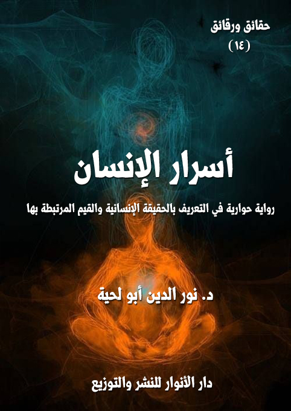

الكتاب: أسرار الإنسان
المؤلف: أ.د. نور الدين أبو لحية
الناشر: دار الأنوار للنشر والتوزيع
الطبعة: الأولى، 2015.
عد الصفحات: 534.
ISBN: 978-620-2-34499-9
لمطالعة الكتاب من تطبيق مؤلفاتي المجاني وهو أحسن وأيسر: هنا

التعريف بالكتاب
تهدف هذه الرواية إلى الإجابة ـ وفق المنظور الإسلامي ـ على عن كل التساؤلات التي يطرحها العقل حول الإنسان، وحقيقته، ووظيفته، وطاقاته التي زود بها، ولم زود بها، وكيف يستخدمها، وما هي نتيجة استخدامه لها؟
وهي لذلك تدخل ضمن ما يسمى [الحكمة العملية]، أو [العرفان العملي] أو [السلوك التخلقي والتحققي]
وقد كان اعتمادنا فيها بالدرجة الأولى على ما ورد في النصوص المقدسة فيما يتعلق بهذه الجوانب.. بالإضافة إلى ما كتب في علم السلوك والعرفان والتصوف.
تهدف هذه الرواية إلى نفس الأهداف التي هدف إليها ما قبلها من الروايات من سلسلة [حقائق ورقائق]، وهي إثبات أن الإسلام هو الدين الوحيد الذي يجيب عن كل التساؤلات التي يطرحها العقل الإنساني، ويحتار في الإجابة عليها.
ومن أهم تلك التساؤلات التساؤل عن الإنسان، وحقيقته، ووظيفته، وطاقاته التي زود بها، ولم زود بها، وكيف يستخدمها، وما هي نتيجة استخدامه لها.
وهذا النوع من الأسئلة يجاب عليه عادة في كتب الأخلاق والسلوك والتصوف، ولهذا كانت هذه الكتب هي مراجعنا الكبرى، وقد اقتصرنا منها على ما يسمى [الحكمة العملية]، أو [العرفان العملي] أو [السلوك التخلقي والتحققي]، أما المسائل النظرية المرتبطة بحقيقة الإنسان، وترتيبه في سلم الوجود، ونحو ذلك، فإننا لم نتطرق لها في هذه الرسالة لأسباب كثيرة.
لعل أهمها أن فهم أكثر تلك المسائل مرتبط بالسلوك التحققي والتخلقي.. لأن المعارف المرتبطة بها معارف ذوقية، وهي من النوع الذي لا يمكن التعبير عنه، ومن عبر عنه سيقع في الخطأ لا محالة.
بالإضافة إلى أن الكثير من تلك المعارف المبثوثة في كتب العرفان والتصوف تختلط بالأوهام والثقافات المختلفة، ومن الصعب التمييز بينها..
لذلك كان الأسلم والأحكم الاكتفاء بما ورد في النصوص المقدسة من التعريف بحقيقة الإنسان، وصفاته ووظائفه (1).. والاكتفاء بما ورد في التراث الإسلامي من تجارب علماء الأخلاق والسلوك.
ولهذا فقد كان ا بالدرجة الأولى على ما ورد في النصوص المقدسة فيما يتعلق بهذه الجوانب.. وخصوصا القرآن الكريم، والسنة الصحيحة الموافقة للقرآن.
__________
(1) تحدثنا عن حقيقة الإنسان ومكوناتها المختلفة في كتاب [سلام للعالمين] من هذه السلسلة.
أسرار الإنسان (8)
ومن كتب التراث كان اعتمادنا الأكبر على كتاب [إحياء علوم الدين]، لاعتبارات مختلفة.. أولها أنه كتاب متفق عليه عند مدارس الأمة جميعا، ولهذا كنا نرجع إليه، ونقارن ما فيه بما في كتاب [المحجة البيضاء] للفيض الكاشاني.
بالإضافة إلى أن الغزالي في كتابه ذلك، نقل كل ما أورده سلفه في أمثال هذه المسائل من أمثال [قوت القلوب] لأبي طالب المكي، و[الرعاية لحقوق الله] للحارب المحاسبي، وغيرها.
بالإضافة إلى أن أكثر ما كتبه المتأخرون في أمثال هذه المسائل منقول بالحرف أو المعنى من كتب الغزالي.
وقد حرصنا في هذه الرواية ـ كما في غيرها من الروايات ـ أن يكون أبطالها من جميع المذاهب والمدارس الإسلامية ممن اهتموا بالأخلاق والسلوك، وتركوا فيها آثارا، بناء على حرصنا على الوحدة الإسلامية، وذلك لا يعني أننا نوافق هذه الشخصيات في كل ما سلكته أو رأته من آراء.
ونحب أن نبين في الأخير أننا اختصرنا الكلام في بعض القضايا في هذه الرواية، لا لعدم أهميتها، وإنما لأننا خصصنا لها كتبا خاصة بها، وخاصة في سلسلة [رسائل السلام] التي تتناول بأجزائها جميعا هذا النوع من المسائل.
أسرار الإنسان (9)
في ذلك اليوم العجيب، استيقظت فزعا مذعورا من رؤيا رأيتها.. كانت أبعد ما تكون في وضوحها وصفائها عن الرؤى.. لقد كنت فيها ـ كما أنا في اليقظة تماما ـ بجميع مشاعري وقواي وضعفي.. وكان الزمان فيها كالمكان ككل شيء لا يختلف تماما عما أراه في اليقظة وأشعر به وأعيشه.
سأقص عليكم ما بقي منها في خاطري.. فإن لها علاقة بهذه الرواية.. ولها علاقة كبرى بالرحلة العجيبة التي حدثني عنها الشيخ الغريب الصالح، والتي سأرويها لكم بدوري كما رواها لي (1).
لقد رأيتني وحدي أنام على تراب الأرض.. كان ترابا ممتلئا بالماء.. وقد تحول نتيجة لذلك إلى طين.. بل إنه تغير من طول المكث، فصار حمأ مسنونا.. لعله يشبه الحمأ المسنون الذي تشكل منه آدم عليه السلام.
استيقظت في تلك المتاهة.. ولم أكن أعرف من أيقظني.. ولكني شعرت بيده الحانية تربت على كتفي.. وتوقظني بحنان.. كان ذلك هو أسعد شيء في رؤياي.. وليتها توقفت عند ذلك الحد.. ولم أتعرض لتلك الاختبارات التي تعرضت لها.. والتي جعلت حلمي كابوسا ثقيلا ملأني رعبا.
سرت في تلك المتاهة خطوات طويلة إلى أن وجدت قصرا مكتنفا بأشجار كثيرة.. وكان تحت الأشجار ماء كثير.. وأزهار كثيرة.. وعشب جميل.
لقد كانت لي في ذلك الحلم جراءة لم أعهدها في اليقظة.. ولذلك دخلت القصر من غير أن أطرق بابه.. فقد كان بابه مفتوحا..
لكني مع سوء أدبي هذا استقبلني صاحب القصر أحسن استقبال.. بل أتاح لي في ذلك
__________
(1) ننبه إلى أن هذه الرؤيا التي نقصها هنا مجرد مثل.. والمثل لا يؤخذ به ـ كما هو معروف ـ بكل وجوهه.
أسرار الإنسان (10)
القصر والجنة المحيطة به من المتاع ما لم أر مثله في حياتي..
بعد أن مكثت فترة في ذلك الجو الهادئ السعيد.. لم تطمئن نفسي لتلك الحياة التي ليس فيها إلا اللذة المجردة عن كل تكليف وكل مغامرة..
لذلك طلبت من صاحب القصر.. ذلك الرجل الكريم.. الذي أغدق علي من كرمه ما لم أر مثله في حياتي، أن يكلفني بأي وظيفة.. لقد قلت له، وأنا ممتلئ حماسة وقوة: لم لا تكلفني.. أنت تراني ممتلئ بالقوى العجيبة.. أنا أفكر.. وأحلل.. وأشعر.. وأتخيل.. وأطير في الأجواء التي لا يستطيع جسدي أن يطير إليها.
وقلت له: أنا أشق الشعرة بذكائي.. وأحول من تلك التربة التي كنت فيها جنات وقصورا لا تقل عن هذا القصر الذي أسكنتني فيه..
وقلت له: نعم أنا معك الآن.. وقريب منك.. ولكني أشعر أني مع هذا القرب بعيد.. بل أشعر أنك لا تريد إلا أن تهجرني عندما تشغلني بهذا النعيم عن الجلوس إليك ومنادمتك.
نظر إلي صاحب القصر بعين حانية ممتلئة بالشفقة، وقال: لقد جاء قبلك من طلب مني ما تطلب.. لكنه ما إن وضع قدمه على مقام التكليف حتى امتلأ عقله وقلبه وكل قواه بالتحريف.. فراح يصورني في أذهان الخلق بصورة المجرم..
قلت بغضب: ويل للمجرم.. أيقابل مثلك بهذا؟
قال: لا تهتم.. فقد نال جزاءه.. فإني مع كرمي الشديد لا أترك لأي أحد الفرصة أن يعبث بسمعتي أو بالرحمة والعدالة التي أشعر أن الله كلفني برعايتها، وعدم التقصير في رعايتها.
قلت: أهو مسجون في هذا القصر؟
ابتسم، وقال: القصر لا يسجن فيه.. أنا لدي من الزنازن ما يوضع فيه المجرمون ليردعوا نفوسهم الشريرة التي تحدثهم بالإجرام.
أسرار الإنسان (11)
قلت: ما كنت أتصور أن لمثلك في حنانك ورحمتك ولطفك زنازن؟
قال: أحيانا تقتضي العدالة والرحمة أن تتخذ من الزنازن ما يحفظ لهما وجودهما وتوازنهما.
قلت: دعنا من هذا.. وهيا كلفني.. فستجدني قويا أمينا.. حفيظا عليما.. أسند إلي أي وظيفة.. بل أسند إلي أخطر الوظائف.. فإن لدي من القدرات ما يطيق أعلى الوظائف وأدقها.
ابتسم، وقال: سأعطيك كنزا..
قاطعته قائلا ـ وقد سال لعابي، ولم أملك أن أحبسه ـ: وما أفعل به؟
قال: لقد تعودت أن أتعهد قرية من القرى الضعيفة الفقيرة بما يكفيها من المال وغيره.. وأنا لا أطلب منك إلا أن توصل ذلك الكنز لتلك القرية.. وتوزعه عليها بحسب ما لديك من موازين العدالة التي ذكرتها لي.
قلت ـ وأنا ممتلئ زهوا ـ: ما أبسط ذلك.. وما أيسره.. نم هانئا.. فلن يجد أهل القرية مني إلا ما وجدته منك من الكرم والرحمة واللطف والحنان.. سأسير فيهم بما تعلمته منك.. فقد تعلمت منك الكثير.
قال: لكن احذر.. فهناك محتالون.. قد يخادعونك.. وقد يأخذون منك الكنز ليستأثروا به لأنفسهم، ويدعو أهل القرية للجوع والعراء.
قلت: لا تهتم.. أنا لم أذكر لك طاقاتي جميعا.. لدي طاقة تسمى الفراسة أتفرس بها الوجوه لأميز الخبيث من الطيب.. والكاذب من الصادق.. والخب من المغفل.
قال: واحذر أن تحدثك نفسك بأن تأخذ من هذا الكنز ما لم أتح لك منه..
قلت: لا تهتم.. فلي نفس ممتلئة بالزهد والعفاف.. وهي لن تتحرك لأي إغراء.
قال: احذر.. فالأمر أخطر مما تتصور..
قلت: الأمر بسيط.. ولست أدري لم تعقده.
قال: لأنه معقد.. أنت لا تعلم عاقبة نجاحك أو فشلك.
أسرار الإنسان (12)
قلت: لقد ذكرت لي أن عاقبة فشلي هي الزنزانة..
قال: لا تستهن بها.. فإن العذاب الذي فيها لا يمكن لأحد تخيله.
قلت: وما الجزاء إن نجحت؟
قال: ستعطى الجائزة الكبرى.
قلت: وما الجائزة الكبرى؟
قال: ستكون مفاجأة.. كل ما يمكن أن تعرفه عنها.. هو أن هذا القصر الذي تراه بالجنة التي تحيط به سيصبح ملكك.
قلت مندهشا: ملكي!؟
قال: ليس وحده.. هناك قصور كثيرة معه.. وفيها من كل شيء.
قلت: وأنت.. هل يمكنني أن أتصل بك وأجلس إليك.. إن هذا شيء مهم بالنسبة لي لا تغنيني عنه جميع قصور الدنيا؟
قال: لك ذلك.. ولكن بشرط واحد أن تؤدي هذه الأمانة الثقيلة إلى المحل الذي طلبت منك.
قلت: لا تهتم.. سأسير الآن.
قال: سر.. واعلم أن لي في كل خطوة تتحركها من العيون من ينقلها لي..
قلت: لن ترى مني إلا ما يسرك.
بعد أن قلت هذا سرت.. وبصحبة ذلك الكنز العظيم الممتلئ بكل أصناف الجمال.. كنت في الطريق أنظر إليه كل حين.. وكنت إذا ما ارتحت في أي محل أنشغل بالنظر إليه عن الأكل والشرب..
بعد أيام من السير صرت مدمنا على النظر إليه، والتمتع بذلك..
وقد وصل بي الأمر بعد أيام قلائل إلى أن توقفت عن السير.. بل وصل بي الأمر إلى أن
أسرار الإنسان (13)
وضعت الكنز في محل رفيع، ورحت أجثو بين يديه كما يجثو الوثني أمام أصنامه.
أذكر أني في تلك الرؤيا كنت أسمع التحذيرات الشديدة من الانشغال بالكنز عن الوظيفة التي كلفت بها.. لكني لم ألتفت لأي ناصح أو محذر..
وذات يوم.. حصل ما حول من حلمي كابوسا.. لقد مددت يدي لآخذ من ذلك الكنز.. فلم يعد يكفيني أن أنظر إليه.. وليت ذلك فقط كان، بل حدثتني حينها نفسي أن أستأثر به لنفسي.. وقال لي شيطاني: إنك لو ملكت هذا الكنز، فستصير كصاحب ذلك القصر.. سيكون لك من الأمر ما هو له..
مددت يدي.. وليتني ما مددتها.. لقد تحول ذلك الكنز الذي كنت ممتلئا إعجابا به إلى حية كبيرة أحاطت بذراعي، ولم ينقذني منها إلا صراخي، واستيقاظي بعده..
-\--\-
ملأتني تلك الرؤيا بالمخافة.. ولست أدري كيف سرت إلى الشيخ الصالح ـ الذي تشرفت بزيارته ذلك اليوم ـ من حيث لا أشعر لأقصها عليه..
لكني ما إن دخلت عليه حتى خاطبني بقوله: هل رأيت الإنسان؟
قلت: كيف لا أرى الإنسان.. أنا لا أرى إلا الإنسان.. ألست أنت وأنا وكل أولئك الذين يعمرون القارات أناسي؟
قال: لا.. ليسوا كلهم أناسي.. الإنسان هو الذي بقي إنسانا.. أما من لم يبق إنسانا، فلا يصح أن نطلق عليه هذا اللقب العظيم.
قلت: لم أفهم.
قال: أرأيت لو أن عنبا لذيذا حلالا حوله مجرم خمرا.. هل يبقى للعنب كرامة العنب؟
قلت: كيف تبقى له كرامة العنب، وقد نجس بتحويله خمرا؟
قال: فلو قال لك رجل من الناس: أعطني عنبا.. فأعطيته خمرا.. هل تكون مصيبا
أسرار الإنسان (14)
بفعلك هذا؟
قلت: بل أكون مصيبة بفعلي هذا.. فشتان بين الخمر والعنب.
قال: ولكن الخمر ليست سوى عنب.
قلت: هي عنب منحرف خبيث.. لا عنب مستقيم طيب.
قال: أخبثه وانحرافه يحذف منه كرامة اسمه؟
قلت: أجل.. كما تحذف من الخائن كل ألقاب الأمانة التي لقب بها.
قال: فهكذا الإنسان..
قلت: ما تقصد؟
قال: لقد خلق الله الإنسان مخلوقا طيبا بريئا ممتلئا بالطاقات العظيمة التي تؤهله للخلافة التي هي وظيفته الكبرى.. ولكن الكثير من الخلائق راحوا يمحون اسم الإنسان ليضعوا بدله اسم الشيطان.
قلت: لم أفهم.
قال: أرأيت لو أن صاحب مطعم أراد أن يجعل بعض عماله نادلا لما رأى فيه من الخلال المناسبة لذلك.. لكنه فوجئ بأن يدي النادل تقطعان.. أو تشلان.. فهل يمكن أن يستمر صاحب المطعم على هذه النية؟
قلت: غبي إن هو استمر على هذه النية.. فلا يمكن للقطيع أو المشلول أن يحمل الطعام إلى فمه.. فكيف يحمله إلى أفواه غيره؟
قال: فهكذا الإنسان.. لقد وهب الله الإنسان من القوى ما يستطيع أن يؤدي به الوظائف الخطيرة التي وكلت إليه.. لكنه إن راح يقطعها ويصيبها بالشلل، فلن يطيق تحمل شيء.
قلت: فهلا ضربت لي مثالا على ذلك.
أسرار الإنسان (15)
قال: ألا ترى هؤلاء الخلائق الذين راحوا يتلاعبون بالكنوز التي جعلها الله أمانة في أعناقهم؟
أصابني رعب الكابوس، فقلت له: لقد ذكرتني بما جئت من أجله.. لقد رأيتني أخون الكنز.. لقد مددت يدي إليه.. لكن الحية طوقت يدي.. وكادت تقضي علي لولا أن تداركتني اليقظة.
قال: وهكذا البشر جميعا لن ينقذهم من الحيات إلا اليقظة.
قلت: ولكنهم مستيقظون؟
قال: لا.. بل هم نائمون.. كل من غفل عن حقيقته نائم.. كل من انشغل عن وظيفته نائم.. كل من مد يده للكنوز التي اؤتمن عليها غير مدرك عواقبها نائم..
قلت: فمن يوقظهم؟
قال: لقد أيقظهم الله بالرسل..
قلت: ولكن الرسل ماتوا.
قال: لقد تركوا من الورثة ما يخلفهم في هذه الوظيفة.
قلت: فهل يسمع الناس للورثة؟
قال: فهل سمعت أنت؟
قلت: في الحلم لم أسمع.
قال: ليس الشأن بالحلم.. الشأن باليقظة.. أنت لا تحاسب على ما تفعله في الأحلام، بل تحاسب على ما تفعله في اليقظة.
قلت: فهل يمكنني أن أسمع الورثة الذين لم أسمعهم في الرؤيا؟
قال: ذلك يرجع إليك.. أنت الذي تقرر.. ولا يمكن لأحد في الدنيا أن يقرر بدلك.
قلت: لقد أرحتني بقولك هذا.. سأتدارك بتوفيق الله ما فاتني في الحلم أن أتداركه.
أسرار الإنسان (16)
قال: إنك إن صدقت.. فلن تطوقك الحية.
قلت: لقد غفلنا بالحديث عن الرؤى عن الحديث عن قصتك التي أخبرتني أنك ستحدثني عنها، وطلبت مني كتابتها.
قال: قصتي مرتبطة بما كنا نتحدث عنه.. لقد تعرفت من خلالها على الإنسان.. الإنسان الذي كان لغزا.. ولم يستطع أحد في الدنيا أن يجرؤ على حله لولا الأشعة التي أنالنا الله إياها من شمس محمد صلى الله عليه وآله وسلم.
قلت: ما أشد شوقي لأن أسمع أشعة ترتبط بهذا.. فلا يعرف ربه من لا يعرف نفسه.
-\--\-
اعتدل الشيخ الصالح في جلسته، وحمد الله، وصلى وسلم على نبيه صلى الله عليه وآله وسلم مستغرقا في كل ذلك، ثم قال: بعد أن قدر الله لي من معرفته ما قدر.. وبعد أن هداني، فتخلصت من كل تلك القيود التي كانت تحول بيني وبين الإيمان بمحمد صلى الله عليه وآله وسلم.. وبعد أن تنزل علي من النور ما تنزل على من أراد الله هدايته.. بعد كل ذلك شعرت بشوق عظيم يحركني للتعرف على ذاتي.. على حقيقتها.. ومكانتها.. والوظائف المناطة بها.
وكما تعودت في رحلاتي السابقة، فإن الله بفضله حرك أخي التوأم لأن يوفر لي من الجو ما ييسر لي التعرض لهذا النوع من الأشعة.. فقد أرسلني إلى بقعة خالية في إقليم من أقاليم الأرض لم أعرفه.. ولا أحسب أحدا في الدنيا يمكن أن يعرفه.. لقد طارت بي طائرة خاصة إلى ذلك الموقع، ثم تركتني فيه مع بعض الزاد، ثم انصرفت..
لقد كانت البقعة خالية.. وكانت ممتلئة بالطين.. وكان بعض الطين قد تحول إلى حمأ مسنون.. وبعضه تحول إلى صلصال كالفخار..
قلت: عجبا.. لكأنك تذكر رؤياي.. لقد كان هذا ما رأيته في رؤياي.
قال: لقد ذكرت لك أنك رأيت الإنسان.. فلا يمكن أن يعرف الإنسان من لم يعرف
أسرار الإنسان (17)
الطين والتراب والحمأ المسنون.. ولكن هناك فرقا كبيرا بين رؤيتي ورؤيتك.. فأنت رأيت الإنسان في الحلم، أما أنا فقد أرانيه الله في اليقظة.
قلت: ما أراد أخوك بإرسالك إلى هذه البقعة الخالية؟
قال: أراد أن يعاقبني بفعله هذا.. فقد أوحى إليه بعضهم بأنني لن أكف عما أنا فيه إلا بتلك العزلة التي تعيد لعقلي اتزانه.
قلت: فكيف خرجت من هذه البقعة؟.. وكيف استطعت أن تقوم برحلتك هذه فيها، وقد ذكرت لي أنه ليس فيها إلا التراب؟
قال: لقد قدر الله أن تكون رحلتي هذه في تلك البقعة الخالية التي ليس فيها إلا التراب.
قلت: لقد ملأتني بالعجب.. كيف ذلك؟.. وليس في الخلاء إلا الهباء.
قال: ببصرنا الضعيف نرى الهباء.. ولكنا ببصر الحقيقة نرى ما لا يمكن تصوره.
قلت: لقد زدتني عجبا.. فحدثني كيف كان ذلك؟
قال: عندما انصرفت الطائرة انصرفت إلى أذكاري وأورادي.. وقد شعرت بأنس عظيم وأنا في تلك الحال، وفي تلك البقعة..
وفجأة.. وبينما أنا كذلك إذا بي أرى صاحبك (معلم السلام) كالشمس في ضحاها، وكالزهور في جمالها، وكالبراءة في ابتسامتها.. ما رأيته حتى صحت بأعلى صوتي أريد أن أسمعه: يا من يمتلئ بالحكمة والنور.. تعال أخبرك أخبارا سارة.. لقد يسر الله لي الطريق إليه.. لقد عرفت محمدا صلى الله عليه وآله وسلم.. وعرفت أنه هو الشمس التي دلتني عليها جميع الحقائق.
رأيت البشر على وجهه.. لكنه أشاح بوجهه عني، وهو يقول: ليس الشأن أن تعرف الملوك، ولكن الشأن أن ترفع الحجب عنك، فتدخل عليهم.. وليس الشأن أن تدخل عليهم، ولكن الشأن أن تستقر عندهم.. وليس الشأن أن تستقر عندهم، ولكن الشأن أن تصلح لمنادمتهم.. وليس الشأن أن تنادمهم، ولكن الشأن أن تنصهر فيهم، فلا تميز عنهم، ولا يميزون
أسرار الإنسان (18)
عنك (1).
قلت: كيف لا أميز عنهم، ولا يميزون عني.. وأنا لي كياني الذي لا يمكن أن يندمج في أي كيان.. ولي دولتي التي لا تستعمرها أي دولة؟
قال: ذلك عالم التراب.. أما عالم الأرواح الذي يمثل حقيقتك، فمختلف تماما.
قلت: فحدثني عنه.. لقد بعث الله في من الأشواق إلى معرفة ذاتي ما بعثه قبل ذلك لمعرفته.
قال: أنت تعلم دوري.. أنا دليل.. والدليل يدلك على طرق الحقيقة.. ثم يدعك تسير إليها.
قلت: لقد تعودت منك أن تدلني على أبواب الحقيقة.. فما أبواب الـ (أنا)؟
قال: ثمانية.. عددها كأعداد أبواب الجنة الثمانية (2).
قلت: فما هي؟.. وكيف أهتدي إليها؟
قال: افتح عينيك.. وسيقيض الله لك من يدلك عليها.
قلت: أنا لا أرى في هذه البقعة إلا الهباء.. فكيف تطلب مني أن أفتح عيني، وأنت تراهما منفتحتين؟
قال: افتح عيني بصيرتك.. وسترى ما لا يراه بصرك.
قلت: بصيرتي ترى عالم الحقائق، لا عالم الأجساد.
قال: قد يجعل الله للحقائق أجسادا تعرف بها وتميز.
__________
(1) نريد بهذا الإشارة إلى المعنى الرمزي للفناء.. أما الاتحاد بمفهومه الحسي، فلا يقبله العقل المجرد، فكيف يقبله العقل المسدد بأنوار الوحي.
(2) من الأحاديث الدالة على ذلك قوله (: (من قال: أشهد أن لا إله إلا الله وحده لا شريك له، وأن محمدا عبده ورسوله، وأن عيسى عبد الله وابن أمته وكلمته ألقاها إلى مريم وروح منه، وأن الجنة حق، وأن النار حق، أدخله الله من أي أبواب الجنة الثمانية شاء) [رواه البخاري ومسلم]
أسرار الإنسان (19)
قلت: إنها حينذاك تتلوت بلوث الأجسام..
قال: من خلق الطهارة في عالم الحقائق، فلن يعجز عن خلق الطهارة في عالم الأجساد.
قلت: هل تقصد أني سأرى ببصيرتي أجسادا تتحرك؟
قال: لو فتحت بصيرتك، فسترى الحقائق تتحرك.. فلله من المعلمين ما له من الجنود.. {وَمَا يَعْلَمُ جُنُودَ رَبِّكَ إِلَّا هُوَ.. (31)} (المدثر)
قلت: لا أزال لا أرى إلا الهباء.. فما أفعل حتى تنفتح بصيرتي؟
قال: إذا حجبك بصرك عن بصيرتك.. فأغلق بصرك لتعيش عوالم بصيرتك.
لست أدري كيف بدا أن أغلق بصري..
وقد امتلأت عجبا.. فما إن أغلقته حتى رأيت رياحا عجيبة تهب من اللامكان تمتلئ بروائح مقدسة لا يمكن للواصف أن يصفها.. ثم تنجلي الغمامة عن مدينة عجيبة ممتلئة بكل الألوان.. بل - فوق ذلك - رأيتني أتحرك فيها بكل نشاط، وكأن شبابي قد عاد إلي، بل كأني ولدت في تلك اللحظة.
-\--\-
في تلك البلاد العجيبة التقيت كثيرا من أهل الله في مواطن مختلفة.. وقد تعلمت منهم جميعا أركان (الأنا) وأوصافها وأخلاقها وصعودها وهبوطها.
قلت: فهل ستحدثني بما أفادوك؟
قال: من كلامهم ما تسمح العبارة بنقله.. ومنه ما لا تطيقه عقول الجماهير.. ولا ينبغي للعاقل أن يتكلم بما لا تطيقه عقول الجماهير.
قلت: فهو معارض للشريعة إذن؟
قال: لا.. ما كان لأهل الله أن يعارضوا الشريعة، وهم لا يستقون إلا من حياضها الطاهرة.
أسرار الإنسان (20)
قلت: عهدي بالشريعة اليسر والوضوح.
قال: هي كذلك.. ولكن فيها من الحقائق ما لا تطيق الجماهير فهمه.
قلت: لم أستوعب سر ذلك.
قال: هل ترى الجماهير تفهم الحقائق التي تنطوي عليها نظرية النسبية؟
قلت: هي نظرية تحتاج عقلا رياضيا..
قال: ومن حقائق الإيمان ما يحتاج عقلا عرفانيا.
قلت: فهل ستسر لي منها ما أستفيد منه لخاصة نفسي؟
قال: لن ينفعك ذلك.. فهذه الحقائق لا تنال بالألسن.
قلت: فبم تنال إذن؟
قال: بالسلوك.. وبالتدريب.. عندما تتطهر في البحار المقدسة.. وعندما يصفو قلبك.. حينها سيتنزل عليك من حقائق العرفان ما تعرف به حقيقة حقائق الإنسان.
قلت: فهلم حدثني بما أطيق، وبما يطيق قومي.
قال: سأحدثك عن أسرار الإنسان الثمانية التي فتحها الله علي في هذه الرحلة.. وحسبك بها.
أسرار الإنسان (21)
قلت: فما السر الأول منها؟.. ما السر الأول من أسرار الإنسان؟
قال: لقد عبر عنه القرآن الكريم، فقال: {يُرِيدُ اللَّهُ أَنْ يُخَفِّفَ عَنْكُمْ وَخُلِقَ الْإِنْسَانُ ضَعِيفاً} (النساء:28)
قلت: تريد ضعف الإنسان؟
قال: أجل.. فلا يمكن أن تعرف الإنسان، وأنت تجهل ضعفه وقصوره وهوانه.
قلت: ألا ترى أن هذه الحقيقة ستؤدي بنا إلى التقصير في شكر ربنا.. فكيف نشكر الله على ضعفنا؟.. ثم ألا ترى أنا سنتهم ربنا ونعارضه لأنه خلقنا ضعفاء؟
قال: لا.. لن يكمل الإنسان حتى يشعر بضعفه.. ولن تتجلى فيه الحقائق حتى يلبس لباس قصوره.. ولن يدخل رياض الملكوت حتى يقول بكل كيانه (حطة).. ألم يأمر الله بني إسرائيل بأن يقولوا ذلك؟
قلت: بلى.. وقد نص على ذلك قوله تعالى: {وَإِذْ قُلْنَا ادْخُلُوا هَذِهِ الْقَرْيَةَ فَكُلُوا مِنْهَا حَيْثُ شِئْتُمْ رَغَداً وَادْخُلُوا الْبَابَ سُجَّداً وَقُولُوا حِطَّةٌ نَغْفِرْ لَكُمْ خَطَايَاكُمْ وَسَنَزِيدُ الْمُحْسِنِينَ} (البقرة:58)
قال: انظر.. كيف أن الله رتب على قولهم لهذه الكلمة مغفرته لخطاياهم ومزيد فضله عليهم.
قلت: فما سر ذلك؟
قال: ألا ترى التربة الهينة اللينة الضعيفة.. كيف تثمر من كل الثمرات.. بينما الصخور الصلبة القوية لا تنبت شيئا؟
قلت: بلى..
أسرار الإنسان (22)
قال: فقد خلق الله الإنسان من تراب.. فمن بقي يشعر بضعف التراب ولين التراب أثمر من كل شيء.. ومن تحول إلى صخرة صلبة قوية فإنه لن ينبت في أرض نفسه شيء.
قلت: فهمت هذا المثال.. فحدثني كيف عرفت أسرار ضعف الإنسان، وما تحمله من معان سامية.
قال: في تلك المدينة العجيبة ـ التي فتح الله لي فيها من علوم الإنسان ما كان منغلقا ـ سرت على غير هدى إلى أن رأيت قصرا مهيبا ممتلئا بجميع ألوان الزخارف.. فحدثتني نفسي أن أسير إليه.. لأتأمل ما أودع فيه صانعوه من صنوف الجمال..
ما اقتربت من بابه حتى انتهرني حجابه الكثيرون.. فانتهرت، ولم أنبس ـ دفاعا عن نفسي ـ ببنت شفة، فقد كان لهم من البطش والقوة ما لا أستطيع معهما أن أرفض لهم أي أمر..
بينما أنا كذلك إذا بي أرى صاحب القصر يصل في سيارة ضخمة إلى قصره، وفي فمه سيجار عملاق.. وقد عجبت لما رأيته.. فقد كان له من قوة الجسد، ومهابة المنظر، وحسن الخلقة ما يملأ العيون..
ولكنه ـ للأسف ـ لم يكن يملك مع هذا الجسد أي عقل..
بمجرد نزوله من السيارة تقدم إليه رجل يشبهه في قوة جسده، وقسمات ملامحه.. وكأنهما أخوان توأمان.. لكن الفرق بينهما شديد.. فبينما كان العتو والطغيان يطغيان على الأول.. كان التواضع والأدب تمتلئ به أسارير الثاني..
لم يطل الحديث بينهما حتى رأيت الأول تتسلط عليه أنفة شديدة.. ثم يمد يده يريد أن يبطش بمحدثه.. لولا أنه حمى نفسه عنه..
فلم يجد الأول إلا أن يكفهر بوجهه، ثم يدخل قصره، وهو ممتلئ كبرياء وغرورا.. بل كأن جميع الغرور والكبرياء ركبتا فيه.
امتلأت حزنا على الثاني.. واقتربت منه لأسليه، فقال: لا تسليني أنا.. فهو أحوج مني
أسرار الإنسان (23)
إلى التسلية.
قلت: ما تقول.. الناس عادة يسلون المستضعفين لا المستكبرين..؟
قال: ذلك لعدم علمهم بحقيقة الإنسان.. ولو علموا حقيقته لم يجدوا إلا أن يسلوا المستكبرين.. ذلك أن كل مستكبر يحمل في حقيبة نفسه المملوءة بالغرور جميع السموم التي لا دور لها إلا الإجهاز عليه.
قلت: كيف ذلك؟
قال: ألم يخلق الله الإنسان من تراب؟
قلت: بلى.. فقد قال تعالى: {وَمِنْ آيَاتِهِ أَنْ خَلَقَكُمْ مِنْ تُرَابٍ ثُمَّ إِذَا أَنْتُمْ بَشَرٌ تَنْتَشِرُونَ} (الروم:20)، وقال مخبرا عن حديث الرجل المؤمن مع صاحبه الممتلئ بالغرور: {قالَ لَهُ صَاحِبُهُ وَهُوَ يُحَاوِرُهُ أَكَفَرْتَ بِالَّذِي خَلَقَكَ مِنْ تُرَابٍ ثُمَّ مِنْ نُطْفَةٍ ثُمَّ سَوَّاكَ رَجُلاً} (الكهف:37)
قال: انظر كيف يربي ربك عباده بالتراب الذي خلقوا منه.
قلت: ما تعني؟
قال: إن ربك يأمر عباده بأن يتذكروا التراب الذي نشأوا منه لئلا يحتقروا التراب الذي يمشون عليه.. ولا يحتقروا من يمشي معهم عليه.
قلت: لقد ذكرت لي أن من شأنه التكبر على هذا التراب يحتاج إلى أن يعزى في نفسه.
قال: أجل.. لأن التراب الذي تكبر عليه سيضمه لا محالة.. وسيعرف الطريقة التي يضمه بها.. ألم تسمع خبر قارون؟
قلت: بلى..
ابتسم، وقال: لقد سمي هذا الرجل الذي كنت أتحدث إليه لشقائه باسم قارون.. كان اسمه الذي سماه به والده هارون.. فأبى إلا أن يحول من الهاء قافا.. ويحول نفسه عن تواضع
أسرار الإنسان (24)
هارون ولينه (1) إلى كبرياء قارون وعتوه.
قلت: أرى أن لك به معرفة..
قال: هو أخي.. هو ابن أبي وأمي.. سماني والدي موسى.. كما سماه هارون تفاؤلا بأسماء الأنبياء.. لكن أخي بغى علينا، وكان أول ما فعله بعد أن تحول إلى قارون أن قطع بيننا وبينه كل صلة.. بل قطع بينه وبين ربه كل صلة..
كان يصيح في الناس كل حين كما يصيح قارون: {إِنَّمَا أُوتِيتُهُ عَلَى عِلْمٍ عِنْدِي} (القصص:78)
وكان الناس قد انقسموا لما رأوه قسمين:
أما أولهما، فردد ما ردده الغافلون الذين انشغلوا بزينة قارون عن الضعف الخطير الذي كان يحمله.. لقد رددوا ـ شعروا أو لم يشعروا ـ: {يَا لَيْتَ لَنَا مِثْلَ مَا أُوتِيَ قَارُونُ إِنَّهُ لَذُو حَظٍّ عَظِيمٍ (79)} (القصص)
وأما الثاني، ففريق من المؤمنين خاطبوه قائلين: {لَا تَفْرَحْ إِنَّ اللَّهَ لَا يُحِبُّ الْفَرِحِينَ (76) وَابْتَغِ فِيمَا آَتَاكَ اللَّهُ الدَّارَ الْآَخِرَةَ وَلَا تَنْسَ نَصِيبَكَ مِنَ الدُّنْيَا وَأَحْسِنْ كَمَا أَحْسَنَ اللَّهُ إِلَيْكَ وَلَا تَبْغِ الْفَسَادَ فِي الْأَرْضِ إِنَّ اللَّهَ لَا يُحِبُّ الْمُفْسِدِينَ (77)} (القصص)
لكنه أجابهم بنفس إجابة قارون.. والتي ظل يرددها كل حين: {إِنَّمَا أُوتِيتُهُ عَلَى عِلْمٍ عِنْدِي} (القصص:78)
قلت: لكأني أرى قصة قارون تتكرر أمامي.
قال: هي لا تتكرر أمامك فقط.. بل هي تتكرر في جميع الأرض.. تتكرر بين الأفراد
__________
(1) يشير إلى لين هارون - عليه السلام - قوله تعالى: {وَلَقَدْ قَالَ لَهُمْ هَارُونُ مِنْ قَبْلُ يَا قَوْمِ إِنَّمَا فُتِنْتُمْ بِهِ وَإِنَّ رَبَّكُمُ الرَّحْمَنُ فَاتَّبِعُونِي وَأَطِيعُوا أَمْرِي (90) قَالُوا لَنْ نَبْرَحَ عَلَيْهِ عَاكِفِينَ حَتَّى يَرْجِعَ إِلَيْنَا مُوسَى (91) قَالَ يَا هَارُونُ مَا مَنَعَكَ إِذْ رَأَيْتَهُمْ ضَلُّوا (92) أَلَّا تَتَّبِعَنِ أَفَعَصَيْتَ أَمْرِي (93) قَالَ يَا ابْنَ أُمَّ لَا تَأْخُذْ بِلِحْيَتِي وَلَا بِرَأْسِي إِنِّي خَشِيتُ أَنْ تَقُولَ فَرَّقْتَ بَيْنَ بَنِي إِسْرَائِيلَ وَلَمْ تَرْقُبْ قَوْلِي (94)} (طه).. فمع شدة موسى - عليه السلام - عليه، ومع ذلك تحدث معه بذلك اللين.
أسرار الإنسان (25)
والجماعات.. وبين الأمم والشعوب.. كلهم يفخر ويزهو ببعض ما أوتيه من قوة غافلا عن القنابل الموقوتة التي قد تدمر حياته كل حين.
قلت: قنابل موقوتة!؟
قال: أجل.. لقد ركب الله في أجهزة الإنسان من الضعف ما يستأصله إن بغى وطغى..
قلت: فالإنسان يشعل ـ إذن ـ في عتوه فتيلة تفجيره؟
قال: أجل.. هو يشعلها ـ من حيث لا يشعر ـ كما يشعل سيجارته..
لست أدري كيف قلت له من حيث لا أشعر: أنا طالب أبحث عن الإنسان.. وأحسب أن لك معرفة به.. فدلني عليه.
قال: لن تعرف الإنسان حتى تعرف ضعفه.. والقنابل الموقوتة التي يحملها في ضعفه.
قلت: فما هي؟
قال: للإنسان من الضعف عدد ما فيه من الخلايا.. وفيه من النقص عدد ما في ربه من الكمالات..
قلت: فلا يمكن إحصاء ضعفه إذن.
قال: ما دمنا لا نحصي كمال ربنا.. فلا يمكننا بحال من الأحوال أن نحصي ضعف نفوسنا.. بل إن ضعف نفوسنا هو المرآة التي تتجلى فيها كمالات ربنا.
قلت: لقد عرفت هذا في رحلتي للبحث عن الله.. وأنا أريد أن أعرف الإنسان.
قال: سأحدثك عن سبعة أركان لضعف الإنسان.. لا يليق بعاقل أن يجهلها.
قلت: فمن أين تعلمتها؟
قال: لقد شاء الله لي أن أنتمي إلى مدرسة من مدارس المعرفة.. وقد تعلمت من أساتذتها من أركان ضعف الإنسان ما حماني من الوقوع في متاهة القوة المزيفة.
قلت: فأخبرني عن ذلك.. فما أحلى أحاديث المدارس، وما أعذبها.
أسرار الإنسان (26)
قال: سأبدأ حديثي من أوله..
ذات يوم، دخلت الحمام.. ثم لبست ثوبا جديدا.. ثم ركبت حصانا لي.. وكان حصانا في غاية القوة..
وبينا أنا كذلك إذا بهواتف غريبة تدعوني للاستعلاء، وتقول لي: أنت شاب قوي وسيم تملك كل أنواع القوة..
أنت إنسان مكرم قد سخر لك كل شيء.. فهذا الحصان مع قوته مستعبد لك لا يتحرك إلا بإذنك، ولا يسكن إلا بإذنك..
أنت لك من شدة الذكاء وقوة الذاكرة وحدة الملاحظة ما تفرق في غيرك..
أنت لك..
بقيت هذه الخواطر تتردد على خاطري إلى أن أصابني من الزهو الكاذب ما لا يمكن تصوره..
ما أصابني ذلك الزهو حتى رماني الحصان من على ظهره، وكأني قد ثقلت عليه، وقد أصابني من الكسور بسبب رميه لي ما لا أزال أحمد الله عليه كل حين.
قلت: أتحمد الله على ما أصابك من الكسور؟
قال: أجل.. لقد كانت كسور جسدي هي المراهم التي عولجت بها جراح قلبي.. وجراح قلبي أخطر بكثير من جراح جسدي.. لقد كان أول ما فعلته بعد أن شفاني الله أن رحت أعتذر إلى ذلك الحصان الذي سخره الله لي، وأقول له بكل تواضع: اعذرني.. فلست إلا عبدا مثلك ابتليت بي وابتليت بك.. أمرت بأن أقول عندما أركبك: {سُبْحَانَ الَّذِي سَخَّرَ لَنَا هَذَا وَمَا كُنَّا لَهُ مُقْرِنِينَ (13) وَإِنَّا إِلَى رَبِّنَا لَمُنْقَلِبُونَ (14)} (الزخرف)، لكني أبيت إلا أن أذلك لنفسي، وأستعبدك لنفسي..
أمرت أن أركبك عبدا، لكني أبيت أن أركبك إلا ربا.. فحاق بي ما حاق بجميع من
أسرار الإنسان (27)
ادعى ما ليس له.
في ذلك الموقف الذي وقفته قيض الله لي رجلا من الصالحين علمت بعد ذلك أن اسمه (أحمد الرفاعي) (1)، رآني في تلك الحال، فابتسم، وقال: ها قد وجدت تلميذا جديدا لمدرستي.
ابتسمت قائلا: لقد تخرجت منذ زمن طويل من الجامعة، ونلت أرفع الرتب فيها.. فكيف تريدني تلميذا في مدرستي.
قال: مدرستي لا تفرق بين الأمي والعالم.. الكل تجده فيها.. الكل فيها يدرس ويدرِِّس.
قلت: ما اسم مدرستك؟
قال: اسمها (مدرسة الضعفاء)، وبعضهم يطلق عليها اسم (مدرسة الفقراء)، وآخرون يطلقون عليها (مدرسة العجزة)
قلت: أنا أبحث عن المدرسة التي تعلمني القوة، لا المدرسة التي تعلمني الضعف..
قال: من لم يعرف ضعفه لم يصل إلى قوته.. ومن لم يصل إلى عجزه لن يصل إلى توفيقه.
قلت: أراك تشير إلى معان خفية عني.
قال: ما دمت قد فقهت أن تعتذر للحصان، فسيفتح الله لك من فهمها ما فتحه على أوليائه.
قلت: لا بأس.. ما دمت قد ذكرت لي هذا.. فهلم سر بي إليها.
قال: هذه المدرسة لا يمكنك أن تسير إليها بهذه الحال.
قلت: وكيف أسير إليها؟
__________
(1) أشير به إلى الولي الصالح أحمد بن علي بن أحمد بن يحيى بن حازم الرفاعي، أبو العباس البطائحي (500 ـ 578 هـ)، وهو الفقيه الزاهد،، موَسّس الطريقة الرفاعية.. كان والده مغربي الموطن، وسكن البطائح (من أعمال واسط)، فولد بها بعد أن توفّي والده وهو حمل.. تفقّه أوّلاً على مذهب الشافعي، فقرأ (التنبيه)، ثم تصوّف وانضم إليه خلق من الفقراء، وأحسنوا فيه الاعتقاد، وهم الطائفة الرفاعية ويقال لهم الاَحمدية أو البطائحية.. وللرفاعي كلام جميل جُمع في رسالة سُمّيت (رحيق الكوثر)
أسرار الإنسان (28)
قال: أنت الآن في حلة فاخرة.. وهذه المدرسة لا يذهب إليها إلا من تخلى عن جميع حظوظه.. وأول الحظوظ هذا الكفن الذي تكفن به جسدك؟
قلت: لقد رفع عنا الحرج في اللباس، وقد ورد في القرآن قوله تعالى: {يَا بَنِي آدَمَ قَدْ أَنْزَلْنَا عَلَيْكُمْ لِبَاسًا يُوَارِي سَوْآتِكُمْ وَرِيشًا وَلِبَاسُ التَّقْوَى ذَلِكَ خَيْرٌ ذَلِكَ مِنْ آيَاتِ اللَّهِ لَعَلَّهُمْ يَذَّكَّرُونَ (26)} (الأعراف)
وقد روي عن أبي مطر؛ أنه رأى عليا أتى غلامًا حدثًا، فاشترى منه قميصًا بثلاثة دراهم، ولبسه إلى ما بين الرسغين إلى الكعبين، يقول ولبسه: (الحمد لله الذي رزقني من الرياش ما أتجمل به في الناس، وأواري به عورتي)، فقيل: هذا شيء ترويه عن نفسك أو عن نبي الله صلى الله عليه وآله وسلم؟ قال: هذا شيء سمعته من رسول الله صلى الله عليه وآله وسلم يقول عند الكسوة: (الحمد لله الذي رزقني من الرياش ما أتجمل به في الناس، وأواري به عورتي) (1)
وحدث أبو الأحوص عن أبيه أنّه قال: أتيت النّبيّ صلى الله عليه وآله وسلم في ثوب دون فقال: (ألك مال؟)، قال: نعم من كلّ المال. قال: (من أيّ المال؟)، قال: قد آتاني اللّه من الإبل والغنم والخيل والرّقيق، قال: (فإذا آتاك اللّه مالا فلير أثر نعمة اللّه عليك وكرامته) (2)
قال: وروي في الحديث عن عبد اللّه بن شقيق أنّه قال: كان رجل من أصحاب النّبيّ صلى الله عليه وآله وسلم عاملا بمصر فأتاه رجل من أصحابه فإذا هو شعث الرّأس مشعانّ (3)، قال: (مالي أراك مشعانّا وأنت أمير؟) قال: كان نبيّ اللّه صلى الله عليه وآله وسلم ينهانا عن الإرفاه (4)، قلنا: وما الإرفاه؟ قال: (التّرجّل كلّ يوم) (5)
__________
(1) رواه أحمد.
(2) رواه أحمد وأبو داود والنسائي.
(3) مشعانّ الرأس: المنتفش الشعر الثائر الرأس.
(4) رواه النسائي.
(5) الإرفاه: كثرة التدهن والتنعم.
أسرار الإنسان (29)
وعن أبي أمامة الحارثيّ أنه ذكر أصحاب رسول اللّه صلى الله عليه وآله وسلم يوما عنده الدّنيا، فقال رسول اللّه صلى الله عليه وآله وسلم: (ألا تسمعون، ألا تسمعون، إنّ البذاذة (1) من الإيمان، إنّ البذاذة من الإيمان، يعني التّقحّل) (2)
وعن سراقة بن مالك أنّ رسول اللّه صلى الله عليه وآله وسلم قال له: (يا سراقة ألا أخبرك بأهل الجنّة وأهل النّار؟) قلت: بلى يا رسول اللّه. قال: (أمّا أهل النّار فكلّ جعظريّ جوّاظ مستكبر، وأمّا أهل الجنّة فالضّعفاء المغلوبون) (3)
ولاشك أنك تحفظ قوله صلى الله عليه وآله وسلم: (ربّ أشعث (4) مدفوع بالأبواب لو أقسم على اللّه لأبرّه) (5)، وقوله: (تعس عبد الدّينار وعبد الدّرهم وعبد الخميصة إن أعطي رضي وإن لم يعط سخط، تعس وانتكس وإذا شيك فلا انتقش، طوبى لعبد آخذ بعنان فرسه في سبيل اللّه، أشعث رأسه مغبرّة قدماه، إن كان في الحراسة كان في الحراسة، وإن كان في السّاقة كان في السّاقة، إن استأذن لم يؤذن له وإن شفع لم يشفّع) (6)
قلت: أتضرب النصوص المقدسة بعضها ببعض؟
قال: حاش لله.. ولكن أولياء الله الذين جعلهم الله أدلاء عليه قد اتفقوا على أن على المريد في أول سلوكه أن يتلخص من كل ما يشعره بأنانيته وقوته وغناه وعلمه.. فلا يمكن أن يصل إلى الله إلا من تحقق بقصوره..
وقد روي في هذا أن شاهداً عظيم القدر من أعيان أهل بسطام كان لا يفارق مجلس أبي
__________
(1) البذاذة: رثاثة الهيئة وترك الزينة والمراد التواضع في اللباس وترك التبجح به.
(2) رواه أبو داود وابن ماجة.
(3) رواه البخاري.
(4) أشعث: الأشعث الملبد الشعر المغبر.
(5) رواه مسلم.
(6) رواه البخاري.
أسرار الإنسان (30)
يزيد، فقال له يوماً: أنا منذ ثلاثين سنة أصوم الدهر لا أفطر وأقوم الليل لا أنام ولا أجد في قلبي من هذا العلم الذي تذكر شيئاً وأنا أصدق به وأحبه، فقال أبو يزيد: ولو صمت ثلثمائة سنة وقمت ليلها ما وجدت من هذا ذرة! قال: ولم؟ قال: لأنك محجوب بنفسك، قال: فلهذا دواء؟ قال: نعم، قال: قل لي حتى أعمله، قال: لا تقبله، قال: فاذكره لي حتى أعمل، قال: اذهب الساعة إلى المزين فاحلق رأسك ولحيتك وانزع هذا اللباس واتزر بعباءة وعلق في عنقك مخلاة مملوءة جوزاً، واجمع الصبيان حولك وقل: كل من صفعني صفعة أعطيته جوزة، وادخل السوق وطف الأسواق كلها عند الشهود وعند من يعرفك وأنت على ذلك، فقال الرجل: سبحان الله! تقول لي مثل هذا! فقال أبو زيد: قولك (سبحان الله) شرك، قال: وكيف؟ قال: لأنك عظمتك نفسك فسبحتها وما سبحت ربك! فقال: هذا لا أفعله ولكن دلني على غيره! فقال: ابتدئ بهذا قبل كل شيء. فقال: لا أطيقه، قال: قد قلت لك إنك لا تقبل؟
قلت: ألا ترى أن هذه الوصفة مخالفة للشرع؟
قال: لا.. هذا دواء من الأدوية التي يعالج بها المربون النفوس الممتلئة بالكبر والغرور.. وقد أخبر صلى الله عليه وآله وسلم أن الله (ما أنزل داء إلا أنزل له شفاء أو دواء علمه من علمه وجهله من جهله) (1)
قلت: ذاك في طب الأجسام.
قال: أترى أن الله الرحيم الرحمن أنزل لكل داء من أدواء الأجساد ما يعالجه، ولم ينزل مثله ما يداوي أدواء الأرواح؟
قلت: الجسد مختلف عن النفس.
قال: لقد عبر أولياء الله من الجسد إلى النفس، فذكروا أن (2) مثال النفس في علاجها
__________
(1) رواه أحمد.
(2) انظر: (كتاب رياضة النفس وتهذيب الأخلاق ومعالجة أمراض القلب)، وهو الكتاب الثاني من (ربع المهلكات)، من (إحياء علوم الدين)
أسرار الإنسان (31)
بمحو الرذائل والأخلاق الرديئة عنها وجلب الفضائل والأخلاق الجميلة عليها، مثال البدن في علاجه بمحو العلل عنه وكسب الصحة له وجلبها إليه.
وكما أن الغالب على أصل المزاج الاعتدال، وإنما تعتري المعدة الضرر بعوارض الأغذية والأهوية والأحوال، فكذلك كل مولود يولد معتدلاً صحيح الفطرة، وإنما أبواه يهودانه أو ينصرانه أو يمجسناه - أي بالاعتياد والتعليم تكسب الرذائل –
وكما أن البدن في الابتداء لا يخلق كاملاً وإنما يكمل ويقوى بالنشو والتربية بالغذاء؛ فكذلك النفس تخلق ناقصة قابلة للكمال؛ وإنما تكمل بالتربية وتهذيب الأخلاق والتغذية بالعلم.
وكما أن البدن إن كان صحيحاً فشأن الطبيب تمهيد القانون الحافظ للصحة وإن كان مريضاً فشأنه جلب الصحة إليه؛ فكذلك النفس منك إن كانت زكية طاهرة مهذبة فينبغي أن تسعى لحفظها وجلب مزيد قوة إليها واكتساب زيادة صفائها، وإن كانت عديمة الكمال والصفاء فينبغي أن تسعى لجلب ذلك عليها.
وكما أن العلة المغيرة لاعتدال البدن الموجبة للمرض لا تعالج إلا بضدها فإن كانت من حرارة فبالبرودة، وإن كانت من برودة فبالحرارة، فكذلك الرذيلة التي هي مرض القلب وعلاجها بضدها. فيعالج مرض الجهل بالتعلم، ومرض البخل بالتسخى، ومرض الكبر بالتواضع، ومرض الشره بالكف عن المشتهى تكلفاً.
وكما أنه لا بد من الاحتمال لمرارة الدواء وشدة الصبر عن المشتهيات لعلاج الأبدان المريضة فكذلك لا بد من احتمال مرارة المجاهدة والصبر لمداواة مرض القلب بل أولى. فإن مرض البدن يخلص منه بالموت ومرض القلب مرض يدوم بعد الموت أبد الآباد.
وكما أن كل مبرد لا يصلح لعلة سببها الحرارة إلا إذا كانت على حد مخصوص فكذلك النقائض التي تعالج بها الأخلاق لا بد لها من معيار.
أسرار الإنسان (32)
وكما أن معيار الدواء مأخوذ من عيار العلة حتى إن الطبيب لا يعالج ما لم يعرف أن العلة من حرارة أو برودة، فإن كانت من حرارة فيعرف درجتها أهي ضعيفة أم قوية؟ فإذا عرف ذلك التفت إلى أحوال البدن وأحوال الزمان وصناعة المريض وسنه وسائر أحواله ثم يعالج بحسبها، فكذلك طبيب النفوس لا يهجم عليهم بالرياضة والتكاليف في فن مخصوص وفي طريق مخصوص ما لم يعرف أخلاقهم وأمراضهم.
وكما أن طبيب الأجساد لو عالج جميع المرضى بعلاج واحد قتل أكثرهم فكذلك طبيب النفوس لو أشار على المريدين بنمط واحد من الرياضة أهلكهم وأمات قلوبهم.. بل ينبغي أن ينظر في مرض المريد وفي حاله وسنه ومزاجه وما تحتمله بنيته من الرياضة ويبني على ذلك رياضته.
قلت: إن ما ذكرته يجعل مما تقوله علما قائما بذاته.
قال: بل علوما قائمة بذاتها.
قلت: فأين أتعلم علمها؟
قال: في المدرسة التي دعوتك إلى الانتساب إليها.
قلت: فهلم سر بي إليها.. فما أحوجني إلى التخلص من درن نفسي.
سرت مع الرفاعي إلى أول قسم من المدرسة، وكان اسمه (قسم الجهل)، فسألته متعجبا: عادة المدارس أنها تعلمنا العلم، لا الجهل.
قال: لا يمكن أن يتعلم العلم من لم يعلم أنه جاهل.. فالعلم بالجهل هو مقدمة العلم.. وقد ذكر الله أن الأمم ما حجبت عن رسلها إلا بما توهمته من علمها.. لقد ذكر الله ذلك، فقال: {فَلَمَّا جَاءَتْهُمْ رُسُلُهُمْ بِالْبَيِّنَاتِ فَرِحُوا بِمَا عِنْدَهُمْ مِنَ الْعِلْمِ وَحَاقَ بِهِمْ مَا كَانُوا بِهِ
أسرار الإنسان (33)
يَسْتَهْزِئُونَ (83)} (غافر)
قلت: أنت تذكرني بأخي قارون.. فقد كان عالما بالكيمياء وأسرارها، وقد أتيح له بسببها أن يكتشف مركبات استطاع أن يكتسب من خلال تصنيعها أموالا ضخمة.. وقد جعله غروره يصيح في كل حين: {.. إِنَّمَا أُوتِيتُهُ عَلَى عِلْمٍ عِنْدِي.. (78)} (القصص)
قال: ويله: {أَوَلَمْ يَعْلَمْ أَنَّ اللَّهَ قَدْ أَهْلَكَ مِنْ قَبْلِهِ مِنَ الْقُرُونِ مَنْ هُوَ أَشَدُّ مِنْهُ قُوَّةً وَأَكْثَرُ جَمْعًا وَلَا يُسْأَلُ عَنْ ذُنُوبِهِمُ الْمُجْرِمُونَ (78)} (القصص)
قلت: وعيت أهمية هذا القسم وضرورته.. فمن شيخه؟
قال: شيخه علم من أعلام هذه الأمة الكبار، وقد قدم من بخارى، واسمه [محمد بهاء الدين النبقشندي (1)] على اسم جده الأكبر مؤسس الطريقة النقشبندية.
دخلنا إلى القسم، فرأينا الراغب يخاطب تلاميذه المحيطين به بقوله: والآن.. سلوني ما بدا لكم.
قال بعض تلاميذه: لقد وعينا جميع ما ذكرت.. ونحن نسألك عن أصناف الناس في علاقة علمهم بالعمل.
قال: الناس في علاقة علمهم بعملهم على أربعة أصناف (2):
الصنف الأول: من له العلم بما يجب أن يفعل، وله مع ذلك قوة العزيمة على العمل به، وهم الموصوفون بقوله تعالى في غير موضع: {الَّذِينَ آمَنُوا وَعَمِلُوا الصَّالِحَاتِ.. }
والصنف الثاني من عدمهما جميعاً وهم الموصوفون بقول الله تعالى: {إِنَّ شَرَّ الدَّوَابِّ عِنْدَ اللَّهِ الصُّمُّ الْبُكْمُ الَّذِينَ لَا يَعْقِلُونَ (22) وَلَوْ عَلِمَ اللَّهُ فِيهِمْ خَيْرًا لَأَسْمَعَهُمْ وَلَوْ أَسْمَعَهُمْ
__________
(1) أشير به إلى محمد بهاء الدين النقشبندي الأويسي البخاري شيخ الطريقه النقشبندية، والنقشبند ـ من حيث المعنى ـ تنقسم الى قسمين، القسم الأول منها هو (النقش) وهو فعل يحمل نفس المعنى العربي، والقسم الثاني هو (البند) والبند باللغة الكردية الفارسية والتركية هي الحبل أو الوتر، لذا يقصد بالنقشبند: بنقش إسم الجلالة (الله) على حبال وأوتار القلب وشغافه.
(2) انظر: تفصيل النشأتين.
أسرار الإنسان (34)
لَتَوَلَّوْا وَهُمْ مُعْرِضُونَ (23)} (الأنفال) وقوله: {وَلَقَدْ ذَرَأْنَا لِجَهَنَّمَ كَثِيرًا مِنَ الْجِنِّ وَالْإِنْسِ لَهُمْ قُلُوبٌ لَا يَفْقَهُونَ بِهَا وَلَهُمْ أَعْيُنٌ لَا يُبْصِرُونَ بِهَا وَلَهُمْ آذَانٌ لَا يَسْمَعُونَ بِهَا أُولَئِكَ كَالْأَنْعَامِ بَلْ هُمْ أَضَلُّ أُولَئِكَ هُمُ الْغَافِلُونَ (179)} (الأعراف)، وقوله: {أَمْ تَحْسَبُ أَنَّ أَكْثَرَهُمْ يَسْمَعُونَ أَوْ يَعْقِلُونَ إِنْ هُمْ إِلَّا كَالْأَنْعَامِ بَلْ هُمْ أَضَلُّ سَبِيلًا (44)} (الفرقان)
والصنف الثالث: من له العلم وليس له قوة العزيمة على فعله، فهو في مرتبة الجاهل بل هو شرٌّ منه، كما روي أن حكيماً سئل: متى يكون العلم شرّاً من الجهل فقال: (أن لا يعمل به)، وروي عن أمير المؤمنين عليّ أنه قال: (من كانت ضلالته بعد التصديق بالحق فهو بعيد من المغفرة)
والصنف الرابع: من ليس له العلم لكن له قوة العزيمة، فهذا متى انقاد لأهل العلم وعمل بقولهم أنجح في فعله وصار من الموصوفين بقوله تعالى: {وَمَنْ يُطِعِ اللَّهَ وَالرَّسُولَ فَأُولَئِكَ مَعَ الَّذِينَ أَنْعَمَ اللَّهُ عَلَيْهِمْ مِنَ النَّبِيِّينَ وَالصِّدِّيقِينَ وَالشُّهَدَاءِ وَالصَّالِحِينَ وَحَسُنَ أُولَئِكَ رَفِيقًا (69)} (النساء)
قال آخر: فما مراتب الناس في الجهل؟
قال النقشبندي: الناس في الجهل على أربعة منازل:
الأوّل: من لا يعتقد اعتقادا لا صالحا ولا طالحا، فأمره في إرشاده سهل إذا كان له طبع سليم، فإنّه كلوح أبيض لم يشغله نقش، وكأرض بيضاء لم يلق فيها بذر، ويقال له باعتبار العلم النّظريّ: غفل، وباعتبار العلم العمليّ: غمر، ويقال له: سليم الصّدر.
والثّانيّ: معتقد لرأي فاسد، لكنّه لم ينشأ عليه، ولم يتربّ به، واستنزاله عنه سهل، وإن كان أصعب من الأوّل، فإنّه كلوح يحتاج فيه إلى محو وكتابة، وكأرض يحتاج فيها إلى تنظيف، ويقال له: غاو وضالّ.
والثّالث: معتقد لرأي فاسد قد ران على قلبه، وتراءت له صحّته، فركن إليه لجهله
أسرار الإنسان (35)
وضعف نحيزته، ممّن وصفهم اللّه تعالى بقوله: {إِنَّ شَرَّ الدَّوَابِّ عِنْدَ اللَّهِ الصُّمُّ الْبُكْمُ الَّذِينَ لَا يَعْقِلُونَ (22) وَلَوْ عَلِمَ اللَّهُ فِيهِمْ خَيْرًا لَأَسْمَعَهُمْ وَلَوْ أَسْمَعَهُمْ لَتَوَلَّوْا وَهُمْ مُعْرِضُونَ (23)} (الأنفال) فهذا ذو داء أعيا الأطبّاء، فما كلّ داء له دواء، فلا سبيل إلى تنبّهه وتهذيبه.. كما قيل لحكيم يعظ شيخا جاهلا: ما تصنع؟ فقال: أغسل مسحا لعلّه يبيضّ.
والرّابع: معتقد اعتقادا فاسدا عرف فساده، أو تمكّن من معرفته، لكنّه اكتسب دنيّة لرأسه، وكرسيّا لرئاسته، فهو يحامي عليها، فيجادل بالباطل ليدحض به الحقّ، ويذمّ أهل العلم ليجرّ إلى نفسه الخلق، ويقال له: فاسق ومنافق، وهو من الموصوفين بالاستكبار والتّكبّر في مثل قوله تعالى: {وَإِذَا قِيلَ لَهُمْ تَعَالَوْا إِلَى مَا أَنْزَلَ اللَّهُ وَإِلَى الرَّسُولِ رَأَيْتَ الْمُنَافِقِينَ يَصُدُّونَ عَنْكَ صُدُودًا (61)} (النساء)، وقوله: {وَإِذَا قِيلَ لَهُمْ تَعَالَوْا يَسْتَغْفِرْ لَكُمْ رَسُولُ اللَّهِ لَوَّوْا رُءُوسَهُمْ وَرَأَيْتَهُمْ يَصُدُّونَ وَهُمْ مُسْتَكْبِرُونَ (5)} (المنافقون) فنبّه تعالى أنّهم ينكرون ما يقولونه لمعرفتهم ببطلانه، لكن يستكبرون عن التزام الحقّ وذلك حال إبليس فيما دعي إليه من السّجود لآدم عليه السلام (1).
قال آخر: فما أصناف الذين جمعوا بين الجهل والظّلم.. أولئك الّذين جمعوا بين الجهل بالحقيقة والظّلم باتّباع أهوائهم؟
قال النقشبندي: قسمان (2):
أولهما: أهل الجهل المركّب.. وأهل الجهل والضّلال.. أولئك الذين يحسبون أنّهم على علم وهدى.. أولئك الّذين يجهلون الحقّ ويعادونه ويعادون أهله، وينصرون الباطل ويوالون أهله.. أولئك: {الَّذِينَ ضَلَّ سَعْيُهُمْ فِي الْحَيَاةِ الدُّنْيَا وَهُمْ يَحْسَبُونَ أَنَّهُمْ يُحْسِنُونَ صُنْعًا (104)} (الكهف).. أولئك الذين: {.. يَحْسَبُونَ أَنَّهُمْ عَلَى شَيْءٍ أَلَا إِنَّهُمْ هُمُ الْكَاذِبُونَ (18)}
__________
(1) الذريعة إلى مكارم الشريعة (131، 132.
(2) انظر: اجتماع الجيوش الاسلامية على غزو المعطلة والجهمية (15 - 17) بتصرف.
أسرار الإنسان (36)
(المجادلة)، فهم لاعتقادهم الشّيء على خلاف ما هو عليه بمنزلة رائي السّراب الّذي: {.. يَحْسَبُهُ الظَّمْآنُ مَاءً حَتَّى إِذَا جَاءَهُ لَمْ يَجِدْهُ شَيْئًا.. (39)} (النور)
وهكذا هؤلاء.. أعمالهم وعلومهم بمنزلة السّراب الّذي يكون صاحبه أحوج ما هو إليه، ولم يقتصر على مجرّد الخيبة والحرمان كما هو الحال فيمن أمّ السّراب فلم يجده ماء، بل انضاف إلى ذلك أنّه وجد عنده أحكم الحاكمين، وأعدل العادلين سبحانه وتعالى، فحسب له ما عنده من العلم والعمل فوفّاه إيّاه بمثاقيل الذّرّ، وقدم إلى ما عمل من عمل يرجو نفعه، فجعله هباء منثورا؛ إذ لم يكن خالصا لوجهه، وصارت تلك الشّبهات الباطلة الّتي كان يظنّها علوما نافعة كذلك هباءا منثورا.
وثانيهما: أصحاب الظّلمات، وهم المنغمسون في الجهل، قد أحاط بهم من كلّ وجه، فهم بمنزلة الأنعام، بل هم أضلّ سبيلا، فهؤلاء أعمالهم الّتي عملوها على غير بصيرة، بل بمجرّد التّقليد واتّباع الآباء من غير نور من اللّه تعالى، كظلمات عديدة وهي ظلمة الجهل، وظلمة الكفر، وظلمة الظّلم واتّباع الهوى، وظلمة الشّكّ والرّيب، وظلمة الإعراض عن الحقّ الّذي بعث اللّه تعالى به رسله- صلوات اللّه وسلامه عليهم-، والنّور الّذي أنزله معهم ليخرجوا به النّاس من الظّلمات إلى النّور.
فإنّ المعرض عمّا بعث اللّه تعالى به محمّدا صلى الله عليه وآله وسلم من الهدى ودين الحقّ يتقلّب في خمس ظلمات: قوله ظلمة، وعمله ظلمة، ومدخله ظلمة، ومخرجه ظلمة، ومصيره إلى الظّلمة، وقلبه مظلم، ووجهه مظلم، وكلامه مظلم، وحاله مظلم؛ وإذا قابلت بصيرته الخفّاشيّة ما بعث اللّه به محمّدا صلى الله عليه وآله وسلم من النّور جدّ في الهرب منه، وكاد نوره يخطف بصره، فهرب إلى ظلمات الآراء الّتي هي به أنسب وأولى كما قيل:
خفافيش أعشاها النّهار بضوئه... ووافقها قطع من اللّيل مظلم
قال آخر: فقد آل الأمر إلى أن الجهل المركب أو البسيط هو منبع الرذائل ومرتعها.
أسرار الإنسان (37)
قال النقشبندي: أجل.. ولهذا أسسنا هذا القسم لنبحث في أنواع الجهل، وكيفية الخروج منه.. فلا يمكن أن يعرف نفسه من لم يعرف جهله.
قال الرجل (1): لقد ذكر بعض الفلاسفة والعلماء أنّ (العلم يساوي الأخلاق)، ونقلوا عن سقراط الحكيم أنّ العلم والحكمة والمعرفة هي المنبع الرّئيسي للأخلاق.. وأنّ الرّذائل الأخلاقيّة سببها الجهل.
قال النقشبندي: هذا الكلام ينبغي فهمه على ضوء ما سبق أن ذكرته لكم من أصناف الناس في علاقة علمهم بعملهم.. فهناك من يعملون بعلمهم ويعيشونه، وهناك من يعزلونه ويغفلون عنه أو يتغافلون.
أما دور العلم في التربية، فلا شك في ضرورته.. فلا يمكن أن يؤسس بنيان الأخلاق من غير لبنات العلم النافع.
لقد أشار القرآن الكريم إلى ذلك في آيات كثيرة منها قوله تعالى في بيان الهدف من البعثة: {هُوَ الَّذِي بَعَثَ فِي الْأُمِّيِّينَ رَسُولًا مِنْهُمْ يَتْلُو عَلَيْهِمْ آيَاتِهِ وَيُزَكِّيهِمْ وَيُعَلِّمُهُمُ الْكِتَابَ وَالْحِكْمَةَ وَإِنْ كَانُوا مِنْ قَبْلُ لَفِي ضَلَالٍ مُبِينٍ (2)} (الجمعة)
و بناءً على ذلك، فإنّ النّجاة من الضّلال المبين، والطّهارة من الرّذيلة والذنوب تأتي بعد تلاوة الكتاب المجيد، وتعليم الكتاب والحكمة، وهو دليلٌ واضحٌ على وجود العلاقة بين الاثنين.
وقد ذكر القرآن الكريم للدلالة على هذه الحقيقة نماذج كثيرة.. يكفيكم عشرة منها..
قالوا: فما أولها؟
قال: أولها.. أن الجهل مصدرٌ للفساد والإنحراف.. قال تعالى يقرر ذلك: {أَئِنَّكُمْ لَتَأْتُونَ الرِّجَالَ شَهْوَةً مِنْ دُونِ النِّسَاءِ بَلْ أَنْتُمْ قَوْمٌ تَجْهَلُونَ (55)} (النمل)، فقرن هنا الجهل،
__________
(1) انظر: الأخلاق في القرآن لناصر مكارم الشيرازي.
أسرار الإنسان (38)
بالإنحراف الجنسي والفساد الأخلاقي.
قالوا: فما الثاني؟
قال: ثانيها.. أن الجهل سبب للانفلات والتّحلل الجنسي.. قال تعالى يقرر ذلك مخبرا عن دعاء يوسف عليه السلام: {رَبِّ السِّجْنُ أَحَبُّ إِلَيَّ مِمَّا يَدْعُونَنِي إِلَيْهِ وَإِلَّا تَصْرِفْ عَنِّي كَيْدَهُنَّ أَصْبُ إِلَيْهِنَّ وَأَكُنْ مِنَ الْجَاهِلِينَ (33)} (يوسف)
قالوا: فما الثالث؟
قال: ثالثها.. أن الجهل أحد عوامل الحسد.. قال تعالى يقرر ذلك مخبرا عن حديث يوسف عليه السلام مع إخوته: {قَالَ هَلْ عَلِمْتُمْ مَا فَعَلْتُمْ بِيُوسُفَ وَأَخِيهِ إِذْ أَنْتُمْ جَاهِلُونَ (89)} (يوسف)، أي أنّ جهلكم هو السبب في وقوعكم في أسر الحسد، الذي دفعكم إلى تعذيبه، والسّعي لقتله، وإلقائه في البئر.
قالوا: فما الرابع؟
قال: رابعها.. أن الجهل هو مصدر التّعصب والعناد واللؤم.. فقد ذكر الله تعالى أنّ تعصّب مشركي العرب في الجاهلية، كان بسبب جهلهم وضلالهم، قال تعالى: {إِذْ جَعَلَ الَّذِينَ كَفَرُوا فِي قُلُوبِهِمُ الْحَمِيَّةَ حَمِيَّةَ الْجَاهِلِيَّةِ.. (26)} (الفتح)
قالوا: فما الخامس؟
قال: خامسها.. أن الجهل هو السبب الأكبر في تلك الذرائع التي كان يواجه بها الأقوام أنبياءهم.. قال تعالى يقرر ذلك: {وَقَالَ الَّذِينَ لَا يَعْلَمُونَ لَوْلَا يُكَلِّمُنَا اللَّهُ أَوْ تَأْتِينَا آيَةٌ كَذَلِكَ قَالَ الَّذِينَ مِنْ قَبْلِهِمْ مِثْلَ قَوْلِهِمْ تَشَابَهَتْ قُلُوبُهُمْ قَدْ بَيَّنَّا الْآيَاتِ لِقَوْمٍ يُوقِنُونَ (118)} (البقرة)
قالوا: فما السادس؟
قال: سادسها.. أن الجهل هو المنبع الذي ينشأ عنه سوء الظنّ بالله.. قال تعالى يقرر ذلك: {ثُمَّ أَنْزَلَ عَلَيْكُمْ مِنْ بَعْدِ الْغَمِّ أَمَنَةً نُعَاسًا يَغْشَى طَائِفَةً مِنْكُمْ وَطَائِفَةٌ قَدْ أَهَمَّتْهُمْ أَنْفُسُهُمْ
أسرار الإنسان (39)
يَظُنُّونَ بِاللَّهِ غَيْرَ الْحَقِّ ظَنَّ الْجَاهِلِيَّةِ.. (154)} (آل عمران)
قالوا: فما السابع؟
قال: سابعها.. أن الجهل هو المنبع الذي ينشأ عنه سوء الأدب.. قال تعالى عند ذكر الّذين لا يحترمون مقام النبوة: {إِنَّ الَّذِينَ يُنَادُونَكَ مِنْ وَرَاءِ الْحُجُرَاتِ أَكْثَرُهُمْ لَا يَعْقِلُونَ (4)} (الحجرات)، ففي قوله تعالى: {أَكْثَرُهُمْ لَا يَعْقِلُونَ} إشارة لطيفة للسّبب الكامن وراء سوء تعاملهم، وقلّة أدبهم وجسارتهم.
قالوا: فما الثامن؟
قال: ثامنها.. أن الله تعالى وصف أصحاب النّار بأنهم لا يفقهون.. وأصحاب النّار هم أصحاب الرذائل، وهم الملوّثون بألوان القبائح.. وفي ذلك إشارة إلى العلاقة بين الجهل وارتكاب القبائح، قال تعالى: {وَلَقَدْ ذَرَأْنَا لِجَهَنَّمَ كَثِيرًا مِنَ الْجِنِّ وَالْإِنْسِ لَهُمْ قُلُوبٌ لَا يَفْقَهُونَ بِهَا وَلَهُمْ أَعْيُنٌ لَا يُبْصِرُونَ بِهَا وَلَهُمْ آذَانٌ لَا يَسْمَعُونَ بِهَا أُولَئِكَ كَالْأَنْعَامِ بَلْ هُمْ أَضَلُّ أُولَئِكَ هُمُ الْغَافِلُونَ (179)} (الأعراف)
قالوا: فما التاسع؟
قال: تاسعها.. أن الجهل هو منبع الضعف الأكبر.. قال تعالى يقرر ذلك: {يَا أَيُّهَا النَّبِيُّ حَرِّضِ الْمُؤْمِنِينَ عَلَى الْقِتَالِ إِنْ يَكُنْ مِنْكُمْ عِشْرُونَ صَابِرُونَ يَغْلِبُوا مِائَتَيْنِ وَإِنْ يَكُنْ مِنْكُمْ مِائَةٌ يَغْلِبُوا أَلْفًا مِنَ الَّذِينَ كَفَرُوا بِأَنَّهُمْ قَوْمٌ لَا يَفْقَهُونَ (65)} (الأنفال)
قالوا: فما العاشر؟
قال: عاشرها.. أن الجهل هو منبع النفاق والفرقة.. قال تعالى عند ذكر يهود (بني النضير)، وعجزهم عن مُقاومة المسلمين، لأنّهم كانوا مُختلفين ومُتفرقين، رغم أنّ ظاهرهم الوحدة والاتفاق: {لَا يُقَاتِلُونَكُمْ جَمِيعًا إِلَّا فِي قُرًى مُحَصَّنَةٍ أَوْ مِنْ وَرَاءِ جُدُرٍ بَأْسُهُمْ بَيْنَهُمْ شَدِيدٌ تَحْسَبُهُمْ جَمِيعًا وَقُلُوبُهُمْ شَتَّى ذَلِكَ بِأَنَّهُمْ قَوْمٌ لَا يَعْقِلُونَ (14)} (الحشر)
أسرار الإنسان (40)
قام رجل من الجالسين: صدقت.. وقد أخبر رسول الله صلى الله عليه وآله وسلم أن فساد أمر هذه الأمة يكون على أيدي الجهلة السفهاء خفيفي العقول.. ففي الحديث عن جابر أنّ النّبيّ صلى الله عليه وآله وسلم قال لكعب بن عجرة: ((أعاذك اللّه من إمارة السّفهاء). قال: وما إمارة السّفهاء؟ قال: (أمراء يكونون بعدي لا يقتدون بهديي، ولا يستنّون بسنّتي، فمن صدّقهم بكذبهم، وأعانهم على ظلمهم، فأولئك ليسوا منّي، ولست منهم ولا يردون عليّ حوضي، ومن لم يصدّقهم بكذبهم، ولم يعنهم على ظلمهم، فأولئك منّي، وأنا منهم، وسيردون عليّ حوضي) (1)
وعن عبس الغفاريّ أنّه لمّا رأى النّاس يخرجون في الطّاعون قال: يا طاعون خذني (ثلاثا)، فقال له رجل: لم تقول هذا؟: ألم يقل رسول اللّه صلى الله عليه وآله وسلم: (لا يتمنّ أحدكم الموت؛ فإنّه عند انقطاع عمله. ولا يردّ فيستعتب) فقال: إنّي سمعت رسول اللّه صلى الله عليه وآله وسلم يقول: (بادروا بالموت ستّا: إمرة السّفهاء، وكثرة الشّرط، وبيع الحكم، واستخفافا بالدّم، وقطيعة الرّحم، ونشوا يتّخذون القرآن مزامير، يقدّمونه يغنّيهم وإن كان أقلّ منهم فقها) (2)
وفي حديث آخر، قال صلى الله عليه وآله وسلم: (إنّ هلاك أمّتي على يدي غلمة سفهاء من قريش) (3)
وقال: (إنّها ستأتي على النّاس سنون خدّاعة، يصدّق فيها الكاذب، ويكذّب فيها الصّادق، ويؤتمن فيها الخائن، ويخوّن فيها الأمين، وينطق فيها الرّويبضة) قيل: وما الرّويبضة؟. قال: (السّفيه يتكلّم في أمر العامّة) (4)
وقال: (ضاف ضيف رجلا من بني إسرائيل وفي داره كلبة مجحّ (5)، فقالت الكلبة: واللّه
__________
(1) رواه أحمد واللفظ له والبزار ورواتهما محتج بهم في الصحيح. ورواه ابن حبان في صحيحه بنحوه. ورواه الترمذي والنسائي وقال الترمذي في أحد أسانيده: حديث غريب صحيح.
(2) رواه أحمد وأبو عبيد في فضائل القرآن وابن أبي الدنيا والطبراني والحاكم وغيرهم.
(3) رواه أحمد والحاكم وقال: صحيح الإسناد ولم يخرجاه.
(4) رواه ابن ماجة وأحمد والحاكم وقال: صحيح الإسناد،.
(5) مجحّ: أي حامل وقرب وقت ولادتها.
أسرار الإنسان (41)
لا أنبح ضيف أهلي. قال: فعوى جراؤها في بطنها قال: قيل: ما هذا؟ قال: فأوحى اللّه- عزّ وجلّ- إلى رجل منهم: هذا مثل أمّة تكون من بعدكم يقهر سفهاؤها أحلامها) (1)
وقال: (يخرج في آخر الزّمان أقوام أحداث الأسنان، سفهاء الأحلام، يقولون من خير قول البريّة، لا يجاوز إيمانهم حناجرهم، فأينما لقيتموهم فاقتلوهم، فإنّ قتلهم أجر لمن قتلهم يوم القيامة) (2)
-\--\-
بقيت مدة في قسم الجهل.. أتعلم من النقشبندي وتلاميذه منابع الجهل وثماره ومحاله إلى أن أيقنت بجهلي وقصور علمي.. وأيقنت أن كل ما أوتيته من علم لا يستطيع أن يصد جحافل الجيوش التي ينشرها جهلي..
وقد ملأني هذا الشعور بالحياء.. فصرت أستحيي من ذكر شهاداتي التي كانت تملؤني فخرا وزهوا.
وقد أيقنت فوق ذلك أن العلم الذي تعلمته والذي لم يتحول إلى عمل لا يختلف عن جهلي بما لم أعلمه.. بل إن الأمر أخطر من ذلك.. وقد وعظنا - مرة - النقشبندي في هذا، فقال (3): لا تكونوا من الأعمال مفلسين، ولا من الأحوال خالين، وتيقّنوا أن العلم المجرد لا يأخذ باليد.. مثال ذلك ما لو كان على رجل في برية عشرة أسياف هندية مع أسلحة أخرى، وكان الرجل شجاعا وأهل حرب، فحمل عليه أسد عظيم مهيب، فما ظنّكم؟ هل تدفع الأسلحة شره عنه بلا استعمالها وضربها؟!
ثم أجاب قائلا: أنتم تعلمون أنها لن تدفع عنه إلا بالتحريك والضرب.. وهكذا لو قرأ
__________
(1) رواه أحمد والبزار والطبراني.
(2) رواه البخاري ومسلم.
(3) هذا النص من رسالة أيها الولد للغزالي.
أسرار الإنسان (42)
رجل مائة ألف مسألة علمية وتعلمها، ولم يعمل بها: لا تفيده إلا بالعمل.
بعد أن تعلمت هذه العلوم، وغيرها طلب مني النقشبندي أن أسير إلى القسم الثاني..
سرت إلى القسم الثاني، وكان اسم شيخه وأستاذه علم كبير من أعلام الإسلام اسمه أبو الحسن الشاذلي (1).
كان أول مجلس جلسته معه ومع تلاميذه في تفسير قوله تعالى: {فَلَا رَفَثَ وَلَا فُسُوقَ وَلَا جِدَالَ فِي الْحَجِّ.. (197)} (البقرة)
ومما لا أزال أذكره من ذلك الدرس قوله (2): الحكمة في أن الله تعالى ذكر هذه الألفاظ الثلاثة لا أزيد ولا أنقص، وهو قوله: {فَلاَ رَفَثَ وَلاَ فُسُوقَ وَلاَ جِدَالَ} هي أنه قد ثبت في العلوم العقلية أن الإنسان فيه أربعة قوى: قوة شهوانية بهيمية، وقوة غضبية سبعية، وقوة وهمية شيطانية، وقوة عقلية ملكية.
وعلم كذلك بالضرورة أن المقصود من جميع العبادات قهر القوى الثلاثة: الشهوانية، والغضبية، والوهمية.
ففي قوله: {فَلاَ رَفَثَ} إشارة إلى قهر الشهوانية..
وفي قوله: {وَلاَ فُسُوقَ} إشارة إلى قهر القوة الغضبية التي توجب التمرد والغضب.
وفي قوله: {وَلاَ جِدَالَ} إشارة إلى القوة الوهمية التي تحمل الإنسان على الجدال في ذات الله وأفعاله، وأحكامه، وأسمائه، وهي الباعثة للإنسان على منازعة الناس ومماراتهم،
__________
(1) أشير به إلى الشيخ أبي الحسن علي بن عبد الله بن عبد الجبار الشاذلي المغربي، الزاهد، الصوفي الذي تنتسب إليه الطريقة الشاذلية، سكن الإسكندرية، ولد 571 هـ بقبيلة الأخماس الغمارية، تفقه وتصوف في تونس، وسكن مدينة (شاذلة) التونسية ونسب إليها، وتوفي الشاذلي بوادي حميثرة بصحراء عيذاب متوجهًا إلى بيت الله الحرام في أوائل ذي القعدة 656 هـ..
(2) انظر: التفسير الكبير للرازي.
أسرار الإنسان (43)
والمخاصمة معهم في كل شيء، وقد أشار الله تعالى إلى هذه القوة في قوله: {.. وَكَانَ الْإِنْسَانُ أَكْثَرَ شَيْءٍ جَدَلًا (54)} (الكهف)
وقد وردت النصوص الكثيرة تأمر بتهذيب هذه القوة الداعية إلى الجدل، وتعد بالوعد الجزيل من استطاع التحكم فيها، وتتوعد بالوعيد الخطير من ركن لها، فراحت تتحكم فيه.
ففي الوعد ورد قوله صلى الله عليه وآله وسلم: (من ترك المراء وهو مبطل بني له بيت في ربض الجنة، ومن تركه وهو محق بني له في وسطها، ومن حسن خلقه بني له في أعلاها) (1)
وقال: (أنا زعيم ببيت في ربض الجنة، وببيت في وسط الجنة وببيت في أعلى الجنة لمن ترك المراء وإن كان محقا، وترك الكذب وإن كان مازحا، وحسن خلقه) (2)
وفي الوعيد قال صلى الله عليه وآله وسلم: (ما ضل قوم بعد هدى كانوا عليه إلا أوتوا الجدل)، ثم قرأ: {مَا ضَرَبُوهُ لَكَ إِلَّا جَدَلًا.. (58)} (الزخرف) (3)
وقال: (إن أبغض الرجال إلى الله الألد (4) الخصم) (5)
وقال: (كفى بك إثما أن لا تزال مخاصما) (6)
وقال: (المراء في القرآن كفر) (7)
وروي عن جمع من أصحاب رسول الله صلى الله عليه وآله وسلم قالوا خرج علينا رسول الله صلى الله عليه وآله وسلم يوما ونحن نتمارى في شيء من أمر الدين فغضب غضبا شديدا لم يغضب مثله، ثم انتهرنا، فقال: (مهلا يا
__________
(1) رواه أبو داود والترمذي واللفظ له وابن ماجه والبيهقي وقال الترمذي حديث حسن ورواه الطبراني في الأوسط.
(2) رواه البزار والطبراني في معاجيمه الثلاثة.
(3) رواه الترمذي وابن ماجه وابن أبي الدنيا في كتاب الصمت وغيره وقال الترمذي حديث حسن صحيح.
(4) الألد: هو شديد الخصومة.
(5) رواه البخاري ومسلم والترمذي والنسائي.
(6) رواه الترمذي وقال حديث غريب.
(7) رواه أبو داود وابن حبان في صحيحه ورواه الطبراني وغيره.
أسرار الإنسان (44)
أمة محمد إنما هلك من كان قبلكم بهذا.. ذروا المراء لقلة خيره.. ذروا المراء فإن المؤمن لا يماري.. ذروا المراء فإن المماري قد تمت خسارته.. ذروا المراء فكفى إثما أن لا تزال مماريا.. ذروا المراء فإن المماري لا أشفع له يوم القيامة.. ذروا المراء فأنا زعيم بثلاثة أبيات في الجنة في رباضها ووسطها وأعلاها لمن ترك المراء وهو صادق.. ذروا المراء فإن أول ما نهاني عنه ربي بعد عبادة الأوثان المراء) (1)
وروي عن أبي سعيد قال: كنا جلوسا عند باب رسول الله صلى الله عليه وآله وسلم نتذاكر ينزع هذا بآية، وينزع هذا بآية، فخرج علينا رسول الله صلى الله عليه وآله وسلم كما يفقأ في وجهه حب الرمان، فقال: (يا هؤلاء بهذا بعثتم؟ أم بهذا أمرتم؟ لا ترجعوا بعدي كفارا يضرب بعضكم رقاب بعض) (2)
قال بعض الحاضرين: كيف تقول هذا.. وقد ورد في النصوص المقدسة اعتبار الجدال وسيلة من وسائل الدعوة، قال تعالى: {وَلَا تُجَادِلُوا أَهْلَ الْكِتَابِ إِلَّا بِالَّتِي هِيَ أَحْسَنُ إِلَّا الَّذِينَ ظَلَمُوا مِنْهُمْ وَقُولُوا آمَنَّا بِالَّذِي أُنْزِلَ إِلَيْنَا وَأُنْزِلَ إِلَيْكُمْ وَإِلَهُنَا وَإِلَهُكُمْ وَاحِدٌ وَنَحْنُ لَهُ مُسْلِمُونَ (46)} (العنكبوت)، وقال: {ادْعُ إِلَى سَبِيلِ رَبِّكَ بِالْحِكْمَةِ وَالْمَوْعِظَةِ الْحَسَنَةِ وَجَادِلْهُمْ بِالَّتِي هِيَ أَحْسَنُ إِنَّ رَبَّكَ هُوَ أَعْلَمُ بِمَنْ ضَلَّ عَنْ سَبِيلِهِ وَهُوَ أَعْلَمُ بِالْمُهْتَدِينَ (125)} (النحل)
قال الشاذلي: لقد قيدت هذه الآيات الكريمة الجدال بكونه: {بِالَّتِي هِيَ أَحْسَنُ}، وهو قيد يحول من الجدال حوارا بالمعروف.. وشتان بين الحوار وبين الجدال.
قلت: فما الفرق بينهما؟
قال: لقد ذكر العلماء في هذا أربعة مصطلحات بجميعها وردت النصوص.
قال الرجل: فما أولها؟
قال: الحوار، وهو (تبادل الحديث)، أو (الكلام المتبادل بين طرفين)، أو (الكلام وتبادل
__________
(1) رواه الطبراني في الكبير.
(2) رواه الطبراني في الكبير.
أسرار الإنسان (45)
الرأي من أجل الوصول إلى الحقيقة) أو (هو تردد الكلام ـ أو ما يقوم مقامه ـ بين المتخاطبين على وجه المراجعة في القول وانتظار الجواب للوصول إلى الحقيقة) (1)
وهو ممدوح في كل الأحوال، لأنه وسيلة من وسائل الدعوة إلى الله، ووسيلة من وسائل طلب العلم.. ولهذا لم يذمه القرآن الكريم مطلقا، بل ورد ما يشير إلى مدحه، ومن ذلك قوله تعالى: {: {قَالَ لَهُ صَاحِبُهُ وَهُوَ يُحَاوِرُهُ أَكَفَرْتَ بِالَّذِي خَلَقَكَ مِنْ تُرَابٍ ثُمَّ مِنْ نُطْفَةٍ ثُمَّ سَوَّاكَ رَجُلًا (37)} (الكهف)، وقوله: {قَدْ سَمِعَ اللَّهُ قَوْلَ الَّتِي تُجَادِلُكَ فِي زَوْجِهَا وَتَشْتَكِي إِلَى اللَّهِ وَاللَّهُ يَسْمَعُ تَحَاوُرَكُمَا إِنَّ اللَّهَ سَمِيعٌ بَصِيرٌ (1)} (المجادلة)
قال الرجل: فما الثانية؟
قال: المراء، وهو طعنك في كلام غيرك لإظهار خلل فيه لغير غرض سوى تحقير قائله وإظهار مرتبتك عليه.. وقد ذكرت لكم ما ورد في فضل تركه.
قال الرجل: فما الثالثة؟
قال: الجدل هو دفع المرء خصمه عن إفساد قوله بحجّة أو شبهة، أو هو ما يقصد به تصحيح كلامه، أو هو ما يتعلق بإظهار الآراء وتقريرها.
وهو في أصله مذموم، كما ورد ذلك في قوله تعالى: {الْحَجُّ أَشْهُرٌ مَعْلُوماتٌ فَمَنْ فَرَضَ فِيهِنَّ الْحَجَّ فَلا رَفَثَ وَلا فُسُوقَ وَلا جِدالَ فِي الْحَجِّ وَما تَفْعَلُوا مِنْ خَيْرٍ يَعْلَمْهُ اللَّهُ وَتَزَوَّدُوا فَإِنَّ خَيْرَ الزَّادِ التَّقْوى وَاتَّقُونِ يا أُولِي الْأَلْبابِ (197)} (البقرة)، وقوله: {كَما أَخْرَجَكَ رَبُّكَ مِنْ بَيْتِكَ بِالْحَقِّ وَإِنَّ فَرِيقاً مِنَ الْمُؤْمِنِينَ لَكارِهُونَ (5) يُجادِلُونَكَ فِي الْحَقِّ بَعْدَ ما تَبَيَّنَ كَأَنَّما يُساقُونَ إِلَى الْمَوْتِ وَهُمْ يَنْظُرُونَ (6)} (الأنفال)، وقوله: {وَمِنْهُمْ مَنْ يَسْتَمِعُ إِلَيْكَ وَجَعَلْنا عَلى قُلُوبِهِمْ أَكِنَّةً أَنْ يَفْقَهُوهُ وَفِي آذانِهِمْ وَقْراً وَإِنْ يَرَوْا كُلَّ آيَةٍ لا يُؤْمِنُوا بِها حَتَّى إِذا جاؤُكَ يُجادِلُونَكَ يَقُولُ الَّذِينَ كَفَرُوا إِنْ هذا إِلَّا أَساطِيرُ الْأَوَّلِينَ (25)} (الأنعام)، وقوله: {وَلا تَأْكُلُوا مِمَّا لَمْ يُذْكَرِ
__________
(1) انظر التفاصيل الكثيرة المرتبطة بهذا في رسالة (النبي الهادي)، فصل (المحاور)
أسرار الإنسان (46)
اسْمُ اللَّهِ عَلَيْهِ وَإِنَّهُ لَفِسْقٌ وَإِنَّ الشَّياطِينَ لَيُوحُونَ إِلى أَوْلِيائِهِمْ لِيُجادِلُوكُمْ وَإِنْ أَطَعْتُمُوهُمْ إِنَّكُمْ لَمُشْرِكُونَ (121)} (الأنعام)، وقوله: {وَإِنْ جادَلُوكَ فَقُلِ اللَّهُ أَعْلَمُ بِما تَعْمَلُونَ (68) اللَّهُ يَحْكُمُ بَيْنَكُمْ يَوْمَ الْقِيامَةِ فِيما كُنْتُمْ فِيهِ تَخْتَلِفُونَ (69)} (الحج)، وقوله: {إِنَّ الَّذِينَ يُجادِلُونَ فِي آياتِ اللَّهِ بِغَيْرِ سُلْطانٍ أَتاهُمْ إِنْ فِي صُدُورِهِمْ إِلَّا كِبْرٌ ما هُمْ بِبالِغِيهِ فَاسْتَعِذْ بِاللَّهِ إِنَّهُ هُوَ السَّمِيعُ الْبَصِيرُ (56)} (غافر)، وقوله: {أَلَمْ تَرَ إِلَى الَّذِينَ يُجادِلُونَ فِي آياتِ اللَّهِ أَنَّى يُصْرَفُونَ (69) الَّذِينَ كَذَّبُوا بِالْكِتابِ وَبِما أَرْسَلْنا بِهِ رُسُلَنا فَسَوْفَ يَعْلَمُونَ (70) إِذِ الْأَغْلالُ فِي أَعْناقِهِمْ وَالسَّلاسِلُ يُسْحَبُونَ (71) فِي الْحَمِيمِ ثُمَّ فِي النَّارِ يُسْجَرُونَ (72)} (غافر)، وقوله: {وَمِنْ آياتِهِ الْجَوارِ فِي الْبَحْرِ كَالْأَعْلامِ (32) إِنْ يَشَأْ يُسْكِنِ الرِّيحَ فَيَظْلَلْنَ رَواكِدَ عَلى ظَهْرِهِ إِنَّ فِي ذلِكَ لَآياتٍ لِكُلِّ صَبَّارٍ شَكُورٍ (33) أَوْ يُوبِقْهُنَّ بِما كَسَبُوا وَيَعْفُ عَنْ كَثِيرٍ (34) وَيَعْلَمَ الَّذِينَ يُجادِلُونَ فِي آياتِنا ما لَهُمْ مِنْ مَحِيصٍ (35)} (الشورى)، وقوله: {وَيُسَبِّحُ الرَّعْدُ بِحَمْدِهِ وَالْمَلائِكَةُ مِنْ خِيفَتِهِ وَيُرْسِلُ الصَّواعِقَ فَيُصِيبُ بِها مَنْ يَشاءُ وَهُمْ يُجادِلُونَ فِي اللَّهِ وَهُوَ شَدِيدُ الْمِحالِ (13)} (الرعد)، وقوله: {وَمِنَ النَّاسِ مَنْ يُجادِلُ فِي اللَّهِ بِغَيْرِ عِلْمٍ وَلا هُدىً وَلا كِتابٍ مُنِيرٍ (8)} (الحج)، وقوله: {الَّذِينَ يُجادِلُونَ فِي آياتِ اللَّهِ بِغَيْرِ سُلْطانٍ أَتاهُمْ كَبُرَ مَقْتاً عِنْدَ اللَّهِ وَعِنْدَ الَّذِينَ آمَنُوا كَذلِكَ يَطْبَعُ اللَّهُ عَلى كُلِّ قَلْبِ مُتَكَبِّرٍ جَبَّارٍ (35)} (غافر)
وقد يمدح إذا تقيد بالقيود الشرعية، وبالتالي يتحول من الجدل الذي لا يقصد منه إلا الغلبة إلى الحوار الممدوح.
قال الرجل: فما الرابعة؟
قال: الخصومة، وهي ثمرة من ثمار المبالغة في الجدل.. وقد وردت النصوص بذمه ذما شديدا.. ومن ذلك قوله تعالى: {إِنَّا أَنْزَلْنا إِلَيْكَ الْكِتابَ بِالْحَقِّ لِتَحْكُمَ بَيْنَ النَّاسِ بِما أَراكَ اللَّهُ وَلا تَكُنْ لِلْخائِنِينَ خَصِيماً (105) وَاسْتَغْفِرِ اللَّهَ إِنَّ اللَّهَ كانَ غَفُوراً رَحِيماً (106) وَلا تُجادِلْ عَنِ الَّذِينَ يَخْتانُونَ أَنْفُسَهُمْ إِنَّ اللَّهَ لا يُحِبُّ مَنْ كانَ خَوَّاناً أَثِيماً (107) يَسْتَخْفُونَ مِنَ النَّاسِ وَلا
أسرار الإنسان (47)
يَسْتَخْفُونَ مِنَ اللَّهِ وَهُوَ مَعَهُمْ إِذْ يُبَيِّتُونَ ما لا يَرْضى مِنَ الْقَوْلِ وَكانَ اللَّهُ بِما يَعْمَلُونَ مُحِيطاً (108) ها أَنْتُمْ هؤُلاءِ جادَلْتُمْ عَنْهُمْ فِي الْحَياةِ الدُّنْيا فَمَنْ يُجادِلُ اللَّهَ عَنْهُمْ يَوْمَ الْقِيامَةِ أَمْ مَنْ يَكُونُ عَلَيْهِمْ وَكِيلًا (109)} (النساء)
وقال تعالى: {وَلَمَّا ضُرِبَ ابْنُ مَرْيَمَ مَثَلًا إِذا قَوْمُكَ مِنْهُ يَصِدُّونَ (57) وَقالُوا أَآلِهَتُنا خَيْرٌ أَمْ هُوَ ما ضَرَبُوهُ لَكَ إِلَّا جَدَلًا بَلْ هُمْ قَوْمٌ خَصِمُونَ (58) إِنْ هُوَ إِلَّا عَبْدٌ أَنْعَمْنا عَلَيْهِ وَجَعَلْناهُ مَثَلًا لِبَنِي إِسْرائِيلَ (59)} (الزخرف)
وفي الحديث، قال رسول الله صلى الله عليه وآله وسلم: (كفى بك أن لا تزال مخاصما) (1)
وقال: (أبغض الرجال إلى الله الألد الخصم) (2)، أي كثير الخصومة.
قال الرجل: ولكن مع ما ذكرت فإنا أحيانا قد نجد أنفسنا مضطرين للخصومة.
قال: لقد ذكر العلماء أن الذم متوجه لمن خاصم بباطل، أو بغير علم.. ويدخل في الذم كذلك من طلب حقا، لكنه لا يقتصر على قدر الحاجة منه، بل يظهر اللدد والكذب للإيذاء أو التسليط على خصمه.. وكذلك من يحمله على الخصومة محض العناد لقهر الخصم وكسره.. وكذلك من يخلط الخصومة بكلمات تؤذي، وليس له إليها ضرورة في التوصل له إلى غرضه، فهذا هو المذموم.
أما المظلوم الذي ينصر حجته بطريق الشرع من غير لدد وإسراف وزيادة لجاج على الحاجة من غير قصد عناد ولا إيذاء ففعله هذا ليس مذموما ولا حراما، لكن الأولى تركه ما وجد إليه سبيلا؛ لأن ضبط اللسان في الخصومة على حد الاعتدال متعذر والخصومة توغر الصدور وتهيج الغضب، فإذا هاج الغضب حصل الحقد بينهما حتى يفرح كل واحد منهما بمساءة الآخر ويحزن بمسرته ويطلق اللسان في عرضه، فمن خاصم فقد تعرض لهذه الآفات
__________
(1) رواه الترمذي وقال غريب.
(2) رواه البخاري.
أسرار الإنسان (48)
وأقل ما فيها اشتغال القلب حتى إنه يكون في صلاته وخاطره معلقا بالمحاججة والخصومة، فلا يبقى حاله على الاستقامة، والخصومة مبدأ الشر.
-\--\-
بقيت مدة في قسم الجدل.. أتعلم من الشاذلي وأصحابه كيف أوجه الجدل إلى الجهة الحسنى، وأتدرب على ذلك، وقد كانت تداريب في غاية الإرهاق والتعب..
وبعدما امتحنني الشاذلي ببعض الامتحانات، ورأى أني قد نجحت فيها أجازني في هذا القسم، وأمرني أن أسير إلى القسم الثالث..
سرت إلى القسم الثالث.. وقد كان شيخه الشيخ عبد القادر الجيلاني (1).. وكان أول ما سمعته منه قراءته بصوت خاشع لقوله تعالى: {وَذَرِ الَّذِينَ اتَّخَذُوا دِينَهُمْ لَعِباً وَلَهْواً وَغَرَّتْهُمُ الْحَياةُ الدُّنْيا وَذَكِّرْ بِهِ أَنْ تُبْسَلَ نَفْسٌ بِما كَسَبَتْ لَيْسَ لَها مِنْ دُونِ اللَّهِ وَلِيٌّ وَلا شَفِيعٌ وَإِنْ تَعْدِلْ كُلَّ عَدْلٍ لا يُؤْخَذْ مِنْها أُولئِكَ الَّذِينَ أُبْسِلُوا بِما كَسَبُوا لَهُمْ شَرابٌ مِنْ حَمِيمٍ وَعَذابٌ أَلِيمٌ بِما كانُوا يَكْفُرُونَ (70)} (الأنعام)، وقوله: {يا مَعْشَرَ الْجِنِّ وَالْإِنْسِ أَلَمْ يَأْتِكُمْ رُسُلٌ مِنْكُمْ يَقُصُّونَ عَلَيْكُمْ آياتِي وَيُنْذِرُونَكُمْ لِقاءَ يَوْمِكُمْ هذا قالُوا شَهِدْنا عَلى أَنْفُسِنا وَغَرَّتْهُمُ الْحَياةُ الدُّنْيا وَشَهِدُوا عَلى أَنْفُسِهِمْ أَنَّهُمْ كانُوا كافِرِينَ (130)} (الأنعام)، وقوله: {الَّذِينَ اتَّخَذُوا دِينَهُمْ لَهْواً وَلَعِباً وَغَرَّتْهُمُ الْحَياةُ الدُّنْيا فَالْيَوْمَ نَنْساهُمْ كَما نَسُوا لِقاءَ يَوْمِهِمْ هذا وَما كانُوا بِآياتِنا يَجْحَدُونَ (51)} (الأعراف)، وقوله: {ذلِكُمْ بِأَنَّكُمُ اتَّخَذْتُمْ آياتِ اللَّهِ هُزُواً وَغَرَّتْكُمُ الْحَياةُ الدُّنْيا فَالْيَوْمَ لا يُخْرَجُونَ مِنْها وَلا هُمْ يُسْتَعْتَبُونَ (35)} (الجاثية)
__________
(1) أشير به إلى الشيخ عبد القادر الجيلي أو الجيلاني أو الكيلاني (470 هـ - 561 هـ)، هو أبو محمد عبد القادر بن موسى بن عبد الله، لقبه أتباعه باز الله الأشهب وتاج العارفين ومحيي الدين وقطب بغداد.. وإليه تنتسب الطريقة القادرية الصوفية.
أسرار الإنسان (49)
سأله بعض الحاضرين قائلا: إن هذه الآيات تتحدث عن الغرور.. وتعتبره السبب الأكبر فيما يقع فيه الإنسان من أنواع الضلال والانحراف.. فما الغرور (1)؟
قال: الغرور هو سكون النّفس إلى ما يوافق الهوى، ويميل إليه الطّبع عن شبهة، أو خدعة من الشّيطان.. فمن اعتقد أنّه في خير إمّا في العاجل أو في الآجل عن شبهة فاسدة، أو وسواس خادع فهو مغرور.
قال الرجل: فهو نوع من الجهل إذن؟
قال ابن الجوزي: أجل.. فالمغرور يشارك الجاهل في أنه يعتقد الشّيء ويراه على خلاف ما هو عليه..
قال الرجل: فما الأصناف التي يصيبها هذا الداء؟
قال الجيلاني: أنبئني أولا عن الأصناف التي تصلها وساوس الشيطان.
قال الرجل: وساوس الشيطان تصل إلى الكل.. فليس هناك من عصم منها إلا من عصمه الله بتقواه وإخلاصه.
قال الجيلاني: فالغرور يصيب الكل إذن إلا من عصمه الله بتقواه وإيمانه وإخلاصه.
قال الرجل: عجبا.. كيف تذكر أنه يصيب الكل.. وقد وصف الله به الكفار.
قال الجيلاني: كونه صفة للكفار لا يعني عصمة المؤمنين منه.. لقد ذكر رسول الله صلى الله عليه وآله وسلم أوصاف المنافقين، فقال: (أربع من كنّ فيه كان منافقا خالصا، ومن كانت فيه خصلة منهنّ كانت فيه خصلة من النّفاق حتّى يدعها: إذا ائتمن خان، وإذا حدّث كذب، وإذا عاهد غدر، وإذا خاصم فجر) (2).. فهل ترى هذه الأوصاف خاصة بالمنافقين.. أم أن من عوام المؤمنين
__________
(1) عرفه الجرجانيّ بقوله: (الغرور هو سكون النّفس إلى ما يوافق الهوى ويميل إليه الطّبع) (التعريفات للجرجاني ص 167)، وقال الحراليّ: (الغرور هو إخفاء الخدعة في صورة النّصيحة) (التوقيف على مهمات التعاريف لابن المناوي ص 252)
(2) رواه البخاري ومسلم.
أسرار الإنسان (50)
من يقع فيها؟
قال الرجل: بل من عوامهم من يقع فيها؟
قال الجيلاني: فهكذا الغرور.. ومع ذلك فقد أخبر الله تعالى أن الشيطان قد يصل بحبال غروره إلى خواص خواص عباد الله.. قال تعالى مخبرا عن خبر آدم وزوجه مع إبليس في الجنة: {فَوَسْوَسَ لَهُمَا الشَّيْطَانُ لِيُبْدِيَ لَهُمَا مَا وُورِيَ عَنْهُمَا مِنْ سَوْآتِهِمَا وَقَالَ مَا نَهَاكُمَا رَبُّكُمَا عَنْ هَذِهِ الشَّجَرَةِ إِلَّا أَنْ تَكُونَا مَلَكَيْنِ أَوْ تَكُونَا مِنَ الْخَالِدِينَ (20) وَقَاسَمَهُمَا إِنِّي لَكُمَا لَمِنَ النَّاصِحِينَ (21) فَدَلَّاهُمَا بِغُرُورٍ فَلَمَّا ذَاقَا الشَّجَرَةَ بَدَتْ لَهُمَا سَوْآتُهُمَا وَطَفِقَا يَخْصِفَانِ عَلَيْهِمَا مِنْ وَرَقِ الْجَنَّةِ وَنَادَاهُمَا رَبُّهُمَا أَلَمْ أَنْهَكُمَا عَنْ تِلْكُمَا الشَّجَرَةِ وَأَقُلْ لَكُمَا إِنَّ الشَّيْطَانَ لَكُمَا عَدُوٌّ مُبِينٌ (22)} (الأعراف)
قال آخر: إن هذا يدعوك إلى أن تذكر لنا الحبال التي يصل بها الشيطان إلى بني آدم ليملأهم بالغرور.
قال الجيلاني: هذا هو الهدف الذي من أجله أسس هذا القسم.. إننا نبحث فيه عن الحبال التي يدليها الشيطان إلى أصناف الخلق ليملأهم بالغرور.
قال الرجل: فحدثنا عما وصلتم إليه.
قال الجيلاني: ذلك كثير.. لا يمكن وصفه ولا حصره.. ولكن سلوني ما بدا لكم عن أصناف الناس، وسأذكر لكم بعض الحبال التي قد يصل الشيطان إليهم بسببها، فيملأهم غرورا (1).
قام بعض الحاضرين، وقال: فحدثنا عن الحبال التي يدليها الشيطان للكفار، ليملأهم
__________
(1) استفدنا في هذا المبحث من كتاب (الكشف والتبيين في غرور الخلق أجمعين)، لأبي حامد الغزالي مع التصرف الذي ألفناه في هذه السلسلة.
أسرار الإنسان (51)
بها غرورا.
قال الجيلاني: الكفار في غرورهم صنفان.. صنف غرتهم الأماني والأهواء والدنيا بما فيها، وإليهم الإشارة بقوله تعالى: {وَاسْتَفْزِزْ مَنِ اسْتَطَعْتَ مِنْهُمْ بِصَوْتِكَ وَأَجْلِبْ عَلَيْهِمْ بِخَيْلِكَ وَرَجِلِكَ وَشارِكْهُمْ فِي الْأَمْوالِ وَالْأَوْلادِ وَعِدْهُمْ وَما يَعِدُهُمُ الشَّيْطانُ إِلَّا غُرُوراً (64)} (الإسراء)
وصنف غرهم بالله الغرور، وهم الذي ذكرهم الله، فقال: {يُنادُونَهُمْ أَلَمْ نَكُنْ مَعَكُمْ قالُوا بَلى وَلكِنَّكُمْ فَتَنْتُمْ أَنْفُسَكُمْ وَتَرَبَّصْتُمْ وَارْتَبْتُمْ وَغَرَّتْكُمُ الْأَمانِيُّ حَتَّى جاءَ أَمْرُ اللَّهِ وَغَرَّكُمْ بِاللَّهِ الْغَرُورُ (14)} (الحديد)
قال الرجل: فحدثنا عن الصنف الأول.. أولئك الذين غرتهم الحياة الدنيا.
قال الجيلاني: الذين غرتهم الحياة الدنيا هم الذين قاسوا هذه الأقيسة الفاسدة، فقالوا: النقد خير من النسيئة.. ولذات الدنيا يقين.. ولذات الآخرة شك!!.. ولا يترك اليقين بالشك..
وكل هذا قياس فاسد.. وهو نفس قياس إبليس عندما قال: {أَنَا خَيْرٌ مِنْهُ خَلَقْتَنِي مِنْ نَارٍ وَخَلَقْتَهُ مِنْ طِينٍ (12)} (الأعراف).. فظن أن الخيرية فى النسب..
قال الرجل: فما البلسم الذي يعالج به هذا النوع من الغرور؟
قال الجيلاني: يعالج هذا الداء ببلسمين: بلسم التصديق، وبلسم البرهان.
قال الرجل: فما بلسم التصديق؟
قال الجيلاني: التصديق هو أن يصدق ما ورد في النصوص المقدسة المخبرة بأن الآخرة خير من الدنيا، وذلك كقوله تعالى: {قُلْ مَتَاعُ الدُّنْيَا قَلِيلٌ وَالْآخِرَةُ خَيْرٌ لِمَنِ اتَّقَى وَلَا تُظْلَمُونَ فَتِيلًا (77)} (النساء)، وقوله مخبرا عن مؤمن آل فرعون: {وَقَالَ الَّذِي آمَنَ يَا قَوْمِ اتَّبِعُونِ أَهْدِكُمْ سَبِيلَ الرَّشَادِ (38) يَا قَوْمِ إِنَّمَا هَذِهِ الْحَيَاةُ الدُّنْيَا مَتَاعٌ وَإِنَّ الْآخِرَةَ هِيَ دَارُ الْقَرَارِ (39)} (غافر)
أسرار الإنسان (52)
وفي الحديث قال رسول الله صلى الله عليه وآله وسلم: (لو كانت الدنيا تعدل عند الله جناح بعوضة ما سقى كافراً منها شربة ماء) (1)
وقال صلى الله عليه وآله وسلم: (ما الدنيا في الآخرة إلا كما يجعل أحدكم أصبعه في اليم، فلينظر بماذا ترجع) (2)
قال الرجل: فما بلسم البرهان؟
قال الجيلاني: البرهان هو أن يعرف وجه فساد قياسه.. وأن قوله: (الدنيا نقد والآخرة نسيئة) مقدمة صحيحة وأما قوله: (النقد خير من النسيئة)، فهو محل التلبيس.. فليس الأمر كما اعتقد.. بل إن كان النقد مثل النسيئة في المقدار والمقصود فهو خير.. وإن كان أقل منها، فالنسيئة خير منه.. ومعلوم أن الآخرة أبدية، والدنيا غير أبدية.. وأما قوله: (ولذات الدنيا يقين ولذات الآخرة شك) فهو أيضا باطل.. بل ذلك يقين عند المؤمنين..
وليقينه مدركان: أحدهما الإيمان والتصديق على وجه التقليد للأنبياء والعلماء كما يقلد الطبيب الحاذق في الدواء.. والمدرك الثاني: الوحى للأنبياء والإلهام للأولياء..
قال الرجل: عرفنا النوع الأول من غرور الكفار.. فما النوع الثاني؟
قال الجيلاني: هو الغرور بالله تعالى.. وقد حكاه الله عن الصاحب الكافر في سورة الكهف عندما قال: {مَا أَظُنُّ أَنْ تَبِيدَ هَذِهِ أَبَدًا (35) وَمَا أَظُنُّ السَّاعَةَ قَائِمَةً وَلَئِنْ رُدِدْتُ إِلَى رَبِّي لَأَجِدَنَّ خَيْرًا مِنْهَا مُنْقَلَبًا (36)} (الكهف)
قال الرجل: فما سبب هذا الغرور؟
قال الجيلاني: سببه قياس من أقيسة إبليس الفاسدة.. ذلك أنهم ينظرون مرة إلى نعم الله تعالى عليهم في الدنيا، فيقيسون عليها نعم الآخرة.. ومرة ينظرون إلى تأخير عذاب الله عنهم في الدنيا فيقيسون عذاب الآخرة كما أخبر الله تعالى عنهم، فقال: {وَيَقُولُونَ فِي أَنْفُسِهِمْ لَوْلَا
__________
(1) رواه الترمذي وابن ماجة.
(2) رواه مسلم.
أسرار الإنسان (53)
يُعَذِّبُنَا اللَّهُ بِمَا نَقُولُ حَسْبُهُمْ جَهَنَّمُ يَصْلَوْنَهَا فَبِئْسَ الْمَصِيرُ (8)} (المجادلة).. ومرة ينظرون إلى المؤمنين وهم فقراء، فيزدرونهم ويقولون: {أَهَؤُلَاءِ مَنَّ اللَّهُ عَلَيْهِمْ مِنْ بَيْنِنَا أَلَيْسَ اللَّهُ بِأَعْلَمَ بِالشَّاكِرِينَ (53)} (الأنعام).. ويقولون: {لَوْ كَانَ خَيْرًا مَا سَبَقُونَا إِلَيْهِ وَإِذْ لَمْ يَهْتَدُوا بِهِ فَسَيَقُولُونَ هَذَا إِفْكٌ قَدِيمٌ (11)} (الأحقاف)
وترتيب القياس الذى نظم فى قلوبهم أنهم يقولون: (قد أحسن الله إلينا بنعم الدنيا.. وكل محسن فهو محب، وكل محب فهو محسن)
قال الرجل: أليس الأمر كذلك.. أليس كل محسن محب؟
قال الجيلاني: لا.. ليس الأمر كذلك.. بل ربما يكون محسناً ولا يكون محباً.. بل ربما يكون الإحسان سبب هلاكه على الاستدراج.. وذلك محض الغرور بالله.. كما قال الله تعالى: {فَأَمَّا الْإِنْسَانُ إِذَا مَا ابْتَلَاهُ رَبُّهُ فَأَكْرَمَهُ وَنَعَّمَهُ فَيَقُولُ رَبِّي أَكْرَمَنِ (15) وَأَمَّا إِذَا مَا ابْتَلَاهُ فَقَدَرَ عَلَيْهِ رِزْقَهُ فَيَقُولُ رَبِّي أَهَانَنِ (16)} (الفجر)، ثم قال: {كَلَّا.. (17)} (الفجر) أي ليس الأمر كما تزعمون.
وقال في آية أخرى يكذب أصل قياسهم: {أَيَحْسَبُونَ أَنَّمَا نُمِدُّهُمْ بِهِ مِنْ مَالٍ وَبَنِينَ (55) نُسَارِعُ لَهُمْ فِي الْخَيْرَاتِ بَلْ لَا يَشْعُرُونَ (56)} (مريم)، وقال: {فَذَرْنِي وَمَنْ يُكَذِّبُ بِهَذَا الْحَدِيثِ سَنَسْتَدْرِجُهُمْ مِنْ حَيْثُ لَا يَعْلَمُونَ (44) وَأُمْلِي لَهُمْ إِنَّ كَيْدِي مَتِينٌ (45)} (القلم)، وقال: {فَلَمَّا نَسُوا مَا ذُكِّرُوا بِهِ فَتَحْنَا عَلَيْهِمْ أَبْوَابَ كُلِّ شَيْءٍ حَتَّى إِذَا فَرِحُوا بِمَا أُوتُوا أَخَذْنَاهُمْ بَغْتَةً فَإِذَا هُمْ مُبْلِسُونَ (44)} (الأنعام)
وقد رد الله على قياسهم ذلك في مواضع كثيرة من القرآن.. ومن ذلك قوله تعالى: {فَلا تُعْجِبْكَ أَمْوَالُهُمْ وَلا أَوْلادُهُمْ إِنَّمَا يُرِيدُ اللَّهُ لِيُعَذِّبَهُمْ بِهَا فِي الْحَيَاةِ الدُّنْيَا وَتَزْهَقَ أَنْفُسُهُمْ وَهُمْ كَافِرُونَ (55)} (التوبة)، وقال: {وَلَا يَحْسَبَنَّ الَّذِينَ كَفَرُوا أَنَّمَا نُمْلِي لَهُمْ خَيْرٌ لِأَنْفُسِهِمْ إِنَّمَا نُمْلِي لَهُمْ لِيَزْدَادُوا إِثْمًا وَلَهُمْ عَذَابٌ مُهِينٌ (178)} (آل عمران)، وقال: {وَمَا أَمْوَالُكُمْ وَلَا
أسرار الإنسان (54)
أَوْلَادُكُمْ بِالَّتِي تُقَرِّبُكُمْ عِنْدَنَا زُلْفَى إِلَّا مَنْ آمَنَ وَعَمِلَ صَالِحًا فَأُولَئِكَ لَهُمْ جَزَاءُ الضِّعْفِ بِمَا عَمِلُوا وَهُمْ فِي الْغُرُفَاتِ آمِنُونَ (37)} (سبأ)
قال الرجل: ففي أي أرض ينبت هذا الغرور؟
قال الجيلاني: هذا الغرور ينبت في أرض الجهل بالله تعالى.. فإن من عرف الله لا يقع في مثل هذا الوهم.. بل يأخذ العبرة من فرعون وهامان وثمود وماذا حل بهم.. مع أن الله تعالى أعطاهم من كل الأموال..
قام آخر، وقال: وعينا هذا.. فحدثنا عن الحبال التي دلاها الشيطان للعصاة.
قال الجيلاني: الحبال التي دلاها الشيطان للعصاة هي اتكالهم على عفو الله مع إهمالهم للعمل.. فهم يرددون كل حين إما بألسنة مقالهم أو ألسنة أحوالهم: الله غفور رحيم، ورحمته واسعة، ونعمته وشاملة، وكرمه عميم، ونحن موحدون ونحن نرجوه بوسيلة الإِيمان والكرم والإِحسان..
وربما غرهم بمن صلح من آبائهم.. وذلك نهاية الغرور، فإن آباءهم مع صلاحهم وورعهم كانوا خائفين.. ونظم قياسهم الذى سول لهم الشيطان: (من أحب إنساناً أحب أولاده.. فإن الله قد أحب أباكم فهو يحبكم فلا تحتاجون إلى الطاعات)، فاتكلوا على ذلك واغتروا بالله، ولم يعلموا أن نوحا عليه السلام أراد أن يحمل ولده فى السفينة فمنع، وأغرقه إليه سبحانه وتعالى بأشد ما أغرق به قوم نوح..
ونسوا قوله تعالى: {أَلَّا تَزِرُ وَازِرَةٌ وِزْرَ أُخْرَى (38) وَأَنْ لَيْسَ لِلْإِنْسَانِ إِلَّا مَا سَعَى (39) وَأَنَّ سَعْيَهُ سَوْفَ يُرَى (40) ثُمَّ يُجْزَاهُ الْجَزَاءَ الْأَوْفَى (41)} (النجم)
ونسوا أن من ظن أنه ينجو بتقوى آبائه كمن ظن أنه يشبع بأكلهم أو يروى بشرابهم..
ونسوا ما ورد في النصوص المقدسة من أن التقوى فرض عين لا يجزى فيها والد عن
أسرار الإنسان (55)
ولده، كما قال تعالى: {يَوْمَ يَفِرُّ الْمَرْءُ مِنْ أَخِيهِ (34) وَأُمِّهِ وَأَبِيهِ (35) وَصَاحِبَتِهِ وَبَنِيهِ (36) لِكُلِّ امْرِئٍ مِنْهُمْ يَوْمَئِذٍ شَأْنٌ يُغْنِيهِ (37)} (عبس)
وقال صلى الله عليه وآله وسلم: (الكيِّسُ من دان نفسه وعمل لما بعد الموت، والأحمق من أتبع نفسه وهواها وتمنى على الله الأماني) (1)
ومن هؤلاء من يغترون بتصورهم أن كفة حسناتهم ترجح على كفة السيئات، فترى الواحد منهم يتصدق بدراهم معدودة من الحلال والحرام، ويكون ما تناوله من أموال الناس والشبهات أضعافا.. وهو كمن وضع فى كفة الميزان عشرة دراهم، ووضع فى الكفة الأخرى ألفاً، وأراد أن تميل الكفة التى فيها العشرة.. وذلك غاية الجهل..
ومن هؤلاء من إذا عمل طاعة حفظها واعتد بها، كالذى يستغفر بلسانه أو يسبح فى الليل والنهار مثلا مائة مرة أو ألف مرة، ثم يغتاب المسلمين ويتكلم بما لا يرضاه الله طول النهار، ويلتفت إلى ما ورد فى فضل التسبيح.. ويغفل عما ورد فى عقوبة المغتابين والكذابين والنمامين والمنافقين.. وذلك محض الغرور، فحفظ لسانه عن المعاصى آكد من تسبيحاته.
وإلى هؤلاء جميعا يشير ما ورد في الحديث من أن النبي صلى الله عليه وآله وسلم توضأ، فأحسن الوضوء ثمّ قال: (من توضّأ مثل هذا الوضوء، ثمّ أتى المسجد فركع ركعتين، ثمّ جلس غفر له ما تقدّم من ذنبه)، وقال: (لا تغترّوا) (2)
قام آخر، وقال: ما دمت قد ذكرت بأن الغرور يصيب كل طوائف الخلق.. فهل يصيب العلماء؟
قال الجيلاني: ما دام العلماء من طوائف الخلق.. وما داموا يتعرضون لوساوس
__________
(1) رواه الترمذي بسند حسن.
(2) رواه البخاري.
أسرار الإنسان (56)
الشياطين.. وما دامت لهم نفوس أمارة.. فلاشك أن الغرور يصيبهم كما يصيب سائر الناس.
لقد ذكر الله ذلك، فقال: {وَاتْلُ عَلَيْهِمْ نَبَأَ الَّذِي آتَيْنَاهُ آيَاتِنَا فَانْسَلَخَ مِنْهَا فَأَتْبَعَهُ الشَّيْطَانُ فَكَانَ مِنَ الْغَاوِينَ (175) وَلَوْ شِئْنَا لَرَفَعْنَاهُ بِهَا وَلَكِنَّهُ أَخْلَدَ إِلَى الْأَرْضِ وَاتَّبَعَ هَوَاهُ فَمَثَلُهُ كَمَثَلِ الْكَلْبِ إِنْ تَحْمِلْ عَلَيْهِ يَلْهَثْ أَوْ تَتْرُكْهُ يَلْهَثْ ذَلِكَ مَثَلُ الْقَوْمِ الَّذِينَ كَذَّبُوا بِآيَاتِنَا فَاقْصُصِ الْقَصَصَ لَعَلَّهُمْ يَتَفَكَّرُونَ (176)} (الأعراف)
قال الرجل: فحدثنا عن غرورهم.
قال الجيلاني: هم على فرق في ذلك.. سأكتفي لكم بتسعة منها.
قالوا: فما أولها؟
قال: أولهم من أحكموا العلوم الشرعية والعقلية وتعمقوا فيها واشتغلوا بها وأهملوا تفقد الجوارح وحفظها عن المعاصى وإلزامها الطاعات، فاغتروا بعلمهم وظنوا أنهم عند الله بمكان.. وأنهم قد بلغوا من العلم مبلغا لا يعذب الله تعالى مثلهم.. بل ظنوا أن الله يقبل عليهم ويقبل فى الخلق شفاعتهم، ولا يطالبهم بذنوبهم وخطاياهم..
ومثالهم في غرورهم مثال طبيب طب غيره وهو عليل قادر على طب نفسه ولم يفعل.. وهل ينفع الدواء بالوصف؟!.. هيهات لا ينفع الدواء إلا من شربه بعد الحمية.. وغفلوا عن قوله تعالى: {قَدْ أَفْلَحَ مَنْ زَكَّاهَا (9) وَقَدْ خَابَ مَنْ دَسَّاهَا (10)} (الشمس)، فلم يقل: من يعلم تزكيتها وأهمل علمها وعلمها الناس..
قالوا: وعينا هذا.. فما الثانية؟
قال: الثانية من أحكموا العلم والعمل الظاهر، وتركوا المعاصى الظاهرة، وغفلوا عن قلوبهم، فلم يمحو منها الصفات المذمومة عند الله كالكبر والرياء والحسد وطلب الرياسة والعلا وإرادة الثناء على الأقران والشركاء وطلب الشهرة فى البلاد والعباد، وذلك غرور سببه غفلتهم عن قوله تعالى: {وَذَرُوا ظَاهِرَ الْإِثْمِ وَبَاطِنَهُ إِنَّ الَّذِينَ يَكْسِبُونَ الْإِثْمَ سَيُجْزَوْنَ بِمَا كَانُوا
أسرار الإنسان (57)
يَقْتَرِفُونَ (120)} (الأنعام)
ومثالهم في ذلك مثال مريض ظهر به الجرب فأمره الطبيب بالطلاء وشرب الدواء.. فاشتغل بالطلاء وترك شرب الدواء.. فأزال ما بظاهره.. ولم يزل ما بباطنه.. وأصل ما على ظاهره مما فى باطنه.. فلا يزال جربه يزداد أبدا مما فى باطنه.. فكذلك الخبائث إذا كانت كامنة فى القلب يظهر أثرها على الجوارح.
قالوا: وعينا هذا.. فما الثالثة؟
قال: الثالثة من علموا هذه الأخلاق.. وعلموا أنها مذمومة من وجه الشرع إلا أنهم لعجبهم بأنفسهم يظنون أنهم منفكون عنها.. وأنهم أرفع عند الله من أن يبتليهم بذلك.. وإنما يبتلى به العوام دون من بلغ مبلغهم فى العلم.. فأما هم فإنهم أعظم عند الله من أن يبتليهم..
وبهذا الاعتقاد تسلل إليهم الشيطان، فظهرت عليهم مخايل الكبر والرياسة.. وطلبوا العلو والشرف.. ولبسوا على أنفسهم بأن القصد من ذلك هو عز الدين، وإظهار شرف العلم..
ثم لبسوا على أنفسهم بأن أطلقوا لسان فى الحسد فى أقرانهم، أو فيمن رد عليهم شيئا من كلامهم، وقالوا: إنما هو غضب للحق، ورد على المبطل فى عدوانه وظلمه.. وهذ مغرور.. فإنه لو طعن في غيره من العلماء من أقرانه ربما لم يغضب، بل ربما يفرح، وإن أظهر الغضب عند الناس بأنه يحبه.. وربما يظهر العلم ويقول: غرضى به أن أفيد الخلق.. وهو هراء لأنه لو كان غرضه صلاح الخلق لأحب صلاحهم على يد غيره ممن هو مثله أو فوقه.
وربما يدخل على السلطان ويتودد إليه ويثنى عليه.. فإذا سئل عن ذلك قال: إنما غرضى أن أنفع المسلمين.. وأن أرفع عنهم الضرر.. وهو مغرور. ولو كان غرضه ذلك فرح به إذا جرى على يد غيره، ولو رأى من هو مثله عند السلطان يشفع فى أحد يغضب.. وربما أخذ من أموالهم فإن خطر بباله أنه حرام قال له الشيطان هذا مال لا مالك له وهو لمصالح المسلمين وأنت إمام المسلمين وعالمهم وبك قوام الدين..
أسرار الإنسان (58)
قالوا: وعينا هذا.. فما الرابعة؟
قال: الرابعة من أحكموا العلم.. وطهروا الجوارح، وزينوها بالطاعات.. واجتنبوا ظاهر المعاصى.. وتفقدوا أخلاق النفس وصفات القلب من الرياء والحسد والكبر والحقد وطلب العلو.. وجاهدوا أنفسكم فى التبرى منها، وقلعوا من القلب منابتها الجلية القوية.. ولكنهم مغرورون إذ بقى فى زوايا القلب بقايا من خفايا مكايد الشيطان.. خبايا خدع النفس ما دق وغمض.. فلم يفطنوا لها.. وأهملوها..
ومثالهم في حالهم هذه كمثل من يريد تنقية الزرع من الحشيش فدار عليه.. وفتش عن كل حشيش فقلعه.. إلا أنه لم يفتش عما لم يخرج رأسه بعد من تحت الأرض وظن أن الكل قد ظهر وبرز فلما غفل عنها ظهرت وأفسدت عليه الزرع. وهؤلاء إن غيروا تغيروا.. وربما تركوا مخالطة الخلق استكبارا.. وربما نظروا إليهم بعين الحقارة.. وربما يجتهد بعضهم فى تحسين نظمه لئلا ينظر إليه بعين الركاكة..
قالوا: وعينا هذا.. فما الخامسة؟
قال: الخامسة من تركوا المهم من العلوم.. واقتصروا على علوم الفتاوى فى الحكومات والخصومات وتفصيل المعاملات الدنيوية الجارية بين الخلق لمصالح المعايش.. وربما ضيعوا مع ذلك علم الأعمال الظاهرة والباطنة، ولم يتفقدوا الجوارح.. ولم يحرسوا اللسان من الغيبة، والبطن عن الحرام، والرجل عن السعى إلى السلاطين.. وكذلك سائر الجوارح.. ولم يحرسوا قلوبهم عن الكبر والرياء والحسد وسائر المهلكات..
وهؤلاء مغرورون من وجهين: احدهما: من حيث العمل، ومثالهم في ذلك كمثل المريض الذى تعلم الدواء من الحكماء ولم يعلمه أو يعمله وهؤلاء مشرفون على الهلاك حيث أنهم تركوا تزكية أنفسهم وتخليتها.. فاشتغلوا بكتاب الديات والدعاوى والظهار واللعان.. وضيعوا أعمارهم فيها..
أسرار الإنسان (59)
والثانى: من حيث العلم وذلك لظنهم أنه لا علم إلا بذلك وأنه المنجى الموصل.. وإنما المنجى الموصل حب الله.. ولا يتصور حب الله تعالى إلا بمعرفته..
ومثال هؤلاء مثال من اقتصر على بيع الزاد فى طريق الحاج.. ولم يعلم أن الفقه هو الفقه عن الله تعالى ومعرفة صفاته المخوفة والزاجرة ليستشعر القلب الخوف ويلازم التقوى.
ومن هؤلاء من اقتصر من علم الفقه على الخلافيات ولا يهمه إلا العلم بطريق المجادلة والإلزام.. وإقحام الخصم، ودفع الحق لأجل المباهاة.. وهو طول الليل والنهار فى التفتيش فى مناقضات أرباب المذاهب، والتفقد لعيوب الأقران.. وهؤلاء لم يقصدوا العلم.. وإنما قصروا مباهاة الأقران ولو اشتغلوا بتصفية قلوبهم كان خيرا لهم من علم لا ينفع إلا فى الدنيا.. ونفعه فى الدنيا التكبر.. وذلك ينقلب فى الآخرة نارا تلظى..
قالوا: وعينا هذا.. فما السادسة؟
قال: السادسة من اشتغلوا بعلم الكلام والمجادلة والرد على المخالفين وتتبع مناقضاتهم.. واستكثروا من علم المقولات المختلفة.. واشتغلوا بتعلم الطريق فى مناظرة أولئك وإفحامهم..
وهم على فرقتين: إحداهما: ضالة مضلة، والأخرى محقة.
أما غرور الفرقة الضالة فلغفلتها عن ضلالتها وظنها بنفسها النجاة.. وهم فرق كثيرة يكفر بعضهم بعضا.. وإنما ضلوا من حيث أنهم لم يحكموا شروط الأدلة ومناهجها.. فرأوا الشبه دليلاً.. والدليل شبهة.
وأما غرور المحقة، فمن حيث أنهم ظنوا أن الجدال هو أهم الأمور وأفضل القربات فى دين الله تعالى.. وزعموا أنه لا يتم لأحد دينه ما لم يتفحص ويبحث.. وأن من صدق الله تعالى من غير بحث وتحرير دليل فليس ذلك بمؤمن وليس بكامل ولا بمقرب عند الله، ولم يلتفتوا إلى القرن الأول.. وأن النبي صلى الله عليه وآله وسلم شهد لهم بأنهم على خير ولم يطلب منهم الدليل.
أسرار الإنسان (60)
قالوا: وعينا هذا.. فما السابعة؟
قال: السابعة من اشتغلوا بالوعظ.. وأعلاهم نية من يتكلم فى أخلاق النفس وصفات القلب.. من الخوف والرجاء.. والصبر والشكر والتوكل.. والزهد واليقين والإخلاص والصدق.. وهم مغرورون لأنهم يظنون بأنفسهم إذا تكلموا بهذه الصفات.. ودعوا الخلق إليها فقد اتصفوا بها.. وهم منفكون عنها إلا عن قدر يسير لا ينفك عنه عوام المسلمين.. وغرورهم أساس الغرور لأنهم يعجبون بأنفسهم غاية الإعجاب..
ويظنون أنهم ما تبحروا فى علم المحبة إلا وهم من الناجين عند الله تعالى وأنهم مغفور لهم بحفظهم لكلام الزهاد مع خلودهم من العمل وهؤلاء أشد غرورا ممن كان قبلهم لأنهم يظنون أنهم يحببون فى الله ورسوله.. وما قدروا على تحقيق دقائق الإخلاص إلا وهم مخلصون ولا وقفوا على خطايا عيوب النفس إلا وهم عنها منزهون.. وكذلك جميع الصفات..
ومع ذلك فهم أشد الناس حبا للدنيا.. يظهرون الزهد فى الدنيا، وما ذلك إلا لشدة حرصهم عليها.. وقوة رغبتهم فيها.. ويحثون على الإخلاص وهم غير مخلصين.. ويظهرون الدعاء إلى الله وهم منه فارون.. ويخوفون بالله وهم منه آمنون.. ويذكرون بالله وهم له ناسون.. ويقربون إلى الله تعالى وهم منه متباعدون.. ويذمون الصفات المذمومة وهم بها متصفون.. ويصرفون الناس عن الخلق وهم على الخلق أشدهم حرصا.. لو منعوا عن مجالسهم التى يدعون فيها الناس إلى الله لضاقت عليهم الأرض بما رحبت.. ويزعمون أن غرضهم إصلاح الخلق، ولو ظهر من أقرانه أحدهم ممن أقبل الخلق عليه ومن صلحوا على يديه لمات غما وحسدا، ولو أثنى واحد من المترددين إليه على بعض أقرانه لكان أبغض خلق الله تعالى إليه، فهؤلاء أعظم الناس غرورا وأبعدهم عن التنبيه والرجوع إلى السداد.
قالوا: وعينا هذا.. فما الثامنة؟
قال: الثامنة من عدلوا عن المنهج الواجب فى الوعظ.. فاشتغلوا بالطامات والشطح
أسرار الإنسان (61)
وتلفيق كلمات خارجة عن قانون الشرع والعدل طلبا للإغراب.
وطائفة اشتغلوا بطيارات النكت وتسجيع الألفاظ وتلفيقها.. وأكثر همهم فى الأسجاع والاستشهاد بأشعار الوصال.. والفراق.. وغرضهم أن يكثر فى مجلسهم التواجد والزعقات ولو على أغراض فاسدة.. وهؤلاء شياطين الإنس ضلوا وأضلوا.. فإن الأولين إن لم يصلحوا أنفسهم فقد أصلحوا غيرهم وصححوا كلامهم ووعظهم.. وأما هؤلاء فإنهم يصدون عن السبيل.. ويجرون الخلق إلى الغرور بالله بلفظ الرجاء فيزيدهم كلامهم جرأة على المعاصى.. ورغبة فى الدنيا لا سيما إذا كان الواعظ متزينا بالثياب والخيل والمراكب ويقنطهم من رحمة الله تعالى.
قالوا: وعينا هذا.. فما التاسعة؟
قال: التاسعة من فتنوا بكلام الزهاد وأحاديثهم فى ذم الدنيا فيعيدونها على نحو ما يحفظونه من كلام حفظوه من غير إحاطة بمعانيها.. فبعضهم بفعل ذلك على المنابر.. وبعضهم فى المحاريب.. وبعضهم فى الأسواق مع الجلساء.. ويظن أنه ناج عند الله.. وأنه مغفور له بحفظه لكلام الزهاد مع خلوه من العمل.. وهؤلاء أشد غرورا ممن كان قبلهم.
قام آخر، وقال: ما دمت قد ذكرت بأن الغرور يصيب كل طوائف الخلق.. فهل يصيب أولئك الذين تفرغوا للعبادة، فصاروا مشهورين بين الخلق بالعبَّاد؟
قال الجيلاني: ما دام العبَّاد من طوائف الخلق.. وما داموا يتعرضون لوساوس الشياطين.. وما دامت لهم نفوس أمارة.. فلاشك أن الغرور يصيبهم كما يصيب سائر الناس.
قال الرجل: فحدثنا عن غرورهم.
قال الجيلاني: هم على فرق في ذلك.. سأكتفي لكم بعشرة منها.
قالوا: فما أولها؟
أسرار الإنسان (62)
قال: أولهم من أهملوا الفرائض، واشتغلوا بالنوافل، وربما تعمقوا حتى خرجوا إلى السرف والعدوان، كالذى تغلب عليه الوسوسة فى الوضوء فيبالغ فيها.. ويقدر الاحتمالات البعيدة قريبة من النجاسة.. وإذا آل الأمر إلى أكل الحلال قدر الاحتمالات القريبة بعيدة وربما أكل الحرام المحض..
قالوا: وعينا هذا.. فما الثانية؟
قال: الثانية من غلبت عليهم الوسوسة فى نية الصلاة، فلا يدعهم الشيطان يعتقدون نية صحيحة.. بل يوسوس عليهم حتى تفوتهم الجماعة، وتخرج الصلاة عن الوقت..
قالوا: وعينا هذا.. فما الثالثة؟
قال: الثالثة من غلب عليها الوسوسة فى إخراج حروف الفاتحة.. وسائر الأذكار من مخارجها.. فلا تزال تحتاط فى التشديدات.. والفرق بين الضاد والظاء.. لا يهمه غير ذلك ولا يتفكر فى أسرار الفاتحة ولا فى معانيها.. ولم يعلم أنه لم يكلف الخلق فى تلاوة القرآن من تحقيق مخارج الحروف إلا ما جرت به عادتهم فى الكلام..
وهذا غرور عظيم.. ومثالهم مثال من حمل رسالة إلى مجلس السلطان وأمر أن يؤديها على وجهها.. فأخذ يؤدى الرسالة ويتأنق فى مخارج الحروف ويكررها ويعيدها مرة بعد أخرى وهو مع ذلك غافل عن مقصود الرسالة.. ومراعاة حرمة المجلس.. وبهذا يرد إلى دار المجانين ويحكم عليه بفقد العقل.
قالوا: وعينا هذا.. فما الرابعة؟
قال: الرابعة من اغتروا بقراءة القرآن.. فيهدرونه هدرا.. وربما يختمونه فى اليوم والليلة ختما.. وألسنتهم تجرى به.. وقلوبهم تتردى فى أودية الأماني والتفكر فى الدنيا.. ولا يتفكر فى معانى القرآن.. لينزجر بزواجره.. ويتعظ بمواعظه.. ويقف عند أوامره ونواهيه.. ويعتبر بمواضع الاعتبار منه.. ويتلذذ به من حيث المعنى لا من حيث النظم.. ومن قرأ كتاب الله تعالى
أسرار الإنسان (63)
فى اليوم والليلة مائة مرة.. ثم ترك أوامره ونواهيه فهو مستحق العقوبة.. وربما قد يكون له صوت لين فهو يقرأ ويتلذذ به.. ويغتر باستلذاذه.. ويظن أن ذلك مناجاة الله سبحانه تعالى.. وسماع كلامه.. وهيهات ما أبعده.. إذا لذاته فى صوته.. ولو أدرك لذة كلام الله تعالى ما نظر إلى صوته وطيبه.. ولا تعلق خاطره به..
قالوا: وعينا هذا.. فما الخامسة؟
قال: الخامسة من اغتروا بالصوم.. وربما صاموا الدهر.. وصاموا الأيام الشريفة وهم فيها لا يحفظون ألسنتهم من الغيبة.. ولا خواطرهم من الربا.. ولا بطونهم من الحرام عند الافطار ولا من الهذيان من أنواع الفضول.. وذلك غرور عظيم.. وهؤلاء تركوا الواجب.. وأبقوا المندوب.. فظنوا أنهم يسلمون.. وهيهات.. إنما يسلم من أتى الله بقلب سليم..
قالوا: وعينا هذا.. فما السادسة؟
قال: السادسة من أخذوا فى طريق الخشية والأمر بالمعروف والنهى عن المنكر ينكر على الناس.. ويأمرهم بالخير.. وينسى نفسه!.. وإذا أمرهم بالخير عنف وطلب الرياسة والعزة.. وإذا باشر منكرا أنكر عليه، وغضب وقال: أنا المحتسب.. فكيف تنكر علىَّ.. وقد تجمع الناس فى مجلسه أو مسجده.. ومن تأخر عنه أغلظ عليه القول.. وإنما غرضه الرياء والسمعة وحب الرئاسة.. وعلامة أنه لو قام بالمسجد غيره تجرأ عليه..
بل منهم من يؤذن ويظن أنه يؤذن لله تعالى.. ولو جاء غيره وأذن فى وقت غيبته قامت عليه القيامة.. وقال: لم أخذ حقى؟!.. وزوحمت؟!..
ومنهم من يتقيد إمام مسجد ويظن أنه على خير.. وإنما غرضه أن يقال: إنه إمام المسجد.. وعلامته: أنه لو قدم غيره وإن كان أروع منه.. وأعلم.. ثقل عليه ذلك..
قالوا: وعينا هذا.. فما السابعة؟
قال: السابعة من زهدوا فى المال وقنعوا من الطعام واللباس بالدون.. ومن السكن
أسرار الإنسان (64)
بالمساجد. وظنوا أنهم أدركوا رتبة الزهاد.. وهم مع ذلك راغبون فى الرياسة والجاه.. والزهادة إنما تحصل بأحد أشياء: إما بالتعلم أو بالوعظ.. أو بمجرد الزهد.. فلقد تركوا أهون الأمرين.. وباءوا بأعظم المهلكات.. فإن الجاه أعظم من المال.. ولو أخذ المال وترك الجاه كان إلى السلامة أقرب.. وهؤلاء مغرورون بظنهم أنهم من الزهاد فى الدنيا، ولم يفهموا كيف مكر بهم..
ومنهم من يعجب بعلمه.. ومنهم من يؤثر الخلوة وهو عن شروطها خال.. ومنهم من يعطى المال فلا يأخذه خيفة أن يقال بطل زهده.. وهو راغب فى الدنيا.. خائف من ذم الناس.. ومنهم من شدد على نفسه فى أعمال الجوامع.. حتى يصلى فى اليوم مثلا ألف ركعة ويختم القرآن وهو فى جميع ذلك لا يخطر له مراعاة القلب وتفقده وتطهيره من الرياء والكبر والعجب وسائر المهلكات.. وربما يظن أن العبادة الظاهرة ترجح بها كفة الحسنات.. وهيهات ذرة من ذى تقوى.. وخلق واحد من خلق الأكياس أفضل من أمثال الجبال عملا بالجوارح.. ثم قد يغتر بقول من يقول له: إنك من أوتاد الأرض.. وأولياء الله وأحبائه.. فيفرح لذلك.. ويطهر له تزكية نفسه.. ولو شتم يوما واحدا ثلاث مرات أو مرتين لكفر وجاهد من فعل ذلك به.. وربما قال لمن سبه: لا يغفر الله لك أبدا..
قالوا: وعينا هذا.. فما الثامنة؟
قال: الثامنة من حرصت على النوافل، ولم يعظم اعتدادها بالفرائض.. فتارة يفرح بصلاة الضحى، وصلاة الليل.. وأمثال هذه النوافل، فلا يجد لصلاة الفريضة لذة ولا خير من الله تعالى، لشدة حرصه على المبادرة فى أول الوقت..
وترك الترتيب بين الخيرات من جملة الغرور.. بل قد يتعين على الإنسان فرضان: أحدهما يفوت والآخر لا يفوت.. أو نفلان أحدهما يضيق وقته والآخر متسع وقته.. فإن لم يحفظ الترتيب كان مغرورا.. ونظائر ذلك أكثر من أن تحصى.. فإن المعصية ظاهرة.. وإنما الغامض تقديم بعض الطاعات على بعض.. كتقديم الفرائض كلها على النوافل.. وتقديم فروض
أسرار الإنسان (65)
الأعيان على فروض الكفايات التى لا قائم بها على ما قدم بها غيره.. وتقديم الأهم من فروض الأعيان على ما دونه.. وتقديم ما يفوت مثل تقديم حق الوالدة على الوالد.. وتقديم الدين على القروض غيره.. وما أعظم العبد أن ينفذ ذلك.. ويرتبه.. ولكن الغرور فى الترتيب دقيق خفى لا يقدر عليه إلا العلماء الراسخون فى العلم.
قالوا: وعينا هذا.. فما التاسعة؟
قال: التاسعة فرق اهتموا بالعبادات المالية.. وهؤلاء أصناف متعددة..
فمنهم من يحرصون على بناء المساجد والمدارس، ويكتبون أسماءهم عليها.. ليتخلده ذكرهم، ويبقى بعد الموت أثرهم.. وهم يظنون أنهم استحقوا المغفرة بذلك.. وقد اغتروا فيه من وجهين..
أحدهما: أنهم قد اكتسبوها من الظلم والشبهات والرشا والجهات المحظورة.. وهم قد تعرضوا لسخط الله فى كسبها.. والواجب عليهم فى التوبة ردها إلى ملاكها إن كانوا أحياء أو إلى ورثتهم.. فإن لم يبق منهم أحد وانقرضوا فالواجب صرفها فى أهم المصالح..
والثانى: أنهم يظنون بأنفسهم الإخلاص وقصد الخير فى الانفاق.. وعلو الأبنية.. ولو كلف أحد منهم أن ينفق دينارا على مسكين لم تسمح نفسه بذلك..
ومنهم آخرون ربما اكتسبوا الحلال.. واجتنبوا الحرام وأنفقوه على المساجد، وهى أيضا مغرورة من وجهين:
أحدهما: الرياء وطلب السمعة والثناء.. فإنه ربما يكون فى جواره أو بلده فقراء، وصرف المال إليهم أهم.. فإن المساجد كثيرة.. والمساكين والفقراء محتاجون.
وإنما خف عليهم دفع المال فى بناء المساجد لظهور ذلك بين الناس.. ولما يسمع من الثناء عليه من الخلق، فيظن أنه يعمل لله وهو يعمل لغير الله.. والله أعلم بذلك..
والثانى: أنه يصرف ذلك فى زخرفة المساجد وتزيينها بالنقوش المنهى عنها.. الشاغلة
أسرار الإنسان (66)
قلوب المصلين لأنهم ينظرون إليها وتشغلهم عن الخشوع فى الصلاة.. وعن حضور القلب.. وهو المقصود.. وكلما طرأ على المصلين فى صلاتهم وفى غير صلاتهم فهو فى رقبة البانى للمسجد.. إذ لا يحل تزيين المسجد بوجه.. وغرور هؤلاء أنهم رأوا المنكر معروفا فاتكلوا عليه.
ومنهم من ينفقون الأموال فى الصدقات على الفقراء والمساكين.. ويطلبون بها المحافل الجامعة.. ومن الفقراء من عادته الشكر.. والإفشاء للمعروف.. ويكرهون التصدق فى السر.. ويرون إخفاء الصدقة للفقير لما يأخذه منهم خيانة عليهم.. وكفرانا.. وربما تركوا جيرانهم جائعين..
ومنهم من يحفظون الأموال، ويمسكونها بحكم البخل ويشتغلون بالعبادات الدينية التى لا يحتاجون فيها إلى نفقة.. كصيام النهار.. وقيام الليل.. وختم القرآن.. وهؤلاء مغرورن.. لأن البخل المهلك قد استولى على باطنهم.. فهم محتاجون إلى قمعه بإخراج المال.. فاشتغلوا بطلب فضائل وهم مشتغلون عنها..
ومثالهم في هذا مثال من دخلت فى ثوبه حية.. وقد أشرف على الهلاك.. وهم مشغول عنها بطلب الدواء الذي يسكن الصفراء.. ومن لدغته الحية كيف يحتاج إلى ذلك؟!.. ولذلك قيل لبشر الحافى: إن فلانا كثير الصوم والصلاة.. فقال: المسكين ترك حاله.. ودخل فى حال غيره.. وإنما حال هذا إطعام الطعام للجائع.. والإنفاق على المساكين.. فهو أفضل له من تجويع نفسه.. ومن صلاته.. مع جمعه للدنيا ومنعه للفقراء..
ومنهم من غلب عليهم البخل.. فلا تسمح نفوسهم إلا بأداء الزكاة فقط.. ثم إنهم يخرجونها من المال الخبيث الردئ الذى يرغبون عنه.. ويطلبون من الفقراء من يخدمهم.. ويتردد فى حاجاتهم.. أو من يحتاج إليه فى المستقبل للاستئجار لهم فى الخدمة.. ومن لهم فيه غرض.. ويسلمونها إلى شخص بعينه واحد من الكبار.. ممن يستظهر بخشيته.. لينال بذلك عنده منزلة.. فيقوم بحاجته.. وكل ذلك مفسد للنية.. ومحبط للعمل.. وصاحبه مغرور.. يظن
أسرار الإنسان (67)
أنه مطيع لله تعالى.. وهو فاجر.. إذا يطلب بعبادة الله تعالى عوضا من غيره..
قالوا: وعينا هذا.. فما العاشرة؟
قال: العاشرة طائفة من عوام الخلق وأرباب والأموال والفقراء.. اغتروا بحضور مجالس الذكر.. واعتقدوا أن ذلك يغنيهم ويكفيهم.. فاتخذوا ذلك عادة ويظنون أن لهم على مجرد سماع الوعظ دون العمل.. ودون الاتعاظ أجرا.. وهم مغرورن لأن فضل مجالس الذكر لكونها رغبة فى الخير.. وإذا لم تهج الرغبة فلا خير فيها.. والرغبة محمودة.. لأنها تبعث على العمل.. وإن لم تبعث على العمل فلا خير فيها.. وربما يغتر بما يسمعه من الوعظ.. وإنما يداخله رقه كرقة النساء فيبكى!.. وربما يسمع كلاما مخوفا فلا يزال يصفر بين يديه ويقول: يا سلام سلم!.. ونعوذ بالله!.. والحمد لله.. وحسبى الله ولا حول ولا قوة إلا بالله!.. ويظن أنه قد أتى بالخير كله.. وهو مغرور..
ومثاله مثال المريض.. الذى يحضر إلى مجالس الأطباء.. ويسمع ما يصفونه من الأدوية ولا يعقلها.. ولا يشتغل بها ويظن أنه يجد الراحة بذلك. والجائع الذى يحضر عنده من يصف له الأطعمة اللذيذة..
فكل وعظ لا يغير منك صفة تغير بدونها أفعالك.. حتى تقبل على الله وتعرض عن الدنيا.. وتقبل إقبالاً قويا.. وإن لم تفعل فذلك الوعظ زيادة حجة عليك.. فإذا رأيته وسيلة لك كنت مغرورا.
-\--\-
بقيت مدة في قسم الغرور.. أتعلم من الجيلاني تلبيسات إبليس، وحبال غروره إلى أن أيقنت بأن لإبليس في كل محل وساوس ينبغي أن أحتاط لها.. فهو – بما أوتيه من خبرة بنفوس البشر- لا يفرق في وساوسه بين الخير والشر، ولا بين الصالحين والمنحرفين.. لا ييأس من أي منهم.. بل يستعمل مع كل صنف ما يتناسب معه.
أسرار الإنسان (68)
وبعدما امتحنني الجيلاني ببعض الامتحانات، ورأى أني قد نجحت فيها أجازني في هذا القسم، وأمرني أن أسير إلى القسم الرابع..
سرت إلى القسم الرابع.. وقد كان شيخه رجلا عالما علامة قدم من بلخ، كان الجميع يطلقون عليه تعظيما لقب مولانا.. وكان اسمه جلال الدين الرومي (1).
وقد عجبت من كثرة من كان في هذا القسم، وعجبت أكثر لما رأيت من نشاطهم الكبير وحماستهم العظيمة، وقد أخبرني شيخي الرفاعي أن أكثر حضور ذلك المجلس رجال من الدعاة إلى الله سقطوا في فخاخ العجلة، فراحوا يتسرعون في أحكامهم وفي محاولة قطف ثمار مجهوداتهم.. وقد جعلهم كل ذلك يقعون في الشباك التي يقع فيها كل عجول، فلا الثمار قطفوا، ولا قواهم حفظوا.
كان أول ما سمعته منه عندما دخلت مجلسه هو ترتيله بخشوع لقوله تعالى: {وَيَدْعُ الْإِنْسانُ بِالشَّرِّ دُعاءَهُ بِالْخَيْرِ وَكانَ الْإِنْسانُ عَجُولًا (11)} (الإسراء)
ثم قال بعدها: إن الله تعالى يقرر في هذه الآية صفة من صفات الإنسان، لا يمكن أن يعرف الإنسان من دون أن تعرف، ولا يمكن أن يسمو من دون أن توجه وتعالج بما وضع الشرع من بلاسم الشفاء.
قالوا: لاشك أنك تقصد العجلة؟
قال: أجل.. فالإنسان – كما تقرر الآية الكريمة- مفطور عليها.. وذلك بحكم الزمن المحدود الذي يعيشه، والأماكن المحدودة التي يمكن أن يعيش فيها.. وهو مع هذه المحدودية
__________
(1) أشير به إلى محمد بن محمد بن حسين بهاء الدين البلخي (604 هـ - 672 هـ) عرف أيضا باسم مولانا جَلَال الدِّين الرُّومي: شاعر، عالم بفقه الحنفية والخلاف وأنواع العلوم، ثم متصوف، وهو صاحب المثنوي المشهور بالفارسية، وصاحب الطريقة المولوية.
أسرار الإنسان (69)
ذو نفس تواقة لا يملؤها شيء.. فلهذا تجده يستعجل كل شيء، ويتمنى أن يكون أمامه قبل أن يأتي عليه ما قدر عليه من الممات.
قالوا: فلم ليم عليها ما دامت قد طبعت فيه، وجبل عليها؟
قال: هو لا يلام على كونها طبعت فيه.. ولكنه يلام على توجيهها التوجيه السيء.
قالوا: أيمكن أن توجه العجلة توجيها حسنا؟
قال: أجل.. وعلى ذلك تدل النصوص الكثيرة الداعية إلى المبادرة إلى الخيرات والعجلة فيها، كما يشير إلى ذلك قوله تعالى إخبارا عن موسى عليه السلام: {وَمَا أَعْجَلَكَ عَنْ قَوْمِكَ يَا مُوسَى (83) قَالَ هُمْ أُولَاءِ عَلَى أَثَرِي وَعَجِلْتُ إِلَيْكَ رَبِّ لِتَرْضَى (84)} (طه)
ومثل ذلك قوله تعالى: {وَسارِعُوا إِلى مَغْفِرَةٍ مِنْ رَبِّكُمْ وَجَنَّةٍ عَرْضُهَا السَّماواتُ وَالْأَرْضُ أُعِدَّتْ لِلْمُتَّقِينَ (133) الَّذِينَ يُنْفِقُونَ فِي السَّرَّاءِ وَالضَّرَّاءِ وَالْكاظِمِينَ الْغَيْظَ وَالْعافِينَ عَنِ النَّاسِ وَاللَّهُ يُحِبُّ الْمُحْسِنِينَ (134) وَالَّذِينَ إِذا فَعَلُوا فاحِشَةً أَوْ ظَلَمُوا أَنْفُسَهُمْ ذَكَرُوا اللَّهَ فَاسْتَغْفَرُوا لِذُنُوبِهِمْ وَمَنْ يَغْفِرُ الذُّنُوبَ إِلَّا اللَّهُ وَلَمْ يُصِرُّوا عَلى ما فَعَلُوا وَهُمْ يَعْلَمُونَ (135) أُولئِكَ جَزاؤُهُمْ مَغْفِرَةٌ مِنْ رَبِّهِمْ وَجَنَّاتٌ تَجْرِي مِنْ تَحْتِهَا الْأَنْهارُ خالِدِينَ فِيها وَنِعْمَ أَجْرُ الْعامِلِينَ (136)} (آل عمران)
ومثل ذلك إخباره عن أنبياء الله ومسارعتهم في الخيرات: {وَزَكَرِيَّا إِذْ نادى رَبَّهُ رَبِّ لا تَذَرْنِي فَرْداً وَأَنْتَ خَيْرُ الْوارِثِينَ (89) فَاسْتَجَبْنا لَهُ وَوَهَبْنا لَهُ يَحْيى وَأَصْلَحْنا لَهُ زَوْجَهُ إِنَّهُمْ كانُوا يُسارِعُونَ فِي الْخَيْراتِ وَيَدْعُونَنا رَغَباً وَرَهَباً وَكانُوا لَنا خاشِعِينَ (90)} (الأنبياء)
ومثل ذلك إخباره عمن قبلنا من الصالحين من أهل الكتاب: {لَيْسُوا سَواءً مِنْ أَهْلِ الْكِتابِ أُمَّةٌ قائِمَةٌ يَتْلُونَ آياتِ اللَّهِ آناءَ اللَّيْلِ وَهُمْ يَسْجُدُونَ (113) يُؤْمِنُونَ بِاللَّهِ وَالْيَوْمِ الْآخِرِ وَيَأْمُرُونَ بِالْمَعْرُوفِ وَيَنْهَوْنَ عَنِ الْمُنْكَرِ وَيُسارِعُونَ فِي الْخَيْراتِ وَأُولئِكَ مِنَ الصَّالِحِينَ (114)}
أسرار الإنسان (70)
(آل عمران)
ومثل ذلك إخباره عن صفة المؤمنين في كل الأزمنة: {إِنَّ الَّذِينَ هُمْ مِنْ خَشْيَةِ رَبِّهِمْ مُشْفِقُونَ (57) وَالَّذِينَ هُمْ بِآياتِ رَبِّهِمْ يُؤْمِنُونَ (58) وَالَّذِينَ هُمْ بِرَبِّهِمْ لا يُشْرِكُونَ (59) وَالَّذِينَ يُؤْتُونَ ما آتَوْا وَقُلُوبُهُمْ وَجِلَةٌ أَنَّهُمْ إِلى رَبِّهِمْ راجِعُونَ (60) أُولئِكَ يُسارِعُونَ فِي الْخَيْراتِ وَهُمْ لَها سابِقُونَ (61)} (المؤمنون)
ومثل ذلك قوله آمرا بالمسارعة إلى الخيرات: {لِكُلٍّ وِجْهَةٌ هُوَ مُوَلِّيها فَاسْتَبِقُوا الْخَيْراتِ أَيْنَ ما تَكُونُوا يَأْتِ بِكُمُ اللَّهُ جَمِيعاً إِنَّ اللَّهَ عَلى كُلِّ شَيْءٍ قَدِيرٌ (148)} (البقرة)، وقوله: {وَأَنْزَلْنا إِلَيْكَ الْكِتابَ بِالْحَقِّ مُصَدِّقاً لِما بَيْنَ يَدَيْهِ مِنَ الْكِتابِ وَمُهَيْمِناً عَلَيْهِ فَاحْكُمْ بَيْنَهُمْ بِما أَنْزَلَ اللَّهُ وَلا تَتَّبِعْ أَهْواءَهُمْ عَمَّا جاءَكَ مِنَ الْحَقِّ لِكُلٍّ جَعَلْنا مِنْكُمْ شِرْعَةً وَمِنْهاجاً وَلَوْ شاءَ اللَّهُ لَجَعَلَكُمْ أُمَّةً واحِدَةً وَلكِنْ لِيَبْلُوَكُمْ فِي ما آتاكُمْ فَاسْتَبِقُوا الْخَيْراتِ إِلَى اللَّهِ مَرْجِعُكُمْ جَمِيعاً فَيُنَبِّئُكُمْ بِما كُنْتُمْ فِيهِ تَخْتَلِفُونَ (48)} (المائدة)
ومثل ذلك قوله آمرا المؤمنين بأن يحرصوا على الأولية التي لا يصلها إلا المسارعون: {قُلْ أَغَيْرَ اللَّهِ أَتَّخِذُ وَلِيًّا فاطِرِ السَّماواتِ وَالْأَرْضِ وَهُوَ يُطْعِمُ وَلا يُطْعَمُ قُلْ إِنِّي أُمِرْتُ أَنْ أَكُونَ أَوَّلَ مَنْ أَسْلَمَ وَلا تَكُونَنَّ مِنَ الْمُشْرِكِينَ (14)} (الأنعام)، وقوله قُلْ إِنَّنِي هَدانِي رَبِّي إِلى صِراطٍ مُسْتَقِيمٍ دِيناً قِيَماً مِلَّةَ إِبْراهِيمَ حَنِيفاً وَما كانَ مِنَ الْمُشْرِكِينَ (161) قُلْ إِنَّ صَلاتِي وَنُسُكِي وَمَحْيايَ وَمَماتِي لِلَّهِ رَبِّ الْعالَمِينَ (162) لا شَرِيكَ لَهُ وَبِذلِكَ أُمِرْتُ وَأَنَا أَوَّلُ الْمُسْلِمِينَ (163)} (الأنعام)، قوله: {قُلْ إِنِّي أُمِرْتُ أَنْ أَعْبُدَ اللَّهَ مُخْلِصاً لَهُ الدِّينَ (11) وَأُمِرْتُ لِأَنْ أَكُونَ أَوَّلَ الْمُسْلِمِينَ (12) قُلْ إِنِّي أَخافُ إِنْ عَصَيْتُ رَبِّي عَذابَ يَوْمٍ عَظِيمٍ (13)} (الزمر)، وقوله إخبارا عن موسى عليه السلام: {وَلَمَّا جاءَ مُوسى لِمِيقاتِنا وَكَلَّمَهُ رَبُّهُ قالَ رَبِّ أَرِنِي أَنْظُرْ إِلَيْكَ قالَ لَنْ تَرانِي وَلكِنِ انْظُرْ إِلَى الْجَبَلِ فَإِنِ اسْتَقَرَّ مَكانَهُ فَسَوْفَ تَرانِي فَلَمَّا تَجَلَّى رَبُّهُ لِلْجَبَلِ جَعَلَهُ دَكًّا وَخَرَّ مُوسى صَعِقاً فَلَمَّا أَفاقَ قالَ سُبْحانَكَ تُبْتُ إِلَيْكَ وَأَنَا أَوَّلُ الْمُؤْمِنِينَ (143)} (الأعراف)، وقوله على
أسرار الإنسان (71)
ألسنة السحرة بعد أن آمنوا: {إِنَّا نَطْمَعُ أَنْ يَغْفِرَ لَنا رَبُّنا خَطايانا أَنْ كُنَّا أَوَّلَ الْمُؤْمِنِينَ (51)} (الشعراء)
ومثل ذلك إخباره عن فضل السابقين من المؤمنين، قال تعالى: {وَالسَّابِقُونَ الْأَوَّلُونَ مِنَ الْمُهاجِرِينَ وَالْأَنْصارِ وَالَّذِينَ اتَّبَعُوهُمْ بِإِحْسانٍ رَضِيَ اللَّهُ عَنْهُمْ وَرَضُوا عَنْهُ وَأَعَدَّ لَهُمْ جَنَّاتٍ تَجْرِي تَحْتَهَا الْأَنْهارُ خالِدِينَ فِيها أَبَداً ذلِكَ الْفَوْزُ الْعَظِيمُ (100)} (التوبة)، وقال: {وَما لَكُمْ أَلَّا تُنْفِقُوا فِي سَبِيلِ اللَّهِ وَلِلَّهِ مِيراثُ السَّماواتِ وَالْأَرْضِ لا يَسْتَوِي مِنْكُمْ مَنْ أَنْفَقَ مِنْ قَبْلِ الْفَتْحِ وَقاتَلَ أُولئِكَ أَعْظَمُ دَرَجَةً مِنَ الَّذِينَ أَنْفَقُوا مِنْ بَعْدُ وَقاتَلُوا وَكُلًّا وَعَدَ اللَّهُ الْحُسْنى وَاللَّهُ بِما تَعْمَلُونَ خَبِيرٌ (10)} (الحديد)
ومثل ذلك إخباره عن فضل الورثة السابقين، قال تعالى: {ثُمَّ أَوْرَثْنَا الْكِتابَ الَّذِينَ اصْطَفَيْنا مِنْ عِبادِنا فَمِنْهُمْ ظالِمٌ لِنَفْسِهِ وَمِنْهُمْ مُقْتَصِدٌ وَمِنْهُمْ سابِقٌ بِالْخَيْراتِ بِإِذْنِ اللَّهِ ذلِكَ هُوَ الْفَضْلُ الْكَبِيرُ (32)} (فاطر)
ومثل ذلك إخباره عن فوز السابقين دون المتكاسلين، قال تعالى: {اعْلَمُوا أَنَّمَا الْحَياةُ الدُّنْيا لَعِبٌ وَلَهْوٌ وَزِينَةٌ وَتَفاخُرٌ بَيْنَكُمْ وَتَكاثُرٌ فِي الْأَمْوالِ وَالْأَوْلادِ كَمَثَلِ غَيْثٍ أَعْجَبَ الْكُفَّارَ نَباتُهُ ثُمَّ يَهِيجُ فَتَراهُ مُصْفَرًّا ثُمَّ يَكُونُ حُطاماً وَفِي الْآخِرَةِ عَذابٌ شَدِيدٌ وَمَغْفِرَةٌ مِنَ اللَّهِ وَرِضْوانٌ وَمَا الْحَياةُ الدُّنْيا إِلَّا مَتاعُ الْغُرُورِ (20) سابِقُوا إِلى مَغْفِرَةٍ مِنْ رَبِّكُمْ وَجَنَّةٍ عَرْضُها كَعَرْضِ السَّماءِ وَالْأَرْضِ أُعِدَّتْ لِلَّذِينَ آمَنُوا بِاللَّهِ وَرُسُلِهِ ذلِكَ فَضْلُ اللَّهِ يُؤْتِيهِ مَنْ يَشاءُ وَاللَّهُ ذُو الْفَضْلِ الْعَظِيمِ (21)} (الحديد)، وقال: {إِنَّ الْأَبْرارَ لَفِي نَعِيمٍ (22) عَلَى الْأَرائِكِ يَنْظُرُونَ (23) تَعْرِفُ فِي وُجُوهِهِمْ نَضْرَةَ النَّعِيمِ (24) يُسْقَوْنَ مِنْ رَحِيقٍ مَخْتُومٍ (25) خِتامُهُ مِسْكٌ وَفِي ذلِكَ فَلْيَتَنافَسِ الْمُتَنافِسُونَ (26)} (المطففين)
إن هذه النصوص جميعا تدل على العجلة الحسنة.. وهي العجلة التي دعا إليها رسول
أسرار الإنسان (72)
الله صلى الله عليه وآله وسلم حين قال: (التؤدة (1) في كلّ شيء إلّا في عمل الآخرة) (2)
وبين أسباب الدعوة إليها، فقال في أحاديث متعددة بصيغ مختلفة: (بادروا بالأعمال سبعا: هل تنظرون إلّا فقرا منسيا، أو غنى مطغيا، أو مرضا مفسدا، أو هرما مفندا، أو موتا مجهزا، أو الدّجّال، فشرّ غائب ينتظر، أو السّاعة فالسّاعة أدهى وأمرّ) (3)
وقال: (بادروا بالأعمال فتنا كقطع اللّيل المظلم، يصبح الرّجل مؤمنا ويمسي كافرا، أو يمسي مؤمنا ويصبح كافرا، يبيع دينه بعرض من الدّنيا) (4)
وقال: (تبادروا بالأعمال ستّا: طلوع الشّمس من مغربها، والدّجّال، والدّخان، ودابّة الأرض، وخويصة أحدكم، وأمر العامّة) (5)
وقال: (اغتنم خمسا قبل خمس، شبابك قبل هرمك، وصحّتك قبل سقمك، وغناك قبل فقرك، وفراغك قبل شغلك، وحياتك قبل موتك) (6)
وبين سعة أجر المسارعين للخيرات مقارنة بغيرهم، فقال: (من اغتسل يوم الجمعة غسل الجنابة ثمّ راح فكأنّما قرّب بدنة، ومن راح في السّاعة الثّانية فكأنّما قرّب بقرة، ومن راح في السّاعة الثّالثة فكأنّما قرّب كبشا أقرن، ومن راح في السّاعة الرّابعة فكأنّما قرّب دجاجة، ومن راح في السّاعة الخامسة فكأنّما قرّب بيضة، فإذا خرج الإمام حضرت الملائكة يستمعون الذّكر) (7)
__________
(1) التؤدة: التأني والتمهل والرزانة.
(2) رواه أبو داود والحاكم والبيهقي.
(3) رواه الترمذي، وقال: حديث حسن.
(4) رواه مسلم.
(5) رواه أحمد وابن ماجة.
(6) رواه الحاكم وقال: صحيح على شرطهما.
(7) رواه البخاري.
أسرار الإنسان (73)
وروي أنه صلى الله عليه وآله وسلم أمر أصحابه بالغزو، وأنّ رجلا تخلّف وقال لأهله: أتخلّف حتّى أصلّي مع رسول اللّه صلى الله عليه وآله وسلم الظّهر ثمّ أسلّم عليه وأودّعه فيدعو لي بدعوة تكون شافعة يوم القيامة. فلمّا صلّى النّبيّ صلى الله عليه وآله وسلم أقبل الرّجل مسلّما عليه فقال له رسول اللّه صلى الله عليه وآله وسلم: (والّذي نفسي بيده لقد سبقوك بأبعد ما بين المشرقين والمغربين في الفضيلة) (1)
ودعا إلى المنافسة التي تستدعي التعجيل والمسارعة، فقال: (لا تنافس بينكم إلّا في اثنتين: رجل أعطاه اللّه عزّ وجلّ القرآن فهو يقوم به آناء اللّيل وآناء النّهار ويتّبع ما فيه فيقول رجل: لو أنّ اللّه تعالى أعطاني مثل ما أعطى فلانا فأقوم به كما يقوم به. ورجل أعطاه اللّه مالا فهو ينفق ويتصدّق فيقول رجل: لو أنّ اللّه أعطاني مثل ما أعطى فلانا فأتصدّق به.. الحديث) (2)
بل مثل رسول الله صلى الله عليه وآله وسلم بنفسه هذه المسارعة، ففي الحديث عن أنس قال: كان النّبيّ صلى الله عليه وآله وسلم أحسن النّاس، وأشجع النّاس، وأجود النّاس، ولقد فزع أهل المدينة، فكان النّبيّ صلى الله عليه وآله وسلم سبقهم على فرس، وقال: (وجدناه بحرا) (3)
قالوا: لقد عرفنا العجلة الحسنة.. فما العجلة السيئة.. أو ما الوجهة السيئة التي يمكن أن توجه إليها العجلة؟
قال: هي تلك الوجهة التي أخبر الله تعالى أن أقوام الأنبياء أتوا منهم.. فقد كذبوا أنبياءهم واستعجلوا العذاب الذي توعدوهم به:
قال تعالى حاكيا عن عاد: {وَاذْكُرْ أَخا عادٍ إِذْ أَنْذَرَ قَوْمَهُ بِالْأَحْقافِ وَقَدْ خَلَتِ النُّذُرُ مِنْ بَيْنِ يَدَيْهِ وَمِنْ خَلْفِهِ أَلَّا تَعْبُدُوا إِلَّا اللَّهَ إِنِّي أَخافُ عَلَيْكُمْ عَذابَ يَوْمٍ عَظِيمٍ (21) قالُوا أَجِئْتَنا
__________
(1) رواه أحمد.
(2) رواه البخاري ومسلم.
(3) رواه البخاري.
أسرار الإنسان (74)
لِتَأْفِكَنا عَنْ آلِهَتِنا فَأْتِنا بِما تَعِدُنا إِنْ كُنْتَ مِنَ الصَّادِقِينَ (22)} (الأحقاف)
وقال حاكيا عن ثمود: {وَلَقَدْ أَرْسَلْنا إِلى ثَمُودَ أَخاهُمْ صالِحاً أَنِ اعْبُدُوا اللَّهَ فَإِذا هُمْ فَرِيقانِ يَخْتَصِمُونَ (45) قالَ يا قَوْمِ لِمَ تَسْتَعْجِلُونَ بِالسَّيِّئَةِ قَبْلَ الْحَسَنَةِ لَوْ لا تَسْتَغْفِرُونَ اللَّهَ لَعَلَّكُمْ تُرْحَمُونَ (46) قالُوا اطَّيَّرْنا بِكَ وَبِمَنْ مَعَكَ قالَ طائِرُكُمْ عِنْدَ اللَّهِ بَلْ أَنْتُمْ قَوْمٌ تُفْتَنُونَ (47)} (النمل)
وقال حاكيا عن أقوام مختلفين: {كَذَّبَتْ قَبْلَهُمْ قَوْمُ نُوحٍ وَعادٌ وَفِرْعَوْنُ ذُو الْأَوْتادِ (12) وَثَمُودُ وَقَوْمُ لُوطٍ وَأَصْحابُ الْأَيْكَةِ أُولئِكَ الْأَحْزابُ (13) إِنْ كُلٌّ إِلَّا كَذَّبَ الرُّسُلَ فَحَقَّ عِقابِ (14) وَما يَنْظُرُ هؤُلاءِ إِلَّا صَيْحَةً واحِدَةً ما لَها مِنْ فَواقٍ (15) وَقالُوا رَبَّنا عَجِّلْ لَنا قِطَّنا قَبْلَ يَوْمِ الْحِسابِ (16)} (ص)
وقاليا حاكيا عن قوم النبي صلى الله عليه وآله وسلم: {فَاصْبِرْ كَما صَبَرَ أُولُوا الْعَزْمِ مِنَ الرُّسُلِ وَلا تَسْتَعْجِلْ لَهُمْ كَأَنَّهُمْ يَوْمَ يَرَوْنَ ما يُوعَدُونَ لَمْ يَلْبَثُوا إِلَّا ساعَةً مِنْ نَهارٍ بَلاغٌ فَهَلْ يُهْلَكُ إِلَّا الْقَوْمُ الْفاسِقُونَ (35)} (الأحقاف)، وقال: {وَيَسْتَعْجِلُونَكَ بِالْعَذابِ وَلَنْ يُخْلِفَ اللَّهُ وَعْدَهُ وَإِنَّ يَوْماً عِنْدَ رَبِّكَ كَأَلْفِ سَنَةٍ مِمَّا تَعُدُّونَ (47)} (الحج)، وقال: {وَيَسْتَعْجِلُونَكَ بِالْعَذابِ وَلَوْ لا أَجَلٌ مُسَمًّى لَجاءَهُمُ الْعَذابُ وَلَيَأْتِيَنَّهُمْ بَغْتَةً وَهُمْ لا يَشْعُرُونَ (53) يَسْتَعْجِلُونَكَ بِالْعَذابِ وَإِنَّ جَهَنَّمَ لَمُحِيطَةٌ بِالْكافِرِينَ (54) يَوْمَ يَغْشاهُمُ الْعَذابُ مِنْ فَوْقِهِمْ وَمِنْ تَحْتِ أَرْجُلِهِمْ وَيَقُولُ ذُوقُوا ما كُنْتُمْ تَعْمَلُونَ (55)} (العنكبوت)، وقال: {أَفَبِعَذابِنا يَسْتَعْجِلُونَ (176) فَإِذا نَزَلَ بِساحَتِهِمْ فَساءَ صَباحُ الْمُنْذَرِينَ (177)} (الصافات)، وقال: {فَإِنَّ لِلَّذِينَ ظَلَمُوا ذَنُوباً مِثْلَ ذَنُوبِ أَصْحابِهِمْ فَلا يَسْتَعْجِلُونِ (59) فَوَيْلٌ لِلَّذِينَ كَفَرُوا مِنْ يَوْمِهِمُ الَّذِي يُوعَدُونَ (60)} (الذاريات)، وقال: {اللَّهُ الَّذِي أَنْزَلَ الْكِتابَ بِالْحَقِّ وَالْمِيزانَ وَما يُدْرِيكَ لَعَلَّ السَّاعَةَ قَرِيبٌ (17) يَسْتَعْجِلُ بِهَا الَّذِينَ لا يُؤْمِنُونَ بِها وَالَّذِينَ آمَنُوا مُشْفِقُونَ مِنْها وَيَعْلَمُونَ أَنَّهَا الْحَقُّ أَلا إِنَّ الَّذِينَ يُمارُونَ فِي السَّاعَةِ لَفِي ضَلالٍ بَعِيدٍ (18)} (الشورى)
أسرار الإنسان (75)
وقد أخبر الله تعالى أنه برحمته ولطفه بعباده لا يعجل لخلقه ما يطلبونه من شر، قال تعالى: {وَلَوْ يُعَجِّلُ اللَّهُ لِلنَّاسِ الشَّرَّ اسْتِعْجالَهُمْ بِالْخَيْرِ لَقُضِيَ إِلَيْهِمْ أَجَلُهُمْ فَنَذَرُ الَّذِينَ لا يَرْجُونَ لِقاءَنا فِي طُغْيانِهِمْ يَعْمَهُونَ (11)} (يونس)
ومثل هذا ورد النهي عن العجلة في أحاديث رسول الله صلى الله عليه وآله وسلم مبينا خطر عواقبها، ففي الحديث قال صلى الله عليه وآله وسلم: (التّؤدة (1) في كلّ شيء إلّا في عمل الآخرة) (2)
وقال: (السّمت الحسن والتّؤدة والاقتصاد جزء من أربعة وعشرين جزءا من النّبوّة) (3)
وقال: (يستجاب لأحدكم ما لم يعجل، فيقول: قد دعوت ربّي فلم يستجب لي) (4)
وروي أنّ رجلا من أعظم المسلمين غناء عن المسلمين في غزوة غزاها مع النّبيّ صلى الله عليه وآله وسلم، فنظر النّبيّ صلى الله عليه وآله وسلم فقال: من أحبّ أن ينظر إلى رجل من أهل النّار فلينظر إلى هذا، فاتّبعه رجل من القوم وهو على تلك الحال من أشدّ النّاس على المشركين حتّى جرح فاستعجل الموت فجعل ذبابة سيفه بين ثدييه حتّى خرج من بين كتفيه فأقبل الرّجل إلى النّبيّ صلى الله عليه وآله وسلم مسرعا فقال: أشهد أنّك رسول اللّه، فقال: وما ذاك؟ قال: قلت لفلان من أحبّ أن ينظر إلى رجل من أهل النّار فلينظر إليه، وكان من أعظمنا غناء عن المسلمين فعرفت أنّه لا يموت على ذلك، فلمّا جرح استعجل الموت فقتل نفسه. فقال النّبيّ صلى الله عليه وآله وسلم عند ذلك: (إنّ العبد ليعمل عمل أهل النّار وإنّه من أهل الجنّة، ويعمل عمل أهل الجنّة وإنّه من أهل النّار، وإنّما الأعمال بالخواتيم) (5)
وروي أنه صلى الله عليه وآله وسلم عاد رجلا من المسلمين قد خفت فصار مثل الفرخ، فقال له صلى الله عليه وآله وسلم: (هل كنت تدعوه بشيء أو تسأله إيّاه؟) قال: نعم. كنت أقول: اللّهمّ ما كنت معاقبي به في الآخرة فعجّله
__________
(1) التؤدة هي التأنّي والتمهل يقال: اتّئد في أمرك (أي تمهل وتأنّ).
(2) رواه أبو داود.
(3) رواه الترمذى، وقال: حديث حسن غريب.
(4) رواه البخاري ومسلم.
(5) رواه البخاري ومسلم.
أسرار الإنسان (76)
لي في الدّنيا. فقال رسول اللّه صلى الله عليه وآله وسلم: (سبحان اللّه لا تطيقه، أفلا قلت: (اللّهمّ آتنا في الدّنيا حسنة وفي الآخرة حسنة وقنا عذاب النّار) وقال: فدعا اللّه له. فشفاه) (1)
وسمع صلى الله عليه وآله وسلم رجلا يدعو في صلاته لم يمجّد اللّه ولم يصلّ على النّبيّ صلى الله عليه وآله وسلم، فقال له: (عجلت أيّها المصلّي)، ثمّ علّمهم رسول اللّه صلى الله عليه وآله وسلم.. وسمع رجلا يصلّي فمجّد اللّه وحمده وصلّى على النّبيّ صلى الله عليه وآله وسلم، فقال صلى الله عليه وآله وسلم: (ادع تجب وسل تعط) (2)
وعن عليّ قال: بعثني رسول اللّه صلى الله عليه وآله وسلم إلى اليمن قاضيا، فقلت يا رسول اللّه، ترسلني وأنا حديث السّنّ ولا علم لي بالقضاء؟ فقال: (إنّ اللّه سيهدي قلبك ويثبّت لسانك، فإذا جلس بين يديك الخصمان فلا تقضينّ حتّى تسمع من الآخر كما سمعت من الأوّل؛ فإنّه أحرى أن يتبيّن لك القضاء)، قال: فما زلت قاضيا، أو ما شككت في قضاء بعد (3).
قام بعض الحاضرين، وقال: نحن قوم من الدعاة إلى الله كانت تنقصنا البصيرة.. وكانت تستفزنا العجلة.. وقد حصل لنا بسببها ما نحن نادمون عليه.. وقد قصدناك لنتدرب على الأناة.. فحدثنا عنها.. وحدثنا عن الفرق بين العجلة المحمودة والعجلة المذمومة.
قال (4): العجلة المحمودة هي ما كانت ناشئة عن تقدير دقيق للآثار والعواقب، وعن إدراك تام للظروف والملابسات، وعن حسن إعداد وجودة ترتيب.. أما العجلة السيئة، فهي ما كانت مجرد ثورة نفسية، خالية من تقدير العاقبة ومن الإحاطة بالظروف والملابسات، ومن أخذ الأهبة والاستعداد.
وهذا النوع الأخير هو الذي عناه الرسول صلى الله عليه وآله وسلم حين قال لخباب بن الأرت، وقد جاء إلى النبي صلى الله عليه وآله وسلم يشكو ما يلقاه هو وإخوانه من الأذى والاضطهاد، ويطلب منه أن يستنصر ربه، وأن
__________
(1) رواه مسلم.
(2) رواه النسائي والترمذي، وقال: حديث حسن.
(3) رواه أحمد وأبو داود والنسائي وابن ماجة والحاكم، وقال: صحيح على شرطهما ولم يخرجاه.
(4) انظر: (آفات على الطريق)، للدكتور السيد محمد نوح.
أسرار الإنسان (77)
يدعوه قال له: (قد كان من قبلكم يؤخذ الرّجل فيحفر له في الأرض، فيجعل فيها فيجاء بالمنشار فيوضع على رأسه فيجعل نصفين، ويمشط بأمشاط الحديد من دون لحمه وعظمه فما يصدّه ذلك عن دينه.. واللّه ليتمّنّ هذا الأمر حتّى يسير الرّاكب من صنعاء إلى حضرموت لا يخاف إلّا اللّه والذّئب على غنمه ولكنّكم تستعجلون) (1)
-\--\-
بقيت مدة في قسم العجلة.. أتعلم من مولانا جلال الدين الرومي وأصحابه كيف أوجه العجلة توجيهها الصالح الذي حثت عليه النصوص المقدسة، وأتدرب على ذلك، وقد كانت تداريب في غاية الإرهاق والتعب..
وبعدما امتحنني مولانا الرومي ببعض الامتحانات، ورأى أني قد نجحت فيها أجازني في هذا القسم، وأمرني أن أسير إلى القسم الخامس..
سرت إلى القسم الخامس.. وقد كان شيخه رجلا ربانيا صالحا ممتلئا زهدا وورعا وعرفانا من مفرق رأسه إلى أخمص قدميه.. وقد كان الجميع يطلقون عليه (محمد ماضي أبو العزائم) (2)، وقد علمت أنه قدم من مصر، وأن له فيها أتباعا كثيرين..
__________
(1) رواه البخاري.
(2) أشير به إلى الشيخ الجليل محمد ماضي أبو العزائم (1286 هـ/1869 م - 1356 هـ/1937 م) مؤسس الطريقة العزمية والمصلح المجدد المعروف، الذي قاله فيه الشيخ محمد الفحام شيخ الأزهر الأسبق: (لقد عاصرت في شبابي فترة من فترات حياة الإمام أبي العزائم، فلمست عن قرب جهاده في إعلاء كلمة الدين، وأسلوبه الحكيم في معالجة الأمور بما يجب أن يكون عليه العلماء المرشدون، والأئمة الصالحون، وسيرة الإمام محمد ماضي أبي العزائم تعتبر نبراسا للشباب، ومنارا للجيل يسير على هديها فيعبر الطريق إلى الحق. وإن جهود الإمام أبي العزائم في إرساء قواعد التصوف على أساس سليم منزه مما علق به من شوائب وجهوده في لم شعث الأمة، والتنبيه إلى مخاطر الحزبية البغيضة وتوجيه نصائحه إلى الزعماء، ودوره في ثورة 1919 م وفي أعقابها، ثم دوره الفعال في مسألة الخلافة الإسلامية، ما يشهد لهذا الرجل بأن يكون في طليعة المجاهدين الذين لا يسألون عن جهادهم أجرا، ولا عن عملهم شكراً) (الموسوعة الذهبية جـ 34 ص 302)
أسرار الإنسان (78)
وقد أحضره شيخي أحمد الرفاعي لغرض تنقية نفوس المريدين من مرض الهلع.
كان أول سمعته من بعض التلاميذ في حلقه الدرس قوله: يا شيخ.. لقد سميتم هذا القسم (قسم الهلع)، ونحن لا نعرف هذه الكلمة.. فما تريدون منها؟
قال: نريد منها ما أراده القرآن الكريم.
قال الرجل: فما أراد القرآن منها؟
قال: لقد ورد ذكر الهلع بلفظه في قوله تعالى – وهو يذكر ما طبع عليه الإنسان من صفات الضعف-: {إِنَّ الْإِنْسَانَ خُلِقَ هَلُوعًا (19) إِذَا مَسَّهُ الشَّرُّ جَزُوعًا (20) وَإِذَا مَسَّهُ الْخَيْرُ مَنُوعًا (21)} (المعارج)
وقد عبر القرآن الكريم عن هذا المعنى في آيات أخرى، فقال: {وَلَئِنْ أَذَقْنَا الْإِنْسانَ مِنَّا رَحْمَةً ثُمَّ نَزَعْناها مِنْهُ إِنَّهُ لَيَؤُسٌ كَفُورٌ (9) وَلَئِنْ أَذَقْناهُ نَعْماءَ بَعْدَ ضَرَّاءَ مَسَّتْهُ لَيَقُولَنَّ ذَهَبَ السَّيِّئاتُ عَنِّي إِنَّهُ لَفَرِحٌ فَخُورٌ (10) إِلَّا الَّذِينَ صَبَرُوا وَعَمِلُوا الصَّالِحاتِ أُولئِكَ لَهُمْ مَغْفِرَةٌ وَأَجْرٌ كَبِيرٌ (11)} (هود)، وقال: {وَإِذا أَنْعَمْنا عَلَى الْإِنْسانِ أَعْرَضَ وَنَأى بِجانِبِهِ وَإِذا مَسَّهُ الشَّرُّ كانَ يَؤُساً (83)} (الإسراء)، وقال: {لا يَسْأَمُ الْإِنْسانُ مِنْ دُعاءِ الْخَيْرِ وَإِنْ مَسَّهُ الشَّرُّ فَيَؤُسٌ قَنُوطٌ (49)} (فصلت)
قال آخر: فهذا المرض مركب من مرضين؟
قال: يمكنك أن تقول ذلك.. بل إن بعضهم تتبع مواضع هذا اللفظ في اللغة العربية، فذكر أنه مركب من أربعة أمراض هي: الحرص، والجزع، والضجر، وقلة الصبر..
قال آخر (1): بما أنّ الله تعالى خلق الإنسان من أجل السعادة الخالدة ونيل المقامات
__________
(1) انظر: الأخلاق في القرآن، للعلامة ناصر مكارم الشيرازي.
أسرار الإنسان (79)
العالية، والكمالات المعنوية، فكيف يخلقه بهذه النقائص، وكيف يخلقه بهذا الضعف الذي يحجبه عن سلوك طريق الحقّ، ويصدّه عن السير في طريق الكمال والسعادة؟
قال: إن هذه الصفات ليست سلبية في حد ذاتها، ولكنها تصير سلبية عندما تتعلق بالإنسان الفاقد للإيمان.. ذلك أن طبع الإنسان المؤمن يتناغم مع الصبر والمثابرة والكرم، وأمثال ذلك.. ولكن عندما ينفصل عن دائرة الإيمان، فمن الطبيعي أن يجزع مقابل أقل مشكلة وأدنى شدّة لأنّه يفتقد السند والدعامة الأساسية في حياته العملية، ويجد نفسه وحيداً في مقابل تحدّيات الواقع الصعبة، فلذلك يتعامل مع الحياة من موقع الحرص والبخل ولا يجد في نفسه اعتماداً وتوكلاً على الله تعالى الّذي بيده مفاتح الغيب، وبالتالي لا يطمئن إلى غده، وما سيواجهه في المستقبل من حوادث وأزمات.
والشاهد على هذا هو أنّ الآيات الّتي جاءت بعد قوله تعالى: {إِنَّ الْإِنْسَانَ خُلِقَ هَلُوعًا (19) إِذَا مَسَّهُ الشَّرُّ جَزُوعًا (20) وَإِذَا مَسَّهُ الْخَيْرُ مَنُوعًا (21)} (المعارج) استثنت المصلين من هذا الحكم العام على الإنسان، قال تعالى: {إِلَّا الْمُصَلِّينَ (22) الَّذِينَ هُمْ عَلَى صَلَاتِهِمْ دَائِمُونَ (23) وَالَّذِينَ فِي أَمْوَالِهِمْ حَقٌّ مَعْلُومٌ (24) لِلسَّائِلِ وَالْمَحْرُومِ (25) وَالَّذِينَ يُصَدِّقُونَ بِيَوْمِ الدِّينِ (26) وَالَّذِينَ هُمْ مِنْ عَذَابِ رَبِّهِمْ مُشْفِقُونَ (27) إِنَّ عَذَابَ رَبِّهِمْ غَيْرُ مَأْمُونٍ (28) وَالَّذِينَ هُمْ لِفُرُوجِهِمْ حَافِظُونَ (29) إِلَّا عَلَى أَزْوَاجِهِمْ أَوْ مَا مَلَكَتْ أَيْمَانُهُمْ فَإِنَّهُمْ غَيْرُ مَلُومِينَ (30) فَمَنِ ابْتَغَى وَرَاءَ ذَلِكَ فَأُولَئِكَ هُمُ الْعَادُونَ (31) وَالَّذِينَ هُمْ لِأَمَانَاتِهِمْ وَعَهْدِهِمْ رَاعُونَ (32) وَالَّذِينَ هُمْ بِشَهَادَاتِهِمْ قَائِمُونَ (33) وَالَّذِينَ هُمْ عَلَى صَلَاتِهِمْ يُحَافِظُونَ (34) أُولَئِكَ فِي جَنَّاتٍ مُكْرَمُونَ (35)} (المعارج)
بالإضافة إلى هذا.. فإن هذه الأوصاف السلبية تشير إلى وجود بُعدين في كيان الإنسان: أولهما البُعد الّذي يأخذ بالإنسان ويصعد به إلى أعلى علّيين.. والثاني ما يجره إلى أسفل السافلين.
بالإضافة إلى هذا.. فإنا لو تأملنا في هذه الأوصاف حق التأمل لوجدناها صفات
أسرار الإنسان (80)
إيجابية.. فالحرص - مثلا- صفة من الصفات الذاتية للإنسان، وهو متفرع من حبّ الذات، وهي في الأصل ليست من الرذائل لأن حبّ الذات الّذي تتولد منه هذه الصفات هو المحور الأساس الّذي يسوق الإنسان إلى الكمال المعنوي ويدفعه نحو طريق السعادة الخالدة.
فهذه الصفات إنّما تكون ذميمة وقبيحة فيما لو لم يستخدمها الإنسان في الطريق الصحيح واللائق، وفي الحقيقة أنّ هذه الصفات مثل سائر الصفات النفسانية الّتي إذا لزمت حدّ الاعتدال تُعدّ فضيلة، وإذا تجاوزت إلى جهة الافراط أو التفريط فإنّها تكون من الرذائل.
الجزع:
قال آخر: وعينا هذا.. فحدثنا عن الركن الأول من أركان الهلع.. ذلك الذي سمى القرآن المتسم به (جزوعا) (1)
قال (2): الجزوع من الناس هو الذي يهتز عند مس الشر، ويتألم للذعته، ويجزع لوقعه، ويحسب أنه دائم لا كاشف له.. ويظن اللحظة الحاضرة سرمداً مضروباً عليه؛ فيحبس نفسه بأوهامه في قمقم من هذه اللحظة وما فيها من الشر الواقع به، ولا يتصور أن هناك فرجاً؛ ولا يتوقع من الله تغييراً.. ومن ثم يأكله الجزع، ويمزقه الهلع.
لقد ذكر رسول الله صلى الله عليه وآله وسلم هذا الصنف الضعيف من الناس، وبين دنو درجتهم وانحطاط همتهم ففي الحديث أنّ رسول اللّه صلى الله عليه وآله وسلم أتي بمال، فقسمه، فأعطى رجالا وترك رجالا، فبلغه أنّ الّذين ترك عتبوا، فحمد اللّه ثمّ أثنى عليه ثمّ قال: (أمّا بعد فو اللّه إنّي لأعطي الرّجل والّذي أدع أحبّ إليّ من الّذي أعطي، ولكن أعطي أقواما لما أرى في قلوبهم من الجزع والهلع، وأكل أقواما إلى ما جعل اللّه في قلوبهم من الغنى والخير) (3)
__________
(1) عرفه المناويّ بقوله: (الجزع حزن يصرف الإنسان عمّا هو بصدده، ويقطعه عنه قهرا، وهو أبلغ من الحزن).. وقال الجاحظ: (الجزع خلق مركّب من الخرق والجبن).
(2) انظر: في ظلال القرآن.
(3) رواه البخاري.
أسرار الإنسان (81)
وفي حديث آخر ذكر رسول الله صلى الله عليه وآله وسلم أن من أغراض البلاء تمييز المتجملين بالصبر الجميل عن الجزعين الهلعين، قال صلى الله عليه وآله وسلم: (إذا أحبّ اللّه قوما ابتلاهم. فمن صبر فله الصّبر ومن جزع فله الجزع) (1)
وأخبر صلى الله عليه وآله وسلم عن الفتنة التي قدر يجر إليها الجزع، فقال: (لقد كان فيمن كان قبلكم رجل به جرح فجزع، فأخذ سكّينا فحزّ بها يده، فما رقأ الدّم حتّى مات. قال اللّه تعالى: (بادرني عبدي بنفسه، حرّمت عليه الجنّة) (2)
المنع:
قال آخر: وعينا هذا.. فحدثنا عن الركن الثاني من أركان الهلع.. ذلك الذي سمى القرآن المتسم به (منوعا)
قال: إن المنوع هو ذاك الذي ذكره رسول الله صلى الله عليه وآله وسلم، فقال: (ما آمن بي من بات شبعان وجاره جائع إلى جنبه وهو يعلم به) (3)
وذكره في حديث آخر، فقال: (أيما أهل عرصة بات فيهم امرؤ جائع فقد برئت منهم ذمة الله وذمة رسوله) (4)
قال الرجل: تقصد البخل بالمال عن المحتاجين إليه؟
قال: البخل بالمال بعض البخل.. فالبخل في أعماقه النفسية لا ينحصر في المال وحده.. فهناك من يبخل نصيحته، وهناك من يبخل بنصره.. وهناك من يبخل بكلمة.. وهناك من يبخل بابتسامة..
وهكذا فإن الإنسان الهلع المملوء بالجزع لا يمكنه إلا أن يثمر ثمارا مملوءة بالجفاف
__________
(1) رواه أحمد ورواته ثقات.
(2) رواه البخاري ومسلم.
(3) البزار، والطبراني في الكبير عن أنس.
(4) مسلم عن ابن عمر.
أسرار الإنسان (82)
والقسوة.. إنه مثل نفسه الشحيحة تماما.
-\--\-
قالوا: عرفنا العلة.. فما علاجها؟
قال: لقد ذكره القرآن الكريم.. فقد ذكر سبع صفات من اتصف بها نجى من الهلع..
قالو: عرفناها.. ونحن نسألك عن سرها وعلاقتها بتخليص الإنسان من الهلع.
قال: سلوا ما بدا لكم.
قالوا: حدثنا عن الأولى.. حدثنا عن الصلاة.. فقد ذكر الله تعالى أن المصلين مستثنين من الهلع، ذكرهم في البداية، فقال: {إِلَّا الْمُصَلِّينَ (22) الَّذِينَ هُمْ عَلَى صَلَاتِهِمْ دَائِمُونَ (23)} (المعارج)، وذكرهم في النهاية، فقال: {وَالَّذِينَ هُمْ عَلَى صَلَاتِهِمْ يُحَافِظُونَ (34)} (المعارج)
قال (1): أجل.. فالصلاة فوق أنها ركن الإسلام وعلامة الإيمان هي وسيلة الاتصال بالله والاستمداد من ذلك الرصيد، وهي مظهر العبودية الخالصة التي يتجرد فيها مقام الربوبية ومقام العبودية في صورة معينة..
وصفة الدوام التي تخصصها الآية الأولى تعطي صورة الاستقرار والاستطراد، فهي صلاة لا يقطعها الترك والإهمال والكسل، وهي صلة بالله مستمرة غير منقطعة.. فليس الاتصال بالله لعبة توصل أو تقطع حسب المزاج.. ولذلك كان من سنة رسول الله صلى الله عليه وآله وسلم الثبات.. فقد كان إذا عمل شيئا من العبادة أثبته - أي داوم عليه - وكان يقول: (وإن أحب الأعمال إلى الله تعالى ما دام وإن قل) (2)
وذلك لأنه لا يمكن أن ترسخ الصفة ما لم يدمن صاحبها عليها، فتستقر في كيانه، وتثبت فيه، وتقوم بعد ذلك بتوجيهه الوجهة الصالحة التي أرادها الله من عباده.
__________
(1) انظر: في ظلال القرآن.
(2) رواه البخاري.
أسرار الإنسان (83)
والصلاة – لتؤدي دورها- لا يكفي فيها الدوام.. بل تحتاج إلى المحافظة عليها.. والمحافظة غير الدوام.. وهي تتحقق بالمحافظة عليها في مواعيدها، وفي فرائضها، وفي سننها، وفي هيئتها، وفي الروح التي تؤدى بها.. فلا يضيعونها إهمالا وكسلا.. ولا يضيعونها بعدم إقامتها على وجهها.
قالوا: عرفنا الأولى.. فحدثنا عن الثانية.. تلك التي ذكرها الله، فقال: {وَالَّذِينَ فِي أَمْوَالِهِمْ حَقٌّ مَعْلُومٌ (24) لِلسَّائِلِ وَالْمَحْرُومِ (25)} (المعارج)
قال: إن هاتين الآيتين الكريمتين تشيران إلى الزكاة على وجه التخصيص والصدقات المعلومة القدر.. وهي حق في أموال المؤمنين.. وهي تشير كذلك إلى معنى أشمل من هذا وأكبر.. وهو أن المؤمنين يجعلون في أموالهم نصيبا معلوما يشعرون أنه حق للسائل والمحروم.. وفي هذا تخلص من الشح واستعلاء على الحرص.. كما أن فيه شعورا بواجب الواجد تجاه المحروم في هذه الأمة المتضامنة المتكافلة..
والشعور بأن للمحتاجين والمحرومين حقا في الأموال هو شعور بفضل الله من جهة، وبآصرة الإنسانية من جهة أخرى، فوق ما فيه من تحرر شعوري من ربقة الحرص والشح.. وهو في الوقت ذاته ضمانة اجتماعية لتكافل الأمة كلها وتعاونها، فهي فريضة ذات دلالات شتى، في عالم الضمير وعالم الواقع..
قالوا: عرفنا الثانية.. فحدثنا عن الثالثة.. تلك التي ذكرها الله، فقال: {وَالَّذِينَ يُصَدِّقُونَ بِيَوْمِ الدِّينِ (26)} (المعارج)
قال: التصديق بيوم الدين شطر الإيمان، وهو ذو أثر حاسم في منهج الحياة شعورا وسلوكا.. والميزان في يد المصدق بيوم الدين غير الميزان في يد المكذب بهذا اليوم أو المستريب فيه، ميزان الحياة والقيم والأعمال والأحداث..
المصدق بيوم الدين يعمل وهو ناظر لميزان السماء لا لميزان الأرض، ولحساب الآخرة
أسرار الإنسان (84)
لا لحساب الدنيا ويتقبل الأحداث خيرها وشرها وفي حسابه أنها مقدمات نتائجها هناك، فيضيف إليها النتائج المرتقبة حين يزنها ويقومها..
أما المكذب بيوم الدين، فيحسب كل شيء بحسب ما يقع له منه في هذه الحياة القصيرة المحدودة، ويتحرك وحدوده هي حدود هذه الأرض وحدود هذا العمر، ومن ثم يتغير حسابه وتختلف نتائج موازينه، وينتهي إلى نتائج خاطئة فوق ما ينحصر في مساحة من المكان ومساحة من الزمان محدودة.. وهو بائس مسكين معذب قلق لأن ما يقع في هذا الشطر من الحياة الذي يحصر فيه تأملاته وحساباته وتقديراته، قد لا يكون مطمئنا ولا مريحا ولا عادلا ولا معقولا، ما لم يضف إليه حساب الشطر الآخر وهو أكبر وأطول، ومن ثم يشقى به من لا يحسب حساب الآخرة أو يشقى غيره من حوله، ولا تستقيم له حياة رفيعة لا يجد جزاءها في هذه الأرض واضحا.. ومن ثم كان التصديق باليوم الآخر شطر الإيمان الذي يقوم عليه منهج الحياة في الإسلام.
قالوا: عرفنا الثالثة.. فحدثنا عن الرابعة.. تلك التي ذكرها الله، فقال: {وَالَّذِينَ هُمْ مِنْ عَذَابِ رَبِّهِمْ مُشْفِقُونَ (27) إِنَّ عَذَابَ رَبِّهِمْ غَيْرُ مَأْمُونٍ (28)} (المعارج)
قال: هاتان الآيتان الكريمتان تذكران درجة أخرى وراء مجرد التصديق بيوم الدين، وهي درجة الحساسية المرهفة والرقابة اليقظة والشعور بالتقصير في جنب الله على كثرة العبادة والخوف من تلفت القلب واستحقاقه للعذاب في أية لحظة والتطلع إلى الله للحماية والوقاية.
وفي قوله تعالى: {إِنَّ عَذَابَ رَبِّهِمْ غَيْرُ مَأْمُونٍ (28)} (المعارج) إيحاء بالحساسية الدائمة التي لا تغفل لحظة، فقد تقع موجبات العذاب في لحظة الغفلة فيحق العذاب، والله لا يطلب من الناس إلا هذه اليقظة وهذه الحساسية، فإذا غلبهم ضعفهم معها، فرحمته واسعة، ومغفرته حاضرة، وباب التوبة مفتوح ليست عليه مغاليق.. وهذا قوام الأمر في الإسلام بين الغفلة والقلق، والإسلام غير هذا وتلك، والقلب الموصول بالله يحذر ويرجو، ويخاف ويطمع، وهو
أسرار الإنسان (85)
مطمئن لرحمة الله على كل حال.
قالوا: عرفنا الرابعة.. فحدثنا عن الخامسة.. تلك التي ذكرها الله، فقال: {وَالَّذِينَ هُمْ لِفُرُوجِهِمْ حَافِظُونَ (29) إِلَّا عَلَى أَزْوَاجِهِمْ أَوْ مَا مَلَكَتْ أَيْمَانُهُمْ فَإِنَّهُمْ غَيْرُ مَلُومِينَ (30) فَمَنِ ابْتَغَى وَرَاءَ ذَلِكَ فَأُولَئِكَ هُمُ الْعَادُونَ (31)} (المعارج)
قال: هذه الآيات تشير إلى طهارة النفس والجماعة، فالإسلام يريد مجتمعا طاهرا نظيفا، وفي الوقت ذاته ناصعا صريحا، مجتمعا تؤدى فيه كل الوظائف الحيوية، وتلبي فيه كل دوافع الفطرة، ولكن بغير فوضى ترفع الحياء الجميل، وبغير التواء يقتل الصراحة النظيفة، مجتمعا يقوم على أساس الأسرة الشرعية المتينة القوائم، وعلى البيت العلني الواضح المعالم، مجتمعا يعرف فيه كل طفل أباه، ولا يخجل من مولده، لا لأن الحياء منزوع من الوجوه والنفوس، ولكن لأن العلاقات الجنسية قائمة على أساس نظيف صريح، طويل الأمد واضح الأهداف، يرمي إلى النهوض بواجب إنساني واجتماعي، لا لمجرد إرضاء النزوة الحيوانية.
قالوا: عرفنا الخامسة.. فحدثنا عن السادسة.. تلك التي ذكرها الله، فقال: {وَالَّذِينَ هُمْ لِأَمَانَاتِهِمْ وَعَهْدِهِمْ رَاعُونَ (32)} (المعارج)
قال: رعاية الأمانات والعهود تبدأ من رعاية الأمانة الكبرى التي عرضها الله على السماوات والأرض والجبال فأبين أن يحملنها وأشفقن منها وحملها الإنسان.. وهي أمانة العقيدة والاستقامة عليها اختيارا لا اضطرارا.. ومن رعاية العهد الأول المقطوع على فطرة الناس وهم بعد في الأصلاب أن الله ربهم الواحد، وهم بخلقتهم على هذا العهد شهود.. ومن رعاية تلك الأمانة وهذا العهد تنبثق رعاية سائر الأمانات والعهود في معاملات الأرض.
قالوا: عرفنا السادسة.. فحدثنا عن السابعة.. تلك التي ذكرها الله، فقال: {وَالَّذِينَ هُمْ بِشَهَادَاتِهِمْ قَائِمُونَ (33)} (المعارج)
قال: لقد ناط الله بأداء الشهادة حقوقا كثيرة، بل ناط بها حدود الله، التي تقام بقيام
أسرار الإنسان (86)
الشهادة، فلم يكن بد أن يشدد الله في القيام بالشهادة، وعدم التخلف عنها ابتداء، وعدم كتمانها عند التقاضي، ومن القيام بها أداؤها بالحق دون ميل ولا تحريف.. وقد جعلها الله شهادة له هو ليربطها بطاعته، فقال: {وَأَقِيمُوا الشَّهَادَةَ لِلَّهِ.. (2)} (الطلاق)، وجعلها هنا سمة من سمات المؤمنين وهي أمانة من الأمانات.
-\--\-
بقيت مدة في قسم الهلع.. أتعلم من محمد ماضي أبي العزائم وأصحابه كيف أوجه الهلع إلى الجهة الحسنى، وأتدرب على ذلك، وقد كانت تداريب في غاية الإرهاق والتعب..
وبعدما امتحنني ببعض الامتحانات، ورأى أني قد نجحت فيها أجازني في هذا القسم، وأمرني أن أسير إلى القسم السادس..
سرت إلى القسم السادس.. وقد كان شيخه رجلا فاضلا عالما قدم من الهند، وقد سمعتهم يلقبونه بمجدد الألف الثاني، وكانوا يطلقون عليه اسم (أحمد السرهندي) (1).. ولم أكن أدري سر هذه الألقاب والتسميات إلى أن علمت أن الرجل قد وقف في حياته نفس
__________
(1) أشير به أحمد بن عبد الأحد بن زين العابدين بن عبد الحي العُمَري، السرهندي - ويقال السهرندي - الهندي (971 ـ 1034 هـ) كان فقيهاً حنفياً، مدرّساً، من مشاهير الصوفية، يلقب بمجدد الاَلف الثاني، ولد بسهرند (بين دهلي ولاهور من بلاد الهند) سنة إحدى وسبعين وتسعمائة.. ودرس العلوم والتصوّف على أبيه، والعقليات على كمال الدين الكشميري، والحديث على يعقوب بن الحسن الصرفي، والقاضي بهلول البدخشي.. وانصرف للتدريس والتأليف، ولمّا توفّي أبوه سافر إلى دهلي، ولقي هناك رضي الدين عبد الباقي النقشبندي، فأخذ عنه الطريقة النقشبندية في التصوّف، وأجازه بإرشاد ووعظ المريدين كما شرع بتدريس الفقه والاَُصول والكلام والتفسير والحديث.. وسجنه سلطان الهند جهانگير بن أكبر لمدة ثلاث سنين لامتناعه عن السجود تعظيماً له، وأطلقه بشرط الاِقامة معه في معسكره، فقبل ونفّذ الشرط، وبعد وفاة السلطان رخّصه ابنه شاهجهان، فعاد السهرندي إلى بلاده وأكبّ على التدريس حتى توفّي. له رسالة في إثبات النبوّة، ورسالة في المبدأ والمعاد، وتعليقات على (عوارف المعارف) للسهروردي، ومكتوبات في ثلاث مجلّدات وغير ذلك. (انظر: موسوعة أصحاب الفقهاء)
أسرار الإنسان (87)
المواقف الشجاعة التي وقفها سميه من قبل أمام السلاطين الكبار المستبدين.
بعد أن سمعت ما سمعت من أخبار شجاعة السرهندي مما امتلأت نفسي له طربا سألت شيخي أحمد الرفاعي متعجبا، ونحن سائران إلى القسم، قلت: أليس من العجب أن يوضع هذه الشيخ الفاضل الشجاع في هذا القسم؟
ابتسم الرفاعي، وقال: إن قلع الجبن لا يمكن أن يكون إلا من طرف الشجاع الذي تحدى الصعاب.. هو وحده الذي لديه الخبرة الكافية لأن يخلص كل جبان من جبنه.. فليست الشجاعة إلا التخلص من الجبن والضعف الذي يفرزه الجبن (1).
دخلت القسم.. وكان أول ما سمعته في حلقه الدرس قول بعض التلاميذ: يا شيخنا.. لقد قدمنا هنا من بلاد بعيدة، ونحن نريد منك أن تخلصنا من الجبن.. فقد امتلأت قلوبنا رعبا، ونفوسنا ضعفا، وصرنا مسخرة للناس..
قال آخر: لقد وصفنا حالنا بعضهم، فقال: (إن أحسّ بعصفور طار فؤاده، وإن طنّت بعوضة طال سهاده، يفزع من صرير الباب، ويقلق من طنين الذّباب، إن نظرت إليه شزرا أغمي عليه شهرا، يحسب خفوق الرّياح قعقعة الرّماح)
قال آخر: وقد علمنا أنه لا يمكن استئصال أمراض النفوس دون التعرف عليها، وعلى الجذور التي تمدها بالحياة.
قال آخر: لقد اكتشفت أن السبب الأكبر لجبني هو جهلي.. ذلك أني كلما أقدمت قيل لي: أنت متهور.. فصرت بعدها لا أفرق بين الشجاعة والتهور.. وقد أدى بي ذلك إلى ما أنا فيه من الجبن..
قال السرهندي: رويدكم.. سأجيبكم واحدا واحدا.. ولنبدأ من الأول.. لا بد أن تعلموا – أحبابي الكرام- أن الجُبن هو الخوف الّذي يورث الإنسان الذلّة والمهانة والسقوط،
__________
(1) سنرى تفاصيل أخرى ترتبط بهذا الموضوع في مبحث (الشجاعة) في فصل (شديد) من هذه الرسالة.
أسرار الإنسان (88)
ويحطّ من قدر صاحبه، ويتلف طاقاته ما كان منها بالفعل أو بالقوة ويفضي به بعد ذلك إلى أن يتسلط عدوه عليه.
ومن وفقه الله فتخلص من الجبن رزق الشجاعة والشهامة والجرأة، وهي كلها المفاتيح التي لا يمكن أن يفتح أي باب من أبواب النصر والفلاح من دونها.
ولذلك ذم الله تعالى الجبن في مواضع كثيرة من القرآن الكريم، بل اعتبره من صفات المنافقين وضعيفي الإيمان.. قال تعالى واصفا المنافقين: {أَشِحَّةً عَلَيْكُمْ فَإِذا جاءَ الْخَوْفُ رَأَيْتَهُمْ يَنْظُرُونَ إِلَيْكَ تَدُورُ أَعْيُنُهُمْ كَالَّذِي يُغْشى عَلَيْهِ مِنَ الْمَوْتِ فَإِذا ذَهَبَ الْخَوْفُ سَلَقُوكُمْ بِأَلْسِنَةٍ حِدادٍ أَشِحَّةً عَلَى الْخَيْرِ أُولئِكَ لَمْ يُؤْمِنُوا فَأَحْبَطَ اللَّهُ أَعْمالَهُمْ وَكانَ ذلِكَ عَلَى اللَّهِ يَسِيراً (19) يَحْسَبُونَ الْأَحْزابَ لَمْ يَذْهَبُوا وَإِنْ يَأْتِ الْأَحْزابُ يَوَدُّوا لَوْ أَنَّهُمْ بادُونَ فِي الْأَعْرابِ يَسْئَلُونَ عَنْ أَنْبائِكُمْ وَلَوْ كانُوا فِيكُمْ ما قاتَلُوا إِلَّا قَلِيلًا (20)} (الأحزاب)
وقال يصفهم: {وَإِذا رَأَيْتَهُمْ تُعْجِبُكَ أَجْسامُهُمْ وَإِنْ يَقُولُوا تَسْمَعْ لِقَوْلِهِمْ كَأَنَّهُمْ خُشُبٌ مُسَنَّدَةٌ يَحْسَبُونَ كُلَّ صَيْحَةٍ عَلَيْهِمْ هُمُ الْعَدُوُّ فَاحْذَرْهُمْ قاتَلَهُمُ اللَّهُ أَنَّى يُؤْفَكُونَ (4)} (المنافقون)
وفي الحديث أن النّبيّ صلى الله عليه وآله وسلم كان يتعوّذ من خمس: (من البخل، والجبن، وفتنة الصّدر (1)، وعذاب القبر، وسوء العمر) (2)
وفي حديث آخر أن النبي صلى الله عليه وآله وسلم كان يتعوذ، فيقول: (اللّهمّ إنّي أعوذ بك من الهمّ والحزن، والعجز والكسل، والبخل والجبن، وضلع الدّين (3)، وغلبة الرّجال... الحديث) (4)
__________
(1) فتنة الصّدر: الصدر بالتحريك: رجوع المسافر من مقصده والمراد: رجوع الناس إلى خالقهم يوم المحشر فاستعاذ النبي ? من فتنة هذا اليوم.
(2) رواه أحمد.
(3) ضلع الدّين: ثقله، والضلع الاعوجاج أي يثقله حتى يميل صاحبه عن الاستواء.
(4) رواه البخاري ومسلم.
أسرار الإنسان (89)
وفي حديث آخر قال صلى الله عليه وآله وسلم: (إنّ أنسابكم هذه ليست بسباب على أحد، وإنّما أنتم ولد آدم، طفّ الصّاع، لم تملؤوه، ليس لأحد فضل إلّا بالدّين أو عمل صالح، حسب الرّجل أن يكون فاحشا بذيّا بخيلا جبانا) (1)
وفي حديث آخر قال صلى الله عليه وآله وسلم: (شرّ ما في رجل شحّ هالع وجبن خالع) (2)
وعن جبير بن مطعم قال: بينا أنا مع رسول اللّه صلى الله عليه وآله وسلم ومعه النّاس مقبلا من حنين علقت رسول اللّه صلى الله عليه وآله وسلم الأعراب يسألونه حتّى اضطرّوه إلى سمرة (3) فخطفت رداءه، فوقف رسول اللّه صلى الله عليه وآله وسلم فقال: (أعطوني ردائي فلو كان عدد هذه العضاه نعما لقسمته بينكم ثمّ لا تجدونني بخيلا ولا كذوبا ولا جبانا) (4)
قال رجل منهم: وعينا هذا.. وما قدمنا هنا إلا لأجله.. ونحن نريد منك أن تبين لنا الجذور التي ينبت منها الجبن في أرض النفس (5).
قال: سبعة جذور.. لا تستقيم شجرة الجبن من دونها.
قالوا: فما الأول؟
قال: ضعف الإيمان وسوء الظنّ بالله.. ذلك أن من يعيش حقائق الإيمان بالله والثقة به، وينطلق في حياته من موقع التوكل والأمل برحمة الله ولطفه والتصديق بوعده، لا يمكن أن يذوق طعم الذلّة والمهانة والضعف، ولا يمكن أن يتردد أو يخاف أمام الحوادث الصعبة أو يهتز لتحديات الواقع الثقيلة.
لقد ورد هذا المعنى في القرآن الكريم في قوله تعالى، وهو يشرح نفسية الجبناء: {إِذْ
__________
(1) رواه أحمد والطبراني وفيه ابن لهيعة وفيه لين وبقية رجاله وثقوا.
(2) رواه أحمد.
(3) سمرة: نوع من الشجر.
(4) رواه البخاري.
(5) انظر: نفحات القرآن للشيرازي، ومثله لكتابه (الأخلاق في القرآن)
أسرار الإنسان (90)
جَاؤُوكُم مِّن فَوْقِكُمْ وَمِنْ أَسْفَلَ مِنكُمْ وَإِذْ زَاغَتْ الأَبْصَارُ وَبَلَغَتِ الْقُلُوبُ الْحَنَاجِرَ وَتَظُنُّونَ بِاللَّهِ الظُّنُونَا (10) هُنَالِكَ ابْتُلِيَ الْمُؤْمِنُونَ وَزُلْزِلُوا زِلْزَالاً شَدِيدًا (11) وَإِذْ يَقُولُ الْمُنَافِقُونَ وَالَّذِينَ فِي قُلُوبِهِم مَّرَضٌ مَّا وَعَدَنَا اللَّهُ وَرَسُولُهُ إِلاَّ غُرُورًا (12)} (الأحزاب)
وفي المقابل ذكر موقف المؤمنين، فقال: {وَلَمَّا رَأَى الْمُؤْمِنُونَ الأَحْزَابَ قَالُوا هَذَا مَا وَعَدَنَا اللَّهُ وَرَسُولُهُ وَصَدَقَ اللَّهُ وَرَسُولُهُ وَمَا زَادَهُمْ إِلاَّ إِيمَانًا وَتَسْلِيمًا (22)} (الأحزاب)
وقد أشار إلى هذا المعنى باب مدينة العلم في عهده لمالك الأشتر حين قال له: (اِنَّ الْبُخْلَ وَالْجُبْنَ وَالْحِرْصَ غَرَائِزٌ شَتَّى يَجْمَعُهَا سُوءُ الظَّنِّ بِاللهِ)
قالوا: عرفنا الأول.. فحدثنا عن الثاني.
قال: الشعور بحقارة النفس وهوانها.. ولهذا نجد أنه كلّما كانت شخصية الإنسان نافذة وقوية وشعر الإنسان معها بالكرامة واحترام الذات كان ذلك رافدا من روافد شجاعته وشهامته.. وقد أشار إلى هذا المعنى قوله صلى الله عليه وآله وسلم: (تجدون النّاس معادن، فخيارهم في الجاهليّة خيارهم في الإسلام إذا فقهوا، وتجدون من خير النّاس في هذا الأمر أكرههم له قبل أن يقع فيه.. وتجدون من شرار النّاس ذا الوجهين الّذي يأتي هؤلاء بوجه وهؤلاء بوجه) (1)
وأشار إليه الإمام علي في قوله: (شِدَّةُ الْجُبْنِ مِنْ عَجْزِ النَّفْسِ وَضَعْفِ الْيَقِينِ)
قالوا: عرفنا الثاني.. فحدثنا عن الثالث.
قال: الجهل وقلّة المعرفة.. حيث أنهما يتسببان غالباً في نشر الخوف الموهوم، كما نرى في خوف الإنسان من الأشخاص أو الحيوانات الّتي لا يعرفها على وجه الدقة، ولكن عندما تتضح له الصورة ويتعرف عليها تذوب حالة الخوف في نفسه تدريجياً.
ويشير إلى هذا من القرآن الكريم قوله تعالى عن داود عليه السلام: {وَهَلْ أَتَاكَ نَبَأُ الْخَصْمِ إِذْ تَسَوَّرُوا الْمِحْرَابَ (21) إِذْ دَخَلُوا عَلَى دَاوُودَ فَفَزِعَ مِنْهُمْ قَالُوا لا تَخَفْ خَصْمَانِ بَغَى بَعْضُنَا عَلَى
__________
(1) رواه البخاري ومسلم.
أسرار الإنسان (91)
بَعْضٍ فَاحْكُم بَيْنَنَا بِالْحَقِّ وَلا تُشْطِطْ وَاهْدِنَا إِلَى سَوَاء الصِّرَاطِ (22)} (ص)
فداود عليه السلام شعر بالخوف قبل أن يعرف حقيقتها، فلما عرفها زالت مخافته.
ومثل ذلك قوله تعالى عن إبراهيم عليه السلام: {هَلْ أَتَاكَ حَدِيثُ ضَيْفِ إِبْرَاهِيمَ الْمُكْرَمِينَ (24) إِذْ دَخَلُوا عَلَيْهِ فَقَالُوا سَلامًا قَالَ سَلامٌ قَوْمٌ مُّنكَرُونَ (25) فَرَاغَ إِلَى أَهْلِهِ فَجَاء بِعِجْلٍ سَمِينٍ (26) فَقَرَّبَهُ إِلَيْهِمْ قَالَ أَلا تَأْكُلُونَ (27) فَأَوْجَسَ مِنْهُمْ خِيفَةً قَالُوا لا تَخَفْ وَبَشَّرُوهُ بِغُلامٍ عَلِيمٍ (28)} (الذاريات)
ومثل ذلك قوله تعالى عن موسى عليه السلام في شأن العصا: {وَمَا تِلْكَ بِيَمِينِكَ يَا مُوسَى (17) قَالَ هِيَ عَصَايَ أَتَوَكَّأُ عَلَيْهَا وَأَهُشُّ بِهَا عَلَى غَنَمِي وَلِيَ فِيهَا مَآرِبُ أُخْرَى (18) قَالَ أَلْقِهَا يَا مُوسَى (19) فَأَلْقَاهَا فَإِذَا هِيَ حَيَّةٌ تَسْعَى (20) قَالَ خُذْهَا وَلا تَخَفْ سَنُعِيدُهَا سِيرَتَهَا الأُولَى (21) وَاضْمُمْ يَدَكَ إِلَى جَنَاحِكَ تَخْرُجْ بَيْضَاء مِنْ غَيْرِ سُوءٍ آيَةً أُخْرَى (22) لِنُرِيَكَ مِنْ آيَاتِنَا الْكُبْرَى (23)} (طه)
قالوا: عرفنا الثالث.. فحدثنا عن الرابع.
قال: طلب الراحة والعافية.. فالركون إلى الراحة والعافية من الأسباب الكبرى للجبن.. لأن الشجاعة تتطلب الخوض في دوّامة المشكلات، لكي يتسنّى للإنسان أن يخرج منها منتصراً، وهذا المعنى لا يتلاءم ولا ينسجم مع مزاج من يطلب الراحة والعافية.
لقد أشار القرآن الكريم إلى هذا الجذر من جذور الجبن عند ذكره للمواقف المختلفة في غزوة الأحزاب، قال تعالى: {وَإِذْ قَالَت طَّائِفَةٌ مِّنْهُمْ يَا أَهْلَ يَثْرِبَ لا مُقَامَ لَكُمْ فَارْجِعُوا وَيَسْتَأْذِنُ فَرِيقٌ مِّنْهُمُ النَّبِيَّ يَقُولُونَ إِنَّ بُيُوتَنَا عَوْرَةٌ وَمَا هِيَ بِعَوْرَةٍ إِن يُرِيدُونَ إِلاَّ فِرَارًا (13) وَلَوْ دُخِلَتْ عَلَيْهِم مِّنْ أَقْطَارِهَا ثُمَّ سُئِلُوا الْفِتْنَةَ لآتَوْهَا وَمَا تَلَبَّثُوا بِهَا إِلاَّ يَسِيرًا (14) وَلَقَدْ كَانُوا عَاهَدُوا اللَّهَ مِن قَبْلُ لا يُوَلُّونَ الأَدْبَارَ وَكَانَ عَهْدُ اللَّهِ مَسْؤُولاً (15)} (الأحزاب)
فهذه الآيات الكريمة تشير إلى أن الحجاب الأكبر الذي حال بين هذه الطائفة وما أريد
أسرار الإنسان (92)
منها من النصرة هو تثاقلها إلى متاع الحياة الدنيا، ولهذا عقب الله تعالى على موقفهم ذلك بقوله: {قُل لَّن يَنفَعَكُمُ الْفِرَارُ إِن فَرَرْتُم مِّنَ الْمَوْتِ أَوِ الْقَتْلِ وَإِذًا لاَّ تُمَتَّعُونَ إِلاَّ قَلِيلاً (16)} (الأحزاب)
قالوا: عرفنا الرابع.. فحدثنا عن الخامس.
قال: إن دروس الحوادث المُرة والمؤلمة قد يتسبّب غالباً في أن يعيش بعض الناس حالة الخوف والرعب، لأن هذه الحوادث المرة تترسخ في أذهانهم وتمتزج بالخوف الّذي قد يستمر بهم إلى آخر حياتهم، ولا يمكن التخلّص منه إلاّ بالتربية والعلاج.. ونحن بحمد الله نعالج مثل هذه الحالات في هذا القسم بما رزقنا الله من مراهم الإيمان.
قالوا: عرفنا الخامس.. فحدثنا عن السادس.
قال: الإفراط في سلوك طريق الحذر.. فمن شأنه أن يورث الخوف.. أو هو عامل من عوامل ايجاد الخوف في النفس.. لأن مثل هذا الإنسان يتوقى كلّ ما يحتمل فيه الخطر.. وذلك يؤدي به إلى أن يعيش حالة التردد والخوف من الإقدام.
لقد أشار القرآن الكريم إلى هذا المعنى عندما ذكر من مبررات الكفار التي حالت بينهم وبين الإيمان.. قال تعالى: {وَقَالُوا إِن نَّتَّبِعِ الْهُدَى مَعَكَ نُتَخَطَّفْ مِنْ أَرْضِنَا أَوَلَمْ نُمَكِّن لَّهُمْ حَرَمًا آمِنًا يُجْبَى إِلَيْهِ ثَمَرَاتُ كُلِّ شَيْءٍ رِزْقًا مِن لَّدُنَّا وَلَكِنَّ أَكْثَرَهُمْ لا يَعْلَمُونَ (57)} (القصص)
وأشار إليه عندما ذكر مقولة المنافقين عندما كان {.. يَسْتَأْذِنُ فَرِيقٌ مِّنْهُمُ النَّبِيَّ يَقُولُونَ إِنَّ بُيُوتَنَا عَوْرَةٌ وَمَا هِيَ بِعَوْرَةٍ إِن يُرِيدُونَ إِلاَّ فِرَارًا (13)} (الأحزاب)
قالوا: عرفنا السادس.. فحدثنا عن السابع.
قال: الحالة الروحية والمزاجية والبدنية لها دور لا يمكن إهماله.. فأنتم ترون أن بعض الأشخاص وبسبب ابتلائهم بضعف الأعصاب أو ضعف القلب يخافون من كلّ شيء، في حين يشعرون في نفس الوقت بالنفور من هذه الحالة والامتعاض من وجودها في واقعهم، ولكنهم
أسرار الإنسان (93)
لا يستطيعون التخلّص منها.. وهؤلاء يقولون عادة: (إنّ الخوف المتسرب في أعماقنا ليس باختيارنا، بل نجده مفروضا علينا)
وهذا غير صحيح.. فالإنسان ملك لإرادته.. وإرادته ملك للأفكار التي يحملها..
ونحن بحمد الله نعالج هذه الحالة في هذا القسم بمراهم الإيمان، فليس هناك شيء عصي على الإيمان.
قال رجل من الحاضرين: عرفنا الجذور التي تقوم عليها شجرة الجبن.. فما المعاول التي تقطعها من أرض النفس؟
قال: أنتم تعلمون أن علماء التربية والسلوك يذكرون علاجين لكل الأمراض النفسية.. من جمعهما وفقه الله لتطهير نفسه من أدرانها.
قالوا: أجل.. هما العلم.. والعمل.. فحدثنا عن الأول.
قال: يحتاج الجبان أول ما يحتاج إلى تعميق إيمانه بالله.. وبأن كل شيء بقضاء الله وقدره.. فإنه لا يقضي على المخاوف شيء مثل هذا الإيمان العالي..
لقد روي في الأخبار أن سعيد بن جبير قال للحجاج عندما هدده الحجاج بالقتل: (لو علمت أن الموت والحياة في يدك ما عبدت إلها غيرك)
انظروا إلى هذا الموقف الشجاع من سعيد.. إنه لولا إدراكه أن ما يتشبث به الحجاج من قوة وهم عظيم سكن عقله، فالله تعالى هو مالك الآجال، لا الحجاج ولا أي طاغية غيره،
فمن اعتقد بما في قوله تعالى: {وَلِكُلِّ أُمَّةٍ أَجَلٌ فَإِذَا جَاءَ أَجَلُهُمْ لا يَسْتَأْخِرُونَ سَاعَةً وَلا يَسْتَقْدِمُونَ (34)} (لأعراف)، وما في قوله: {قُلْ لا أَمْلِكُ لِنَفْسِي ضَرّاً وَلا نَفْعاً إِلَّا مَا شَاءَ اللَّهُ لِكُلِّ أُمَّةٍ أَجَلٌ إِذَا جَاءَ أَجَلُهُمْ فَلا يَسْتَأْخِرُونَ سَاعَةً وَلا يَسْتَقْدِمُونَ (49)} (يونس)، وما في قوله: {.. فَإِذَا جَاءَ أَجَلُهُمْ لَا يَسْتَأْخِرُونَ سَاعَةً وَلَا يَسْتَقْدِمُونَ (34)} (الأعراف) لا تصيبه أدنى مخافة، ولا أدنى جبن.
أسرار الإنسان (94)
ذلك أنه لا يفر من الموت إلا من سيطر عليه وهم الخوف، فمنعه من التفكير السليم، قال تعالى: {قُلْ إِنَّ الْمَوْتَ الَّذِي تَفِرُّونَ مِنْهُ فَإِنَّهُ مُلاقِيكُمْ ثُمَّ تُرَدُّونَ إِلَى عَالِمِ الْغَيْبِ وَالشَّهَادَةِ فَيُنَبِّئُكُمْ بِمَا كُنْتُمْ تَعْمَلُونَ (8)} (الجمعة)، وقال: {أَيْنَمَا تَكُونُوا يُدْرِكْكُمُ الْمَوْتُ وَلَوْ كُنْتُمْ فِي بُرُوجٍ مُشَيَّدَةٍ.. (78)} (النساء)، وقال: {.. يَقُولُونَ لَوْ كَانَ لَنَا مِنَ الْأَمْرِ شَيْءٌ مَا قُتِلْنَا هَاهُنَا قُلْ لَوْ كُنْتُمْ فِي بُيُوتِكُمْ لَبَرَزَ الَّذِينَ كُتِبَ عَلَيْهِمُ الْقَتْلُ إِلَى مَضَاجِعِهِمْ وَلِيَبْتَلِيَ اللَّهُ مَا فِي صُدُورِكُمْ وَلِيُمَحِّصَ مَا فِي قُلُوبِكُمْ وَاللَّهُ عَلِيمٌ بِذَاتِ الصُّدُورِ (154)} (آل عمران)
بل إن الإيمان ليصل بصاحبه إلى مرتبة أعلى وأشرف، وهي المرتبة التي يرى فيها المؤمن الموت الذي يخافه الجبان بصورة المحل الذي يلقى فيه كل ما هفت إليه نفسه في الدنيا وقصرت عنه يداه، فهو الباب الذي تنفتح من كوته الأماني، وتتحقق الرغبات، فهو قدوم على الله، ومن لا يحب القدوم على الله، وقد قيل لأعرابي اشتد مرضه: إنك ستموت، فقال: وإلى أين يذهب بي بعد الموت؟ قالوا: إلى الله، فقال: ويحكم، وكيف أخاف الذهاب إلى من لا أرى الخير إلا من عنده؟
ولهذا قال يحيى بن معاذ: (لا يكره لقاء الموت إلا مريب، فهو الذي يقرب الحبيب من الحبيب)
ولهذا أخبر الله تعالى أن الملائكة تبشر المؤمنين، وتنهاهم عن الاستسلام لشبح الخوف والحزن، وتذكرهم بالمصير الذي يقدمون عليه، قال تعالى: {إِنَّ الَّذِينَ قَالُوا رَبُّنَا اللَّهُ ثُمَّ اسْتَقَامُوا تَتَنَزَّلُ عَلَيْهِمُ الْمَلائِكَةُ أَلَّا تَخَافُوا وَلا تَحْزَنُوا وَأَبْشِرُوا بِالْجَنَّةِ الَّتِي كُنْتُمْ تُوعَدُونَ (30)} (فصلت)
وانطلاقا من هذه المعارف الإيمانية صاح سحرة فرعون في وجه فرعون بقوة الإيمان: {لَنْ نُؤْثِرَكَ عَلَى مَا جَاءَنَا مِنَ الْبَيِّنَاتِ وَالَّذِي فَطَرَنَا فَاقْضِ مَا أَنْتَ قَاضٍ إِنَّمَا تَقْضِي هَذِهِ الْحَيَاةَ الدُّنْيَا (72)} (طه)
أسرار الإنسان (95)
وعلى خطاهم سار الصالحون متحدين كل المشانق التي نصبت لهم، وعاصفين بكل رياح الخوف التي أرادت أن تجتثهم، كعمير بن الحمام الأنصاري الذي سمع النبي صلى الله عليه وآله وسلم يقول في غزوة بدر لأصحابه: (والذي نفسي بيده ما من رجل يقاتلهم اليوم -المشركين- فيقتل صابراً محتسباً مقبلاً غير مدبر إلا أدخله الله الجنة) فيقول عمير متعجبا: (بخ بخ)، فقال صلى الله عليه وآله وسلم: (مم تبخبخ يا ابن الحمام؟)، فقال: (أليس بيني وبين الجنة إلا أن أتقدم فأقاتل هؤلاء فأقتل؟ فقال صلى الله عليه وآله وسلم: (بلى)، وكان في يد عمير تمرات يأكل منها فقال: أأعيش حتى أكل هذه التمرات؟ إنها لحياة طويلة! وألقى التمرات من يده وأقبل يقاتل ويقول:
ركضاً إلى الله بغير زاد... إلا التقى وعمل المعاد
والصبر في الله على الجهاد... وكل زاد عرضة للنفاد
غير التقى والصبر والرشاد (1)
ومثله أنس بن النضر الذي قاتل في أحد قتال من يطلب الموت، وعندما لقيه سعد بن معاذ قال له: يا سعد، الجنة ورب النضر: أجد ريحها من وراء أحد.
قالوا: وعينا هذا.. فهل هناك علاج علمي غيره؟
قال: أجل.. أن يتفكر الجبان في الآثار السلبية والعواقب الوخيمة لجبنه.. فعندما يطالع الجبان، والّذي يعيش حالة الخوف والرعب من كلّ إقدام مثمر الآثار السلبية للخوف الموهوم وما يترتب عليه من ذلّة وحقارة وتخلف وحرمان من الكثير من مواهب الحياة في حياته أو حياة الآخرين، فإنه سيتحرك في الغالب لتجديد فكرته ونظرته عن هذه الحالة ويسعى لتطهير نفسه منها.
قالوا: وعينا هذا.. فما العلاج الثاني.. ما العلاج العملي؟
قال: ذلك هو ما يشير إليه قول أمير المؤمنين علي بن أبي طالب: (اذا هبت امرا فقع فيه،
__________
(1) تاريخ الطبري: 2/ 33.
أسرار الإنسان (96)
فان شدة توقيه اعظم مما تخاف منه)
وهو ما نمارسه في هذا القسم في جناح التدريبات.. فهلم بنا إليه..
-\--\-
سرنا مع السرهندي إلى جناح التدريبات.. وهناك ظللنا مدة الطويلة نتدرب على قلع مرض الجبن.. إلى أن رأى في بعضنا الأهلية للتخرج منه، فأجازنا، وانتقلنا بعده إلى القسم السابع من أقسام المدرسة.
سرت إلى القسم السادس.. وقد كان شيخه رجلا صالحا جمع بين العلم والعمل.. وقد علمت أنه قدم من ليبيا.. وأن أصله من الجزائر.. وأن له مريدين وأتباعا كثيرين.. وكان الجميع يطلقون عليه لقب (السنوسي) (1)..
وقد عجبت لما سمعت من أخبار نشاطه، ونشاط أتباعه، ولكني لم أعجب أن يتولى التدريس في هذا القسم، فقد علمت أنه لا يخلص العجزة من عجزهم إلا من امتلأ نشاطا وهمة.
عندما دخلنا القسم.. سمعت بعض التلاميذ يسأله قائلا: يا شيخنا.. لقد ظللت مدة محتارا في سر وصف القرآن الكريم للمستضعفين بأنهم ظالمين لأنفسهم.. وأنهم يستحقون لذلك ما يحصل لهم من ألوان الآلام.. بل إن الله تعالى يتوعدهم بمزيد من العذاب يجدونه في
__________
(1) أشير به إلى الشيخ المربي محمد بن علي السنوسي الخطابي الحسني الإدريسي (1202 - 1276 هـ) مؤسس الطريقة السنوسية، وُلد ببلدة مستغانم الجزائرية.. تعلم على يد علماء مسقط رأسه، ثم ارتحل طالبًا العلم في فاس، وبرع فيه. وعين مدرسًا بالجامع الكبير بفاس، وجاب مناطق الصحراء واعظًا ومربيا، وتجوّل في كثير من البلدان الإسلامية، فقد زار تونس وطرابلس وبرقة ومصر والحجاز واليمن.. وأنشأ أول زاوية له في جبل أبي قبيس بمكة، ثم عاد إلى برقة سنة 1255 هـ - 1839 م، وأقام بالجبل الأخضر، فبنى الزاوية البيضاء.. انتشرت طريقته، فارتابت الحكومة العثمانية في أمره، فضايقته، فانتقل إلى واحة جغبوب بجنوبي ليبيا حتى توفاه الله، مخلفًا وراءه نحو أربعين كتابًا ورسالة.
أسرار الإنسان (97)
الآخرة..
قال السنوسي: أراك تشير إلى قوله تعالى: {إِنَّ الَّذِينَ تَوَفَّاهُمُ الْمَلآئِكَةُ ظَالِمِي أَنْفُسِهِمْ قَالُوا فِيمَ كُنتُمْ قَالُوا كُنَّا مُسْتَضْعَفِينَ فِي الأَرْضِ قَالْوَا أَلَمْ تَكُنْ أَرْضُ اللَّهِ وَاسِعَةً فَتُهَاجِرُوا فِيهَا فَأُوْلَئِكَ مَأْوَاهُمْ جَهَنَّمُ وَسَاءتْ مَصِيرًا (97)} (النساء)
قال الرجل: أجل.. انظر كيف اعتبر الله تعالى هؤلاء ظالمين مع أنهم أقروا بأنهم كانوا مستضعفين.
قال السنوسي: اقرأ ما بعدها من الآيات لتعرف السر في لوم هؤلاء، وفي العقاب الذي حاق بهم.
قال الرجل: لقد قال الله تعالى بعد تلك الآية: {إِلاَّ الْمُسْتَضْعَفِينَ مِنَ الرِّجَالِ وَالنِّسَاء وَالْوِلْدَانِ لاَ يَسْتَطِيعُونَ حِيلَةً وَلاَ يَهْتَدُونَ سَبِيلاً (98) فَأُوْلَئِكَ عَسَى اللَّهُ أَن يَعْفُوَ عَنْهُمْ وَكَانَ اللَّهُ عَفُوًّا غَفُورًا (99)} (النساء)
قال السنوسي: إن هاتين الآيتين تجيبانك عن سؤالك.
قال الرجل: لم أفهم..
قال السنوسي: إن الله تعالى لا يلوم ولا يؤاخذ عباده على العجز الفطري الجبلي الذي خلقوا به.. ولكنه يلومهم أشد اللوم على العجز الذي يكسبونه بسبب خورهم وكسلهم..
قال الرجل: فالعجز عجز إذن؟
قال السنوسي: أجل.. والله تعالى بعدله ورحمته لا يؤاخذ عباده إلا بما كسبت أيدهم..
ومع ذلك.. فإن الله تعالى ينهى المستضعفين الذين ملأتهم جبلتهم بالعجز عن أن يقعد بهم ضعفهم الحسي عن الاستعداد والهم، ولهذا يثني على الصالحين المستضعفين بقوله: {وَلا عَلَى الَّذِينَ إِذَا مَا أَتَوْكَ لِتَحْمِلَهُمْ قُلْتَ لا أَجِدُ مَا أَحْمِلُكُمْ عَلَيْهِ تَوَلَّوْا وَأَعْيُنُهُمْ تَفِيضُ مِنَ الدَّمْعِ حَزَناً أَلّا يَجِدُوا مَا يُنْفِقُونَ (92)} (التوبة)
أسرار الإنسان (98)
ولهذا أثنى رسول الله صلى الله عليه وآله وسلم على هذا النوع من المستضعفين بقوله: (إن بالمدينة أقواماً ما قطعتم وادياً ولا سرتم سيراً إلا وهم معكم) قالوا: وهم بالمدينة؟ قال: (نعم حبسهم العذر) (1)
بل إن الله تعالى اشترط في هؤلاء المستضعفين النصح لله ورسوله في حال قعودهم وعجزهم، فقال تعالى: {لَيْسَ عَلَى الضُّعَفَاءِ وَلا عَلَى الْمَرْضَى وَلا عَلَى الَّذِينَ لا يَجِدُونَ مَا يُنْفِقُونَ حَرَجٌ إِذَا نَصَحُوا لِلَّهِ وَرَسُولِهِ مَا عَلَى الْمُحْسِنِينَ مِنْ سَبِيلٍ وَاللَّهُ غَفُورٌ رَحِيمٌ (91)} (التوبة)
قال الرجل: لم كان الأمر كذلك.. لم نظر الإسلام إلى العجز بهذه النظرة السلبية؟
قال: لأن دين الله تعالى لا يقوم به ولا يمثله إلا الأقوياء أصحاب الهمم العالية، أما الذين يتصورون الدين ضعفا وتماوتا وذلة، فهم لا يميتون شخصياتهم فقط، بل يميتون الدين أيضا.
ولهذا كان رسول الله صلى الله عليه وآله وسلم وهو القدوة الأول للمؤمنين إذا مشى أسرع في مشيته، كأنما ينحدر من صبب، يقول واصفه: (ما رأيت أحداً أحسن من رسول الله صلى الله عليه وآله وسلم كأن الشمس تجرى في وجهه، ولا رأيت أحداً أسرع في مشيته منه، كأنما الأرض تطوى له، وإنما لنجهد أنفسنا، وإنه لغير مكترث) (2)
قال رجل من الحاضرين: أنت تعلم أنا قوم امتلأنا عجزا وكسلا.. وقد قدمنا إلى هذا القسم لنتطهر منه.. فما السبيل إلى ذلك؟
قال: سبيلان.
قال الرجل: علمناهما.. فحدثنا عن السبيل الأول.. حدثنا عن العلم.
قال: أولهما هو العلم.. وأعظم علم هو العلم بالله.. فمن عرف الله أعطاه الله من القوة ما يزحزح الجبال.. لقد قال رسول الله صلى الله عليه وآله وسلم يشير إلى المعاني التي يختزنها الإيمان، فيملأه صاحبه
__________
(1) رواه البخاري ومسلم.
(2) رواه الترمذي، وقال: حديث غريب، ورواه أحمد وابن حبان وابن سعد.
أسرار الإنسان (99)
بالقوة: (المؤمن القوي خير وأحب إلى الله من المؤمن الضعيف، وفي كل خير، احرص على ما ينفعك واستعن بالله ولا تعجز، وإن أصابك شيء فلا تقل: لو أني فعلت لكان كذا وكذا، ولكن قل قدر الله وما شاء فعل، فان لو تفتح عمل الشيطان) (1)
انظروا كيف جعل رسول الله صلى الله عليه وآله وسلم الاستعانة بالله منافية وصادة لأوهام العجز..
ولهذا قال تعالى يذكر موقف رسول الله صلى الله عليه وآله وسلم، وهو في الغار يتحدى المشركين: {إِلاّ تَنْصُرُوهُ فَقَدْ نَصَرَهُ اللَّهُ إِذْ أَخْرَجَهُ الَّذِينَ كَفَرُوا ثَانِيَ اثْنَيْنِ إِذْ هُمَا فِي الْغَارِ إِذْ يَقُولُ لِصَاحِبِهِ لا تَحْزَنْ إِنَّ اللَّهَ مَعَنَا فَأَنْزَلَ اللَّهُ سَكِينَتَهُ عَلَيْهِ وَأَيَّدَهُ بِجُنُودٍ لَمْ تَرَوْهَا وَجَعَلَ كَلِمَةَ الَّذِينَ كَفَرُوا السُّفْلَى وَكَلِمَةُ اللَّهِ هِيَ الْعُلْيَا وَاللَّهُ عَزِيزٌ حَكِيمٌ (40)} (التوبة)
فشعور رسول الله صلى الله عليه وآله وسلم بمعية الله جعله يتحدى كل ما أعد المشركين من وسائل الرصد التي تريد أن تغتاله وتغتال دينه.
وبمثل هذا القول علم الله تعالى موسى - عليه السلام - مصححا تصوره لفرعون وزبانيته: {كَلَّا فَاذْهَبَا بِآياتِنَا إِنَّا مَعَكُمْ مُسْتَمِعُونَ (15)} (الشعراء)، وكأنه يقول له: (كلا يا موسى، فلا يساوي فرعون شيئا ما دمت معك)
ولهذا سار موسى - عليه السلام - رابط الجأش، شجاعا، في عزة تقصر معها عزة كل ما أحيط بفرعون من هالة وزينة، فقد كان مع موسى - عليه السلام - ربه تعالى، ولهذا أجاب بني إسرائيل بعد أن أدركهم فرعون وجنده بقوله الذي يستعيد فيه موسى - عليه السلام - ماقيل له في ذلك اليوم: {كَلَّا إِنَّ مَعِيَ رَبِّي سَيَهْدِينِ (62)} (الشعراء)
ولهذا الشعور تأثيره العظيم في بث العزيمة في نفس المؤمن، لأنه حينها لا ينظر إلى قوته المحدودة، وإنما ينظر إلى قوة الله التي تمده بالمدد كل حين، بل إنه ينفي قوته بجنب قوة الله، ولهذا قال تعالى: {إِنْ يَنْصُرْكُمُ اللَّهُ فَلا غَالِبَ لَكُمْ وَإِنْ يَخْذُلْكُمْ فَمَنْ ذَا الَّذِي يَنْصُرُكُمْ مِنْ بَعْدِهِ وَعَلَى
__________
(1) رواه أحمد.
أسرار الإنسان (100)
اللَّهِ فَلْيَتَوَكَّلِ الْمُؤْمِنُونَ (160)} (آل عمران)، فاعتبر النصر من الله والخذلان من الله.
ولهذا تحدى الأنبياء ـ صلوات الله وسلامه عليهم ـ أقوامهم، فلم يبهرهم ما أعد لهم من صنوف الفتن، قال تعالى ذاكرا قول هودا عليه السلام لقومه بعد تكذيبهم له: {إِنِّي أُشْهِدُ اللَّهَ وَاشْهَدُوا أَنِّي إِنِّي أُشْهِدُ اللَّهَ وَاشْهَدُوا أَنِّي بَرِيءٌ مِمَّا تُشْرِكُونَ (54) مِنْ دُونِهِ فَكِيدُونِي جَمِيعًا ثُمَّ لَا تُنْظِرُونِ (55) إِنِّي تَوَكَّلْتُ عَلَى اللَّهِ رَبِّي وَرَبِّكُمْ مَا مِنْ دَابَّةٍ إِلَّا هُوَ آخِذٌ بِنَاصِيَتِهَا إِنَّ رَبِّي عَلَى صِرَاطٍ مُسْتَقِيمٍ (56)} (هود)
قال رجل من القوم: إنا نعتقد بكل ما تذكر.. ولكنا مع ذلك نجد في جوارحنا من الخدر ما يمنعنا من أي حركة.
قال: ذلك هو الكسل.. ذلك هو الذي وصف الله به المنافقين، فقال: {إِنَّ الْمُنافِقِينَ يُخادِعُونَ اللَّهَ وَهُوَ خادِعُهُمْ وَإِذا قامُوا إِلَى الصَّلاةِ قامُوا كُسالى يُراؤُنَ النَّاسَ وَلا يَذْكُرُونَ اللَّهَ إِلَّا قَلِيلًا (142) مُذَبْذَبِينَ بَيْنَ ذلِكَ لا إِلى هؤُلاءِ وَلا إِلى هؤُلاءِ وَمَنْ يُضْلِلِ اللَّهُ فَلَنْ تَجِدَ لَهُ سَبِيلًا (143)} (النساء)
ووصف به آخرين من ضعاف الإيمان، فقال: {وَما مَنَعَهُمْ أَنْ تُقْبَلَ مِنْهُمْ نَفَقاتُهُمْ إِلَّا أَنَّهُمْ كَفَرُوا بِاللَّهِ وَبِرَسُولِهِ وَلا يَأْتُونَ الصَّلاةَ إِلَّا وَهُمْ كُسالى وَلا يُنْفِقُونَ إِلَّا وَهُمْ كارِهُونَ (54) فَلا تُعْجِبْكَ أَمْوالُهُمْ وَلا أَوْلادُهُمْ إِنَّما يُرِيدُ اللَّهُ لِيُعَذِّبَهُمْ بِها فِي الْحَياةِ الدُّنْيا وَتَزْهَقَ أَنْفُسُهُمْ وَهُمْ كافِرُونَ (55)} (التوبة)
ووصف به المخلفين المتثاقلين، فقال: {يا أَيُّهَا الَّذِينَ آمَنُوا ما لَكُمْ إِذا قِيلَ لَكُمُ انْفِرُوا فِي سَبِيلِ اللَّهِ اثَّاقَلْتُمْ إِلَى الْأَرْضِ أَرَضِيتُمْ بِالْحَياةِ الدُّنْيا مِنَ الْآخِرَةِ فَما مَتاعُ الْحَياةِ الدُّنْيا فِي الْآخِرَةِ إِلَّا قَلِيلٌ (38) إِلَّا تَنْفِرُوا يُعَذِّبْكُمْ عَذاباً أَلِيماً وَيَسْتَبْدِلْ قَوْماً غَيْرَكُمْ وَلا تَضُرُّوهُ شَيْئاً وَاللَّهُ عَلى كُلِّ شَيْءٍ قَدِيرٌ (39)} (التوبة)، وقال: {فَرِحَ الْمُخَلَّفُونَ بِمَقْعَدِهِمْ خِلافَ رَسُولِ اللَّهِ وَكَرِهُوا أَنْ يُجاهِدُوا بِأَمْوالِهِمْ وَأَنْفُسِهِمْ فِي سَبِيلِ اللَّهِ وَقالُوا لا تَنْفِرُوا فِي الْحَرِّ قُلْ نارُ جَهَنَّمَ أَشَدُّ حَرًّا لَوْ
أسرار الإنسان (101)
كانُوا يَفْقَهُونَ (81)} (التوبة)، وقال: {وَإِذا أُنْزِلَتْ سُورَةٌ أَنْ آمِنُوا بِاللَّهِ وَجاهِدُوا مَعَ رَسُولِهِ اسْتَأْذَنَكَ أُولُوا الطَّوْلِ مِنْهُمْ وَقالُوا ذَرْنا نَكُنْ مَعَ الْقاعِدِينَ (86) رَضُوا بِأَنْ يَكُونُوا مَعَ الْخَوالِفِ وَطُبِعَ عَلى قُلُوبِهِمْ فَهُمْ لا يَفْقَهُونَ (87)} (التوبة)
قال رجل من الحاضرين: لم نكن نتصور أن الكسل يصل بأصحابه إلى هذه الدرجة.. فلم كان كذلك؟.. لم كان الكسل عرضا من أعراض النفاق، ووصفا من أوصاف ضعاف الإيمان؟
قال: ذلك أن الإنسان لا تتحرك جوارحه إلا بإملاء من حقيقته التي هي روحه.. فإن كانت روحه منغمسة في الأوحال، مستغرقة في الظلمات لم تكد تحرك صاحبها نحو خير.
أرأيتم لو أن هذا الذي تكاسل عن أعمال البر التي يقتضيها الإيمان عرض عليه ما يملأ خزائنه بالأموال.. هل تراه يقعد عن ذلك؟
قالوا: لا.. إنا نرى نفوسنا ننشط في هذه المحال نشاطا لا نظير له؟
قال: فاعلموا إذن أن دواءكم في تقوية إيمانكم.. فليس الجسد إلا خادم بسيط للروح يأتمر لأمرها، وينتهي لنهيها.
قالوا: وعينا هذا.. فحدثنا عن العلاج العملي.
قال: ستعيشونه هنا في جناح التدريبات في هذا القسم.. فلن يتخرج منه إلا من تخلص من أوثان عجزه وكسله، فلا يستقيم الإيمان مع العجز والكسل.
قال رجل من القوم: لقد أثر عن رسول الله صلى الله عليه وآله وسلم استعاذات من الكسل، ومنها قوله صلى الله عليه وآله وسلم: (اللّهمّ إنّي أعوذبك من العجز والكسل، والجبن والبخل، والهرم وعذاب القبر. اللّهمّ آت نفسي تقواها، وزكّها أنت خير من زكّاها. أنت وليّها ومولاها اللّهمّ إنّي أعوذبك من علم لا ينفع، ومن قلب لا يخشع، ومن نفس لا تشبع، ومن دعوة لا يستجاب لها) (1)
__________
(1) رواه مسلم.
أسرار الإنسان (102)
ونحن نقولها ونلتزم بها، ومع ذلك لم نر حياتنا تتغير.. فأين التقصير؟
قال: أرأيتم لو أن رجلا لا يصلي.. وظل يدعو الله أن يجعله يصلي.. هل يكفه ذلك؟
قالوا: لا.. بل عليه أن يتحرك بجوارحه.. فالأمر بين يديه، وبيديه.
قال: فهكذا هذا الأمر.. لقد وضع لنا رسول الله صلى الله عليه وآله وسلم منظومة كاملة من التشريعات والتوجيهات تخلصنا من كل عجز وكسل.. فرحنا ننبذها، ونكتفي بالاستعاذة من الكسل.
قالوا: فهلا ذكرت لنا من هذه المنظومة بعضها.
قال: من ذلك الاستيقاظ المبكر، فلا يفسد حياة الكسول شيء مثلما يفسدها نومه.. قال صلى الله عليه وآله وسلم يذكر تأثير الاستيقاظ في النشاط: (يعقد الشّيطان على قافية رأس أحدكم ثلاث عقد إذا نام، بكلّ عقدة يضرب عليك ليلا طويلا. فإذا استيقظ، فذكر اللّه، انحلّت عقدة. وإذا توضّأ، انحلّت عنه عقدتان، فإذا صلّى انحلّت العقد. فأصبح نشيطا طيّب النّفس، وإلّا أصبح خبيث النّفس كسلان) (1)
قالوا: وعينا هذا.. فهل هناك غيره؟
قال: من ذلك أن يحرص على العمل.. فلا يدمر حياة الكسول شيء مثلما يدمرها قعوده عن العمل، ففي الحديث أنّ رجلا من الأنصار أتى النّبيّ صلى الله عليه وآله وسلم يسأله، فقال: (أما في بيتك شيء؟) قال: بلى، حلس نلبس بعضه ونبسط بعضه، وقعب نشرب فيه من الماء، قال: (ائتني بهما) فأتاه بهما، فأخذهما رسول اللّه صلى الله عليه وآله وسلم بيده، وقال: (من يشتري هذين؟) قال رجل: أنا آخذهما بدرهم، قال: (من يزيد على درهم؟). مرّتين أو ثلاثا. قال رجل: أنا آخذهما بدرهمين، فأعطاهما إيّاه، وأخذ الدّرهمين وأعطاهما الأنصاريّ، وقال: (اشتر بأحدهما طعاما فانبذه إلى أهلك، واشتر بالآخر قدّوما فأتني به) فأتاه به، فشدّ فيه رسول اللّه صلى الله عليه وآله وسلم عودا بيده ثمّ قال له: (اذهب فاحتطب وبع، ولا أرينّك خمسة عشر يوما) فذهب الرّجل يحتطب ويبيع، فجاء وقد أصاب عشرة
__________
(1) رواه البخاري ومسلم.
أسرار الإنسان (103)
دراهم، فاشترى ببعضها ثوبا وببعضها طعاما. فقال رسول اللّه صلى الله عليه وآله وسلم: (هذا خير لك من أن تجيء المسألة نكتة في وجهك يوم القيامة، إنّ المسألة لا تصلح إلّا لثلاثة: لذي فقر مدقع، أو لذي غرم مفظع، أو لذي دم موجع) (1)
وفي حديث آخر قال صلى الله عليه وآله وسلم: (الأيدي ثلاثة: فيد اللّه العليا، ويد المعطي الّتي تليها، ويد السّائل السّفلى، فأعط الفضل ولا تعجز عن نفسك) (2)
وفي حديث آخر قال صلى الله عليه وآله وسلم: (لأن يأخذ أحدكم أحبلا، فيأخذ حزمة من حطب فيبيع فيكفّ اللّه بها وجهه خير من أن يسأل النّاس أعطي أم منع) (3)
وقال صلى الله عليه وآله وسلم: (لأن يغدو أحدكم فيحطب على ظهره، فيتصدّق به ويستغني به من النّاس، خير له من أن يسأل رجلا، أعطاه أو منعه ذلك. فإنّ اليد العليا أفضل من اليد السّفلى. وابدأ بمن تعول) (4)
قالوا: وعينا هذا.. فهل هناك غيره؟
قال: لقد ذكرت لكم أن منبع الكسل هو أفكار الكسول وتصوراته الخاطئة للحياة.. ولهذا، فإن النبي صلى الله عليه وآله وسلم اعتبر ذلك من الهوى الحاجز عن العمل، ولا يمكن للكسول أن يتخلص من كسله، ولا للعاجز أن يتخلص من عجزه إلا إذا تخلص من تلك الأفكار المردية، قال صلى الله عليه وآله وسلم: (الكيّس من دان نفسه، وعمل لما بعد الموت، والعاجز من أتبع نفسه هواها وتمنّى على اللّه) (5)
-\--\-
ما وصل صاحبي من حديثه إلى هذا الموضع حتى فوجئنا بجلبة داخل القصر.. ثم
__________
(1) رواه أبو داود والبيهقي بطوله وأخرج الترمذي والنسائي منه قصة بيع القدح فقط. وقال الترمذي: حديث حسن.
(2) رواه أبو داود والحاكم.
(3) رواه البخاري.
(4) رواه البخاري ومسلم.
(5) رواه مسلم.
أسرار الإنسان (104)
فوجئنا بالحرس جميعا يهرعون إلى حيث سمعنا الجلبة.. تاركين الأبواب مفتوحة لا حارس لها..
لم أدر إلا بموسى يسرع مع الجموع ليدخل القصر.. ولم أجد نفسي إلا معهم جميعا، وقد ارتفعت عني كل مخافة.
في داخل القصر رأيت صورة لا يمكنني أن أنساها ما حييت..
لقد رأيت ذلك الرجل العملاق الجميل الذي أوتي من بسطة الجسم وحسنه ما أوتي، وقد تغير حاله تغيرا تاما.
قلت: ماذا حصل له؟
قال: لقد كان في بيته كثير من الأجهزة سريعة الالتهاب.. وقد غفل المسكين عن سيجارته، فامتدت نيرانها لبعض تلك الأجهزة.. فحولت بيته إلى رماد.. وحولت وجهه إلى شبح.. وحولت جسده إلى هيكل مملوء بالعجز والضعف..
كان مغمى عليه حين دخلنا قصره..
ولم نلبث إلا قليلا حتى جاء طبيبه الخاص.. ومعه جميع الأجهزة الطبية التي يحتاجها..
بعد أن أجرى الطبيب فحوصاته التفت إلينا، وقال: آسف.. ليس هناك من أمل.. لقد امتد الحريق إلى فؤاده.. ولا يمكن لأي طبيب في الدنيا أن يعالج حريقا وصل إلى الفؤاد..
قلت: فقد مات الرجل إذن؟
قال: أجل.. ومن عجائب الأقدار أن موسى هو الذي ورث قارون.. فلم يكن له وارث إلا أخاه..
لقد تحول القصر في ذلك المساء إلى موسى.. وقد عجبت إذ أن القارئ الذي جاء يقرأ القرآن تلك الليلة ـ كما تعود الناس أن يفعلوا مع موتاهم ـ كان أول ما بدأ به سورة الهمزة..
لقد أخذ يردد بصوت خاشع حزين: {وَيْلٌ لِكُلِّ هُمَزَةٍ لُمَزَةٍ (1) الَّذِي جَمَعَ مَالًا وَعَدَّدَهُ
أسرار الإنسان (105)
(2) يَحْسَبُ أَنَّ مَالَهُ أَخْلَدَهُ (3) كَلَّا لَيُنْبَذَنَّ فِي الْحُطَمَةِ (4) وَمَا أَدْرَاكَ مَا الْحُطَمَةُ (5) نَارُ اللَّهِ الْمُوقَدَةُ (6) الَّتِي تَطَّلِعُ عَلَى الْأَفْئِدَةِ (7) إِنَّهَا عَلَيْهِمْ مُؤْصَدَةٌ (8) فِي عَمَدٍ مُمَدَّدَةٍ (9)} (الهمزة)
كانت دموع كثيرة حارة ترسم خطوطها على وجنتي موسى.. قام بعدها، وقال: أيها الجمع الكريم.. أشهدكم بأن هذا القصر بما فيه.. وأن جميع الأموال التي ورثتها من أخي.. قد وهبتها لليتامى والمستضعفين..
قد جعلتها جميعا وقفا لله.. وأرجو من الله العلي القدير.. الكريم الغفور.. أن يمنح أخي من مغفرته وعفوه، فهو الغفور الرحيم.
أسرار الإنسان (106)
قلت: عرفت السر الأول من أسرار الإنسان.. فما السر الثاني؟
قال: قوته..
قلت: عجبا.. لقد أقنعتني بضعفه وعجزه.. فكيف يستقيم هذا مع قوته.. ألا ترى أن هناك تناقضا بينهما؟
قال: أرى تكاملا بينهما لا تناقضا.
قلت: كيف ذلك؟
قال: لقد خلق الله الإنسان مملوءا بالضعف.. ولذلك زوده بأنواع من القوى يستطيع أن يخرج بها من ضعفه ليمارس الوظيفة التي كلفه الله بها.. فلا يمكن أن تؤدى الوظائف إلا من الأقوياء..
انظر.. إن موسى عليه السلام ما استطاع أن يحسن إلى المرأتين، ويقوم بالواجب الذي تمليه المروؤة نحوهما لولا أنه كان قويا.. قال تعالى يذكر ذلك: {قَالَتْ إِحْدَاهُمَا يَا أَبَتِ اسْتَأْجِرْهُ إِنَّ خَيْرَ مَنِ اسْتَأْجَرْتَ الْقَوِيُّ الْأَمِينُ (26)} (القصص)
والله تعالى أمر يحي عليه السلام بأن يأخذ الكتاب بقوة.. قال تعالى: {يَا يَحْيَى خُذِ الْكِتَابَ بِقُوَّةٍ وَآَتَيْنَاهُ الْحُكْمَ صَبِيًّا (12)} (مريم)
وأمر موسى عليه السلام أن يأخذ الكتاب بقوة.. قال تعالى: {َكَتَبْنَا لَهُ فِي الْأَلْوَاحِ مِنْ كُلِّ شَيْءٍ مَوْعِظَةً وَتَفْصِيلًا لِكُلِّ شَيْءٍ فَخُذْهَا بِقُوَّةٍ وَأْمُرْ قَوْمَكَ يَأْخُذُوا بِأَحْسَنِهَا سَأُرِيكُمْ دَارَ الْفَاسِقِينَ (145)} (الأعراف)
وأمر بني إسرائيل بأن يأخذوا الكتاب بقوة، قال تعالى: {وَإِذْ أَخَذْنَا مِيثَاقَكُمْ وَرَفَعْنَا فَوْقَكُمُ الطُّورَ خُذُوا مَا آَتَيْنَاكُمْ بِقُوَّةٍ وَاذْكُرُوا مَا فِيهِ لَعَلَّكُمْ تَتَّقُونَ (63)} (البقرة)
أسرار الإنسان (107)
وأخبر أن ذا القرنين احتاج إلى القوة ليؤدي الوظيفة التي كلف بها.. قال تعالى: {قَالَ مَا مَكَّنِّي فِيهِ رَبِّي خَيْرٌ فَأَعِينُونِي بِقُوَّةٍ أَجْعَلْ بَيْنَكُمْ وَبَيْنَهُمْ رَدْمًا (95)} (الكهف)
وأخبر أن معلم رسول الله صلى الله عليه وآله وسلم كان قويا.. وكأنه يشير إلى أنه لم يكن ليؤدي وظيفته التي كلف بها لو لم يكن كذلك.. قال تعالى: {وَالنَّجْمِ إِذَا هَوَى (1) مَا ضَلَّ صَاحِبُكُمْ وَمَا غَوَى (2) وَمَا يَنْطِقُ عَنِ الْهَوَى (3) إِنْ هُوَ إلا وَحْيٌ يُوحَى (4) عَلَّمَهُ شَدِيدُ الْقُوَى (5)} (النجم)
قلت: كل من ذكرتهم أقوياء.. فمن مثل الأنبياء.. ومن مثل الملائكة.. ومن مثل الأولياء؟
قال: لقد أعطى الله لكل مخلوق من القوى ما يتناسب مع الوظيفة التي أنيطت به.. حتى الطير في السماء أعطاه الله من قوى جسده وعقله ما استطاع أن يطير به.. وأن يعيش حياته الطبيعية وهو في أجواء السماء.
قلت: والمستضعفون.. المساكين.. الذين حرموا من كل قوة، وامتلأوا بكل ضعف؟
قال: لقد وبخ الله تعالى المستضعفين.. ووصفهم بأنهم ظالمون لأنفسهم، لأنهم نظروا إلى ضعفهم وقصورهم.. ولم ينتبهوا لتلك القوى التي جعلها الله فيهم.. وعدم انتباههم لها هو الذي جعلهم يضيعونها، فلا يستثمرونها.. اسمع البيان الإلهي، وهو يصور هذه الحقيقة: {إِنَّ الَّذِينَ تَوَفَّاهُمُ الْمَلائِكَةُ ظَالِمِي أَنْفُسِهِمْ قَالُوا فِيمَ كُنْتُمْ قَالُوا كُنَّا مُسْتَضْعَفِينَ فِي الْأَرْضِ قَالُوا أَلَمْ تَكُنْ أَرْضُ اللَّهِ وَاسِعَةً فَتُهَاجِرُوا فِيهَا فَأُولَئِكَ مَأْوَاهُمْ جَهَنَّمُ وَسَاءَتْ مَصِيراً} (النساء:97)
انظر.. إن هذه الآية تنبه المستضعفين إلى القوى التي جعلها الله فيهم.. وهي قوى لها علاقة بالإدراك والعلم..
فالذي يريد أن يهاجر يحتاج ـ أولا ـ إلى البحث عن الأرض التي يريد أن يهاجر إليها، والتي تسمح له بالحياة التي لا تتناقض مع وظيفته.. ومثل هذا يستدعي القوة العلمية..
والذي يريد أن يهاجر يحتاج قوة حركية تمكنه من الانتقال..
أسرار الإنسان (108)
قلت: وعيت هذا.. وأحسبني مستعدا لأن تحدثني عن المفتاح الذي فتح الله به عليك هذا السر.
قال: لك ذلك.. فبعد أن من الله علي، فعرفت من أسرار ضعف الإنسان ما ذكرته لك سرت في تلك المدينة العجيبة ـ التي فتح الله لي فيها من علوم الإنسان ما كان منغلقا ـ فرأيت الناس.. جميع الناس.. يسرعون إلى بيوتهم.. والدموع تملأ عيونهم.. وهم يصيحون: الله أكبر.. لقد استشهد البطل.. لقد استشهد البطل..
لم أكن أتصور عندما طرقت هذه الكلمة طبلة أذني إلا رجلا قويا مفتول العضلات يستطيع بعضلاته أن يفتك بأعدائه..
لكني وجدت الأمر خلاف ذلك تماما..
قلت: ما وجدت؟
قال: لقد عرفت أن البطل الذي بكى عليه الناس.. كان رجلا ممتلئا بالعلل.. ولكنه كان في شموخه وإبائه وشجاعته وحكمته كجبل أشم راسخ ممتلئ بجميع أنواع القوى.
قلت: لكأني بك تقصد الشيخ (..!؟) (1)؟
قاطعني، وقال: أجل.. لقد قدر الله أن يكون حادث استشهاد ذلك الشيخ البطل هو المفتاح الذي ولجت منه إلى مفتاح هذا السر من أسرار الإنسان.
في ذلك الصباح مررت على مقهى في ذلك الشارع الذي كنت أسير فيه.. فرأيت الجميع محلقين بأبصارهم إلى شاشة التلفزيون التي كانت تعرض صورا لاستشهاده.. ثم عرضت خطبة للشيخ قال فيها: (إن الرسالة التي نحملها هي رسالة الإسلام العظيمة، التي جاءت لتنقذ البشرية من الضلال إلى الهدى، ومن الظلمات إلى النور، قال تعالى: {وَمَا أَرْسَلْنَاكَ إِلَّا رَحْمَةً لِلْعَالَمِينَ (107)} (الأنبياء).. لذلك لا بد أن يكون حملة هذه الرسالة العظيمة علماء
__________
(1) لم نذكر اسم الشخصية في هذا المحل كعهدنا في هذه السلسلة من عدم ذكر الأسماء التي قد تجرح جهة من الجهات.
أسرار الإنسان (109)
تجردوا من الدنيا وشهواتها، وتعلقوا بالآخرة ونعيمها، ووحدة القلوب تجمعهم، ووحدة الأخوة تؤلف بينهم، الحب والتعاون شعارهم، همهم إنقاذ الناس من النار بالكلمة الطيبة، والموعظة الحسنة، والمعاملة العالية من الرفق والحنان والعطف، ومد يد المساعدة لإنقاذ من في النار إلى جنة عرضها السماوات والأرض، طريقهم طريق الأنبياء والرسل الكرام، طريقهم محفوف بالمخاطر، ولكنه في النهاية منتصر، طريقهم البذل والعطاء والصدق والأمانة والعفاف، والعاقبة للمتقين، قال تعالى: {كَتَبَ اللَّهُ لَأَغْلِبَنَّ أَنَا وَرُسُلِي إِنَّ اللَّهَ قَوِيٌّ عَزِيزٌ (21)} (المجادلة)
لست أدري كيف شعرت بقوة عجيبة تسري في أعضائي.. فنهضت، وأنا أصيح: لقد أدى الشيخ ما عليه.. وبقينا نحن.. فهلم نستيقظ من غفوتنا لنوقظ هذه الأمة التي طال نومها.
ما قلت هذا حتى قال الجميع: صدقت.. فهلموا بنا إلى (مدرسة المسلم القوي).. فلا يمكن أن نستيقظ ولا أن نوقظ ما دمنا لم ننتسب إليها.
تعجبت من قولهم هذا، وقلت: هل هناك مدرسة بهذا الاسم؟.. لم أسمع بها.
قالوا: كيف لم تسمع بها.. وقد كنت الساعة تدعونا للانضمام إليها.. ونحن ببركة دعوتك عزمنا على تلبية طلبك.. فقد رأينا فيه من الصدق ما رغبنا في الانضمام إليها.
قلت: اعذروني.. أنا صادق في إخباركم عن جهلي بهذه المدرسة.. وأنا طالب منكم أن تمنوا علي بدلالتي عليها.
قال أحدهم: لا بأس.. أنا أعرف موقعها.. فهلم بنا إليها.
وقف الجميع.. ووقفت معهم.. وسرنا جميعا في تلال ومرتفعات عالية إلى أن لاحت لنا مدرسة في منتهى الجمال.. قصدناها.. فوجدنا رجلا هو كالشمس أو قريب من الشمس يقف على بابها، وهو يقول: مرحبا بكم في مدرسة المسلم القوي.. يشرفكم أن تنتسبوا إليها.. فلا يمكن للقوة أن تدب في قلوبكم، ولا يمكن للنشاط أن يسري بين جوارحكم ما لم تمتلئوا
أسرار الإنسان (110)
بالمعاني التي تعلمكم إياها هذه المدرسة.
قلت: أراك تعظم من شأنها.. فمن ترى مؤسسها؟
قال: ومن غيره؟.. إنه محمد رسول الله.. إنه الرسول الذي دعا إلى القوة بكل معانيها.. ونحن هنا ورثة من ورثته آلينا على نفوسنا أن ندرب كل من يقصدنا على تلك القوة..
قلت: فعلام تدربون من يقصدكم؟
قال: على سبعة معان.. أو سبع درجات (1).. من ارتقى في سلمها شعر بقوة عجيبة يهون أمامها كل صعب، ويسهل أمامها كل عسير.
سرت مع الجمع إلى مدرسة المسلم القوي، وإلى أول قسم من أقسامها، وقد استقبلنا فيه رجل علمت بعد ذلك أن اسمه (الحكيم الترمذي) (2)، وقد علمت أنه قدمها من (ترمذ) بعد أن حصل له فيها مع أهلها بعض الخلاف، فقد أساءوا فهم ما يدعوهم إليه، فراحوا يشنعون عليه، كما هو عادة الأنبياء والأولياء مع أقوامهم..
لكنه لم يركن إليهم.. بل جاء إلى هذا القسم ليبشر بما منع أن يبشر به في ترمذ.. وقد نال خلاف ما نال هناك.. فقد لقي من شيوخ المدرسة وأصحابها من الاحترام والتكريم وفوق ذلك من الطاعة ما هو أهل له.
__________
(1) نحب أن ننبه هنا إلى أنه لدينا رسالة خاصة بهذا الموضوع من رسائل السلام سميناها (مرابطات النفس اللوامة)، وما نذكره هنا هو ملخص مختصر منها.
(2) أشير به إلى الولي الصالح أبي عبد الله محمد بن علي بن الحسن بن بشر، المعروف بالحكيم الترمذي (ت 320 هـ)، عالم بالحديث وأصول الدين، من أهل (ترمذ) نفي منها بسبب تصنيفه كتابا خالف فيه ما عليه أهلها، فشهدوا عليه بالكفر.. فجاء إلى بلخ (فقبلوه) لموافقته إياهم على المذهب.. من مؤلفاته (غرس الموحدين) و(الرياضة وأدب النفس) و(غور الامور) و(المناهي) و(شرح الصلاة) و(المسائل المكنونة) وكتاب (الاكياس والمغترين) و(بيان الفرق بين الصدر والقلب والفؤاد واللب)، و(العقل والهوى) و(العلل) (انظر: الأعلام للزركلي)
أسرار الإنسان (111)
عندما دخلت القسم وجدته بين تلاميذه كالهالة أمام الشمس.. وهو ينشدهم بصوت عذب قائلا:
مثّل لنفسك أيها المغرور... يوم القيامة والسماء تمور
إذ كُوِّرتْ شمس النهار وأُدنيتْ... حتى على رأس العباد تسير
وإذا النجوم تساقطت وتناثرت... وتبدّلت بعد الضياء كدور
وإذا البحار تفجّرت من خوفها... ورأيتها مثل الجحيم تفور
وإذا الجبال تقلّعت بأصولها... فرأيتها مثل السحاب تسير
وإذا العشار تعطّلت وتخرّبت... خلت الديار فما بها معمور
وإذا الوحوش لدى القيامة أُحشرت... وتقول للأملاك أين نسير
وإذا تقاة المسلمين تزوجت... من حور عين زانهن عبير
وإذا الموءودة سُئِّلتْ عن شأنها... وبأيّ ذنب قتلها ميسور
وإذا الجليل طوى السما بيمينه... طيّ السجل كتابه المنشور
وإذا الصحائف عند ذاك تساقطت... تُبدى لنا يوم القصاص نشور
وإذا الصحائف نشِّرت فتطايرت... وهتّكت للمسلمين ستور
وإذا السماء تكشطت عن أهلها... ورأيت أفلاك السماء تدور
وإذا الجحيم تسجَّرت نيرانها... فلها على أهل الذنوب زفير
وإذا الجنان تزخرفت وتطيبت... لفتى علي طول البلاد صبور
وإذا الجنين بأمه متعلِّقٌ... يخشى القصاص وقلبه مذعور
هذا بلا ذنب يخاف جناية... كيف المُصِرّ على الذنوب دهور
بعد أن انتهى من إنشاده الذي تحركت له القلوب، وسالت له العيون، نظر إلى تلاميذه، وقال: ما رأيتم؟
قال أحدهم: ما رأينا شيئا.
أسرار الإنسان (112)
قال: ألم تروا أهوال القيامة، والصحف وهي تنشر، والموازين وهي تقام، والجحيم وهي تزفر، والجنة وهي تشتاق إلى أهلها.
نظروا إلى بعضهم بعضا، ثم قالوا: لا.. لم نر بعد شيئا.
قال: أنتم لا زلتم نائمون.. لا بد أن تستيقظوا.. فلا يمكن للنائم أن يبصر الحقائق.
قال أحد الحاضرين: الحقائق تعلم، ولا تبصر.
قال: الحقائق التي تعلم تبقى منحصرة في زوايا مهملة من الذهن.. ولا يمكن للحقائق أن تؤتي ثمارها النافعة إلا بعد أن تصبح رأي العين.. ألم تعلموا أنه (ليس الخبر كالعيان) (1)؟
ألم تعلموا أن إبراهيم عليه السلام طلب الرؤية ليعبر إلى الطمأنينة الإيمانية.. لقد قال الله تعالى يذكر ذلك: {وَإِذْ قَالَ إِبْرَاهِيمُ رَبِّ أَرِنِي كَيْفَ تُحْيِي الْمَوْتَى قَالَ أَوَلَمْ تُؤْمِن قَالَ بَلَى وَلَكِن لِّيَطْمَئِنَّ قَلْبِي قَالَ فَخُذْ أَرْبَعَةً مِّنَ الطَّيْرِ فَصُرْهُنَّ إِلَيْكَ ثُمَّ اجْعَلْ عَلَى كُلِّ جَبَلٍ مِّنْهُنَّ جُزْءًا ثُمَّ ادْعُهُنَّ يَأْتِينَكَ سَعْيًا وَاعْلَمْ أَنَّ اللَّهَ عَزِيزٌ حَكِيمٌ (260)} (البقرة)؟
قالوا: أجل.. ولكن كيف نرى كل ما ذكرت، وهو لم يحصل بعد؟
قال: لقد ورد في الحديث أن بعض الصحابة قال لرسول الله صلى الله عليه وآله وسلم: يا رسول اللّه، نكون عندك تذكّرنا بالنّار والجنّة، حتّى كأنّا رأي عين، فإذا خرجنا من عندك، عافسنا الأزواج والأولاد والضّيعات، نسينا كثيرا، فقال رسول اللّه صلى الله عليه وآله وسلم: (والّذي نفسي بيده إن لو تدومون على ما تكونون عندي، وفي الذّكر، لصافحتكم الملائكة على فرشكم وفي طرقكم، يا حنظلة، ولكن ساعة وساعة (ثلاث مرّات) (2)
قال أحدهم: إن هؤلاء صحابة وواعظهم هو رسول الله صلى الله عليه وآله وسلم.. وأين نحن من الصحابة..
__________
(1) روى كثيرون منهم أحمد وابن حبان قوله ?: (يرحم الله موسى ليس المعاين كالمخبر أخبره ربه تبارك وتعالى أن قومه فتنوا بعده فلم يلق الألواح فلما رآهم وعاينهم ألقى الألواح فتكسر منها ما تكسر)
(2) رواه مسلم.
أسرار الإنسان (113)
وأين أنت من رسول الله صلى الله عليه وآله وسلم؟
بدا الغضب على وجه الترمذي، ثم راح يصيح فيهم: ويحكم أتريدون أن تكرروا ما فعله أهل ترمذ.. ويحكم ما فائدة الحقائق إن لم نعشها.. وما جدوى المعارف إن لم نبصرها.
أما الصحابة فهم بشر مثلكم.. ولستم أقل منهم شأنا إن أحسنتم.. فالله لا يحاسب خلقه إلا بأعمالهم.. ولا يرفع درجاتهم إلا بما كسبت أيديهم..
ثم لم لم تذكروا أنه إن فاتتكم الصحبة فإن أخوة رسول الله صلى الله عليه وآله وسلم لم تفتكم.. وأنتم تعلمون أن للأخوة من الفضل في كثير من الأحيان ما لا تدانيه الصحبة؟
قال أحدهم غاضبا: ما تقول يا شيخ؟.. وأين نحن من الأخوة التي تزعمها؟
قال: لعلكم لم تسمعوا بما ورد في الحديث من أن رسول الله صلى الله عليه وآله وسلم أتى المقبرة فقال: (السّلام عليكم دار قوم مؤمنين. وإنّا إن شاء اللّه، بكم لاحقون. وددت أنّا قد رأينا إخواننا) قالوا: أولسنا إخوانك يا رسول اللّه؟ قال: (أنتم أصحابي. وإخواننا الّذين لم يأتوا بعد)، فقالوا: كيف تعرف من لم يأت بعد من أمّتك يا رسول اللّه؟ فقال: (أرأيت لو أنّ رجلا له خيل غرّ محجّلة. بين ظهري خيل دهم بهم.. ألا يعرف خيله) قالوا: بلى. يا رسول اللّه! قال: (فإنّهم يأتون غرّا محجّلين من الوضوء. وأنا فرطهم على الحوض. ألا ليذادنّ رجال عن حوضي كما يذاد البعير الضّالّ أناديهم: ألا هلمّ! فيقال: إنّهم قد بدّلوا بعدك. فأقول سحقا سحقا) (1)
وفي حديث آخر عن عمر قال: كنت جالسا عند رسول الله صلى الله عليه وآله وسلم فقال: أتدرون أى الخلق أفضل إيماناً؟ قلنا: الملائكة. قال: وحق لهم، بل غيرهم. قلنا: الأنبياء. قال: وحق لهم، بل غيرهم. ثم قال رسول الله صلى الله عليه وآله وسلم: (أفضل الخلق إيماناً قوم في اصلاب الرجال يؤمنون بى ولم يرونى، يجدون وَرَقا فيعملون بما فيها وهم أفضل الخلق إيماناً) (2)
__________
(1) رواه مسلم.
(2) رواه أبو داود الطيالسى.
أسرار الإنسان (114)
قال الرجل: نعم ما ذكرت.. ولكن ما علاقة ما تذكره بهذا القسم؟
قال الحكيم: إن اليقظة تتطلب أمرين لا يمكن أن تحقق من دونهما: أن تعرفوا الحقائق التي يقوم عليها هذا الكون.. وأن تعرفوا من أنتم وما محلكم منه..
إن هذا مثل المستيقظ من النوم تماما.. فالمستيقظ يعرف حقيقته وحقيقة ما يحيط به.. بخلاف النائم الذي انشغل عن كلا المعنيين.
قالوا: وعينا هذا.. ونحن نتعجب من دعوتنا إلى رؤية الحقائق بدل علمها.
قال: لأن علمها موجود عندكم.. كما هو موجود عند كثير من الناس.. ولكن الكثير ينشغل عن العلم بالجهل، فيغطي جهله علمه.. فلذلك يحتاج إلى أن يبصر الحقائق حتى يتغلب علمه على جهله.
قالوا: اضرب لنا مثالا حتى نعي هذا.
قال: لاشك أنكم تعرفون الموت.
قالوا: ومن لا يعرفه؟
قال: ولكنكم في تعاملكم مع شؤون حياتكم تكادون تنسونه.
قال رجل منهم: أجل.. ولذلك قالوا: لم نجد يقينا أشبه بالشك من الموت.
قال: ذلك عند كل الناس ما عدا المستيقظ.. فإن الموت عنده حقيقة حاضرة يعيشها.. ويلتزم بلوازمها.. فلا يركن إلى الدنيا ولا يركن إلى الأهواء، ولا ينشغل بالعاجلة عن الباقية..
لقد حدث الصالحون عن الربيع بن خثيم وغيره من الأولياء أنهم كانوا يرتدون الأكفان، ويتوسدون التراب؟! ليستشعروا حضور الموت، فيعملوا بمقتضيات علمهم به.
وحدثوا عن إبراهيم التيمي أنه قال: (مثّلت نفسي في الجنة آكل من ثمارها، وأشرب من أنهارها، ثم مثّلت نفسي في النار آكل من زقومها، وأشرب من صديدها، وأعالج سلاسلها وأغلالها، فقلت لنفسي: أي شيء تريدين؟ قالت: أريد أن أرد إلى الدنيا فأعمل صالحا. قال:
أسرار الإنسان (115)
قلت: فأنت في الأمنية فاعملي)
وحدثوا عن سالم الخواص أنه كان يقرأ الآية ويكررها، ويتلذذ بذلك كما يتلذذ أحدنا بالعسل، وعندما سئل عن سر ذلك قال: (كنت أقرأ القرآن ولا أجد له حلاوة، فقلت لنفسي: اقرئيه كأنك سمعتيه من رسول الله صلى الله عليه وآله وسلم، فجاءت حلاوة قليلة، فقلت لنفسي: اقرئيه كأنك سمعتيه من جبريل عليه السلام حين يخبر به النبي صلى الله عليه وآله وسلم فازدادت الحلاوة، ثم قلت لها: اقرئيه كأنك سمعتيه حين تُكِّلم به، فأتت الحلاوة كلها)
انظروا إلى هذا المستيقظ كيف صار يسمع الكلام من ربه.. هذه هي اليقظة الحقيقية..
لقد قلت ذلك لأهل ترمذ، فراحوا يرمونني بالدواهي.. فإياكم أن تكونوا مثلهم.. واسمعوا إلى الله، فإنكم ستجدونه يخاطبكم خطابا مباشرا.. فإياكم أن تنشغلوا بالحجب عن خطابه.
-\--\-
بقينا مدة في صحبة الحكيم الترمذي إلى أن خرقت لنا الحجب، وفتحت لنا الأبواب، وانفتح من أعيننا ما كان مغمضا، ومن آذاننا ما كان مسدودا..
وبعد أن رأى الترمذي منا هذه الأحوال طلب منا أن نسير إلى القسم الثاني.
سرنا إلى القسم الثاني، وكان إمامه إمام من أئمة الحديث والتقوى.. كان الجميع يسمونه (الإمام النسائي) (1)، وقد علمت أنه قدم فارا من دمشق بعد أن طلب بعض المبتدعة منه فيها
__________
(1) أشير به إلى أبي عبد الرحمن أحمد بن شعيب بن علي الخراساني، النسائي الكبير (215 - 303 هـ) القاضي الإمام، أحد الأئمة المبرزين والحفاظ المتقنين، والأعلام المشهورين. طاف البلاد وسمع من ناس في خراسان والعراق والحجاز ومصر والشام والجزيرة وغيرها. قال الحاكم: كان النسائي أفقه مشايخ مصر في عصره وأعرفهم بالصحيح والسقيم من الآثار وأعرفهم بالرجال. له من الكتب: السنن الكبرى في الحديث؛ المجتبى وهو السنن الصغرى، خصائص عليّ؛ مسند عليّ؛ الضعفاء والمتروكون بمسند مالك.
وقد تعرض هو الآخر لمحنة سببها كتابه في في فضل الإمام علي بن أبي طالب الذي جمع فيه الاحاديث الواردة في فضل الامام أمير المؤمنين وأهل بيته.. فقد ذكر المؤرخون أنه بعد أن ترك مصر في أواخر عمره قصد دمشق ونزلها، فوجد الكثير من أهلها منحرفين عن الامام علي بن أبي طالب، فأخذ على نفسه وضع كتاب يضم مناقبه وفضائله رجاء أن يهتدي به من يطالعه أو يلقى إليه سمعه، فأتى به والقاه على مسامعهم بصورة دروس متواصلة.
وبعد ان فرغ منه سئل عن معاوية وما روي من فضائله، فقال: (أما يرضى معاوية ان يخرج رأسا برأس حتى يفضل؟)، وفي رواية: (ما أعرف له فضيلة إلا لا أشبع الله بطنك)، فهجموا عليه وداسوه حتى أخرجوه من المسجد، فقال: احملوني إلى مكة، فحمل إليها، فتوفى بها.
أسرار الإنسان (116)
أن يثني على بعض الظلمة.. فأبى، وقال لهم بكل قوة: إن الثناء على الظالم دعوة للظلم.. وإن الثناء على الظالم سب للمظلوم.. وإن الله أمرنا بلعنة الظالم الباغي، ولم يأمرنا بالترضي عنه أو الترحم عليه.. وإن الله قال: {أَلَا لَعْنَةُ اللَّهِ عَلَى الظَّالِمِينَ (18)} (هود)، ولم يقل: (ألا رحمة الله على الظالمين)
بمجرد أن دخلنا قاعة القسم وجدنا نفرا من الناس يجادلونه بكل قوة، قال أحدهم: ما تقول يا إمام.. أنسيت أن من تذكره بهذه المثالب هو خال المؤمنين؟
قال: حتى لو كان أبا للمؤمنين أو ابنا لهم.. لاشك أنكم تعلمون أن صفية زوج رسول الله صلى الله عليه وآله وسلم هي أم من أمهات المؤمنين.. فمن كان أبوها الذي هو جد المؤمنين؟
قال أحدهم والبسمة على فمه: هو حيي بن أخطب ذلك الظالم المعتدي الذي أهدر رسول الله صلى الله عليه وآله وسلم دمه.
قال: فهل أغنى كونه أبا لصفية عنه شيئا؟
قالوا: لا.. بل قد قال رسول الله صلى الله عليه وآله وسلم لما نزل قوله تعالى: {وَأَنذِرْ عَشِيرَتَكَ الأَقْرَبِينَ (214)} (الشعراء): يا معشر قريش اشتروا لأنفسكم، لا أغني عنكم من اللّه شيئا.. يا بني عبد مناف، لا أغني عنكم من اللّه شيئا.. يا عبّاس بن عبد المطّلب، لا أغني عنك من اللّه شيئا.. ويا صفيّة عمّة رسول اللّه صلى الله عليه وآله وسلم لا أغني عنك من اللّه شيئا.. ويا فاطمة بنت محمّد صلى الله عليه وآله وسلم سليني ما
أسرار الإنسان (117)
شئت من مالي، لا أغني عنك من اللّه شيئا) (1)
قال أحدهم: وقد روى بعضهم أنه كان كاتبا للوحي (2).
قال: حتى لو فرضنا صحة ذلك.. فإنه لن يغني عنه من الله شيئا ألا تعلمون أن اثنين من كتبة الوحي قد ارتدا عن الإسلام؟
قال رجل منهم: أجل.. أعرف أحدهما.. إنه عبد الله بن سعد بن أبي السرح، وقد روي الثقاة من خبره في تفسير قوله تعالى: {يَحْلِفُونَ بِاللَّهِ مَا قَالُوا وَلَقَدْ قَالُوا كَلِمَةَ الْكُفْرِ وَكَفَرُوا بَعْدَ إِسْلَامِهِمْ وَهَمُّوا بِمَا لَمْ يَنَالُوا وَمَا نَقَمُوا إِلَّا أَنْ أَغْنَاهُمُ اللَّهُ وَرَسُولُهُ مِنْ فَضْلِهِ فَإِنْ يَتُوبُوا يَكُ خَيْرًا لَهُمْ وَإِنْ يَتَوَلَّوْا يُعَذِّبْهُمُ اللَّهُ عَذَابًا أَلِيمًا فِي الدُّنْيَا وَالْآخِرَةِ وَمَا لَهُمْ فِي الْأَرْضِ مِنْ وَلِيٍّ وَلَا نَصِيرٍ (74)} (التوبة): أن رسول الله صلى الله عليه وآله وسلم رجع قافلا من تبوك الى المدينة، حتى إذا كان ببعض الطريق مكر برسول الله صلى الله عليه وآله وسلم ناس من أصحابه فتآمروا عليه أن يطرحوه في عقبة في الطريق، فلما هموا وبلغوا العقبة أرادوا أن يسلكوها معه، فلما غشيهم رسول الله صلى الله عليه وآله وسلم أخبر خبرهم، فقال: (من شاء منكم أن يأخذ ببطن الوادي فانه أوسع لكم)، وأخذ رسول الله صلى الله عليه وآله وسلم العقبة، وأخذ الناس ببطن الوادي إلا النفر الذين مكروا برسول الله صلى الله عليه وآله وسلم لما سمعوا ذلك استعدوا وتلثموا وقد هموا بأمر عظيم، وأمر رسول الله صلى الله عليه وآله وسلم حذيفة بن اليمان، وعمار بن ياسر فمشيا معه مشيا، وأمر عمارا أن يأخذ بزمام الناقة وأمر حذيفة أن يسوقها، فبينما هم يسيرون إذ سمعوا بالقوم من ورائهم، قد غشوهم، فغضب رسول الله صلى الله عليه وآله وسلم وأمر حذيفة أن يردهم وأبصر حذيفة غضب رسول الله صلى الله عليه وآله وسلم فرجع ومعه محجن فاستقبل وجوه رواحلهم، فضربها بالمجن وأبصر القوم وهم متلثمون لا يشعر انما ذلك فعل المسافر، فرعبهم الله حين أبصروا حذيفة وظنوا أن مكرهم قد ظهر عليه
__________
(1) رواه البخاري.
(2) يذكر كثير من المدافعين عن الظلمة والمشرعين للاستبداد أن معاوية أحد كتاب الوحي، وهو غير صحيح من الناحية التاريخية، فلم يثبت أنه كتب الوحي قط، بل كان كاتباً من كتاب النبي ? في فترة وجيزة.. وذلك لا يغني عن شيئا.
أسرار الإنسان (118)
فأسرعوا حتى خالطوا الناس، وأقبل حذيفة حتى أدرك رسول الله صلى الله عليه وآله وسلم، فلما أدركه قال: (اضرب الراحلة يا حذيفة، وامش أنت يا عمار)، فأسرعوا حتى استوى بأعلاها فخرجوا من العقبة ينتظرون الناس، فقال رسول الله صلى الله عليه وآله وسلم: (يا حذيفة، هل عرفت من هؤلاء الرهط، أو الركب أو أحدا منهم؟) قال: عرفت راحلة فلان وفلان، وقال: كانت ظلمة الليل وغشيتهم وهم متلثمون فقال رسول الله صلى الله عليه وآله وسلم: (هل علمتم شأنهم وما أرادوا؟) قالوا: لا، والله يا رسول الله، قال: (فإنهم مكروا ليسيروا معي حتى إذا أظلمت في العقبة طرحوني منها، وان الله تعالى قد أخبرني بأسمائهم، وأسماء آبائهم، وهم عبد الله بن سعد بن أبي السرح، وابو حاضر الاعرابي، وابو عامر، والجلاس بن سويد بن الصامت، ومجمع بن جارية وفليح التيمي، وحصين بن نمير، وطعمة بن أبيرق وعبد الله بن عيينة، ومرة بن الربيع)، قيل: يا رسول الله، أفلا تأمر بهم فتضرب أعناقهم، قال: أكره أن يتحدث الناس، ويقولوا: (ان محمدا وضع يده في أصحابه)، فلما أصبح أرسل إليهم كلهم، فقال: (أردتم كذا وكذا) فحلفوا بالله ما قالوا، ولا أرادوا الذي سألهم عنه (1).
قال آخر: وأنا أعرف الثاني.. وأعرف أن الأرض لفظته، فعن أنس قال: كان هنا رجل من بني النجار، وقد قرأ البقرة وآل عمران، كان يكتب للنبي صلى الله عليه وآله وسلم فانطلق هاربا حتى لحق بأهل الكتاب، قال: فرفعوه، قالوا: هذا كان يكتب لمحد، فأعجبوا به، فما لبث أن قصم الله عنقه فيهم، فحفروا له فواروه، فأصبحت الارض قد نبذته على وجهها، ثم عادوا فحفروا له فواروه، فأصحبت الارض قد نبذته وجهها، ثم عادوا فحفروا له فواروه فأصحبت الارض قد نبذته على وجهها، فتركوه منبوذا (2).
قال النسائي: فقد بان لكم أن هذا أيضا لن يغني عنه شيئا.
__________
(1) رواه ابن أبي حاتم وابو الشيخ عن الضحاك والبيهقي، عن عروة عن حذيفة وعن ابن اسحاق.
(2) رواه البخاري ومسلم.
أسرار الإنسان (119)
قالوا: فما الذي يغني عن الإنسان إن لم يغن عنه ما ذكرت؟
قال: وجهته التي توجه إليها، وقبلته التي استقبلها..
قالو: فإذا كان يتوجه للكعبة المشرفة كما يتوجه سائر المسلمين.
قال: رب متوجه بوجهه للكعبة، وهو متوجه بقلبه لعرش الشيطان.
قالوا: فكيف نميز بينهما؟
قال: بالإرادة نميز بينهما.. أنسيتم أنا في قسم الإرادة.. فلا يمثل الإنسان إلا إرادته وهمته..
قالوا: فحدثنا عنها.
قال: سأحدثكم عن إرادة أهل الله.. فنحن في هذا القسم لا نعلم إلا هذا النوع من الإرادة.
قالوا: فحدثنا عنها.
قال: لقد ذكرها الله تعالى، فقال: {فَآتِ ذَا الْقُرْبَى حَقَّهُ وَالْمِسْكِينَ وَابْنَ السَّبِيلِ ذَلِكَ خَيْرٌ لِّلَّذِينَ يُرِيدُونَ وَجْهَ اللَّهِ وَأُوْلَئِكَ هُمُ الْمُفْلِحُونَ (38)} (الروم)
وذكر الله أهلها، وأثنى عليهم، فقال: {وَلاَ تَطْرُدِ الَّذِينَ يَدْعُونَ رَبَّهُم بِالْغَدَاةِ وَالْعَشِيِّ يُرِيدُونَ وَجْهَهُ مَا عَلَيْكَ مِنْ حِسَابِهِم مِّن شَيْءٍ وَمَا مِنْ حِسَابِكَ عَلَيْهِم مِّن شَيْءٍ فَتَطْرُدَهُمْ فَتَكُونَ مِنَ الظَّالِمِينَ (52)} (الأنعام)
وقد ذكرها رسول الله صلى الله عليه وآله وسلم في أحاديث كثيرة، فعن جابر بن عبدالله قال: كنا مع النبي صلى الله عليه وآله وسلم في غزاة فقال: (إن بالمدينة لرجالاً ما سرتم مسيرًا ولا قطعتم واديًا إلا كانوا معكم؛ حبسهم المرض)، وفي رواية: (إلا شركوكم في الأجر) (1)
وفي حديث آخر قال صلى الله عليه وآله وسلم قال: (من سأل الله تعالى الشهادة بصدق بلَّغه الله منازل
__________
(1) رواه مسلم.
أسرار الإنسان (120)
الشهداء وإن مات على فراشه) (1)
هل رأيتم منزلة الإرادة وقيمتها، حتى لو لم يكن معها عمل.. إنها تنزل المؤمن منازل الشهداء حتى لو مات على فراشه.. وتنزله منازل الكرماء حتى لو لم ينفق دينارا ودرهما.. وتنزله منازل المجاهدين حتى لو لم يخرج من بيته.
قالوا: عجبا.. كيف يكون ذلك؟
قال: لقد قسم رسول الله صلى الله عليه وآله وسلم أصناف الناس، فقال: (إنما الدنيا لأربعة نفر: عبد رزقه الله مالا وعلما فهو يتقي فيه ربه، ويصل فيه رحمه، ويعلم لله فيه حقا، فهذا بأفضل المنازل، وعبد رزقه الله علما ولم يرزقه مالا فهو صادق النية يقول: لو أن لي مالا لعملت بعمل فلان فهو بنيته فأجرهما سواء، وعبد رزقه الله مالا ولم يرزقه علما، فهو يخبط في ماله بغير علم لا يتقي فيه ربه، ولا يصل فيه رحمه، ولا يعلم لله فيه حقا، فهذا بأخبث المنازل، وعبد لم يرزقه الله مالا ولا علما فهو يقول: لو أن لي مالا لعملت فيه بعمل فلان فهو بنيته فوزرهما سواء) (2)
فقد أخبر رسول الله صلى الله عليه وآله وسلم بأن النية الصادقة، والرغبة الأكيدة، والإرادة الجازمة، يمكنها أن تصل بالإنسان وحدها إلى أرقى المراتب.
قالوا: لقد ملأت قلوبنا رغبة في الإرادة.. فما الطريق إليها؟
قال (3): اعلموا ـ أيها الأحباب الكرام ـ يا من اصطفاكم الله لإرادته أن أول الطريق باعث قوي يقذف في قلب العبد يحثه على الإقبال على الله والدار الآخرة، والإعراض عن الدنيا وعما الخلق مشغولون به من عمارتها وجمعها والتمتع بشهواتها والاغترار بزخارفها.
وهذا الباعث من جنود الله الباطنة، وهو من نفحات العناية وأعلام الهداية، وكثيرا ما
__________
(1) رواه مسلم.
(2) رواه الترمذي (2325)، وأحمد (18031)
(3) الكلام الوارد هنا منقول بتصرف من [رسالة آداب سلوك المريد] للشيخ الحبيب عبد الله بن علوي الحداد الحضرمي الشافعي.
أسرار الإنسان (121)
يفتح به على العبد عند التخويف والترغيب والتشويق، وعند النظر إلى أهل الله تعالى والنظر منهم، وقد يقع بدون سبب.
والتعرض للنفحات مأمور به ومرغب فيه والانتظار والارتقاب بدون التعرض ولزوم الباب حمق وغباوة.
ومن أكرمه الله بهذا الباعث الشريف فليعرف قدره المنيف، وليعلم أنه من أعظم نعم الله تعالى عليه التي لا يقدر قدرها ولا يبلغ شكرها فليبالغ في شكر الله تعالى على ما منحه وأولاه، وخصه به من بين أشكاله وأقرانه فكم من مسلم بلغ عمره ثمانين سنة وأكثر لم يجد هذا الباعث ولم يطرقه يوما من الدهر.
قالوا: وعينا هذا.. فكيف نقوي هذا الوارد.. وكيف نحفظ بركات تلك النفحات؟
قال: تقوونه بكثرة ذكر لله، والفكر فيما عند الله، والمجالسة لأهل الله.. وتحفظونه بالبعد عن مجالسة المحجوبين، والإعراض عن وسوسة الشياطين، وبأن تبادروا بالإنابة إلى الله تعالى، وبالصدق في الإقبال عليه.
لقد قال أبو الربيع داعيا إلى ذلك: سيروا إلى الله عرجا ومكاسير ولا تنتظروا الصحة فإن انتظار الصحة بطالة.. وقال ابن عطاء الله في الحكم: إحالتك العمل على وجود الفراغ من رعونات النفوس.
قالوا: فبم نبدأ لنصدق في إرادتنا؟
قال: أول شيء يبدأ به المريد الصادق في طريق الله تصحيح التوبة إلى الله تعالى من جميع الذنوب، وإن كان عليه شيء من المظالم لأحد من الخلق فليبادر بأدائها إلى أربابها إن أمكن وإلا فيطلب الإحلال منهم، فإن الذي تكون ذمته مرتهنة بحقوق الخلق لا يمكنه السير إلى الحق.
وليكن المريد على الدوام في غاية من الاعتراف بالتقصير عن القيام بما يجب عليه من حق ربه، ومتى حزن على تقصيره وانكسر قلبه من أجله فليعلم أن الله عنده إذ يقول سبحانه: أنا
أسرار الإنسان (122)
عند المنكسرة قلوبهم من أجلي.
وعلى المريد أن يحترز من أصغر الذنوب فضلا عن أكبرها أشد من احترازه من تناول السم القاتل، ويكون خوفه لو ارتكب شيئا منها أعظم من خوفه لو أكل السم، وذلك لأن المعاصي تعمل في القلوب عمل السم في الأجسام، والقلب أعز على المؤمن من جسمه بل رأس مال المريد حفظ قلبه وعمارته.
وعلى المريد أن يجتهد في حفظ قلبه من الوساوس والآفات والخواطر الردية، وليقم على باب قلبه حاجبا من المراقبة يمنعها من الدخول إليه فإنها إن دخلته أفسدته، ويعسر بعد ذلك إخراجها منه.
وليبالغ في تنقية قلبه الذي هو موضع نظر ربه من الميل إلى شهوات الدنيا، ومن الحقد والغل والغش لأحد من المسلمين، ومن الظن السوء بأحد منهم، وليكن ناصحا لهم رحيما بهم مشفقا عليهم، معتقدا الخير فيهم، يحب لهم ما يحب لنفسه من الخير، ويكره لهم ما يكره لنفسه من الشر.
وعلى المريد أن يجتهد في كف جوارحه عن المعاصي والآثام، ولا يحرك شيئا منها إلا في طاعة، ولا يعمل بها إلا شيئا يعود عليه نفعه في الآخرة. وليبالغ في حفظ اللسان فإن جرمه صغير وجرمه كبير، فليكفه عن الكذب والغيبة وسائر الكلام المحظور، وليحترز من الكلام الفاحش، ومن الخوض فيما لا يعنيه، وإن لم يكن محرما فإنه يقسي القلب، ويكون فيه ضياع الوقت، بل ينبغي للمريد أن لا يحرك لسانه إلا بتلاوة أو ذكر أو نصح لمسلم أو أمر بمعروف أو نهي عن منكر أو شيء من حاجات دنياه التي يستعين بها على أخراه
قالوا: وعينا هذا.. فما علامة المريد الصادق؟
قال (1): لا يكون المريد مريدا حتى يجد في القرآن كل ما يريد، ويعرف النقصان من
__________
(1) هذه كلمات متفرقة من علامات المريد الصادق.
أسرار الإنسان (123)
المزيد، ويستغني بالمولى عن العبيد، ويستوي عنده الذهب والصعيد.
المريد من حفظ الحدود، ووفى بالعهود، ورضي بالموجود، وصبر عن المفقود.
المريد من شكر على النعماء، وصبر على البلاء، ورضي بمر القضاء، وحمد ربه في السراء والضراء، وأخلص له في السر والنجوى.
المريد من لا تسترقه الأغيار، ولا تستعبده الآثار، ولا تغلبه الشهوات، ولا تحكم عليه العادات. كلامه ذكر وحكمة، وصمته فكرة وعبرة، يسبق فعله قوله ويصدق علمه عمله، شعاره الخشوع والوقار، ودثاره التواضع والانكسار، يتبع الحق ويؤثره، ويرفض الباطل وينكره، يحب الأخيار ويواليهم، ويبغض الأشرار ويعاديهم، خبره أحسن من خبره، ومعاشرته أطيب من ذكره، كثير المعونة، خفيف المؤونة، بعيد عن الرعونة.
المريد الصادق أمين مأمون، لا يكذب ولا يخون، لا بخيلا ولا جبانا، ولا سبابا ولا لعانا، ولا يشتغل عن بده، ولا يشح بما في يده، طيب الطوية، حسن النية، ساحته من كل شر نقية، وهمته فيما يقربه من ربه علية، ونفسه على الدنيا أبية، لا يصر على الهفوة، ولا يقدم ولا يحجم بمقتضى الشهوة، قرين الوفاء والفتوة، حليف الحياء والمروة، ينصف كل أحد من نفسه ولا ينتصف لها من أحد. إن أعطي شكر، وإن منع صبر، وإن ظلم تاب واستغفر، وإن ظلم عفا وغفر، يحب الخمول والاستتار، ويكره الظهور والاشتهار، لسانه عن كل ما لا يعنيه مخزون، وقلبه على تقصيره في طاعة ربه محزون، لا يداهن في الدين ولا يرضي المخلوقين بسخط رب العالمين، يأنس بالوحدة والانفراد، ويستوحش من مخالطة العباد، ولا تلقاه إلا على خير يعمله، أو علم يعلمه، يرجي خيره، ولا يخشى شره، ولا يؤذي من آذاه، ولا يجفو من جفاه.
المريد الصادق كالنخلة ترمى بالحجر فترمي بالرطب، وكالأرض يطرح عليها كل قبيح ولا يخرج منها إلا كل مليح، تلوح أنوار صدقه على ظاهره، ويكاد يفصح ما يرى على وجهه عما يضمر في سرائره، سعيه وهمته في رضا مولاه، وحرصه ونهمته في متابعة رسوله وحبيبه
أسرار الإنسان (124)
ومصطفاه، يتأسى به في جميع أحواله، ويقتدي به في أخلاقه وأفعاله وأقواله.
المريد الصادق من تراه في غاية الحرص على متابعة نبيه ممتثلا لأمر ربه وراغبا في الوعد الكريم وهاربا من الوعيد الأليم.
-\--\-
بقينا مدة في صحبة النسائي إلى أن دبت فينا روح الإرادة والعزيمة، وتحركت قلوبنا وجوارحنا للعمل بقتضياتها.. وبعد أن رأى النسائي منا هذه الأحوال طلب منا أن نسير إلى القسم الثالث.
سرنا إلى القسم الثالث، وكان شيخه إمام جليل قدم من قلقشندة من أرض مصر.. وكان يقال له (عبد الوهاب الشعراني) (1).. وقد امتلأ صلاحا من مفرق رأسه إلى أخمص قدميه.
عندما دخلنا القسم، رأيناه يحمل كتابا من تأليفه كان عنوانه (لواقح الأنوار القدسية في العهود المحمدية) (2)
__________
(1) أشير به إلى الشيخ عبد الوهاب بن أحمد بن علي بن أحمد، أبو محمد الشعراني أو الشعراوي المصري (898 ـ 973 هـ) الفقيه الشافعي، الصوفي، ولد في قلقشندة (بمصر)، ونشأ بساقية أبي شعرة، وانتقل إلى القاهرة سنة (911 هـ)، فقطن بجامع الغمري، وحفظ بعض الكتب في الفقه والعربية، وقرأ على أمين الدين إمام الجامع المذكور. ثم جاهد نفسه مدة وقطع العلائق الدنيوية، وأخذ التصوف عن: الخوّاص، والمرصفي، والشناوي.. وتصدى للتصنيف، فألّف كتباً، منها: (الاَجوبة المرضية عن الفقهاء والصوفية)، و(البحر المورود في المواثيق والعهود)، و(الدرر المنثورة في زبد العلوم المشهورة)، و(منح المنة في التلبس بالسنّة)، و(البدر المنير)، و(الاَنوار القدسية في معرفة آداب العبودية)، و(درر الغوّاص)، و(المنهج المبين في أدلة المجتهدين)، و(لواقح الاَنوار في طبقات الاَخيار)، و(اليواقيت والجواهر في عقائد الاَكابر)
ولا يخفى سر اختيارنا له في هذا المحل..
(2) قال الشعراني في مقدمة كتابه هذا مبينا غرضه من تأليفه: (هذا كتاب نفيس لم يسبقني أحد إلى وضع مثاله ولا أظن أحدا نسج على منواله ضمنته جميع العهود التي بلغتنا عن رسول الله صلى الله عليه وسلم من فعل المأمورات وترك المنهيات (وسميته لواقح الأنوار القدسية في العهود المحمدية) وكان الباعث لي على تأليفه ما رأيته من كثرة تفتيش الإخوان على ما نقص من دنياهم ولم أرى أحدا منهم يفتش على ما نقص من أمور دينه إلا قليلا فأخذتني الغيرة الإيمانية عليهم وعلى دينهم فوضعت لهم هذا الكتاب المنبه لكل إنسان على ما نقص من أمور دينه فمن أراد من الإخوان أن يعرف ما ذهب من دينه فلينظر في كل عهد ذكرته له في هذا الكتاب ويتأمل في نفسه يعرف يقينا ما أخل به من أحكام دينه فيأخذ في التدارك أو الندم والاستغفار إن لم يمكن تداركه)
أسرار الإنسان (125)
بمجرد أن رآنا قال لنا مرحبا: مرحبا بكم في قسم المعاهدة.. هل أحضرتم معكم دفاتركم وأقلامكم؟
قلنا: لم يطلب منا من سبقك أقلاما ولا دفاتر.
قال: وحق لهم أن لا يطلبوا.. فقد كان الأول يدعوكم إلى اليقظة، والثاني يدعوكم إلى الإرادة، وكلاهما يبدآن من النفس وينتهيان إليها.. أما أنا فلست أدعوكم إلا إلى المعاهدة.. ولا يمكن أن تتحقق المعاهدة من دون أقلام وأوراق.. هل ترون موثقي العقود يستغنون عن الأوراق والأقلام؟
قلنا: لا.. ولكنك لست موثق عقود.
قال: ليس هناك من فرق بيني وبين موثقي العقود إلا أنهم يوثقون عقود الدنيا وأنا أوثق عقود الآخرة.. وهم يوثقون العقود مع الخلق، وأنا أوثق العقود مع الخالق.
قلنا: أفصح عن غرض هذا القسم حتى لا ترميك ظنوننا بالدواهي.
قال: هذا القسم هو قسم المعاهدة.. والمعاهدة عقد يجريه من امتلأ همة وإرادة مع مولاه ليصلح من حياته ما فسد، ويبني منها ما تهدم.. وقد يفتح الله عليه بها فيعرج المعراج الذي لا نزول بعده، ويسجد السجدة التي لا يقوم من سجدها.
قلنا: ما أعظم ما تقول.. فأنظرنا حتى نأتي بدفاترنا وأقلامنا.
قال: انتظروا.. فلا يمكن أن تقدموا العقود قبل أن تعرفوا حقيقتها وأسرارها وآثارها وأركانها ومحلها من الدين ومن نصوصه المقدسة.
قلنا: بوركت.. فلا يحل أن نقدم على أمر قبل أن نعرف حكم الله فيه.. فحدثنا.. هل
أسرار الإنسان (126)
ورد في النصوص المقدسة الحديث عنها؟
قال: وكيف يفتح قسم لم تأذن النصوص المقدسة بفتحه..
قلنا: فنور أسماعنا بما ورد من كلام ربنا وهدي نبينا صلى الله عليه وآله وسلم.
قال: لقد ذكر الله تعالى فضل من وفى بعهده مع الله، وصدق في بيعه وشرائه معه، فقال: {إِنَّ اللَّهَ اشْتَرَى مِنَ الْمُؤْمِنِينَ أَنْفُسَهُمْ وَأَمْوَالَهُمْ بِأَنَّ لَهُمُ الْجَنَّةَ يُقَاتِلُونَ فِي سَبِيلِ اللَّهِ فَيَقْتُلُونَ وَيُقْتَلُونَ وَعْدًا عَلَيْهِ حَقًّا فِي التَّوْرَاةِ وَالْإِنْجِيلِ وَالْقُرْآنِ وَمَنْ أَوْفَى بِعَهْدِهِ مِنَ اللَّهِ فَاسْتَبْشِرُوا بِبَيْعِكُمُ الَّذِي بَايَعْتُمْ بِهِ وَذَلِكَ هُوَ الْفَوْزُ الْعَظِيمُ (111)} (التوبة)
بل اعتبر من بايع رسول الله صلى الله عليه وآله وسلم وعاهده مبايعا لله ومعاهدا له، فقال: {إِنَّ الَّذِينَ يُبَايِعُونَكَ إِنَّمَا يُبَايِعُونَ اللَّهَ يَدُ اللَّهِ فَوْقَ أَيْدِيهِمْ فَمَنْ نَكَثَ فَإِنَّمَا يَنْكُثُ عَلَى نَفْسِهِ وَمَنْ أَوْفَى بِمَا عَاهَدَ عَلَيْهُ اللَّهَ فَسَيُؤْتِيهِ أَجْرًا عَظِيمًا (10)} (الفتح)
وذكر من صفات أولي الألباب الذين يعلمون ما أنزل الله على رسوله من الحقائق أنهم {الَّذِينَ يُوفُونَ بِعَهْدِ اللَّهِ وَلَا يَنْقُضُونَ الْمِيثَاقَ (20)} (الرعد)
وذكر من صفات ورثة الفردوس أنهم {.. الَّذِينَ هُمْ لِأَمَانَاتِهِمْ وَعَهْدِهِمْ رَاعُونَ (8)} (المؤمنون)
وأثنى على الأبرار الذين فهموا حقيقة البر ومارسوها، فقال: {لَيْسَ الْبِرَّ أَنْ تُوَلُّوا وُجُوهَكُمْ قِبَلَ الْمَشْرِقِ وَالْمَغْرِبِ وَلَكِنَّ الْبِرَّ مَنْ آمَنَ بِاللَّهِ وَالْيَوْمِ الْآخِرِ وَالْمَلَائِكَةِ وَالْكِتَابِ وَالنَّبِيِّينَ وَآتَى الْمَالَ عَلَى حُبِّهِ ذَوِي الْقُرْبَى وَالْيَتَامَى وَالْمَسَاكِينَ وَابْنَ السَّبِيلِ وَالسَّائِلِينَ وَفِي الرِّقَابِ وَأَقَامَ الصَّلَاةَ وَآتَى الزَّكَاةَ وَالْمُوفُونَ بِعَهْدِهِمْ إِذَا عَاهَدُوا وَالصَّابِرِينَ فِي الْبَأْسَاءِ وَالضَّرَّاءِ وَحِينَ الْبَأْسِ أُولَئِكَ الَّذِينَ صَدَقُوا وَأُولَئِكَ هُمُ الْمُتَّقُونَ (177)} (البقرة)
وأبلغ في الثناء على رجال من المؤمنين بقوله: {مِنَ الْمُؤْمِنِينَ رِجَالٌ صَدَقُوا مَا عَاهَدُوا اللَّهَ عَلَيْهِ فَمِنْهُمْ مَنْ قَضَى نَحْبَهُ وَمِنْهُمْ مَنْ يَنْتَظِرُ وَمَا بَدَّلُوا تَبْدِيلًا (23) لِيَجْزِيَ اللَّهُ الصَّادِقِينَ
أسرار الإنسان (127)
بِصِدْقِهِمْ وَيُعَذِّبَ الْمُنَافِقِينَ إِنْ شَاءَ أَوْ يَتُوبَ عَلَيْهِمْ إِنَّ اللَّهَ كَانَ غَفُورًا رَحِيمًا (24)} (الأحزاب)
ومع الثناء على أهل الله الموفين بعهد الله وردت النصوص مخبرة بوجوب هذا الوفاء، وأنه لا يقل في وجوبه عن أي وفاء آخر، قال تعالى: {يَا بَنِي إِسْرَائِيلَ اذْكُرُوا نِعْمَتِيَ الَّتِي أَنْعَمْتُ عَلَيْكُمْ وَأَوْفُوا بِعَهْدِي أُوفِ بِعَهْدِكُمْ وَإِيَّايَ فَارْهَبُونِ (40)} (البقرة)، وقال: {وَلا تَقْرَبُوا مَالَ الْيَتِيمِ إِلَّا بِالَّتِي هِيَ أَحْسَنُ حَتَّى يَبْلُغَ أَشُدَّهُ وَأَوْفُوا الْكَيْلَ وَالْمِيزَانَ بِالْقِسْطِ لا نُكَلِّفُ نَفْساً إِلَّا وُسْعَهَا وَإِذَا قُلْتُمْ فَاعْدِلُوا وَلَوْ كَانَ ذَا قُرْبَى وَبِعَهْدِ اللَّهِ أَوْفُوا ذَلِكُمْ وَصَّاكُمْ بِهِ لَعَلَّكُمْ تَذَكَّرُونَ (152)} (الأنعام)، وقال: {وَأَوْفُوا بِعَهْدِ اللَّهِ إِذَا عَاهَدْتُمْ وَلا تَنْقُضُوا الْأَيْمَانَ بَعْدَ تَوْكِيدِهَا وَقَدْ جَعَلْتُمُ اللَّهَ عَلَيْكُمْ كَفِيلاً إِنَّ اللَّهَ يَعْلَمُ مَا تَفْعَلُونَ (91)} (النحل)
قلنا: هذه الآية الكريمة تتحدث عن العقود بين الخلق.. فكيف أدرجتها هنا؟
قال: وهل يكون الوفاء مع التاجر والأجير والمكاري أعلى درجة من الوفاء مع الله؟
لقد فهم الربانيون من الآيات الحاضة على وجوب الوفاء بالعقود أن أول العقود هو العقد الذي يجريه العبد مع ربه، قال تعالى: {يَا أَيُّهَا الَّذِينَ آمَنُوا أَوْفُوا بِالْعُقُودِ أُحِلَّتْ لَكُمْ بَهِيمَةُ الْأَنْعَامِ إِلَّا مَا يُتْلَى عَلَيْكُمْ غَيْرَ مُحِلِّي الصَّيْدِ وَأَنْتُمْ حُرُمٌ إِنَّ اللَّهَ يَحْكُمُ مَا يُرِيدُ (1)} (المائدة)
فالعقود التي يجب الوفاء بها لا تتوقف على عقود البيع والشراء، بل تعم جميع العقود التي يعقدها العبد مع ربه، عن ابن عباس قال: (العهود ما أحل اللّه وما حرم، وما فرض وما حد في القرآن كله، ولا تغدروا ولا تنكثوا)
ولهذا كتب رسول اللّه صلى الله عليه وآله وسلم كتاباً لعمرو ابن حزم، حين بعثه إلى اليمن يفقه أهلها ويعلمهم السنّة، ويأخذ صدقاتهم، فكتب له كتاباً وعهداً، وأمره فيه بأمره، فكتب: (بسم اللّه الرحمن الرحيم هذا كتاب من اللّه ورسوله {يَا أَيُّهَا الَّذِينَ آمَنُوا أَوْفُوا بِالْعُقُودِ.. (1)} (المائدة) عهد من محمد رسول اللّه صلى الله عليه وآله وسلم لعمرو بن حزم حين بعثه إلى اليمن، أمره بتقوى اللّه في أمره كلهن فإن
أسرار الإنسان (128)
اللّه مع الذين اتقوا والذين هم محسنون) (1)
ومما يبين خطورة هذه المعاهدات ووجوب الوفاء بها تأكيد القرآن الكريم على أن الله تعالى سيسأل عباده عن هذه العهود، قال تعالى: {وَلا تَقْرَبُوا مَالَ الْيَتِيمِ إِلَّا بِالَّتِي هِيَ أَحْسَنُ حَتَّى يَبْلُغَ أَشُدَّهُ وَأَوْفُوا بِالْعَهْدِ إِنَّ الْعَهْدَ كَانَ مَسْؤُولاً (34)} (الاسراء)، وقال: {وَلَقَدْ كَانُوا عَاهَدُوا اللَّهَ مِنْ قَبْلُ لا يُوَلُّونَ الْأَدْبَارَ وَكَانَ عَهْدُ اللَّهِ مَسْؤُولاً (15)} (الأحزاب)
قال رجل منا: نعم ما قرأته.. وصدق الله ورسوله وسلمنا لهما.. ولكن لمن نمد أيدينا بالمعاهدة والبيعة.. لقد قبض الله رسوله صلى الله عليه وآله وسلم.. فكيف نبايع ومن نبايع؟
قال: إن كان محمد صلى الله عليه وآله وسلم قد مات، فإن الله حي لا يموت..
قال الرجل: تقصد أن نبايع الله ونعاهده؟
قال: أجل.. ألم تسمعوا إلى الله تعالى، وهو يخبر عن بيعة المؤمنين لربهم ومعاهدتهم له، كما قال تعالى: {مِنَ الْمُؤْمِنِينَ رِجَالٌ صَدَقُوا مَا عَاهَدُوا اللَّهَ عَلَيْهِ فَمِنْهُمْ مَنْ قَضَى نَحْبَهُ وَمِنْهُمْ مَنْ يَنْتَظِرُ وَمَا بَدَّلُوا تَبْدِيلاً (23)} (الأحزاب)؟
وقد ورد في سبب نزول هذه الآيات ما يدل على هذا المعنى، فعن أنس قال: نرى هذه الآيات نزلت في أنس بن النضر) (2)
وقد قص علينا ثابت قصة هذا العهد العظيم، فقال: كان أنس عمي (أنس بن النضر)، لم يشهد مع رسول اللّه صلى الله عليه وآله وسلم يوم بدر فشق عليه، وقال: أول مشهد شهده رسول اللّه صلى الله عليه وآله وسلم غبت عنه، لئن أراني اللّه تعالى مشهداً فيما بعد مع رسول اللّه صلى الله عليه وآله وسلم ليرين اللّه ما أصنع، قال: فهاب أن يقول غيرها، فشهد رسول اللّه صلى الله عليه وآله وسلم يوم أُُحد، فاستقبل سعد بن معاذ، فقال له أنس: (يا أبا عمرو أين، واهاً لريح الجنة إني أجده دون أحد)، قال: فقاتلهم حتى قتل، قال: فوجد في جسده بضع
__________
(1) رواه ابن جرير وابن أبي حاتم.
(2) رواه البخاري.
أسرار الإنسان (129)
وثمانون بين ضربة وطعنة ورمية، فقالت أخته عمتي الربيع ابنة النضر: فما عرفت أخي إلا ببنانه، قال: فنزلت هذه الآية: {مِنَ الْمُؤْمِنِينَ رِجَالٌ صَدَقُوا مَا عَاهَدُوا اللَّهَ عَلَيْهِ فَمِنْهُمْ مَنْ قَضَى نَحْبَهُ وَمِنْهُمْ مَنْ يَنْتَظِرُ وَمَا بَدَّلُوا تَبْدِيلاً (23)} (الأحزاب)، قال: فكانوا يرون أنها نزلت فيه وفي أصحابه) (1)
قال الرجل: ولكن مع ذلك لا بد من الوسائط.. فقد قيل: إن من ليس له شيخ، فشيخه الشيطان.
قال: صدقت.. لقد ذكر أولياء الله هذا..
قال رجل من الحاضرين يبدو التشدد على ملامحه: ما تقول يا شيخ؟.. هل نأخذ ديننا عن ربنا، أم عن من زعمت له الولاية؟
قال الشعراني: بل نأخذه عن ربنا.. ومعاذ الله أن يؤخذ دين الله عن غير الله.. إنا إذن لمبتدعون.
قال الرجل: فكيف تخرج مما ذكرت.
قال الشعراني: لقد دلنا ربنا على ضرورة الهادي المرشد المربي، فقال: {وَلِكُلِّ قَوْمٍ هَادٍ (7)} (الرعد)، وقال: {وَمَا كُنَّا مُعَذِّبِينَ حَتَّى نَبْعَثَ رَسُولًا (15)} (الإسراء)
قاطعه الرجل قائلا: إن ما تذكره من النصوص لا علاقة له بالشيوخ.. إنه مرتبط بالرسل والأنبياء.
قال الشعراني (2): صدقت.. وأنا من هذا الباب أريد أن أبين لك وللحضور ضرورة المرشد.. ذلك أن الله تعالى يعلم حاجة عباده لمن يدلهم على الطريق الصحيح، ويربيهم عليه..
__________
(1) رواه أحمد ورواه مسلم والترمذي والنسائي.
(2) استفدنا بعض الأدلة الواردة هنا على ضرورة الشيخ من كتاب (الموسوعة اليوسفية في بيان أدلة الصوفية) للأستاذ الفاضل الشيخ يوسف خطار محمد، وهو من الكتب القيمة في هذا الباب.
أسرار الإنسان (130)
فلو ترك الناس لأفكارهم وحدها، فإنها وإن سمت فإن العقل مهما بلغ فهو محل للخطأ.. ولأن العلم وحده قد يكون طريق الهلاك.. والأدلة على ذلك في تواريخ الفلاسفة والمفكرين بين العقليين وأصحاب المذاهب الاجتماعية المختلفة لا تكاد تحصى.
ومن هنا وجد الإشراف والتوجيه البشري في كل شيء سواء كان وظيفة أو تجارة أو تعليما أو احترافا أو إدارة أو غير ذلك.
ومن هنا جاء أمر الله باتخاذ القدوة الصالحة.. ولا تكون القدوة حسنة إلا إذا كان الله غايتها، كما قال تعالى: {.. وَاتَّبِعْ سَبِيلَ مَنْ أَنَابَ إِلَيَّ.. (15)} (لقمان)، وقال: {وَقَالَ الَّذِي آمَنَ يَا قَوْمِ اتَّبِعُونِ أَهْدِكُمْ سَبِيلَ الرَّشَادِ (38)} (غافر)
وعندما ذكر الله أنماطا من أهل القدوة الصالحة الداعية إليه تعالى في سورة الأنعام قال لرسوله صلى الله عليه وآله وسلم: {أُولَئِكَ الَّذِينَ هَدَى اللَّهُ فَبِهُدَاهُمُ اقْتَدِهْ.. (90)} (الأنعام)
بالإضافة إلى هذا.. هل يمكن لأي إنسان أن يقرأ القرآن قراءة صحيحة بغير مقرئ خبير؟ أو هل يمكن أن يفهم الفقه من غير فقيه نحرير؟.. وهكذا في عالم النفس المزدحم بالمشكلات لا يمكن أن يهتدي الإنسان إلى حلها من غير طبيب خبير عالم بمسالك النفس ومطالبها وأهواءها.
لقد أشار القرآن الكريم إلى هذا، وإلى ضرورته، فقال: {فَاسْأَلُوا أَهْلَ الذِّكْرِ إِنْ كُنْتُمْ لَا تَعْلَمُونَ (43)} (النحل)، وقال: {وَلَا يُنَبِّئُكَ مِثْلُ خَبِيرٍ (14)} (فاطر)، وقال: {أُولَئِكَ الَّذِينَ هَدَى اللَّهُ فَبِهُدَاهُمُ اقْتَدِهْ.. (90)} (الأنعام)، وقال: {وَاتَّبِعْ سَبِيلَ مَنْ أَنَابَ إِلَيَّ.. (15)} (لقمان)، وقال: {الرَّحْمَنُ فَاسْأَلْ بِهِ خَبِيرًا (59)} (الفرقان)
إن هذه النصوص جميعا تدل على أنه لابد للسالك إلى الله من هاد ذي قدرة وذي ذكر خبير بوسائل الفرار إلى الله والهجرة إليه..
لقد اتفق على هذا كل أولياء الله..
أسرار الإنسان (131)
فهذا أبو حامد الغزالي يقول: (يحتاج المريد إلى شيخ وأستاذ يقتدي به لا محالة ليهديه سواء السبيل، فإن سبيل الدين غامض، وسبل الشيطان كثيرة ظاهرة، فمن لم يكن له شيخ يهديه قاده الشيطان إلى طرقه لا محالة، فمن سلك سبل البوادي المهلكة بغير خفير فقد خاطر بنفسه وأهلكها ويكون المستقل بنفسه كالشجرة التي تنبت بنفسها فإنها تجف على القرب وإن بقيت مدة وأورقت لم تثمر فمعتصم المريد شيخه فليتمسك به) (1)
وقال: (كنت في مبدأ أمري منكرا لأحوال الصالحين ومقامات العارفين حتى صحبت شيخي (يوسف النساج)، فلم يزل يصقلني بالمجاهدة حتى حظيت بالواردات، فرأيت الله تعال في المنام فقال لي: يا أبا حامد دع شواغلك واصحب أقواما جعلتهم في أرضي محل نظري، وهم الذين باعوا الدارين بحبي قلت: بعزتك إلا أذقتني برد حسن الظن بهم، قال: قد فعلت، والقاطع بينك وبينهم تشاغلك بحب الدنيا، فاخرج منها مختارا قبل أن تخرج منها صاغرا، فقد أفضت عليك أنوارا من جوار قدسي، فاستيقظت فرحا مسرورا وجئت إلى شيخي (يوسف النساج) فقصصت عليه المنام فتبسم وقال: يا أبا حامد هذه ألواحنا في البداية، بل إن صحبتني ستكحل بصيرتك بإثمد التأييد) (2)
وقال: (إن الله عز وجل إذا أراد بعبد خيرا بصره بعيوب نفسه، فمن كانت بصيرته نافذة لم تخف عليه عيوبه، فإذا عرف العيوب أمكنه العلاج، ولكن أكثر الخلق جاهلون بعيوب أنفسهم، يرى أحدهم القذى في عين أخيه ولا يرى الجذع في عين نفسه، فمن أراد أن يعرف عيوب نفسه فله أربعة طرق)
وذكر منها (أن يجلس بين يدي شيخ بصير بعيوب النفس، مطلع على خفايا الآفات، ويحكمه في نفسه ويتبع إشاراته في مجاهداته وهذا شأن المريد مع شيخه والتلميذ مع استاذه
__________
(1) الإحياء.
(2) نقلا عن: شخصيات صوفية لطه عبد الباقي سرور ص (154).. والله أعلم بمدى صحة هذه الرواية.
أسرار الإنسان (132)
فيعرفه أستاذه وشيخه عيوب نفسه ويعرفه طريق علاجها) (1)
وقال: (فمما يجب في حق سالك طريق الحق أن يكون له مرشد ومرب ليدله على الطريق، ويرفع عنه الأخلاق المذمومة، ويضع مكانها الأخلاق المحمودة.. ومعنى التربية أن يكون المربي كالزارع الذي يربي الزرع، فكلما رأى حجرا أو نباتا مضرا بالزرع قلعه وطرحه خارجا ويسقي الزرع مرارا إلى أن ينمو ويتربى ليكون أحسن من غيره، وإذا علمت أن الزرع محتاج للمربي علمت أنه لابد للسالك من مرشد البتة) (2)
وقال ابن عطاء الله السكندري: (وينبغي لمن عزم على الاسترشاد وسلوك الرشاد أن يبحث عن شيخ من أهل التحقيق سالك للطريق تارك لهواه راسخ القدم في خدمة مولاه، فإذا وجهد فليمتثل ما أمر، ولينته عما نهى عنه وزجر) (3)، وقال: (لا تصحب من لا ينهضك حاله، ولا يدلك على الله مقاله)
وقال: (ليس شيخك من سمعت منه، وإنما شيخك من أخذت عنه.. وليس شيخك من واجهتك عبارته وإنما شيخك الذي سرت فيك إشارته.. وليس شيخك من دعاك إلى الباب وإنما شيخك الذي رفع بينك وبينه الحجاب.. وليس شيخك من واجهك مقاله وإنما شيخك الذي نهض بك حاله.. شيخك هو الذي أخرجك من سجن الهوى ودخل بك على المولى.. شيخك هو الذي ما زال يحدو مرآة قلبك حتى تجلت فيها أنوار ربك أنهضك إلى الله فنهضت إليه وسار بك حتى وصلت إليه وما زال محاذيا لك حتى ألقاك بين يديه فزجَّ بك في نور الحضرة وقال: ها أنت وربك) (4)
وقال سميي الشيخ عبدالوهاب العشراني في كتابه الذي بين يدي، والذي سماه (العهود
__________
(1) الإحياء.
(2) خلاصة التصانيف في التصوف لحجة الإسلام الغزالي ص 18.
(3) مفتاح الفلاح ص 30.
(4) لطائف المنن ص 167.
أسرار الإنسان (133)
المحمدية): (أخذ علينا العهد العام من رسول الله صلى الله عليه وآله وسلم أن نواضب على الركعتين بعد كل وضوء بشرط أن لا نحدث فيهما أنفسنا بشيء من أمور الدنيا أو بشيء لم يشرع لنا في الصلاة.. ويحتاج من يريد العمل بهذا العهد إلى شيخ يسلك به حتى يقطع عنه الخواطر المشغلة عن خطاب الله تعالى.. فاسلك يا أخي على يد شيخ ناصح يشغلك بالله تعالى حتى يقطع عنك حديث النفس في الصلاة، وإلا فمن لازمك حديث النفس ولا يكاد يسلم لك منه صلاة واحدة ولا فرض ولا نفل، فاعلم ذلك وإياك أن تريد الوصول إلى ذلك بغير شيخ كما عليه طائفة المجادلين بغير علم فإن ذلك لا يصح لك أبدا) (1)
وقال: (ولو أن طريق القوم يوصل إليها بالفهم من غير شيخ يسير بالطالب فيها لما احتاج مثل حجة الإسلام الإمام الغزالي والشيخ عز الدين بن عبد السلام أخذ أدبهما عن شيخ مع أنهما كانا يقولان قبل دخولهما طريق القوم: كل من قال: (إن ثم طريقا للعلم غير ما بأيدينا فقد افترى على الله عز وجل)، فلما دخلا طريق القوم كانا يقولان: (قد ضيعنا عمرنا في البطالة والحجاب وأثبتا طريق القوم ومدحاها) (2)
وقال – يتحدث عن نفسه-: (وكانت صورة مجاهداتي لنفسي من غير شيخ أنني كنت أطالع كتب القوم كرسالة القشيري وعوارف المعارف والقوت لأبي طالب المكي والإحياء للغزالي ونحو ذلك وأعمل بما ينقدح لي من طريق الفهم ثم بعد مدة يبدو لي خلاف ذلك فأترك الأول وأعمل بالثاني.. وهكذا فكنت كالذي يدخل دربا لا يدري هل ينفذ أم لا؟ فإن رآه نافذا خرج منه وإلا رجع، ولو أنه اجتمع بمن يعرفه أمر الدرب قبل دخوله لكان بين له أمره وأراحه من التعب، فهذا مثال من لا شيخ له، فإن فائدة الشيخ إنما هي اختصار الطريق للمريد، ومن سلك من غير شيخ تاه وقطع عمره ولم يصل إلى مقصوده، لأن مثال الشيخ مثال دليل الحجاج
__________
(1) لواقح الأنوار القدسية في بيان العهود المحمدية:1/ 51.
(2) لطائف المنن والأخلاق للإمام ا لشعراني: 1/ 25.
أسرار الإنسان (134)
إلى مكة في الليالي المظلمة) (1)
قال الرجل: ولكنا نرى الكثير ممن ذكرت يتاجر بالإرشاد، ويزعم أن له من القدرات ما لم يجعله الله لرسله ولأنبيائه.
قال الشعراني: كما يوجد في الأطباء الدجالون، يوجد في المرشدين من ذكرت.. وكما لا يصح أن نحجب بالطبيب الدجال عن الطبيب الناصح، فكذلك لا يصح أن نحجب بالدليل الضال عن الدليل الهادي.
لقد ذكر سلفنا الصالح هذا، فقالوا: (إن هذا العلم دين فانظروا عمن تأخذون دينكم)، وقالوا: (العلم روح تنفخ لا مسائل تنسخ فليتنبه المتعلمون عمن يأخذون وليتبنه العالمون من يعطون)
بل قد ذكر ذلك رسول الله صلى الله عليه وآله وسلم حين قال لابن عمر: (يا ابن عمر دينك دينك إنما هو لحمك ودمك، فانظر عمن تأخذ.. خذ الدين عن الذين استقاموا، ولا تأخذ عن الذين مالوا) (2)
قال الرجل: فكيف نميز بين الدجال المحتال والناصح المخلص؟
قال الشعراني: لقد ذكر أولياء الله للمرشد الكامل علامات بها يعرف، وبسيماها يميز:
منها ما ذكره أبو القاسم القشيري حين قال: (قد درج أشياخ الطريق كلهم على أن أحدا منهم لم يتصدر للطريق إلا بعد تبحره في علوم الشريعة، ولم يكن أحد في عصر ممن العصور إلا وعلماء ذلك الزمان يتواضعون له ويعملون بإشارته) (3)
ومنها ما ذكره أبو العباس المرسي حين قال: (من كان فيه خمس خصال لا تصح مشيخته:
__________
(1) لطائف المنن والأخلاق: 1/ 48.
(2) رواه ابن عدي.
(3) الأنوار القدسية للإمام الشعراني ص (63).
أسرار الإنسان (135)
الجهل بالدين.. وإسقاط حرمة المسلمين.. والدخول فيما لايعني.. واتباع الهوى في كل شيء.. وسوء الخلق من غير مبالاة)
ومنها ما ذكره ابن عربي حين قال: (الشيوخ نواب الحق في العالم كالرسل - عليهم الصلاة والسلام - في زمانهم، بل هم الورثة الذين ورثوا علم الشرائع عن الأنبياء - عليهم السلام - غير أنهم لا يشرعون فلهم حفظ الشريعة في العموم، وليس لهم التشريع، ولهم حفظ القلوب، ومراعاة الآداب في الخصوص، وهم من العلماء بالله بمنزلة الطبيب، وقد جمع الشيخ بين الأمرين.. والشيوخ هم العارفون بالكتاب والسنة، قائلون بها في ظواهرهم، متحققون بها في سرائرهم، يراعون حدود الله تعالى، ويوفون بعهد الله، قائمون براسم الشريعة، لا يتأولون في الورع، آخذون بالاحتياط، مجانبون لأهل التخليط، مشفقون على الأمة، لا يمقتون أحدا من العصاة، يحبون ما أحب الله ويبغضون ما أبغض الله، يأمرون بالمعروف وينهون عن المنكر المجمع عليه، يسارعون في الخيرات، ويعفون عن الناس، يوقرون الكبير، ويرحمون الصغير، يميطون الأذى عن الطريق طريق الله وطريق الناس، يؤدون حقوق الناس، يبرون عباد الله، هينون لينون رحماء بين خلق الله)
قال الرجل: فإن لم يوجد في المشايخ من وصفت؟
قال الشعراني: يستحيل أن تخلو الأرض من ورثة الرسل – عليهم الصلاة والسلام-
قال الرجل: فما نفعل حتى نصل إليهم.
قال الشعراني: لقد قال الأولياء في هذا (جد صدقا تجد مرشدا)
قال الرجل: فقد ضيقت السبيل علينا إذن؟
قال الشعراني: كيف؟
قال الرجل: أليس غاية السلوك الوصول إلى الصدق والصديقية؟
قال الشعراني: أجل..
أسرار الإنسان (136)
قال الرجل: فقد أوقعتنا في الدور.. فنحن نحتاج إلى الصدق لنصل إلى الشيخ الذي يدلنا على الصدق.. أليس هذا دورا؟
قال الشعراني: شتان ما بين الصدقين: الصدق الأول للسالكين المريدين، والصدق الثاني للواصلين المقربين.
قال الرجل: فهل من سبيل غير ما ذكرت؟
قال الشعراني: لقد ذكر أولياء الله الصحبة الصالحة.. فلها من التأثير ما للمشيخة.. فيمكن للأصحاب أن تجري بينهم من المعاهدات ما يستعينون به على السير إلى الله.
قال الرجل: إن هذا يسير.. فحدثنا عنه.
قال الشعراني: لقد أشار القرآن الكريم إلى هذه الصحبة الشريفة، فقال: {يَا أَيُّهَا الَّذِينَ آمَنُوا اتَّقُوا اللَّهَ وَكُونُوا مَعَ الصَّادِقِينَ (119)} (التوبة)
والصادقون هم الصفوة من المؤمنين الذين عناهم الله تعالى بقوله: {مِنَ الْمُؤْمِنِينَ رِجَالٌ صَدَقُوا مَا عَاهَدُوا اللَّهَ عَلَيْهِ فَمِنْهُمْ مَنْ قَضَى نَحْبَهُ وَمِنْهُمْ مَنْ يَنْتَظِرُ وَمَا بَدَّلُوا تَبْدِيلًا (23) لِيَجْزِيَ اللَّهُ الصَّادِقِينَ بِصِدْقِهِمْ وَيُعَذِّبَ الْمُنَافِقِينَ إِنْ شَاءَ أَوْ يَتُوبَ عَلَيْهِمْ إِنَّ اللَّهَ كَانَ غَفُورًا رَحِيمًا (24)} (الأحزاب)
وهم الذين أمر رسول الله صلى الله عليه وآله وسلم بالصبر على صحبتهم، كما قال تعالى: {وَاصْبِرْ نَفْسَكَ مَعَ الَّذِينَ يَدْعُونَ رَبَّهُمْ بِالْغَدَاةِ وَالْعَشِيِّ يُرِيدُونَ وَجْهَهُ وَلَا تَعْدُ عَيْنَاكَ عَنْهُمْ تُرِيدُ زِينَةَ الْحَيَاةِ الدُّنْيَا وَلَا تُطِعْ مَنْ أَغْفَلْنَا قَلْبَهُ عَنْ ذِكْرِنَا وَاتَّبَعَ هَوَاهُ وَكَانَ أَمْرُهُ فُرُطًا (28)} (الكهف)
وهم الذين بين الله عظم ندامة من لم يصحبهم، قال تعالى: {وَيَوْمَ يَعَضُّ الظَّالِمُ عَلَى يَدَيْهِ يَقُولُ يَا لَيْتَنِي اتَّخَذْتُ مَعَ الرَّسُولِ سَبِيلًا (27) يَا وَيْلَتَى لَيْتَنِي لَمْ أَتَّخِذْ فُلَانًا خَلِيلًا (28) لَقَدْ أَضَلَّنِي عَنِ الذِّكْرِ بَعْدَ إِذْ جَاءَنِي وَكَانَ الشَّيْطَانُ لِلْإِنْسَانِ خَذُولًا (29)} (الفرقان)، وقال: {الْأَخِلَّاءُ يَوْمَئِذٍ بَعْضُهُمْ لِبَعْضٍ عَدُوٌّ إِلَّا الْمُتَّقِينَ (67)} (الزخرف)
أسرار الإنسان (137)
وفي الحديث، قال رسول الله صلى الله عليه وآله وسلم: (إنما مثل الجليس الصالح وجليس السوء كحامل المسك ونافخ الكير، فحامل المسك إما أن يحذيك (يعطيك)، وإما أن تبتاع منه، وإما أن تجد منه ريحا طيبة، ونافخ الكير إما أن يحرق ثيابك، وإما أن تجد منه ريحا منتنة) (1)
وقال صلى الله عليه وآله وسلم: (الرجل على دين خليله فلينظر أحدكم من يخالل) (2)
وقال: (إن من عباد الله لأناسا ما هم بأنبياء ولا شهداء يغبطهم الأنبياء والشهداء يوم القيامة بمكانهم من الله)، قالوا يا رسول الله تخبرنا من هم؟ قال: (هم قوم تحابوا بروح الله على غير أرحام بينهم ولا أموال يتعاطونها، فوالله إن وجوههم لنور، وإنهم على نور، لا يخافون إذا خاف الناس، ولا يحزنون إذا حزن الناس)، وقرأ هذه الآية: {أَلَا إِنَّ أَوْلِيَاءَ اللَّهِ لَا خَوْفٌ عَلَيْهِمْ وَلَا هُمْ يَحْزَنُونَ (62)} (يونس) (3)
وسئل صلى الله عليه وآله وسلم: يا رسول الله أي جلسائنا خير؟ قال: (من ذكركم الله رؤيته، وزاد في علمكم منطقه، وذكركم في الآخرة عمله) (4)
وعن أبي ذر قال: يا رسول الله الرجل يحب القوم ولا يستطيع أن يعمل كعملهم؟ قال: (أنت يا أبا ذر مع من أحببت) قال: فإني أحب الله ورسوله، قال: (فإنك مع من أحببت)، فأعادها أبو ذر فأعادها رسول الله صلى الله عليه وآله وسلم (5).
قال الرجل: فكيف تجري المعاهد بين الإخوان؟
قال الشعراني: لقد ذكر أولياء الله تفاصيل ذلك، والتي ستعرفونها في تداريب هذا القسم.
__________
(1) رواه البخاري ومسلم.
(2) رواه أبو داود.
(3) رواه الطبراني بإسناد حسن.
(4) رواه أبو يعلى.
(5) رواه أبو داود.
أسرار الإنسان (138)
قال الرجل: أنا لا أستطيع أن أقدم على أمر دون أن أعلم دليله.
قال الشعراني: لاشك أنك تعرف حديث زيارة سلمان لأبي الدرداء؟
قال الرجل: أجل.. فقد روي.. ولنا في السنة ما يدل عليه، ففي الحديث عن أبي جحيفة قال: آخى النبي صلى الله عليه وآله وسلم بين سلمان وأبي الدرداء، فزار سلمان أبا الدرداء فرأى أم الدرداء متبذلة (1)، فقال: ما شأنك؟ قالت: أخوك أبو الدرداء ليس له حاجة في الدنيا، فجاء أبو الدرداء فصنع له طعاما، فقال له: كل فإني صائم، قال: ما أنا بآكل حتى تأكل فأكل، فلما كان الليل ذهب أبو الدرداء يقوم فقال له: نم، فنام، ثم ذهب يقوم فقال له: نم. فلما كان من آخر الليل قال سلمان: قم الآن، فصليا جميعا فقال له سلمان: (إن لربك عليك حقا، وإن لنفسك عليك حقا، ولأهلك عليك حقا، فأعط كل ذي حق حقه)، فأتى النبي صلى الله عليه وآله وسلم، فذكر ذلك له فقال صلى الله عليه وآله وسلم: (صدق سلمان) (2)
التفت إلى الرجل، وقال: أرأيت كيف كان سلمان يأمر أخاه بالدرداء، ولم يكن أبو الدرداء يتردد في إجابته؟
قال الرجل: أجل..
قال الشعراني: فهكذا يفعل الإخوان مع بعضهم بعضا.. فإذا رأى في أخيه عيبا سارع لنصحه، وإذا رأى فيه تقصيرا سارع لتداركه.. وهكذا.
قال الرجل: سلمت لك بكل ما ذكرت.. وبورك فيك.
-\--\-
بعد أن سمعنا كل هذا، سألنا الشعراني عن سر الدفاتر والأقلام التي طلب منا إحضارها، فقال: لابد أن نضع برنامجا نسير عليه في حياتنا.. برنامجا لكل يوم ولكل أسبوع ولكل شهر ولكل سنة ولعمرنا جميعا.. فلا يحق للسالك لطريق الله أن يدع لنفسه هواها تتحرك
__________
(1) متبذلة: أي لابسة ثياب المهنة تاركة ثياب الزينة.
(2) رواه البخاري.
أسرار الإنسان (139)
كيف تشاء..
-\--\-
بقينا مع الشيخ الشعراني مدة من الزمن نتدرب على وضع البرامج وتنفيذها والاستعانة بالمرشدين والأصحاب.. وبعد أن تمرنا على ذلك، وأتقناه طلب منا أن نسير إلى القسم الرابع من مدرسة (المسلم القوي)
سرنا إلى القسم الرابع، وكان إمامه إمام من أئمة الحديث والتقوى.. وكان من أهل الدينور.. وقد علمنا أنه يقال له (ابن السني) (1)، وأنه تلميذ شيخ الإرادة (الإمام النسائي)، وعلمنا أنه سار على دربه في البحث عن أخلاق النبي صلى الله عليه وآله وسلم ودعوة الناس إليها.
وقد عجبنا لما رأينا من كثرة الكاميرات والأضواء في هذا القسم، وعندما سألنا شيخه ابن السني عن ذلك، قال: أردنا من خلال هذه الكاميرات ومن خلال الإضاءة أن نشعر المتدربين على أنهم في مسرح، وأن كلا منهم ممثل من الممثلين.. وأن لكل منهم أن يختار الدور الذي يشاء.. دور الولي أو دور الشقي.
قلنا: ألستم تدفعونهم بذلك إلى الرياء؟
قال: نحن نربيهم على الشعور بأنهم مراقبون.. فإذا ما شعروا بذلك أعلمناهم بأن الكاميرات وإن أغلقت، والأضواء وإن أطفئت، فإن هناك من لا يغيب عنه شيء..
قلنا: فأخبرنا من علوم هذا القسم، من أين استفدتموها؟
قال: كل علوم هذا القسم.. وكل علوم هذه المدرسة.. وكل علوم المدارس جميعا نقطة
__________
(1) أشير به إلى أبي بكر أحمد بن محمد بن إسحاق بن إبراهيم بن اسباط الدينوري المعروف بابن السني (284 - 364 هـ)، وهو محدث من تلاميذ النسائي.. سمع بالعراق ومصر والشام والجزيرة.. من كتبه (عمل اليوم والليلة) و(فضائل الاعمال) و(القناعة) و(الطب النبوي)، و(الصراط المستقيم)، و(المجتبي) اختصر به سنن النسائي.. شرفه الله بأن مات فجأة وهو يكتب.
أسرار الإنسان (140)
من فيض بحر كلام الله الذي لا تنتهي أمداده..
قلنا: فاذكر لنا منه ما تنشرح له صدورنا، وتقر به أعيننا.
قال: لقد ذكر الله أصل المراقبة الذي منه تبدأ، وإليه تنتهي، فقال: {مَا يَكُونُ مِن نَّجْوَى ثَلاَثَةٍ إِلاَّ هُوَ رَابِعُهُمْ وَلاَ خَمْسَةٍ إِلاَّ هُوَ سَادِسُهُمْ وَلاَ أَدْنَى مِن ذَلِكَ وَلاَ أَكْثَرَ إِلاَّ هُوَ مَعَهُمْ أَيْنَ مَا كَانُوا ثُمَّ يُنَبِّئُهُم بِمَا عَمِلُوا يَوْمَ الْقِيَامَةِ إِنَّ اللَّهَ بِكُلِّ شَيْءٍ عَلِيمٌ} (المجادلة،7)، وقال: {وَلَقَدْ خَلَقْنَا الْإِنْسَانَ وَنَعْلَمُ مَا تُوَسْوِسُ بِهِ نَفْسُهُ وَنَحْنُ أَقْرَبُ إِلَيْهِ مِنْ حَبْلِ الْوَرِيدِ (16) إِذْ يَتَلَقَّى الْمُتَلَقِّيَانِ عَنِ الْيَمِينِ وَعَنِ الشِّمَالِ قَعِيدٌ (17) مَا يَلْفِظُ مِنْ قَوْلٍ إِلَّا لَدَيْهِ رَقِيبٌ عَتِيدٌ (18)} (ق)، وقال: {وَأَسِرُّوا قَوْلَكُمْ أَوِ اجْهَرُوا بِهِ إِنَّهُ عَلِيمٌ بِذَاتِ الصُّدُورِ (13) أَلَا يَعْلَمُ مَنْ خَلَقَ وَهُوَ اللَّطِيفُ الْخَبِيرُ (14)} (الملك)، وقال: {وَمَا تَكُونُ فِي شَأْنٍ وَمَا تَتْلُو مِنْهُ مِنْ قُرْآنٍ وَلَا تَعْمَلُونَ مِنْ عَمَلٍ إِلَّا كُنَّا عَلَيْكُمْ شُهُودًا إِذْ تُفِيضُونَ فِيهِ وَمَا يَعْزُبُ عَنْ رَبِّكَ مِنْ مِثْقَالِ ذَرَّةٍ فِي الْأَرْضِ وَلَا فِي السَّمَاءِ وَلَا أَصْغَرَ مِنْ ذَلِكَ وَلَا أَكْبَرَ إِلَّا فِي كِتَابٍ مُبِينٍ (61)} (يونس)، وقال: {وَعِنْدَهُ مَفَاتِحُ الْغَيْبِ لَا يَعْلَمُهَا إِلَّا هُوَ وَيَعْلَمُ مَا فِي الْبَرِّ وَالْبَحْرِ وَمَا تَسْقُطُ مِنْ وَرَقَةٍ إِلَّا يَعْلَمُهَا وَلَا حَبَّةٍ فِي ظُلُمَاتِ الْأَرْضِ وَلَا رَطْبٍ وَلَا يَابِسٍ إِلَّا فِي كِتَابٍ مُبِينٍ (59) وَهُوَ الَّذِي يَتَوَفَّاكُمْ بِاللَّيْلِ وَيَعْلَمُ مَا جَرَحْتُمْ بِالنَّهَارِ ثُمَّ يَبْعَثُكُمْ فِيهِ لِيُقْضَى أَجَلٌ مُسَمًّى ثُمَّ إِلَيْهِ مَرْجِعُكُمْ ثُمَّ يُنَبِّئُكُمْ بِمَا كُنْتُمْ تَعْمَلُونَ (60)} (الأنعام)، وقال مخبرا عن موعظة لقمان عليه السلام لابنه: {يَا بُنَيَّ إِنَّهَا إِنْ تَكُ مِثْقَالَ حَبَّةٍ مِنْ خَرْدَلٍ فَتَكُنْ فِي صَخْرَةٍ أَوْ فِي السَّمَاوَاتِ أَوْ فِي الْأَرْضِ يَأْتِ بِهَا اللَّهُ إِنَّ اللَّهَ لَطِيفٌ خَبِيرٌ (16)} (لقمان)
وفي الحديث ذكر رسول الله صلى الله عليه وآله وسلم فضل المراقبين لله المراعين لنظره، فقال عند ذكر من يظلّهم اللّه في ظلّه يوم لا ظلّ إلّا ظلّه: (سبعة يظلّهم اللّه في ظلّه يوم لا ظلّ إلّا ظلّه: الإمام العادل، وشاب نشأ بعبادة اللّه، ورجل قلبه معلّق في المساجد، ورجلان تحابّا في اللّه اجتمعا عليه وتفرّقا عليه، ورجل دعته امرأة ذات منصب وجمال فقال إنّي أخاف اللّه، ورجل تصدّق بصدقة
أسرار الإنسان (141)
فأخفاها حتّى لا تعلم شماله ما تنفق يمينه، ورجل ذكر اللّه خاليا ففاضت عيناه) (1)
وفي وصية منه صلى الله عليه وآله وسلم لمعاذ، قال فيها: (اعبد اللّه كأنّك تراه، واعدد نفسك من الموتى، وإن شئت أنبأتك بما هو أملك بك من هذا كلّه؟ قال: هذا.. وأشار بيده إلى لسانه (2).
بل اعتبر صلى الله عليه وآله وسلم مراقبة الله درجة من درجات الإحسان، ففي الحديث عندما سأله جبريل عليه السلام عن الإحسان، قال: (أن تعبد اللّه كأنّك تراه فإنّك إن لا تراه فإنّه يراك) (3)
قلنا: وعينا هذا.. فحدثنا عن حقيقة المراقبة.
قال: قال: حقيقة المراقبة هي ملاحظة الرّقيب، وانصراف الهمم إليه، فمن احترز من أمر من الأمور بسبب غيره، يقال إنّه يراقب فلانا، ويراعي جانبه، ويعني بهذه حالة للقلب يثمرها نوع من المعرفة، وتثمر تلك الحالة أعمالا في الجوارح وفي القلب.
أمّا الحالة فهي مراعاة القلب للرّقيب واشتغاله به والتفاته إليه وملاحظته إيّاه وانصرافه إليه.
وأمّا المعرفة الّتي تثمر هذه الحالة فهي العلم بأنّ اللّه مطّلع على الضّمائر، عالم بالسّرائر، رقيب على أعمال العباد، قائم على كلّ نفس بما كسبت، وأنّ سرّ القلب في حقّه مكشوف كما أنّ ظاهر البشرة للخلق مكشوف بل أشدّ من ذلك.. فهذه المعرفة إذا صارت يقينا، ثمّ استولت بعد ذلك على القلب قهرته.. فإذا قهرته جرته إلى مراعاة جانب الرّقيب وصرفت همّه إليه.
قلنا: فقد آل أمر المراقبة إلى المعرفة اليقينية.
قال: أجل.. فبقدر اليقين في المعرفة تكون قوة المراقبة.
قلنا: فهي درجات مختلفة إذن؟
__________
(1) رواه البخاري ومسلم.
(2) رواه ابن أبي الدنيا بإسناد جيد.
(3) رواه البخاري ومسلم.
أسرار الإنسان (142)
قال: أجل.. هي كجميع أصول البر درجات بعضها فوق بعضها بها يميز المقربون من أهل اليمين.
قلنا: ما دمت قد ذكرت هذا.. فحدثنا عن درجاتها (1).. وابدأ بأعلاها وأزكاها لعل هممنا تتحرك إليها.
قال: أعلى درجات المراقبة هي مراقبة المقربين من الصديقين.. وهي مراقبة التعظيم والإجلال.. وتتحقق بأن يصير القلب مستغرقاً بملاحظة ذلك الجلال ومنكسراً تحت هيبته، فلا يبقى فيه متسع للالتفات إلى الغير أصلاً.
الجوارح في هذه الدرجة تتعطل عن التلفت إلى المباحات فضلاً عن المحظورات.
وهذا هو الذي صار همه هماً واحداً فكفاه الله سائر الهموم.. ومن نال هذه الدرجة فقد يغفل عن الخلق حتى لا يبصر من يحضر عنده وهو فاتح عينيه، ولا يسمع ما يقال له مع أنه لا صمم به وقد يمرّ على ابنه مثلاً فلا يكلمه، حتى كان بعضهم يجري عليه ذلك فقال لمن عاتبه: إذا مررت بي فحركني.
قال رجل منا: أكائن هذا.. أيمكن للإنسان أن يصل إلى هذه الدرجة؟
قال: أجل.. لا تستبعدوا هذا، ففي القرآن الكريم إشارة إليه، فقد قال تعالى مخبرا عن حال النسوة بعد رؤيتهن ليوسف عليه السلام: {فَلَمَّا سَمِعَتْ بِمَكْرِهِنَّ أَرْسَلَتْ إِلَيْهِنَّ وَأَعْتَدَتْ لَهُنَّ مُتَّكَأً وَآتَتْ كُلَّ وَاحِدَةٍ مِنْهُنَّ سِكِّينًا وَقَالَتِ اخْرُجْ عَلَيْهِنَّ فَلَمَّا رَأَيْنَهُ أَكْبَرْنَهُ وَقَطَّعْنَ أَيْدِيَهُنَّ وَقُلْنَ حَاشَ لِلَّهِ مَا هَذَا بَشَرًا إِنْ هَذَا إِلَّا مَلَكٌ كَرِيمٌ (31)} (يوسف)
بالإضافة إلى هذا، فإنكم تجدون لهذا نظائر في القلوب المعظمة لملوك الأرض، حتى إن خدم الملك قد لا يحسون بما يجري عليهم في مجالس الملوك لشدّة استغراقهم بهم.. بل قد يشتغل
__________
(1) رجعنا في ذكر تفاصيل درجات المراقبة إلى الإحياء مع التصرف الذي التزمناه في هذه السلسلة.
أسرار الإنسان (143)
القلب بمهم حقير من مهمات الدنيا فيغوص الرجل في الفكر فيه ويمشي فربما يجاوز الموضع الذي قصده وينسى الشغل الذي نهض له.
وقد قيل لعبد الواحد بن زيد: هل تعرف في زمانك هذا رجلاً قد اشتغل بحاله عن الخلق؟ فقال: ما أعرف إلا رجلاً سيدخل عليكم الساعة فما كان إلا سريعاً حتى دخل عتبة الغلام، فقال له عبد الواحد بن زيد: من أين جئت يا عتبة؟ فقال من موضع كذا ـ وكان طريقه على السوق ـ فقال: من لقيت في الطريق؟ فقال: ما رأيت أحداً.
وحكي عن بعضهم أنه قال: مررت بجماعة يترامون وواحد جالس بعيداً منهم، فتقدّمت إليه فأردت أن أكلمه فقال: ذكر الله تعالى أشهى فقلت: أنت وحدك؟ فقال: معي ربي وملكاي فقلت: من سبق من هؤلاء؟ فقال: من غفر الله له، فقلت: أين الطريق؟ فأشار نحو السماء وقام ومشى وقال: أكثر خلقك شاغل عنك.
ودخل الشبلي على أبي الحسين النووي وهو معتكف فوجده ساكناً حسن الاجتماع لا يتحرّك من ظاهره شيء فقال له: من أين أخذت هذه المراقبة والسكون؟ فقال: من سنور كانت لنا، فكانت إذا أرادت الصيد رابطت رأس الحجر لا تتحرّك لها شعرة.
وقال أبو عبد الله بن خفيف، خرجت من مصر أريد الرملة للقاء أبي علي الروذباري فقال لي عيسى بن يونس المصري: إن في صور شاباً وكهلاً قد اجتمعا على حال المراقبة، فلو نظرت إليهما نظرة لعلك تستفيد منهما؟ فدخلت صوراً وأنا جائع عطشان وفي وسطي خرقة وليس على كتفي شيء، فدخلت المسجد فإذا بشخصين قاعدين مستقبلي القبلة فسلمت عليهما فما أجاباني، فسلمت ثانية وثالثة فلم أسمع الجواب، فقلت: نشدتكما بالله إلا رددتما عليّ السلام فرفع الشاب رأسه من مرقعته فنظر إلي وقال: يا ابن خفيف الدنيا قليل وما بقي من القليل إلا القليل فخذ من القليل الكثير، يا ابن خفيف، ما أقل شغلك حتى تتفرّغ إلى لقائنا؛ قال: فأخذ بكليتي ثم طأطأ رأسه في المكان فبقيت عندهما حتى صلينا الظهر والعصر فذهب جوعي
أسرار الإنسان (144)
وعطشي وعنائي، فلما كان وقت العصر قلت: عظني فرفع رأسه إليَّ وقال: يا ابن خفيف نحن أصحاب المصائب ليس لنا لسان العظة، فبقيت عندهما ثلاثة أيام لا آكل ولا أشرب ولا أنام ولا رأيتهما أكلا شيئاً ولا شربا، فلما كان اليوم الثالث قلت في سري: أحلفهما أن يعظاني لعلي أن أنتفع بعظتهما، فرفع الشاب رأسه وقال لي: يا ابن خفيف عليك بصحبة من يذكرك الله رؤيته وتقع هيبته على قلبك، يعظك بلسا ولا يعظك بلسان قوله، والسلام؛ قم عنا.
قلنا: وعينا هذا.. وما أشرفها من رتبة.. ولكنا لا نجد نفوسنا نطيقها.. فحدثنا عما هو دونها.
قال: الدرجة الثانية هي درجة الورعين، والذين سماهم القرآن الكريم (أصحاب اليمين)، كما في قوله تعالى: {وَأَصْحَابُ الْيَمِينِ مَا أَصْحَابُ الْيَمِينِ (27)} (الواقعة)؛ وهم قوم غلب يقين اطلاع الله على ظاهرهم وباطنهم وعلى قلوبهم، ولكن لم تدهشهم ملاحظة الجلال، بل بقيت قلوبهم على حدّ الاعتدال متسعة للتلفت إلى الأحوال والأعمال، إلا أنها مع ممارسة الأعمال لا تخلو عن المراقبة.
نعم غلب عليهم الحياء من الله فلا يقدمون ولا يحجمون إلا بعد التثبت فيه، ويمتنعون عن كل ما يفتضحون به في القيامة فإنهم يرون الله في الدنيا مطلعاً عليهم فلا يحتاجون إلى انتظار القيامة.
قلنا: فهلا حدثتنا عن الفرق بين هذه الدرجة، والتي قبلها.
قال: تعرفون اختلاف الدرجتين بالمشاهدات؛ فإنكم في خلوتكم قد تتعاطون أعمالاً فيحضركم صبي أو امرأة فتعلمون أنه مطلع عليكم فتستحون منه فتحسنون جلوسكم وتراعون أحوالكم، لا عن إجلال وتعظيم بل عن حياء.. وقد يدخل عليكم ملك من الملوك أو كبير من الأكابر فيستغرقكم التعظيم حتى تتركون كل ما أنتم فيه شغلاً به، لا حياء منه..
أسرار الإنسان (145)
فهكذا تختلف مراتب العباد في مراقبة الله تعالى.
ومن كان في هذه الدرجة فإنه يحتاج أن يراقب جميع حركاته وسكناته وخطراته ولحظاته، بل جميع اختياراته.
قال رجل منا: كيف ذلك؟
قال: للمراقبين في هذه الدرجة نظران: نظر قبل العمل، ونظر في العمل.
قلنا: فحدثنا عن نظرهم قبل العمل.
قال: لقد أشار إلى هذا النوع من النظر قوله تعالى: {وَلَا تَقْفُ مَا لَيْسَ لَكَ بِهِ عِلْمٌ إِنَّ السَّمْعَ وَالْبَصَرَ وَالْفُؤَادَ كُلُّ أُولَئِكَ كَانَ عَنْهُ مَسْئُولًا (36)} (الإسراء)
وفي الحديث، قال رسول الله صلى الله عليه وآله وسلم: (الحلال بيّن والحرام بيّن وبينهما مشتبهات لا يعلمهنّ كثير من النّاس. فمن اتّقى الشّبهات استبرأ لدينه وعرضه، ومن وقع في الشّبهات كراع يرعى حول الحمى يوشك أن يرتع فيه ألا وإنّ لكلّ ملك حمى ألا وإنّ حمى اللّه في أرضه محارمه ألا وإنّ في الجسد مضغة إذا صلحت صلح الجسد كلّه، وإذا فسدت فسد الجسد كلّه، ألا وهي القلب) (1)
وقال الإمام علي: (الهوى شريك العمى، ومن التوفيق التوقف عند الحيرة، ونعم طارد الهم اليقين، وعاقبة الكذب الندم، وفي الصدق السلامة، رب بعيد أقرب من قريب، وغريب من لم يكن له حبيب، والصديق من صدق غيبه، ولا يعدمك من حبيب سوء ظن، نعم الخلق التكرم، والحياء سبب إلى كل جميل، وأوثق العرى التقوى، وأوثق سبب أخذت به سبب بينك وبين الله تعالى إنما لك من دنياك ما أصلحت به مثواك، والرزق رزقان: رزق تطلبه ورزق يطلبك فإن لم تأته أتاك، وإن كنت جازعاً على ما أصيب مما في يديك فلا تجزع على ما لم يصل إليك، واستدل على ما لم يكن بما كان فإنما الأمور أشباه، والمرء يسره درك ما لم يكن ليفوته
__________
(1) رواه البخاري ومسلم.
أسرار الإنسان (146)
ويسوءه فوت ما لم يكن ليدركه، فما نالك من دنياك فلا تكثرن به فرحاً وما فاتك منها فلا تتبعه نفسك أسفاً، وليكن سرورك بما قدمت وأسفك على ما خلفت وشغلك لآخرتك وهمك فيما بعد الموت)
قلنا: وعينا ما أردت من النصوص، ولكنا لم نع مرادك من إيرادها.
قال: إن هذه النصوص تدل على هذا النوع من النظر.. إنها تدعونا إلى نظرين قبل العمل:
أما أولهما، فهو في مدى موافقة العمل للشريعة.. فلا يطاع الله إلا بما شرع.
وأما الثانية، فتدعونا إلى النظر في محركنا للعمل، أهو لله خاصة أو هو في هوى النفس ومتابعة الشيطان؟ فيتوقف فيه ويتثبت حتى ينكشف له ذلك بنور الحق، فإن كان لله تعالى أمضاه، وإن كان لغير الله استحيا من الله وانكف عنه ثم لام نفسه على رغبته فيه وهمه به وميله إليه وعرّفها سوء فعلها وسعيها في فضيحتها وأنها عدوّة نفسها إن لم يتداركها الله بعصمته.
وهذا التوقف في بداية الأمور إلى حدّ البيان واجب محتوم لا محيص لأحد عنه، وقد ورد في بعض الآثار: (إنه ينشر للعبد في كل حركة من حركاته وإن صغرت ثلاثة دواوين: الديوان الأوّل: لم؟ والثاني: كيف؟ والثالث: لمن؟ ومعنى (لمَ) أي لم فعلت هذا أكان عليك أن تفعله لمولاك أو ملت إليه بشهوتك وهواك؟ فإن سلم منه بأن كان عليه أن يعمل ذلك لمولاه سئل عن الديوان الثاني فقيل له: كيف فعلت هذا، فإن لله في كل عمل شرطاً وحكماً لا يدرك قدره ووقته وصفته إلا بعلم فيقال له: كيف فعلت أبعلم محقق أم بجهل وظنّ؟ فإن سلم من هذا نشر الديوان الثالث وهو المطالبة بالإخلاص فيقال له: لمن عملت ألوجه الله خالصاً وفاء بقولك: (لا إله إلا الله) فيكون أجرك على الله؟ أو لمراءاة خلق مثلك فخذ أجرك منه؟ أم عملته لتنال عاجل دنياك فقد وفيناك نصيبك من الدنيا؟ أم عملته بسهو وغفلة فقد سقط أجرك وحبط عملك وخاب سعيك؟
أسرار الإنسان (147)
فإذا عرف العبد أنه بصدد هذه المطالبات والتوبيخات طالب نفسه قبل أن تطالب، وأعد للسؤال جواباً، وليكن الجواب صواباً، فلا يبدئ ولا يعيد إلا بعد التثبت، ولا يحرّك جفناً ولا أنملة إلا بعد التأمل.
قال رجل منا: إن هذا النظر يدعو إلى العلم؟
قال: أجل.. بل لا يستطيع أن يعطي لهذه الدرجة حقها إلا صاحب العلم المتين والمعرفة الحقيقية بأسرار الأعمال وأغوار النفس ومكايد الشيطان، فمتى لم يعرف نفسه وربه وعدوّه إبليس ولم يعرف ما يوافق هواه ولم يميز بينه وبين ما يحبه الله ويرضاه في نيته وهمته وفكرته وسكونه وحركته، فلا يسلم في هذه المراقبة.. بل الأكثرون يرتكبون الجهل فيما يكرهه الله تعالى وهم يحسبون أنهم يحسنون صنعاً.. بل يجسبون أنهم يعذرون بذلك، وهيهات بل طلب العلم فريضة على كل مسلم.. ولهذا كانت ركعتان من عالم أفضل من ألف ركعة من غير عالم، لأنه يعلم آفات النفوس ومكايد الشيطان ومواضع الغرور فيتقي ذلك، والجاهل لا يعرفه فكيف يحترز منه؟ فلا يزال الجاهل في تعب والشيطان منه في فرح وشماتة.
قال الرجل: خلاصة ما ذكرته في هذا النظر هو أن على العبد أن يراقب نفسه عند همه بالفعل وسعيه بالجارحة، فيتوقف عن الهم وعن السعي حتى ينكشف له بنور العلم أنه لله تعالى فيمضيه، أو هو لهوى النفس فيتقيه ويزجر القلب عن الفكر فيه وعن الهم به.
قال: أجل.. وبورك فيك.. فإنّ الخطوة الأولى في الباطل إذا لم تدفع أورثت الرغبة، والرغبة تورث الهم، والهم يورث جزم القصد، والقصد يورث الفعل، والفعل يورث البوار والمقت.. فلهذا على العاقل أن يحسم مادة الشر من منبعه الأوّل وهو الخاطر فإن جميع ما وراءه يتبعه.
قال الرجل: فإن أشكل عليه؟
قال: إن أشكل عليه، فلم ينكشف له فليتفكر بنور العلم، وليستعذ بالله من مكر
أسرار الإنسان (148)
الشيطان بواسطة الهوى.. فإن عجز عن الاجتهاد والفكر بنفسه فليستضئ بنور علماء الدين، وليفرّ جهده من العلماء المضلين المقبلين على الدنيا فراره من الشيطان بل أشدّ، فقد روي أن الله تعالى أوحى إلى داود عليه السلام: (لا تسأل عني عالماً أسكره حب الدنيا فيقطعك عن محبتي.. أولئك قطاع الطريق على عبادي)
فالقلوب المظلمة بحب الدنيا وشدّة الشره والتكالب عليها محجوبة عن نور الله تعالى، فإن مستضاء أنوار القلوب حضرة الربوبية فكيف يستضيء بها من استدبرها وأقبل على عدوّها وعشق بغيضها ومقيتها وهي شهوات الدنيا؟
قلنا: وعينا هذا.. فحدثنا عن النظر الثاني.. حدثنا عن نظرهم عند العمل.
قال: يكون ذلك بتفقد كيفية العمل، ليقضي حق الله فيه، ويحسن النية في إتمامه، ويكمل صورته، ويتعاطاه على أكمل ما يمكنه.. وهذا ملازم له في جميع أحواله، فإنه لا يخلو في جميع أحواله عن حركة وسكون، فإذا راقب الله تعالى في جميع ذلك قدر على عبادة الله تعالى فيها بالنية وحسن الفعل ومراعاة الأدب.
قلنا: فهلا ضربت لنا أمثلة على ذلك.
قال: لا يخلو العبد إما أن يكون في طاعة، أو في معصية، أو في مباح:
فمراقبته في الطاعة بالإخلاص والإكمال ومراعاة الأدب وحراستها عن الآفات.
ومراقبته في المعصية بالتوبة والندم والإقلاع والحياء والاشتغال بالتفكر.
ومراقبته في المباح بمراعاة الأدب، ثم بشهود المنعم في النعمة وبالشكر عليها.
وبما أن العبد لا يخلو في جملة أحواله عن بلية لا بدّ له من الصبر عليها ونعمة لا بدّ له من الشكر عليها فعليه بمراقبة نفسه في تلك الأحوال.
بل لا ينفك العبد في كل حال من فرض لله تعالى عليه: إما فعل يلزمه مباشرته، أو محظور يلزمه تركه، أو ندب حث عليه ليسارع به إلى مغفرة الله تعالى ويسابق به عباد الله، أو مباح فيه
أسرار الإنسان (149)
صلاح جسمه وقلبه وفيه عون له على طاعته.. ولكل واحد من ذلك حدود لا بدّ من مراعاتها بدوام المراقبة.
فينبغي أن يتفقد العبد نفسه في جميع أوقاته في هذه الأقسام الثلاثة، فإذا كان فارغاً من الفرائض وقدر على الفضائل فينبغي أن يلتمس أفضل الأعمال ليشتغل بها، فإنّ من فاته مزيد ربح وهو قادر على دركه فهو مغبون، والأرباح تنال بمزايا الفضائل، فبذلك يأخذ العبد من دنياه لآخرته كما قال تعالى: {وَابْتَغِ فِيمَا آتَاكَ اللَّهُ الدَّارَ الْآخِرَةَ وَلَا تَنْسَ نَصِيبَكَ مِنَ الدُّنْيَا.. (77)} (القصص)
بل إن الورع يراقب نفسه حتى في الساعات التي هو فيها مشغول الجوارح بالمطعم والمشرب، فإنه مع هذا الاشتغال لا يخلو عن عمل هو أفضل الأعمال وهو الذكر والفكر، فإن الطعام الذي يتناوله مثلاً فيه من العجائب ما لو تفكر فيه وفطن له كان ذلك أفضل من كثير من أعمال الجوارح.
والناس في هذا على أقسام: قسم ينظرون إليه بعين التبصر والاعتبار، فينظرون في عجائب صنعته وكيفية ارتباط قوام الحيوانات به وكيفية تقدير الله لأسبابه، وخلق الشهوات الباعثة عليه وخلق الآلات المسخرة للشهوة فيه.. وهذا مقام ذوي الألباب.
وقسم ينظرون فيه بعين المقت والكراهة ويلاحظون وجه الاضطرار إليه وبودهم لو استغنوا عنه، ولكن يرون أنفسهم مقهورين فيه مسخرين لشهواته، وهذا مقام الزاهدين.
وقسم يرون في الصنعة الصانع، ويترقون منها إلى صفات الخالق، فتكون مشاهدة ذلك سبباً لتذكر أبواب من الفكر تنفتح عليهم بسببه، وهو أعلى المقامات، وهو من مقامات العارفين، وعلامات المحبين، إذ المحب إإذا رأى صنعة حبيبه وكتابه وتصنيفه نسي الصنعة واشتغل قلبه بالصانع.
وقسم ينظرون إليه بعين الرغبة والحرص، فيتأسفون على ما فاتهم منه ويفرحون بما
أسرار الإنسان (150)
حضرهم من جملته، ويذمون منه ما لا يوافق هواهم ويعيبونه ويذمون فاعله فيذمون الطبيخ والطباخ، ولا يعلمون أن الفاعل للطبيخ والطباخ ولقدرته ولعلمه هو الله تعالى، وأن من ذم شيئاً من خلق الله بغير إذن الله فقد ذم الله.
قلنا: إن ما ذكرته شديد.. فهل لك من ترياق ييسره؟
قال: أجل.. أرأيتم لو طلب منكم مراقبة ساعة واحدة على الحال التي وصفت.. هل ترون ذلك يسيرا؟
قلنا: أجل.. ما أيسر ذلك.
قال: ما دمتم قد ذكرتم ذلك.. فاعلموا أن ساعات الإنسان ثلاثة: ساعة مضت لا تعب فيها على العبد كيفما انقضت في مشقة أو رفاهية.. وساعة مستقبلة لم تأت بعد لا يدري العبد أيعيش إليها أم لا، ولا يدري ما يقضي الله فيها.. وساعة راهنة ينبغي أن يجاهد فيها نفسه ويراقب فيها ربه.
فإن لم تأته الساعة الثانية لم يتحسر على فوات هذه الساعة، وإن أتته الساعة الثانية استوفى حقه منها كما استوفى من الأولى.. ولا يطول أمله خمسين سنة فيطول عليه العزم على المراقبة فيها، بل يكون ابن وقته، وكأنه في آخر أنفاسه، فلعله آخر أنفاسه وهو لا يدري، وإذا أمكن أن يكون آخر أنفاسه، فينبغي أن يكون على وجه لا يكره أن يدركه الموت وهو على تلك الحالة.
-\--\-
بقينا مع ابن السني مدة من الزمن نتدرب على المراقبة بدرجاتها وأنواعها.. وبعد أن تمرنا على ذلك، وأتقناه طلب منا أن نسير إلى القسم الخامس من مدرسة (المسلم القوي)
سرنا إلى القسم الخامس، وكان إمامه إمام من أئمة الجهد والدعوة.. وقد علمنا أنه قدم
أسرار الإنسان (151)
من الهند على قدميه خارجا في سبيل الله.. وقد كان أهل هذا القسم يطلقون عليه اسم (محمد إلياس) (1).. وهو سمي ذلك الداعية الكبير المؤسس لجماعة الدعوة والتبليغ.
عندما دخلنا القسم – وكنا قد انتهينا من صلاة المغرب- بادرنا بقوله: بسم الله والصلاة والسلام على رسول الله أيها الأحباب الكرام نعلم جميعاً أن نجاحنا وفلاحنا في الدنيا والآخرة في الامتثال الكامل لأوامر الله سبحانه وتعالى وعلى طريقة النبي صلى الله عليه وآله وسلم من أجل هذا أطلب منكم أن تصبروا قليلاً بعد أذكار الصلاة لكي نتفكر سوياً في إحياء جهد النبي صلى الله عليه وآله وسلم وجزاكم الله خيراً.
بعد أن أدينا ما طلب منا التففنا حوله، وقلنا: حدثنا.. ما هو الجهد الذي تطلبه منا؟
قال: اعلموا أولا (أنّ حالة دين الإنسان ليس فيها قرار، فإما أن يكون الإنسان لا يزال راقياً في الدين، وإما أن يكون في انحطاط.. خذوا مثالاً لذلك المزرعة إذا زودت بالماء الحلو والجو المناسب فإنها لا تزال تخضر وتنمو وترقى في نضارتها وبهجتها، وأما إذا اختلف جوها أو لم تُسقَ بماء فإذاً لم تقف نضارتها وخضرتها ونموها في مكانها عند ذلك بل تبدأ في الانحطاط، فحالة دين الإنسان نفس هذه الحالة تماماً) (2)
قلنا: فكيف نتعهد مزارع نفوسنا بالسقي والإصلاح؟
قال: هل ترون الفلاح كيف يتعهد مزرعته بالسقي والإصلاح؟
قلنا: أجل.. ولكن الفلاح يتعامل مع التراب، ونحن نتعامل مع نفوسنا.
قال: ونفوسنا تراب كالتراب.. وهي تحتاج إلى جهد لتنقيتها من حجارة الكبر، وأشواك
__________
(1) أشير به إلى الداعية الكبير الشيخ محمد إلياس بن محمد إسماعيل بن غلام حسين بن كريم بخش (ولد 1303 هـ) من أسرة معروفة بالعلم والتقوى والورع في القارة الهندية.. تخرج من جامعة مظاهر العلوم، ورافق شيخه في سفره إلى الحجاز للحج للمرة الثانية ورأى في المنام أن الرسول ? قال له: سنأخذ منك عملاً دينياًّ في الهند.. فعاد إلى الهند خائفاً مهموماً من الرؤيا، فما يدري ما المراد بالعمل الذي سيؤخذ منه.. وقد كان العمل الذي ينتظره هو التنظيم المحكم الذي وضعه لجماعة الدعوة والتبليغ، والتي لا يزال نشاطها مستمرا رغم الظروف الخطيرة التي مر بها العالم الإسلامي.
(2) ما بين قوسين هو من كلام الشيخ محمد إلياس من كتابه (الملفوظات)
أسرار الإنسان (152)
الغرور، وديدان الحسد، وغيرها من المعيقات التي تمنعها من إخراج الثمر الطيب.. وفوق ذلك تحتاج إلى سماد الإيمان، ومياه الطهارة، وأضواء العرفان.. وغيرها من العناصر التي لا تطيب ثمارها إلا بها.
قلنا: ولكن الفلاح يبذل جهدا كبيرا في ذلك؟
قال: وأنتم كذلك لا يمكنكم أن تطهروا أرض أنفسكم من دون جهد، ولا يمكنكم أن تغرسوا الصفات الفاضلة فيها من غير جهد (1).. ألم تسمعوا قوله تعالى: {وَالَّذِينَ جَاهَدُوا فِينَا لَنَهْدِيَنَّهُمْ سُبُلَنَا وَإِنَّ اللَّهَ لَمَعَ الْمُحْسِنِينَ (69)} (العنكبوت)؟
قلنا: قد سمعنا قوله تعالى: {طه (1) مَا أَنْزَلْنَا عَلَيْكَ الْقُرْآنَ لِتَشْقَى (2)} (طه)، وقوله تعالى: {مَا يُرِيدُ اللَّهُ لِيَجْعَلَ عَلَيْكُمْ مِنْ حَرَجٍ وَلَكِنْ يُرِيدُ لِيُطَهِّرَكُمْ وَلِيُتِمَّ نِعْمَتَهُ عَلَيْكُمْ لَعَلَّكُمْ تَشْكُرُونَ (6)} (المائدة)
قال: صدق الله العظيم.. نعم دين الله ليس فيه حرج.. ولكن بعض النفوس فيها حرج.. وهي تحتاج إلى المجاهدة التي ترفع عنها الحرج.
قال رجل منا: نحن لا نعرف من المجاهدة إلا قتال الأعداء المتسلطين الظالمين.
قال: ذاك هو الجهاد الأصغر.. أما جهاد النفس في ذات الله فهو الجهاد الأكبر.
قال الرجل: ألست تحتقر الجهاد بقولك هذا؟
__________
(1) تركز جماعة التبليغ في منهجها التربوي على ست الصفات تعتبرها أم الصفات ومنبعها، وهي:
1 - تحقيق اليقين على أنه لا إله إلا الله سبحانه وتعالى وحسن اتباع النبي
2 - الصلاة ذات الخشوع والخضوع.
3 - طلب العلم مع مداومة الذكر.
4 - إكرام المسلمين وحسن الخلق.
5 - تصحيح النية وإخلاصها لله تعالى.
6 - الدعوة إلى الله وبذل الجهد للدين.
وهم لأجل التربية على هذه الصفات يطلبون من الناس تفريغ الأوقات، والخروج في سبيل الله فترات محددة بحسب الحاجة.
أسرار الإنسان (153)
قال: معاذ الله.. ولكن هل ترون من غلبته نفسه قادرا على الخروج للجهاد؟
قلنا: لا..
قال: فلا يمكن إذن لأحد أن يخرج لجهاد أعداء الخارج إلا بعد أن يغلب أعداء الداخل.
قلنا: ذلك صحيح.
قال (1): فلذلك كان أكبر وأصعب امتحان كتبه الله تعالى على الإنسان في هذه الحياة هو ابتلاؤه بنفسه، وعلى أساس نجاحه في هذا الامتحان يكون موقعه عند الله، ومستقبله الدنيوي والأخروي.. من هنا كانت المعركة مع النفس أشق وأخطر معركة يخوضها الإنسان في حياته.
وهي معركة حتمية لا خيار لأحد فيها، ولا يستثنى أحد منها حتى الأنبياء والأولياء.. وإذا كان الإنسان يستطيع اجتناب المعارك والصراعات مع الآخرين بطريقة أو أخرى فإنه لا فرار له من معركته مع نفسه.
وهي معركة دائمة مساحتها طول عمر الإنسان منذ أن يدركه الوعي وإلى أن تفارقه الحياة.. وقد يحصل أن يكسب إنسان المعركة ضد نفسه طيلة حياته، ثم يخسرها في اللحظات الأخيرة من عمره.
بالإضافة إلى هذا، فإنها معركة شاملة تستوعب كل جوانب حياة الإنسان، ومختلف شؤونه، وتمتد إلى جميع الزوايا والتفاصيل، فكراً وإحساساً، وعملاً وقولاً، وإشارة وصمتاً؛ حيث إن خطر الأهواء والشهوات النفسية يهدد سلامة معتقد الإنسان وأفكاره، وصحة مشاعره وأحاسيسه، وصدق أقواله ومواقفه، واستقامة تعامله وعلاقاته.
والأدهى من كل ذلك قوة الارتباط وشدة العلاقة ووثاقتها بين الإنسان ونفسه، فالنفس أقرب شيء للإنسان، وهي متداخلة معه وملتصقة به، وكم هو صعب على الإنسان أن يعايش عدوه ويتداخل معه، ويكون قريباً منه ووثيق الصلة به!
__________
(1) انظر: (النفس منطقة خطر)، للشيخ حسن الصفار.
أسرار الإنسان (154)
لكل ذلك تصبح المعركة مع النفس أخطر معركة..
ولذلك ورد في الحديث التعبير عن جهاد النفس بكونه الجهاد الأكبر، فقد روي أن رسول الله صلى الله عليه وآله وسلم بعث سريَّة، فلما رجعوا قال: (مرحباً بقوم قضوا الجهاد الأصغرن وبقي عليهم الجهاد الأكبر)، قيل: يا رسول وما الجهاد الأكبر؟ قال: (جهاد النفس)، ثم قال: (أفضل الجهاد من جاهد نفسه التي بين جنبيه) (1)
وفي حديث آخر قال رسول الله صلى الله عليه وآله وسلم: (ليس الشديد بالصرعة، إنما الشديد الذي يملك نفسه عند الغضب) (2)
وعلى هذا اتفق أولياء الله.. فعن الإمام علي قال: (أشجع الناس من غلب هواه)، وقال: (املكوا أنفسكم بدوام جهادها)، وقال: (صلاح النفس مجاهدة الهوى)
ويصور بعض تكتيكات المعركة مع النفس، فيقول: (إذا صعبت عليك نفسك فاصعب لها تذلّ لك، وخادع نفسك عن نفسك تنقد لك)، ويقول: (أقبل على نفسك بالإدبار عنها)، وقال: (دواء النفس الصوم عن الهوى والحمية عن لذات الدنيا)
وفي إحدى خطبه يقول: (واعلموا أنه ما من طاعة الله شيء إلا يأتي في كُره، وما من معصية الله شيء إلا يأتي في شهوة، فرحم الله امرؤاً نزع عن شهوته، وقمع هوى نفسه، فإن هذه النفس أبعد شيء منزعاً، وإنها لا تزال تنزع إلى معصية في هوى.. واعلموا - عباد الله- أن المؤمن لا يصبح ولا يمسي إلا ونفسه ظنون عنده، فلا يزال زارياً عليها، مستزيداً لها)
وفي وصية قدمها إلى شريح بن هاني يقول: (اتق الله في كل صباح ومساء، وخف على نفسك الدنيا الغرور، ولا تأمنها على حال، واعلم أنك إن لم تردع نفسك عن كثير مما تحب، مخافة مكروه، سمت بك الأهواء إلى كثير من الضرر، فكن لنفسك مانعاً رادعاً، ولنزوتك عند
__________
(1) بحار الأنوار للمجلسي:70/ 64.
(2) رواه البخاري.
أسرار الإنسان (155)
الحفيظة واقماً قامعاً)
ويؤكد الإمام الدور الحاسم لذات الإنسان في مقاومة نفسه فيقول: (واعلموا أنه من لم يعن على نفسه حتى يكون له منها واعظ وزاجر، لم يكن له من غيرها لا زاجر ولا واعظ)
ويقول: (وإنما هي نفسي أروضها بالتقوى لتأتي آمنةً يوم الخوف الأكبر)
وتسليطاً للضوء على طبيعة المعركة مع النفس وتحديد أطرافها ومواقعها يقول الإمام: (العقل صاحب جيش الرحمن، والهوى قائد جيش الشيطان، والنفس متجاذبة بينهما فأيهما غلب كانت في حيزه)، ويقول: (العقل والشهوة ضدان، مؤيد العقل العلم، ومزين الشهوة الهوى، والنفس متنازعة بينهما فأيهما قهر كانت في جانبه)
فالعقل هو رائد معركة الإنسان ضد نفسه، والعلم والمعرفة سلاح رئيسي في هذه المعركة، ولكل من طرفي المعركة وهما العقل والهوى جنود وأسلحة فهما جيشان: جيش الرحمن وجيش الشيطان يتصارعان على أرض نفس الإنسان.
قام رجل منا غاضبا، وقال: ما بالك تهجر القرآن إلى نصوص لا ندري هل تصح إلى أصحابها أم لا تصح.. حدثنا بكلام ربنا الذي لا يأتيه الباطل من بين يديه ولا من خلفه.
قال: لا.. بأس.. هل ترون أن جرأة الإنسان على قتل أخيه الإنسان، ومصادرة حقه في الحياة جريمة؟
قلنا: بل هي أكبر جريمة، وأبشع جريمة.
قال: فقد نسب القرآن الكريم هذه الجريمة البشعة إلى النفس في حال استسلام صاحبها لها، وخسارته المعركة معها، قال تعالى في قصة ابني آدم: {فَطَوَّعَتْ لَهُ نَفْسُهُ قَتْلَ أَخِيهِ فَقَتَلَهُ فَأَصْبَحَ مِنَ الْخَاسِرِينَ (30)} (المائدة)
وهكذا اعتبر القرآن الكريم البخل هزيمة للإنسان مع نفسه، قال تعالى: {فَاتَّقُوا اللَّهَ مَا اسْتَطَعْتُمْ وَاسْمَعُوا وَأَطِيعُوا وَأَنْفِقُوا خَيْرًا لِأَنْفُسِكُمْ وَمَنْ يُوقَ شُحَّ نَفْسِهِ فَأُولَئِكَ هُمُ الْمُفْلِحُونَ
أسرار الإنسان (156)
(16)} (التغابن)
واعتبر النفس هي التي تزين للإنسان وتدفعه للارتداد عن الدين وسوء التعامل مع قضاياه، كما حصل للسامريّ الذي أضل المؤمنين بتوجيههم لعبادة عجل صنعه من الحليّ، يقول قال تعالى: {قَالَ فَمَا خَطْبُكَ يَا سَامِرِيُّ (95) قَالَ بَصُرْتُ بِمَا لَمْ يَبْصُرُوا بِهِ فَقَبَضْتُ قَبْضَةً مِنْ أَثَرِ الرَّسُولِ فَنَبَذْتُهَا وَكَذَلِكَ سَوَّلَتْ لِي نَفْسِي (96)} (طه)
واعتبر أهواء النفس وراء ما يحصل من مخالفة للأنبياء ومن اعتداء عليهم، قال تعالى: {فَكُلَّمَا جَاءَكُمْ رَسُولٌ بِمَا لَا تَهْوَى أَنْفُسُكُمُ اسْتَكْبَرْتُمْ فَفَرِيقًا كَذَّبْتُمْ وَفَرِيقًا تَقْتُلُونَ (87)} (البقرة)
واعتبر ما فعله إخوة نبي الله يوسف عليه السلام من تلك الجريمة النكراء - حيث ألقوه في قاع الجبّ، وهو ذلك الصغير الوديع المتفرد في جماله وحسنه – نتيجة لانحراف نفسي أصابهم، قال تعالى على لسان أبيهم يعقوب عليه السلام: {قَالَ بَلْ سَوَّلَتْ لَكُمْ أَنْفُسُكُمْ أَمْرًا فَصَبْرٌ جَمِيلٌ وَاللَّهُ الْمُسْتَعَانُ عَلَى مَا تَصِفُونَ (18)} (يوسف)
واعتبر الحسد حالة مرضية نفسية بين الأفراد أو الأمم والمجتمعات، قال تعالى: {وَدَّ كَثِيرٌ مِنْ أَهْلِ الْكِتَابِ لَوْ يَرُدُّونَكُمْ مِنْ بَعْدِ إِيمَانِكُمْ كُفَّارًا حَسَدًا مِنْ عِنْدِ أَنْفُسِهِمْ مِنْ بَعْدِ مَا تَبَيَّنَ لَهُمُ الْحَقُّ فَاعْفُوا وَاصْفَحُوا حَتَّى يَأْتِيَ اللَّهُ بِأَمْرِهِ إِنَّ اللَّهَ عَلَى كُلِّ شَيْءٍ قَدِيرٌ (109)} (البقرة)
واعتبر التكبر مرضا يعشعش في أرجاء النفس، قال تعالى: {وَقَالَ الَّذِينَ لَا يَرْجُونَ لِقَاءَنَا لَوْلَا أُنْزِلَ عَلَيْنَا الْمَلَائِكَةُ أَوْ نَرَى رَبَّنَا لَقَدِ اسْتَكْبَرُوا فِي أَنْفُسِهِمْ وَعَتَوْا عُتُوًّا كَبِيرًا (21)} (الفرقان)
واعتبر الإعراض عن دين الله ورسالة الأنبياء إنما ينشأ من حالة انحراف نفسي يطلق عليه القرآن (سفاهة)، قال تعالى: {وَمَنْ يَرْغَبُ عَنْ مِلَّةِ إِبْرَاهِيمَ إِلَّا مَنْ سَفِهَ نَفْسَهُ وَلَقَدِ اصْطَفَيْنَاهُ فِي الدُّنْيَا وَإِنَّهُ فِي الْآخِرَةِ لَمِنَ الصَّالِحِينَ (130)} (البقرة)
أسرار الإنسان (157)
قال الرجل: حسبك.. فقد وفيت وأجدت.. فحدثنا عن المنهج الذي ننتصر به على نفوسنا الأمارة بالسوء.
قال: لقد ذكر أولياء الله لذلك سبلا.. منها أن تطلب صحبة عبد من عباد الله مجتهد في العبادة، فتلاحظ أقواله وتقتدي بها.. وقد ذكر بعضهم هذا السبيل، فقال: (كنت إذا اعترتني فترة في العبادة نظرت إلى أحوال محمد بن واسع وإلى اجتهاده فعملت على ذلك أسبوعاً)
قال الرجل: فإن تعذر هذا العلاج.. فقد فقد في هذا الزمان أمثال محمد بن واسع.
قال: إن فقد محمد بن واسع، فلم تفقد أخباره وأخبار أصحابه من أولياء الله وأنبيائه.. فابحث فيها واسمعها، فلا شيء أنفع للنفس من سماع أحوال الصالحين ومطالعة أخبارهم، وما كانوا فيه من الجهد الجهيد، وقد انقضى تعبهم وبقي ثوابهم ونعيمهم أبد الآباد لا ينقطع، فما أعظم ملكهم وما أشدّة حسرة من لا يقتدي بهم فيمتع نفسه أياماً قلائل بشهوات مكدرة ثم يأتيه الموت ويحال بينه وبين كل ما يشتهيه أبد الآباد.
قلنا: فهلا حدثتنا من أخبار اجتهادهم (1) ما يملؤنا همة.
قال: لقد حدث بعض أصحاب الإمام علي قال: صليت خلف علي الفجر فلما سلم انفتل عن يمينه وعليه كآبة فمكث حتى طلعت الشمس ثم قلب يده وقال: والله لقد رأيت أصحاب محمد صلى الله عليه وآله وسلم وما أرى اليوم شيئاً يشبههم، كانوا يصبحون شعثاً غبراً صفراً قد باتوا لله سجَّداً وقياماً يتلون كتاب الله يراوحون بين أقدامهم وجباههم، وكانوا إذا ذكروا الله مادوا كما يميد الشجر في يوم الريح وهملت أعينهم حتى تبل ثيابهم وكأن القوم باتوا غافلين - يعني من كان حوله –
وذكر الحسن من رآه من المجتهدين من الصحابة والتابعين لهم بإحسان، فقال: أدركت
__________
(1) في بعض الأخبار التي سنوردها بعض المبالغات التي لا يقر الشرع المداومة عليها، ولكنها مع ذلك قد تكون أسلوبا من الأساليب التي تعالج بها النفوس لترد إلى الطريق المستقيم.
أسرار الإنسان (158)
أقواماً وصحبت طوائف منهم، ما كانوا يفرحون بشيء من الدنيا أقبل، ولا يتأسفون على شيء منها أدبر، ولهي كانت أهون في أعينهم من هذا التراب الذي تطؤونه بأرجلكم، إن كان أحدهم ليعيش عمره كله ما طوي له ثوب ولا أمر أهله بصنعة طعام قط، ولا جعل بينه وبين الأرض شيئاً قط، وأدركتهم عاملين بكتاب ربهم وسنة نبيهم إذا جنهم الليل فقيام على أطرافهم، يفترشون وجوههم، تجري دموعهم على خدودهم، يناجون ربهم في فكاك رقابهم، إذا عملوا الحسنة فرحوا بها ودأبوا في شكرها وسألوا الله أن يتقبلها، وإذا عملوا السيئة أحزنتهم وسألوا الله تعالى أن يغفرها لهم، والله ما زالوا كذلك وعلى ذلك ووالله ما سلموا من الذنوب ولا نجوا إلا بالمغفرة.
وروى سعيد بن كلثوم قال: كنت عند الصادق جعفر بن محمّد فذكر أمير المؤمنين عليّ بن أبي طالب، فأطراه ومدحه بما هو أهله، ثمّ قال: (و اللّه ما أكل عليّ بن أبي طالب من الدّنيا حراما قطّ حتّى مضى لسبيله، وما عرض له أمران قطّ هما للَّه رضا إلّا أخذ بأشدّهما عليه في دينه، وما نزلت برسول اللّه صلى الله عليه وآله وسلم نازلة قطّ إلّا دعاه ثقة به، وما أطاق أحد عمل رسول اللّه صلى الله عليه وآله وسلم من هذه الأمّة غيره وإن كان ليعمل عمل رجل كان وجهه بين الجنّة والنّار، يرجو ثواب هذه، ويخاف عقاب هذه، ولقد أعتق من ماله ألف مملوك في طلب وجه اللّه عزّ وجلّ والنجاة من النّار ممّا كدّ بيديه، ورشح منه جبينه، وإنّه كان ليقوت أهله بالزّيت والخلّ والعجوة، وما كان لباسه إلّا الكرابيس إذا فضل شي ء عن يده من كمّه دعا بالجلم فقصّه، وما أشبهه من ولده ولا أهل بيته أحد أقرب شبها به في لباسه وفقهه من عليّ بن الحسين، ولقد دخل ابنه أبو جعفر عليه السّلام عليه فإذا هو قد بلغ من العبادة ما لم يبلغه أحد فرآه قد اصفرّ لونه من السهر، ورمصت عيناه من البكاء، ودبرت جبهته، وانخرم أنفه من السجود، وورمت ساقاه وقدماه من القيام في الصلاة، قال أبو جعفر: فلم أملك حين رأيته بتلك الحال البكاء فبكيت رحمة له وإذا هو يفكّر فالتفت إليّ بعد هنيئة من دخولي، وقال: يا بني أعطني بعض تلك الصحف الّتي فيها
أسرار الإنسان (159)
عبادة عليّ بن أبي طالب فأعطيته فقرأ منها شيئا يسيرا ثمّ تركها من يده تضجّرا، وقال: من يقوي عبادة عليّ بن أبي طالب) (1)
وكان صفوان بن سليم قد تعقدت ساقاه من طول القيام، وبلغ من الاجتهاد ما لو قيل له القيامة غداً ما وجد متزايداً..
وقال بعضهم: ما أخاف من الموت إلا من حيث يحول بيني وبين قيام الليل.
وقال علي: سيما الصالحين صفرة الألوان من السهر وعمش العيون من البكاء وذبول الشفاه من الصوم، عليهم غبرة الخاشعين.
وقيل للحسن: ما بال المتهجدين أحسن الناس وجوهاً؟ فقال: لأنهم خلوا بالرحمن فألبسهم نوراً من نوره.
وعن بعضهم قال: كان زمعة نازلاً عندنا بالمحصب - وكان له أهل وبنات - وكان يقوم فيصلي ليلاً طويلاً فإذا كان السحر نادى بأعلى صوته: أيها الركب المعرسون أكل هذا الليل ترقدون أفلا تقومون فترحلون؟ فيتواثبون فيسمع من هاهنا باك ومن هاهنا داع ومن ههنا قارئ ومن هاهنا متوضئ، فإذا طلع الفجر نادى بأعلى صوته: عند الصباح يحمد القوم السرى.
وقال بعض الحكماء: إنّ لله عباداً أنعم عليهم فعرفوه، وشرح صدورهم فأطاعوه، وتوكلوا عليه فسلموا الخلق والأمر إليه فصارت قلوبهم معادن لصفاء اليقين وبيوتاً للحكمة وتوابيت للعظمة وخزائن للقدرة، فهم بين الخلق مقبلون ومدبرون، وقلوبهم تجول في الملكوت وتلوذ بمحجوب الغيوم، ثم ترجع ومعها طوائف من لطائف الفوائد وما لا يمكن واصفاً أن يصفه فهم في باطن أمورهم كالديباج حسناً وهم الظاهر مناديل، مبذولون لمن أرادهم تواضعاً.
__________
(1) المحجة البيضاء فى تهذيب الاحياء، ج 4، ص: 235.
أسرار الإنسان (160)
ويحكى أنّ قوماً دخلوا على عمر بن عبد العزيز يعودونه في مرضه، وإذا فيهم شاب ناحل الجسم، فقال عمر له: يا فتى ما الذي بلغ بك ما أرى؟ فقال: يا أمير المؤمنين أسقام وأمراض، فقال: سألتك بالله إلا صدقتني فقال: يا أمير المؤمنين ذقت حلاوة الدنيا فوجدتها مرّة وصغر عندي زهرتها وحلاوتها واستوى عندي ذهبها وحجرها، وكأني أنظر إلى عرش ربي والناس يساقون إلى الجنة والنار فأظمأت لذلك نهاري وأسهرت ليلي، وقليل حقير كل ما أنا فيه في جنب ثواب الله وعقابه.
التفت الشيخ محمد إلياس إلى الرجل، وقال: إن حدثتك نفسك بأن هؤلاء رجال أقوياء لا يطاق الاقتداء بهم فطالع أحوال النساء المجتهدات وقل لها: يا نفس لا تستنكفي أن تكوني أقل من امرأة فأخسس برجل يقصر عن امرأة في أمر دينها ودنياها..
قال رجل: فهل كان في النساء أمثال هؤلاء الرجال؟
قال: أجل.. فمن خلق الهمة العالية في الرجال لن يعجز أن يخلق مثله في النساء.. أليس النساء شقائق الرجال؟
قال الرجل: أجل.. فحدثنا من أخبارهن، نعسى أن نحتقر نفوسنا فيحركها للاجتهاد في طاعة الله.
قال: من ذلك ما روي عن حبيبة العدوية أنها كا نت إذا صلت العتمة قامت على سطح لها وشدت عليها درعها وخمارها ثم قالت: إلهي قد غارت النجوم ونامت العيون وغلقت الملوك أبوابها وخلا كل حبيب بحبيبه وهذا مقامي بين يديك، ثم تقبل على صلاتها فإذا طلع الفجر قالت: إلهي هذا الليل قد أدبر وهذا النهار قد أسفر فليت شعري أقبلت مني ليلتي فأهنأ أم رددتها عليّ فأعزّى؟ وعزتك لهذا دأبي ودأبك ما أبقيتني، وعزتك لو انتهرتني عن بابك ما برحت لما وقع في نفسي من جودك وكرمك.
ويروى عن عجرة أنها كانت تحيي الليل وكانت مكفوفة البصر فإذا كان في السحر
أسرار الإنسان (161)
نادت بصوت لها محزون: إليك قطع العابدون دجى الليالي يستبقون إلى رحمتك وفضل مغفرتك فبك يا إلهي أسألك لا بغيرك أن تجعلني في أوّل زمرة السابقين وأن ترفعني لديك في عليين في درجة المقربين وأن تلحقني بعبادك الصالحين فأنت أرحم الرحماء وأعظم العظماء وأكرم الكرماء يا كريم، ثم تخرّ ساجدة فيسمع لها وجبة ثم لا تزال تدعو وتبكي إلى الفجر.
وقال يحيى بن بسطام: كنت أشهد مجلس شعوانة فكنت أرى ما تصنع من النياحة والبكاء، فقلت لصاحب لي: لو أتيناها إذا خلت فأمرناها بالرفق بنفسها؟ فقال: أنت وذاك، قال: فأتيناها فقلت لها: لو رفقت بنفسك وأقصرت عن هذا البكاء شيئاً فكان لك أقوى على ما تريدين؟ قال: فبكت ثم قالت: والله لوددت أني أبكي حتى تنفد دموعي ثم أبكي دماً حتى لا تبقى قطرة من دم في جارحة من جوارحي وأنى لي بالبكاء وأنى لي بالبكاء. فلم تزل تردد (وأنى لي بالبكاء) حتى غشي عليها.
وقال محمد بن معاذ: حدثتني امرأة من المتعبدات قالت: رأيت في منامي كأني أدخلت الجنة فإذا أهل الجنة قيام على أبوابهم، فقلت: ما شأن أهل الجنة قيام؟ فقال لي قائل: خرجوا ينظرون إلى هذه المرأة التي زخرفت الجنان لقدومها فقلت: ومن هذه المرأة؟ فقيل: أمة سوداء من أهل الأيكة يقال لها شعوانة. قالت: فقلت: أختي والله، قالت: فبينما أنا كذلك إذ أقبل بها على نجيبة تطير بها في الهواء فلما رأيتها ناديت: يا أختي أما ترين مكاني من مكانك فلو دعوت لي مولاك فألحقني بك؟ قالت: فتبسمت إليَّ وقالت: لم يأن لقدومك ولكن احفظي عني اثنتين: ألزمي الحزن قلبك، وقدمي محبة الله على هواك ولا يضرك متى مت.
وقال عبد الله بن الحسن: كانت لي جارية رومية وكنت بها معجباً فكانت في بعض الليالي نائمة إلى جنبي فانتبهت فالتمستها فلم أجدها، فقمت أطلبها فإذا هي ساجدة وهي تقول: بحبك لي إلا ما غفرت لي ذنوبي، فقلت لها: لا تقولي بحبك لي ولكن قولي بحبي لك، فقالت: يا مولاي بحبه لي أخرجني من الشرك إلى الإسلام وبحبه لي أيقظ عيني وكثير من خلقه نيام.
أسرار الإنسان (162)
وقال أبو هاشم القرشي: قدمت علينا امرأة من أهل اليمن يقال لها سرية فنزلت في بعض ديارنا، قال: فكنت أسمع لها من الليل أنيناً وشهيقاً، فقلت يوماً لخادم لي: أشرف على هذه المرأة ماذا تصنع قال: فأشرف عليها فما رآها تصنع، شيئاً غير أنها لا تردّ طرفها عن السماء وهي مستقبلة القبلة تقول: خلقت سرية ثم غذيتها بنعمتك من حال إلى حال، وكل أحوالك لها حسنة وكل بلائك عندها جميل، وهي مع ذلك متعرضة لسخطك بالتوثب على معاصيك فلتة بعد فلتة: أتراها تظن أنك لا ترى سوء فعالها وأنت عليم خبير وأنت على كل شيء قدير.
وقال ذو النون المصري: خرجت ليلة من وادي كنعان فلما علوت الوادي إذا سواد مقبل عليَّ وهو يقول: {.. وَبَدَا لَهُمْ مِنَ اللَّهِ مَا لَمْ يَكُونُوا يَحْتَسِبُونَ (47)} (الزمر) ويبكي فلما قرب مني السواد إذا هي امرأة عليها جبة صوف وبيدها ركوة، فقالت لي: من أنت؟ غير فزعة مني، فقلت: رجل غريب، فقالت: يا هذا وهل يوجد مع الله غربة؟ قال: فبكيت لقولها فقالت: ما الذي أبكاك؟ فقلت: قد وقع الدواء على داء قد قرح فأسرع في نجاحه، قالت: فإن كنت صادقاً فلم بكيت؟ قلت: يرحمك الله والصادق لا يبكي؟ قالت: لا، قلت: ولم ذاك؟ قالت: لأن البكاء راحة القلب، فسكتُّ متعجباً من قولها.
وقال أحمد بن علي: استأذنا على عفيرة فحجبتنا فلازمنا الباب، فلما علمت ذلك قامت لتفتح الباب لنا فسمعتها وهي تقول: اللهم إني أعوذ بك ممن جاء يشغلني عن ذكرك، ثم فتحت الباب ودخلنا عليها فقلنا لها: يا أمة الله ادعي لنا، فقالت: جعل الله قراكم في بيتي المغفرة، ثم قالت لنا: مكث عطاء السلمي أربعين سنة فكان لا ينظر إلى السماء، فحانت منه نظرة فخر مغشياً عليه فأصابه فتق في بطنه، فيا ليت عفيرة إذا رفعت رأسها لم تعص ويا ليتها إذا عصت لم تعد وقال بعض الصالحين: خرجت يوماً إلى السوق ومعي جارية حبشية فاحتبستها في موضع بناحية السوق وذهبت في بعض حوائجي وقلت: لا تبرحي حتى أنصرف إليك، قال: فانصرفت فلم أجدها في الموضع، فانصرفت إلى منزلي وأنا شديد الغضب عليها،
أسرار الإنسان (163)
فلما رأتني عرفت الغضب في وجهي فقالت: يا مولاي لا تعجل علي إنك أجلستني في موضع لم أر فيه ذاكراً لله تعالى فخفت أن يخسف بذلك الموضع فعجبت لقولها وقلت لها: أنت حرّة. فقالت: ساء لي ما صنعت كنت أخدمك فيكون لي أجران، وأما الآن فقد ذهب عني أحدهما.
وقال ابن العلاء السعدي: كانت لي ابنة عم يقال لها بريرة، تعبدت وكانت كثيرة القراءة في المصحف، فكلما أتت على آية فيها ذكر النار بكت، فلم تزل تبكي حتى ذهبت عيناها من البكاء فقال بنو عمها: انطلقوا بنا إلى هذه المرأة حتى نعذلها في كثرة البكاء قال: فدخلنا عليها فقلنا: يا بريرة كيف أصبحت قالت: أصبحنا أضيافاً منيخين بأرض غربة ننتظر متى ندعى فنجيب، فقلنا لها كم هذا البكاء قد ذهبت عيناك منه؟ فقالت: إن يكن لعيني عند الله خير فما يضرهما ما ذهب منهما في الدنيا، وإن كان لهما عند الله شر فسيزيدهما بكاء أطول من هذا؟ ثم أعرضت. قال: فقال القوم: قوموا بنا فهي والله في شيء غير ما نحن فيه. وكانت معاذة العدوية إذا جاء النهار تقول: هذا يومي الذي أموت فيه فما تطعم حتى تمسي، فإذا جاء الليل تقول: هذه الليلة التي أموت فيها فتصلي حتى تصبح.
وقال أبو سليمان الداراني: بت ليلة عند رابعة فقامت إلى محراب لها وقمت أنا إلى ناحية من البيت، فلم تزل قائمة إلى السحر فلما كان السحر قلت: ما جزاء من قوّانا على قيام هذه الليلة؟ قالت: ج زاؤه أن تصوم له غداً. وكانت شعوانة تقول في دعائها: إلهي ما أشوقني إلى لقائك وأعظم رجائي لجزائك وأنت الكريم الذي لا يخيب لديك أمل الآملين ولا يبطل عندك شوق المشتاقين، إلهي إن كان دنا أجلي ولم يقربني منك عمل فقد جعلت الاعتراف بالذنب وسائل عللي؛ فإن عفوت فمن أولى منك بذلك وإن عذبت فمن أعدل منك هنالك، إلهي قد جرت على نفسي في النظر لها وبقي لها حسن نظرك فالويل لها إن لم تسعدها، إلهي إنك لم تزل بي براً أيام حياتي فلا تقطع عني برك بعد مماتي ولقد رجوت ممن تولاني في حياتي بإحسانه أن يسعفني عند مماتي بغفرانه، إلهي كيف أيأس من حسن نظرك بعد مماتي ولم تولني إلا الجميل في
أسرار الإنسان (164)
حياتي، إلهي إن كانت ذنوبي قد أخافتني فإن محبتي لك قد أجارتني فتول من أمري ما أنت أهله وعد بفضلك على من غره جهله، إلهي لو أردت إهانتي لما هديتني ولو أردت فضيحتي لم تسترني فمتعني بما له هديتني وأدم لي ما به سترتني، إلهي ما أظنك تردني في حاجة أفنيت فيها عمري، إلهي لولا ما قارفت من الذنوب ما خفت عقابك، ولولا ما عرفت من كرمك ما رجوت ثوابك.
وقال الخواص: دخلنا على رحلة العابدة، وكانت قد صامت حتى اسودت وبكت حتى عميت وصلت حتى أقعدت، وكانت تصلي قاعدة فسلمنا عليها ثم ذكرناها شيئاً من العفو ليهون عليها الأمر، قال: فشهقت ثم قالت: علمي بنفسي قرح فؤادي وكلم كبدي والله لوددت أن الله لم يخلقني ولم أك شيئاً مذكوراً، ثم أقبلت على صلاتها.
قال رجل منا: نعم ما ذكرت يا شيخ.. ولكنهم كانوا في وقت يجدون فيه أعوانا على الخير.. ونحن لا نجد من ذلك قليل أو كثير.. والمصيبة إذا عمت طابت.
قال: ما ذكرته خدعة من خدع النفس.. فلا تنخدع بخداعها، وقل لها: أرأيت لو هجم سيل جارف يغرق أهل البلد، وثبتوا على مواضعهم، ولم يأخذوا حذرهم لجهلهم بحقيقة الحال، وقدرت أنت على أن تفارقيهم وتركبي في سفينة تتخلصين بها من الغرق، فهل يختلج في نفسك، أن المصيبة إذا عمت طابت، أم تتركين موافقتهم وتستجهلينهم في صنيعهم وتأخذين حذرك مما دهاك، فإذا كنت تتركين موافقتهم خوفاً من الغرق وعذاب الغرق لا يتمادى إلا ساعة فكيف لا تهربين من عذاب الأبد وأنت متعرضة له في كل حال؟ ومن أين تطيب المصيبة إذا عمت ولأهل النار شغل شاغل عن الالتفات إلى العموم والخصوص؟ ولم يهلك الكفار إلا بموافقة أهل زمانهم حيث قالوا: {إِنَّا وَجَدْنَا آبَاءَنَا عَلَى أُمَّةٍ وَإِنَّا عَلَى آثَارِهِمْ مُهْتَدُونَ (22)} (الزخرف)
-\--\-
أسرار الإنسان (165)
بعد أن حدثنا الشيخ محمد إلياس عن ضرورة المجاهدة، وأخبار المجتهدين والمجتهدات في طاعة الله تعالى شعرت بهمة عجيبة تحركني لسلوك سبيلهم.. وقد شعرت أنها تنزلت على جميع من كان معي.
فلما رأى الشيخ منا هذه الحال طلب منا أن نذهب إلى محال التدريب على مجاهدات الصالحين لنتعلم كيف ندير معاركنا مع نفوسنا، وكيف ننتصر عليها.
وبعد أن تمرنا على الكثير من ذلك طلب منا أن نسير إلى القسم السادس من تلك المدرسة.
سرنا إلى القسم السادس، وكان إمامه إمام من أئمة الورع.. وقد علمنا أنه قدم من بغداد.. وقد كان أهل هذا القسم يطلقون عليه لقب (المحاسبي) (1) لما علم عنه من كثرة محاسبته لنفسه.
ما إن دخلنا عليه القسم حتى وجدناه يخاطب نفسه، ويقول لها من غير أن يلتفت لنا أو يشعر بوجودنا (2): يا نفس.. اسمعي مني خمسة تنبيهات مقابل ما تفوهتِ به، وأنتِ منغمسة في الجهل المركب، سادرة في نوم الغفلة على فراش الكسل..
يا نفسي الشقية!.. هل أن عمركِ أبدي؟.. وهل عندك عهد قطعي بالبقاء الى السنة المقبلة، بل الى الغد؟.. فالذي جعلك تملين وتسأمين من الطاعة هو توهمك الأبدية والخلود،
__________
(1) أشير به إلى أبي عبد الله الحارث بن أسد (ت 243 هـ) أحد مشايخ الصوفية.. كان فقيهاً، متكلماً، كتب الحديث وعرف مذاهب النساك، وصنّف كتباً كثيرة في الزهد وأصول الديانات، وله أقوال مشهورة، وحكايات مع الجنيد.. من كتبه: آداب النفوس، المسائل في أعمال القلوب والجوارح، وهي رسالة، الرعاية لحقوق اللّه عزّ وجلّ، الخلوة والتنفّل في العبادة، رسالة المسترشدين، والتفكر والاعتبار.. ولا يخفى سر اختيارنا له في هذا الفصل..
(2) ما نذكره من هذه المحاسبة مقتبس من (الكلمة الحادية والعشرون) من (الكلمات) للنورسي بالتصرف الذي ألفناه في هذه السلسلة.
أسرار الإنسان (166)
فتظهرين الدلال، وكأنك بترفك مخلدة في هذه الدنيا.
يا نفسي الشرهة!.. إنك يوميا تأكلين الخبز، وتشربين الماء، وتتنفسين الهواء، أما يورث هذا التكرار مللا وضجرا؟.. كلا.. دون شك.. لأن تكرار الحاجة لا يجلب الملل بل يجدد اللذة، لهذا؛ فالطاعة التي تجلب الغذاء لقلبي، وماء الحياة لروحي، ونسيم الهواء للطيفة الربانية الكامنة في جسمي، لابد أنها لا تجعلك تملين ولا تسأمين أبدا.
يا نفسي الجزعة!.. إنك تضطربين اليوم من تذكر عناء العبادات التي قمت بها في الأيام الماضية، ومن صعوبات الصلاة وزحمة المصائب السابقة، ثم تتفكرين في واجبات العبادات في الأيام المقبلة وخدمات أداء الصلوات، وآلام المصائب، فتظهرين الجزع، وقلة الصبر ونفاده.. هل هذا أمر يصدر ممن له مسكة من عقل؟.
يا نفسي الطائشة!.. يا ترى هل أن أداء هذه العبودية دون نتيجة وجدوى؟! وهل أن أجرتها قليلة ضئيلة حتى تجعلك تسأمين منها؟. مع أن أحدنا يعمل إلى المساء ويكد دون فتور إن رغبه أحد في مال أو أرهبه.
إن الصلاة التي هي قوت لقلبك العاجز الفقير وسكينة له في هذا المضيف الموقت وهو الدنيا. وهي غذاء وضياء لمنزلك الذي لابد أنك صائرة اليه، وهو القبر. وهي عهد وبراءة في محكمتك التي لا شك أنك تحشرين اليها. وهي التي ستكون نورا وبراقا على الصراط المستقيم الذي لابد أنك سائرة عليه.. فصلاة هذه نتائجها هل هي بلا نتيجة وجدوى؟ أم أنها زهيدة الأجرة؟
يا نفسي المغرمة بالدنيا!.. هل أن فتورك في العبادة وتقصيرك في الصلاة ناشئان من كثرة مشاغلك الدنيوية؟ أم انك لا تجدين الفرصة لغلبة هموم العيش؟!
فيا عجبا هل أنت مخلوقة للدنيا فحسب، حتى تبذلي كل وقتك لها؟. تأملي!! إنك لا تبلغين أصغر عصفور من حيث القدرة على تدارك لوازم الحياة الدنيا رغم أنك أرقى من جميع
أسرار الإنسان (167)
الحيوانات فطرة..
بعد أن قال هذا التفت إلينا، فرآنا متعجبين من حاله، فقال: ما بالكم.. أرى العجب في وجوهكم.
قال رجل منا: وكيف لا نعجب ونحن نراك تتحدث مع نفسك كما يتحدث المجانين.
ابتسم المحاسبي، وقال: بل المجنون من لم يتحدث مع نفسه ليحاسبها.. ألا ترون كيف يحاسب التاجر نفسه ليبحث في ربحه وخسارته؟
قال الرجل: ذلك التاجر.. ونحن نتحدث عن العابد.
قال: ألم تسمع قوله تعالى: {يَا أَيُّهَا الَّذِينَ آمَنُوا هَلْ أَدُلُّكُمْ عَلَى تِجَارَةٍ تُنْجِيكُمْ مِنْ عَذَابٍ أَلِيمٍ (10) تُؤْمِنُونَ بِاللَّهِ وَرَسُولِهِ وَتُجَاهِدُونَ فِي سَبِيلِ اللَّهِ بِأَمْوَالِكُمْ وَأَنْفُسِكُمْ ذَلِكُمْ خَيْرٌ لَكُمْ إِنْ كُنْتُمْ تَعْلَمُونَ (11) يَغْفِرْ لَكُمْ ذُنُوبَكُمْ وَيُدْخِلْكُمْ جَنَّاتٍ تَجْرِي مِنْ تَحْتِهَا الْأَنْهَارُ وَمَسَاكِنَ طَيِّبَةً فِي جَنَّاتِ عَدْنٍ ذَلِكَ الْفَوْزُ الْعَظِيمُ (12)} (الصف)؟
ألم تسمع قوله صلى الله عليه وآله وسلم: (من خاف أدلج، ومن أدلج بلغ المنزل، ألا إنّ سلعة اللّه غالية، ألا إنّ سلعة اللّه الجنّة) (1)؟
قال الرجل: بلى.. فما فيها مما نحن فيه؟
قال (2): إن هذه النصوص المقدسة تطلب من المؤمنين أن يحرصوا على الربح والفلاح كما يحرص التجار.. فكما أن مطالب المتعاملين في التجارات المشتركين في البضائع عند المحاسبة سلامة الربح، وكما أن التاجر يستعين بشريكه فيسلم إليه المال حتى يتجر ثم يحاسبه، فكذلك العقل هو التاجر في طريق الآخرة، وإنما مطلبه وربحه تزكية النفس لأن بذلك فلاحها، كما قال تعالى: {قَدْ أَفْلَحَ مَنْ زَكَّاهَا (9) وَقَدْ خَابَ مَنْ دَسَّاهَا (10)} (الشمس)، وإنما فلاحها
__________
(1) رواه الترمذي وقال: هذا حديث حسن غريب.. ورواه الحاكم وصححه.
(2) النص الوارد هنا من الإحياء بالتصرف الذي ألفناه في هذه السلسلة.
أسرار الإنسان (168)
بالأعمال الصالحة، والعقل يستعين بالنفس في هذه التجارة إذ يستعملها ويستسخرها فيما يزكيها كما يستعين التاجر بشريكه وغلامه الذي يتجر في ماله.
وكما أن الشريك يصير خصماً منازعاً يجاذبه في الربح فيحتاج إلى أن يشارطه أولاً ويراقبه ثانياً ويحاسبه ثالثا ويعاقبه رابعاً؛ فكذلك العقل يحتاج إلى مشارطة النفس أولاً فيوظب عليها الوظائف ويشترط عليها الشروط ويرشدها إلى طريق الفلاح ويجزم عليها الأمر بسلوك تلك الطرق، ثم لا يغفل عن مراقبتهما لحظة، فإنه لو أهملها لم ير منها إلا الخيانة وتضييع رأس المال كالعبد الخائن إذا خلا له الجو وانفرد بالمال، ثم بعد الفراغ ينبغي أن يحاسبها ويطالبها بالوفاء بما شرط عليها فإن هذه تجارة ربحها الفردوس الأعلى وبلوغ سدرة المنتهى مع الأنبياء والشهداء، فتدقيق الحساب في هذا مع النفس أهم كثيراً من تدقيقه في أرباح الدنيا مع أنها محتقرة بالإضافة إلى نعيم العقبى
لقد اتفق على ضرورة المحاسبة كل أولياء الله..
قال مالك بن دينار: (رحم اللّه عبدا قال لنفسه: ألست صاحبة كذا؟ ألست صاحبة كذا؟ ثمّ زمّها، ثمّ خطمها، ثمّ ألزمها كتاب اللّه- عزّ وجلّ- فكان لها قائدا)
وعن ميمون بن مهران قال: (لا يكون الرّجل تقيّا حتّى يكون لنفسه أشدّ محاسبة من الشّريك لشريكه)
وقال الغزاليّ: (عرف أرباب البصائر من جملة العباد أنّ اللّه تعالى لهم بالمرصاد، وأنّهم سيناقشون في الحساب، ويطالبون بمثاقيل الذّرّ من الخطرات واللّحظات، وتحقّقوا أنّه لا ينجيهم من هذه الأخطار إلّا لزوم المحاسبة، وصدق المراقبة، ومطالبة النّفس في الأنفاس والحركات ومحاسبتها في الخطرات واللّحظات، فمن حاسب نفسه قبل أن يحاسب خفّ في القيامة حسابه وحضر عند السّؤال جوابه، وحسن منقلبه ومآبه، ومن لم يحاسب نفسه دامت حسراته، وطالت في عرصات القيامة وقفاته، وقادته إلى الخزي والمقت سيّئاته، فلمّا انكشف
أسرار الإنسان (169)
لهم ذلك علموا أنّه لا ينجيهم منه إلّا طاعة اللّه وقد أمرهم بالصّبر والمرابطة فقال عزّ من قائل: {يَا أَيُّهَا الَّذِينَ آمَنُوا اصْبِرُوا وَصَابِرُوا وَرَابِطُوا وَاتَّقُوا اللَّهَ لَعَلَّكُمْ تُفْلِحُونَ (200)} (آل عمران)
قلنا: وعينا هذا.. فعلمنا كيف نحاسب نفوسنا.
قال: للمحاسبة زمنان: قبل العمل.. وبعده.
قلنا: فحدثنا كيف نحاسب نفوسنا قبل العمل.
قال: إذا أصبح العبد، وفرغ من صلاة الصبح – التي هي أول فريضة من فرائض يومه- فينبغي عليه أن يفرغ قلبه بعض الوقت لمشارطة النفس، كما أن التاجر عند تسليم البضاعة إلى الشريك العامل يفرغ المجلس لمشارطته، فيقول للنفس: ما لي بضاعة إلا العمر، ومهما فني فقد فني رأس المال ووقع اليأس عن التجارة وطلب الربح، وهذا اليوم الجديد قد أمهلني الله فيه وأنسأ في أجلي وأنعم علي به، ولو توفاني لكنت أتمنى أن يرجعني إلى الدنيا يوماً واحداً حتى أعمل فيه صالحاً، فاحسبي – يا نفس- أنك قد توفيت، ثم قد رددت، فإياك ثم إياك أن تضيعي هذا اليوم، فإن كل نفس من الأنفاس جوهرة لا قيمة لها، واعلمي يا نفس أن اليوم والليلة أربع وعشرون ساعة، وقد ورد في بعض الآثار: (أنه ينشر للعبد بكل يوم وليلة أربع وعشرون خزانة مصفوفة، فيفتح له منها خزانة فيراها مملوءة نوراً من حسناته التي عملها في تلك الساعة فيناله من الفرح والسرور والاستبشار بمشاهدة تلك الأنوار التي هي وسيلته عند الملك الجبار ما لو وزع على أهل النار لأدهشهم ذلك الفرح عن الإحساس بألم النار، ويفتح له خزانة أخرى سوداء مظلمة يفوح نتنها ويغشاه ظلامها، وهي الساعة التي عصي فيها فيناله من الهول والفزع ما لو قسم على أهل الجنة لتنغص عليهم نعيمها، ويفتح له خزانة أخرى فارغة ليس فيها ما يسره ولا ما يسوءه، وهي الساعة التي نام فيها أو غفل أو اشتغل بشيء من مباحات الدنيا
أسرار الإنسان (170)
فيتحسر على خلوها ويناله من غبن ذلك ما ينال القادر على الربح الكثير والملك الكبير إذا أهمله وتساهل فيه حتى فاته، ناهيك به حسرة وغبناً)
وهكذا تعرض عليه خزائن أوقاته طول عمره فيقول لنفسه: اجتهدي اليوم في أن تعمري خزانتك ولا تدعيها فارغة عن كنوزك التي هي أسباب ملكك، ولا تميلي إلى الكسل والدعة والاستراحة فيفوتك من درجات عليين ما يدركه غيرك وتبقى عندك حسرة لا تفارقك وإن دخلت الجنة، فألم الغبن وحسرته لا يطاق وإن كان دون ألم النار، وقد قال بعضهم: (هب أن المسيء قد عفي عنه أليس قد فاته ثواب المحسنين؟)
لقد أشار الله إلى هذا الغبن والحسرة، فقال: {يَوْمَ يَجْمَعُكُمْ لِيَوْمِ الْجَمْعِ ذَلِكَ يَوْمُ التَّغَابُنِ وَمَنْ يُؤْمِنْ بِاللَّهِ وَيَعْمَلْ صَالِحًا يُكَفِّرْ عَنْهُ سَيِّئَاتِهِ وَيُدْخِلْهُ جَنَّاتٍ تَجْرِي مِنْ تَحْتِهَا الْأَنْهَارُ خَالِدِينَ فِيهَا أَبَدًا ذَلِكَ الْفَوْزُ الْعَظِيمُ (9)} (التغابن)
قلنا: علمتنا كيف نحاسب نفوسنا قبل العمل.. فعلمنا كيف نحاسبها بعده.
قال: كما أن العبد يكون له وقت في أوّل النهار يشارط فيه نفسه على سبيل التوصية بالحق، فينبغي أن يكون له في آخر النهار ساعة يطالب فيها النفس ويحاسبها على جميع حركاتها وسكناتها، كما يفعل التجار في الدنيا مع الشركاء في آخر كل سنة أو شهر أو يوم حرصاً منهم على الدنيا، وخوفاً من أن يفوتهم منها ما لو فاتهم لكانت الخيرة لهم في فواته، ولو حصل ذلك لهم فلا يبقى إلا أياماً قلائل، فكيف لا يحاسب العاقل نفسه بما يتعلق به خطر الشقاوة والسعادة أبد الآباد؟ ما هذه المساهلة إلا عن الغفلة والخذلان وقلة التوفيق نعوذ بالله من ذلك.
قلنا: فكيف تكون هذه المحاسبة؟
قال: كما تكون المحاسبة مع الشريك تكون المحاسبة مع النفس.
قلنا: المحاسبة مع الشريك تكون بأن ينظر في رأس المال، وفي الربح والخسران ليتبين له
أسرار الإنسان (171)
الزيادة من النقصان، فإن كان من فضل حاصل استوفاه وشكره، وإن كان من خسران طالبه بضمانه وكلفه تداركه في المستقبل.
قال: فكذلك رأس مال العبد في دينه الفرائض، وربحه النوافل والفضائل، وخسرانه المعاصي.. وموسم هذه التجارة جملة النهار ومعاملة نفسه الأمارة بالسوء، فيحاسبها على الفرائض أوّلاً، فإن أداها على وجهها شكر الله تعالى عليه ورغبها في مثلها، وإنّ فو تها من أصلها طالبها بالقضاء، وإن أداها ناقصة كلفها الجبران بالنوافل، وإن ارتكب معصية اشتغل بعقوبتها وتعذيبها ومعاتبتها ليستوفي منها ما يتدارك به ما فرّط - كما يصنع التاجر بشريكه –
ثم ينبغي أن يحاسب النفس على جميع العمر يوماً يوماً وساعة ساعة في جميع الأعضاء الظاهرة والباطنة، كما نقل عن توبة بن الصمة وكان بالرقة وكان محاسباً لنفسه؛ فحسب يوماً فإذا هو ابن ستين سنة، فحسب أيامها فإذا هي أحد وعشرون ألف يوم وخمسمائة يوم، فصرخ وقال: يا ويلتي ألقى الملك بأحد وعشرين ألف ذنب فكيف وفي كل يوم عشرة آلاف ذنب؟ ثم خرّ مغشياً عليه فإذا هو ميت، فسمعوا قائلاً يقول: يا لك ركضة إلى الفردوس الأعلى.
فهكذا ينبغي أن يحاسب العبد نفسه على الأنفاس وعلى معصيته بالقلب والجوارح في كل ساعة؛ ولو رمى العبد بكل معصية حجراً في داره لامتلأت داره في مدّة يسيرة قريبة من عمره، ولكنه يتساهل في حفظ المعاصي والملكان يحفظان عليه ذلك: {.. أَحْصَاهُ اللَّهُ وَنَسُوهُ وَاللَّهُ عَلَى كُلِّ شَيْءٍ شَهِيدٌ (6)} (المجادلة)
-\--\-
بعد أن حدثنا المحاسبي عن ضرورة المحاسبة، وعلمنا كيف ننفذها في حياتنا، مكثنا مدة نتدرب على ذلك إلى أن رأى منا الأهلية للتخرج من هذا القسم، فقام بإرسالنا إلى القسم الأخير من هذه المدرسة، وهو القسم السابع.
أسرار الإنسان (172)
سرنا إلى القسم السابع، وكان إمامه إمام من أئمة العلم والورع.. وقد علمنا أنه قدم من دمياط.. وقد كان أهل هذا القسم يسمونه (أحمد النحاس) (1)
ما إن دخلنا عليه القسم حتى وجدناه يحمل قضيبا في يده يضرب به رجله، ويقول: يا نفس ذوقي الألم.. فلا يكفك عن غيك غيره.. لطالما نصحتك ووجهتك، ولكنك أبيت إلا أن تقتحمي غمار غضب الله.. أتراك تطيقينه؟
ألم تسمعي ما أمر الله بني إسرائيل عندما اقتحموا نيران معاصيه.. لقد أمرهم بقتل أنفسهم، لقد قال تعالى يذكر ذلك: {وَإِذْ قَالَ مُوسَى لِقَوْمِهِ يَا قَوْمِ إِنَّكُمْ ظَلَمْتُمْ أَنْفُسَكُمْ بِاتِّخَاذِكُمُ الْعِجْلَ فَتُوبُوا إِلَى بَارِئِكُمْ فَاقْتُلُوا أَنْفُسَكُمْ ذَلِكُمْ خَيْرٌ لَكُمْ عِنْدَ بَارِئِكُمْ فَتَابَ عَلَيْكُمْ إِنَّهُ هُوَ التَّوَّابُ الرَّحِيمُ (54)} (البقرة)؟
ألم تعلمي ما رتب الله على معاصيه من العقوبات في الدنيا قبل الآخرة؟
ألم تعلمي أن الصالحين كانوا يذيقون أنفسهم آلام الدنيا لترتدع وتتذكر عذاب الآخرة..
إن لم تكوني تعلمي ذلك فاعلمي أن المحدثين ذكروا أنه انطلق رجل ذات يوم – في عهد النبي صلى الله عليه وآله وسلم - فنزع ثيابه وتمرّغ في الرمضاء فكان يقول لنفسه: ذوقي ونار جهنم أشدّ حرّاً أجيفة بالليل بطالة بالنهار؟ فبينما هو كذلك إذ أبصر النبي صلى الله عليه وآله وسلم في ظل شجرة فأتاه فقال: غلبتني نفسي فقال له النبي صلى الله عليه وآله وسلم: (ألم يكن لك بد من الذي صنعت، أما لقد فتحت لك أبواب السماء، ولقد باهى الله بك الملائكة)، ثم قال لأصحابه: (تزودوا من أخيكم)، فجعل الرجل يقول له: يا فلان ادع لي، يا فلان ادع لي، فقال النبي صلى الله عليه وآله وسلم: (عمهم)، فقال: (اللهم اجعل التقوى زادهم، واجمع على الهدى أمرهم)، فجعل النبي صلى الله عليه وآله وسلم يقول: (اللهم سدده)، فقال الرجل: اللهم اجعل
__________
(1) أشير به إلى أحمد بن ابراهيم بن محمد الدمشقي، ثم الدمياطي، المعروف بابن النحاس (ت 814 هـ)، كان عالما بالفرائض والحساب، والهندسة، والفقه، وغير ذلك.. وكان بالإضافة إلى ذلك مجاهدا، توفي شهيدا، قتله الفرنج في اكباب وحمل إلى دمياط..
من تآليفه (مشارع الاسواق إلى مصارع العشاق)، و(مثير الغرام إلى دار السلام)، و(تنبيه الغافلين في معرفة الكبائر والصغائر)، و(بيان المغنم في الورد الاعظم)، و(حاشية على شرح تجريد الكلام)
أسرار الإنسان (173)
الجنة مآبهم (1).
وحدث صاحب للأحنف قال: كنت أصحبه فكان عامة صلاته بالليل، الدعاء، وكان يجيء إلى المصباح فيضع أصبعه فيه حتى يحس بالنار ثم يقول لنفسه: يا حنيف ما حملك على ما صنعت يوم كذا؟ ما حملك على ما صنعت يوم كذا؟
وحدث إسحاق بن عمار قال: خرجت مع أبي عبد الله وهو يحدث نفسه، ثم استقبل القبلة فسجد طويلا، ثم ألزق خده الايمن بالتراب طويلا، قال: ثم مسح وجهه ثم ركب، فقلت له: بابي أنت وأمي لقد صنعت شيئا ما رأيته قط، قال: يا إسحاق إني ذكرت نعمة من نعم الله عزوجل علي فأحببت أن أذلل نفسي، ثم قال: يا إسحاق ما أنعم الله على عبده بنعمة فشكرها بسجدة يحمد الله فيها ففرغ منها حتى يؤمن له بالمزيد من الدارين.
ودخل ابن السماك على داود الطائي حين مات - وهو في بيته على التراب - فقال: يا داود سجنت نفسك قبل أن تسجن وعذبت نفسك قبل أن تعذب، فاليوم ترى ثواب من كنت تعمل له.
-\--\-
بعد أن سمعنا ورأينا منه بعض ما ذكرته لك التفت إلينا، فتعجب من حضورنا، وقال: أهلا بكم.. اعذروني.. عساني لم أطل عليكم.
قلنا: لا.. ولكنا قد امتلأت عجبا من حالك.. كيف تضرب نفسك؟
قال: لو تأدبت لما ضربتها.
قال رجل منا: لقد عهدنا أنه لا يضرب أحد نفسه إلا إذا كان مجنونا.
قال: فهذا الذي لا يضرب نفسه هل يضرب غيره إن أساء؟
قلنا: أجل.. ولكن ذلك شيء مألوف.
__________
(1) رواه ابن أبي الدنيا في محاسبة النفس.
أسرار الإنسان (174)
قال: فمن لم يردع نفسه، فكيف يجوز لنفسه أن يردع غيره؟ إن النفس أولى بالعقوبة من الغير.
قلنا: فما فعلته شيء خاص بك.. أم شيء تدعونا إليه؟
قال: بل شيء أدعوكم إليه.. ألستم في مدرسة المسلم القوي.. لا يمكن للمسلم أن يصير قويا ما لم يقهر نفسه التي بين جنبيه.
لقد ذكر أولياء الله هذا.. فقد ذكروا أنه مهما حاسب الإنسان نفسه فلم تسلم عن مقارفة معصية وارتكاب تقصير في حق الله تعالى، فلا ينبغي أن يهملها.. لأنه إن أهملها سهل عليه مقارفة المعاصي، وأنست بها نفسه، وعسر عليه بعد ذلك فطامها، وكان ذلك سبب هلاكها، بل ينبغي أن يعاقبها، فإذا أكل لقمة شبهة بشهوة نفس ينبغي أن يعاقب البطن بالجوع، وإذا نظر إلى غير محرم ينبغي أن يعاقب العين بمنع النظر، وكذلك يعاقب كل طرف من أطراف بدنه بمنعه عن شهواته.. هكذا كانت عادة سالكي طريق الآخرة.
ومن لطائف العقوبات التي ذكروها أن مريد الله إذا رأى شرها في نفسه للطعام ألزمها بالصوم وتقليل الطعام، ثم يكلفها أن تهيئ الأطعمة اللذيذة ويقدمها إلى غيره وهو لا يأكل منها حتى يقوي بذلك نفسه فيتعود الصبر وينكسر شرهه.
ومثل ذلك إن رأى الغضب غالباً عليه ألزم نفسه الحلم والسكوت، بل سلط على نفسه من يصحبه ممن فيه سوء خلق، ويلزمها خدمته حتى يمرن نفسه على الاحتمال معه.
وقد حكى عن بعضهم في هذا أنه كان يعود نفسه الحلم ويزيل عن نفسه شدة الغضب، فكان يستأجر من يشتمه على ملأ من الناس ويكلف نفسه الصبر، ويكظم غيظه حتى صار الحلم عادة له بحيث كان يضرب به المثل.
وبعضهم كان يستشعر في نفسه الجبن وضعف القلب فأراد أن يحصل لنفسه خلق الشجاعة فكان يركب البحر في الشتاء عند اضطراب الأمواج.
أسرار الإنسان (175)
قال رجل منا: فجوهر ما ذكرته في هذا هو أن تعاقب النفس بمخالفة شهواتها.
قال: أجل.. فلا يمكن أن تستقيم النفس وهي ترعى في مراعي شهواتها..
حدث الجنيد عن نفسه، قال: أرقت ليلة فقمت إلى وردي فلم أجد الحلاوة التي كنت أجدها، فأردت أن أنام فلم أقدر، فجلست فلم أطق الجلوس، فخرجت فإذا رجل ملتف في عباءة مطروح على الطريق، فلما أحس بي قال: يا أبا القاسم إلى الساعة، فقلت: يا سيدي من غير موعد؟ قال: بلى سألت الله عز وجل أن يحرك إلى قلبك، فقلت: قد فعل فما حاجتك؟ قال: فمتى يصير داء النفس دواءها؟ فقلت: إذا خالفت النفس هواها، فأقبل على نفسه فقال: اسمعي فقد أجبتك بهذا سبع مرات فأبيت أن تسمعيه إلا من الجنيد ها قد سمعتيه، ثم انصرف وما عرفته.
وقال رجل لعمر بن عبد العزيز: متى أتكلم؟ قال: إذا اشتهيت الصمت، قال: متى أصمت؟ قال: إذا اشتهيت الكلام.
وقال علي: من اشتاق إلى الجنة سلا عن الشهوات في الدنيا.
وكان مالك بن دينار يطوف فإذا رأى الشيء يشتهيه قال لنفسه: اصبري فوالله ما أمنعك إلا من كرامتك علي.
قال آخر: ربما يكون بعض ما ذكرته مقبولا.. ولكن الذي لا يقبله عقلي هو أن يحمل عاقل مثلك ما تحمله من القضيب، لتضرب به نفسك.. فمن أين لك هذا؟
ابتسم النحاس، وقال: أنا لست مبتدعا في هذا.. فلي سلف صالح فيه.. إنه أبو مسلم الخولاني، فقد روي أنه كان قد علق سوطاً في مسجد بيته يخوّف به نفسه، وكان يقول لنفسه: قومي فوالله لأزحفن بك زحفاً حتى يكون الكلل منك لا مني.. فإذا دخلت الفترة تناول سوطه وضرب به ساقه، ويقول: أنت أولى بالضرب من دابتي.
وكان يقول: أيظن أصحاب محمد صلى الله عليه وآله وسلم أن يستأثروا به دوننا.. كلا والله لنزاحمهم عليه
أسرار الإنسان (176)
زحاماً حتى يعلموا أنهم قد خلفوا وراءهم رجالاً.
قال الرجل: دعنا من آراء الرجال.. وحدثنا عن سيد الرجال.. ذلك الذي لا يؤخذ الدين إلا عنه.
قال: لقد روي في الحديث أنه صلى الله عليه وآله وسلم أرسل أبا لُبَابة إلى بني قريظة، وكان حليفاً لهم، وكانت أمواله وولده في منطقتهم، فلما رأوه قام إليه الرجال، وجَهَشَ النساء والصبيان يبكون في وجهه، فَرَقَّ لهم، وقالوا: يا أبا لبابة، أتري أن ننزل على حكم محمد؟ قال: نعم؛ وأشار بيده إلى حلقه، يقول: إنه الذبح، ثم علم من فوره أنه خان الله ورسوله فمضي على وجهه، ولم يرجع إلى رسول الله صلى الله عليه وآله وسلم حتى أتي المسجد النبوي بالمدينة، فربط نفسه بسارية المسجد، وحلف ألا يحله إلا رسول الله صلى الله عليه وآله وسلم بيده، وأنه لا يدخل أرض بني قريظة أبداً. فلما بلغ رسول الله صلى الله عليه وآله وسلم خبره - وكان قد استبطأه - قال: (أما إنه لو جاءني لاستغفرت له، أما إذ قد فعل ما فعل فما أنا بالذي أطلقه من مكانه حتى يتوب الله عليه)
وقد بقي أبو لبابة على تلك الحال إلى أن نزلت توبته، ورسول الله صلى الله عليه وآله وسلم في بيت أم سلمة، قالت أم سلمة: فسمعت رسول الله صلى الله عليه وآله وسلم من السحر يضحك، فقلت: مم تضحك يا رسول الله أضحك الله سنك؟ قال: تيب علي أبي لبابة، قلت: أفلا أبشره يا رسول الله؟ قال: بلى إن شئت.. فقامت على باب حجرتها، فقالت: يا أبا لبابة أبشر فقد تاب الله عليك، فثار الناس إليه ليطلقوه، فقال: لا والله حتى يكون رسول الله صلى الله عليه وآله وسلم هو الذي يطلقني بيده الشريفة.
وقد أقام مربوطا ست ليالي أو سبع ليال، وقيل سبع عشرة ليلة.. وكان تأتيه امرأته أو بنته في وقت كل صلاة فتحله للصلاة، ثم يعود فيربط بالعمود حتى كاد يذهب سمعه وبصره.
وروي أنه قال للنبي صلى الله عليه وآله وسلم بعد أن تاب الله عليه: (من تمام توبتي أن أهجر دار قوم أصبت فيها الذنب)، وروي أنه عاهد الله أن ينخلع من ماله فقال له صلى الله عليه وآله وسلم: (يجزيك الثلث) (1)
__________
(1) انظر: السيرة الحلبية: 2/ 674.
أسرار الإنسان (177)
التفت النحاس إلى الرجل، ثم قال: انظر كيف أقره رسول الله صلى الله عليه وآله وسلم على فعله، ولو كان ذلك غير مشروع لنهاه.
-\--\-
بعد أن حدثنا (أحمد النحاس) عن ضرورة المعاقبة، وعلمنا كيف ننفذها في حياتنا، مكثنا مدة نتدرب على ذلك إلى أن رأى منا الأهلية للتخرج من هذا القسم، ومن هذه المدرسة.
وقد رأيت بعيني بركات تلك المدرسة على تلك الجماعة الممتلئة بالضعف، فقد سارت بعد تخرجها بهمة عجيبة إلى بلدها تحرره من الطغاة المستبدين الظالمين.. ولم يكلفها ذلك شيئا كثيرا.
بل بمجرد أن رأى الطغاة أنوار الإيمان والإرادة ذابوا كما يذوب الملح في الماء، أو كما يذوب الثلج عندما تشرق عليه الشمس..
لقد حصل لهم نفس ما حصل للدجال عند رؤيته للمسيح عليه السلام.
أسرار الإنسان (178)
قلت: عرفت السر الثاني من أسرار الإنسان.. فما السر الثالث؟
قال: لينه..
قلت: ما تقصد بذلك؟
قال: كما أن في التربة ما هو لين سهل طيب، فكذلك من طباع الإنسان ما يجعله كذلك.. لقد ذكر ربنا هذا الطبع في الإنسان، فقال عند بيانه لتأثير قراءة القرآن الكريم في النفوس: {اللَّهُ نَزَّلَ أَحْسَنَ الْحَدِيثِ كِتاباً مُتَشابِهاً مَثانِيَ تَقْشَعِرُّ مِنْهُ جُلُودُ الَّذِينَ يَخْشَوْنَ رَبَّهُمْ ثُمَّ تَلِينُ جُلُودُهُمْ وَقُلُوبُهُمْ إِلى ذِكْرِ اللَّهِ ذلِكَ هُدَى اللَّهِ يَهْدِي بِهِ مَنْ يَشاءُ وَمَنْ يُضْلِلِ اللَّهُ فَما لَهُ مِنْ هادٍ (23)} (الزمر)
وقد دعا الله تعالى أنبياءه إلى مخاطبة أقوامهم بالأسلوب الذي يتناسب مع هذا الطبع، كما قال تعالى عن موسى وهارون – عليهما السلام-: {اذْهَبا إِلى فِرْعَوْنَ إِنَّهُ طَغى (43) فَقُولا لَهُ قَوْلًا لَيِّناً لَعَلَّهُ يَتَذَكَّرُ أَوْ يَخْشى (44)} (طه)
قلت: لقد ظللت مدة متعجبا من دعوة الله لهذين النبيين الكريمين لمخاطبة ذلك الجلف المستكبر الغليظ باللين.. لقد كنت أقول لنفسي: أليست الحكمة أن يخاطب كل امرئ بحسب حاله وخصاله.. فكيف يخاطب الغليظ باللين؟
قال: لأن الغليظ وإن كان غليظا.. والجلف وإن كان جلفا، فإن فيه من اللين ما يجعله قد يرى الحقائق من خلاله.. لقد ذكرت لك أن عجينة الإنسان فطرت على اللين كما فطرت على الخشونة.. وقد يأتيك باللين ما لا يأتيك بالخشونة..
لقد ذكر الله تعالى ذلك، فقال مخبرا عن نبيه صلى الله عليه وآله وسلم: {فَبِما رَحْمَةٍ مِنَ اللَّهِ لِنْتَ لَهُمْ وَلَوْ كُنْتَ فَظًّا غَلِيظَ الْقَلْبِ لَانْفَضُّوا مِنْ حَوْلِكَ فَاعْفُ عَنْهُمْ وَاسْتَغْفِرْ لَهُمْ وَشاوِرْهُمْ فِي الْأَمْرِ فَإِذا عَزَمْتَ
أسرار الإنسان (179)
فَتَوَكَّلْ عَلَى اللَّهِ إِنَّ اللَّهَ يُحِبُّ الْمُتَوَكِّلِينَ (159)} (آل عمران)
قلت: وعيت هذا.. فهل لاستفادتك لهذا السر قصة؟
قال: أجل.. فبعد أن من الله علي، فعرفت ما ذكرته لك من أسرار في تلك المدينة العجيبة - التي فتح الله لي فيها من علوم الإنسان ما كان منغلقا – سرت، كما تعودت، على غير هدى، إلى أن وجدت رجلين يتحاوران، وقد شدني حديثهما، فقعدت أستمع إليهما.
كان أولهما غليظا شديدا.. ولكنه مع ذلك يحمل قلبا ممتلئا رحمة ولينا.. ولكن غلظته طغت على لينه، وشدته قست على رحمته.. فلم يبدو إلا غليظا قاسيا.
وكان ثانيهما على عكس صاحبه لينا رفيقا.. ولو أنه هو الآخر يحمل في نفسه استعدادا للغلظة والشدة.. ولكن لينه غلب شدته، ورحمته غلبت قسوته.. فلم يبدو إلا لينا لطيفا رؤوفا.
سأحكي لك ما دار بينهما من حوار.. فقد كان هو المفتاح الذي فتح الله لي به علي أسرار اللين..
قال أولهما للثاني: ألا ترى أنك بهذا ستفتح أبوابا للشر قد يصعب عليك غلقها؟
قال الثاني: لا.. لا يمكن أن يأتي اللين بالشر.. وكيف يأتي بالشر، وقد كان رسول الله صلى الله عليه وآله وسلم لينا هينا سهلا.. وقد وصفه ربنا، فقال: {عَزِيزٌ عَلَيْهِ ما عَنِتُّمْ حَرِيصٌ عَلَيْكُمْ بِالْمُؤْمِنِينَ رَؤُفٌ رَحِيمٌ} (التوبة) فهو صلى الله عليه وآله وسلم رؤوف رحيم شفيق، ومن شفقته على الأمة تخفيفه وتسهيله عليهم وكراهته أشياء مخافة أن تفرض عليهم كقوله: (لولا أن أشق على أمتي لأمرتهم بالسواك مع كل وضوء) (1)، ومثل ذلك نهيه عن الوصال، وكراهته دخول الكعبة لئلا يعنت أمته، وكان يسمع بكاء الصبي فيتجوز في صلاته.. وهكذا مما وردت النصوص الكثيرة تخبر عنه، وتدل عليه.
قال الثاني: لكأني بك تنتقي من الأدلة ما تشاء، وتختار من الشمائل ما تهوى..
قال الأول: لا.. معاذ الله.. فكل من وصف النبي صلى الله عليه وآله وسلم أخبر عن هذا.. ولولا أن هذه هي
__________
(1) رواه الترمذي وغيره.
أسرار الإنسان (180)
الصفة الغالبة لرسول الله صلى الله عليه وآله وسلم ما وردت كل تلك النصوص تدل عليها.
قال الثاني: فأين أنت – إذن – من موقفه صلى الله عليه وآله وسلم لما رأى بعض أصحابه يختلفون في آية من القرآن، فتماروا فيها حتّى ارتفعت أصواتهم، فخرج رسول اللّه صلى الله عليه وآله وسلم مغضبا، قد احمرّ وجهه، ويقول: (مهلا يا قوم، بهذا أهلكت الأمم من قبلكم، باختلافهم على أنبيائهم، وضربهم الكتب بعضها ببعض. إنّ القرآن لم ينزل يكذّب بعضه بعضا، بل يصدّق بعضه بعضا، فما عرفتم منه فاعملوا به، وما جهلتم منه فردّوه إلى عالمه) (1)؟
وأين أنت مما روي أنه صلى الله عليه وآله وسلم خرج على بعض أصحابه، وهم يتنازعون في القدر فغضب حتّى احمرّ وجهه حتّى كأنّما فقيء في وجنته الرّمّان، فقال: (أبهذا أمرتم، أم بهذا أرسلت إليكم؟ إنّما هلك من كان قبلكم حين تنازعوا في هذا الأمر، عزمت عليكم، عزمت عليكم ألّا تتنازعوا فيه) (2)؟
وأين أنت من حروبه التي حارب بها صلى الله عليه وآله وسلم أعداء دينه.. أليست تلك الحروب خير مثال على الشدة التي جاء بها هذا الدين؟
قال الأول: نعم أقر بما ذكرت.. ولكنه قليل بجنب ما ورد من رحمته ولينه.. بالإضافة إلى أنك لو تأملت جيدا ما ذكرته، فستجد أن غضبه صلى الله عليه وآله وسلم في هذه المواقف كان غضب رحمة ولطف، لا غضب قسوة وشدة.
إنه كما قال الشاعر:
فقسا ليزدجروا ومن يكُ حازماً... فليقسُ أحياناً على من يرحمُ
-\--\-
بينما هما في هذه الأحاديث وغيرها إذ دخل عليهما رجل، وقال: هلما بنا لنحضر حفل
__________
(1) رواه أحمد.
(2) رواه الترمذي.
أسرار الإنسان (181)
افتتاح مدرسة جديدة بناها بعض أهل الله في هذه البلدة.. وهو من الكرام الذين شرفهم الله بأن يتسموا باسنم إبراهيم الخليل.. وقد سماها (مدرسة الرفق)، وقد ذكر لي أنه يريد من خلالها أن يحيي سنة الرفق التي يرى أن هناك من يحاول إماتتها.
لم أجد إلا أن أسير معهما إلى هذه المدرسة.. وقد رأيتها كسائر المدارس تضم أقساما كثيرة.. وقد شرفني الله، فتعلمت في سبعة أقسام منها.. وعلى مشايخ لا زلت أفخر بالانتساب إليهم، والتعلم على أيديهم.
قلت: فمن أولهم.. من أول مشايخك في هذه المدرسة؟ وماذا تعلمت على يديه؟
قال: أول مشايخي في هذه المدرسة رجل من أهل أصفهان امتلأ علما بجهله، ثم امتلأ علما بعلمه، فصار من الذين يدرون، ويدرون أنهم يدرون.. كان يقال له (أبو القاسم الاصفهاني) (1)، وهو يعرف بين تلاميذه بالراغب.
قلت: ما أوقح هؤلاء التلاميذ.. كيف اختاروا لشيخهم هذا الاسم؟
قال: هم لم يريدوا ما فهمت.. هم لا يعرفون من الرغبة إلا الرغبة في الله، وفيما عند الله.. ولذلك كان شيخهم يحب هذا الاسم، ويجيب من يناديه به.
قلت: فحدثني عن العلوم التي استفدتها منه.
قال: كل العلوم التي نلتها منها تنبع من بحار الرحمة.. لقد حاول بكل الأساليب أن
__________
(1) أشير به إلى الراغب الاصفهاني (ت 502 هـ) وهو الحسين بن محمد بن المفضل، أبو القاسم الأصفهاني (أو الاصبهاني) المعروف بالراغب: أديب، من الحكماء العلماء.. من أهل (أصبهان) سكن بغداد، واشتهر، حتى كان يقرن بالامام الغزالي.. من كتبه (محاضرات الأدباء)، و(الذريعة إلى مكارم الشريعة) و(الأخلاق) ويسمى (أخلاق الراغب) و(جامع التفاسير) أخذ عنه البيضاوي في تفسيره، و(المفردات في غريب القرآن) و(حل متشابهات القرآن) و(تفصيل النشأتين) في الحكمة وعلم النفس، و(تحقيق البيان) في اللغة والحكمة، وكتاب في (الاعتقاد) و(أفانين البلاغة) (انظر: الأعلام للزركلي)
أسرار الإنسان (182)
يملأ قلبي وقلوب تلاميذه بالرحمة..
كان أول ما سمعناه منه عند دخولنا عليه قراءته الخاشعة لقوله تعالى: {فَبِمَا رَحْمَةٍ مِنَ اللَّهِ لِنْتَ لَهُمْ وَلَوْ كُنْتَ فَظًّا غَلِيظَ الْقَلْبِ لَانْفَضُّوا مِنْ حَوْلِكَ فَاعْفُ عَنْهُمْ وَاسْتَغْفِرْ لَهُمْ وَشَاوِرْهُمْ فِي الْأَمْرِ فَإِذَا عَزَمْتَ فَتَوَكَّلْ عَلَى اللَّهِ إِنَّ اللَّهَ يُحِبُّ الْمُتَوَكِّلِينَ (159)} (آل عمران)
ثم قال لنا: انظروا ما تفعله الرحمة.. إن الله تعالى يعتبر الرحمة التي كان عليها رسول الله صلى الله عليه وآله وسلم هي السبب الأكبر في اجتماعهم حوله.. وهو ينبهنا بذلك إلى أن نجمع القلوب حولنا بهذه السنة العظيمة من سنن رسول الله صلى الله عليه وآله وسلم..
قلنا: فعلمنا كيف نتحلى بها.
قال: لا يمكن أن تتعلموا الرحمة إلا من الرحماء.. فاقتدوا بهم لتتعلموا على أيديهم.
قلنا: فمن هم الرحماء الذين ترشدنا أن نتعلم على أيديهم قوانين الرحمة وأخلاقها؟
قال: أعظمهم هو الله.. فالله هو الرحمن الرحيم الذي ملأت رحمته أقطار الكون..
قلنا: فحدثنا عن سعتها.
قال: لا يمكن التعبير عن سعة رحمة الله، ولا عن حدودها، لأنه لا حدود لها.. فكل ما نراه في الكون هو مظهر بسيط من مظاهر رحمة الله التي لا حدود لها.
وقد روي أنه صلى الله عليه وآله وسلم رأى امرأة من السبي قد فرق بينها وبين ولدها، فجعلت كلما وجدت صبياً من السبي أخذته فألصقته بصدرها وهي تدور على ولدها، فلما وجدته ضمته إليه وألقمته ثديها، فقال رسول اللّه صلى الله عليه وآله وسلم: (أترون هذه طارحة ولدها في النار وهي تقدر على أن لا تطرحه؟)، قالوا: (لا يا رسول اللّه)، قال: (فواللّهِ، للُّه أرحمُ بعباده من هذه بولدها) (1)
بل إن رسول الله صلى الله عليه وآله وسلم أخبرنا بأن هذه الرحمة التي وقفتها هذه الأم ليست سوى تجل من تجليات رحمة الله، قال صلى الله عليه وآله وسلم: (جعل اللّه الرحمة مائة جزء فأمسك عنده تسعة وتسعين جزءاً وأنزل
__________
(1) رواه البخاري.
أسرار الإنسان (183)
في الأرض جزءاً واحداً، فمن ذلك تتراحم الخلائق، حتى ترفع الدابة حافرها عن ولدها خشية أن تصيبه) (1)
ولذلك كان أكثر أسماء الله الحسنى يصب في بحر الرحمة، فتوبة الله على عباده، وتجاوزه عنهم من رحمته بهم.
بل إن رسول الله صلى الله عليه وآله وسلم يحكي عن ربه قوله لعباده: (إذا تقرب إلي العبد شبرا تقربت إليه ذراعا وإذا تقرب إلي ذراعا تقربت إليه باعا وإذا أتاني يمشي أتيته هرولة) (2)، وقوله: (يا ابن آدم قم إلي أمش إليك وامش إلي أهرول إليك) (3)
والله هو الودود الذي يحب عباده، ويفيض عليهم لمحبته لهم كل أنواع الخير، ولا يحول بينه وبين التودد إليهم ما يبارزونه به من الخطايا والمعاصي، وفي الأثر الإلهي يقول الله تعالى: (إني والجن والإنس في نبإ عظيم، أخلق ويعبد غيري، وأرزق ويشكر سواي) (4)
وفي أثر آخر: (ابن آدم، ما أنصفتني، خيري إليك نازل، وشرك إلي صاعد، أتحبب إليك بالنعم وأنا عنك غني، وتتبغض إلي بالمعاصي، وأنت فقير إلي)
وفي أثر آخر: (يا ابن آدم ما من يوم جديد إلا يأتيك من عندي رزق جديد، وتأتي عنك الملائكة بعمل قبيح، تأكل رزقي وتعصيني، وتدعوني فأستجيب لك، وتسألني فأعطيك، وأنا أدعوك إلى جنتي فتأبى ذلك)
وفي أثر آخر: (يا ابن آدم إنك ما دعوتني ورجوتني غفرت لك على ما كان منك ولا أبالي يا ابن آدم لو بلغت ذنوبك عنان السماء ثم استغفرتني غفرت لك، يا ابن آدم لو أتيتني بقرابة الأرض - بضم القاف ويجوز كسرها أي قريب ملئها - خطايا ثم لقيتني لا تشرك بي
__________
(1) رواه البخاري ومسلم.
(2) رواه البخاري.
(3) رواه أحمد.
(4) رواه الحكيم والبيهقي.
أسرار الإنسان (184)
شيئا لأتيتك بقرابها مغفرة) (1)
وقد أخبر القرآن الكريم أن {الرَّحْمَنُ عَلَى الْعَرْشِ اسْتَوَى} (طه:5)، وفي ذلك إشارة إلى أن مملكة هذا الكون الواسعة مبنية على أساس الرحمة الإلهية ومنتهية إليها.
فالله تعالى في تلك الآية الكريمة لم يختر من أسمائه إلا هذا الاسم الجليل الذي يجمع بين الدلالة على منتهى الرحمة وكمالها والعلمية على الذات ليدل على هذا المعنى، فإنه إذا قيل: (حكم الملك الشجاع) دل ذلك على ان أكبر منجزات هذا الملك مؤسسة على شجاعته، وإن قيل: (حكم الملك العادل) دل ذلك على أن أبرز ما يظهر في مملكته هو عدله، وهكذا.
وهذه الآية تدل على أن الخبراء بالله العارفين به يدركون هذا المعنى، فلذلك كان أكثر كلام العارفين في التحبيب في الله والدلالة على أبواب رحمته، بل كان أعظم العارفين صلى الله عليه وآله وسلم هو الرحمة المهداة.
ولهذا يربط القرآن الكريم بين ملك الله الذي يعني تدبير الله للأشياء وبين رحمته تعالى، كما قال تعالى: {الْمُلْكُ يَوْمَئِذٍ الْحَقُّ لِلرَّحْمَنِ وَكَانَ يَوْماً عَلَى الْكَافِرِينَ عَسِيراً} (الفرقان:26)
ولذلك ورد في القرآن الكريم الإخبار عن سعة الرحمة الإلهية وشمولها باعتبار الكون مؤسسا عليها إنشاء وتدبيرا، قال تعالى: {وَرَحْمَتِي وَسِعَتْ كُلَّ شَيْءٍ} (الأعراف: من: 156)، وقال تعالى: {فَإِنْ كَذَّبُوكَ فَقُلْ رَبُّكُمْ ذُو رَحْمَةٍ وَاسِعَةٍ وَلا يُرَدُّ بَأْسُهُ عَنِ الْقَوْمِ الْمُجْرِمِينَ} (الأنعام:147)
قلنا: عرفنا الأول.. وأعظم به.. ولكنا نريد واحدا من البشر له ما للبشر، وعليه ما عليهم.
قال: فذاك هو رسول الله صلى الله عليه وآله وسلم أعظم الرحماء.. ذلك الذي وصفه ربه، فقال: {لَقَدْ جاءَكُمْ رَسُولٌ مِنْ أَنْفُسِكُمْ عَزِيزٌ عَلَيْهِ ما عَنِتُّمْ حَرِيصٌ عَلَيْكُمْ بِالْمُؤْمِنِينَ رَؤُفٌ رَحِيمٌ (128) فَإِنْ تَوَلَّوْا
__________
(1) رواه الترمذي.
أسرار الإنسان (185)
فَقُلْ حَسْبِيَ اللَّهُ لا إِلهَ إِلَّا هُوَ عَلَيْهِ تَوَكَّلْتُ وَهُوَ رَبُّ الْعَرْشِ الْعَظِيمِ (129)} (التوبة)، وقال: {فَبِمَا رَحْمَةٍ مِنَ اللَّهِ لِنْتَ لَهُمْ وَلَوْ كُنْتَ فَظّاً غَلِيظَ الْقَلْبِ لَانْفَضُّوا مِنْ حَوْلِكَ فَاعْفُ عَنْهُمْ وَاسْتَغْفِرْ لَهُمْ وَشَاوِرْهُمْ فِي الْأَمْرِ فَإِذَا عَزَمْتَ فَتَوَكَّلْ عَلَى اللَّهِ إِنَّ اللَّهَ يُحِبُّ الْمُتَوَكِّلِينَ} (آل عمران:159)
وقد كان صلى الله عليه وآله وسلم - كما وصفه ربه - سهلا لينا يسيرا ما غضب لنفسه قط، ولا ضاق صدره بضعفهم البشري.. بل كان يقول لهم كل حين: (إنما أنا لكم مثل الوالد لولده) (1)
وكان يقول: (لولا أن أشق على أمتي لأحببت ألا أتخلف خلف سرية تخرج في سبيل الله، ولكن لا أجد ما أحملهم عليه، ولا يجدون ما يتحملون عليه، وشق عليهم أن يتخلفوا بعدي..) (2)
وكان يقول: (لولا أن أشق على أمتي لأمرتهم بالسواك عند كل وضوء، ومع كل صلاة) (3)
وحدث أنس قال: (ما رأيت أحدا كان أرحم بالعباد من رسول الله صلى الله عليه وآله وسلم) (4)
وعن مالك بن الحويرث قال: كان رسول الله صلى الله عليه وآله وسلم رحيما، رفيقا، فأقمنا عنده عشرين ليلة، فظن أنا قد اشتقنا إلى أهلنا، فسألنا عمن تركنا عند أهلنا، فأخبرناه، فقال: (ارجعوا إلى أهليكم، فأقيموا عندهم) (5)
وعن أبي قتادة أن رسول الله صلى الله عليه وآله وسلم قال: (إني لأدخل في الصلاة، وأنا أريد أن أطيلها،
__________
(1) رواه أبو داود والنسائي وابن ماجه وابن حبان.
(2) رواه البخاري وغيره.
(3) رواه مالك وغيره.
(4) رواه مسلم.
(5) رواه البخاري ومسلم.
أسرار الإنسان (186)
فأسمع بكاء الصبي فأتجاوز في صلاتي مما أعلم من شدة وجدانه من بكائه) (1)
وعن أبي سعيد الخدري قال: صلى بهم رسول الله صلى الله عليه وآله وسلم بأقصر سورتين في القرآن، فلما قضى الصلاة، قال له أبو سعيد أو معاذ: صليت صلاة ما رأيتك صليت مثلها قط، قال: (أنا سمعت بكاء الصبي خلفي وترصف النساء، أردت أن تفرغ له أمه) (2)
وعن عائشة قالت: خرج رسول الله صلى الله عليه وآله وسلم من جوف الليل يصلي في المسجد، فصلى رجال صلاته، فأصبح الناس يتحدثون بذلك، فاجتمع أكثر منهم، فأصبح الناس يذكرون ذلك، فكثر أهل المسجد في الليلة الثالثة، فخرج فصلوا بصلاته، فلما كانت الليلة الرابعة عجز المسجد عن أهله، ففقدوا صوت رسول الله صلى الله عليه وآله وسلم، فجعل بعضهم يتنحنح، ليخرج إليهم، فلم يخرج إليهم رسول الله صلى الله عليه وآله وسلم، حتى خرج لصلاة الصبح، فلما قضى صلاته أقبل على الناس، ثم تشهد وقال: (أما بعد: فإنه لم يخف عني شأنكم الليلة، ولكن خشيت أن تفرض عليكم صلاة، فتعجزوا عنها، فصلوا في بيوتكم، فإن أفضل صلاة المرء في بيته إلا المكتوبة) (3)
وعن أبي هريرة قال: قبل رسول الله صلى الله عليه وآله وسلم الحسن ابن علي وعنده الأقرع بن حابس التميمي، فقال الأقرع: لي عشرة من الولد، ما قبلت منهم أحدا، فنظر إليه رسول الله صلى الله عليه وآله وسلم وقال: (إن من لا يرحم لا يرحم) (4)
وعن عائشة قالت: جاء أعرابي إلى رسول الله صلى الله عليه وآله وسلم فقال: إنكم تقبلون الصبيان، وما نقبلهم، فقال رسول الله صلى الله عليه وآله وسلم: (أو أملك لك أن نزع الله تعالى الرحمة من قبلك) (5)
وعن عبد الله بن أبي بكر بن حزم قال: لما سار رسول الله صلى الله عليه وآله وسلم من العرج في فتح مكة رأى
__________
(1) رواه البخاري ومسلم.
(2) رواه ابن أبي شيبة.
(3) رواه البخاري ومسلم.
(4) رواه البخاري ومسلم.
(5) رواه البخاري ومسلم.
أسرار الإنسان (187)
كلبة تهر على أولادها وهن حولها يرضعنها، فأمر رجلا من أصحابه يقال له جعيل بن سراقة أن يقوم حذاءها، لا يعرض أحد من الجيش لها، ولا لأولادها (1).
وعن ابن مسعود أن رسول الله صلى الله عليه وآله وسلم نزل منزلا فأخذ رجل بيض حمرة، فجاءت ترف على رأس رسول الله صلى الله عليه وآله وسلم، فقال: (أيكم فجع هذه في بيضها؟) فقال رجل: أنا يا رسول الله أخذت بيضها، فقال: (اردده، رحمة لها) (2)
-\--\-
بقينا مدة في صحبة الراغب الأصفهاني يعلمنا علوم الرحمة وأسرارها، ويذكر لنا من أخبار أهلها ما تتشوف له نفوسنا.. وبعد أن اختبرنا بعض الاختبارات، ورأى نجاحنا فيها أجازنا فيها وفي علومها.. ثم أمرنا بالسير إلى القسم الثاني من أقسام تلك المدرسة (مدرسة الرفق)
سرنا إلى القسم الثاني، وكان إمامه إمام من أئمة التقوى والعرفان.. كان الجميع يطلقون عليه (أبو طالب المكي) (3) تشبيها له بذلك الولي الصالح الذي كتب في أحوال القلوب ومقاماتها وأعمالها ما تزودت به الأجيال، وتربت عليه الرجال.
عندما دخلنا عليه قال لنا: لا يمكنكم أن تكونوا مؤمنين صالحين ما لم تمتلئ قلوبكم بالحلم..
__________
(1) رواه محمد بن عمر الأسلمي في مغازيه.
(2) رواه البخاري في الأدب.
(3) أشير به إلى أبي طالب محمد بن علي بن عطية الحارثي المكي (ت 386 هـ)، وهو واعظ زاهد، فقيه من أهل الجبل (بين بغداد وواسط) نشأ واشتهر بمكة.. ورحل إلى البصرة فاتهم بالاعتزال.. وسكن بغداد فوعظ فيها، فحفظ عنه الناس أقوالا هجروه من أجلها.. وتوفي ببغداد.. من كتبه (قوت القلوب)، وهو من أمهات كتب السلوك.
أسرار الإنسان (188)
قلنا: ما الحلم؟
قال: هو الطّمأنينة عند سورة الغضب..
قلنا: ما أصعب هذا.. فكيف يملك أحدنا غضبه، وقد ركب فيه تركيبا.. فلا يكاد ينفك عنه؟
قال: من لم يملك جمرة غضبه أحرقته.. ألم تسمعوا بأن الغضب جمرة من النار؟
قلنا: لا.. كيف ذلك؟
قال (1): لقد ذكر العارفون بالله مرشدو السالكين إلى طريق الله أن الغضب شعلة نار اقتبست من نار الله الموقدة التي تطلع على الأفئدة.. وذكروا أنها مستكنة في طي الفؤاد استكنان الجمر تحت الرماد، وإنما يستخرجها الكبر الدفين في قلب كل جبار عنيد، كاستخراج الحجر النار من الحديد.
وقد انكشف للناظرين بنور اليقين، أن الإنسان ينزع منه عرق إلى الشيطان اللعين، فمن استفزته نار الغضب فقد قويت فيه قرابة الشيطان حيث قال: {أَنَا خَيْرٌ مِنْهُ خَلَقْتَنِي مِنْ نَارٍ وَخَلَقْتَهُ مِنْ طِينٍ (12)} (الأعراف)، ذلك أن شأن الطين السكون والوقار، وشأن النار التلظي والاستعار، والحركة والاضطراب.
قلنا: وعينا هذا.. فما موقد هذه النيران الحارقة لحقيقة الإنسان، المقربة له من جنس الشيطان؟
قال: لقد روي في الأخبار أن نبي الله يحيى سأل المسيح - عليهما السلام -: أي شيء أشد؟ قال: غضب الله، قال: فما يقرب من غضب الله؟ قال أن تغضب، قال: فما يبدي الغضب وما ينبته؟ قال عيسى: (الكبر والفخر والتعزز والحمية)
هذا ما أجاب به المسيح.. وقد ذكر مرشدو السالكين بالإضافة إلى ذلك الزهو والعجب
__________
(1) انظر: إحياء علوم الدين.
أسرار الإنسان (189)
والمزاح والهزل والهزء والتعيير والمماراة والمضادة والغدر وشدة الحرص على فضول المال والجاه، وهي جميعا أخلاق رديئة مذمومة شرعاً.
قلنا: عرفنا العلة.. فما علاجها؟
قال: من عرف العلة سهل عليه علاجها.
قلنا: كيف ذلك؟
قال: لقد ذكر المرشدون أن العلل تداوى بأضدادها.. فالزهو يعالج بالتواضع.. والعجب يعالج بمعرفة النفس.. والمزاح يعالج بالتشاغل بالمهمات الدينية التي تستوعب العمر وتفضل عنه.. والهزء يعالج بالتكرم عن إيذاء الناس، وبصيانة النفس.. والتعيير يعالج بالحذر عن القول القبيح وصيانة النفس عن مر الجواب.. وشدة الحرص تعالج بالقناعة بقدر الضرورة طلباً لعز الاستغناء وترفعاً عن ذل الحاجة.
وكل خلق من هذه الأخلاق وصفة من هذه الصفات يفتقر في علاجه إلى رياضة وتحمل مشقة، وحاصل رياضتها يرجع إلى معرفة غوائلها لترغب النفس عنها وتنفر عن قبحها، ثم المواظبة على مباشرة أضدادها مدة مديدة حتى تصير بالعادة مألوفة هينة على النفس، فإذا انمحت عن النفس فقد زكت وتطهرت عن هذه الرذائل وتخلصت أيضاً عن الغضب الذي يتولد منها.
قال رجل منا: اسمح لي أن أذكر لك بأني – بحمد الله ومنته- ليس لدي من أسباب الغضب جميع ما ذكرت.. ولكني مع ذلك أجدني أغضب أحيانا غضبا شديدا.. ولست أدري ما سبب ذلك؟
قال المكي: لعلك سمعت من يعتبر الغضب شجاعة ورجولية وعزة نفس وكبر همة.. وسمعت من يلقب من حاله هذه بالألقاب المحمودة.
قال الرجل: نعم.. فأنا قد ولدت في قوم ممتلئين أنفة وحمية.. وهم ينعتون كل من لم يكن
أسرار الإنسان (190)
حاله كذلك بالضعة والذل والمهانة..
قال المكي: لقد أخطأ قومك في هذا.. فتسمية الغضب وما ينتج عنه عزة نفس وشجاعة جهل، بل هو مرض قلب ونقصان عقل، وهو لضعف النفس ونقصانها، وآية أنه لضعف النفس أن المريض أسرع غضباً من الصحيح، والمرأة أسرع غضباً من الرجل، والصبي أسرع غضباً من الرجل الكبير، والشيخ الضعيف أسرع غضباً من الكهل، وذو الخلق السيئ والرذائل القبيحة أسرع غضباً من صاحب الفضائل.. فالرذل يغضب لشهوته إذا فاتته اللقمة، ولبخله إذا فاتته الحبة، حتى أنه يغضب على أهله وولده وأصحابه.. بل القوي من يملك نفسه عند الغضب كما قال رسول الله صلى الله عليه وآله وسلم: (ليس الشديد بالصرعة إنما الشديد الذي يملك نفسه عند الغضب) (1)
قال الرجل: فما علاج من هذا حاله؟
قال المكي: علاجه بمضادة سببه.
قال الرجل: كيف ذلك؟
قال المكي: ألم يكن قومك يذكرون شدة غضب الأكابر في معرض المدح بالشجاعة؟
قال الرجل: بلى.. ذلك صحيحا، وقد كنا نمتلئ بهم إعجابا لذلك.
قال المكي: فلذلك يعالج هذا الحال بعكس ذلك.. وذلك بأن تتلى حكايات أهل الحلم والعفو وما استحسن منهم من كظم الغيظ، فإن ذلك منقول عن الأنبياء والأولياء والحكماء والعلماء وأكابر الملوك الفضلاء، وضد ذلك منقول عن الجهلة والأغبياء الذين لا عقول لهم ولا فضل فيهم.
قال الرجل: فهلا حكيت لنا من ذلك ما يخمد نيران الغضب في قلوبنا.
قال المكي: لك ذلك.. وأولهم رسول الله صلى الله عليه وآله وسلم أشرف خلق الله.. وقد روي في أخبار حلمه
__________
(1) رواه البخاري ومسلم.
أسرار الإنسان (191)
ما لا تطيقه الرجال:
لقد تمكن صلى الله عليه وآله وسلم من أعدائه الذين صبوا عليه وأصحابه جميع أنواع العذاب، وسلبوا أموالهم، وديارهم، وأجلوهم عن بلادهم، لكنه صلى الله عليه وآله وسلم قابل كل تلك الإساءات بالعفو والصفح والحلم قائلاً: (يا معشر قريش، ما ترون أني فاعل بكم؟)، قالوا: خيرًا، أخ كريم وابن أخ كريم، فقال صلى الله عليه وآله وسلم: (اذهبوا فأنتم الطلقاء)
لقد أنزل الله عليه: {وَإِنْ عَاقَبْتُمْ فَعَاقِبُوا بِمِثْلِ مَا عُوقِبْتُمْ بِهِ وَلَئِنْ صَبَرْتُمْ لَهُوَ خَيْرٌ لِلصَّابِرِينَ} (النحل:126)، فاختار أن يعفو عنهم ويصبر على ما كان منهم، وأن لا يعاقب فقال: (نصبر ولا نعاقب)
حدث جابر أنه غزا مع رسول الله صلى الله عليه وآله وسلم، فلما قفل معه أدركتهم القائلة في في واد كثير العضاة فنزل رسول الله صلى الله عليه وآله وسلم وتفرق الناس يستظلون بالشجر، ونزل رسول الله صلى الله عليه وآله وسلم تحت سمرة فعلق سيفه، ونمنا نومة، فإذارسول الله صلى الله عليه وآله وسلم يدعونا، وإذا عنده أعرابي، فقال: (إن هذا اخترط علي سيفي، وأنا نائم، فاستيقظت وهو في يده فقال: من يمنعك مني؟) فقلت: الله ثلاثا، ولم يعاقبه وجلس (1).
وعن جابر أن رسول الله صلى الله عليه وآله وسلم جعل يقبض يوم حنين من فضة في ثوب بلال، ويفرقها، فقال له رجل: يا رسول الله أعدل، فقال: (ويحك، من يعدل إذا أنا لم أعدل؟ قد خبت وخسرت إن كنت لا أعدل) فقال عمر: ألا أضرب عنقه فإنه منافق؟ فقال: (معاذ الله أن يتحدث أني أقتل أصحابي) (2)
وعن عبد الله بن مسعود قال: لما كان يوم حنين آثر رسول الله صلى الله عليه وآله وسلم ناسا في القسمة ليؤلفهم، فأعطى الأقرع بن حابس مائة من الإبل، وأعطى ناسا من أشراف العرب، وآثرهم
__________
(1) رواه البخاري.
(2) رواه أبو الشيخ، وابن حبان.
أسرار الإنسان (192)
يومئذ في القسمة، فقال رجل: إن هذه لقسمة ما عدل فيها، وما أريد بها وجه الله تعالى، قال: فقلت: والله لأخبرن رسول الله صلى الله عليه وآله وسلم فأتيته، فأخبرته بما قال، فتغير وجهه حتى كان كالصرف، ثم قال: (فمن يعدل إن لم يعدل الله ورسوله؟ ثم قال: (يرحم الله موسى عليه السلام، قد أوذي بأكثر من هذا فصبر) (1)
وعن عبد الله بن سلام: أن زيد بن سعية ـ وهو أحد علماء أهل الكتاب من اليهود ـ قال: إنه لم يبق من علامات النبوة شئ إلا وقد عرفتها في وجه محمد صلى الله عليه وآله وسلم حين نظرت إليه، إلا اثنتين لم أخبرهما منه: أن يسبق حلمه جهله، ولا تزيده شدة الجهل عليه إلا حلما، فكنت أتلطف له لأن أخالطه فأعرف حلمه، فابتعت منه تمرا معلوما إلى أجل معلوم، وأعطيته الثمن، فلما كان قبل محل الأجل بيومين أو ثلاثة، أتيته، فأخذت بجامع قميصه وردائه، ونظرت إليه بوجه غليظ، فقلت: يا محمد ألا تقضيني حقي؟ فوالله إنكم يا بني عبد المطلب لمطل، وقد كان لي بمخالطتكم علم، فقال عمر: أي عدو الله، أتقول لرسول الله صلى الله عليه وآله وسلم ما أسمع؟ فوالله لولا ما أحاذر فوته لضربت بسيفي رأسك، ورسول الله صلى الله عليه وآله وسلم ينظر إلى عمر في سكون، وتؤدة، وتبسم، ثم قال: (أنا وهو كنا أحوج إلى غير هذا منك يا عمر، تأمرني بحسن الأداء، وتأمره بحسن التباعة، اذهب يا عمر فاقضه حقه، وزده عشرين صاعا، مكان ما رعته)، ففعل عمر، فقلت: يا عمر، كل علامات النبوة قد عرفتها في وجه رسول الله صلى الله عليه وآله وسلم إلا اثنتين لم أخبر هما منه، يسبق حلمه جهله، ولا تزيده شدة الجهل عليه إلا حلما، فقد خبرتهما، فأشهدك أني رضيت بالله تعالى ربا، وبالإسلام دينا، وبمحمد صلى الله عليه وآله وسلم نبيا (2).
وعن عائشة قالت: ابتاع رسول الله صلى الله عليه وآله وسلم جزورا من أعرابي بوسق من تمر الذخيرة، فجاء منزله، فالتمس التمر، فلم يجده، فخرج إلى الأعرابي فقال: (عبد الله، إنا قد ابتعنا منك جزورك
__________
(1) رواه مسلم.
(2) رواه ابن حبان، والحاكم.
أسرار الإنسان (193)
هذا بوسق، من تمر الذخيرة، ونحن نرى أن عندنا، فلم نجده) فقال: الأعرابي: واغدراه واغدراه، فوكزه الناس وقالوا: إلى رسول الله صلى الله عليه وآله وسلم تقول هذا؟ فقال: (دعوه، فإن لصاحب الحق مقالا) فردد ذلك رسول الله صلى الله عليه وآله وسلم مرتين أو ثلاثا، فلما رآه لا يفقه عنه قال لرجل من أصحابه: (اذهب إلى خولة بنت حكيم بن أمية فقل لها رسول الله صلى الله عليه وآله وسلم يقول لك إن كان عندك وسق من تمر الذخيرة فسلفينا حتى نؤديه إليك إن شاء الله تعالى) فذهب إليها الرجل، ثم رجع قال: قالت: نعم هو عندنا يا رسول الله، فابعث من يقبضه، فقال رسول الله صلى الله عليه وآله وسلم للرجل: (اذهب فأوفه الذي له) فذهب، فأوفاه الذي له، قال فمر الأعرابي برسول الله صلى الله عليه وآله وسلم، وهو جالس في أصحابه، فقال: جزاك الله خيرا، فقد أوفيت وأطيبت، فقال رسول الله صلى الله عليه وآله وسلم: (أولئك خيار الناس الموفون المطيبون) (1)
وعنها قالت لرسول اللّه صلى الله عليه وآله وسلم: يا رسول اللّه! هل أتى عليك يوم كان أشدّ من يوم أحد؟. فقال: (لقد لقيت من قومك. وكان أشدّ ما لقيت منهم يوم العقبة إذ عرضت نفسي على ابن عبد ياليل بن عبد كلال فلم يجبني إلى ما أردت فانطلقت وأنا مهموم على وجهي فلم أستفق إلّا بقرن الثّعالب، فرفعت رأسي- فإذا أنا بسحابة قد أظلّتني، فنظرت فإذا فيها جبريل، فناداني، فقال: إنّ اللّه- عزّ وجلّ- قد سمع قول قومك لك وما ردّوا عليك، وقد بعث إليك ملك الجبال، لتأمره بما شئت فيهم، فناداني ملك الجبال، فسلّم عليّ، ثمّ قال: يا محمّد! إنّ اللّه قد سمع قول قومك لك، وأنا ملك الجبال، وقد بعثني ربّك إليك لتأمرني بأمرك، فما شئت؟ إن شئت أن أطبق عليهم الأخشبين. فقال له رسول اللّه صلى الله عليه وآله وسلم: (بل أرجو أن يخرج اللّه من أصلابهم من يعبد اللّه وحده لا يشرك به شيئا) (2)
عن أنس قال: كنت أمشى مع رسول الله صلى الله عليه وآله وسلم وعليْه بُرُدٌ نجرانىّ غليظ الحاشية، فأدركه
__________
(1) رواه أحمد، وأبو الشيخ.
(2) رواه مسلم.
أسرار الإنسان (194)
أعرابىّ فجذبه بردائه جذبة شديدة، فنظرتُ إلى صفحة عنق رسول الله صلى الله عليه وآله وسلم وقد أثَّر بها حاشية الرَّداء من شدَّة الجذبة، ثم قال: يا محمد مُرْ لى من مال الله الذى عندك، فالْتَفتَ إليه فضحك، ثم أمر له بعطاء (1).
وعن أبي هريرة أن رجلا أتى رسول الله صلى الله عليه وآله وسلم يتقاضاه فأغلظ له، فهم به أصحابه، فقال رسول الله صلى الله عليه وآله وسلم: (دعوه فإن لصاحب الحق مقالا، ثم قال: اعطوه شيئا مثل سنة)، فقالوا: يا رسول الله، لا نجد إلا أفضل من سنه، قال: (اعطوها، وخيركم أحسنكم قضاء) (2)
وعن أنس أن يهودية أتت رسول الله صلى الله عليه وآله وسلم بشاة مسمومة، فأكل منها فجئ بها، فقيل: ألا تقتلها فقال: (لا) (3)
وعن عبد الله بن عبيد أن رسول الله صلى الله عليه وآله وسلم لما كسرت رباعيته، وشج وجهه يوم أحد شق ذلك على أصحابه، وقالوا: لو دعوت عليهم، فقال رسول الله صلى الله عليه وآله وسلم: (إني لم أبعث لعانا، ولكن بعثت داعيا ورحمة، اللهم اهد قومي، فإنهم لا يعلمون) (4)
قال الرجل: وعينا هذا.. فحدثنا عن حلم الورثة.
قال: لقد أخبر صلى الله عليه وآله وسلم عن الورثة وما يجنونه من حلمهم وسعة صدرهم، فقال: (إذا جمع الخلائق نادى مناد: أين أهل الفضل؟ قال: فيقوم ناس وهم يسير، فينطلقون سراعاً إلى الجنة، فتتلقّاهمً الملائكة فيقولون: إنا نراكم سراعاً إلى الجنة فمن أنتم؟ فيقولون: نحن أهل الفضل. فيقولون: ما فضلكم؟ فيقولون: كنا إذا ظُلِمْنا صبرنا، وإذا أُسئَ إلينا حَلُمْنا. فيقال لهم: ادخلوا الجنة فنعم أجر العاملين) (5)
__________
(1) رواه البخارى ومسلم.
(2) رواه البخاري ومسلم.
(3) رواه البخاري.
(4) رواه البيهقي في شعب الإيمان، مرسلا، ورواه موصولا عن سهل بن سعد مختصرا: (اللهم: اغفر لقومي، فإنهم لا يعلمون)
(5) رواه الأصبهانى، وابن المنذر.
أسرار الإنسان (195)
وقال يوسف بن أسباط: علامة حسن الخلق عشر خصال؛ قلة الحلاف، وحسن الإنصاف، وترك طلب العثرات، وتحسين ما يبدو من السيئات، والتماس المعذرة، واحتمال الأذى، والرجوع بالملامة على النفس والتفرد بمعرفة عيوب نفسه دون عيوب غيره، وطلاقة الوجه للصغير والكبير، ولطف الكلام لمن دونه ولمن فوقه.
وسئل سهل عن حسن الخلق فقال: أدناه احتمال الأذى وترك المكافأة والرحمة للظالم والاستغفار له والشفقة عليه.
روي أن إبراهيم بن أدهم خرج يوماً إلى بعض البراري فاستقبله رجل جندي فقال: أنت عبد؟ قال: نعم، فقال له: أين العمران؟ فأشار إلى المقبرة، فقال الجندي: إنما أردت العمران؟ فقال: هو المقبرة، فغاظه ذلك فضرب رأسه بالسوط فشجه ورده إلى البلد فاستقبله أصحابه فقالوا: ما الخبر؟ فأخبرهم الجندي ما قال له فقالوا، هذا إبراهيم بن أدهم! فنزل الجندي عن فرسه وقبل يديه ورجليه وجعل يعتذر إليه، فقيل بعد ذلك له: لم قلت له أنا عبد؟ فقال: إنه لم يسألني: عبد من أنت بل قال: أنت عبد؟ فقلت: نعم، لأني عبد الله، فلما ضرب رأسي سألت الله له الجنة، قيل: كيف وقد ظلمك؟ فقال: علمت أنني أؤجر على ما نالني منه فلم أرد أن يكون نصيبي منه الخير ونصيبه مني الشر.
ودعى أبو عثمان الحيري إلى دعوة - وكان الداعي قد أراد تجربته - فلما بلغ منزله قال له: ليس لي وجه، فرجع أبو عثمان فلما ذهب غير بعيد، دعاه ثانياً فقال له: يا أستاذ ارجع فرجع أبو عثمان، فقال له مثل مقالته الأولى فرجع، ثم دعاه الثالثة وقال: ارجع على ما يوجب الوقت فرجع، فلما بلغ الباب فإن له مثل مقالته الأولى فرجع أبو عثمان، ثم جاءه الرابعة فرده حتى عامله بذلك مرات وأبو عثمان لا يتغير من ذلك، فأكب على رجليه وقال له: يا أستاذ إنما أردت أن أختبرك فما أحسن خلقك! فقال: إن الذي رأيت مني هو خلق الكلب، إن الكلب إذا دعي أجاب وإذا زجر انزجر.
أسرار الإنسان (196)
وروي عنه - أيضاً - أنه اجتاز يوماً في سكة فطرحت عليه إجانة رماد فنزل عن دابته فسجد سجدة الشكر، ثم جعل ينفض الرماد عن ثيابه ولم يقل شيئاً، فقيل: ألا زبرتهم، فقال: إن من استحق النار فصولح على الرماد لم يجز له أن يغضب.
وروي أن أبا عبد الله الخياط كان يجلس على دكانه، وكان له حريف مجوسي يستعمله في الخياطة، فكان إذا خاط له شيئاً حمل إليه دراهم زائفة، فكان أبو عبد الله يأخذ منه ولا يخبره بذلك ولا يردها عليه، فاتفق يوماً أن أبا عبد الله قام لبعض حاجته، فأتى المجوسي فلم يجده فدفع إلى تلميذه الأجرة واسترجع ما قد خاطه فكان درهماً زائفاً، فلما نظر إليه التلميذ عرف أنه زائف فرده عليه، فلما عاد أبو عبد الله أخبره بذلك فقال: بئس ما عملت هذا المجوسي يعاملني بهذه المعاملة منذ سنة وأنا أصبر عليه وآخذ الدراهم منه وألقيها في البئر لئلا يغر بها مسلماً.
وقيل للأحنف بن قيس: ممن تعلمت الحلم! فقال: من قيس بن عاصم، قيل ما وبلغ من حلمه؟ قال: بينما هو جالس في داره إذ أتته جارية له بسفود عليه شواء فسقط من يدها فوقع على ابن له صغير فمات، فدهشت الجارية فقال لها: لا روع عليك أنت حرة لوجه الله تعالى.
وروي أن أويساً القرني كان إذا رآه الصبيان يرمونه بالحجارة، فكان يقول لهم: يا إخوتاه إن كان ولا بد فارموني بالصغار حتى لا تدموا ساقي فتمنعوني عن الصلاة.
وشتم رجل الأحنف بن قيس وهو لا يجيبه وكان يتبعه فلما قرب من الحي وقف وقال: إن كان قد بقي في نفسك شيء فقله كي لا يسمعك بعض سفهاء الحي فيؤذوك.
وروي أن علياً دعا غلاماً فلم يجبه فدعاه ثانياً وثالثاً فلم يجبه. فقام إليه فرآه مضطجعاً فقال: أما تسمع يا غلام؟ قال: بلى، قال: فما حملك على ترك إجابتي؟ قال: أمنت عقوبتك فتكاسلت، فقال: امض فأنت حر لوجه الله تعالى.
وقالت امرأة لمالك بن دينار: يا مرائي، فقال: يا هذه وجدت اسمي الذي أضله أهل
أسرار الإنسان (197)
البصرة.
وكان ليحيى بن زياد الحارثي غلام سوء فقيل له: لم تمسكه؟ فقال: لأتعلم الحلم عليه.
وروي أن سارقاً دخل خباء عمار بن ياسر بصفين فقيل له اقطعه فإنه من أعدائنا، فقال بل أستر عليه لعل الله يستر علي يوم القيامة.
وجلس ابن مسعود في السوق يبتاع طعاماً فابتاع ثم طلب الدراهم وكانت في عمامته فوجدها قد حلت فقال لقد جلست وإنها لمعي، فجعلوا يدعون على من أخذها ويقولون: اللهم اقطع يد السارق الذي أخذها اللهم افعل به كذا، فقال عبد الله: اللهم إن كان حمله على أخذها فبارك له فيها وإن كان حملته جراءة على الذنب فاجعله آخر ذنوبه.
وقال الفضيل: ما رأيت أزهد من رجل من أهل خراسان جلس إلي في المسجد الحرام ثم قام ليطوف فسرقت دنانير كانت معه فجعل يبكي فقلت أعلى الدنانير تبكي؟ فقال: لا. ولكن مثلتني وإياه بين يدي الله عز وجل فأشرف عقلي على إدحاض حجته فبكائي رحمة له؟
-\--\-
بقينا مدة في صحبة أبي طالب المكي يعلمنا الحلم وأسراره، ويذكر لنا من أخبار أهله ما تتشوف له نفوسنا.. وبعد أن اختبرنا بعض الاختبارات، ورأى نجاحنا فيها أجازنا فيه وفي علومه.. ثم أمرنا بالسير إلى القسم الثالث من أقسام تلك المدرسة.
سرنا إلى القسم الثالث، وكان إمامه إمام من أئمة العلم والصلاح.. وكان يعرف بين الجميع بـ (شمس الأئمة)، وكان - كما ذكر لي - من نسل العلامة الجليل محمد بن أحمد
أسرار الإنسان (198)
السرخسي (1)..
بمجرد أن دخلنا علينا قرأ علينا قوله تعالى: {وَاعْتَصِمُوا بِحَبْلِ اللَّهِ جَمِيعاً وَلا تَفَرَّقُوا وَاذْكُرُوا نِعْمَتَ اللَّهِ عَلَيْكُمْ إِذْ كُنْتُمْ أَعْداءً فَأَلَّفَ بَيْنَ قُلُوبِكُمْ فَأَصْبَحْتُمْ بِنِعْمَتِهِ إِخْواناً وَكُنْتُمْ عَلى شَفا حُفْرَةٍ مِنَ النَّارِ فَأَنْقَذَكُمْ مِنْها كَذلِكَ يُبَيِّنُ اللَّهُ لَكُمْ آياتِهِ لَعَلَّكُمْ تَهْتَدُونَ (103)} (آل عمران)، وقوله تعالى: {وَإِنْ يُرِيدُوا أَنْ يَخْدَعُوكَ فَإِنَّ حَسْبَكَ اللَّهُ هُوَ الَّذِي أَيَّدَكَ بِنَصْرِهِ وَبِالْمُؤْمِنِينَ (62) وَأَلَّفَ بَيْنَ قُلُوبِهِمْ لَوْ أَنْفَقْتَ ما فِي الْأَرْضِ جَمِيعاً ما أَلَّفْتَ بَيْنَ قُلُوبِهِمْ وَلكِنَّ اللَّهَ أَلَّفَ بَيْنَهُمْ إِنَّهُ عَزِيزٌ حَكِيمٌ (63)} (الأنفال)
ثم قرأ علينا قوله صلى الله عليه وآله وسلم: (المؤمن مؤلّف، ولا خير فيمن لا يألف ولا يؤلف) (2)، وفي رواية: (المؤمن مألفة ولا خير فيمن لا يألف ولا يؤلف)، وفي أخرى: (المؤمن مألف مألوف حيي ولا خير فيمن لا يألف ولا يؤلف، وخير الناس أنفعهم للناس) (3)
وقوله صلى الله عليه وآله وسلم: (إنّ أحبّكم إليّ أحاسنكم أخلاقا، الموطّئون أكنافا (4)، الّذين يألفون ويؤلفون، وإنّ أبغضكم إليّ المشّاءون بالنّميمة المفرّقون بين الأحبّة الملتمسون للبراء العيب (5) (6)
__________
(1) أشير به إلى العلامة محمد بن أحمد السرخسي (ت 490 هـ)، وهو محمد بن أحمد بن أبي سهل، أبو بكر السَّرخسي، الملقب بـ (شمس الاَئمة)، كان من كبار فقهاء الحنفية، أصولياً، مناظراً، من المجتهدين في المسائل.. صنّف كتبا كثيرة مهمة منها: شرح (الجامع الكبير)، وكتاب في الاَُصول، وشرح مختصر الطحاوي، والنكت وهو شرح لزيادات الزيادات للشيباني.. وأملى (المبسوط) في الفقه، وهو محبوس في أوزجند بفرغانة.. وكان سبب سجنه كلمة نصح بها الخاقان.. ولما أطلق سكن فرغانة إلى أن توفي بها (انظر: الجواهر المضية 2/ 28)
(2) رواه أحمد.
(3) هذه الرواية رواها الديلمي في الفردوس.
(4) الموطئون أكنافا: الأكناف جمع كنف وهو الجانب والمراد الذين يلين جانبهم لإخوانهم.
(5) الملتمسون للبراء العيب: أي الذين يتهمون الأبرياء بعيوب ليست فيهم.
(6) رواه الطبراني في الصغير والأوسط والبزار.
أسرار الإنسان (199)
وقوله: (مثل المؤمنين في توادهم وتراحمهم وتعاطفهم مثل الجسد إذا اشتكى منه عضو تداعى له سائر الجسد بالسهر والحمى) (1)
وقوله: (المؤمن للمؤمن كالبنيان يشد بعضه بعضا) (2)
وقوله: (ما أدخل رجل على مؤمن سروراً إلا خلق الله عز وجل من ذلك السرور مَلَكاً يعبد الله عز وجل ويوحَّده، فإذا صار العبد فى قبره أبتاه ذلك السرور فيقول: أما تعرفنى؟ فيقول له: مَن أنت؟ فيقول: أنا السرور الذى أدخلتنى على فلان، أنا اليوم أونس وَحْشتك، وأُلقَّنك حُجَّتَك، وأُثْبَّتك بالقول الثابت، وأُشهدك مشاهدك يوم القيامة، وأشفع لك إلى ربك، وأُريك منزلك من الجنة) (3)
سألناه عن المعاني التي تشير إليها هذه النصوص المقدسة، فقال: هذه النصوص تشير إلى خلق من أخلاق اللين التي دعا إليها الإسلام.. بل وضع منظومة من التشريعات لتخدمها.
ومن ذلك ما ورد في الحديث من قوله صلى الله عليه وآله وسلم: (والذي نفسي بيده لا تدخلوا الجنة حتى تؤمنوا، ولا تؤمنوا حتى تحابوا، أولا أدلكم على شيء إذا فعلتموه تحاببتم؟ أفشوا السلام بينكم) (4)
ومن ذلك ما ورد في موعظة لقمان عليه السلام من قوله لابنه: {وَلا تُصَعِّرْ خَدَّكَ لِلنَّاسِ وَلا تَمْشِ فِي الْأَرْضِ مَرَحاً إِنَّ اللَّهَ لا يُحِبُّ كُلَّ مُخْتَالٍ فَخُورٍ} (لقمان:18)
ومن ذلك ما ورد في القرآن الكريم من التنبيه إلى كثير من أصول الآداب الاجتماعية، كآداب الاستئذان، كما في قوله تعالى: {وَإِذَا بَلَغَ الْأَطْفَالُ مِنْكُمُ الْحُلُمَ فَلْيَسْتَأْذِنُوا كَمَا اسْتَأْذَنَ الَّذِينَ مِنْ قَبْلِهِمْ كَذَلِكَ يُبَيِّنُ اللَّهُ لَكُمْ آيَاتِهِ وَاللَّهُ عَلِيمٌ حَكِيمٌ} (النور:59)
__________
(1) رواه البخاري ومسلم.
(2) رواه البخاري ومسلم.
(3) رواه ابن أبى الدنيا، وأبو الشيخ.
(4) رواه مسلم.
أسرار الإنسان (200)
أو آداب الزيارة كما في قوله تعالى: {لَيْسَ عَلَى الْأَعْمَى حَرَجٌ وَلا عَلَى الْأَعْرَجِ حَرَجٌ وَلا عَلَى الْمَرِيضِ حَرَجٌ وَلا عَلَى أَنْفُسِكُمْ أَنْ تَأْكُلُوا مِنْ بُيُوتِكُمْ أَوْ بُيُوتِ آبَائِكُمْ أَوْ بُيُوتِ أُمَّهَاتِكُمْ أَوْ بُيُوتِ إِخْوَانِكُمْ أَوْ بُيُوتِ أَخَوَاتِكُمْ أَوْ بُيُوتِ أَعْمَامِكُمْ أَوْ بُيُوتِ عَمَّاتِكُمْ أَوْ بُيُوتِ أَخْوَالِكُمْ أَوْ بُيُوتِ خَالاتِكُمْ أَوْ مَا مَلَكْتُمْ مَفَاتِحَهُ أَوْ صَدِيقِكُمْ لَيْسَ عَلَيْكُمْ جُنَاحٌ أَنْ تَأْكُلُوا جَمِيعاً أَوْ أَشْتَاتاً فَإِذَا دَخَلْتُمْ بُيُوتاً فَسَلِّمُوا عَلَى أَنْفُسِكُمْ تَحِيَّةً مِنْ عِنْدِ اللَّهِ مُبَارَكَةً طَيِّبَةً كَذَلِكَ يُبَيِّنُ اللَّهُ لَكُمُ الْآياتِ لَعَلَّكُمْ تَعْقِلُونَ} (النور:61)
أو آداب المجالس، كما في قوله تعالى: {يَا أَيُّهَا الَّذِينَ آمَنُوا إِذَا قِيلَ لَكُمْ تَفَسَّحُوا فِي الْمَجَالِسِ فَافْسَحُوا يَفْسَحِ اللَّهُ لَكُمْ وَإِذَا قِيلَ انْشُزُوا فَانْشُزُوا يَرْفَعِ اللَّهُ الَّذِينَ آمَنُوا مِنْكُمْ وَالَّذِينَ أُوتُوا الْعِلْمَ دَرَجَاتٍ وَاللَّهُ بِمَا تَعْمَلُونَ خَبِيرٌ} (المجادلة:11)
أو آداب الكلام، كما في قوله تعالى: {وَاقْصِدْ فِي مَشْيِكَ وَاغْضُضْ مِنْ صَوْتِكَ إِنَّ أَنْكَرَ الْأَصْوَاتِ لَصَوْتُ الْحَمِيرِ} (لقمان:19)، وقوله تعالى: {يَا أَيُّهَا الَّذِينَ آمَنُوا لا تَرْفَعُوا أَصْوَاتَكُمْ فَوْقَ صَوْتِ النَّبِيِّ وَلا تَجْهَرُوا لَهُ بِالْقَوْلِ كَجَهْرِ بَعْضِكُمْ لِبَعْضٍ أَنْ تَحْبَطَ أَعْمَالُكُمْ وَأَنْتُمْ لا تَشْعُرُونَ} (الحجرات:2)
أو آداب التحية، كما في قوله تعالى: {وَإِذَا حُيِّيتُمْ بِتَحِيَّةٍ فَحَيُّوا بِأَحْسَنَ مِنْهَا أَوْ رُدُّوهَا إِنَّ اللَّهَ كَانَ عَلَى كُلِّ شَيْءٍ حَسِيباً} (النساء:86)
أو آداب المشي، كما في قوله تعالى: {وَلا تَمْشِ فِي الْأَرْضِ مَرَحاً إِنَّكَ لَنْ تَخْرِقَ الْأَرْضَ وَلَنْ تَبْلُغَ الْجِبَالَ طُولاً} (الاسراء:37)
أو آداب التعامل مع مختلف أصناف الناس بما يناسبهم، كما في قوله تعالى: {لا تَجْعَلُوا دُعَاءَ الرَّسُولِ بَيْنَكُمْ كَدُعَاءِ بَعْضِكُمْ بَعْضاً} (النور:63)
وقد كان صلى الله عليه وآله وسلم يعلم أصحابه أصول هذه الآداب وفروعها، وقد قال لهم مرة: (إنكم قادمون على إخوانكم، فأحسِنوا لباسَكم، وأصلحوا رِحالكم، حتى تكون كأنكم شامَةُ في
أسرار الإنسان (201)
الناس، فإنَّ الله لا يُحبُّ الفُحشَ ولا التَفَحُّشَ) (1)، والنصوص والأمثلة على ذلك كثيرة تفيض بها كتب السنة.
بالإضافة إلى هذا.. فقد حمي التآلف الاجتماعي من كل المنغصات التي قد تؤثر في العلاقات الاجتماعية، ومن ذلك ما نص عليه قوله تعالى: {يَا أَيُّهَا الَّذِينَ آَمَنُوا إِنْ جَاءَكُمْ فَاسِقٌ بِنَبَإٍ فَتَبَيَّنُوا أَنْ تُصِيبُوا قَوْمًا بِجَهَالَةٍ فَتُصْبِحُوا عَلَى مَا فَعَلْتُمْ نَادِمِينَ (6) وَاعْلَمُوا أَنَّ فِيكُمْ رَسُولَ اللَّهِ لَوْ يُطِيعُكُمْ فِي كَثِيرٍ مِنَ الْأَمْرِ لَعَنِتُّمْ وَلَكِنَّ اللَّهَ حَبَّبَ إِلَيْكُمُ الْإِيمَانَ وَزَيَّنَهُ فِي قُلُوبِكُمْ وَكَرَّهَ إِلَيْكُمُ الْكُفْرَ وَالْفُسُوقَ وَالْعِصْيَانَ أُولَئِكَ هُمُ الرَّاشِدُونَ (7) فَضْلًا مِنَ اللَّهِ وَنِعْمَةً وَاللَّهُ عَلِيمٌ حَكِيمٌ (8) وَإِنْ طَائِفَتَانِ مِنَ الْمُؤْمِنِينَ اقْتَتَلُوا فَأَصْلِحُوا بَيْنَهُمَا فَإِنْ بَغَتْ إِحْدَاهُمَا عَلَى الْأُخْرَى فَقَاتِلُوا الَّتِي تَبْغِي حَتَّى تَفِيءَ إِلَى أَمْرِ اللَّهِ فَإِنْ فَاءَتْ فَأَصْلِحُوا بَيْنَهُمَا بِالْعَدْلِ وَأَقْسِطُوا إِنَّ اللَّهَ يُحِبُّ الْمُقْسِطِينَ (9) إِنَّمَا الْمُؤْمِنُونَ إِخْوَةٌ فَأَصْلِحُوا بَيْنَ أَخَوَيْكُمْ وَاتَّقُوا اللَّهَ لَعَلَّكُمْ تُرْحَمُونَ (10) يَا أَيُّهَا الَّذِينَ آَمَنُوا لَا يَسْخَرْ قَوْمٌ مِنْ قَوْمٍ عَسَى أَنْ يَكُونُوا خَيْرًا مِنْهُمْ وَلَا نِسَاءٌ مِنْ نِسَاءٍ عَسَى أَنْ يَكُنَّ خَيْرًا مِنْهُنَّ وَلَا تَلْمِزُوا أَنْفُسَكُمْ وَلَا تَنَابَزُوا بِالْأَلْقَابِ بِئْسَ الِاسْمُ الْفُسُوقُ بَعْدَ الْإِيمَانِ وَمَنْ لَمْ يَتُبْ فَأُولَئِكَ هُمُ الظَّالِمُونَ (11) يَا أَيُّهَا الَّذِينَ آَمَنُوا اجْتَنِبُوا كَثِيرًا مِنَ الظَّنِّ إِنَّ بَعْضَ الظَّنِّ إِثْمٌ وَلَا تَجَسَّسُوا وَلَا يَغْتَبْ بَعْضُكُمْ بَعْضًا أَيُحِبُّ أَحَدُكُمْ أَنْ يَأْكُلَ لَحْمَ أَخِيهِ مَيْتًا فَكَرِهْتُمُوهُ وَاتَّقُوا اللَّهَ إِنَّ اللَّهَ تَوَّابٌ رَحِيمٌ (12) يَا أَيُّهَا النَّاسُ إِنَّا خَلَقْنَاكُمْ مِنْ ذَكَرٍ وَأُنْثَى وَجَعَلْنَاكُمْ شُعُوبًا وَقَبَائِلَ لِتَعَارَفُوا إِنَّ أَكْرَمَكُمْ عِنْدَ اللَّهِ أَتْقَاكُمْ إِنَّ اللَّهَ عَلِيمٌ خَبِيرٌ (13)} (الحجرات)
وكان رسول الله صلى الله عليه وآله وسلم يدرك أن بقاء هذه المة رهين بتآلف القلوب التي التقت على الحب في الله، وأن حتفها في تناحر قلوبها لذلك كان يحذر من أن يذر الخلاف قرنه فيقول: (الا تختلفوا فتختلف قلوبكم) (2)
__________
(1) رواه أبو داود وأحمد والحاكم.
(2) رواه البخاري.
أسرار الإنسان (202)
وكان صلى الله عليه وآله وسلم يجتث بذرة الخلاف قبل أن تتنامى.. فعن عبدالله بن عمر قال: هجّرت إلى رسول الله صلى الله عليه وآله وسلم يوما فسمع أصوات رجلين اختلفا في آية، فخرج رسول الله صلى الله عليه وآله وسلم يعرف في وجهه الغضب فقال: (إنما هلك من كان قبلكم باختلافهم في الكتاب) (1)
وعن النزال بن سبرة قال: سمعت عبدالله بن مسعود قال سمعت رجلا قرأ آية سمعت من رسول الله صلى الله عليه وآله وسلم خلافها فأخذت بيده فأتيت به رسول الله صلى الله عليه وآله وسلم فقال: (كلاهما محسن)، قال شعبة: أظنه قال: لا تختلفوا فإن من قبلكم اختلفوا فهلكوا) (2)
-\--\-
بقينا مدة في صحبة شمس الأئمة يعلمنا الألفة وأسرارها، ويذكر لنا من أخبار أهلها ما تتشوف له نفوسنا.. وبعد أن اختبرنا بعض الاختبارات، ورأى نجاحنا فيها أجازنا فيها وفي علومها.. ثم أمرنا بالسير إلى القسم الرابع من أقسام تلك المدرسة.
سرنا إلى القسم السابع، وكان إمامه من أئمة العلم والصلاح والكرم.. وكان أهل هذا القسم يطلقون عليه اسم (علي بن أحمد الكوفي) (3)، ولست أدري سر ذلك.. هل هو اسمه حقيقة.. أم أنهم يطلقون عليه ذلك لعلاقة بينه وبين سميه علي بن أحمد الكوفي عالم الأخلاق الكبير.
__________
(1) رواه مسلم.
(2) رواه البخاري.
(3) أشير به إلى العلامة الجليل علي بن أحمد الكوفي (توفي 352 هـ) كان عالماً في العديد من العلوم كالفقه، والأصول، والكلام. من مؤلفاته (الأنبياء)، و(مختصر الإمامة)، و(الرد على أرسطوطاليس)، و(معرفة وجوه الحكمة)، وله في الأخلاق كتابان؛ هما: الآداب، ومكارم الأخلاق، بالإضافة إلى كتابه الآنف الذكر (معرفة وجوه الحكمة).. وقد عرّف السيد الصدر طريقته في كتاب (مكارم الأخلاق) أنه يذكر الأخلاق الحسنة والصفات الذميمة، ويبتدئ كل خصلة بالأخبار المروية عن النبي (وأهل بيته، ثم كلمات الحكماء، ويختم الحديث بذكر الأشعار التي عُنيت بها..
أسرار الإنسان (203)
عندما دخلنا عليه سمعناه يقرأ لبعض تلاميذه الذين اجتمعوا إليه قوله صلى الله عليه وآله وسلم: (إنّ اللّه كريم يحبّ الكرم، ويحبّ معالي الأخلاق، ويكره سفسافها (1)) (2)
وحدثهم عن جرير بن عبد اللّه قال: لمّا بعث النّبيّ صلى الله عليه وآله وسلم، أتيته، فقال: (يا جرير! لأيّ شيء جئت؟) قال: جئت لأسلم على يديك، يا رسول اللّه! قال: فألقى إليّ كساءه ثمّ أقبل على أصحابه، وقال: (إذا جاءكم كريم قوم فأكرموه)، وقال: وكان لا يراني بعد ذلك إلّا تبسّم في وجهي (3).
بعد أن روى هذا وغيره سألناه عما تدعو إليه هذه النصوص المقدسة، فقال: إنها تدعو إلى خلق من الأخلاق العظيمة التي يتميز بها الصاعدون عن الهابطين.. والمؤمنون المترفعون من القاعدين المتثاقلين.
قلنا: ما أعظم هذا الخلق.. فما هو؟
قال: إنه الكرم (4).. فالكريم هو الذي آمن بأن الله هو الرزاق ذو القوة المتين، وذو الجود العظيم.. فدعاه إيمانه إلى التخلق بأخلاق الله، والثقة في فضله.
قلنا: فدلنا على السبيل إليها، فإنا نجد في نفوسنا من البخل ما يحول بيننا وبينها.
قال: أول السبل إليه وأعظمها هو العرفان، فمن عرف الله وأحبه وتخلل الحب جميع وجدانه، فإنه لا محالة سيدعوه حبه إلى التشبه بحبيبه الذي امتلأ قلبه بحبه.. فالله هو الكريم الّذي إذا قدر عفا، وإذا وعد وفى، وإذا أعطى زاد على منتهى الرّجاء، ولا يبالي كم أعطى ولمن
__________
(1) السّفساف: الأمر الحقير والرديء من كل شيء، وهو ضد المعالي والمكارم، وأصله ما يطير من غبار الدقيق إذا نخل، والتراب إذا أثير.
(2) رواه الحاكم واللفظ له وقال: صحيح الإسناد، ورواه الطبراني في الكبير.
(3) رواه ابن ماجة والبيهقي.
(4) مما عرف به الكرم ما عرفه به ابن مسكويه، قال: الكرم إنفاق المال الكثير بسهولة من النّفس فى الأمور الجليلة القدر، الكثيرة النّفع (تهذيب الأخلاق لابن مسكويه:30)
أسرار الإنسان (204)
أعطى، وإن رفعت حاجة إلى غيره لا يرضى، وإذا جفي عاتب، ولا يضيع من لاذبه والتجأ، بل يغنيه عن الوسائط والشّفعاء.
قلنا: وعينا هذا.. فما غيره؟
قال: حب العظيم الذي شهد لعظمته وسمو أخلاقه كل شيء.. بدأ من ربه سبحانه الذي قال يخاطبه: {وَإِنَّكَ لَعَلَى خُلُقٍ عَظِيمٍ (4)} (القلم)
قلنا: فحدثنا عن كرم رسول الله صلى الله عليه وآله وسلم..
قال: لقد حدث رسول الله صلى الله عليه وآله وسلم عن نفسه الممتلئة كرما وجودا، وكأنه يدعو كل محتاج لأن يمد يده إليه لينال من جوده، فقال (ألا أخبركم عن الأجود؟ الله الأجود، وأنا أجود ولد آدم، وأجودهم من بعدي رجل تعلم علما فنشر علمه، يبعث يوم القيامة أمة وحده، ورجل جاهد في سبيل الله حتى يقتل) (1)
وقال، وقد التفت إلى أحد: (والذي نفسي بيده ما يسرني أن أحدا يحول لآل محمد ذهبا، أنفقه في سبيل الله، أموت يوم أموت ما أدع منه دينارين، إلا دينارين أعدهما لدين إن كان) (2)
وقال: (لو عندي مثل أحد ذهبا ما سرني أن يأتي علي ثلاث ليال، وعندي منه شئ إلا شيئا أرصده لدين) (3)
وقد كان أصحابه والمقربون إليه يعرفون هذه الصفة فيه، ويصفونه بها:
فعن علي أنه كان إذا نعت رسول الله صلى الله عليه وآله وسلم قال: كان أجود الناس كفا (4).
وعن أنس قال: كان رسول الله صلى الله عليه وآله وسلم أجود الناس (5).
__________
(1) رواه بقي بن مخلد وأبو يعلى.
(2) رواه أحمد.
(3) رواه البيهقي، وابن عساكر.
(4) رواه ابن أبي خيثمة.
(5) رواه ابن أبي شيبة.
أسرار الإنسان (205)
وكان من الصفات التي عرفه من خلالها الكل هو أنه كان أبعد الناس عن رد أي سائل يسأله، مؤتمرا في ذلك بما أمره الله تعالى به، قال تعالى: {وَأَمَّا السَّائِلَ فَلا تَنْهَرْ (10)} (الضحى)
وقد كانت الصفة التي عرف بها النبي صلى الله عليه وآله وسلم.. عرفه بها جميع الناس.. أنه لا يسأل شيئا إلا أعطاه.
قال أنس: ما سئل رسول الله صلى الله عليه وآله وسلم على الإسلام شيئا إلا أعطاه (1).
وقد ذكر نموذجا لذلك، فقال: فسأله رجل غنما بين جبلين فأعطاه إياها، فأتى قومه فقال: يا قوم أسلموا، فوالله إن محمدا ليعطى عطاء من لا يخاف الفقر (2).
قال أنس: وإن كان الرجل ليجئ إلى رسول الله صلى الله عليه وآله وسلم وما يريد بذلك إلا الدنيا، فما يمسي حتى يكون دينه أحب إليه من الدنيا وما بينها (3).
وعن علي قال: كان رسول الله صلى الله عليه وآله وسلم إذا سئل عن شئ، فأراد أن يفعله قال: (نعم) وإن أراد ألا يفعله سكت، وكان لا يقول لشئ لا (4).
وعن سهل بن سعد قال: كان رسول الله صلى الله عليه وآله وسلم حييا لا يسأل شيئا إلا أعطى (5).
وعنه أن امرأة جاءت النبي صلى الله عليه وآله وسلم ببردة منسوجة فيها حاشيتها، قال سهل: أتدرون ما البردة؟ قالوا: الشملة، قال: نعم، قالت: نسجتها بيدي لأكسوكها فخذها، فأخذها النبي صلى الله عليه وآله وسلم محتاجا إليها، فخرج إلينا وإنها لإزاره فقال الأعرابي: يا رسول الله بأبي أنت وأمي هبها لي، فقال:
__________
(1) رواه مسلم.
(2) رواه مسلم.
(3) رواه مسلم.
(4) رواه الخرائطي، والطبراني، والمراد من عدم قوله: (لا) ما يفهم منها عدم الإعطاء مع القدرة عليه، أما إذا كانت من باب الاعتذار، فلا حرج في ذلك، وقد قالها - صلى الله عليه وسلم -، ففي القرآن الكريم حكاية عن النبي - صلى الله عليه وسلم -: {وَلا عَلَى الَّذِينَ إِذَا مَا أَتَوْكَ لِتَحْمِلَهُمْ قُلْتَ لا أَجِدُ مَا أَحْمِلُكُمْ عَلَيْهِ تَوَلَّوْا وَأَعْيُنُهُمْ تَفِيضُ مِنَ الدَّمْعِ حَزَناً أَلّا يَجِدُوا مَا يُنْفِقُونَ) (التوبة:92)
(5) رواه الدارمي.
أسرار الإنسان (206)
(نعم)، فجلس ما شاء الله في المجلس، ثم رجع فطواها فأرسل بها إليه، ثم سأله، وعلم أنه لا يسأل شيئا فيمنعه، قال: والله إني ما سألته لألبسها، إنما سألته لتكون كفني، رجوت بركتها حين لبسها رسول الله صلى الله عليه وآله وسلم، قال سهل: فكانت كفنه (1).
وعن هارون بن أبان قال: قدم للنبي صلى الله عليه وآله وسلم سبعون ألف درهم، وهو أكثر مال أتي به قط، فوضع على حصير من المسجد، ثم قام بنفسه، فما رد سائلا، حتى فرغ منه (2).
قلنا: وعينا هذا.. فحدثنا عن غيره.
قال: حب الورثة الذين تضمخت أرواحهم بعطر النبوة..
قلنا: فحدثنا عن كرمهم.
قال: عن عبد الله بن مسعود قال: لما نزلت: {مَنْ ذَا الَّذِي يُقْرِضُ اللَّهَ قَرْضًا حَسَنًا فَيُضَاعِفَهُ لَهُ أَضْعَافًا كَثِيرَةً وَاللَّهُ يَقْبِضُ وَيَبْسُطُ وَإِلَيْهِ تُرْجَعُونَ (245)} (البقرة) قال أبو الدحداح الأنصاري: يا رسول الله وإن الله ليريد منا القرض؟ قال: نعم يا أبا الدحداح قال: أرني يدك يا رسول الله. قال: فناوله يده قال: فإني قد أقرضت ربي حائطي. قال: وحائط له فيه ستمائة نخلة وأم الدحداح فيه وعيالها. قال: فجاء أبو الدحداح فناداها: يا أم الدحداح. قالت: لبيك قال: اخرجي فقد أقرضته ربي عز وجل (3).
وفي رواية: أن أبا الدحاح انطلق حتى جاء أمَّ الدّحاح وهى مع صبيانها في الحديقة تدور تحت النخل، فأنشأ يقول:
هداك ربى سبل الرَّشاد... إلى سبيل الخير والسَّداد
بينى من الحائط بالوداد... فقد مضى قرضاً إلى التَّناد
أقرضته الله على اعتمادى... بالطَّوْع لا مَنَّ ولا ارتداد
إلا رجاء الضعف في المعاد... فارْتحلى بالنفس والأولاد
والبرُّ لا شك فخير زاد... قدمه المرء إلى المعاد
قالت أم الدحداح: ربح البيع!! بارك الله لك فيما اشتريت.. وأنشأت تقول:
بشرك الله بخير وفرح... مثلك أدى ما لديه ونصح
قد متّع الله عيالى ومنح... بالعجوة السوداء والزهو البلح
والعبد يسعى وله ما قد قدح... طول الليالى وعليه ما اجترح
ثم أقبلت أم الدحداح على صبيانها تخرج ما في أفواههم، وتنفض ما في أكمامهم حتى أفضت إلى الحائط الآخر، فقال النبى صلى الله عليه وآله وسلم: (كم من عَذْق رَدَاح ودار فياح لأبى الدحداح)
-\--\-
بقينا مدة في صحبة علي بن أحمد الكوفي يعلمنا الكرم وأسراره، ويذكر لنا من أخبار أهله ما تتشوف له نفوسنا.. وبعد أن اختبرنا بعض الاختبارات، ورأى نجاحنا فيها أجازنا فيه وفي علومه.. ثم أمرنا بالسير إلى القسم الخامس من أقسام تلك المدرسة.
سرنا إلى القسم الخامس، وكان شيخه علم من أعلام الهداية.. وكان قد قدم من بغداد، كان الجميع يطلقون عليه (أبا الفرج ابن الجَوْزي) (4).. ولست أدري هل كان ذلك اسمه
__________
(1) رواه البخاري، وابن ماجه، وابن سعد، والطبراني، والإسماعيلي والنسائي، زاد الطبراني: وأمر النبي - صلى الله عليه وسلم - أن يصنع له غيرها، فمات قبل أن تنزع.
(2) رواه الدارمي.
(3) رواه ابن مردويه.
(4) أشير به إلى أبي الفرج بن الجَوْزي (510 ـ 597 هـ)، وهو عبد الرحمان بن علي بن محمد بن علي القرشي التَّيمي البغدادي، الحنبلي، يُعرف بابن الجوزي، ويلقّب بجمال الدين.. كان من كبار الوعّاظ ببغداد، فقيهاً، عالماً بالتاريخ والحديث، واسع الاطّلاع، كثير التصانيف.. قال عنه ابن الدبيثي: إليه انتهت معرفة الحديث وعلومه.. وقال ابن خلّكان: علاّمة عصره، وإمام وقته في الحديث وصناعة الوعظ. صنّف ابن الجوزي كتباً كثيرة في أنواع العلم من التفسير والحديث والفقه والاَخبار والتاريخ وغير ذلك، بلغت في قول بعضهم نحو ثلاثمائة كتاب.. وقد اخترناه هنا لأجل كتابه المعروف (تلبيس إبليس)
أسرار الإنسان (207)
حقيقة، أم أنهم يسمونه بذلك لما وهبه الله من الملاحظة الدقيقة.. أم أنهم يسمونه بذلك لما أوتيه من قدرة عجيبة على الوصول إلى القلوب بمواعظه الرقيقة.
كان أول ما خاطبنا به عند دخولنا عليه قوله: (استحيوا من اللّه حقّ الحياء) (1)
قال رجل منا: (إنّا نستحيي والحمد للّه)
قال: (ليس ذاك، ولكنّ الاستحياء من اللّه حقّ الحياء: أن تحفظ الرّأس وما وعى، والبطن وما حوى، ولتذكر الموت والبلى، ومن أراد الآخرة ترك زينة الدّنيا، فمن فعل ذلك فقد استحيا من اللّه حقّ الحياء)
قلنا: فحدثنا عن الحياء.. فلا يمكن أن يستحيي من لا يعرف الحياء.
قال: الحياء هو تغيّر وانكسار يعتري الإنسان من خوف ما يعاب به.. أو هو انقباض النّفس من شيء وتركه حذرا عن اللّوم فيه.. أو هو ما يبعث على ترك القبح ويمنع من التّقصير في حقّ ذي الحقّ.. أو هو التّرقيّ عن المساوئ خوف الذّمّ.. أو هو انقباض النّفس من شيء حذرا من الملام.
قلنا: فما أنواعه؟
قال: عشرة (2): حياء جناية، وحياء تقصير، وحياء إجلال، وحياء كرم، وحياء حشمة، وحياء استحقار النّفس، وحياء محبّة، وحياء عبوديّة، وحياء شرف وعزّة، وحياء المستحيي من نفسه.
قلنا: فما حياء الجناية؟
قال: منه حياء آدم عليه السّلام لمّا فرّ هاربا في الجنّة.. فقال اللّه تعالى له: (أفرارا منّي يا
__________
(1) ما نذكره هنا من الحديث بين قوسين مما رواه الترمذي وقال: غريب، ورواه أحمد والحاكم والبيهقي. وقال الحاكم: صحيح وأقره الذهبي.
(2) انظر: مدارج السالكين (2/ 272) بتصرف.
أسرار الإنسان (208)
آدم؟)، قال: لا يا ربّ.. بل حياء منك.
قلنا: فما حياء التّقصير؟
قال: كحياء الملائكة الّذين يسبّحون اللّيل والنّهار لا يفترون، فإذا كان يوم القيامة قالوا: (سبحانك ما عبدناك حقّ عبادتك)
قلنا: فما حياء الإجلال؟
قال: هو حياء المعرفة، وعلى حسب معرفة العبد بربّه يكون حياؤه منه.
قلنا: فما حياء الكرم؟
قال: كحياء النّبيّ صلى الله عليه وآله وسلم من القوم الّذين دعاهم إلى وليمة زينب، وطوّلوا الجلوس عنده، فقام واستحيا أن يقول لهم: انصرفوا.
قلنا: فما حياء الحشمة؟
قال: كحياء من استحيا أن يسأل رسول اللّه صلى الله عليه وآله وسلم عن أمور تتعلق بالدين يستحيا من ذكرها.
قلنا: فما حياء الاستحقار، واستصغار النّفس؟
قال: كحياء العبد من ربّه عزّ وجلّ حين يسأله حوائجه، احتقارا لشأن نفسه، واستصغارا لها.
قلنا: فمّا حياء المحبّة؟
قال: هو حياء المحبّ من محبوبه، حتّى إنّه إذا خطر على قلبه في غيبته هاج الحياء من قلبه، وأحسّ به في وجهه ولا يدري ما سببه.. وكذلك يعرض للمحبّ عند ملاقاته محبوبه ومفاجأته له روعة شديدة. ومنه قولهم (جمال رائع) وسبب هذا الحياء والرّوعة ممّا لا يعرفه أكثر النّاس.. فإذا فاجأ المحبوب محبّه، ورآه بغتة، أحسّ القلب بهجوم سلطانه عليه فاعتراه روعة وخوف.
قلنا: فما حياء العبوديّة؟
أسرار الإنسان (209)
قال: هو حياء ممتزج من محبّة وخوف، ومشاهدة عدم صلاح عبوديّته لمعبوده، وأنّ قدره أعلى وأجلّ منها. فعبوديّته له توجب استحياءه منه لا محالة.
قلنا: فما حياء الشّرف والعزّة؟
قال: هو حياء النّفس العظيمة الكبيرة إذا صدر منها ما هو دون قدرها من بذل أو عطاء أو إحسان، فإنّه يستحيي مع بذله حياء شرف نفس وعزّة.
قلنا: فما حياء المرء من نفسه؟
قال: هو حياء النّفوس الشّريفة العزيزة الرّفيعة من رضاها لنفسها بالنّقص، وقناعتها بالدّون، فيجد نفسه مستحييا من نفسه، حتّى كأنّ له نفسين، يستحيي بإحداهما من الأخرى، وهذا أكمل ما يكون من الحياء. فإنّ العبد إذا استحيى من نفسه فهو بأن يستحيي من غيره أجدر.
قلنا: وعينا هذا.. فعلمنا السبيل الذي يجعل للحياء محلا في سلوكنا.
قال: أولها معرفة الله ومحبته.. فمن عرف الله وأحبه لابد أن يسري إليه من الحياء ما يملؤه أدبا.. وقد روي في الحديث عن رسول الله صلى الله عليه وآله وسلم: (إنّ ربّكم حييّ كريم يستحيي من عبده إذا رفع يديه إليه يدعوه أن يردّهما صفرا، ليس فيهما شيء) (1)
وعن أشجّ عبد القيس أنّه قال: قال لي رسول اللّه صلى الله عليه وآله وسلم: (إنّ فيك خلّتين يحبّهما اللّه- عزّ وجلّ-)، قلت: ما هما؟ قال: (الحلم والحياء)، قلت: أقديما كان فيّ أم حديثا؟ قال: (بل قديما)، قلت: (الحمد للّه الّذي جبلني على خلّتين يحبّهما) (2)
قلنا: وعينا هذا.. فحدثنا عن سبيل آخر.
قال: محبة رسول الله صلى الله عليه وآله وسلم.. فرسول الله صلى الله عليه وآله وسلم هو معدن الأدب وإكسيره، وهو شمس
__________
(1) رواه الترمذي وأبو داود وابن ماجه والبيهقي في الدعوات، والحاكم وصححه على شرط الشيخين وأقره الذهبي.
(2) رواه أحمد واللفظ له، وابن ماحه، وأصل حديث أشج عبد القيس رواه البخاري ومسلم من حديث ابن عباس.
أسرار الإنسان (210)
الأخلاق الطيبة ونورها.. فمن تعرض لأشعته سرى إليه من فيضه ما ملأه حياء وأدبا..
قلنا: فحدثنا عن حياء رسول الله صلى الله عليه وآله وسلم.
قال: لقد حدث أبو سعيد الخدري قال: (كان رسول الله صلى الله عليه وآله وسلم أشد حياء من العذراء في خدرها، وكان إذا كره شيئا عرفناه في وجهه) (1)
وعن أنس قال: رأى رسول الله صلى الله عليه وآله وسلم على وجه رجل صفرة فقال: (لو أمرتم هذا أن يغسل هذه الصفرة)، وكان لا يكاد يواجه أحدا في وجهه بشئ يكرهه (2).
وعن عائشة قالت: كان رسول الله صلى الله عليه وآله وسلم إذا بلغه عن رجل شيئا لم يقل له: قلت: كذا وكذا قال: (ما بال أقوام يقولون كذا وكذا) (3)
وعن سهل بن سعد قال: كان رسول الله صلى الله عليه وآله وسلم حييا لا يسأل عن شئ إلا أعطى (4).
وعن هند بن أبي هالة قال: كان رسول الله صلى الله عليه وآله وسلم خافض الطرف، جل نظره إلى الأرض أكثر من نظره إلى السماء، جل نظره الملاحظة (5).
وعن عائشة قالت: صنع رسول الله صلى الله عليه وآله وسلم شيئا فرخص فيه، فتنزه عنه قوم، فبلغ ذلك رسول الله صلى الله عليه وآله وسلم فخطب، فحمد الله تعالى، ثم قال: (ما بال أقوام يتنزهون عن الشئ أصنعه؟ فوالله إني لأعلمهم بالله تعالى، وأشدهم له خشية) (6)
-\--\-
__________
(1) رواه البخاري ومسلم.
(2) رواه أحمد وأبو داود، ورواه البخاري في الأدب بلفظ: كان رسول الله - صلى الله عليه وسلم - قل ما يواجه الرجل بشئ يكرهه، فدخل عليه يوما رجل وعليه أثر صفرة، فلما قام قال لأصحابه: لو غير، أو نزع هذه الصفرة.
(3) رواه أبو داود.
(4) رواه عبد بن حميد، وأبو الشيخ.
(5) رواه البيهقي.
(6) رواه البخاري في الأدب المفرد.
أسرار الإنسان (211)
بقينا مدة في صحبة ابن الجوزي يعلمنا الحياء وأسراره، ويذكر لنا من أخبار أهله ما تتشوف له نفوسنا.. وبعد أن اختبرنا بعض الاختبارات، ورأى نجاحنا فيها أجازنا فيها وفي علومها.. ثم أمرنا بالسير إلى القسم السادس من أقسام تلك المدرسة.
سرنا إلى القسم السادس، وقد كان شيخه رجلا من كبار العلماء.. ومن الذين أوتوا حنكة ورأيا وذكاء حادا.. وقد كان يطلق عليه لأجل ذلك (أبو حنيفة) (1).. ولست أدري هل هو أبو حنيفة عاد إلى الحياة من جديد.. أم أن الرجل من نسل أبي حنيفة، وقد ورث من جده قوة عقله، وذكاءه الحاد.
عندما دخلنا عليه مجلسه سمعناه يقرأ بخشوع قوله تعالى: {فَبِما رَحْمَةٍ مِنَ اللَّهِ لِنْتَ لَهُمْ وَلَوْ كُنْتَ فَظًّا غَلِيظَ الْقَلْبِ لَانْفَضُّوا مِنْ حَوْلِكَ فَاعْفُ عَنْهُمْ وَاسْتَغْفِرْ لَهُمْ وَشاوِرْهُمْ فِي الْأَمْرِ فَإِذا عَزَمْتَ فَتَوَكَّلْ عَلَى اللَّهِ إِنَّ اللَّهَ يُحِبُّ الْمُتَوَكِّلِينَ (159)} (آل عمران)، وقوله تعالى في خطابه لموسى وأخيه – عليهما السلام-: {اذْهَبا إِلى فِرْعَوْنَ إِنَّهُ طَغى (43) فَقُولا لَهُ قَوْلًا لَيِّناً لَعَلَّهُ يَتَذَكَّرُ أَوْ يَخْشى (44)} (طه)
__________
(1) أشير به إلى الفقيه الكبير صاحب المذهب المعروف أبي حنيفة (80 ـ 150 هـ)، وهو النعمان بن ثابت التيمي بالولاء، الكوفيّ، اختص بحماد بن أبي سليمان، ولازمه، وتفقّه به، وروى عنه، وعن الحكم بن عُتيبة، وزبيد اليامي، وسلمة بن كهيل، وعاصم بن أبي النجود، وعامر الشعبي، وعطية بن سعد العوفي، وأبي إسحاق السبيعي، ومحمد بن علي الباقر، ومحمد ابن مسلم الزهري، وآخرين.
روى عنه: إبراهيم بن طهمان، والحسن بن زياد اللوَلوَي، وابنه حمّاد بن أبي حنيفة، وعبد اللّه بن المبارك، وعبد الوارث بن سعيد، وأبو نعيم الفضل بن دكين، ومحمد بن الحسن الشيباني، ووكيع بن الجراح، والقاضي أبو يوسف، وعدة.
ومن أبرز شيوخه الإمام جعفر الصادق، الذي ذكره بقوله: ما رأيت أحداً أفقه من جعفر بن محمد، قال ذلك حين أجابه الصادق عن أربعين مسألة هيّأها له بطلب من المنصور العباسي.. وكان أبو حنيفة من جملة الفقهاء الذين ناصروا زيد بن علي بن الحسين، وساهم في الدعوة إلى الخروج معه، كما أنّه آزر محمد بن عبد اللّه بن الحسن وأخاه إبراهيم، وكان يحث الناس ويأمرهم باتباعه. (انظر: موسوعة أصحاب الفقهاء)
أسرار الإنسان (212)
ثم حدثنا عن مالك بن الحويرث قال: أتيت النّبيّ صلى الله عليه وآله وسلم في نفر من قومي فأقمنا عنده عشرين ليلة وكان رحيما رفيقا فلمّا رأى شوقنا إلى أهالينا، قال: (ارجعوا فكونوا فيهم وعلّموهم وصلّوا، فإذا حضرت الصّلاة فليؤذّن لكم أحدكم وليؤمّكم أكبركم) (1)
وحدثنا أنّ يهود أتوا النّبيّ صلى الله عليه وآله وسلم، فقالوا: السّامّ عليكم. فقالت عائشة: عليكم ولعنكم اللّه وغضب اللّه عليكم، فقال: (مهلا يا عائشة عليك بالرّفق وإيّاك والعنف والفحش)، قالت: أو لم تسمع ما قالوا؟. قال: (أو لم تسمعي ما قلت رددت عليهم فيستجاب لي فيهم ولا يستجاب لهم فيّ) (2)
وحدثنا أن رسول الله صلى الله عليه وآله وسلم (ما خيّر بين أمرين إلّا أخذ أيسرهما ما لم يكن إثما، فإن كان إثما كان أبعد النّاس منه، وما انتقم رسول اللّه صلى الله عليه وآله وسلم لنفسه إلّا أن تنتهك حرمة اللّه فينتقم للّه بها) (3)
وحدثنا أنه صلى الله عليه وآله وسلم قال: (إنّ الرّفق لا يكون في شيء إلّا زانه، ولا ينزع من شيء إلّا شانه) (4)
وقال: (اللّهمّ من ولي من أمر أمّتي شيئا فشقّ عليهم فاشقق عليه، ومن ولي من أمر أمّتي شيئا فرفق بهم فارفق به) (5)
وقال: (إنّ اللّه إذا أراد بأهل بيت خيرا دلّهم على باب الرّفق) (6)
وقال: (تلقّت الملائكة روح رجل ممّن كان قبلكم، فقالوا: أعملت من الخير شيئا؟. قال: لا. قالوا: تذكّر. قال: كنت أداين النّاس فامر فتياني أن ينظروا المعسر ويتجوّزوا عن الموسر.
__________
(1) رواه البخاري ومسلم.
(2) رواه البخاري.
(3) رواه البخاري ومسلم.
(4) رواه مسلم.
(5) رواه مسلم.
(6) رواه أحمد والبزار.
أسرار الإنسان (213)
قال: قال اللّه عزّ وجلّ: تجوّزوا عنه) (1)
وقال: (ألا أخبركم بمن يحرم على النّار، وبمن تحرم عليه النّار، على كلّ قريب هيّن سهل) (2)
وقال: (يسّروا ولا تعسّروا وسكّنوا ولا تنفّروا) (3)
وقال: (من أعطي حظّه من الرّفق فقد أعطي حظّه من الخير، ومن حرم حظّه من الرّفق حرم حظّه من الخير) (4)
وقال: (من يحرم الرّفق يحرم الخير) (5)
وقال: (إنّي لأدخل في الصلاة وأنا أريد إطالتها فأسمع بكاء الصّبيّ فأتجوّز ممّا أعلم من شدّة وجد أمّه من بكائه) (6)
وقال: (إنّ اللّه كتب الإحسان على كلّ شيء فإذا قتلتم فأحسنوا القتلة، وإذا ذبحتم فأحسنوا الذبح، وليحدّ أحدكم شفرته وليرح ذبيحته) (7)
وقال: (إيّاكم أن تتّخذوا ظهور دوابّكم منابر، فإنّ اللّه إنّما سخّرها لكم لتبلّغكم إلى بلد لم تكونوا بالغيه إلّا بشقّ الأنفس وجعل لكم الأرض، فعليها فاقضوا حاجتكم) (8)
وحدثنا أنّ النّبيّ صلى الله عليه وآله وسلم رأى شيخا يهادى بين ابنيه، قال: (ما بال هذا؟). قالوا: نذر أن
__________
(1) رواه البخاري ومسلم.
(2) رواه الترمذي، وقال: حديث حسن غريب.
(3) رواه البخاري ومسلم.
(4) رواه الترمذي، وقال: حديث حسن صحيح.
(5) رواه مسلم.
(6) رواه البخاري ومسلم.
(7) رواه مسلم.
(8) رواه أبو داود.
أسرار الإنسان (214)
يمشي، قال: (إنّ اللّه عن تعذيب هذا نفسه لغنيّ)، وأمره أن يركب (1).
وحدثنا أنه أمر بعض أصحابه بإمامة قوله، وقال له ناصحا: (أمّ قومك، فمن أمّ قوما فليخفّف فإنّ منهم الكبير، وإنّ فيهم المريض، وإنّ فيهم الضّعيف، وإنّ فيهم ذا الحاجة، وإذا صلّى أحدكم وحده فليصلّ كيف شاء) (2)
وعن جابر قال: كان رسول اللّه صلى الله عليه وآله وسلم في سفر فرأى رجلا قد اجتمع النّاس عليه، وقد ظلّل عليه، فقال: (ماله؟). قالوا: رجل صائم فقال رسول اللّه صلى الله عليه وآله وسلم: (ليس من البرّ أن تصوموا في السّفر) (3)
وحدثنا أن رسول اللّه صلى الله عليه وآله وسلم قال: (إيّاكم والوصال)، قالوا: فإنّك تواصل يا رسول اللّه، قال: (إنّكم لستم في ذلك مثلي إنّي أبيت يطعمني ربّي ويسقيني فاكلفوا من العمل ما تطيقون) (4)
وحدثنا أنه صلى الله عليه وآله وسلم بعث خيلا قبل نجد، فجاءت برجل من بني حنيفة يقال له ثمامة بن أثال، فربطوه بسارية من سواري المسجد، فخرج إليه النّبيّ صلى الله عليه وآله وسلم، فقال: (ما عندك يا ثمامة؟ فقال: عندي خير يا محمّد إن تقتلني تقتل ذا دم، وإن تنعم تنعم على شاكر. وإن كنت تريد المال فسل منه ما شئت. فترك حتّى كان الغد، ثمّ قال له: (ما عندك يا ثمامة؟)، قال: ما قلت لك: إن تنعم تنعم على شاكر. فتركه حتّى كان بعد الغد، فقال: (ما عندك يا ثمامة؟) قال: ما قلت لك. فقال: (أطلقوا ثمامة)، فانطلق إلى نخل قريب من المسجد فاغتسل ثمّ دخل المسجد فقال: أشهد أن لا إله إلّا اللّه، وأشهد أنّ محمّدا رسول اللّه. يا محمّد، واللّه ما كان علي الأرض وجه أبغض إليّ من وجهك، فقد أصبح وجهك أحبّ الوجوه إليّ. واللّه ما كان من دين أبغض إليّ من دينك،
__________
(1) رواه البخاري ومسلم.
(2) رواه البخاري ومسلم.
(3) رواه البخاري ومسلم.
(4) رواه البخاري ومسلم.
أسرار الإنسان (215)
فأصبح دينك أحبّ الدّين إليّ. واللّه ما كان من بلد أبغض إليّ من بلدك، فأصبح بلدك أحبّ البلاد إليّ. وإنّ خيلك أخذتني وأنا أريد العمرة. فماذا ترى؟ فبشّره رسول اللّه صلى الله عليه وآله وسلم وأمره أن يعتمر. فلمّا قدم مكّة. قال له قائل: صبوت. قال: لا. ولكن أسلمت مع محمّد رسول اللّه صلى الله عليه وآله وسلم. ولا واللّه لا يأتيكم من اليمامة حبّة حنطة حتّى يأذن فيها النّبيّ صلى الله عليه وآله وسلم) (1)
وحدثنا أنّ أعرابيا بال في المسجد فثار إليه النّاس ليقعوا به، فقال لهم رسول اللّه صلى الله عليه وآله وسلم: (دعوه وأهريقوا على بوله ذنوبا من ماء أو سجلا من ماء فإنّما بعثتم ميسّرين ولم تبعثوا معسّرين) (2)
-\--\-
بعد أن قرأ علينا أبو حنيفة هذه النصوص المقدسة سألناه عن الجامع بينها، فقال: هذه النصوص المقدسة جميعا تحث على الرفق واللين وتعتبرهما من أركان الأخلاق الكبرى.. فلا يمكن لصاحب الخلق الحسن أن يكون كذلك إلا إذا كان لينا هينا سهلا رفيقا.
قلنا: فما السبيل إليه؟
قال: لقد ذكره رسول الله صلى الله عليه وآله وسلم.. ففي الحديث أن رجلا شكا إلى رسول اللّه صلى الله عليه وآله وسلم قسوة قلبه، فقال له: (إن أردت تليين قلبك فأطعم المسكين، وامسح رأس اليتيم) (3)
قلنا: ما معنى هذا؟
قال: لقد شرحه بعض ورثته، وبين مجامعه حين قال:: (العلم بالتّعلّم، والحلم بالتّحلّم، ومن يتحرّ الخير يعطه، ومن يتوقّ الشّرّ يوقه)
قال رجل منا: أتقصد أن الرفق لا يحصل لنا إلا بالترفق وتكلف الرفق؟
__________
(1) رواه البخاري ومسلم.
(2) رواه البخاري.
(3) رواه الحاكم.
أسرار الإنسان (216)
قال: أجل..
قلنا: فما نفعل؟
قال: ستتدربون في هذا القسم على الترفق في كل شيء.. فعسى أن تتحولوا منه إلى الرفق.
-\--\-
بقينا مدة في صحبة أبي حنيفة يعلمنا الرفق وأسراره، ويذكر لنا من أخبار أهله ما تتشوف له نفوسنا.. وبعد أن اختبرنا بعض الاختبارات، ورأى نجاحنا فيها أجازنا فيها وفي علومها.. ثم أمرنا بالسير إلى القسم السابع من أقسام تلك المدرسة.
سرنا إلى القسم السابع، وكان إمامه إمام من أئمة الورع والزهد والصلاح.. وكان يطلق عليه (مسكويه الرازي)، تشبيها له بسميه (1) صاحب الكتب الكثيرة الطيبة في الأخلاق والآداب.
عندما دخلنا عليه مجلسه سمعناه يذكر قوله صلى الله عليه وآله وسلم: (مثل المؤمنين في توادّهم وتراحمهم وتعاطفهم، مثل الجسد إذا اشتكى منه عضو تداعى له سائر الجسد بالسّهر والحمّى)
وقوله: (ما تحاب اثنان في الله إلا كان أفضلهما أشدهما حبا لصاحبه) (2)
وقوله: (ثلاث من كن فيه وجد بهن حلاوة الإيمان: أن يكون اللَّه ورسوله أحبَّ إليه مما سواهما، وأن يحب المرء لا يحبه إلا لله، وأن يكره أن يعود في الكفر بعد أن أنقذه اللَّه منه كما يكره
__________
(1) أشير به إلى مسكويه الرازي [325 - 421 هـ]، من علماء القرن الرابع والخامس الهجريين، المشهور في مجال فلسفة الأخلاق من بين الفلاسفة المسلمين حتى عدّ أكبر فيلسوف أخلاق بينهم، له الكثير من المؤلفات في الأخلاق، بل تكاد تكون كل كتبه في هذا المجال، منها: (تهذيب الأخلاق وتطهير الأعراق)، و(ترتيب السعادات)، و(الفوز الأصغر)، (رسالة في العدل)، (الهوامل والشوامل)
(2) رواه ابن حبان.
أسرار الإنسان (217)
أنْ يُقْذَفَ في النَّار) (1)
وقوله: (إن اللَّه تعالى يقول يوم القيامة: أين المتحابّون بجلالي؟ اليوم أُظِلّهم في ظلي يوم لا ظل إلا ظلي) (2)
وقوله: (قال اللَّه عَزَّ وَجَلَّ: المتحابّون في جلالي لهم منابر من نور يغبطهم النبيون والشهداء) (3)
بعد أن انتهى من إيراد هذه الأحاديث وغيرها قال له أحدنا: إن كل ما ذكرته من الأحاديث يدعو إلى المحبة، ويعتبرها مظهرا من مظاهر الإيمان، بل إفرازا من إفرازاته التي يعبر بها عن نفسه.
قال مسكويه: أجل.. وقد روي في الآثار عن موسى عليه السلام - مما يدل على هذا- أن الله تعالى خاطبه بقوله: (هل عملت لي عملاً قط؟) فقال موسى: إلهي إني صليت لك وصمت وتصدقت وزكيت، فقال: إن الصلاة لك برهان، والصوم جنة، والصدقة ظل، والزكاة نور، فأي عمل عملت لي؟ قال موسى: إلهي دلني على عمل هو لك؟ قال: يا موسى هل واليت لي ولياً قط؟ وهل عاديت فيَّ عدوّاً قط؟
ولأجل هذا اشتد تحذير الصالحين من فراغ القلب من هذا النوع من الحب، وقد قال بعضهم: (والله لو صمت النهار لا أفطره، وقمت الليل لا أنامه، وأنفقت مالي غلقاً غلقاً في سبيل الله أموت يوم أموت وليس في قلبي حب لأهل طاعة الله وبغض لأهل معصية الله ما نفعني ذلك شيئاً)
وقال آخر في بعض كلامه: (هاه تريد أن تسكن الفردوس وتجاور الرحمن في داره مع
__________
(1) رواه البخاري ومسلم.
(2) رواه مُسْلِمٌ.
(3) رواه التِّرْمِذِيُّ، وَقَالَ: حَدِيْثٌ حَسَنٌ صحيح.
أسرار الإنسان (218)
النبيين والصديقين والشهداء والصالحين؟ بأي عمل عملته؟ بأي شهوة تركتها؟ بأي غيظ كظمته؟ بأي رحم قاطع وصلتها؟ بأي زلة لأخيك غفرتها؟ بأي قريب باعدته في الله؟ بأي بعيد قاربته في الله؟)
قال الرجل: صدقت فيما رويت.. ولكن ألا ترى من العجب أن تدعو هذه النصوص للبغض.. فهل يمكن أن يحمل القلب الذي حوى جميع المشاعر الإيمانية النبيلة أي لون من ألوان البغض؟.. وهل يمكن أن يكون البغض شعورا نبيلا؟.. وهل يمكن للقلب الذي تقدس بالحب المقدس أن يتنجس بدنس البغضاء؟
قال آخر – وقد بدا عليه الغضب-: كيف تقول هذا، وأنت تقرأ في القرآن دعوة الله إلى البراءة من أعدائه، ولا تكون البراءة منهم إلا ببغضهم..
لقد قال تعالى يذكر ذلك: {لا يَتَّخِذِ الْمُؤْمِنُونَ الْكَافِرِينَ أَوْلِيَاءَ مِنْ دُونِ الْمُؤْمِنِينَ وَمَنْ يَفْعَلْ ذَلِكَ فَلَيْسَ مِنَ اللَّهِ فِي شَيْءٍ إِلَّا أَنْ تَتَّقُوا مِنْهُمْ تُقَاةً وَيُحَذِّرُكُمُ اللَّهُ نَفْسَهُ وَإِلَى اللَّهِ الْمَصِيرُ (28)} (آل عمران)، فالآية الكريمة تنفي أي مكانة لمن يوالي الكافرين دون المؤمنين، وتعقب ذلك بالتحذير الشديد الذي يدل على خطر موالاة أعداء الله.
بل إن القرآن الكريم يجعل مولى القوم منهم، فمولى اليهود والنصارى لا يختلف عن اليهود والنصارى، قال تعالى: {يَا أَيُّهَا الَّذِينَ آمَنُوا لا تَتَّخِذُوا الْيَهُودَ وَالنَّصَارَى أَوْلِيَاءَ بَعْضُهُمْ أَوْلِيَاءُ بَعْضٍ وَمَنْ يَتَوَلَّهُمْ مِنْكُمْ فَإِنَّهُ مِنْهُمْ إِنَّ اللَّهَ لا يَهْدِي الْقَوْمَ الظَّالِمِينَ (51)} (المائدة)
وهو يخبر أن سبب تلك الموالاة هي خلو القلب من الإيمان الحقيقي الممتلئ بالحب لله، قال تعالى: {وَلَوْ كَانُوا يُؤْمِنُونَ بِاللَّهِ وَالنَّبِيِّ وَمَا أُنْزِلَ إِلَيْهِ مَا اتَّخَذُوهُمْ أَوْلِيَاءَ وَلَكِنَّ كَثِيراً مِنْهُمْ فَاسِقُونَ (81)} (المائدة)
أو أن سببها هو الغفلة عن الله، قال تعالى: {اتَّبِعُوا مَا أُنْزِلَ إِلَيْكُمْ مِنْ رَبِّكُمْ وَلا تَتَّبِعُوا مِنْ دُونِهِ أَوْلِيَاءَ قَلِيلاً مَا تَذَكَّرُونَ (3)} (الأعراف)
أسرار الإنسان (219)
وهذا الجهل بالله هو الذي جعلها تعتقد العزة في أعداء الله، قال تعالى: {الَّذِينَ يَتَّخِذُونَ الْكَافِرِينَ أَوْلِيَاءَ مِنْ دُونِ الْمُؤْمِنِينَ أَيَبْتَغُونَ عِنْدَهُمُ الْعِزَّةَ فَإِنَّ الْعِزَّةَ لِلَّهِ جَمِيعاً (139)} (النساء)
ولذلك ينفي أي منفعة يمكن انتظارها من أعداء الله، قال تعالى: {إِنَّهُمْ لَنْ يُغْنُوا عَنْكَ مِنَ اللَّهِ شَيْئاً وَإِنَّ الظَّالِمِينَ بَعْضُهُمْ أَوْلِيَاءُ بَعْضٍ وَاللَّهُ وَلِيُّ الْمُتَّقِينَ (19)} (الجاثية)
والقرآن الكريم يرسم الصورة التي يضعها المؤمن في ذهنه ليتعامل على أساسها مع أعداء الله، وما يرتكبونه من الجرائم، ليكون ذلك محركا لقلب المؤمن لمعاداة أعداء الله، فالموالاة في الله، كمعاداة أعداء الله، كلاهما دليل الحب لله، قال تعالى: {يَا أَيُّهَا الَّذِينَ آمَنُوا لا تَتَّخِذُوا عَدُوِّي وَعَدُوَّكُمْ أَوْلِيَاءَ تُلْقُونَ إِلَيْهِمْ بِالْمَوَدَّةِ وَقَدْ كَفَرُوا بِمَا جَاءَكُمْ مِنَ الْحَقِّ يُخْرِجُونَ الرَّسُولَ وَإِيَّاكُمْ أَنْ تُؤْمِنُوا بِاللَّهِ رَبِّكُمْ إِنْ كُنْتُمْ خَرَجْتُمْ جِهَاداً فِي سَبِيلِي وَابْتِغَاءَ مَرْضَاتِي تُسِرُّونَ إِلَيْهِمْ بِالْمَوَدَّةِ وَأَنَا أَعْلَمُ بِمَا أَخْفَيْتُمْ وَمَا أَعْلَنْتُمْ وَمَنْ يَفْعَلْهُ مِنْكُمْ فَقَدْ ضَلَّ سَوَاءَ السَّبِيلِ (1)} (الممتحنة)
قال مسكويه: صدق الله العظيم.. والشأن ليس فيما قرأت، وإنما فيما فهمت.. فما فهمت من هذه النصوص؟
قال الرجل: فهمت منها دعوتها للبغض في الله.. فكما أننا نحب في الله، فكذلك نبغض في الله.
قال مسكويه: صحيح ما ذكرت.. ولكن هناك فرقا بين البغض في الله والبغض في غير الله.
قال الرجل: ما تريد بذلك؟
قال مسكويه: أعني أن البغض في الله لا يعني بغض ذات المبغوض، وإنما يعني بغض ما يفعله.. وشتان ما بين الأمرين.
قال الرجل: أنا أرى أن كلا الأمرين واحد.
أسرار الإنسان (220)
قال مسكويه: لا.. هناك فرق بينهما.. أجبني.. أرأيت لو أن لك ثلاثة أولاد: أحدهم ذكي بار، والآخر بليد عاق، والآخر بليد بار أو ذكي عاق.. كيف تصادف قلبك معهم.. هل قلبك يتساوى في محبتهم جميعا؟
قال الرجل: نعم.. فجميعهم أولادي.. ولا يمكن أن أفرق في المحبة بينهم.
قال مسكويه: بغض النظر عن ذلك.. أيهم أحب إليك من حيث سلوكه؟
قال الرجل: لاشك أنه الأول.. الذكي البار.
قال مسكويه: ولم زاد حبه على إخوانه؟
قال الرجل: بسبب سلوكه.
قال مسكويه: ولم نقص حبك لغيره؟
قال الرجل: بسبب سلوكهم.
قال مسكويه: فأنت تبغض إذن سلوكهم الذين منعهم من الوصول إلى مرتبة أخيهم؟
قال الرجل: أجل..
قال مسكويه: فهذا هو البغض في الله.. فالأصل في المؤمن أنه يحب الخلق جميعا باعتبارهم خلقا لله، ويحبهم جميعا باعتبارهم إخوة له، ولكنه يبغض ما يتلبسون به من المعاصي.. وهو لذلك بغض عرضي لا ذاتي، وهو كبغض الإنسان للمرض والبلاء والمصائب.
ودليل عرضية هذا البغض أنه يلتمس كل الوسائل لإزالة أسباب البغض، فمن كان مريضا سعى لشفائه، ومن كان مبتلى سعى لعافيته.
وهكذا البغض في الله، والذي هو بغض عرضي مرتبط بمعصية الله أو جحوده يجعل المؤمن يسعى لإزاحة أسباب البغضاء لإحلال المودة بدلها.
فهو بذلك بغض يحمل بذور مودة، أو هو مودة تكتسي لباس البغض للمصلحة التي تستدعي تلك البغضاء.
أسرار الإنسان (221)
ولذلك، فإن هذا البغض العرضي لا يجيز أي إيذاء أو عقوبة لا يستحقها المبغض، بل قد ورد في القرآن الكريم الحث على الإحسان إلى المبغض الذي آذى المحسن إليه أبشع إساءة، فقال تعالى: {وَلا يَأْتَلِ أُولُو الْفَضْلِ مِنْكُمْ وَالسَّعَةِ أَنْ يُؤْتُوا أُولِي الْقُرْبَى وَالْمَسَاكِينَ وَالْمُهَاجِرِينَ فِي سَبِيلِ اللَّهِ وَلْيَعْفُوا وَلْيَصْفَحُوا أَلا تُحِبُّونَ أَنْ يَغْفِرَ اللَّهُ لَكُمْ وَاللَّهُ غَفُورٌ رَحِيمٌ (22)} (النور)
-\--\-
بقينا مدة في صحبة مسكويه يعلمنا المودة وأسرارها.. وبعد أن اختبرنا بعض الاختبارات، ورأى نجاحنا فيها أجازنا فيها وفي علومها..
وقد من الله علي بعد تخرجي من تلك المدرسة بمشاعر عجيبة، جعلتني أحتضن كل شيء، وأعانقه، وأتعامل معه بكل ما آتى الله الإنسان من لطف ومودة ورحمة.
أسرار الإنسان (222)
قلت: عرفت السر الثالث من أسرار الإنسان.. فما السر الرابع؟
قال: إنه السر الذي أشار إليه قوله تعالى: {مُحَمَّدٌ رَسُولُ اللَّهِ وَالَّذِينَ مَعَهُ أَشِدَّاءُ عَلَى الْكُفَّارِ رُحَمَاءُ بَيْنَهُمْ تَرَاهُمْ رُكَّعًا سُجَّدًا يَبْتَغُونَ فَضْلًا مِنَ اللَّهِ وَرِضْوَانًا سِيمَاهُمْ فِي وُجُوهِهِمْ مِنْ أَثَرِ السُّجُودِ ذَلِكَ مَثَلُهُمْ فِي التَّوْرَاةِ وَمَثَلُهُمْ فِي الْإِنْجِيلِ كَزَرْعٍ أَخْرَجَ شَطْأَهُ فَآزَرَهُ فَاسْتَغْلَظَ فَاسْتَوَى عَلَى سُوقِهِ يُعْجِبُ الزُّرَّاعَ لِيَغِيظَ بِهِمُ الْكُفَّارَ وَعَدَ اللَّهُ الَّذِينَ آمَنُوا وَعَمِلُوا الصَّالِحَاتِ مِنْهُمْ مَغْفِرَةً وَأَجْرًا عَظِيمًا (29)} (الفتح)
وهو السر الذي جعل إبراهيم عليه السلام يقول لقومه: {أُفٍّ لَكُمْ وَلِمَا تَعْبُدُونَ مِنْ دُونِ اللَّهِ أَفَلَا تَعْقِلُونَ (67)} (الأنبياء)
وهو السر الذي أمرنا الله أن نتخلق به عندما ننفذ أحكامه فيمن أراد تأديبهم: {الزَّانِيَةُ وَالزَّانِي فَاجْلِدُوا كُلَّ وَاحِدٍ مِنْهُمَا مِائَةَ جَلْدَةٍ وَلَا تَأْخُذْكُمْ بِهِمَا رَأْفَةٌ فِي دِينِ اللَّهِ إِنْ كُنْتُمْ تُؤْمِنُونَ بِاللَّهِ وَالْيَوْمِ الْآخِرِ وَلْيَشْهَدْ عَذَابَهُمَا طَائِفَةٌ مِنَ الْمُؤْمِنِينَ (2)} (النور)
وهو السر الذي خاطب الله لأجله نبيه صلى الله عليه وآله وسلم، فقال: {مَا كَانَ لِلنَّبِيِّ وَالَّذِينَ آمَنُوا أَنْ يَسْتَغْفِرُوا لِلْمُشْرِكِينَ وَلَوْ كَانُوا أُولِي قُرْبَى مِنْ بَعْدِ مَا تَبَيَّنَ لَهُمْ أَنَّهُمْ أَصْحَابُ الْجَحِيمِ} (التوبة:113)، وقال: {اسْتَغْفِرْ لَهُمْ أَوْ لا تَسْتَغْفِرْ لَهُمْ إِنْ تَسْتَغْفِرْ لَهُمْ سَبْعِينَ مَرَّةً فَلَنْ يَغْفِرَ اللَّهُ لَهُمْ ذَلِكَ بِأَنَّهُمْ كَفَرُوا بِاللَّهِ وَرَسُولِهِ وَاللَّهُ لا يَهْدِي الْقَوْمَ الْفَاسِقِينَ} (التوبة:80)، وقال: {وَلَا تُصَلِّ عَلَى أَحَدٍ مِنْهُمْ مَاتَ أَبَدًا وَلَا تَقُمْ عَلَى قَبْرِهِ إِنَّهُمْ كَفَرُوا بِاللَّهِ وَرَسُولِهِ وَمَاتُوا وَهُمْ فَاسِقُونَ (84)} (التوبة)
فهذه الآيات تنهى رسول الله صلى الله عليه وآله وسلم أن ينساق وراء ما تمليه عليه الرحمة التي جبله الله عليها، والتي جعلته يخاف أن ينال أي أحد عذاب الله حتى لو كان كافرا، فلذلك كان يستغفر
أسرار الإنسان (223)
الله لهم ويصلي عليهم إلى أن نهي عن ذلك.
قلت: إن ما ذكرت من النصوص المقدسة يشير إلى الشدة.
قال: فهذا هو السر السادس من أسرار الإنسان.. فلا يكمل الإنسان إلا بتوجيه شدته توجيها صحيحا يتناسب مع الوظيفة التي كلف بها.
قلت: ولكن الذي أعلمه هو أن الإنسان لا يكمل إلا بقمع شدته.
قال: لا يصلح الإنسان بالقمع.. القمع كبت.. والكبت يقهر به الإنسان، ولا يكمل.. وينزل به الإنسان ولا يصعد.
قلت: فكيف يوجه الإنسان شدته لتسير في الطريق الصحيح.
قال: لهذا قصة.. سأحكيها لك.. ومن خلالها تكتشف الطريق.. أو أمارات الطريق.
قلت: يسرني ذلك..
قال: في ذلك اليوم، وبعد أن من الله علي، فعرفت ما ذكرته لك من أسرار في تلك المدينة العجيبة - التي فتح الله لي فيها من علوم الإنسان ما كان منغلقا – سرت، كما تعودت، على غير هدى، إلى أن وجدت رجلا غليظا شديدا، له صوت جهوري قوي، وعضلات مفتولة، وطول فارع..
كان يتكلم إلى نفر من الناس امتلأوا ضعفا حتى لو أن الريح أرادت أن تحملهم لحملتهم.
في البداية.. وعندما رأيته - من بعيد - يتكلم بتلك الشدة والغلظة خلته ظالما مستبدا يفرغ قوته في ضعفهم، وجبروته في لطفهم.. لكني عندما اقتربت منه عن كثب.. وعندما سمعت حديثه إليهم ارتفع عني ذلك الوهم، بل صرت أراه كما أرى الأولياء والقديسين.
أسرار الإنسان (224)
كان اسم الرجل كما علمت بعد ذلك هو (نوح) (1).. وقد تذكرت بمجرد أن رأيته نوحا عليه السلام ذلك النبي الكريم الذي لم يفتر لحظة من دعاء قومه وخطابه لهم بكل صنوف الخطاب.
قلت: لقد شوقتني إلى حديثه.. فما الذي كان يقول لهم؟
قال: لقد كان يدعوهم إلى الخروج من الشرانق التي نسجوها لأنفسهم، أو نسجها لهم ضعفهم.. وكان يطالبهم بتكسير القيود التي قيدهم بها استبداد ملوك أهوائهم أو أهواء ملوكهم.. وكان ينفخ فيهم من الشجاعة ما يدعوهم إلى أخذ قرارات حاسمة بشأن الحياة التي يعيشونها، والتي كانت لا تختلف عن حياة الجعلان والخنافس.
قلت: فما الذي أجابوه إليه؟
قال: في البداية جابهوه بما جابه به قوم نوح نبيهم.. ولكنهم - وبعد إلحاحه الشديد – صاروا كقوم يونس عليه السلام.. أولئك الذين ذكرهم الله تعالى فقال: {فَلَوْلَا كَانَتْ قَرْيَةٌ آمَنَتْ فَنَفَعَهَا إِيمَانُهَا إِلَّا قَوْمَ يُونُسَ لَمَّا آمَنُوا كَشَفْنَا عَنْهُمْ عَذَابَ الْخِزْيِ فِي الْحَيَاةِ الدُّنْيَا وَمَتَّعْنَاهُمْ إِلَى حِينٍ (98)} (يونس)
بل ذكر الله عددهم، فقال: {وَأَرْسَلْنَاهُ إِلَى مِائَةِ أَلْفٍ أَوْ يَزِيدُونَ (147) فَآمَنُوا فَمَتَّعْنَاهُمْ إِلَى حِينٍ (148)} (الصافات)
قلت: فهل اكتفى بوعدهم له؟
قال: أصحاب الشدة والبأس لا يكتفون بالوعود.
قلت: فهل أخذ عليهم المواثيق الشديدة؟.. أو هل كلفهم بأن يقسموا له بالأيمان المغلظة؟
قال: أنت تعلم أن كل ذلك لا يكفي.
__________
(1) اخترناه هنا لما ورد في القرآن الكريم من الإشارة إلى شدته، كقوله في الدعاء على قومه: {رَبِّ لَا تَذَرْ عَلَى الْأَرْضِ مِنَ الْكَافِرِينَ دَيَّارًا (26)} (نوح)
أسرار الإنسان (225)
قلت: فما الذي يكفي إذا لم تكف الأيمان المغلظة؟
قال: إعادة صياغة الإنسان لتنسجم مع الأسرار التي أودعت فيه.
قلت: في أي معمل تتم هذه الصياغة؟
قال: إعادة الصياغة تكون في المدارس المؤسسة على هدي الأنبياء.
قلت: فقد دعاهم إلى الدخول إلى مدرسته إذن.
قال: بل دعاهم إلى مدرسة من مدارس الأنبياء كان اسمها (مدرسة الشدة الإيمانية)
قلت: فهل ساروا معه إليها؟
قال: أجل.. وقد سرت معهم.. وتشرفت بأن أتتلمذ وأتدرب معهم على دروسها وتداريبها.
قلت: فحدثني عن ذلك.. فما أجمل أحاديث مدارس الإيمان.
قال: لم تكن تلك المدرسة كسائر المدارس في شكلها العام.. لقد كانت أشبه بالصحراء.. بل هي أشبه بالتيه منها بالمدرسة.. وكان المعلمون فيها هم الواحات التي استظللنا بها في فترة تيههنا.. ولولا العلوم التي علمونا إياها والتداريب التي دربونا عليها لبقينا في تلك الصحراء، ولم نخرج منها.
قلت: ما أعجب ما تذكره عن هذه المدرسة.. هل قعدت بصاحبها الفاقة عن أن يبنيها ويحسن بناءها؟
قال: لا.. لقد ذكر ما أمر الله ببني إسرائيل من السكون في التيه، فراح يطبق ذلك على أولئك المستضعفين.. فلا يمكن أن يصلح المستضعفين إلا التيه.
قلت: لم؟
قال: لقد ركن الإسرائيليون إلى ضعفهم.. ولم يستجيبوا لنبيهم الحريص عليهم.. فلذلك أمروا أن يتيهوا في الأرض.. ويكتسبوا في ذلك التيه من القوة والإرادة ما يستطيعون به
أسرار الإنسان (226)
دخول الأرض المقدسة التي جبنوا عن الدخول إليها..
لقد ذكر الله تعالى ذلك، فقال: {وَإِذْ قَالَ مُوسَى لِقَوْمِهِ يَا قَوْمِ اذْكُرُوا نِعْمَةَ اللَّهِ عَلَيْكُمْ إِذْ جَعَلَ فِيكُمْ أَنْبِيَاءَ وَجَعَلَكُمْ مُلُوكًا وَآتَاكُمْ مَا لَمْ يُؤْتِ أَحَدًا مِنَ الْعَالَمِينَ (20) يَا قَوْمِ ادْخُلُوا الْأَرْضَ الْمُقَدَّسَةَ الَّتِي كَتَبَ اللَّهُ لَكُمْ وَلَا تَرْتَدُّوا عَلَى أَدْبَارِكُمْ فَتَنْقَلِبُوا خَاسِرِينَ (21) قَالُوا يَا مُوسَى إِنَّ فِيهَا قَوْمًا جَبَّارِينَ وَإِنَّا لَنْ نَدْخُلَهَا حَتَّى يَخْرُجُوا مِنْهَا فَإِنْ يَخْرُجُوا مِنْهَا فَإِنَّا دَاخِلُونَ (22) قَالَ رَجُلَانِ مِنَ الَّذِينَ يَخَافُونَ أَنْعَمَ اللَّهُ عَلَيْهِمَا ادْخُلُوا عَلَيْهِمُ الْبَابَ فَإِذَا دَخَلْتُمُوهُ فَإِنَّكُمْ غَالِبُونَ وَعَلَى اللَّهِ فَتَوَكَّلُوا إِنْ كُنْتُمْ مُؤْمِنِينَ (23) قَالُوا يَا مُوسَى إِنَّا لَنْ نَدْخُلَهَا أَبَدًا مَا دَامُوا فِيهَا فَاذْهَبْ أَنْتَ وَرَبُّكَ فَقَاتِلَا إِنَّا هَاهُنَا قَاعِدُونَ (24) قَالَ رَبِّ إِنِّي لَا أَمْلِكُ إِلَّا نَفْسِي وَأَخِي فَافْرُقْ بَيْنَنَا وَبَيْنَ الْقَوْمِ الْفَاسِقِينَ (25) قَالَ فَإِنَّهَا مُحَرَّمَةٌ عَلَيْهِمْ أَرْبَعِينَ سَنَةً يَتِيهُونَ فِي الْأَرْضِ فَلَا تَأْسَ عَلَى الْقَوْمِ الْفَاسِقِينَ (26)} (المائدة)
قلت: فهل مكثت معهم في تيههم أربعين سنة؟
قال: لا.. لقد اكتفوا بأربعين يوما.. واكتفيت معهم بذلك بفضل الله ومنته.
قلت: فكيف أجزتم لأنفسكم أن تحولوا من أربعين سنة أربعين يوما؟
قال: لقد ذكر الله أن ليلة واحدة يمكنها أن تعدل ألف شهر.. وقد من الله علينا في ذلك التيه.. فعدل كل يوم منها سنة من سنين بني إسرائيل.
قلت: لا أزال لا أفهم.
قال: هل يتساوى الناس في بقائهم في المستشفيات؟
قلت: لا.. بل يختلفون.
قال: لم؟
قلت: يختلفون بحسب شدة المرض، وضعفه.. وبحسب أنواع الأمراض.
قال: ولذلك فقد من الله علينا.. فخلصنا قبل دخولنا المدرسة من كثير من الأمراض
أسرار الإنسان (227)
التي كان تئن من وطأتها قلوب بني إسرائيل.
قلت: وعيت هذا.. فحدثني عن أول أساتذتكم في هذه المدرسة.. وما الذي تعلمتم منه؟
قال: لقد كان أول أستاذ لنا في تلك المدرسة رجل ممتلئ نورا وقوة.. وقد كان أشبه الناس في صفاته بحمزة بن عبد المطلب ذلك الصديق الولي صاحب رسول الله صلى الله عليه وآله وسلم وعمه.. وقد كان الجميع يطلقون عليه لذلك حمزة..
قلت: فقد تعلمتم على يديه علوم الشجاعة إذن؟
قال: أجل.. فلا يعلم الشجاعة إلا الشجعان.
قلت: فحدثني عما تعلمتم على يديه.
قال: لا يمكن إحصاء ذلك في هذا المجلس.. ولذلك سأكتفي بأول درس تلقيناه منه.. وفيه كثير مما يغنيك.
قلت: فحدثني عنه.
قال: عندما دخلنا عليه مجلسه في ذلك التيه.. خاطبنا بقوله: لن تتخلصوا من هذه المتاهة إلا بالشجاعة.. فلا يمكن للجبان أن يخرج من تيه نفسه، ولا من تيه الصحراء.
قلنا: فما الطريق إلى ذلك؟
قال: أول الطريق إلى ذلك التأسي بالشجعان، وتقمص شخصياتهم..
قال رجل منا: أنت تطلب منا أن نقرأ سيرة عنترة إذن.
قال: لا.. سيرة عنترة سيرة تختلط فيها الحقيقة بالخرافة.. ولا يمكن للخرافة أن تصلح أحدا.
أسرار الإنسان (228)
قال آخر: فأين نجد سير الشجعان إذن؟
قال: في القرآن الكريم.
تعجبنا من قوله هذا، فقال: لا تتعجبوا.. ففي القرآن خبر كل شيء..
قلنا: فحدثنا عن الشجعان الذين ذكرهم القرآن الكريم.
قال: لا يمكن إحصاء ذلك.. ولذلك سأكتفي لكم بسبعة نماذج.. كل واحد منهم مدرسة من مدارس الشجاعة، وأستاذ من أساتذتها (1)..
قلنا: فحدثنا عن أولهم.
قال: أولهم إبراهيم عليه السلام.. ذلك النبي الكريم الذي وردت قصته في مواضع من القرآن الكريم.. فإبراهيم عليه السلام فيها جميعا كان بطل التوحيد مقابل عبدة الأصنام من قومه الّذين كانوا يعيشون التعصّب واللجاجة والخشونة.
إن القرآن الكريم يذكر – بأسلوبه الفريد المؤثر- كيف تصدّى هذا النبي العظيم لأقوى سلطة في تلك الفترة لوحده ومن دون أن يكون له ناصر من قومه، في مقابل كثرة الأعداء الغاضبين، والذين كانوا يمثلون خطراً عليه، حيث كانوا يتمتعون بدعم الحكومة والسلطة في ذلك الزمان.
وقد ذكر الله تعالى السر الأول في تلك الشجاعة، وهو ما أوتيه إبراهيم عليه السلام من مؤهّلات كثيرة منحته القدرة على تحمّل تلك المسؤولية العظيمة، والاستفادة مما أوتيه من مواهب وقابليات لتقوية دعائم الإيمان والتوحيد والتصدّي للعامل الأساس في شقاء البشرية، عبادة الأصنام والأوثان.. قال تعالى يذكر ذلك: {وَلَقَدْ آتَيْنَا إِبْرَاهِيمَ رُشْدَهُ مِنْ قَبْلُ وَكُنَّا بِهِ عَالِمِينَ (51)} (الأنبياء)
وقد ذكر الله تعالى بعد هذه الآية الكريمة المظهر الأول من مظاهر شجاعته.. وهو
__________
(1) رجعنا في هذه المواضع إلى (نفحات القرآن) للشيرازي، ومثله لكتابه (الأخلاق في القرآن)
أسرار الإنسان (229)
شجاعة الكلمة.. قال تعالى: {إِذْ قَالَ لِأَبِيهِ وَقَوْمِهِ مَا هَذِهِ التَّمَاثِيلُ الَّتِي أَنْتُمْ لَهَا عَاكِفُونَ (52) قَالُوا وَجَدْنَا آبَاءَنَا لَهَا عَابِدِينَ (53) قَالَ لَقَدْ كُنْتُمْ أَنْتُمْ وَآبَاؤُكُمْ فِي ضَلَالٍ مُبِينٍ (54) قَالُوا أَجِئْتَنَا بِالْحَقِّ أَمْ أَنْتَ مِنَ اللَّاعِبِينَ (55) قَالَ بَلْ رَبُّكُمْ رَبُّ السَّمَاوَاتِ وَالْأَرْضِ الَّذِي فَطَرَهُنَّ وَأَنَا عَلَى ذَلِكُمْ مِنَ الشَّاهِدِينَ (56)} (الأنبياء)
ثم ذكر الله تعالى بعد هذا مظهرا آخر من مظاهر الشجاعة، وهو شجاعة الفعل والتنفيذ، قال تعالى: {وَتَاللَّهِ لَأَكِيدَنَّ أَصْنَامَكُمْ بَعْدَ أَنْ تُوَلُّوا مُدْبِرِينَ (57) فَجَعَلَهُمْ جُذَاذًا إِلَّا كَبِيرًا لَهُمْ لَعَلَّهُمْ إِلَيْهِ يَرْجِعُونَ (58)} (الأنبياء)
وهكذا ترجم إبراهيم عليه السلام قوله في ميدان العمل بعد أن استغلّ الفرصة المناسبة لذلك، فكسّر الأصنام جميعها إلاّ الصنم الأكبر لعلّهم يثوبون إلى رُشدهم أو يرجعون الى الصنم الاكبر المسبب لهذه الحادثة ليسألوه.
ثم ذكر الله تعالى بعد هذا مظهرا آخر من مظاهر الشجاعة، وهو شجاعة الثبات على الموقف واستثماره إلى آخر اللحظات، قال تعالى: {قَالُوا مَنْ فَعَلَ هَذَا بِآلِهَتِنَا إِنَّهُ لَمِنَ الظَّالِمِينَ (59) قَالُوا سَمِعْنَا فَتًى يَذْكُرُهُمْ يُقَالُ لَهُ إِبْرَاهِيمُ (60) قَالُوا فَأْتُوا بِهِ عَلَى أَعْيُنِ النَّاسِ لَعَلَّهُمْ يَشْهَدُونَ (61) قَالُوا أَأَنْتَ فَعَلْتَ هَذَا بِآلِهَتِنَا يَا إِبْرَاهِيمُ (62) قَالَ بَلْ فَعَلَهُ كَبِيرُهُمْ هَذَا فَاسْأَلُوهُمْ إِنْ كَانُوا يَنْطِقُونَ (63) فَرَجَعُوا إِلَى أَنْفُسِهِمْ فَقَالُوا إِنَّكُمْ أَنْتُمُ الظَّالِمُونَ (64) ثُمَّ نُكِسُوا عَلَى رُءُوسِهِمْ لَقَدْ عَلِمْتَ مَا هَؤُلَاءِ يَنْطِقُونَ (65) قَالَ أَفَتَعْبُدُونَ مِنْ دُونِ اللَّهِ مَا لَا يَنْفَعُكُمْ شَيْئًا وَلَا يَضُرُّكُمْ (66) أُفٍّ لَكُمْ وَلِمَا تَعْبُدُونَ مِنْ دُونِ اللَّهِ أَفَلَا تَعْقِلُونَ (67)} (الأنبياء)
ثم ذكر الله تعالى نصره لأوليائه الذين هانت أرواحهم في سبيله، قال تعالى: {قَالُوا حَرِّقُوهُ وَانْصُرُوا آلِهَتَكُمْ إِنْ كُنْتُمْ فَاعِلِينَ (68) قُلْنَا يَا نَارُ كُونِي بَرْدًا وَسَلَامًا عَلَى إِبْرَاهِيمَ (69) وَأَرَادُوا بِهِ كَيْدًا فَجَعَلْنَاهُمُ الْأَخْسَرِينَ (70)} (الأنبياء)
أسرار الإنسان (230)
والقرآن الكريم يذكر موقفا آخر من مواقف شجاعة إبراهيم عليه السلام.. وهو قد يكون أشد من الأول وأعظم منه.. إنه حواره مع الملك، قال تعالى: {أَلَمْ تَرَ إِلَى الَّذِي حَاجَّ إِبْرَاهِيمَ فِي رَبِّهِ أَنْ آتَاهُ اللَّهُ الْمُلْكَ إِذْ قَالَ إِبْرَاهِيمُ رَبِّيَ الَّذِي يُحْيِي وَيُمِيتُ قَالَ أَنَا أُحْيِي وَأُمِيتُ قَالَ إِبْرَاهِيمُ فَإِنَّ اللَّهَ يَأْتِي بِالشَّمْسِ مِنَ الْمَشْرِقِ فَأْتِ بِهَا مِنَ الْمَغْرِبِ فَبُهِتَ الَّذِي كَفَرَ وَاللَّهُ لَا يَهْدِي الْقَوْمَ الظَّالِمِينَ (258)} (البقرة)
تصوروا لو أن إبراهيم عليه السلام كان صاحب قلب جبان ضعيف.. هل كان يمكنه أن يبقى له من العقل ما يستطيع أن يخاطب به ملكا ظالما مستبدا؟
قلنا: عرفنا الأول.. فحدثنا عن الثاني.
قال: هو موسى عليه السلام.. فهو بجميع مواقفه نموذج، بل مدرسة من مدارس الشجاعة الكبرى.. ابتداء من أول رسالته إلى منتهاها، بل ابتداء من أول حياته إلى منتهاها..
اسمحوا لي أن أستعرض لكم بعض ما ورد في شأن شجاعته، وتأثيرها في حياته، بل في حياة أمة من الناس..
وسأنقل لكم ذلك من القرآن الكريم.. كتاب الحقائق والسلوك..
لقد قدم القرآن الكريم لحكاية موسى عليه السلام ومواقفه الشجاعة بقوله: {نَتْلُوا عَلَيْكَ مِن نَّبَإِ مُوسَى وَفِرْعَوْنَ بِالْحَقِّ لِقَوْمٍ يُؤْمِنُونَ (3) إِنَّ فِرْعَوْنَ عَلا فِي الأَرْضِ وَجَعَلَ أَهْلَهَا شِيَعًا يَسْتَضْعِفُ طَائِفَةً مِّنْهُمْ يُذَبِّحُ أَبْنَاءهُمْ وَيَسْتَحْيِي نِسَاءهُمْ إِنَّهُ كَانَ مِنَ الْمُفْسِدِينَ (4) وَنُرِيدُ أَن نَّمُنَّ عَلَى الَّذِينَ اسْتُضْعِفُوا فِي الأَرْضِ وَنَجْعَلَهُمْ أَئِمَّةً وَنَجْعَلَهُمُ الْوَارِثِينَ (5) وَنُمَكِّنَ لَهُمْ فِي الأَرْضِ وَنُرِي فِرْعَوْنَ وَهَامَانَ وَجُنُودَهُمَا مِنْهُم مَّا كَانُوا يَحْذَرُونَ (6)} (القصص)
وفي ذلك إشارة جليلة إلى أن المستضعفين لا يمكنهم أن يخرجوا من ضعفهم ما لم يتسلحوا بسلاح الشجاعة التي تتحدى كل الصعاب..
ثم ذكر الله موقفا شجاعا لأمه ما كان لها أن تقفه لو لم تتسلح بسلاح الإيمان، قال تعالى:
أسرار الإنسان (231)
{وَأَوْحَيْنَا إِلَى أُمِّ مُوسَى أَنْ أَرْضِعِيهِ فَإِذَا خِفْتِ عَلَيْهِ فَأَلْقِيهِ فِي الْيَمِّ وَلا تَخَافِي وَلا تَحْزَنِي إِنَّا رَادُّوهُ إِلَيْكِ وَجَاعِلُوهُ مِنَ الْمُرْسَلِينَ (7) فَالْتَقَطَهُ آلُ فِرْعَوْنَ لِيَكُونَ لَهُمْ عَدُوًّا وَحَزَنًا إِنَّ فِرْعَوْنَ وَهَامَانَ وَجُنُودَهُمَا كَانُوا خَاطِئِينَ (8) وَقَالَتِ امْرَأَةُ فِرْعَوْنَ قُرَّةُ عَيْنٍ لِّي وَلَكَ لا تَقْتُلُوهُ عَسَى أَن يَنفَعَنَا أَوْ نَتَّخِذَهُ وَلَدًا وَهُمْ لا يَشْعُرُونَ (9) وَأَصْبَحَ فُؤَادُ أُمِّ مُوسَى فَارِغًا إِن كَادَتْ لَتُبْدِي بِهِ لَوْلا أَن رَّبَطْنَا عَلَى قَلْبِهَا لِتَكُونَ مِنَ الْمُؤْمِنِينَ (10)} (القصص)
ثم ذكر موقفا شجاعا لأخته.. وهي تتقصى في وسط تلك الظروف الصعبة عن أخيها المهدد بالقتل، قال تعالى: {وَقَالَتْ لأُخْتِهِ قُصِّيهِ فَبَصُرَتْ بِهِ عَن جُنُبٍ وَهُمْ لا يَشْعُرُونَ (11)} (القصص)
ثم ذكر موقفا شجاعا آخر لأمه، وهي تتقدم مع جملة النسوة من غير أن تخاف أن يفطن لها، قال تعالى: {وَحَرَّمْنَا عَلَيْهِ الْمَرَاضِعَ مِن قَبْلُ فَقَالَتْ هَلْ أَدُلُّكُمْ عَلَى أَهْلِ بَيْتٍ يَكْفُلُونَهُ لَكُمْ وَهُمْ لَهُ نَاصِحُونَ (12) فَرَدَدْنَاهُ إِلَى أُمِّهِ كَيْ تَقَرَّ عَيْنُهَا وَلا تَحْزَنَ وَلِتَعْلَمَ أَنَّ وَعْدَ اللَّهِ حَقٌّ وَلَكِنَّ أَكْثَرَهُمْ لا يَعْلَمُونَ (13)} (القصص)
وفي كل هذه الإشارات السابقة دليل على أن الأمة تحتاج إلى الشجاعة بجميع أفرادها من غير أن تستغني عن أحد منهم.
ثم ذكر تعالى موقفا شجاعا لموسى عليه السلام، وهو يقوم بنصرة المستضعف، قال تعالى: {وَدَخَلَ الْمَدِينَةَ عَلَى حِينِ غَفْلَةٍ مِّنْ أَهْلِهَا فَوَجَدَ فِيهَا رَجُلَيْنِ يَقْتَتِلانِ هَذَا مِن شِيعَتِهِ وَهَذَا مِنْ عَدُوِّهِ فَاسْتَغَاثَهُ الَّذِي مِن شِيعَتِهِ عَلَى الَّذِي مِنْ عَدُوِّهِ فَوَكَزَهُ مُوسَى فَقَضَى عَلَيْهِ قَالَ هَذَا مِنْ عَمَلِ الشَّيْطَانِ إِنَّهُ عَدُوٌّ مُّضِلٌّ مُّبِينٌ (15)} (القصص)
ثم ذكر موقفا شجاعا آخر له في نفس المحل، ومع نفس الشخص، من غير أن يثنيه ما قد حصل له قبل ذلك معه، قال تعالى: {فَأَصْبَحَ فِي الْمَدِينَةِ خَائِفًا يَتَرَقَّبُ فَإِذَا الَّذِي اسْتَنصَرَهُ بِالأَمْسِ يَسْتَصْرِخُهُ قَالَ لَهُ مُوسَى إِنَّكَ لَغَوِيٌّ مُّبِينٌ (18) فَلَمَّا أَنْ أَرَادَ أَن يَبْطِشَ بِالَّذِي هُوَ عَدُوٌّ
أسرار الإنسان (232)
لَّهُمَا قَالَ يَا مُوسَى أَتُرِيدُ أَن تَقْتُلَنِي كَمَا قَتَلْتَ نَفْسًا بِالأَمْسِ إِن تُرِيدُ إِلاَّ أَن تَكُونَ جَبَّارًا فِي الأَرْضِ وَمَا تُرِيدُ أَن تَكُونَ مِنَ الْمُصْلِحِينَ (19)} (القصص)
ثم ذكر موقفا شجاعا آخر له، وهو يخرج من البلد الذي خاف على نفسه فيه.. وهكذا الشجاع، فهو مع شجاعته يعرف متى يقدم ومتى يفر، قال تعالى: {وَجَاء رَجُلٌ مِّنْ أَقْصَى الْمَدِينَةِ يَسْعَى قَالَ يَا مُوسَى إِنَّ الْمَلأَ يَأْتَمِرُونَ بِكَ لِيَقْتُلُوكَ فَاخْرُجْ إِنِّي لَكَ مِنَ النَّاصِحِينَ (20) فَخَرَجَ مِنْهَا خَائِفًا يَتَرَقَّبُ قَالَ رَبِّ نَجِّنِي مِنَ الْقَوْمِ الظَّالِمِينَ (21)} (القصص)
وهكذا تتسلسل المواقف الشجاعة لموسى عليه السلام في مدين إلى أن قدر الله أن يكلف بالرسالة، وقد حصل له في بداية الرسالة من التدريب ما يزيد شجاعته شجاعة وقوته وقوة.. فالرسالة التي يكلف بها لا يتحملها الضعفاء، قال تعالى: {فَلَمَّا قَضَى مُوسَى الأَجَلَ وَسَارَ بِأَهْلِهِ آنَسَ مِن جَانِبِ الطُّورِ نَارًا قَالَ لأَهْلِهِ امْكُثُوا إِنِّي آنَسْتُ نَارًا لَّعَلِّي آتِيكُم مِّنْهَا بِخَبَرٍ أَوْ جَذْوَةٍ مِنَ النَّارِ لَعَلَّكُمْ تَصْطَلُونَ (29) فَلَمَّا أَتَاهَا نُودِي مِن شَاطِئِ الْوَادِي الأَيْمَنِ فِي الْبُقْعَةِ الْمُبَارَكَةِ مِنَ الشَّجَرَةِ أَن يَا مُوسَى إِنِّي أَنَا اللَّهُ رَبُّ الْعَالَمِينَ (30) وَأَنْ أَلْقِ عَصَاكَ فَلَمَّا رَآهَا تَهْتَزُّ كَأَنَّهَا جَانٌّ وَلَّى مُدْبِرًا وَلَمْ يُعَقِّبْ يَا مُوسَى أَقْبِلْ وَلا تَخَفْ إِنَّكَ مِنَ الآمِنِينَ (31) اسْلُكْ يَدَكَ فِي جَيْبِكَ تَخْرُجْ بَيْضَاء مِنْ غَيْرِ سُوءٍ وَاضْمُمْ إِلَيْكَ جَنَاحَكَ مِنَ الرَّهْبِ فَذَانِكَ بُرْهَانَانِ مِن رَّبِّكَ إِلَى فِرْعَوْنَ وَمَلَئِهِ إِنَّهُمْ كَانُوا قَوْمًا فَاسِقِينَ (32)} (القصص)
ثم تتجلى الشجاعة بصورتها الكبرى في مواجهة أكبر طاغية ومستبد عرفه العالم في ذلك الزمان وفي كثير من الأزمنة ذلك الذي ادعى الربوبية.. وقف أمامه موسى عليه السلام بشجاعة يخاطبه ويدعوه إلى ربه، ويجيبه عن كل التساؤلات التي يطرحها، قال تعالى: {فَأْتِيَاهُ فَقُولا إِنَّا رَسُولا رَبِّكَ فَأَرْسِلْ مَعَنَا بَنِي إِسْرَائِيلَ وَلا تُعَذِّبْهُمْ قَدْ جِئْنَاكَ بِآيَةٍ مِّن رَّبِّكَ وَالسَّلامُ عَلَى مَنِ اتَّبَعَ الْهُدَى (47) إِنَّا قَدْ أُوحِيَ إِلَيْنَا أَنَّ الْعَذَابَ عَلَى مَن كَذَّبَ وَتَوَلَّى (48) قَالَ فَمَن رَّبُّكُمَا يَا مُوسَى (49) قَالَ رَبُّنَا الَّذِي أَعْطَى كُلَّ شَيْءٍ خَلْقَهُ ثُمَّ هَدَى (50) قَالَ فَمَا بَالُ الْقُرُونِ الأُولَى (51) قَالَ عِلْمُهَا
أسرار الإنسان (233)
عِندَ رَبِّي فِي كِتَابٍ لاَّ يَضِلُّ رَبِّي وَلا يَنسَى (52) الَّذِي جَعَلَ لَكُمُ الأَرْضَ مَهْدًا وَسَلَكَ لَكُمْ فِيهَا سُبُلاً وَأَنزَلَ مِنَ السَّمَاء مَاء فَأَخْرَجْنَا بِهِ أَزْوَاجًا مِّن نَّبَاتٍ شَتَّى (53) كُلُوا وَارْعَوْا أَنْعَامَكُمْ إِنَّ فِي ذَلِكَ لآيَاتٍ لِّأُوْلِي النُّهَى (54) مِنْهَا خَلَقْنَاكُمْ وَفِيهَا نُعِيدُكُمْ وَمِنْهَا نُخْرِجُكُمْ تَارَةً أُخْرَى (55)} (طه)
ثم يرسم القرآن الكريم صورة أخرى من صور شجاعة موسى عليه السلام وهو يواجه السحرة، قال تعالى: {قَالُوا يَا مُوسَى إِمَّا أَن تُلْقِيَ وَإِمَّا أَن نَّكُونَ أَوَّلَ مَنْ أَلْقَى (65) قَالَ بَلْ أَلْقُوا فَإِذَا حِبَالُهُمْ وَعِصِيُّهُمْ يُخَيَّلُ إِلَيْهِ مِن سِحْرِهِمْ أَنَّهَا تَسْعَى (66) فَأَوْجَسَ فِي نَفْسِهِ خِيفَةً مُّوسَى (67) قُلْنَا لا تَخَفْ إِنَّكَ أَنتَ الأَعْلَى (68) وَأَلْقِ مَا فِي يَمِينِكَ تَلْقَفْ مَا صَنَعُوا إِنَّمَا صَنَعُوا كَيْدُ سَاحِرٍ وَلا يُفْلِحُ السَّاحِرُ حَيْثُ أَتَى (69)} (طه)
ثم ذكر الله موقفا آخر من مواقف شجاعته، وهو في ذلك الموقف الصعب الذي وقف فيه حيث كان البحر أمامه والعدو وراءه.. في ذلك الحين تداركه إيمانه، فأنقذه، قال تعالى: {فَأَتْبَعُوهُم مُّشْرِقِينَ (60) فَلَمَّا تَرَاءى الْجَمْعَانِ قَالَ أَصْحَابُ مُوسَى إِنَّا لَمُدْرَكُونَ (61) قَالَ كَلاَّ إِنَّ مَعِيَ رَبِّي سَيَهْدِينِ (62) فَأَوْحَيْنَا إِلَى مُوسَى أَنِ اضْرِب بِّعَصَاكَ الْبَحْرَ فَانفَلَقَ فَكَانَ كُلُّ فِرْقٍ كَالطَّوْدِ الْعَظِيمِ (63) وَأَزْلَفْنَا ثَمَّ الآخَرِينَ (64) وَأَنجَيْنَا مُوسَى وَمَن مَّعَهُ أَجْمَعِينَ (65) ثُمَّ أَغْرَقْنَا الآخَرِينَ (66)} (الشعراء)
وهكذا.. لو تأملتم حياة موسى عليه السلام حسبما يورده القرآن تجدونه بطلا من الأبطال الكبار.. وشجاعا من الشجعان العظام.. وتجدون أنه لو لم يتخلق بهذا الخلق العظيم لما أمكنه أن يقوم بتلك المنجزات التي وفقه الله للقيام بها.
قلنا: وعينا هذا.. فحدثنا عن النموذج الثالث.
قال: النموذج الثالث ذكره القرآن في سياق إيراده لقصة موسى عليه السلام.. إنهم السحرة..
لقد ذكر القرآن ماضي السحرة المملوء بالخنوع والذلة، فقال: {فَجُمِعَ السَّحَرَةُ لِمِيقَاتِ
أسرار الإنسان (234)
يَوْمٍ مَّعْلُومٍ (38) وَقِيلَ لِلنَّاسِ هَلْ أَنتُم مُّجْتَمِعُونَ (39) لَعَلَّنَا نَتَّبِعُ السَّحَرَةَ إِن كَانُوا هُمُ الْغَالِبِينَ (40) فَلَمَّا جَاء السَّحَرَةُ قَالُوا لِفِرْعَوْنَ أَئِنَّ لَنَا لأَجْرًا إِن كُنَّا نَحْنُ الْغَالِبِينَ (41) قَالَ نَعَمْ وَإِنَّكُمْ إِذًا لَّمِنَ الْمُقَرَّبِينَ (42) قَالَ لَهُم مُّوسَى أَلْقُوا مَا أَنتُم مُّلْقُونَ (43) فَأَلْقَوْا حِبَالَهُمْ وَعِصِيَّهُمْ وَقَالُوا بِعِزَّةِ فِرْعَوْنَ إِنَّا لَنَحْنُ الْغَالِبُونَ (44)} (الشعراء)
ثم ذكر كيف تحولوا بفعل الإيمان إلى أبطال شجاع لم يستطع فرعون بكل ما أتي من وسائل الاستبداد أن يثنيهم عن الإيمان الذي زين الله قلوبهم به، قال تعالى: {فَأُلْقِيَ السَّحَرَةُ سُجَّدًا قَالُوا آمَنَّا بِرَبِّ هَارُونَ وَمُوسَى (70) قَالَ آمَنتُمْ لَهُ قَبْلَ أَنْ آذَنَ لَكُمْ إِنَّهُ لَكَبِيرُكُمُ الَّذِي عَلَّمَكُمُ السِّحْرَ فَلأقَطِّعَنَّ أَيْدِيَكُمْ وَأَرْجُلَكُم مِّنْ خِلافٍ وَلأصَلِّبَنَّكُمْ فِي جُذُوعِ النَّخْلِ وَلَتَعْلَمُنَّ أَيُّنَا أَشَدُّ عَذَابًا وَأَبْقَى (71) قَالُوا لَن نُّؤْثِرَكَ عَلَى مَا جَاءنَا مِنَ الْبَيِّنَاتِ وَالَّذِي فَطَرَنَا فَاقْضِ مَا أَنتَ قَاضٍ إِنَّمَا تَقْضِي هَذِهِ الْحَيَاةَ الدُّنْيَا (72) إِنَّا آمَنَّا بِرَبِّنَا لِيَغْفِرَ لَنَا خَطَايَانَا وَمَا أَكْرَهْتَنَا عَلَيْهِ مِنَ السِّحْرِ وَاللَّهُ خَيْرٌ وَأَبْقَى (73) إِنَّهُ مَن يَأْتِ رَبَّهُ مُجْرِمًا فَإِنَّ لَهُ جَهَنَّمَ لا يَمُوتُ فِيهَا وَلا يَحْيى (74) وَمَنْ يَأْتِهِ مُؤْمِنًا قَدْ عَمِلَ الصَّالِحَاتِ فَأُوْلَئِكَ لَهُمُ الدَّرَجَاتُ الْعُلَى (75) جَنَّاتُ عَدْنٍ تَجْرِي مِن تَحْتِهَا الأَنْهَارُ خَالِدِينَ فِيهَا وَذَلِكَ جَزَاء مَن تَزَكَّى (76)} (طه)
إن هذا الموقف يبرهن برهانا صادقا على أن الإيمان هو الشجرة المباركة التي تنبت كل أصناف ثمار الخير الطيبة.
قلنا: وعينا هذا.. فحدثنا عن النموذج الرابع.
قال: لقد ذكره الله تعالى في سرده لقصة طالوت وجنوده الشجعان، قال تعالى: {فَلَمَّا فَصَلَ طَالُوتُ بِالْجُنُودِ قَالَ إِنَّ اللَّهَ مُبْتَلِيكُم بِنَهَرٍ فَمَن شَرِبَ مِنْهُ فَلَيْسَ مِنِّي وَمَن لَّمْ يَطْعَمْهُ فَإِنَّهُ مِنِّي إِلاَّ مَنِ اغْتَرَفَ غُرْفَةً بِيَدِهِ فَشَرِبُوا مِنْهُ إِلاَّ قَلِيلاً مِّنْهُمْ فَلَمَّا جَاوَزَهُ هُوَ وَالَّذِينَ آمَنُوا مَعَهُ قَالُوا لاَ طَاقَةَ لَنَا الْيَوْمَ بِجَالُوتَ وَجُنودِهِ قَالَ الَّذِينَ يَظُنُّونَ أَنَّهُم مُّلاَقُوا اللَّهِ كَم مِّن فِئَةٍ قَلِيلَةٍ غَلَبَتْ فِئَةً كَثِيرَةً بِإِذْنِ اللَّهِ وَاللَّهُ مَعَ الصَّابِرِينَ (249) وَلَمَّا بَرَزُوا لِجَالُوتَ وَجُنُودِهِ قَالُوا رَبَّنَا أَفْرِغْ عَلَيْنَا صَبْرًا
أسرار الإنسان (235)
وَثَبِّتْ أَقْدَامَنَا وَانصُرْنَا عَلَى الْقَوْمِ الْكَافِرِينَ (250) فَهَزَمُوهُم بِإِذْنِ اللَّهِ وَقَتَلَ دَاوُدُ جَالُوتَ وَآتَاهُ اللَّهُ الْمُلْكَ وَالْحِكْمَةَ وَعَلَّمَهُ مِمَّا يَشَاء وَلَوْلاَ دَفْعُ اللَّهِ النَّاسَ بَعْضَهُمْ بِبَعْضٍ لَّفَسَدَتِ الأَرْضُ وَلَكِنَّ اللَّهَ ذُو فَضْلٍ عَلَى الْعَالَمِينَ (251)} (البقرة)
فهذه الآيات الكريمة نموذج للحاكم الشجاع الذي يعرف كيف ينتقي جنده.. وفيها دليل على أن الجبناء هم السبب الأكبر في كل هزيمة.. وفيها دليل على أن مزود الشجاعة الأكبر هو الإيمان بالله والثقة به والاعتماد عليه.. وفيها دليل على أن المرء لا يكون شجاعا إلا إذا أمسك نفسه عن شهواته، فأول الشجاعة القدرة على قهر النفس والتحكم فيها.
قلنا: وعينا هذا.. فحدثنا عن النموذج الخامس.
قال: لقد ذكره الله تعالى عند عرضه لقصة الرسل الذين أرسلهم الله لتك القرية الجاحدة التي لم يكفها لا رسول ولا رسولان، بل احتاجوا إلى أن يعززوا بثالث، قال تعالى: {وَاضْرِبْ لَهُم مَّثَلاً أَصْحَابَ الْقَرْيَةِ إِذْ جَاءهَا الْمُرْسَلُونَ (13) إِذْ أَرْسَلْنَا إِلَيْهِمُ اثْنَيْنِ فَكَذَّبُوهُمَا فَعَزَّزْنَا بِثَالِثٍ فَقَالُوا إِنَّا إِلَيْكُم مُّرْسَلُونَ (14) قَالُوا مَا أَنتُمْ إِلاَّ بَشَرٌ مِّثْلُنَا وَمَا أَنزَلَ الرَّحْمن مِن شَيْءٍ إِنْ أَنتُمْ إِلاَّ تَكْذِبُونَ (15) قَالُوا رَبُّنَا يَعْلَمُ إِنَّا إِلَيْكُمْ لَمُرْسَلُونَ (16) وَمَا عَلَيْنَا إِلاَّ الْبَلاَغُ الْمُبِينُ (17) قَالُوا إِنَّا تَطَيَّرْنَا بِكُمْ لَئِن لَّمْ تَنتَهُوا لَنَرْجُمَنَّكُمْ وَلَيَمَسَّنَّكُم مِّنَّا عَذَابٌ أَلِيمٌ (18) قَالُوا طَائِرُكُمْ مَعَكُمْ أَئِن ذُكِّرْتُم بَلْ أَنتُمْ قَوْمٌ مُّسْرِفُونَ (19) وَجَاء مِنْ أَقْصَى الْمَدِينَةِ رَجُلٌ يَسْعَى قَالَ يَا قَوْمِ اتَّبِعُوا الْمُرْسَلِينَ (20) اتَّبِعُوا مَن لاَّ يَسْأَلُكُمْ أَجْرًا وَهُم مُّهْتَدُونَ (21) وَمَا لِي لاَ أَعْبُدُ الَّذِي فَطَرَنِي وَإِلَيْهِ تُرْجَعُونَ (22) أَأَتَّخِذُ مِن دُونِهِ آلِهَةً إِن يُرِدْنِ الرَّحْمَن بِضُرٍّ لاَّ تُغْنِ عَنِّي شَفَاعَتُهُمْ شَيْئًا وَلاَ يُنقِذُونِ (23) إِنِّي إِذًا لَّفِي ضَلاَلٍ مُّبِينٍ (24) إِنِّي آمَنتُ بِرَبِّكُمْ فَاسْمَعُونِ (25) قِيلَ ادْخُلِ الْجَنَّةَ قَالَ يَا لَيْتَ قَوْمِي يَعْلَمُونَ (26) بِمَا غَفَرَ لِي رَبِّي وَجَعَلَنِي مِنَ الْمُكْرَمِينَ (27) وَمَا أَنزَلْنَا عَلَى قَوْمِهِ مِن بَعْدِهِ مِنْ جُندٍ مِّنَ السَّمَاء وَمَا كُنَّا مُنزِلِينَ (28) إِن كَانَتْ إِلاَّ صَيْحَةً وَاحِدَةً فَإِذَا هُمْ خَامِدُونَ (29)} (يس)
أسرار الإنسان (236)
قلنا: وعينا هذا.. فحدثنا عن النموذج السادس.
قال: لقد ذكره الله تعالى عند عرضه لقصة ذلك الرجل المؤمن الذي كان يعيش في بلاط فرعون بكل ما فيه من ألوان المنعة والمتعة.. وكان الرجل مؤمنا.. وكان في إمكانه أن يظل كاتما لإيمانه.. ولكنه آثر أن يتحدى فرعون وزبانيته، ويصرح بالحق الذي كان يكتمه عندما رأى المصلحة في ذلك التصريح.. قال تعالى يذكر هذا الموقف، ويذكر حمايته لصاحبه: {وَلَقَدْ أَرْسَلْنَا مُوسَى بِآيَاتِنَا وَسُلْطَانٍ مُّبِينٍ (23) إِلَى فِرْعَوْنَ وَهَامَانَ وَقَارُونَ فَقَالُوا سَاحِرٌ كَذَّابٌ (24) فَلَمَّا جَاءهُم بِالْحَقِّ مِنْ عِندِنَا قَالُوا اقْتُلُوا أَبْنَاء الَّذِينَ آمَنُوا مَعَهُ وَاسْتَحْيُوا نِسَاءهُمْ وَمَا كَيْدُ الْكَافِرِينَ إِلاَّ فِي ضَلالٍ (25) وَقَالَ فِرْعَوْنُ ذَرُونِي أَقْتُلْ مُوسَى وَلْيَدْعُ رَبَّهُ إِنِّي أَخَافُ أَن يُبَدِّلَ دِينَكُمْ أَوْ أَن يُظْهِرَ فِي الأَرْضِ الْفَسَادَ (26) وَقَالَ مُوسَى إِنِّي عُذْتُ بِرَبِّي وَرَبِّكُم مِّن كُلِّ مُتَكَبِّرٍ لاَّ يُؤْمِنُ بِيَوْمِ الْحِسَابِ (27) وَقَالَ رَجُلٌ مُّؤْمِنٌ مِّنْ آلِ فِرْعَوْنَ يَكْتُمُ إِيمَانَهُ أَتَقْتُلُونَ رَجُلاً أَن يَقُولَ رَبِّيَ اللَّهُ وَقَدْ جَاءكُم بِالْبَيِّنَاتِ مِن رَّبِّكُمْ وَإِن يَكُ كَاذِبًا فَعَلَيْهِ كَذِبُهُ وَإِن يَكُ صَادِقًا يُصِبْكُم بَعْضُ الَّذِي يَعِدُكُمْ إِنَّ اللَّهَ لا يَهْدِي مَنْ هُوَ مُسْرِفٌ كَذَّابٌ (28) يَا قَوْمِ لَكُمُ الْمُلْكُ الْيَوْمَ ظَاهِرِينَ فِي الأَرْضِ فَمَن يَنصُرُنَا مِن بَأْسِ اللَّهِ إِنْ جَاءنَا قَالَ فِرْعَوْنُ مَا أُرِيكُمْ إِلاَّ مَا أَرَى وَمَا أَهْدِيكُمْ إِلاَّ سَبِيلَ الرَّشَادِ (29) وَقَالَ الَّذِي آمَنَ يَا قَوْمِ إِنِّي أَخَافُ عَلَيْكُم مِّثْلَ يَوْمِ الأَحْزَابِ (30) مِثْلَ دَأْبِ قَوْمِ نُوحٍ وَعَادٍ وَثَمُودَ وَالَّذِينَ مِن بَعْدِهِمْ وَمَا اللَّهُ يُرِيدُ ظُلْمًا لِّلْعِبَادِ (31) وَيَا قَوْمِ إِنِّي أَخَافُ عَلَيْكُمْ يَوْمَ التَّنَادِ (32) يَوْمَ تُوَلُّونَ مُدْبِرِينَ مَا لَكُم مِّنَ اللَّهِ مِنْ عَاصِمٍ وَمَن يُضْلِلِ اللَّهُ فَمَا لَهُ مِنْ هَادٍ (33) وَلَقَدْ جَاءكُمْ يُوسُفُ مِن قَبْلُ بِالْبَيِّنَاتِ فَمَا زِلْتُمْ فِي شَكٍّ مِّمَّا جَاءكُم بِهِ حَتَّى إِذَا هَلَكَ قُلْتُمْ لَن يَبْعَثَ اللَّهُ مِن بَعْدِهِ رَسُولاً كَذَلِكَ يُضِلُّ اللَّهُ مَنْ هُوَ مُسْرِفٌ مُّرْتَابٌ (34) الَّذِينَ يُجَادِلُونَ فِي آيَاتِ اللَّهِ بِغَيْرِ سُلْطَانٍ أَتَاهُمْ كَبُرَ مَقْتًا عِندَ اللَّهِ وَعِندَ الَّذِينَ آمَنُوا كَذَلِكَ يَطْبَعُ اللَّهُ عَلَى كُلِّ قَلْبِ مُتَكَبِّرٍ جَبَّارٍ (35) وَقَالَ فِرْعَوْنُ يَا هَامَانُ ابْنِ لِي صَرْحًا لَّعَلِّي أَبْلُغُ الأَسْبَابَ (36) أَسْبَابَ السَّمَاوَاتِ فَأَطَّلِعَ إِلَى إِلَهِ مُوسَى وَإِنِّي لأَظُنُّهُ كَاذِبًا وَكَذَلِكَ زُيِّنَ لِفِرْعَوْنَ سُوءُ عَمَلِهِ وَصُدَّ عَنِ
أسرار الإنسان (237)
السَّبِيلِ وَمَا كَيْدُ فِرْعَوْنَ إِلاَّ فِي تَبَابٍ (37) وَقَالَ الَّذِي آمَنَ يَا قَوْمِ اتَّبِعُونِ أَهْدِكُمْ سَبِيلَ الرَّشَادِ (38) يَا قَوْمِ إِنَّمَا هَذِهِ الْحَيَاةُ الدُّنْيَا مَتَاعٌ وَإِنَّ الآخِرَةَ هِيَ دَارُ الْقَرَارِ (39) مَنْ عَمِلَ سَيِّئَةً فَلا يُجْزَى إِلاَّ مِثْلَهَا وَمَنْ عَمِلَ صَالِحًا مِّن ذَكَرٍ أَوْ أُنثَى وَهُوَ مُؤْمِنٌ فَأُوْلَئِكَ يَدْخُلُونَ الْجَنَّةَ يُرْزَقُونَ فِيهَا بِغَيْرِ حِسَابٍ (40) وَيَا قَوْمِ مَا لِي أَدْعُوكُمْ إِلَى النَّجَاةِ وَتَدْعُونَنِي إِلَى النَّارِ (41) تَدْعُونَنِي لأَكْفُرَ بِاللَّهِ وَأُشْرِكَ بِهِ مَا لَيْسَ لِي بِهِ عِلْمٌ وَأَنَا أَدْعُوكُمْ إِلَى الْعَزِيزِ الْغَفَّارِ (42) لا جَرَمَ أَنَّمَا تَدْعُونَنِي إِلَيْهِ لَيْسَ لَهُ دَعْوَةٌ فِي الدُّنْيَا وَلا فِي الآخِرَةِ وَأَنَّ مَرَدَّنَا إِلَى اللَّهِ وَأَنَّ الْمُسْرِفِينَ هُمْ أَصْحَابُ النَّارِ (43) فَسَتَذْكُرُونَ مَا أَقُولُ لَكُمْ وَأُفَوِّضُ أَمْرِي إِلَى اللَّهِ إِنَّ اللَّهَ بَصِيرٌ بِالْعِبَادِ (44) فَوَقَاهُ اللَّهُ سَيِّئَاتِ مَا مَكَرُوا وَحَاقَ بِآلِ فِرْعَوْنَ سُوءُ الْعَذَابِ (45)} (غافر)
قلنا: وعينا هذا.. فحدثنا عن النموذج السابع.
قال: لقد مثل هذا النموذج صحابة رسول الله صلى الله عليه وآله وسلم المنتجبين.. فقد ذكر القرآن هذا الموقف الشجاع من مواقفهم ليكون عبرة للأجيال، قال تعالى: {وَلَمَّا رَأَى الْمُؤْمِنُونَ الأَحْزَابَ قَالُوا هَذَا مَا وَعَدَنَا اللَّهُ وَرَسُولُهُ وَصَدَقَ اللَّهُ وَرَسُولُهُ وَمَا زَادَهُمْ إِلاَّ إِيمَانًا وَتَسْلِيمًا (22)} (الأحزاب)
ثم أثنى الله عليهم بسبب هذا الموقف الشجاع، فقال: {مِنَ الْمُؤْمِنِينَ رِجَالٌ صَدَقُوا مَا عَاهَدُوا اللَّهَ عَلَيْهِ فَمِنْهُم مَّن قَضَى نَحْبَهُ وَمِنْهُم مَّن يَنتَظِرُ وَمَا بَدَّلُوا تَبْدِيلاً (23) لِيَجْزِيَ اللَّهُ الصَّادِقِينَ بِصِدْقِهِمْ وَيُعَذِّبَ الْمُنَافِقِينَ إِن شَاء أَوْ يَتُوبَ عَلَيْهِمْ إِنَّ اللَّهَ كَانَ غَفُورًا رَّحِيمًا (24)} (الأحزاب)
وتظهر عظمة هذا الموقف عندما نقارنه بتلك المواقف الجبانة التي وصف الله أهلها، ووصف معها الموقف الشديد الذي امتحنوا به، فقال: {إِذْ جَاؤُوكُم مِّن فَوْقِكُمْ وَمِنْ أَسْفَلَ مِنكُمْ وَإِذْ زَاغَتْ الأَبْصَارُ وَبَلَغَتِ الْقُلُوبُ الْحَنَاجِرَ وَتَظُنُّونَ بِاللَّهِ الظُّنُونَا (10) هُنَالِكَ ابْتُلِيَ الْمُؤْمِنُونَ وَزُلْزِلُوا زِلْزَالاً شَدِيدًا (11) وَإِذْ يَقُولُ الْمُنَافِقُونَ وَالَّذِينَ فِي قُلُوبِهِم مَّرَضٌ مَّا وَعَدَنَا اللَّهُ
أسرار الإنسان (238)
وَرَسُولُهُ إِلاَّ غُرُورًا (12) وَإِذْ قَالَت طَّائِفَةٌ مِّنْهُمْ يَا أَهْلَ يَثْرِبَ لا مُقَامَ لَكُمْ فَارْجِعُوا وَيَسْتَأْذِنُ فَرِيقٌ مِّنْهُمُ النَّبِيَّ يَقُولُونَ إِنَّ بُيُوتَنَا عَوْرَةٌ وَمَا هِيَ بِعَوْرَةٍ إِن يُرِيدُونَ إِلاَّ فِرَارًا (13) وَلَوْ دُخِلَتْ عَلَيْهِم مِّنْ أَقْطَارِهَا ثُمَّ سُئِلُوا الْفِتْنَةَ لآتَوْهَا وَمَا تَلَبَّثُوا بِهَا إِلاَّ يَسِيرًا (14) وَلَقَدْ كَانُوا عَاهَدُوا اللَّهَ مِن قَبْلُ لا يُوَلُّونَ الأَدْبَارَ وَكَانَ عَهْدُ اللَّهِ مَسْؤُولاً (15) قُل لَّن يَنفَعَكُمُ الْفِرَارُ إِن فَرَرْتُم مِّنَ الْمَوْتِ أَوِ الْقَتْلِ وَإِذًا لاَّ تُمَتَّعُونَ إِلاَّ قَلِيلاً (16) قُلْ مَن ذَا الَّذِي يَعْصِمُكُم مِّنَ اللَّهِ إِنْ أَرَادَ بِكُمْ سُوءًا أَوْ أَرَادَ بِكُمْ رَحْمَةً وَلا يَجِدُونَ لَهُم مِّن دُونِ اللَّهِ وَلِيًّا وَلا نَصِيرًا (17) قَدْ يَعْلَمُ اللَّهُ الْمُعَوِّقِينَ مِنكُمْ وَالْقَائِلِينَ لإِخْوَانِهِمْ هَلُمَّ إِلَيْنَا وَلا يَأْتُونَ الْبَأْسَ إِلاَّ قَلِيلاً (18) أَشِحَّةً عَلَيْكُمْ فَإِذَا جَاء الْخَوْفُ رَأَيْتَهُمْ يَنظُرُونَ إِلَيْكَ تَدُورُ أَعْيُنُهُمْ كَالَّذِي يُغْشَى عَلَيْهِ مِنَ الْمَوْتِ فَإِذَا ذَهَبَ الْخَوْفُ سَلَقُوكُم بِأَلْسِنَةٍ حِدَادٍ أَشِحَّةً عَلَى الْخَيْرِ أُوْلَئِكَ لَمْ يُؤْمِنُوا فَأَحْبَطَ اللَّهُ أَعْمَالَهُمْ وَكَانَ ذَلِكَ عَلَى اللَّهِ يَسِيرًا (19) يَحْسَبُونَ الأَحْزَابَ لَمْ يَذْهَبُوا وَإِن يَأْتِ الأَحْزَابُ يَوَدُّوا لَوْ أَنَّهُم بَادُونَ فِي الأَعْرَابِ يَسْأَلُونَ عَنْ أَنبَائِكُمْ وَلَوْ كَانُوا فِيكُم مَّا قَاتَلُوا إِلاَّ قَلِيلاً (20)} (الأحزاب)
وفي محل آخر ذكر القرآن الكريم المواقف الشجاعة لهذه الثلة المؤمنة، وقارنهم بغيرهم من ضعاف النفوس أولئك الذين قذف الشيطان في قلوبهم الرعب، قال تعالى: {وَمَا أَصَابَكُمْ يَوْمَ الْتَقَى الْجَمْعَانِ فَبِإِذْنِ اللَّهِ وَلِيَعْلَمَ الْمُؤْمِنِينَ (166) وَلْيَعْلَمَ الَّذِينَ نَافَقُوا وَقِيلَ لَهُمْ تَعَالَوْا قَاتِلُوا فِي سَبِيلِ اللَّهِ أَوِ ادْفَعُوا قَالُوا لَوْ نَعْلَمُ قِتَالاً لاَّتَّبَعْنَاكُمْ هُمْ لِلْكُفْرِ يَوْمَئِذٍ أَقْرَبُ مِنْهُمْ لِلإِيمَانِ يَقُولُونَ بِأَفْوَاهِهِم مَّا لَيْسَ فِي قُلُوبِهِمْ وَاللَّهُ أَعْلَمُ بِمَا يَكْتُمُونَ (167) الَّذِينَ قَالُوا لإِخْوَانِهِمْ وَقَعَدُوا لَوْ أَطَاعُونَا مَا قُتِلُوا قُلْ فَادْرَؤُوا عَنْ أَنفُسِكُمُ الْمَوْتَ إِن كُنتُمْ صَادِقِينَ (168) وَلاَ تَحْسَبَنَّ الَّذِينَ قُتِلُوا فِي سَبِيلِ اللَّهِ أَمْوَاتًا بَلْ أَحْيَاء عِندَ رَبِّهِمْ يُرْزَقُونَ (169) فَرِحِينَ بِمَا آتَاهُمُ اللَّهُ مِن فَضْلِهِ وَيَسْتَبْشِرُونَ بِالَّذِينَ لَمْ يَلْحَقُوا بِهِم مِّنْ خَلْفِهِمْ أَلاَّ خَوْفٌ عَلَيْهِمْ وَلاَ هُمْ يَحْزَنُونَ (170) يَسْتَبْشِرُونَ بِنِعْمَةٍ مِّنَ اللَّهِ وَفَضْلٍ وَأَنَّ اللَّهَ لاَ يُضِيعُ أَجْرَ الْمُؤْمِنِينَ (171) الَّذِينَ اسْتَجَابُوا لِلّهِ وَالرَّسُولِ مِن بَعْدِ مَآ أَصَابَهُمُ الْقَرْحُ لِلَّذِينَ أَحْسَنُوا مِنْهُمْ وَاتَّقَوا أَجْرٌ عَظِيمٌ (172) الَّذِينَ قَالَ
أسرار الإنسان (239)
لَهُمُ النَّاسُ إِنَّ النَّاسَ قَدْ جَمَعُوا لَكُمْ فَاخْشَوْهُمْ فَزَادَهُمْ إِيمَاناً وَقَالُوا حَسْبُنَا اللَّهُ وَنِعْمَ الْوَكِيلُ (173) فَانقَلَبُوا بِنِعْمَةٍ مِّنَ اللَّهِ وَفَضْلٍ لَّمْ يَمْسَسْهُمْ سُوءٌ وَاتَّبَعُوا رِضْوَانَ اللَّهِ وَاللَّهُ ذُو فَضْلٍ عَظِيمٍ (174) إِنَّمَا ذَلِكُمُ الشَّيْطَانُ يُخَوِّفُ أَوْلِيَاءهُ فَلاَ تَخَافُوهُمْ وَخَافُونِ إِن كُنتُم مُّؤْمِنِينَ (175)} (آل عمران)
وفي هذه الآية دليل آخر على أن الشجاعة بنت طيبة للإيمان.. وأن الجبن ابن خسيس للشيطان.. فالشيطان هو الذي يقذف المخافة في القلوب الممتلئة بالجبن..
وفي موضع آخر يذكر القرآن الكريم السر الذي جعل المؤمنين يقدمون في جميع غزواتهم ولا يحجمون ولا يتزحزحون مهما كانت قوة العدو، قال تعالى: {قُلْ هَلْ تَرَبَّصُونَ بِنَا إِلاَّ إِحْدَى الْحُسْنَيَيْنِ وَنَحْنُ نَتَرَبَّصُ بِكُمْ أَن يُصِيبَكُمُ اللَّهُ بِعَذَابٍ مِّنْ عِندِهِ أَوْ بِأَيْدِينَا فَتَرَبَّصُوا إِنَّا مَعَكُم مُّتَرَبِّصُونَ (52)} (التوبة)
إن هذه الآية الكريمة تشير إلى أن شجاعة أصحاب النبي الأكرم صلى الله عليه وآله وسلم تنطلق من موقع الإيمان بالله تعالى، حيث أنّ هؤلاء المؤمنين يرون أنفسهم في ميدان الحرب على مفترق طريقين، وكليهما يؤدّيان بهما إلى الجنّة ورضا الله تعالى: طريق يؤدي إلى الشهادة، وبالتالي إلى السعادة العظمى في الحياة الآخرة، والآخر يقودهم إلى النصر على العدو، وهو أيضاً مبعث الفخر والاعتزاز لهم في الدنيا والآخرة، في حين أنّ العدو محكوم بالهزيمة والخسران بأيّة حال، فإما الموت الذليل والمهين في هذه الدنيا، أو عذاب الله في الآخرة.
وبديهي أنّ الشخص الّذي يعيش هذه الرؤية سوف لن يدع أيّ خوف وضعف يتسرّب إلى قلبه، وبذلك يتخلّص من هذه الرذيلة الأخلاقية الكبيرة.
-\--\-
بعد أن مكثنا مدة في صحبة حمزة نتعلم على يديه علوم الشجاعة، ونتدرب بما تقتضيه من أنواع التدريب، أمرنا أن نسير في المتاهة لنلقى الواحة الثانية التي تعلمنا فيها علوم القناعة..
أسرار الإنسان (240)
قلت: فمن كان أستاذكم فيها؟
قال: رجل من أهل الله امتلأ قناعة وزهدا وورعا وعلما.
قلت: شوقتني إليه، فمن هو؟
قال: لقد سمعتهم يسمونه (ابن الحاج البَلْفِيقي) (1)
قلت: لم أسمع بهذا الاسم من قبل.
قال: فاسمع به.. فما أكثر ما أتحف الله به هذه الأمة من العلماء والأولياء ممن عرفهم الناس، وممن لم يعرفوهم.
قلت: فحدثني عما تعلمتم على يديه.
قال: لقد تعلمنا على يديه الكثير.. كان أول ما قال لنا عندما قابلناه في تلك الواحة الجميلة من واحات الإيمان:
إذا أظمأتْكَ أكفُّ اللِّئامِ... كَفَتْكَ القناعةُ شِبعاً ورِيّا
فكن رجلاً رجله في الثرى... وهامة همْتهِ في الثُّريّا
أبيّاً لنائلِ ذي ثروةٍ... تراه بما في يديه أبيّا
ثم قال لنا: لا يمكن أن يشتد عود الإنسان ما لم يرزقه الله بالقناعة التي تدفع عنه ألم الحاجة، وترفع عنه ذل السؤال.. فالقنوع هو المتحرر من كل القيود التي تثقل كواهل المستضعفين.
__________
(1) أشير به إلى محمد بن محمد بن إبراهيم بن محمد السُّلَمي، أبو البركات ابن الحاج البَلْفِيقي (حدود 680 ـ 771 هـ)، قال ابن خلدون: كان شيخ المحدّثين والفقهاء والاَُدباء والصوفيّة والخطباء بالاَندلس. أخذ عنه: ابن خلدون، والحضرمي، وأبو زكريا السرّاج، ولسان الدين ابن الخطيب. وصنّف كتباً، منها: أسماء الكتب والتعريف بموَلفيها، العلن في أنباء أبناء الزمن، الاِفصاح فيمن عرف بالاَندلس بالصلاح، مشتبهات مصطلحات العلوم، سلوة الخاطر، قد يكبو الجواد في غلطة أربعين من النقاد، وديوان شعره سماه: العذب والاَُجاج. (انظر: شجرة النور الزكية 229 برقم 824) وقد اخترناه هنا لأجل الأبيات التي ذكرناها في متن الرواية.
أسرار الإنسان (241)
قلنا: إن قولك هذا يحتاج إلى البراهين التي تؤيده.
قال: ما تقولون في الأسد.. هل هو قوي شديد.. أم ضعيف لين؟
قلنا: لاشك في قوته وشدته وبطشه.. بل لا يخالف في ذلك أحد.
قال: ولكن المسكين.. وتحت وطأة الطمع يتحول إلى بهلوان يضحك الناس، ولا يخيفهم.
قلنا: صدقت.. فما المخرج من ذلك؟
قال: لا يخرج الذليل من ذله إلا القناعة بما آتاه الله من فضله.. فمن طمع وقع (1).
قلنا: فما القناعة؟
قال: هي تلك التي أثنى الله على أهلها خير الثناء، فقال: {لِلْفُقَراءِ الَّذِينَ أُحْصِرُوا فِي سَبِيلِ اللَّهِ لا يَسْتَطِيعُونَ ضَرْباً فِي الْأَرْضِ يَحْسَبُهُمُ الْجاهِلُ أَغْنِياءَ مِنَ التَّعَفُّفِ تَعْرِفُهُمْ بِسِيماهُمْ لا يَسْئَلُونَ النَّاسَ إِلْحافاً وَما تُنْفِقُوا مِنْ خَيْرٍ فَإِنَّ اللَّهَ بِهِ عَلِيمٌ (273)} (البقرة)
ودعا إلى التمسك بها، فقال: {وَابْتَلُوا الْيَتامى حَتَّى إِذا بَلَغُوا النِّكاحَ فَإِنْ آنَسْتُمْ مِنْهُمْ رُشْداً فَادْفَعُوا إِلَيْهِمْ أَمْوالَهُمْ وَلا تَأْكُلُوها إِسْرافاً وَبِداراً أَنْ يَكْبَرُوا وَمَنْ كانَ غَنِيًّا فَلْيَسْتَعْفِفْ وَمَنْ كانَ فَقِيراً فَلْيَأْكُلْ بِالْمَعْرُوفِ فَإِذا دَفَعْتُمْ إِلَيْهِمْ أَمْوالَهُمْ فَأَشْهِدُوا عَلَيْهِمْ وَكَفى بِاللَّهِ حَسِيباً (6)} (النساء)
قلنا: فما منزلتها من الدين؟
قال: لقد ذكر رسول الله صلى الله عليه وآله وسلم ذلك، فقال: (طوبى لمن هدي إلى الإسلام، وكان عيشه كفافا وقنع) (2)
__________
(1) تحدثنا بالتفصيل عن القناعة وأسبابها وكيفية التحقق بها في رسالة (كنوز الفقراء)، فلذلك نكتفي هنا بمختصر عنها.
(2) رواه الترمذي واللفظ له، وقال: هذا حديث حسن صحيح. والحاكم وقال: صحيح على شرط مسلم ووافقه الذهبي.
أسرار الإنسان (242)
وقال: (قد أفلح من أسلم، ورزق كفافا، وقنّعه اللّه بما آتاه) (1)
قلنا: فما أثرها.. وما قيمتها؟
قال: لقد ذكر رسول الله صلى الله عليه وآله وسلم ذلك، فقال: (كن ورعا تكن أعبد النّاس، وكن قنعا تكن أشكر النّاس، وأحبّ للنّاس ما تحبّ لنفسك تكن مؤمنا، وأحسن جوار من جاورك تكن مسلما، وأقلّ الضّحك، فإنّ كثرة الضّحك تميت القلب) (2)
وقال: (إنّ أغبط أوليائي عندي لمؤمن خفيف الحاذ (3) ذو حظّ من الصّلاة، أحسن عبادة ربّه وأطاعه في السّرّ، وكان غامضا في النّاس، لا يشار إليه بالأصابع، وكان رزقه كفافا، فصبر على ذلك)، ثمّ نفض بيده، فقال: (عجّلت منيّته، قلّت بواكيه، قلّ تراثه) (4)
قلنا: فما السبيل إليها؟
قال: لقد ذكر رسول الله صلى الله عليه وآله وسلم ذلك، فقال: (انظروا إلى من أسفل منكم، ولا تنظروا إلى من هو فوقكم. فهو أجدر أن لا تزدروا نعمة اللّه) (5)
وكان صلى الله عليه وآله وسلم يدعو، فيقول: (اللّهمّ قنّعني بما رزقتني، وبارك لي فيه، واخلف على كلّ غائبة لي بخير) (6)
وحدث حكيم بن حزام قال: سألت رسول اللّه صلى الله عليه وآله وسلم فأعطاني، ثمّ سألته فأعطاني، ثمّ سألته فأعطاني، ثمّ قال: (يا حكيم، إن هذا المال خضرة حلوة، فمن أخذه بسخاوة نفس بورك له فيه،
__________
(1) رواه مسلم.
(2) رواه ابن ماجة. والبيهقي في الزهد الكبير. وعند الترمذي بنحوه.
(3) قال ابن الأثير: الحاذ في الأصل بطن الفخذ، وقيل: هو الظهر، والمراد في الحديث: الخفيف الظهر من العيال، القليل المال، القليل الحظ من الدنيا. جامع الأصول (10/ 138)
(4) رواه الترمذي واللفظ له وقال: هذا حديث حسن..
(5) رواه البخاري ومسلم.
(6) رواه الحاكم وقال: حديث صحيح الإسناد ولم يخرجاه ووافقه الذهبي.
أسرار الإنسان (243)
ومن أخذه بإشراف نفس لم يبارك له فيه، كالّذي يأكل ولا يشبع. اليد العليا خير من اليد السفلى). قال حكيم: فقلت: يا رسول اللّه، والّذي بعثك بالحقّ لا أرزأ أحدا بعدك شيئا حتّى أفارق الدّنيا (1).
قال رجل منا: ولكن النفس تحب الغنى.
التفت إليه، وقال: (ليس الغنى عن كثرة العرض، ولكنّ الغنى غنى النّفس) (2)
قال آخر: ولكن الشريعة لم تحرم الغنى ولا كثرة المال.
التفت إليه، وقال: (ما طلعت شمس قطّ إلّا وبجنبتيها ملكان، إنّهما يسمعان أهل الأرض إلّا الثّقلين: أيّها النّاس، هلمّوا إلى ربّكم، فإنّ ما قلّ وكفى خير ممّا كثر وألهى، وما غربت شمس قطّ إلّا وبجنبتيها ملكان يناديان: اللّهمّ عجّل لمنفق خلفا وعجّل لممسك تلفا) (3)
-\--\-
بقينا على ذلك مدة نسأله، فلا يجيبنا إلا بكتاب ربنا وسنة نبينا.. ثم دربنا بما يرتبط بالقناعة من أنواع التداريب.. ثم أمرنا بالسير للبحث عن واحة أخرى من واحات الشدة الإيمانية.. لا يمكن أن تتحق الشدة الإيمانية من دونها.
قلت: فمن كان أستاذها؟
قال: رجل امتلأ عزة ورفعة وشدة مع كونه في ظاهره من أفقر الناس وأهونهم مقاما..
__________
(1) رواه البخاري ومسلم.
(2) رواه البخاري ومسلم.
(3) رواه ابن السني في القناعة، والحاكم واللفظ له، وقال صحيح الإسناد ووافقه الذهبي.
أسرار الإنسان (244)
وقد سمعتهم يطلقون عليه لقب (زيد بن علي) (1) تشبيها له بذلك الشامخ الذي وقف بعزة الإيمان في وجه المستبدين الظالمين من أصحاب الملك العضوض إلى أن استشهد في سبيل الله.
قلت: فحدثني عن حديثكم معه.
انتفض رجل منا غاضبا، وقال: كيف تعتبر العزة من أخلاق الإيمان، وقد أخبر الله تعالى أنها من أخلاق الجاهلين، فقال حاكيا عن السحرة قبل إيمانهم: {فَأَلْقَوْا حِبَالَهُمْ وَعِصِيَّهُمْ وَقَالُوا بِعِزَّةِ فِرْعَوْنَ إِنَّا لَنَحْنُ الْغَالِبُونَ (44)} (الشعراء)
وقال مخبرا عن الجاهلين الذين تعززوا بأصنامهم: {الَّذِينَ يَتَّخِذُونَ الْكَافِرِينَ أَوْلِيَاء مِن دُونِ الْمُؤْمِنِينَ أَيَبْتَغُونَ عِندَهُمُ الْعِزَّةَ فَإِنَّ العِزَّةَ لِلّهِ جَمِيعًا (139)} (النساء)
وقال مخبرا عن الذي أخذته الحمية الآثمة: {وَإِذَا قِيلَ لَهُ اتَّقِ اللَّهَ أَخَذَتْهُ الْعِزَّةُ بِالإِثْمِ فَحَسْبُهُ جَهَنَّمُ وَلَبِئْسَ الْمِهَادُ (206)} (البقرة)
وقال مخبرا عن الكفار في موقفهم من ربهم ومن أنبيائهم: {وَاتَّخَذُوا مِن دُونِ اللَّهِ آلِهَةً لِّيَكُونُوا لَهُمْ عِزًّا (81)} (مريم)، وقال: {بَلِ الَّذِينَ كَفَرُوا فِي عِزَّةٍ وَشِقَاقٍ (2)} (ص)
قال ربعي: إن الله تعالى فيما ذكرت من الآيات لم يعتب على العزة نفسها، وإنما عتب على من تعزز بغير عزيز.. فأهان نفسه بذلك.. ولذلك، فإن من تعزز بالله.. فإن الله يعزه ولا يذله..
__________
(1) أشير به إلى زيد بن علي بن الحسين صاحب الثورة المعروفة ضد الظلم والطغيان، وقد روى الصدوق في [الأمالي] بسنده عن حمزة بن حمران قال: دخلت إلى الصادق جعفر بن محمد فقال لي: يا حمزة من أين اقبلت؟ قلت من الكوفة. فبكى حتى بلّت دموعه لحيته. فقلت: يا ابن رسول الله مالك أكثرت البكاء؟ فقال ذكرت عمّي زيداً وما صنع به فبكيت. فقلت له: وما الذي ذكرت منه؟ فقال: ذكرت مقتله وقد أصاب جبينه سهم، فجاءه ابنه يحيى فانكبّ عليه وقال له: أبشر يا أبتاه فانّك ترد على رسول الله (وعلي وفاطمة والحسن والحسين صلوات الله عليهم؟ قال أجل يا بنيّ ثم دعا بحدّاد فنزع السهم من جبينه فكانت نفسه معه فجيء به إلى صاقية تجري عند بستان زائدة، فحفر فيها ودفن ، أجري عليه الماء. وكان معهم غلام سندي لبعضهم فذهب إلى يوسف بن عمر من الغد فأخبره بدفنهم إيّاه فأخرجه يوسف بن عمر فصلبه في الكنّاسة أربع سنين ثم أمر به فاُحرق بالنار وذرِّي في الرياح، فلعن الله قاتله وخاذله وإلى الله جلّ اسمه اشكو ما نزل بنا أهل بيت نبيه بعد موته وبه نستعين على عدوّنا وهو خير مستعان) [بحار الأنوار ج 46/ 172]
أسرار الإنسان (245)
ألم تسمع إلى قوله تعالى: {.. وَلِلَّهِ الْعِزَّةُ وَلِرَسُولِهِ وَلِلْمُؤْمِنِينَ وَلَكِنَّ الْمُنَافِقِينَ لا يَعْلَمُونَ (8)} (المنافقون)
قال آخر: كيف تجمع بين الآية التي ذكرتها وبين قوله تعالى: {مَن كَانَ يُرِيدُ الْعِزَّةَ فَلِلَّهِ الْعِزَّةُ جَمِيعًا.. (10)} (فاطر)؟
قال زيد: لا تنافي بين الآيتين؛ لأنّ العزّ الّذي هو للرّسول صلى الله عليه وآله وسلم والمؤمنين هو في الحقيقة ملك للّه ومخلوق له، وعزّه سبحانه هو المصدر لكلّ عزّ، ومن ثمّ يكون عزّ الرّسول صلى الله عليه وآله وسلم والمؤمنين مستمدّ من عزّ اللّه تعالى.. وعلى هذا فالعزّ كلّه للّه، والعزّة الّتي عند الإنسان لا تكون فضيلة محمودة إلّا إذا استظلّت بظلّ اللّه، واحتمت بحماه.
-\--\-
بقينا مدة في صحبة زيد يعلمنا العزة وأسرارها وآدابها، ويدربنا على ما تقتضيه من الصفات.. وبعد أن رأى أهليتنا لهذا السر أمرنا بأن نسير لنبحث عن واحة أخرى من واحات الشدة الإيمانية.
قلت: فمن كان شيخكم في الواحة الرابعة؟
قال: رجل من علماء هذه الأمة وصالحيها، قدم من لبنان، ومن جبله الشامخ جبل عامل..
قلت: ما أكثر العلماء من العامليين.. فمن هو منهم.
قال: سمعتهم يطلقون عليه اسم (بهاء الدين العاملي) (1).. ولست أدري هل كان ذلك
__________
(1) أشير به إلى العلامة بهاء الدين العاملي (953 ـ 1030 هـ)، قال عنه المحبّي الحنفي: كان أُمة مستقلة في الاَخذ بأطراف العلوم والتضلّع بدقائق الفنون، وما أظن الزمان سمح بمثله ولا جاد بندّه، وبالجملة فلم تتشنّف الاَسماع بأعجب من أخباره.
ولد ببعلبك، وانتقل به أبوه إلى إيران بعد استشهاد زين الدين العاملي (سنة 966 هـ) فأقام معه في قزوين، وتلمّذ عليه في علوم العربية والفقه والاَُصول والحديث والتفسير إلى أن غادرها أبوه إلى هراة، فواصل هو دراسته فيها. مهر في العلوم الشرعية، وبرع في الرياضيات والهندسة والفلك، وصنّف بعض الكتب في عنفوان شبابه، ونظم الشعر.
صنّف ما يزيد على سبعين كتاباً ورسالة منها: الحبل المتين في إحكام أحكام الدين، الجامع العباسي في الفقه، رسالة في المواريث، رسالة في ذبائح أهل الكتاب، رسالة في الصلاة، رسالة في الحج، رسالة في القصر والتخيير في السفر، رسالتان كرّيتان، حاشية على (مختلف الشيعة إلى أحكام الشريعة) للعلاّمة الحلي، الاثنى عشريات الخمس في الطهارة والصلاة والزكاة والصوم والحج، مشرق الشمسين وإكسير السعادتين لم يتم، جمع فيه آيات الاَحكام وشرحها والاَحاديث الصحاح وشرحها، زبدة الاَُصول، حاشية على شرح العضدي على مختصر الاَُصول، الفوائد الصمدية في النحو، خلاصة الحساب، رسالة في حل إشكال عطارد والقمر، العروة الوثقى في التفسير، حاشية على (أنوار التنزيل) للبيضاوي، حاشية على رجال النجاشي، الكشكول، وديوان شعره بالعربية والفارسية.. (انظر: أعيان الشيعة: 9/ 234)
أسرار الإنسان (246)
هو اسمه الحقيقي أم أنه هو عينه ذلك العالم الجليل من علماء الإسلام.
قلت: فحدثني عن خبركم معه، والعلوم التي تعلمتومها على يديه.
قال: لقد وفقنا الله، فتعلمنا على يديه العلوم التي تملؤنا بالغيرة.. وقد تعجبنا كثيرا عندما أخبرنا أنه أستاذ الغيرة في تلك الواحة.. بل إن بعضنا انتفض غاضبا، وقال: بئس الأستاذ أنت.. وبئس ما تدرب عليه تلاميذك.
وقد أجابه بهاء الدين بكل هدوء: لم يا بني تقول لي هذا؟
قال الرجل: لأن الغيرة لا تنتج إلا شرا.. ولا تنبع إلا من شر.
قال العاملي: تلك هي الغيرة السلبية التي يمقتها الله..
قال الرجل: أهناك غيرة إيجابية؟
قال العاملي: أجل.. وقد جمع رسول الله صلى الله عليه وآله وسلم بينهما، فقال: (إنّ من الغيرة ما يحبّ اللّه- عزّ وجلّ- ومنها ما يبغض اللّه- عزّ وجلّ- ومن الخيلاء ما يحبّ اللّه- عزّ وجلّ- ومنها ما يبغض اللّه- عزّ وجلّ- فأمّا الغيرة الّتي يحبّ اللّه- عزّ وجلّ- فالغيرة في الرّيبة. وأمّا الغيرة الّتي يبغض اللّه- عزّ وجلّ- فالغيرة في غير ريبة.. والاختيال الّذي يحبّ اللّه- عزّ وجلّ- اختيال الرّجل
أسرار الإنسان (247)
بنفسه عند القتال وعند الصّدقة. والاختيال الّذي يبغض اللّه- عزّ وجلّ- الخيلاء في الباطل) (1)
قلنا: فما السبيل إليها؟
قال: من امتلأ قلبه بحب مولاه سرت إليه من صفاته ما تطيقه ذاته.. ومن تلك الصفات الغيرة.. وقد عبر عن ذلك رسول الله صلى الله عليه وآله وسلم، فقال: (إنّ اللّه (تعالى) يغار وغيرة اللّه أن يأتي المؤمن ما حرّم اللّه عليه) (2)
وقال: (لا شيء أغير من اللّه) (3)
وقال: (المؤمن يغار. واللّه أشدّ غيرا (4)) (5)
وقال: (ما من أحد أغير من اللّه، من أجل ذلك حرّم الفواحش، وما أحد أحبّ إليه المدح من اللّه) (6)
وقال: (يا أمّة محمّد! إن من أحد أغير من اللّه (7) أن يزني عبده أو تزني أمته. يا أمّة محمّد واللّه لو تعلمون ما أعلم لبكيتم كثيرا ولضحكتم قليلا. ألا هل بلّغت) (8)
وفي الحديث عن سعد بن عبادة قال: لو رأيت رجلا مع امرأتي لضربته بالسّيف غير مصفح (9) فبلغ ذلك رسول اللّه صلى الله عليه وآله وسلم، فقال: (تعجبون من غيرة سعد، واللّه لأنا أغير منه، واللّه أغير منّي، ومن أجل غيرة اللّه حرّم الفواحش ما ظهر منها وما بطن، ولا أحد أحبّ إليه العذر
__________
(1) رواه أحمد وأبو داود والنسائي.
(2) رواه البخاري ومسلم.
(3) رواه البخاري ومسلم.
(4) واللّه أشد غيرا (هكذا بفتح الغين وإسكان الياء، منصوب بالألف) وهو الغيرة.
(5) رواه مسلم.
(6) رواه البخاري ومسلم.
(7) إن من أحد أغير من اللّه: إن نافية بمعنى ما.
(8) رواه البخاري ومسلم.
(9) غير مصفح هو بكسر الفاء، أي غير ضارب بصفح السيف، وهو جانبه، بل أضربه بحده.
أسرار الإنسان (248)
من اللّه (1)، ومن أجل ذلك بعث المبشّرين والمنذرين، ولا أحد أحبّ إليه المدحة من اللّه، ومن أجل ذلك وعد اللّه الجنّة) (2)
-\--\-
بقينا مدة في صحبة بهاء الدين يعلمنا الغيرة وأسرارها وآدابها، ويدربنا على ما تقتضيه من الصفات.. وبعد أن رأى أهليتنا لهذا السر أمرنا بأن نسير لنبحث عن واحة أخرى من واحات الشدة الإيمانية.
قلت: فمن كان شيخكم في الواحة الخامسة من واحات الشدة الإيمانية؟ وما تعلمتم على يديه؟
قال: لقد كان شيخنا فيها رجل لم يرتض لنفسه إلا العلياء، ولم تناطح همته غير الجوزاء، وقد كان يطلق عليه في تلك الواحة (النابغة الجعدي) (3)
قلت: أذلك الذي قال:
بلغنا السّماء مجدنا وجدودنا وإنّا لنبغي فوق ذلك مظهرا
فقال له النبي صلى الله عليه وآله وسلم: (الى أين المظهر يا أبا ليلى؟ قال: قلت: الى الجنة قال: (كذلك ان شاء
__________
(1) ولا أحد أحب إليه العذر من اللّه: أي ليس أحد أحب إليه الإعذار من اللّه تعالى، فالعذر بمعني الإعذار والإنذار، قبل أخذهم بالعقوبة، ولهذا بعث اللّه المرسلين.
(2) رواه البخاري ومسلم.
(3) أشير به إلى النابغة الجعدي (ت 50 هـ) وهو قيس بن عبد الله بن عدس بن ربيعة الجعدي العامري، أبو ليلى: شاعر مفلق، صحابي من المعمرين.. اشتهر في الجاهلية.. وسمي (النابغة) لانه أقام ثلاثين سنة لا يقوم الشعر ثم نبغ فقاله. وكان ممن هجر الاوثان، ونهى عن الخمر، قبل ظهور الاسلام.. ووفد على النبي ? فأسلم، وأدرك صفين، فشهدها مع علي.. ثم سكن الكوفة، ثم أصبهان، ومات فيها وقد كف بصره، وجاوز المئة. وأخباره كثيرة، وجمعت المستشرقة مارية نلينو ما وجدت من متفرق شعره، في ديوان مع ترجمة إلى الايطالية وتحقيقات. (الأعلام للزركلي)
أسرار الإنسان (249)
الله) (1)
قال: لست أدري هل هو بعينه حضر من زمنه البعيد إلى تلك الواحة، أو أنه مجرد اسم سمي به شيخ تلك الواحة.
قلت: فما الذي تعلمتم على يديه؟
قال: لقد علمنا ودربنا على الشهامة (2) ورفع الهمة والبعد عن السفاسف.
قلت: فأخبرني عن حديثكم معه.
قال: عندما دخلنا عليه واحته الفيحاء سمعناه ينشد قائلا:
يقولون لي فيك انقباض وإنّما... رأوا رجلا عن موقف الذّلّ أحجما
أرى النّاس من داناهم هان عندهم... ومن أكرمته عزّة النّفس أكرما
ولم أقض حقّ العلم إن كان كلّما... بدا طمع صيّرته لي سلّما
وما كلّ برق لاح لي يستفزّني... ولا كلّ من لاقيت أرضاه منعما
إذا قيل هذا منهل قلت قد أرى... ولكنّ نفس الحرّ تحتمل الظّما
أنهنهها عن بعض ما لا يشينها... مخافة أقوال العدا فيم أو لما؟
ولم أبتذل في خدمة العلم مهجتي... لأخدم من لاقيت، ولكن لأخدما
أأشقى به غرسا وأجنيه ذلّة... إذن فاتّباع الجهل قد كان أحزما
ولو أنّ أهل العلم صانوه صانهم... ولو عظّموه في النّفوس لعظّما
ولكن أهانوه فهان ودنّسوا... محيّاه بالأطماع حتّى تجهّما
وعندما جلسنا إليه، وسألناه عنه قال لنا:
(أنا الذي) (3) ما أهويت كفّي لريبة... ولا حملتني نحو فاحشة رجلي
ولا قادني سمعي ولا بصري لها... ولا دلّني رأيي عليها ولا عقلي
ولست بماش ما حييت لمنكر... من الأمر لا يمشي إلى مثله مثلي
ولا مؤثر نفسي على ذي قرابة... وأوثر ضيفي ما أقام على أهلي
وأعلم أنّي لم تصبني مصيبة... من الدّهر إلّا قد أصابت فتى مثلي
ثم التفت إلى بعضنا يخاطبه بقوله: كان لي شيخ ورع زاهد عرضت عليه الدنيا بقضها وقضيضها، فرفضها، وقد كان مما أوصاني به قوله: (كن - بني- إبراهيمياً فقد قال أبوك إبراهيم - صلوات الله عليه وسلامه –: {لا أُحِبُّ الآفِلِينَ (76)} (الأنعام)، وكل ما سوى الله آفل إما وجوداً وإما إمكاناً.. وقد قال سبحانه: {مِّلَّةَ أَبِيكُمْ إِبْرَاهِيمَ هُوَ سَمَّاكُمُ الْمُسْلِمينَ.. (78)} (الحج)
ومن ملة إبراهيم رفع الهمة عن الخلق، فإنه يوم زج به في المنجنيق تعرض له جبريل - عليه السلام – فقال: ألك حاجة؟ فقال: أما إليك فلا، وأما إلى الله فبلى، قال: فأسئله، قال: حسبي من سؤالي عمله بحالي.
فانظر كيف رفع إبراهيم - صلوات الله وسلامه عليه - همته عن الخلق ووجهها إلى الملك الحق، فلم يستغث بجبريل، ولا احتال على السؤال من الله، بل رأى الحق سبحانه أقرب إليه من جبريل ومن سؤله، فلذلك سلمه من نمروذ ونكاله، وأنعم عليه بنواله وأفضاله، وخصه بوجود إقباله.
ومن ملة إبراهيم معاداة كل ما شغل عن الله وصرف الهمة بالود إلى الله لقوله تعالى: {فَإِنَّهُمْ عَدُوٌّ لِي إِلَّا رَبَّ الْعَالَمِينَ (77)} (الشعراء)
قال ذلك، ثم أطرق طويلا، فقلنا له منبهين: نحن قوم قذفنا التيه إليك.. فدلنا على مخرج
__________
(1) رواه الحافظ السلفي، وعن أبي أمامة أن رسول الله ? قال للنابغة إذ أنشده قصيدته: (لا يفضض الله فاك)، فما سقطت سن. (رواه البيهقي)، وفي رواية فكان أحسن الناس ثغرا إذا سقطت له سنة نبتت له أخرى، وعاش عشرين ومائة سنة وما ذهب له سن.
(2) مما قيل في تعريف الشهامة: (الحرص على ما يوجب الذّكر الجميل في العظائم)، أو (هي الحرص على الأمور العظام توقّعا للذّكر الجميل) (التوقيف على مهمات التعاريف:208)
(3) في أصل البيت (لعمرك)
أسرار الإنسان (250)
من المخارج.
قال: مخرجي هو الشهامة.. ورفع الهمة.. فلا يمكن أن يخرج من تيه نفسه.. ولا من تيه الصحراء.. ولا من تيه التخلف من قعدت به همته عن السير.
قلنا: فحدثنا عنها، ودربنا عليها.
قال: حسبكم من الحديث عنها ما حدث به معلم الإنسانية.. فقد روي عنه فيها آثار جليلة من تأملها رفع همته إلى أعلى الأعالي، فلم يأسره شيء، ولم يستطع تقييده أحد.
قلنا: فحدثنا.
قال: قال رسول الله صلى الله عليه وآله وسلم يحثنا على رفع الهمة: (إنّ اللّه تعالى يحبّ معالي الأمور، وأشرافها، ويكره سفسافها (1) (2)
وعن أنس قال: كان النّبيّ صلى الله عليه وآله وسلم أحسن النّاس وأجود النّاس وأشجع النّاس، ولقد فزع أهل المدينة، ذات ليلة فانطلق النّاس قبل الصّوت فاستقبلهم النّبيّ صلى الله عليه وآله وسلم قد سبق النّاس إلى الصّوت وهو يقول: (لم تراعوا، لم تراعوا) (3) وهو على فرس لأبي طلحة عري ما عليه سرج، في عنقه سيف، فقال: لقد وجدته بحرا (4)، أو إنّه لبحر) (5)
قلنا: وعينا هذا.. فحدثنا عن السبيل إليها.
قال: السبيل إليها هو الاقتداء بأصحاب الهمم العالية.
قلنا: فحدثنا عنهم.
قال: حدث سليمان بن بلال أنّ رسول اللّه صلى الله عليه وآله وسلم لمّا خرج إلى بدر أراد سعد بن خيثمة وأبوه
__________
(1) سفساف الأمور: الحقير الرّديء منها.
(2) رواه الحاكم.
(3) لم تراعوا: أي روعا مستقرّا، أو روعا يضركم.
(4) بحر: أي فرس واسع الجري.
(5) رواه البخاري ومسلم.
أسرار الإنسان (251)
جميعا الخروج معه، فذكر ذلك للنّبيّ صلى الله عليه وآله وسلم، فأمر أن يخرج أحدهما، فاستهما، فقال خيثمة بن الحارث لابنه سعد: إنّه لابدّ لأحدنا من أن يقيم، فأقم مع نسائك، فقال سعد: لو كان غير الجنّة لاثرتك به، إنّي أرجو الشّهادة في وجهي هذا، فاستهما، فخرج سهم سعد، فخرج مع رسول اللّه صلى الله عليه وآله وسلم إلى بدر، فقتله عمرو بن عبد ودّ... الحديث (1).
وعن سعد قال: رأيت أخي عمير بن أبي وقّاص قبل أن يعرضنا رسول اللّه صلى الله عليه وآله وسلم يوم بدر يتوارى، فقلت: ما لك يا أخي؟، قال: إنّي أخاف أن يراني رسول اللّه صلى الله عليه وآله وسلم فيستصغرني فيردّني، وأنا أحبّ الخروج لعلّ اللّه أن يرزقني الشّهادة، قال: فعرض على رسول اللّه صلى الله عليه وآله وسلم فردّه، فبكى فأجازه، فكان سعد يقول: فكنت أعقد حمائل سيفه من صغره فقتل وهو ابن ستّ عشرة سنة (2).
-\--\-
بقينا مدة في صحبة النابغة الجعدي يحدثنا عن الشهامة، وعن أخبار من تحلوا بها.. وعندما رأى أسرارها تلوح علينا أذن لنا في أن نسير في ذلك التيه بحثا عن شيخ آخر وخلق آخر من أخلاق الشدة الإيمانية.
قلت: فمن كان شيخكم في الواحة السادسة من واحات الشدة الإيمانية؟ وما تعلمتم على يديه؟
قال: لقد كان شيخنا فيها رجل قوي جلد ذو همة وعلم، وكان يقال له (قيس بن
__________
(1) الإصابة (2/ 25). والاستيعاب لابن عبد البر (4/ 143)
(2) رواه البزار ورواته ثقات.
أسرار الإنسان (252)
سعد) (1)
قلت: ما أشرف من تعلمتم على يديه.. فما علمكم؟
قال: لقد علمنا المروءة.
قلت: ما أشرف ما تعلمتم على يديه.. فحدثني عن خبركم معه.
قال: عندما دخلنا عليه واحته رأيناه يقف بجانب بعض النمل يطعمهم ويتعهدهم.. فاحترنا في موقفه هذا، بل إن بعضنا قال لنا يخاطبنا: هلم بنا نبحث عن واحة أخرى.. فلا شك أننا لن نجد في هذه الواحة طلبتنا.
التفت إليه قيس، وقال: رويدك يا بني.. فإنك لن تقطع هذا التيه ما لم تمر على هذه الواحة.. ولن يؤذن لك في واحة أخرى ما لم تمر علينا لتتعلم على أيدينا.
ضحك الرجل، وقال: وماذا أتعلم على أيديكم.. أأتعلم إطعام النمل.. إن وقتنا أعظم من أن يضيعه في مثل هذا؟
قال قيس: فما تقول فيما أخبر رسول الله صلى الله عليه وآله وسلم أنه (بينما رجل يمشي بطريق، اشتدّ عليه العطش، فوجد بئرا فنزل فيها فشرب، ثمّ خرج فإذا كلب يلهث يأكل الثّرى من العطش، فقال الرّجل: لقد بلغ هذا الكلب من العطش مثل الّذي كان بلغ بي، فنزل البئر فملأ خفّه ماء ثمّ أمسكه بفيه، فسقى الكلب فشكر اللّه له. فغفر له) قالوا: يا رسول اللّه! وإنّ لنا في البهائم أجرا؟
__________
(1) أشير به إلى قيس بن سعد بن عبادة الأنصاري الخزرجي، كان من كرام أصحاب النبي ?، وكان أحد الفضلاء الجلة، وأحد دهاة العرب، وأهل الرأي والمكيدة في الحرب مع النجدة والبسالة، وكان شريف قومه غير مدافع هو وأبوه وجده، وكان لرسول الله ? لما قدم مكة مكان صاحب الشرطة من الأمراء وأعطاه الراية يومئذ لما انتزعها من أبيه.. وكان واليا لعلي بن أبي طالب على مصر، ولم يفارق عليا إلى أن استشهد، ومات هو بالمدينة سنة ستين وقيل: سنة تسع وخمسين.
أسرار الإنسان (253)
فقال: (في كلّ ذات كبد رطبة أجر (1) (2)؟
وما تقول فيما أخبر صلى الله عليه وآله وسلم من أنه بينما كلب يطيف (3) بركيّة (4) كاد يقتله العطش. إذ رأته بغيّ من بغايا بني إسرائيل. فنزعت موقها (5)، فسقته، فغفر لها به) (6)؟
قال قيس ذلك، ثم رمى ما بيده من طعام إلى النمل، وقال: إني لأرجو الله منذ سكنت هذه الواحة أن لا أحرم أحدا من خير أطيفه حيوانا كان أو إنسانا..
قال رجل منا: إن ما تفعله هو المروءة عينها.
قال قيس: ولذلك، فإن أهل هذا التيه اعتبروني شيخ المروءة.. وهم لا يدلون أحدا على المخرج من هذا التيه ما لم يمر على واحتي، ويتعلم علوم المروءة على يدي.. ويتدرب على ما تقتضيه من السلوك.
قلنا: فحدثنا عن المروءة.. ما حقيقتها؟
قال: قيس: المروءة هي مراعاة الأحوال إلى أن تكون على أفضلها، حتّى لا يظهر منها قبيح عن قصد، ولا يتوجّه إليها ذمّ باستحقاق (7).. أو هي قوّة للنّفس تكون مبدأ لصدور الأفعال الجميلة عنها المستتبعة للمدح شرعا وعقلا (8).. أو هي آداب نفسانيّة، تحمل مراعاتها
__________
(1) في كل ذات كبد رطبة أجر: معناه في الإحسان إلى كل حيوان حي يسقيه، ونحوه، أجر. وسمي الحي ذا كبد رطبة لأن الميت يجف جسمه وكبده.
(2) رواه البخاري ومسلم.
(3) يطيف بالشيء: أي يدور حوله. يقال: طاف به وأطاف، إذا دار حوله.
(4) بركيّة: الركية البئر.
(5) موقها: الموق هو الخف، فارسي معرب. ومعنى نزعت موقها أي استقت. يقال: نزعت بالدلو إذا استقت به من البئر ونحوها، ونزعت الدلو أيضا.
(6) رواه البخاري ومسلم.
(7) أدب الدنيا والدين: 306.
(8) التعريفات: 210.
أسرار الإنسان (254)
الإنسان على الوقوف عند محاسن الأخلاق وجميل العادات.
قلنا: فما سر شرفها؟
قال قيس: هي شريفة لأنها الصفة التي يفارق بها الإنسان الحيوان البهيم، والشّيطان الرّجيم.. ذلك أن في النّفس ثلاثة دواع متجاذبة: داع يدعوها إلى الاتّصاف بأخلاق الشّيطان، من الكبر، والحسد والعلوّ والبغي، والشّرّ والأذى، والفساد والغشّ.. وداع يدعوها إلى أخلاق الحيوان، وهو داعي الشّهوة.. وداع يدعوها إلى أخلاق الملك، من الإحسان، والنّصح، والبرّ، والطّاعة، والعلم.
والمروءة لا تكون إلا ببغض الدّاعيين الأوّلين وإجابة الدّاعي الثّالث.. ولهذا قيل في حدّها: (إنّها غلبة العقل للشّهوة)، ونقل عن الفقهاء قولهم: (حدّ المروءة: استعمال ما يجمّل العبد ويزينه، وترك ما يدنّسه ويشينه، سواء تعلّق ذلك به وحده أو تعدّاه إلى غيره) (1)
قلنا: إن هذا يجعل المروءة تدخل كل باب، وتقتحم حرم كل لطيفة.
قال قيس: أجل.. ولذلك ذكروا أن مروءة كلّ شيء بحسبه: فمروءة اللّسان: حلاوته وطيبه ولينه.. ومروءة الخلق: سعته وبسطه للحبيب والبغيض.. ومروءة المال: الإصابة ببذله مواقعه المحمودة عقلا وعرفا وشرعا.. ومروءة الجاه: بذله للمحتاج إليه.. ومروءة الإحسان والبذل: تعجيله وتيسيره، وتوفيره وعدم رؤيته حال وقوعه، ونسيانه بعد وقوعه..
قلنا: وعينا هذا.. فحدثنا عن درجات المروءة، فلا نحسب أن الناس متساوين فيها.
قال قيس: للمروءة ثلاث درجات:
أولاها: مروءة المرء مع نفسه، وهي أن يحملها قسرا على فعل ما يجمّل ويزين، وترك ما يقبّح ويشين، ليصير لها ملكة في العلانية، ولا يفعل خاليا ما يستحي من فعله في الملإ، إلّا مالا يحظره الشّرع والعقل.
__________
(1) المدارج: 2/ 353.
أسرار الإنسان (255)
الثّانية: مروءة المرء مع الخلق، بأن يستعمل معهم شروط الأدب والحياء، والخلق الجميل، ولا يظهر لهم ما يكرهه هو من غيره لنفسه.
الثّالثة: المروءة مع الحقّ سبحانه، ويكون ذلك بالاستحياء من نظره إليك، واطّلاعه عليك في كلّ لحظة ونفس، وإصلاح عيوب النفس جهد الإمكان فإنّه قد اشتراها منك، وأنت ساع في تسليم المبيع، وليس من المروءة تسليمه معيبا (1).
قال رجل منا: فما شروط المروءة التي لا تتحقق من دونها؟
قال قيس: أن يتعفّف المرء عن الحرام.. وينصف في الحكم.. ويكفّ عن الظّلم.. وألّا يطمع فيما لا يستحقّ.. وألّا يعين قويّا على ضعيف.. وألّا يؤثر دنيّ الأفعال علي شريفها.. وألّا يسرّ ما يعقبه الوزر والإثم.. وألّا يفعل ما يقبّح الاسم والذّكر.
قال آخر: فهل لما تذكره من خصال المروءة من أدلة تدعمها؟
قال قيس: قال رسول الله صلى الله عليه وآله وسلم: (كرم المؤمن دينه، ومروءته عقله، وحسبه خلقه) (2)
وقال: (إنّ اللّه- عزّ وجلّ- كريم يحبّ الكرماء ويحبّ معالي الأمور، ويكره سفسافها) (3)
وقال: (السّاعي على الأرملة والمسكين كالمجاهد في سبيل اللّه وكالقائم لا يفتر، وكالصّائم لا يفطر) (4)
وسئل النبي صلى الله عليه وآله وسلم: أيّ العمل أفضل؟ قال: (إيمان باللّه، وجهاد في سبيله). قلت: فأيّ الرّقاب أفضل؟ قال: (أعلاها ثمنا، وأنفسها عند أهلها): قلت: فإن لم أفعل؟ قال: (تعين صانعا، أو تصنع لأخرق). قال: فإن لم أفعل؟ قال: (تدع النّاس من الشّرّ، فإنّها صدقة تصدّق
__________
(1) مدارج السالكين 2/ 368.
(2) رواه ابن حبّان في صحيحه. والحاكم وقال: صحيح على شرط مسلم.
(3) رواه الطبراني في الكبير والأوسط بنحوه إلا أنه قال: يحبّ معالي الأخلاق، ورجال الكبير ثقات.
(4) رواه البخاري ومسلم.
أسرار الإنسان (256)
بها على نفسك) (1)
-\--\-
بقينا مدة في صحبة قيس بن سعد يحدثنا عن المروءة، وعن أخبار من تحلوا بها.. وعندما رأى أسرارها تلوح علينا أذن لنا في أن نسير في ذلك التيه بحثا عن شيخ آخر، وخلق آخر من أخلاق الشدة الإيمانية.
قلت: فمن كان شيخكم في الواحة السابعة من واحات الشدة الإيمانية؟ وما تعلمتم على يديه؟
قال: لقد كان شيخنا فيها رجلا امتلأ علما وصلاحا، حتى صار وكأنه شجرة راسخة لا يزحزحها شيء تؤتي ثمارها كل حين بإذن ربها.. وقد كان الجميع يطلقون عليه (مرتضى مطهري) (2)
قلت: فما تعلمتم على يديه؟
قال: لقد علمنا علوم الثبات..
قلت: فأخبرني عن خبركم معه.
قال: عندما مثلنا بين يديه في واحته الفيحاء وجدناه مطأطئا رأسه إلى الأرض، وقد رسم عليها صورة قلب.. ثم ملأه بأنواع كثيرة من العيدان.. فتعجبنا من صنعه هذا، وسألناه عن سر القلب والعيدان التي تنغرز فيه، فقال: لقد أخبرنا صلى الله عليه وآله وسلم أن هذا هو حال قلب ابن آدم إذا لم يثبت في مواجهة أنواع الفتن التي تتربص به.. قال صلى الله عليه وآله وسلم: (عرضت الفتن على القلوب كالحصير
__________
(1) رواه البخاري ومسلم.
(2) أشير به إلى العلامة الشهيد مرتضى مطهري، وهو من أبرز العلماء والمفكرين الإسلاميين في التاريخ المعاصر، وله العديد من المساهمات الفكرية في شتى مجالات الفكر الإسلامي، وفي خصوص الأخلاق له كتاب (فلسفة الأخلاق)، وغيره..
أسرار الإنسان (257)
عوداً عوداً، فأي قلب أشربها نكت فيه نكتة سوداء، وأي قلب أنكرها نكت فيه نكتة بيضاء، حتى يصير على قلبين، على أبيض مثل الصفا، فلا تضره فتنة ما دامت السموات والأرض، والآخر أسود مربداً كالكوز مجخياً لا يعرف معروفاً، ولا ينكر منكراً إلا ما أشرب من هواه) (1)
قلنا: فما النجاة من ذلك؟
قال: لقد أخبر صلى الله عليه وآله وسلم عن ذلك، فقال: (بادروا الأعمال فتناً كقطع الليل المظلم، يصبح الرجل مؤمناً، ويمسي كافراً، ويمسي مؤمناً ويصبح كافراً يبيع دينه بعرض من الدنيا) (2)
وعن عبد الله بن عمرو قال: كنا مع رسول الله صلى الله عليه وآله وسلم في سفر فنزلنا منزلا، فمنّا من يصلح خباء، ه ومنا من يتنضل، ومنّا من هو في جشرة، إذ نادى منادي رسول الله صلى الله عليه وآله وسلم الصلاة جامعة فاجتمعنا إلى رسول الله صلى الله عليه وآله وسلم فقال: (إنّه لم يكن نبي قبلي إلا كان حقاً عليه أن يدل أمته على خير ما يعلمه لهم، وينذرهم شر ما يعلمه لهم، وإنّ أمتّكم هذه جعل عافيتها في أولها وسيصيب آخرها بلاء وأمور تنكرونها وتجيء فتنة، يرقق بعضها بعضاً، وتجيء الفتنه فيقول المؤمن هذه مهلكتي، ثم تنكشف، وتجيء الفتنة فيقول المؤمن: هذه.. هذه، فمن أحب أن يزحزح عن النار ويدخل الجنة فلتأته منيته وهو يؤمن بالله وباليوم الآخر) (3)
وعن الإمام علي قال: (جعلت في هذه الأمة خمس فتن: فتنة عامة ثم فتنة خاصة ثم فتنة عامة ثم فتنة خاصة ثم تأتي الفتنة العمياء الصماء المطبقة التي تصير الناس فيها كالأنعام) (4)
قلنا: فهل هذه العيدان التي تنغرز في القلوب من جنس واحد؟
قال: كلا.. بل هي متنوعة بنتوع طينة ابن آدم ورغباته.
قلنا: فهلا ذكرت لنا منها ما ما نتحصن من شره.
__________
(1) رواه أحمد ومسلم.
(2) رواه مسلم.
(3) رواه أحمد.
(4) رواه الحاكم، وقال: هذا حديث صحيح الإسناد ولم يخرجاه.
أسرار الإنسان (258)
قال: من ذلك فتنة المال التي ذكرها الله، فقال: {وَاعْلَمُوا أَنَّمَا أَمْوَالُكُمْ وَأَوْلادُكُمْ فِتْنَةٌ وَأَنَّ اللَّهَ عِنْدَهُ أَجْرٌ عَظِيمٌ} (الأنفال:28)، وقال: {إِنَّمَا أَمْوَالُكُمْ وَأَوْلادُكُمْ فِتْنَةٌ وَاللَّهُ عِنْدَهُ أَجْرٌ عَظِيمٌ} (التغابن:15)
وقد ضرب الله نموذجا لهذه الفتنة، فقال: {وَمِنْهُم مَّنْ عَاهَدَ اللَّهَ لَئِنْ آتَانَا مِن فَضْلِهِ لَنَصَّدَّقَنَّ وَلَنَكُونَنَّ مِنَ الصَّالِحِينَ (75) فَلَمَّا آتَاهُم مِّن فَضْلِهِ بَخِلُوا بِهِ وَتَوَلَّوا وَّهُم مُّعْرِضُونَ (76) فَأَعْقَبَهُمْ نِفَاقًا فِي قُلُوبِهِمْ إِلَى يَوْمِ يَلْقَوْنَهُ بِمَا أَخْلَفُوا اللَّهَ مَا وَعَدُوهُ وَبِمَا كَانُوا يَكْذِبُونَ (77)} (التوبة)
وبين السنة العامة لذلك، فقال: {فَإِذَا مَسَّ الإِنسَانَ ضُرٌّ دَعَانَا ثُمَّ إِذَا خَوَّلْنَاهُ نِعْمَةً مِّنَّا قَالَ إِنَّمَا أُوتِيتُهُ عَلَى عِلْمٍ بَلْ هِيَ فِتْنَةٌ وَلَكِنَّ أَكْثَرَهُمْ لا يَعْلَمُونَ (49) قَدْ قَالَهَا الَّذِينَ مِن قَبْلِهِمْ فَمَا أَغْنَى عَنْهُم مَّا كَانُوا يَكْسِبُونَ (50) فَأَصَابَهُمْ سَيِّئَاتُ مَا كَسَبُوا وَالَّذِينَ ظَلَمُوا مِنْ هَؤُلاء سَيُصِيبُهُمْ سَيِّئَاتُ مَا كَسَبُوا وَمَا هُم بِمُعْجِزِينَ (51)} (الزمر)
وفي الحديث قال رسول الله صلى الله عليه وآله وسلم: (إن لكل أمة فتنة، وفتنة أمتي المال) (1)
قلنا: فما غيرها؟
قال: فتنة الجاه والمنصب.. وهي الفتنة التي أشار إليها قوله تعالى: {وَاصْبِرْ نَفْسَكَ مَعَ الَّذِينَ يَدْعُونَ رَبَّهُم بِالْغَدَاةِ وَالْعَشِيِّ يُرِيدُونَ وَجْهَهُ وَلا تَعْدُ عَيْنَاكَ عَنْهُمْ تُرِيدُ زِينَةَ الْحَيَاةِ الدُّنْيَا وَلا تُطِعْ مَنْ أَغْفَلْنَا قَلْبَهُ عَن ذِكْرِنَا وَاتَّبَعَ هَوَاهُ وَكَانَ أَمْرُهُ فُرُطًا (28)} (الكهف)
وقد جمع صلى الله عليه وآله وسلم بين هذه الفتنة وبين التي قبلها، فقال: (ما ذئبان جائعان أرسلا في غنم بأفسد لها من حرص المرء على المال والشرف لدينه) (2)، أي أن حرص المرء على المال والشرف أشد فساداً للدّين من الذئبين الجائعين للغنم.
__________
(1) رواه الترمذي، وقال: هذا حديث حسن صحيح.
(2) رواه أحمد وابن حبان.
أسرار الإنسان (259)
قلنا: فما غيرها؟
قال: فتنة الطاعة للزوجة والولد والأهل في معصية الله.. وهي التي أشار إليها قوله صلى الله عليه وآله وسلم: (فتنة الرجل في أهله وماله ونفسه) (1)، وقوله صلى الله عليه وآله وسلم: (الولد مجبنة مبخلة محزنة) (2)
وأشار إليها قبل ذلك قوله تعالى: {يَا أَيُّهَا الَّذِينَ آمَنُوا إِنَّ مِنْ أَزْوَاجِكُمْ وَأَوْلادِكُمْ عَدُوًّا لَّكُمْ فَاحْذَرُوهُمْ وَإِن تَعْفُوا وَتَصْفَحُوا وَتَغْفِرُوا فَإِنَّ اللَّهَ غَفُورٌ رَّحِيمٌ (14) إِنَّمَا أَمْوَالُكُمْ وَأَوْلادُكُمْ فِتْنَةٌ وَاللَّهُ عِندَهُ أَجْرٌ عَظِيمٌ (15)} (التغابن)، وقد روي في سبب نزول الآيات عن ابن عباس أن رجلا سأله عن هذه الآية؟ فقال: (هؤلاء رجال أسلموا من أهل مكة فأرادوا أن يأتوا النبي صلى الله عليه وآله وسلم فأبى أزواجهم وأولادهم أن يدعوهم أن يأتوا رسول الله، فلما أتوا رسول الله ورأوا الناس قد فقهوا في الدين همّوا أن يعاقبوهم، فأنزل الله: {يَا أَيُّهَا الَّذِينَ آمَنُوا إِنَّ مِنْ أَزْوَاجِكُمْ وَأَوْلادِكُمْ عَدُوًّا لَّكُمْ فَاحْذَرُوهُمْ وَإِن تَعْفُوا وَتَصْفَحُوا وَتَغْفِرُوا فَإِنَّ اللَّهَ غَفُورٌ رَّحِيمٌ (14)} (التغابن) (3)
وأخبر تعالى عن أسباب معصية قوم نوح لنبيهم، فقال: {قَالَ نُوحٌ رَّبِّ إِنَّهُمْ عَصَوْنِي وَاتَّبَعُوا مَن لَّمْ يَزِدْهُ مَالُهُ وَوَلَدُهُ إِلاَّ خَسَارًا (21)} (نوح)
قلنا: فما غيرها؟
قال: فتنة الاضطهاد والطغيان والظلم.. وهي التي أشار إليها قوله تعالى: {قُتِلَ أَصْحَابُ الأُخْدُودِ (4) النَّارِ ذَاتِ الْوَقُودِ (5) إِذْ هُمْ عَلَيْهَا قُعُودٌ (6) وَهُمْ عَلَى مَا يَفْعَلُونَ بِالْمُؤْمِنِينَ شُهُودٌ (7) وَمَا نَقَمُوا مِنْهُمْ إِلاَّ أَن يُؤْمِنُوا بِاللَّهِ الْعَزِيزِ الْحَمِيدِ (8) الَّذِي لَهُ مُلْكُ السَّمَاوَاتِ وَالأَرْضِ وَاللَّهُ عَلَى كُلِّ شَيْءٍ شَهِيدٌ (9) إِنَّ الَّذِينَ فَتَنُوا الْمُؤْمِنِينَ وَالْمُؤْمِنَاتِ ثُمَّ لَمْ يَتُوبُوا
__________
(1) رواه البخاري ومسلم.
(2) رواه الحاكم، وقال: هذا حديث صحيح على شرط مسلم ولم يخرجاه، ورواه ابن ماجة.
(3) رواه الترمذى، وقال: هذا حديث حسن صحيح.
أسرار الإنسان (260)
فَلَهُمْ عَذَابُ جَهَنَّمَ وَلَهُمْ عَذَابُ الْحَرِيقِ (10)} (البروج)
وفي الحديث عن خباب بن الأرت قال: شكونا إلى رسول الله صلى الله عليه وآله وسلم وهو متوسد بردة في ظل الكعبة، فقال صلى الله عليه وآله وسلم: (قد كان من قبلكم يؤخذ الرجل فيحفر له في الأرض فيجعل فيها فيجاء بالمنشار، فيوضع على رأسه فيجعل نصفين ويمشط بأمشاط الحديد، من دون لحمه وعظمه، فما يصده ذلك عن دينه) (1)
ولهذا أخبر تعالى أن الصالحين من عباده كانوا يستعيذون بالله من شر هذا النوع من الفتن، قال تعالى: {وَقَالَ مُوسَى يَا قَوْمِ إِن كُنتُمْ آمَنتُم بِاللَّهِ فَعَلَيْهِ تَوَكَّلُوا إِن كُنتُم مُّسْلِمِينَ (84) فَقَالُوا عَلَى اللَّهِ تَوَكَّلْنَا رَبَّنَا لاَ تَجْعَلْنَا فِتْنَةً لِّلْقَوْمِ الظَّالِمِينَ (85)} (يونس)، وقال: {فَإِذَا اسْتَوَيْتَ أَنتَ وَمَن مَّعَكَ عَلَى الْفُلْكِ فَقُلِ الْحَمْدُ لِلَّهِ الَّذِي نَجَّانَا مِنَ الْقَوْمِ الظَّالِمِينَ (28) وَقُل رَّبِّ أَنزِلْنِي مُنزَلاً مُّبَارَكًا وَأَنتَ خَيْرُ الْمُنزِلِينَ (29)} (المؤمنون)، وقال: {فَخَرَجَ مِنْهَا خَائِفًا يَتَرَقَّبُ قَالَ رَبِّ نَجِّنِي مِنَ الْقَوْمِ الظَّالِمِينَ (21)} (القصص)، وقال: {وَضَرَبَ اللَّهُ مَثَلاً لِّلَّذِينَ آمَنُوا اِمْرَأَةَ فِرْعَوْنَ إِذْ قَالَتْ رَبِّ ابْنِ لِي عِندَكَ بَيْتًا فِي الْجَنَّةِ وَنَجِّنِي مِن فِرْعَوْنَ وَعَمَلِهِ وَنَجِّنِي مِنَ الْقَوْمِ الظَّالِمِينَ (11)} (التحريم)
قلنا: فما غيرها؟
قال: فتنة مواجهة الظالمين ومجاهدتهم في الله.. وهي التي أشار إليها قوله تعالى: {إذ يوحي إِذْ يُوحِي رَبُّكَ إِلَى الْمَلائِكَةِ أَنِّي مَعَكُمْ فَثَبِّتُوا الَّذِينَ آمَنُوا سَأُلْقِي في قُلُوبِ الَّذِينَ كَفَرُوا الرُّعْبَ فَاضْرِبُوا فَوْقَ الْأَعْنَاقِ وَاضْرِبُوا مِنْهُمْ كُلَّ بَنَانٍ} (الأنفال:12)، وقوله: {إِذْ يُغَشِّيكُمُ النُّعَاسَ أَمَنَةً مِنْهُ وَيُنَزِّلُ عَلَيْكُمْ مِنَ السَّمَاءِ مَاءً لِيُطَهِّرَكُمْ بِهِ وَيُذْهِبَ عَنْكُمْ رِجْزَ الشَّيْطَانِ وَلِيَرْبِطَ عَلَى قُلُوبِكُمْ وَيُثَبِّتَ بِهِ الْأَقْدَامَ} (الأنفال:11)، وقوله: {يَا أَيُّهَا الَّذِينَ آمَنُوا إِنْ تَنْصُرُوا اللَّهَ يَنْصُرْكُمْ وَيُثَبِّتْ أَقْدَامَكُمْ} (محمد:7)
__________
(1) رواه البخاري.
أسرار الإنسان (261)
وضرب الأمثلة عن أهلها.. ومنهم الفئة الصابرة التي كانت تحت إمرة طالوت، قال تعالى يحكي قصتهم: {وَقالَ لَهُمْ نَبِيُّهُمْ إِنَّ آيَةَ مُلْكِهِ أَنْ يَأْتِيَكُمُ التَّابُوتُ فِيهِ سَكِينَةٌ مِنْ رَبِّكُمْ وَبَقِيَّةٌ مِمَّا تَرَكَ آلُ مُوسى وَآلُ هارُونَ تَحْمِلُهُ الْمَلائِكَةُ إِنَّ فِي ذلِكَ لَآيَةً لَكُمْ إِنْ كُنْتُمْ مُؤْمِنِينَ (248) فَلَمَّا فَصَلَ طالُوتُ بِالْجُنُودِ قالَ إِنَّ اللَّهَ مُبْتَلِيكُمْ بِنَهَرٍ فَمَنْ شَرِبَ مِنْهُ فَلَيْسَ مِنِّي وَمَنْ لَمْ يَطْعَمْهُ فَإِنَّهُ مِنِّي إِلَّا مَنِ اغْتَرَفَ غُرْفَةً بِيَدِهِ فَشَرِبُوا مِنْهُ إِلَّا قَلِيلًا مِنْهُمْ فَلَمَّا جاوَزَهُ هُوَ وَالَّذِينَ آمَنُوا مَعَهُ قالُوا لا طاقَةَ لَنَا الْيَوْمَ بِجالُوتَ وَجُنُودِهِ قالَ الَّذِينَ يَظُنُّونَ أَنَّهُمْ مُلاقُوا اللَّهِ كَمْ مِنْ فِئَةٍ قَلِيلَةٍ غَلَبَتْ فِئَةً كَثِيرَةً بِإِذْنِ اللَّهِ وَاللَّهُ مَعَ الصَّابِرِينَ (249) وَلَمَّا بَرَزُوا لِجالُوتَ وَجُنُودِهِ قالُوا رَبَّنا أَفْرِغْ عَلَيْنا صَبْراً وَثَبِّتْ أَقْدامَنا وَانْصُرْنا عَلَى الْقَوْمِ الْكافِرِينَ (250) فَهَزَمُوهُمْ بِإِذْنِ اللَّهِ وَقَتَلَ داوُدُ جالُوتَ وَآتاهُ اللَّهُ الْمُلْكَ وَالْحِكْمَةَ وَعَلَّمَهُ مِمَّا يَشاءُ وَلَوْ لا دَفْعُ اللَّهِ النَّاسَ بَعْضَهُمْ بِبَعْضٍ لَفَسَدَتِ الْأَرْضُ وَلكِنَّ اللَّهَ ذُو فَضْلٍ عَلَى الْعالَمِينَ (251)} (البقرة)
ولهذا ورد التشديد في حرمة الفرار من الزحف، وقد كان من الوصايا التي أوصى بها رسول الله صلى الله عليه وآله وسلم معاذا بن جبل قوله: (إياك والفرار من الزحف وإن هلك الناس، وإذا أصاب الناس موتان، وأنت فيهم فاثبت) (1)
قلنا: فما غيرها؟
قال: فتنة مواجهة الكسل الصارف عن طاعة الله.. ولذلك كان من أهم علامات الإيمان الثّبات على المداومة على الطاعات، وقد ورد في الحديث قوله صلى الله عليه وآله وسلم: (من ثابر على ثنتي عشرة ركعة من السنة بنى الله له بيتًا في الجنة) (2)، وقال صلى الله عليه وآله وسلم: (أحب العمل الله ما داوم عليه صاحبه) (3).. وحين سئل رسول الله صلى الله عليه وآله وسلم: أي العمل أحب إلى الله؟ قال: (أدومه وإن قلّ، وكان
__________
(1) رواه أحمد.
(2) رواه مسلم وغيره.
(3) رواه مسلم وغيره.
أسرار الإنسان (262)
آل محمد صلى الله عليه وآله وسلم إذا عملوا عملاً أثبتوه) (1)
-\--\-
بقينا مدة في صحبة ابن قتيبة يعلمنا أنواع الفتن، وكيفية مواجهتها إلى أن توسم فينا أهليتنا للتخرج على يديه..
وقد شاء الله أننا ما فارقنا واحته حتى قابلنا العمران، ورأينا الناس.. وقد رأينا الحياة بصورة أخرى غير الصورة التي كنا نراها بها.
وقد رأيت فوق ذلك من أصحابي من القوة والنشاط ما جعلهم يتخلصون من ضعفهم، ويترفعون إلى المقامات العالية التي دعاهم إليها ولي الله (نوح)
__________
(1) رواه مسلم وغيره.
أسرار الإنسان (263)
قلت: عرفت السر الرابع من أسرار الإنسان.. فما السر الخامس؟
قال: إنه السر الذي يشير إليه قوله تعالى: {يَا أَيُّهَا الَّذِينَ آمَنُوا مَا لَكُمْ إِذَا قِيلَ لَكُمُ انْفِرُوا فِي سَبِيلِ اللَّهِ اثَّاقَلْتُمْ إِلَى الْأَرْضِ أَرَضِيتُمْ بِالْحَيَاةِ الدُّنْيَا مِنَ الْآخِرَةِ فَمَا مَتَاعُ الْحَيَاةِ الدُّنْيَا فِي الْآخِرَةِ إِلَّا قَلِيلٌ (38)} (التوبة)، وقوله: {وَاتْلُ عَلَيْهِمْ نَبَأَ الَّذِي آتَيْنَاهُ آيَاتِنَا فَانْسَلَخَ مِنْهَا فَأَتْبَعَهُ الشَّيْطَانُ فَكَانَ مِنَ الْغَاوِينَ (175) وَلَوْ شِئْنَا لَرَفَعْنَاهُ بِهَا وَلَكِنَّهُ أَخْلَدَ إِلَى الْأَرْضِ وَاتَّبَعَ هَوَاهُ فَمَثَلُهُ كَمَثَلِ الْكَلْبِ إِنْ تَحْمِلْ عَلَيْهِ يَلْهَثْ أَوْ تَتْرُكْهُ يَلْهَثْ ذَلِكَ مَثَلُ الْقَوْمِ الَّذِينَ كَذَّبُوا بِآيَاتِنَا فَاقْصُصِ الْقَصَصَ لَعَلَّهُمْ يَتَفَكَّرُونَ (176)} (الأعراف)، وقوله: {فَخَلَفَ مِنْ بَعْدِهِمْ خَلْفٌ وَرِثُوا الْكِتَابَ يَأْخُذُونَ عَرَضَ هَذَا الْأَدْنَى وَيَقُولُونَ سَيُغْفَرُ لَنَا وَإِنْ يَأْتِهِمْ عَرَضٌ مِثْلُهُ يَأْخُذُوهُ أَلَمْ يُؤْخَذْ عَلَيْهِمْ مِيثَاقُ الْكِتَابِ أَنْ لَا يَقُولُوا عَلَى اللَّهِ إِلَّا الْحَقَّ وَدَرَسُوا مَا فِيهِ وَالدَّارُ الْآخِرَةُ خَيْرٌ لِلَّذِينَ يَتَّقُونَ أَفَلَا تَعْقِلُونَ (169)} (الأعراف)
ويشير إليه قوله صلى الله عليه وآله وسلم: (يوشك الأمم أن تداعى عليكم كما تداعى الأكلة إلى قصعتها)، فقال قائل: ومن قلّة نحن يومئذ؟ قال: (بل أنتم يومئذ كثير، ولكنّكم غثاء كغثاء السّيل، ولينزعنّ اللّه من صدور عدوّكم المهابة منكم، وليقذفنّ اللّه في قلوبكم الوهن)، فقال قائل: يا رسول اللّه، وما الوهن؟ قال: (حبّ الدّنيا وكراهية الموت) (1)
قلت: إن هذه النصوص المقدسة تخبر عن ضعف همة الإنسان وقصورها.
قال: أجل.. فالإنسان بحكم تركيبه الطيني يتثاقل إلى الأرض، ويهواها، وقد لا تخرج مطالبه في الحياة عن الغرق في دنسها.
قلت: فهو غير ملوم إذن بسبب ذلك؟
__________
(1) رواه أحمد وأبو داود.
أسرار الإنسان (264)
قال: اللوم ليس في ممارسة ما يتطلبه طينه من ممارسات.. ولكن اللوم على غرقه في أوحال الطين.. ألا ترى أننا لا نلوم من مشى في الأوحال إن اضطر إلى ذلك، ولكننا نلوم بشدة من راح يسبح فيها؟
قلت: فكيف يسبح الإنسان في الأوحال؟
قال: إذا أحب الأوحال، وأنس لها، ولم ير في الحياة غيرها، أو لم ير الحياة غيرها.
قلت: فكيف يتخلص من غرقه؟
قال: إن عاش الحياة دون أن يتدنس بأوحالها.
قلت: هل يمكن أن يحصل ذلك؟.. هل يمكن لمن يذوق الحلاوة أن لا تأسره في سجونها؟
قال: يمكن ذلك.. وقد رأيت من علم هذا السر ما علمت به أن للإنسان قدرة عالية على رفع همته عن جميع الأكوان، لا عن الأرض وحدها..
قلت: فحدثني عن ذلك.
قال: بعد أن من الله علي، فتعلمت من أسرار الحزم والشدة ما كنت قد ذكرته لك، سرت في تلك المدينة العجيبة التي فتح الله لي فيها من علوم الإنسان ما كان منغلقا.. فرأيت جمعا من الناس يتسابون بكل ما في ألسنتهم من بذاءة، وبكل ما في قلوبهم من وقاحة.. ثم لم يلبث السباب أن تحول إلى الخناجر، فراحت الدماء تسيل.. وكانت دماء كثيرة.
ثم جاءت الشرطة، وساقت من تشاء إلى سجونها ومعتقلاتها.. وجاء معها الممرضون والأطباء، فحملوا تلك الجثث المشوهة، وكأنهم يحملون أكواما من الطين.
أثر في ذلك المشهد تأثيرا كبيرا.. فقد رأيت الإنسان فيه لا يختلف عما أراه من بعوض وذباب وخنافس..
في ظلال تلك الآلام قيض الله لي من علمني أسرار التثاقل، وأسرار الترفع عنها.
أسرار الإنسان (265)
قلت: من هو؟
قال: رجل من أهل الله كان اسمه (يوسف).. وقد آتاه الله من الجمال والوقار ما يأسر الأبصار.. وآتاه معها من العلم والحكمة ما يأسر البصائر.
ربت على كتفي في ذلك الحين، وقال: أتعرف هؤلاء؟
قلت: لا.. ولكني متألم ألما شديدا لما نزل بهم.
قال: هؤلاء هم إخواني.. وقد نزل بهم حبهم للأرض، وتثاقلهم إليها إلى ما رأيته.
قلت: عجبا.. أيمكن لمن هو في رقتك وصفائك أن يكون له إخوانا مثل هؤلاء؟
قال: ألم يكن ليوسف من الإخوة من كان يحمل تثاقل هؤلاء؟
قلت: بلى.. وقد قص القرآن الكريم علينا خبرهم.. لقد وصل بهم الأمر إلى الحد الذي عزموا فيه على قتل أخيهم.. قال تعالى: {لَقَدْ كَانَ فِي يُوسُفَ وَإِخْوَتِهِ آيَاتٌ لِلسَّائِلِينَ (7) إِذْ قَالُوا لَيُوسُفُ وَأَخُوهُ أَحَبُّ إِلَى أَبِينَا مِنَّا وَنَحْنُ عُصْبَةٌ إِنَّ أَبَانَا لَفِي ضَلَالٍ مُبِينٍ (8) اقْتُلُوا يُوسُفَ أَوِ اطْرَحُوهُ أَرْضًا يَخْلُ لَكُمْ وَجْهُ أَبِيكُمْ وَتَكُونُوا مِنْ بَعْدِهِ قَوْمًا صَالِحِينَ (9) قَالَ قَائِلٌ مِنْهُمْ لَا تَقْتُلُوا يُوسُفَ وَأَلْقُوهُ فِي غَيَابَتِ الْجُبِّ يَلْتَقِطْهُ بَعْضُ السَّيَّارَةِ إِنْ كُنْتُمْ فَاعِلِينَ (10)} (يوسف)
قال: لم يكن يوسف وحده في ذلك.. لقد سبقه أخ صالح كان ممتلئا إيمانا وسلاما، وقد كان له أخ ممتلئ حقدا وانتقاما..
قلت: أراك تومئ إلى ابني آدم.. أولئك الذين ورد ذكرهم في قوله تعالى: {وَاتْلُ عَلَيْهِمْ نَبَأَ ابْنَيْ آدَمَ بِالْحَقِّ إِذْ قَرَّبَا قُرْبَانًا فَتُقُبِّلَ مِنْ أَحَدِهِمَا وَلَمْ يُتَقَبَّلْ مِنَ الْآخَرِ قَالَ لَأَقْتُلَنَّكَ قَالَ إِنَّمَا يَتَقَبَّلُ اللَّهُ مِنَ الْمُتَّقِينَ (27) لَئِنْ بَسَطْتَ إِلَيَّ يَدَكَ لِتَقْتُلَنِي مَا أَنَا بِبَاسِطٍ يَدِيَ إِلَيْكَ لِأَقْتُلَكَ إِنِّي أَخَافُ اللَّهَ رَبَّ الْعَالَمِينَ (28) إِنِّي أُرِيدُ أَنْ تَبُوءَ بِإِثْمِي وَإِثْمِكَ فَتَكُونَ مِنْ أَصْحَابِ النَّارِ وَذَلِكَ جَزَاءُ الظَّالِمِينَ (29) فَطَوَّعَتْ لَهُ نَفْسُهُ قَتْلَ أَخِيهِ فَقَتَلَهُ فَأَصْبَحَ مِنَ الْخَاسِرِينَ (30) فَبَعَثَ اللَّهُ غُرَابًا يَبْحَثُ فِي الْأَرْضِ لِيُرِيَهُ كَيْفَ يُوَارِي سَوْءَةَ أَخِيهِ قَالَ يَا وَيْلَتَا أَعَجَزْتُ أَنْ أَكُونَ مِثْلَ هَذَا
أسرار الإنسان (266)
الْغُرَابِ فَأُوَارِيَ سَوْءَةَ أَخِي فَأَصْبَحَ مِنَ النَّادِمِينَ (31)} (المائدة)
قال: أجل.. فهذه الآيات كتلك الآيات التي تحدثت عن يوسف وإخوته.. إنها جميعا تشير إلى أن في الإنسان استعدادا متساويا للتثاقل وللترفع.. فالإخوة الذين يشتركون في الزمان والمكان والعرق يختلفون كل ذلك الاختلاف الذي ذكره القرآن.
قلت: لكأن الآيات تشير بذلك إلى خطأ من يتصورون أن الأخلاق تورث.
قال: أجل.. فالأخلاق وليدة الكسب، لا وليدة العرق.. ووليدة الهمة لا وليدة اللقمة..
قلت: اسمح لي أن أخبرك بأني مع احترامي الشديد لك أعتبرك مقصرا غاية التقصير.. فكيف تكون لك كل هذه الحكمة، ثم تقصر في توجيهها لأقرب الناس إليك؟
قال: ألم يكن لنوح عليه السلام ولد قد غرق مع من غرق، وأبى أن يركب السفينة مع والده.
قلت: أجل.. وقد ذكر الله تعالى ذلك، فقال: {وَنَادَى نُوحٌ ابْنَهُ وَكَانَ فِي مَعْزِلٍ يَا بُنَيَّ ارْكَبْ مَعَنَا وَلَا تَكُنْ مَعَ الْكَافِرِينَ (42) قَالَ سَآوِي إِلَى جَبَلٍ يَعْصِمُنِي مِنَ الْمَاءِ قَالَ لَا عَاصِمَ الْيَوْمَ مِنْ أَمْرِ اللَّهِ إِلَّا مَنْ رَحِمَ وَحَالَ بَيْنَهُمَا الْمَوْجُ فَكَانَ مِنَ الْمُغْرَقِينَ (43)} (هود)
قال: ألم يستعمل إبراهيم عليه السلام كل وسائل اللطف مع أبيه ليحثه على سلوك سبيل الله؟
قلت: أجل.. ومع ذلك ظل والده يرفض أن يتبعه، بل كان يصر على أن يرجمه وينفيه من الأرض.. لقد ذكر الله ذلك، فقال: {وَاذْكُرْ فِي الْكِتَابِ إِبْرَاهِيمَ إِنَّهُ كَانَ صِدِّيقًا نَبِيًّا (41) إِذْ قَالَ لِأَبِيهِ يَا أَبَتِ لِمَ تَعْبُدُ مَا لَا يَسْمَعُ وَلَا يُبْصِرُ وَلَا يُغْنِي عَنْكَ شَيْئًا (42) يَا أَبَتِ إِنِّي قَدْ جَاءَنِي مِنَ الْعِلْمِ مَا لَمْ يَأْتِكَ فَاتَّبِعْنِي أَهْدِكَ صِرَاطًا سَوِيًّا (43) يَا أَبَتِ لَا تَعْبُدِ الشَّيْطَانَ إِنَّ الشَّيْطَانَ كَانَ لِلرَّحْمَنِ عَصِيًّا (44) يَا أَبَتِ إِنِّي أَخَافُ أَنْ يَمَسَّكَ عَذَابٌ مِنَ الرَّحْمَنِ فَتَكُونَ لِلشَّيْطَانِ وَلِيًّا (45) قَالَ أَرَاغِبٌ أَنْتَ عَنْ آلِهَتِي يَا إِبْرَاهِيمُ لَئِنْ لَمْ تَنْتَهِ لَأَرْجُمَنَّكَ وَاهْجُرْنِي مَلِيًّا (46)} (مريم)
قال: فكيف تلومني في أمر لم يفلح الأنبياء في تحقيقه لمن يحبونه؟
قلت: صدقت.. فالهداية بيد الله لا بأيدينا.. لقد ذكر الله تعالى ذلك، فقال: {إِنَّكَ لَا
أسرار الإنسان (267)
تَهْدِي مَنْ أَحْبَبْتَ وَلَكِنَّ اللَّهَ يَهْدِي مَنْ يَشَاءُ وَهُوَ أَعْلَمُ بِالْمُهْتَدِينَ (56)} (القصص)
ولكن مع ذلك، فإنك لا تزال ملوما.. فأولئك القديسون من أنبياء الله لم يقصروا في دعوة أهليهم إلى طريق الله.. ولذلك رفع عنهم العتاب.
قال: ما كان لورثة الرسل أن يقصروا في هذا.
قلت: أراك تشير إلى أنك قد تحدثت معهم في هذا.
قال: الحديث وحده لا يكفي.. فليس من السهل أن يرتفع الإنسان عن تثاقل الأرض بالحديث وحده.
قلت: فما فعلت؟
قال: لقد أسست مدرسة.. جلبت لها خيرة العلماء والأولياء.. وقد دعوت إخوتي إلى الانضمام لها، لكنهم رفضوا..
قلت: فهي مغلقة إذن..
قال: لا.. فإنه إن لم يدخلها إخوتي من أمي وأبي المباشرين.. فإن لي إخوة كثيرون من أبي وأمي غير المباشرين.
قلت: إخوانك في الإنسانية.
قال: أجل.. فأنا – كما أشعر بمسؤوليتي عن إخوتي المباشرين – أشعر بمسؤولتي عن جميع الإنسانية.
قلت: لقد ذكرت لي مدرستك.. ما اسمها؟.. وما التخصص الذي تتولاة؟
قال: لقد سميتها (مدرسة الحرية)
قلت: عجبا أتسميها بالاسم الذي يلهج به المتثاقلون إلى الأرض؟
قال: هم أصابوا الاسم وأخطأوا المسمى.. هم بحثوا عن الحرية في التثاقل، فلم يزدهم التثاقل إلى قيودا.
أسرار الإنسان (268)
قلت: والحرية التي تنادي بها مدرستك؟
قال: الحرية التي تنادي بها مدرستي هي التحرر من كل قيود الأرض.. بل من كل القيود التي تصرف الإنسان عن إنسانيته.
قلت: فمدرستك تعلم الإنسان كيف يكسر تلك القيود التي تجذبه إلى الأرض؟
قال: أجل.. وبذلك تتحقق للإنسان حريته الحقيقية، فلا يمكن للمقيد أن ينعم بأي حرية.
قلت: فهل هي منقسمة إلى سبعة أقسام كسائر المدارس؟
قال: أجل.. فهلم بنا إليها.. فليس الخبر كالعيان.
كان أول قسم من أقسام هذه المدرسة هو قسم (الدنيا)، وقد كتب على بابه قوله تعالى: {الَّذِينَ اتَّخَذُوا دِينَهُمْ لَهْوًا وَلَعِبًا وَغَرَّتْهُمُ الْحَيَاةُ الدُّنْيَا فَالْيَوْمَ نَنْسَاهُمْ كَمَا نَسُوا لِقَاءَ يَوْمِهِمْ هَذَا وَمَا كَانُوا بِآيَاتِنَا يَجْحَدُونَ (51)} (الأعراف)
سألت ولي الله (يوسف) عن سر وضع الآية في باب القسم، فقال: ليقرأها كل من دخل هذا القسم.. فكل هذا القسم تفسير لها..
فالله تعالى يخبر فيها أن الذين تثاقلوا إلى الدنيا لن يلقوا من الله إلا الإهمال، ذلك أنهم باعوا ربهم في الدنيا بمتاع بخس حقير.. ولذلك يجازيهم الله جزاء وفاقا على صنيعهم.
كان أول من رأيت في مدخل القسم شيخ مهيب.. يبدو أنه قد أمضى عمرا طويلا في هذه الدنيا، وأنه قد خبر جميع شؤونها.. ولكن نظارة شابا مع ذلك لا تزال تطبعه بطابعها، وكأن جميع السنين بثقلها لم تستطع أن تؤثر فيه.
سألت ولي الله (يوسف) عنه، فقال لي: هذا رجل من أهل الله اسمه (نوح).. وهو
أسرار الإنسان (269)
كسميه نوح من المعمرين.. وقد رأيته مجتهدا مع أهل بلده داعيا لهم.. ولكنه مع طول دعوته لهم لم يقابلوه إلا بما قابل به قوم نوح نبيهم.. وقد أحضرته بعد أن رأيته قد يئس من قومه إلى هذه المدرسة ليكون شاهدا على الدنيا داعية إلى الترفع عنها.
دخلت المدرسة.. ولم ألبث حتى رأيت جموعا كثيرة تجتمع إلى نوح.. ولم يلبث حتى بدأ يكلمهم.. وكانت كلماته تنبع من بحر عميق من بحار الإيمان.. ومما لا أزال أذكره من حديثه قوله (1): الحمد لله الذي عرف أولياءه غوائل الدنيا وآفاتها، وكشف لهم عن عيوبها وعوراتها حتى نظروا في شواهدها وآياتها، ووزنوا بحسناتها سيئاتها فعلموا أنه يزيد منكرها على معروفها، ولا يفي مرجوها بمخوفها، ولا يسلم طلوعها من كسوفها..
بعد أن بدأ حديثه بهذه الديباجة التفت إلى الحاضرين، وقال: لقد جئتكم اليوم بخمسة مفاتيح – بعدد الصلوات الخمس- من ملكها استطاع أن يترفع عن ثقل الدنيا، ويرفع همته إلى الآخرة.. لأنه لن يجد مطالبه العليا إلا في الآخرة.
قالوا: فهات المفتاح الأول؟
قال: المفتاح الأول أن تعلموا أن عمر الدنيا قصير، ومطالب الإنسان أعظم من أن تنحصر في عمرها القصير.. لقد ذكر الله تعالى ذلك، فقال: {وَيَوْمَ تَقُومُ السَّاعَةُ يُقْسِمُ الْمُجْرِمُونَ مَا لَبِثُوا غَيْرَ سَاعَةٍ كَذَلِكَ كَانُوا يُؤْفَكُونَ (55)} (الروم)، وقال: {وَيَوْمَ يَحْشُرُهُمْ كَأَنْ لَمْ يَلْبَثُوا إِلَّا سَاعَةً مِنَ النَّهَارِ يَتَعَارَفُونَ بَيْنَهُمْ قَدْ خَسِرَ الَّذِينَ كَذَّبُوا بِلِقَاءِ اللَّهِ وَمَا كَانُوا مُهْتَدِينَ (45)} (يونس)، وقال: {كَأَنَّهُمْ يَوْمَ يَرَوْنَهَا لَمْ يَلْبَثُوا إِلَّا عَشِيَّةً أَوْ ضُحَاهَا (46)} (النازعات)، وقال: {يَوْمَ يُنْفَخُ فِي الصُّورِ وَنَحْشُرُ الْمُجْرِمِينَ يَوْمَئِذٍ زُرْقًا (102) يَتَخَافَتُونَ بَيْنَهُمْ إِنْ لَبِثْتُمْ إِلَّا عَشْرًا (103) نَحْنُ أَعْلَمُ بِمَا يَقُولُونَ إِذْ يَقُولُ أَمْثَلُهُمْ طَرِيقَةً إِنْ لَبِثْتُمْ إِلَّا يَوْمًا (104)} (طه)، وقال: {وَيَوْمَ تَقُومُ السَّاعَةُ يُقْسِمُ الْمُجْرِمُونَ مَا لَبِثُوا غَيْرَ سَاعَةٍ كَذَلِكَ كَانُوا
__________
(1) من خطبة الغزالي في كتاب ذم الدنيا من الإحياء.
أسرار الإنسان (270)
يُؤْفَكُونَ (55) وَقَالَ الَّذِينَ أُوتُوا الْعِلْمَ وَالْإِيمَانَ لَقَدْ لَبِثْتُمْ فِي كِتَابِ اللَّهِ إِلَى يَوْمِ الْبَعْثِ فَهَذَا يَوْمُ الْبَعْثِ وَلَكِنَّكُمْ كُنْتُمْ لَا تَعْلَمُونَ (56)} (الروم)، وقال: {قَالَ كَمْ لَبِثْتُمْ فِي الْأَرْضِ عَدَدَ سِنِينَ (112) قَالُوا لَبِثْنَا يَوْمًا أَوْ بَعْضَ يَوْمٍ فَاسْأَلِ الْعَادِّينَ (113) قَالَ إِنْ لَبِثْتُمْ إِلَّا قَلِيلًا لَوْ أَنَّكُمْ كُنْتُمْ تَعْلَمُونَ (114)} (المؤمنون)
وإن شئتم أن تعرفوا حقيقة هذا، فاعلموا أن الأحوال التي يمر بها الإنسان ثلاثة: حالة لم يكن فيها شيئاً مذكورا.. وهي ما قبل وجوده إلى الأزل.. وحالة لا يكون فيها مشاهداً للدنيا، وهي ما بعد موته إلى الأبد.. وحالة متوسطة بين الأبد والأزل، وهي أيام الحياة في الدنيا..
فانظروا إلى مقدار طولها، وانسبوه إلى طرفي الأزل والأبد، لتعلموا أنه أقل من منزل قصير في سفر بعيد.. ولذلك ورد في الحديث قوله صلى الله عليه وآله وسلم: (ما لى وللدنيا وما للدنيا وما لى والذى نفسى بيده ما مثلى ومثل الدنيا إلا كراكب سار فى يوم صائف فاستظل تحت شجرة ساعة من نهار ثم راح وتركها) (1)
وقد أشار المسيح عليه السلام إلى هذا، فقال: (الدنيا قنطرة فاعبروها ولا تعمروها).. وهذه حكمة عظيمة فالحياة الدنيا معبر إلى الآخرة، والمهد هو الميل الأول على رأس القنطرة، واللحد هو الميل الآخر، وبينهما مسافة محدودة، فمن الناس من قطع نصف القنطرة، ومنهم من قطع ثلثها، ومنهم من قطع ثلثيها، ومنهم من لم يبق له إلا خطوة واحدة، وهو غافل عنها.. وكيفما كان فلا بد له من العبور، والبناء على القنطرة وتزيينها بأصناف الزينة وأنت عابر عليها غاية الجهل والخذلان.
قال أحد الحاضرين: صدقت.. لقد تأملت الدنيا، فوجدتها (2) سريعة الفناء، قريبة الانقضاء، تعد بالبقاء ثم تخلف في الوفاء.. تنظر إليها فتراها ساكنة مستقرة، وهي سائرة سيراً
__________
(1) رواه أحمد وهناد والترمذى – وقال: حسن صحيح - وابن ماجه وابن سعد والطبرانى والحاكم والبيهقى فى شعب الإيمان.
(2) استفدنا الأمثلة والمواعظ الواردة هنا من كتاب (ذم الدنيا) من جملة كتب (إحياء علوم الدين) للغزالي.
أسرار الإنسان (271)
عنيفاً ومرتحلة ارتحالاً سريعاً، ولكن الناظر إليها قد لا يحس بحركتها فيطمئن إليها، وإنما يحس عند انقضائها.
ومثالها الظل فإنه متحرك ساكن، متحرك في الحقيقة ساكن الظاهر، لا تدرك حركته بالبصر الظاهر، بل البصيرة الباطنة.
قال آخر: لقد ذكرت الدنيا عند بعضهم، فأنشد يقول:
أحلام نوم أو كظل زائل... إن اللبيب بمثلها لا يخدع
قال آخر: وكان الحسن بن علي يتمثل كثيراً، ويقول:
يا أهل لذات دنيا لا بقاء لها... إن اغتراراً بظل زائل حمق
قال آخر: وذكروا أن أعرابياً نزل بقوم فقدموا إليه طعاماً فأكل، ثم قام إلى ظل خيمة لهم فنام هناك فاقتلعوا الخيمة فأصابته الشمس فانتبه، فقام وهو يقول:
ألا إنما الدنيا كظل ثنية... ولا بد يوماً أن ظلك زائل
قالوا: عرفنا الأول، ووعيناه.. فهات الثاني؟
قال: المفتاح الثاني هو أن تعلموا أن متاع الدنيا قليل، ومطالب الإنسان أكثر من أن يكفيها متاعها القليل.. لقد ذكر الله تعالى ذلك، فقال: {قُلْ مَتَاعُ الدُّنْيَا قَلِيلٌ وَالْآخِرَةُ خَيْرٌ لِمَنِ اتَّقَى وَلَا تُظْلَمُونَ فَتِيلًا (77)} (النساء)، وقال: {يَا أَيُّهَا الَّذِينَ آمَنُوا مَا لَكُمْ إِذَا قِيلَ لَكُمُ انْفِرُوا فِي سَبِيلِ اللَّهِ اثَّاقَلْتُمْ إِلَى الْأَرْضِ أَرَضِيتُمْ بِالْحَيَاةِ الدُّنْيَا مِنَ الْآخِرَةِ فَمَا مَتَاعُ الْحَيَاةِ الدُّنْيَا فِي الْآخِرَةِ إِلَّا قَلِيلٌ (38)} (التوبة)، وقال مخبرا عن مؤمن آل فرعون: {وَقَالَ الَّذِي آمَنَ يَا قَوْمِ اتَّبِعُونِ أَهْدِكُمْ سَبِيلَ الرَّشَادِ (38) يَا قَوْمِ إِنَّمَا هَذِهِ الْحَيَاةُ الدُّنْيَا مَتَاعٌ وَإِنَّ الْآخِرَةَ هِيَ دَارُ الْقَرَارِ (39)} (غافر)
وفي الحديث قال رسول الله صلى الله عليه وآله وسلم: (لو كانت الدنيا تعدل عند الله جناح بعوضة ما سقى
أسرار الإنسان (272)
كافراً منها شربة ماء) (1)
وقال صلى الله عليه وآله وسلم: (ما الدنيا في الآخرة إلا كما يجعل أحدكم أصبعه في اليم، فلينظر بماذا ترجع) (2)
وعن جابر أن النبي صلى الله عليه وآله وسلم مر بسوق والناس كنفته، فمر بجدي أسك ميت، فتناوله، فأخذ بإذنه فقال: (أيكم يحب أن هذا له بدرهم؟)، فقالوا: ما نحب أنه لنا بشيء، وما نصنع به؟ قال: (أتحبون أنه لكم؟)، فقالوا: والله لو كان حياً عيباً فيه؛ لأنه أسكُ، فكيف وهو ميت؟ فقال: (والله للدنيا أهون على الله من هذا عليكم) (3)
وقال بعض الحكماء وهو يقارن بين الدنيا والآخرة: (يحسب الجاهل الشيء الذي هو لا شيء شيئا، والشيء الذي هو الشيء لا شيء، ومن لا يترك الشيء الذي هو لا شيء لا ينال الشيء الذي هو الشيء، ومن لا يعرف الشيء الذي هو الشيء لا يترك الشيء الذي هو لا شيء) (4)
قالوا: عرفنا الثاني، ووعيناه.. فهات الثالث.
قال: المفتاح الثالث هو أن تعلموا أن الدنيا دار غرور، وبذلك فإن من تثاقل إليها لن يظفر إلا بالسراب.. لقد ذكر الله تعالى ذلك، فقال: {كُلُّ نَفْسٍ ذَائِقَةُ الْمَوْتِ وَإِنَّمَا تُوَفَّوْنَ أُجُورَكُمْ يَوْمَ الْقِيَامَةِ فَمَنْ زُحْزِحَ عَنِ النَّارِ وَأُدْخِلَ الْجَنَّةَ فَقَدْ فَازَ وَمَا الْحَيَاةُ الدُّنْيَا إِلَّا مَتَاعُ الْغُرُورِ (185)} (آل عمران)، وقال: {يَا أَيُّهَا النَّاسُ اتَّقُوا رَبَّكُمْ وَاخْشَوْا يَوْمًا لَا يَجْزِي وَالِدٌ عَنْ وَلَدِهِ وَلَا مَوْلُودٌ هُوَ جَازٍ عَنْ وَالِدِهِ شَيْئًا إِنَّ وَعْدَ اللَّهِ حَقٌّ فَلَا تَغُرَّنَّكُمُ الْحَيَاةُ الدُّنْيَا وَلَا يَغُرَّنَّكُمْ بِاللَّهِ الْغَرُورُ (33)} (لقمان)، وقال: {يَا أَيُّهَا النَّاسُ إِنَّ وَعْدَ اللَّهِ حَقٌّ فَلَا تَغُرَّنَّكُمُ الْحَيَاةُ الدُّنْيَا وَلَا يَغُرَّنَّكُمْ بِاللَّهِ الْغَرُورُ (5)} (فاطر)، وقال: {اعْلَمُوا أَنَّمَا الْحَيَاةُ الدُّنْيَا لَعِبٌ وَلَهْوٌ وَزِينَةٌ وَتَفَاخُرٌ
__________
(1) رواه الترمذي وابن ماجة.
(2) رواه مسلم.
(3) رواه مسلم.
(4) ذكره ابن أبي الدنيا في كتاب ذم الدنيا.
أسرار الإنسان (273)
بَيْنَكُمْ وَتَكَاثُرٌ فِي الْأَمْوَالِ وَالْأَوْلَادِ كَمَثَلِ غَيْثٍ أَعْجَبَ الْكُفَّارَ نَبَاتُهُ ثُمَّ يَهِيجُ فَتَرَاهُ مُصْفَرًّا ثُمَّ يَكُونُ حُطَامًا وَفِي الْآخِرَةِ عَذَابٌ شَدِيدٌ وَمَغْفِرَةٌ مِنَ اللَّهِ وَرِضْوَانٌ وَمَا الْحَيَاةُ الدُّنْيَا إِلَّا مَتَاعُ الْغُرُورِ (20)} (الحديد)
قال أحدهم: لقد قال الشاعر يصور ذلك:
وإن امرأ دنياه أكبر همه... لمستمسك منها بحبل غرور
قال آخر: وقال يونس بن عبيد: (ما شبهت نفسي في الدنيا إلا كرجل نام فرأى في منامه ما يكره وما يحب فبينما هو كذلك إذ انتبه، فكذلك الناس نيام فإذا ماتوا انتبهوا، فإذا ليس بأيديهم شيء مما ركنوا إليه وفرحوا به)
قال آخر: وقيل لبعض الحكماء. أي شيء أشبه بالدنيا؟ قال: أحلام النائم.
قال آخر: لقد حدثني الثقاة أن عيسى عليه السلام كوشف بالدنيا فرآها في صورة عجوز هتماء عليها من كل زينة، فقال لها: كم تزوجت؟ قالت: لا أحصيهم، قال: فكلهم مات عنك، أم كلهم طلقك؟ قالت: بل كلهم قتلت، فقال عيسى عليه السلام: (بؤساً لأزواجك الباقين، كيف لا يعتبرون بأزواجك الماضين! كيف تهلكينهم واحداً بعد واحد ولا يكونون منك على حذر!)
قال آخر: أما أنا، فقد حدثني بعض الصالحين قال: رأيت في المنام عجوزاً كبيرة متعصبة الجلد عليها من كل زينة الدنيا والناس عكوف عليها معجبون ينظرون إليها، فجئت ونظرت وتعجبت من نظرهم إليها وإقبالهم عليها، فقلت لها: ويلك من أنت؟ قالت: أو ما تعرفني؟ قلت: لا أدري! من أنت؟ قالت: أنا الدنيا، قلت: أعوذ بالله من شرك! قالت: إن أحببت أن تعاذ من شري فابغض الدرهم.
قال آخر: أما أنا، فقد حدثني بعض الورثة، فقال: رأيت الدنيا في النوم عجوزاً مشوهة شمطاء تصفق بيديها وخلفها خلق يتبعونها ويصفقون ويرقصون، فلما كانت بحذائي أقبلت علي فقالت: لو ظفرت بك لصنعت بك مثل ما صنعت بهؤلاء، ثم بكى أبو بكر وقال: رأيت
أسرار الإنسان (274)
هذا قبل أن أقدم إلى بغداد.
قال آخر: أما أنا، فقد حدثني من امتلأ صلاحا وتقوى وورعا، فقال: يؤتى بالدنيا يوم القيامة في صورة عجوز شمطاء زرقاء، أنيابها بادية ومشوه خلقها، فتشرف على الخلائق فيقال لهم أتعرفون هذه؟ فيقولون: نعوذ بالله من معرفة هذه! فيقال: هذه الدنيا التي تناحرتم عليها، بها تقاطعتم الأرحام، وبها تحاسدتم وتباغضتم واغتررتم، ثم يقذف بها في جهنم فتنادي: أي رب أين أتباعي وأشياعي؟ فيقول الله عز وجل: ألحقوا بها أتباعها وأشياعها.
قال آخر: أما أنا، فقد حدثني مرشدي في الطريق إلى الله، فقال: بلغني أن رجلاً عرج بروحه فإذا امرأة على قارعة الطريق عليها من كل زينة من الحلي والثياب، وإذا لا يمر بها أحد إلا جرحته، فإذا هي أدبرت كانت أحسن شيء رآه الناس، وإذا هي أقبلت كانت أقبح شيء رآه الناس، عجوز شمطاء زرقاء عمشاء، قال: فقلت: أعوذ بالله منك! قالت: لا والله. لا يعيذنك الله مني حتى تبغض الدرهم! قال: فقلت من أنت؟ قالت: أنا الدنيا.
قالوا: عرفنا الثالث، ووعيناه.. فهات الرابع.
قال: الرابع هو أن تعلموا أن الدنيا دار ضلال وطغيان لمن يفتن بها، وبذلك فإنها تجرهم إلى سخط الله وغضبه وشديد عقابه.. لقد ذكر الله ذلك، فأخبر عن تأثير الدنيا في المفتونين بها، فقال: {قُلْ هَلْ نُنَبِّئُكُمْ بِالْأَخْسَرِينَ أَعْمَالًا (103) الَّذِينَ ضَلَّ سَعْيُهُمْ فِي الْحَيَاةِ الدُّنْيَا وَهُمْ يَحْسَبُونَ أَنَّهُمْ يُحْسِنُونَ صُنْعًا (104) أُولَئِكَ الَّذِينَ كَفَرُوا بِآيَاتِ رَبِّهِمْ وَلِقَائِهِ فَحَبِطَتْ أَعْمَالُهُمْ فَلَا نُقِيمُ لَهُمْ يَوْمَ الْقِيَامَةِ وَزْنًا (105)} (الكهف)، وقال: {فَأَمَّا مَنْ طَغَى (37) وَآثَرَ الْحَيَاةَ الدُّنْيَا (38) فَإِنَّ الْجَحِيمَ هِيَ الْمَأْوَى (39)} (النازعات)
وفي الحديث قال رسول الله صلى الله عليه وآله وسلم: (من كانت الآخرة همه جعل الله غناه في قلبه، وجمع له شمله، وأتته الدنيا وهي راغمة، ومن كانت الدنيا همه، جعل الله فقره بين عينيه، وفرّق عليه
أسرار الإنسان (275)
شمله، ولم يأته من الدنيا إلا ما قدر له) (1)
قال أحدهم: صدقت، فأوائل الدنيا تبدو هينة لينة يظن الخائض فيها أن حلاوة خفضها كحلاوة الخوض فيها وهيهات! فإن الخوض في الدنيا سهل، والخروج منها مع السلامة شديد.
قال آخر: صدقت.. وقد كتب الإمام علي إلى سلمان بمثال للدنيا في لين موردها وخشونة مصدرها، فقال: (مثل الدنيا مثل الحية لين مسها ويقتل سمها، فأعرض عما يعجبك منها لقلة ما يصحبك منها، وضع عنك همومها بما أيقنت من فراقها، وكن أسر ما تكون فيها أحذر ما تكون لها، فإن صاحبها كلما اطمأن منها إلى سرور أشخصه عنه مكروه والسلام)
قال آخر: وقد ضرب المسيح مثالا على هذا، فقال: (بحق أقول لكم، كما ينظر المريض إلى الطعام فلا يلتذ به من شدة الوجع كذلك صاحب الدنيا لا يلتذ بالعبادة ولا يجد حلاوتها مع ما يجد من حب الدنيا، وبحق أقول لكم، إن الدابة إذا لم تركب وتمتهن تصعب ويتغير خلقها كذلك القلوب إذا لم ترقق بذكر الموت ونصب العبادة تقسو وتغلظ، وبحق أقول لكم، إن الزق ما لم ينخرق أو يقحل يوشك أن يكون وعاء للعسل كذلك القلوب ما لم تخرقها الشهوات أو يدنسها الطمع أو يقسيها النعيم فسوف تكون أوعية للحكمة)
قال آخر: وقد ضرب المسيح مثلا لتأدية علائق الدنيا بعضها إلى بعض حتى الهلاك، فقال: (مثل طالب الدنيا مثل شارب ماء البحر كلما شرب ازداد عطشاً حتى يقتله)
قال آخر: وقد ضرب الغزالي مثالا لمخالفة آخر الدنيا أولها، ولنضارة أوائلها وخبث عواقبها، فقال: (اعلم أن شهوات الدنيا في القلب لذيذة كشهوات الأطعمة في المعدة، وسيجد العبد عند الموت لشهوات الدنيا في قلبه من الكراهة والنتن والقبح ما يده للأطعمة اللذيذة إذا بلغت في المعدة غايتها، وكما أن الطعام كلما كان ألذ طعماً وأكثر دسماً وأظهر حلاوة كان رجيعه أقذر وأشد نتناً، فكذلك كل شهوة في القلب هي أشهى وألذ وأقوى، فنتنها وكراهتها والتأذي
__________
(1) رواه الترمذي.
أسرار الإنسان (276)
بها عند الموت أشد بل هي في الدنيا مشاهدة، فإن من نبهث داره وأخذ ماله وولده، فتكون مصيبته وألمه وتفجعه في كل ما فقد بقدر لذته به وحبه له وحرصه عليه، فكل ما كان عند الوجود أشهى عنده وألذ فهو عند الفقد أدهى وأمر، ولا معنى للموت إلا فقد ما في الدنيا) (1)
قالوا: عرفنا الرابع، ووعيناه.. فهات الخامس.
قال: الخامس هي أن الدنيا دار خزي ولعنة للمعاندين.. لقد ذكر الله ذلك، فقال: {كَذَّبَ الَّذِينَ مِنْ قَبْلِهِمْ فَأَتَاهُمُ الْعَذَابُ مِنْ حَيْثُ لَا يَشْعُرُونَ (25) فَأَذَاقَهُمُ اللَّهُ الْخِزْيَ فِي الْحَيَاةِ الدُّنْيَا وَلَعَذَابُ الْآخِرَةِ أَكْبَرُ لَوْ كَانُوا يَعْلَمُونَ (26)} (الزمر)، وقال: {وَأَتْبَعْنَاهُمْ فِي هَذِهِ الدُّنْيَا لَعْنَةً وَيَوْمَ الْقِيَامَةِ هُمْ مِنَ الْمَقْبُوحِينَ (42)} (القصص)
وقد ضرب رسول الله صلى الله عليه وآله وسلم مثلا لما يحصل لأهل الدنيا من خزي ولعنة بسبب تثاقلهم إليها، فقال: (إنما مثلي ومثلكم ومثل الدنيا كمثل قوم سلكوا مفازة غبراء، حتى إذا لم يدروا، ما سلكوا منها أكثر أو ما بقي؟ أنفدوا الزاد وخسروا الظهر وبقوا بين ظهراني المفازة ولا زاد ولا حمولة فأيقنوا بالهلكة، فبينما هم كذلك إذ خرج عليهم رجل في حلة تقطر رأسه، فقالوا: هذا قريب عهد بريف وما جاءكم هذا إلا من قريب، فلما انتهى إليهم قال: يا هؤلاء، فقالوا: يا هذا! فقال علام أنتم؟ فقالوا: على ما ترى، فقال: أرأيتم إن هديتكم إلى ماء رواء ورياض خضر ما تعملون؟ قالوا: لا نعصيك شيئاً، قال: عهودكم مواثيقكم بالله، فأعطوه عهودهم ومواثيقهم بالله لا يعصونه شيئاً، قال: فأوردهم ماء رواء ورياضاً خضراً فمكث فيهم ما شاء الله ثم قال: يا هؤلاء! قالوا: يا هذا! قال: الرحيل! قالوا: إلى أين؟ قال: إلى ماء ليس كمائكم وإلى رياض ليست كرياضكم، فقال أكثرهم: والله ما وجدنا هذا حتى ظننا أنا لن نجده وما نصنع بعيش خير من هذا؟ وقالت طائفة - وهم أقلهم - ألم تعطوا هذا الرجل عهودكم ومواثيقكم بالله أن لا تعصوه شيئاً وقد صدقكم في أول حديثه فوالله ليصدقنكم في آخره؟ فراح
__________
(1) إحياء علوم الدين.
أسرار الإنسان (277)
فيمن اتبعه وتخلف بقيتهم فبدرهم عدو فأصبحوا بين أسير وقتيل) (1)
قال بعضهم: لقد ذكرني هذا الحديث بمثال سمعته من بعض العلماء ضربه لعاقبة اشتغال أهل الدنيا بنعيم الدنيا وغفلتهم عن الآخرة وخسرانهم العظيم بسببها، فذكر أن مثل أهل الدنيا في غفلتهم مثل قوم ركبوا سفينة، فانتهت بهم إلى جزيرة، فأمرهم الملاح بالخروج إلى قضاء الحاجة وحذرهم المقام وخوفهم مرور السفينة واستعجالها، فتفرقوا في نواحي الجزيرة:
فقضى بعضهم حاجته، وبادر إلى السفينة فصادف المكان خالياً فأخذ أوسع الأماكن وألينها وأفقها لمراده.
وبعضهم توقف في الجزيرة ينظر إلى أنوارها وأزهارها العجيبة وغياضها الملتفة ونغمات طيورها الطيبة وألحانها الموزونة الغريبة وصار يلحظ من بريتها أحجارها وجواهرها ومعادنها المختلفة الألوان والأشكال الحسنة المنظر العجيبة النقوش السالبة أعين الناظرين بحسن زبرجدها وعجائب صورها، ثم تنبه لخطر فوات السفينة فرجع إليها فلم يصادف إلا مكاناً ضيقاً حرجاً فاستقر فيه.
وبعضهم أكب على تلك الأصداف والأحجار وأعجبه حسنها ولم تسمح نفسه بإهمالها فاستصحب منها جملة، فلم يجد في السفينة إلا مكاناً ضيقاً وزاده ما حمله من الحجارة ضيقاً وصار ثقيلاً عليه ووبالاً، فندم على أخذه ولم يقدر على رميه ولم يجد مكاناً لوضعه، فحمله في السفينة على عنقه وهو متأسف على أخذه وليس ينفعه التأسف.
وبعضهم تولج الغياض ونسي المركب وبعد في متفرجه ومتنزهه منه حتى لم يبلغه نداء الملاح لاشتغاله بأكل تلك الثمار واستشمام تلك الأنوار والتفرج بين تلك الأشجار، وهو مع ذلك خائف على نفسه من السباع وغير خال من السقطات والنكبات، ولا منفك عن شوك
__________
(1) رواه ابن أبي الدنيا هكذا بطوله، ولأحمد والبزار والطبراني أخصر منه وإسناده حسن.
أسرار الإنسان (278)
ينشب بثيابه وغضن يجرح بدنه وشوكة تدخل في رجله وصوت هائل يفزع منه وعوسج يخرق ثيابه ويهتك عورته ويمنعه عن الانصراف لو أراده، فلما بلغه نداء أهل السفينة انصرف مثقلاً بما معه ولم يجد في المركب موضعاً فبقي في الشط حتى مات جوعاً.
وبعضهم لم يبلغه النداء وسارت السفينة، فمنهم من افترسته السباع، ومنهم من تاه فهام على وجهه حتى هلك، ومنهم من مات في الأوحال، ومنهم من نهشته الحيات، فتفرقوا كالجيف المنتنة.
وأما من وصل إلى المركب بثقل ما أخذه من الأزهار والأحجار، فقد استرقته وشغله الحزن بحفظها والخوف من فوتها وقد ضيقت عليه مكانه، فلم يلبث أن ذبلت تلك الأزهار وكمدت تلك الألوان والأحجار فظهر نتن رائحتها فصارت مع كونها مضيقة عليه مؤذية له بنتنها ووحشتها، فلم يجد حيلة إلا أن ألقاها في البحر هرباً منها، وقد أثر فيه ما أكل منها فلم ينته إلى الوطن إلا بعد أن ظهرت عليه الأسقام بتلك الروائح فبلغ سقيماً مدبراً.
ومن رجع قريباً ما فاته إلا سعة المحل فتأدى بضيق المكان مدة، ولكن لما وصل إلى الوطن استراح.
ومن رجع أولاً وجد المكان الأوسع ووصل إلى الوطن سالماً.
فهذا مثال أهل الدنيا في اشتغالهم بحظوظهم العاجلة ونسيانهم موردهم ومصدرهم وغفلتهم عن عاقبة أمورهم.
وما أقبح من يزعم أنه بصير عاقل أن تغره أحجار الأرض وهي الذهب والفضة وهشيم النبت وهي زينة الدنيا، وشيء من ذلك لا يصبحه عند الموت، بل يصير كلاً ووبالاً عليه وهو في الحال شاغل له بالحزن والخوف عليه. وهذه حال الخلق كلهم إلا من عصمه الله عز وجل.
قال آخر: وقد ضرب آخر مثلا لتنعم الناس بالدنيا ثم تفجعهم على فراقها، فذكر أن
أسرار الإنسان (279)
مثل الناس فيما أعطوا من الدنيا مثل رجل هيأ داراً وزينها، وهو يدعو إلى داره على الترتيب قوماً، واحداً بعد واحد، فدخل واحد داره فقدم إليه طبق ذهب عليه بخور ورياحين ليشمه ويتركه لمن يلحقه، لا ليتملكه ويأخذه، فجهل رسمه وظن أنه قد وهب ذلك فتعلق به قلبه لما ظن أنه له، فلما استرجع منه ضجر وتفجع، ومن كان عالماً برسمه انتفع به وشكره ورده بطيب قلب وانشراح صدر، وكذلك من عرف سنة الله في الدنيا علم أنها دار ضيافة سبلت على المجتازين لا على المقيمين ليتزودوا منها وينتفعوا بما فيها كما ينتفع المسافرون بالعواري، ولا يصرفون إليها كل قلوبهم حتى تعظم مصيبتهم عند فراها.
-\--\-
لست أدري كيف ثارت في نزعة الجدل، فرحت أقطع حديثهم بقولي: ولكن ما تقولون.. ألم تسمعوا قوله تعالى وهو يجمع لعباده المؤمنين بين ثواب الدنيا وثواب الآخرة، لقد قال: {فَآتَاهُمُ اللَّهُ ثَوَابَ الدُّنْيَا وَحُسْنَ ثَوَابِ الْآخِرَةِ وَاللَّهُ يُحِبُّ الْمُحْسِنِينَ (148)} (آل عمران)
بل إنه يذكر النماذج الرفيعة من أوليائه وأصفيائه الذين رزقوا من الحظوظ مالم يرزقه أهل الدنيا أنفسهم، ومنها حظ الجاه الذي وهب للمسيح عليه السلام، قال تعالى: {إِذْ قَالَتِ الْمَلائِكَةُ يَا مَرْيَمُ إِنَّ اللَّهَ يُبَشِّرُكِ بِكَلِمَةٍ مِنْهُ اسْمُهُ الْمَسِيحُ عِيسَى ابْنُ مَرْيَمَ وَجِيهاً فِي الدُّنْيَا وَالْآخِرَةِ وَمِنَ الْمُقَرَّبِينَ (45)} (آل عمران)
ومنها نموذج إبراهيم عليه السلام الذي جمع له بين الحسنتين حسنة الدنيا والآخرة، قال تعالى: {وَآتَيْنَاهُ فِي الدُّنْيَا حَسَنَةً وَإِنَّهُ فِي الْآخِرَةِ لَمِنَ الصَّالِحِينَ (122)} (النحل)
وقد تأملت القرآن الكريم، فوجدت أن هذه النعم والحظوظ التي من الله بها على أصفيائه ليست خاصة بهم، بل هي قانون من قوانين الله وسنة من سننه، قال تعالى: {مَنْ كَانَ يُرِيدُ ثَوَابَ الدُّنْيَا فَعِنْدَ اللَّهِ ثَوَابُ الدُّنْيَا وَالْآخِرَةِ وَكَانَ اللَّهُ سَمِيعاً بَصِيراً (134)} (النساء)
أسرار الإنسان (280)
وكأن هذه الآية تخطاب القاصرين الذين ينظرون بعين واحدة إلى الأشياء، فيتصورون أن إقبالهم على الدين يحول بينهم وبين الإقبال على الدنيا، أو أن رغبتهم في الآخرة تحول بينهم وبين زينة الدنيا، ولهذا يستنكر الله تعالى أن تحرم الطيبات، ويعتبر أنها من منن الله على جميع البشر بما فيهم المؤمنون، وأنها خالصة لهم في الآخرة، قال تعالى: {قُلْ مَنْ حَرَّمَ زِينَةَ اللَّهِ الَّتِي أَخْرَجَ لِعِبَادِهِ وَالطَّيِّبَاتِ مِنَ الرِّزْقِ قُلْ هِيَ لِلَّذِينَ آمَنُوا فِي الْحَيَاةِ الدُّنْيَا خَالِصَةً يَوْمَ الْقِيَامَةِ كَذَلِكَ نُفَصِّلُ الْآياتِ لِقَوْمٍ يَعْلَمُونَ (32)} (الأعراف)
وذكر الله من أدعية المؤمنين قولهم: {.. رَبَّنَا آتِنَا فِي الدُّنْيَا حَسَنَةً وَفِي الْآخِرَةِ حَسَنَةً وَقِنَا عَذَابَ النَّارِ (201)} (البقرة)، وقولهم: {وَاكْتُبْ لَنَا فِي هَذِهِ الدُّنْيَا حَسَنَةً وَفِي الْآخِرَةِ إِنَّا هُدْنَا إِلَيْكَ قَالَ عَذَابِي أُصِيبُ بِهِ مَنْ أَشَاءُ وَرَحْمَتِي وَسِعَتْ كُلَّ شَيْءٍ فَسَأَكْتُبُهَا لِلَّذِينَ يَتَّقُونَ وَيُؤْتُونَ الزَّكَاةَ وَالَّذِينَ هُمْ بِآياتِنَا يُؤْمِنُونَ (156)} (الأعراف)، وقوله عن يوسف عليه السلام: {رَبِّ قَدْ آتَيْتَنِي مِنَ الْمُلْكِ وَعَلَّمْتَنِي مِنْ تَأْوِيلِ الْأَحَادِيثِ فَاطِرَ السَّمَاوَاتِ وَالْأَرْضِ أَنْتَ وَلِيِّي فِي الدُّنْيَا وَالْآخِرَةِ تَوَفَّنِي مُسْلِماً وَأَلْحِقْنِي بِالصَّالِحِينَ (101)} (يوسف)
وهكذا وردت آيات كثيرة في القرآن الكريم تجمع بين حسنتي الدنيا والآخرة، قال تعالى: {وَقِيلَ لِلَّذِينَ اتَّقَوْا مَاذَا أَنْزَلَ رَبُّكُمْ قَالُوا خَيْراً لِلَّذِينَ أَحْسَنُوا فِي هَذِهِ الدُّنْيَا حَسَنَةٌ وَلَدَارُ الْآخِرَةِ خَيْرٌ وَلَنِعْمَ دَارُ الْمُتَّقِينَ (30)} (النحل)، وقال
بعد أن أنهيت حديثي ابتسم نوح، وقال: صدقت يا بني.. فما أجمل ما عقبت به.. وما كنا لنرده وقد نطق به القرآن، بل نطقت به كل الحقائق.. فقد أخبر الله أنه يعجل ثواب المؤمنين في الدنيا قبل الآخرة، قال تعالى: {وَالَّذِينَ هَاجَرُوا فِي اللَّهِ مِنْ بَعْدِ مَا ظُلِمُوا لَنُبَوِّئَنَّهُمْ فِي الدُّنْيَا حَسَنَةً وَلَأَجْرُ الْآخِرَةِ أَكْبَرُ لَوْ كَانُوا يَعْلَمُونَ (41)} (النحل)
ولكن الذي نريده من حديثنا، وهو ما أراده القرآن الكريم، وأراده جميع الأنبياء والأولياء، وهو ذم الركون إلى الدنيا والتثاقل إليها.. فالدنيا التي اجتمع كل أولئك الشهود
أسرار الإنسان (281)
على ذمها ليست دنيا الصالحين، وإنما هي دنيا أهل الهمم الدنيا، الهمم التي تقصر نظرها على نصيبها المحدود غافلة عن نصيبها غير المحدود.
هي دنيا الذين اشتغلوا بما رأو من عاجل النعيم عن آجله، فانهمكوا ينتهزون فرصة العمر في استيعاب ما استطاعت لهم قواهم من أصناف اللذات.
والنصوص المقدسة لا تعيب على هؤلاء ما انهمكوا فيه من أصناف النعيم، بل تعيب عليهم اشتغال أنفسهم وهممهم به عن التدبر فيما بعده.. قال تعالى: {وَقَالُوا إِنْ هِيَ إِلَّا حَيَاتُنَا الدُّنْيَا وَمَا نَحْنُ بِمَبْعُوثِينَ (29)} (الأنعام)، وقال: {أُولَئِكَ الَّذِينَ اشْتَرَوُا الْحَيَاةَ الدُّنْيَا بِالْآخِرَةِ فَلا يُخَفَّفُ عَنْهُمُ الْعَذَابُ وَلا هُمْ يُنْصَرُونَ (86)} (البقرة)، وقال: {فَإِذَا قَضَيْتُمْ مَنَاسِكَكُمْ فَاذْكُرُوا اللَّهَ كَذِكْرِكُمْ آبَاءَكُمْ أَوْ أَشَدَّ ذِكْراً فَمِنَ النَّاسِ مَنْ يَقُولُ رَبَّنَا آتِنَا فِي الدُّنْيَا وَمَا لَهُ فِي الْآخِرَةِ مِنْ خَلاقٍ (200)} (البقرة)، وقال: {الَّذِينَ اتَّخَذُوا دِينَهُمْ لَهْواً وَلَعِباً وَغَرَّتْهُمُ الْحَيَاةُ الدُّنْيَا فَالْيَوْمَ نَنْسَاهُمْ كَمَا نَسُوا لِقَاءَ يَوْمِهِمْ هَذَا وَمَا كَانُوا بِآياتِنَا يَجْحَدُونَ (51)} (الأعراف)، وقال: {الَّذِينَ يَسْتَحِبُّونَ الْحَيَاةَ الدُّنْيَا عَلَى الْآخِرَةِ وَيَصُدُّونَ عَنْ سَبِيلِ اللَّهِ وَيَبْغُونَهَا عِوَجاً أُولَئِكَ فِي ضَلالٍ بَعِيدٍ (3)} (إبراهيم)، وقال: {إِنْ هِيَ إِلَّا حَيَاتُنَا الدُّنْيَا نَمُوتُ وَنَحْيَا وَمَا نَحْنُ بِمَبْعُوثِينَ (37)} (المؤمنون)، وقال: {وَابْتَغِ فِيمَا آتَاكَ اللَّهُ الدَّارَ الْآخِرَةَ وَلا تَنْسَ نَصِيبَكَ مِنَ الدُّنْيَا وَأَحْسِنْ كَمَا أَحْسَنَ اللَّهُ إِلَيْكَ وَلا تَبْغِ الْفَسَادَ فِي الْأَرْضِ إِنَّ اللَّهَ لا يُحِبُّ الْمُفْسِدِينَ (77)} (القصص)، وقال: {بَلْ تُؤْثِرُونَ الْحَيَاةَ الدُّنْيَا (16)} (الأعلى)، وقال: {وَآثَرَ الْحَيَاةَ الدُّنْيَا (38)} (النازعات)
ولهذا عاب الله على المؤمنين تثاقلهم إلى الدنيا في بعض الأمور، وعاتبهم على ذلك، فقال: {مَا كَانَ لِنَبِيٍّ أَنْ يَكُونَ لَهُ أَسْرَى حَتَّى يُثْخِنَ فِي الْأَرْضِ تُرِيدُونَ عَرَضَ الدُّنْيَا وَاللَّهُ يُرِيدُ الْآخِرَةَ وَاللَّهُ عَزِيزٌ حَكِيمٌ (67)} (الأنفال)، وقال: {يَا أَيُّهَا الَّذِينَ آمَنُوا مَا لَكُمْ إِذَا قِيلَ لَكُمُ انْفِرُوا فِي سَبِيلِ اللَّهِ اثَّاقَلْتُمْ إِلَى الْأَرْضِ أَرَضِيتُمْ بِالْحَيَاةِ الدُّنْيَا مِنَ الْآخِرَةِ فَمَا مَتَاعُ الْحَيَاةِ الدُّنْيَا فِي
أسرار الإنسان (282)
الْآخِرَةِ إِلَّا قَلِيلٌ (38)} (التوبة)، وقال: {وَاصْبِرْ نَفْسَكَ مَعَ الَّذِينَ يَدْعُونَ رَبَّهُمْ بِالْغَدَاةِ وَالْعَشِيِّ يُرِيدُونَ وَجْهَهُ وَلا تَعْدُ عَيْنَاكَ عَنْهُمْ تُرِيدُ زِينَةَ الْحَيَاةِ الدُّنْيَا وَلا تُطِعْ مَنْ أَغْفَلْنَا قَلْبَهُ عَنْ ذِكْرِنَا وَاتَّبَعَ هَوَاهُ وَكَانَ أَمْرُهُ فُرُطاً (28)} (الكهف)
ولهذا يجمع الله تعالى بين همة المؤمنين الذين ترقت هممهم فلم تقف مع زينة الحياة الدنيا، ولم تحبس نفسها في قيودها مع همة الكافرين التي باعت نفسها لأول ما لاح لها من مظاهر الزينة، قال تعالى: {زُيِّنَ لِلَّذِينَ كَفَرُوا الْحَيَاةُ الدُّنْيَا وَيَسْخَرُونَ مِنَ الَّذِينَ آمَنُوا وَالَّذِينَ اتَّقَوْا فَوْقَهُمْ يَوْمَ الْقِيَامَةِ وَاللَّهُ يَرْزُقُ مَنْ يَشَاءُ بِغَيْرِ حِسَابٍ (212)} (البقرة)
وفي هذه الآية تصوير بديع لسخرية الكافرين الذين استغرقوا في حب الدنيا، وعبادتها، بل فنوا فيها عما سواها من المؤمنين الذين تعاملوا مع الدنيا بعقولهم لا بشهواتهم، وبربهم لا بأنفسهم، وبدينهم لا بأهوائهم.
وإلى هؤلاء يتوجه شهود نعي الدنيا وذمها.. وبسبب هؤلاء ذمت الدنيا ولعنت، وشهد الشهود على نعيها.
وإلى هذا وردت الإشارة بقوله صلى الله عليه وآله وسلم: (لا تَسُبُّوا الدنيا، فنِعمَت مَطيّةُ المؤمن، فعليها يَبلُغ الخيرَ وبها ينجو من الشرّ. إنّه إذا قال العبد: لَعَن اللهُ الدنيا، قالت الدنيا: لَعَن اللهُ أعصانا لربِّه!) (1)
وسمع الإمام عليّ رجلاً يذمّ الدنيا، فقال لهـ: أيُّها الذامُّ للدنيا المغترُّ بغُرورها المخدوعُ بأباطيلها، أتغترّ بالدنيا ثمّ تَذُمّها؟! أنت المتجرّم عليها أم هي المتجرّمة عليك؟! متى استَهوَتك أم متى غَرَّتك؟!... إنّ الدنيا دارُ صِدقٍ لمَن صَدَقَها، ودار عافيةٍ لمَن فَهِم عنها، ودار غنىً لمَن تَزوَّد منها) (2)
__________
(1) بحار الأنوار 178:77.
(2) نهج البلاغة: الحكمة 131.
أسرار الإنسان (283)
وقال الإمام الهادي: (الدنيا سوق، رَبِح فيها قومٌ وخَسِر آخَرون) (1)
-\--\-
بقيت مدة في هذا القسم أستفيد من نوح علوم الترفع عن الدنيا.. وعندما أيقنت بأن الدنيا أحقر من أن أبيع بسببها آخرتي طلب مني، كما طلب من جمع معي فقهوا ما فقهت أن نسير إلى قسم آخر من أقسام تلك المدرسة (2).
بعد أن فتح الله علي، فتعلمت أسرار الترفع عن ثقل الدنيا سرت إلى القسم الثاني، وكان خاصا بالترفع عن ثقل المال، وقد أخبرني ولي الله (يوسف الصديق) أن شيخ هذا القسم ولي من أولياء الله يقال له (شعيب)، وأنه تعلم أسرار الترفع عن المال من نبي من أنبياء الله اسمه شعيب عليه السلام، ذلك النبي الكريم الذي قص الله علينا خبره مع قومه، فقال: {وَإِلَى مَدْيَنَ أَخَاهُمْ شُعَيْبًا قَالَ يَا قَوْمِ اعْبُدُوا اللَّهَ مَا لَكُمْ مِنْ إِلَهٍ غَيْرُهُ وَلَا تَنْقُصُوا الْمِكْيَالَ وَالْمِيزَانَ إِنِّي أَرَاكُمْ بِخَيْرٍ وَإِنِّي أَخَافُ عَلَيْكُمْ عَذَابَ يَوْمٍ مُحِيطٍ (84) وَيَا قَوْمِ أَوْفُوا الْمِكْيَالَ وَالْمِيزَانَ بِالْقِسْطِ وَلَا تَبْخَسُوا النَّاسَ أَشْيَاءَهُمْ وَلَا تَعْثَوْا فِي الْأَرْضِ مُفْسِدِينَ (85) بَقِيَّتُ اللَّهِ خَيْرٌ لَكُمْ إِنْ كُنْتُمْ مُؤْمِنِينَ وَمَا أَنَا عَلَيْكُمْ بِحَفِيظٍ (86)} (هود)
وأخبرنا عن مواجهة قومه له، ورده عليهم بأفصح خطاب، فقال: {قَالُوا يَا شُعَيْبُ أَصَلَاتُكَ تَأْمُرُكَ أَنْ نَتْرُكَ مَا يَعْبُدُ آبَاؤُنَا أَوْ أَنْ نَفْعَلَ فِي أَمْوَالِنَا مَا نَشَاءُ إِنَّكَ لَأَنْتَ الْحَلِيمُ الرَّشِيدُ (87) قَالَ يَا قَوْمِ أَرَأَيْتُمْ إِنْ كُنْتُ عَلَى بَيِّنَةٍ مِنْ رَبِّي وَرَزَقَنِي مِنْهُ رِزْقًا حَسَنًا وَمَا أُرِيدُ أَنْ أُخَالِفَكُمْ إِلَى مَا أَنْهَاكُمْ عَنْهُ إِنْ أُرِيدُ إِلَّا الْإِصْلَاحَ مَا اسْتَطَعْتُ وَمَا تَوْفِيقِي إِلَّا بِاللَّهِ عَلَيْهِ تَوَكَّلْتُ وَإِلَيْهِ أُنِيبُ
__________
(1) بحار الأنوار 366:78.
(2) سنذكر تفاصيل أخرى ترتبط بموقف الإسلام من الدنيا في رسالة (أسرار الحياة)، وهي الرسالة التالية لهذه الرسالة.
أسرار الإنسان (284)
(88) وَيَا قَوْمِ لَا يَجْرِمَنَّكُمْ شِقَاقِي أَنْ يُصِيبَكُمْ مِثْلُ مَا أَصَابَ قَوْمَ نُوحٍ أَوْ قَوْمَ هُودٍ أَوْ قَوْمَ صَالِحٍ وَمَا قَوْمُ لُوطٍ مِنْكُمْ بِبَعِيدٍ (89) وَاسْتَغْفِرُوا رَبَّكُمْ ثُمَّ تُوبُوا إِلَيْهِ إِنَّ رَبِّي رَحِيمٌ وَدُودٌ (90) قَالُوا يَا شُعَيْبُ مَا نَفْقَهُ كَثِيرًا مِمَّا تَقُولُ وَإِنَّا لَنَرَاكَ فِينَا ضَعِيفًا وَلَوْلَا رَهْطُكَ لَرَجَمْنَاكَ وَمَا أَنْتَ عَلَيْنَا بِعَزِيزٍ (91) قَالَ يَا قَوْمِ أَرَهْطِي أَعَزُّ عَلَيْكُمْ مِنَ اللَّهِ وَاتَّخَذْتُمُوهُ وَرَاءَكُمْ ظِهْرِيًّا إِنَّ رَبِّي بِمَا تَعْمَلُونَ مُحِيطٌ (92) وَيَا قَوْمِ اعْمَلُوا عَلَى مَكَانَتِكُمْ إِنِّي عَامِلٌ سَوْفَ تَعْلَمُونَ مَنْ يَأْتِيهِ عَذَابٌ يُخْزِيهِ وَمَنْ هُوَ كَاذِبٌ وَارْتَقِبُوا إِنِّي مَعَكُمْ رَقِيبٌ (93)} (هود)
وأخبرنا عن الحال التي آلوا إليها بسبب مخالفته، فقال: {وَلَمَّا جَاءَ أَمْرُنَا نَجَّيْنَا شُعَيْبًا وَالَّذِينَ آمَنُوا مَعَهُ بِرَحْمَةٍ مِنَّا وَأَخَذَتِ الَّذِينَ ظَلَمُوا الصَّيْحَةُ فَأَصْبَحُوا فِي دِيَارِهِمْ جَاثِمِينَ (94) كَأَنْ لَمْ يَغْنَوْا فِيهَا أَلَا بُعْدًا لِمَدْيَنَ كَمَا بَعِدَتْ ثَمُودُ (95)} (هود)
وقد صادف دخولنا لهذا القسم المكتظ بالأغنياء وأصحاب الأموال قراءة شعيب لقوله تعالى: {وَيْلٌ لِكُلِّ هُمَزَةٍ لُمَزَةٍ (1) الَّذِي جَمَعَ مَالًا وَعَدَّدَهُ (2) يَحْسَبُ أَنَّ مَالَهُ أَخْلَدَهُ (3) كَلَّا لَيُنْبَذَنَّ فِي الْحُطَمَةِ (4) وَمَا أَدْرَاكَ مَا الْحُطَمَةُ (5) نَارُ اللَّهِ الْمُوقَدَةُ (6) الَّتِي تَطَّلِعُ عَلَى الْأَفْئِدَةِ (7) إِنَّهَا عَلَيْهِمْ مُؤْصَدَةٌ (8) فِي عَمَدٍ مُمَدَّدَةٍ (9)} (الهمزة)
وبعد أن انتهى من قراءتها سأله بعضهم عنها، فقال (1):هذه السورة تمثل نموذجاً من الناس الذين يطغى عليهم الغنى، ويرتفع بنظرتهم إلى نفوسهم، حتى يخيّل إليهم أنهم في الدرجة العليا التي لا يبلغها أحد، فينظرون إلى مَنْ دونهم من الفقراء نظرة استعلاءٍ، ويكثرون من الطعن فيهم بالكلمات السيئة التي تنال منهم، وتؤذيهم وتسيء إلى كرامتهم وأعراضهم، بإظهار عيوبهم والإكثار من سبّهم، ويرون أن ذلك من حقوقهم الطبقية في ما تفرضه من سحق نفسيتهم وإذلال مواقعهم.
وهذه السورة الكريم تبين حقيقة ما سيؤول إليه مصيرهم.. فقد أنذرهم الله بالويل،
__________
(1) اقتبسنا المعاني الواردة في تفسير هذه السورة من تفسير السيد محمد حسين فضل الله.
أسرار الإنسان (285)
وعرّفهم بأن المال لن يمنحهم خلوداً في الحياة، ولن يمنع عنهم الموت، فسيموتون كما يموت الناس، وستتحطّم كل هذه الكبرياء في نار جهنّم التي يُنبذون فيها نبذ الكلمات المهملة، وسيحترقون بها في ظاهر أجسادهم، باطنهم، وسيُربطون بالعمد الممدّدة، وستطبق عليهم فلا تفتح لهم ليخرجوا منها، لأنهم سيخلدون فيها بالعذاب، بدلاً مما كانوا يأملونه من الخلود في النعيم.
بعد أن انتهى من حديثه هذا سأله بعضهم، فقال: فالسورة الكريمة تعتبر المال السبب الأكبر في ذلك الانهيار النفسي الذي أدى بصاحبه الهمزة اللمزة إلى ذلك المصير الخطير الذي تقشعر منه النفوس؟
قال شعيب: أجل.. فالقرآن الكريم يقدّم هذه الصورة الأخروية للمصير الذي يلقاه هؤلاء، ليرتدع الناس عن الأخذ بما أخذوا به في سلوكهم العملي الاستكباري على أساس المال الذي يجمعونه ويعدِّدونه، وليعرفوا أن المال لا يمثّل قيمةً إنسانية، بل هو مجرد حاجة دنيوية يحصلون عليها من أجل تلبية حاجاتهم الغذائية والسكنية والكسائية وغير ذلك، فلا يمنح الإنسان ارتفاعاً في حجمه الإنساني، ولا يزيد في عمله ووعيه وانفتاحه على الآفاق الرحبة في الحياة، إلاّ إذا استعمله في الغايات الكبيرة الإنسانية التي تتّصل برعاية المحرومين وإعانتهم على سدّ حاجاتهم الطبيعية.
قال آخر: فأنت ترى أن كل ما ذكر في السورة يرتبط بعضه ببعض.
قال شعيب: أجل.. فالقرآن الكريم كتاب لا يجمع بين القضايا إلا لمناسبة بينها.. وقد تأملته، فوجدته في مناسبات عديدة يشير تصريحا أو تلميحا إلى أن للمال تأثيره الخطير في انتكاسة النفس.
اسمعوا إليه، وهو يحدثنا عن ذلك الذي تثاقل إلى الأرض، وأنسته أمواله تدبر القرآن، والتعرف على الله من خلالها.. قال تعالى: {ذَرْنِي وَمَنْ خَلَقْتُ وَحِيدًا (11) وَجَعَلْتُ لَهُ مَالًا
أسرار الإنسان (286)
مَمْدُودًا (12) وَبَنِينَ شُهُودًا (13) وَمَهَّدْتُ لَهُ تَمْهِيدًا (14) ثُمَّ يَطْمَعُ أَنْ أَزِيدَ (15) كَلَّا إِنَّهُ كَانَ لِآيَاتِنَا عَنِيدًا (16) سَأُرْهِقُهُ صَعُودًا (17) إِنَّهُ فَكَّرَ وَقَدَّرَ (18) فَقُتِلَ كَيْفَ قَدَّرَ (19) ثُمَّ قُتِلَ كَيْفَ قَدَّرَ (20) ثُمَّ نَظَرَ (21) ثُمَّ عَبَسَ وَبَسَرَ (22) ثُمَّ أَدْبَرَ وَاسْتَكْبَرَ (23) فَقَالَ إِنْ هَذَا إِلَّا سِحْرٌ يُؤْثَرُ (24) إِنْ هَذَا إِلَّا قَوْلُ الْبَشَرِ (25) سَأُصْلِيهِ سَقَرَ (26) وَمَا أَدْرَاكَ مَا سَقَرُ (27) لَا تُبْقِي وَلَا تَذَرُ (28)} (المدثر)
انظروا كيف حال حب المال دون هذا الرجل ومعرفة ربه، والتشرف بصحبة نبيه.
والأمر لا يقتصر على هذا، بل إنه يعم حتى أولئك الذين شرفوا بدراسة كتب الله المقدسة، وتولي رعايتها وحفظها.. فقد أعماهم حب المال عن كونها كلمات الله المقدسة.. فراحوا يعبثون بها كما تشاء لهم أهواؤهم، قال تعالى: {: {فَوَيْلٌ لِلَّذِينَ يَكْتُبُونَ الْكِتَابَ بِأَيْدِيهِمْ ثُمَّ يَقُولُونَ هَذَا مِنْ عِنْدِ اللَّهِ لِيَشْتَرُوا بِهِ ثَمَنًا قَلِيلًا فَوَيْلٌ لَهُمْ مِمَّا كَتَبَتْ أَيْدِيهِمْ وَوَيْلٌ لَهُمْ مِمَّا يَكْسِبُونَ (79)} (البقرة)، وقال: {إِنَّ الَّذِينَ يَكْتُمُونَ مَا أَنْزَلَ اللَّهُ مِنَ الْكِتَابِ وَيَشْتَرُونَ بِهِ ثَمَنًا قَلِيلًا أُولَئِكَ مَا يَأْكُلُونَ فِي بُطُونِهِمْ إِلَّا النَّارَ وَلَا يُكَلِّمُهُمُ اللَّهُ يَوْمَ الْقِيَامَةِ وَلَا يُزَكِّيهِمْ وَلَهُمْ عَذَابٌ أَلِيمٌ (174) أُولَئِكَ الَّذِينَ اشْتَرَوُا الضَّلَالَةَ بِالْهُدَى وَالْعَذَابَ بِالْمَغْفِرَةِ فَمَا أَصْبَرَهُمْ عَلَى النَّارِ (175)} (البقرة)، وقال: {إِنَّ الَّذِينَ يَشْتَرُونَ بِعَهْدِ اللَّهِ وَأَيْمَانِهِمْ ثَمَنًا قَلِيلًا أُولَئِكَ لَا خَلَاقَ لَهُمْ فِي الْآخِرَةِ وَلَا يُكَلِّمُهُمُ اللَّهُ وَلَا يَنْظُرُ إِلَيْهِمْ يَوْمَ الْقِيَامَةِ وَلَا يُزَكِّيهِمْ وَلَهُمْ عَذَابٌ أَلِيمٌ (77)} (آل عمران)
ولم يكتفوا بهذا.. بل كانوا يأكلون أموال الناس بطرق مختلفة كلها باطل وزور وضلال، قال تعالى: {يَا أَيُّهَا الَّذِينَ آمَنُوا إِنَّ كَثِيرًا مِنَ الْأَحْبَارِ وَالرُّهْبَانِ لَيَأْكُلُونَ أَمْوَالَ النَّاسِ بِالْبَاطِلِ وَيَصُدُّونَ عَنْ سَبِيلِ اللَّهِ وَالَّذِينَ يَكْنِزُونَ الذَّهَبَ وَالْفِضَّةَ وَلَا يُنْفِقُونَهَا فِي سَبِيلِ اللَّهِ فَبَشِّرْهُمْ بِعَذَابٍ أَلِيمٍ (34) يَوْمَ يُحْمَى عَلَيْهَا فِي نَارِ جَهَنَّمَ فَتُكْوَى بِهَا جِبَاهُهُمْ وَجُنُوبُهُمْ وَظُهُورُهُمْ هَذَا مَا كَنَزْتُمْ لِأَنْفُسِكُمْ فَذُوقُوا مَا كُنْتُمْ تَكْنِزُونَ (35)} (التوبة)
أسرار الإنسان (287)
قال آخر: فما الذي مكن حب المال من قلوب هؤلاء.. ولم صاروا عاشقين ولهين للمال؟
قال شعيب (1): لقد تأملت ذلك، وبحثت فيه فرأيت أن لحب المال منبعان كلاهما يملأ القلب بالوله بالمال.
قال الرجل: فما أولهما؟
قال شعيب: أولهما حب الشهوات التي لا وصول إليها إلا بالمال مع طول الأمل، فإن الإنسان لو علم أنه يموت بعد يوم ربما كان لا يبخل بما له، إذ القدر الذي يحتاج إليه في يوم أو في شهر أو في سنة قريب، وإن كان قصير الأمل ولكن كان له أولاد أقام الولد مقام طول الأمل، فإنه يقدر بقاءهم كبقاء نفسه فيمسك لأجلهم، ولذلك قال صلى الله عليه وآله وسلم: (الولد مبخلة مجبنة مجهلة) (2)، فإذا انضاف إلى ذلك خوف الفقر وقلة الثقة بمجيء الرزق قوي تمسكه بالمال لا محالة.
قال الرجل: عرفت الأول، فما الثاني؟
قال شعيب: الثاني، أن يحب عين المال؛ فمن الناس من معه ما يكفيه لبقية عمره إذا اقتصر على ما جرت به عادته بنفقته، بل يزيد على ذلك آلافا مؤلفة، وهو شيخ بلا ولد، ومعه أموال كثيرة، ولا تسمح نفسه بإخراج الزكاة، بل قد لا تسمح نفسه بمداواة نفسه عند المرض، بل صار محباً للدنانير عاشقاً لها يلتذ بوجودها في يده وبقدرته عليها، فيكنزها تحت الأرض وهو يعلم أنه يموت فتضيع أو يأخذها أعداؤه، ومع هذا لا تسمح نفسه بأن يأكل أو يتصدق منها بحبة واحدة.
وهذا مرض للقلب، علاجه عسير لا سيما في كبر السن، بل هو مرض مزمن لا يرجى علاجه.. ومثال صاحبه: مثال رجل عشق شخصاً فأحب رسوله لنفسه ثم نسي محبوبه واشتغل برسوله.. فالدنانير رسول يبلغ إلى الحاجات فصارت محبوبة لذلك، لأن الموصل إلى اللذيذ
__________
(1) انظر: الإحياء.
(2) رواه الطبراني.
أسرار الإنسان (288)
لذيذ، ثم قد تنسى الحاجات ويصير الذهب عنده كأنه محبوب في نفسه وهو غاية الضلال، بل من رأى بينه وبين الحجر فرقاً فهو جاهل إلا من حيث قضاء حاجته به، فالفاضل عن قدر حاجته والحجر بمثابة واحدة.
قال آخر: عرفنا المنابع التي ينبع منها حب المال.. فما السد الذي يحمينا من شر مياهه المتعفنة؟
قال شعيب: أنتم تعلمون أن علاج كل علة بمضادة سببها.. فلذلك يعالج حب الشهوات بالقناعة باليسير وبالصبر، ويعالج طول الأمل بكثرة ذكر الموت والنظر في موت الأقران وطول تعبهم في جمع المال وضياعه بعدهم، ويعالج التفات القلب إلى الولد بأن خالقه خلق معه رزقه، وكم من ولد ولم يرث من أبيه مالاً وحاله أحسن ممن ورث؟ وبأن يعلم أنه يجمع المال لولده يريد أن يترك ولده بخير وينقلب هو إلى شر، وأن ولده إن كان تقياً صالحاً فالله كافيه، وإن كان فاسقاً فيستعين بماله على المعصية وترجع مظلمته إليه.
وقد روي في هذا أن بعضهم دخل على رجل يعوده في مرضه، فرآه يصوّب بصره في صندوق في بيته ويصعّده، ثمّ قال: يا فلان، ما تقول في مائة ألف في هذا الصّندوق، لم أؤدّ منها زكاة، ولم أصل منها رحما؟ قال: ثكلتك أمّك، ولمن كنت تجمعها؟ قال: لروعة الزّمان، وجفوة السّلطان، ومكاثرة العشيرة. ثمّ مات، فشهده الرجل، فلمّا فرغ من دفنه. قال: انظروا إلى هذا المسكين، أتاه شيطانه فحذّره روعة زمانه، وجفوة سلطانه، ومكاثرة عشيرته. عمّا رزقه اللّه إيّاه وغمره فيه، انظروا كيف خرج منها مسلوبا محروبا. ثمّ التفت إلى الوارث فقال: (أيّها الوارث لا تخدعنّ كما خدع صويحبك بالأمس، أتاك هذا المال حلالا فلا يكوننّ عليك وبالا، أتاك عفوا صفوا ممّن كان له جموعا منوعا، من باطل جمعه، ومن حقّ منعه، قطع فيه لجج البحار، ومفاوز القفار، لم تكدح فيه بيمين، ولم يعرق لك فيه جبين. إنّ يوم القيامة يوم ذو حسرات، وإنّ من أعظم الحسرات غدا أن ترى مالك في ميزان غيرك، فيالها عثرة لا تقال، وتوبة لا تنال)
أسرار الإنسان (289)
قال آخر: فهل من علاج آخر غير هذا؟
قال شعيب: أجل.. يعالج نفسه بما ورد في الأخبار من مذمة كنز المال، ومنع الحقوق الواجبة فيه..
ومن ذلك ما ورد في الحديث من قوله صلى الله عليه وآله وسلم: (ما من صاحب إبل لا يفعل فيها حقّها إلّا جاءت يوم القيامة أكثر ما كانت قطّ وقعد لها بقاع قرقر، تستنّ عليه بقوائمها وأخفافها، ولا صاحب بقر لا يفعل فيها حقّها، إلّا جاءت يوم القيامة أكثر ما كانت. وقعد لها بقاع قرقر. تنطحه بقرونها وتطؤه بقوائمها. ولا صاحب غنم لا يفعل فيها حقّها. إلّا جاءت يوم القيامة أكثر ما كانت. وقعد لها بقاع قرقر. تنطحه بقرونها وتطؤه بأظلافها، ليس فيها جمّاء ولا منكسر قرنها. ولا صاحب كنز لا يفعل فيه حقّه. إلّا جاء كنزه يوم القيامة شجاعا أقرع. يتبعه فاتحا فاه. فإذا أتاه فرّ منه. فيناديه: خذ كنزك الّذي خبأته. فأنا عنه غنيّ. فإذا رأى أن لا بدّ منه. سلك يده في فيه فيقضمها قضم الفحل) (1)
وروي أنّ امرأة من أهل اليمن أتت رسول اللّه صلى الله عليه وآله وسلم وبنت لها، في يد ابنتها مسكتان (سواران) غليظتان من ذهب فقال: (أتؤدّين زكاة هذا؟) قالت: لا، قال: (أيسرّك أن يسوّرك اللّه- عزّ وجلّ- بها يوم القيامة سوارين من نار)، قال: فخلعتهما فألقتهما إلى رسول اللّه صلى الله عليه وآله وسلم. فقالت: هما للّه ولرسوله صلى الله عليه وآله وسلم) (2)
وعن الأحنف بن قيس قال: قدمت المدينة، فبينا أنا في حلقة فيها ملأ من قريش إذ جاء رجل أخشن الثّياب أخشن الجسد، أخشن الوجه. فقام عليهم، فقال: بشّر الكانزين برضف (3) يحمى عليه في نار جهنّم، فيوضع على حلمة ثدي أحدهم. حتّى يخرج من نغض كتفيه (4)
__________
(1) رواه مسلم.
(2) رواه النسائي واللفظ له، والترمذي وأبو داود.
(3) برضف: الرضف الحجارة المحماة، الواحدة رضفة، مثل تمر وتمرة.
(4) من نغض كتفيه: النغض هو العظم الرقيق على طرف الكتف، ويقال له أيضا: الناغض.
أسرار الإنسان (290)
ويوضع على نغض كتفيه، حتّى يخرج من حلمة ثدييه يتزلزل. قال: فوضع القوم رؤسهم، فما رأيت أحدا منهم رجع إليه شيئا. قال: فأدبر، واتّبعته حتّى جلس إلى سارية. فقلت: ما رأيت هؤلاء إلّا كرهوا ما قلت لهم. قال: إنّ هؤلاء لا يعقلون شيئا، إنّ خليلي أبا القاسم صلى الله عليه وآله وسلم دعاني فأجبته. فقال: (أترى أحدا؟) فنظرت ما عليّ من الشّمس وأنا أظنّ أنّه يبعثني في حاجة له فقلت: أراه. فقال: (ما يسرّني أنّ لي مثله ذهبا أنفقه كلّه إلّا ثلاثة دنانير) ثمّ هؤلاء يجمعون الدّنيا لا يعقلون شيئا. قال: قلت: مالك ولإخوتك من قريش، لا تعتريهم وتصيب منهم. قال: لا. وربّك لا أسألهم عن دنيا ولا أستفتيهم عن دين حتّى ألحق باللّه ورسوله) (1)
وعن أبي ذرّ قال: انتهيت إلى النّبيّ صلى الله عليه وآله وسلم وهو جالس في ظلّ الكعبة فلمّا رآني قال: (هم الأخسرون وربّ الكعبة!) قال: فجئت حتّى جلست، فلم أتقارّ (2) أن قمت، فقلت: يا رسول اللّه فداك أبي وأمّي من هم؟ قال: (هم الأكثرون أموالا، إلّا من قال هكذا وهكذا وهكذا (من بين يديه ومن خلفه وعن يمينه وعن شماله) وقليل ما هم، ما من صاحب إبل ولا بقر ولا غنم لا يؤدّي زكاتها إلّا جاءت يوم القيامة أعظم ما كانت وأسمنه، تنطحه بقرونها وتطؤه بأظلافها كلّما نفدت أخراها عادت عليه أولاها، حتّى يقضى بين النّاس) (3)
قال رجل منا: فإن لم يفد كل هذا في تقويمه؟
قال شعيب: حينها يحتاج إلى طبيب روحي مرشد قد يلزمه بما كان يلزم به بعض الصالحين تلاميذه، فقد كان يمنعهم من الاختصاص بشيء لهم.. وكان إذا توهم في تلميذ من تلاميذه فرحه بما عنده نقله عنه، وأخرجه عن جميع ما ملكه، وإذا رآه يلتفت إلى ثوب جديد يلبسه أو سجادة يفرح بها يأمره بتسليمها إلى غيره ويلبسه ثوباً خلقاً لا يميل إليه قلبه، فبهذا
__________
(1) رواه البخاري ومسلم.
(2) فلم أتقار: أي لم يمكنني القرار والثبات.
(3) رواه البخاري ومسلم.
أسرار الإنسان (291)
يتجافى القلب عن المتاع الزائل.
قال رجل منا: إن هذا لعسير.
قال شعيب: ولكنه قد يصير ضروريا.. فمن لم يسلك هذا السبيل أنس بالدنيا وأحبها، فإن كان له ألف متاع كل له ألف محبوب، ولذلك إذا سرق كل واحد منه ألمت به مصيبة بقدر حبه له، فإذا مات نزل به ألف مصيبة دفعة واحدة لأنه كان يحب الكل وقد سلب عنه، بل هو في حياته على خطر بالفقد والهلاك.
وقد روي في هذا أنه حمل إلى بعض الملوك قدح من فيروزج مرصع بالجواهر لم ير له نظير، ففرح الملك بذلك فرحاً شديداً فقال لبعض الحكماء عنده. كيف ترى هذا؟ قال: أراه مصيبة أو فقراً، قال: كيف؟ قال: إن كسر كان مصيبة لا جبر لها وإن سرق صرت فقيراً إليه ولم تجد مثله، وقد كنت قبل أن يحمل إليك في أمن من المصيبة والفقر، ثم اتفق يوماً أن كسر أو سرق وعظمت مصيبة الملك عليه فقال: صدق الحكيم ليته لم يحمل إلينا!
وهذا شأن جميع أسباب الدنيا فإن الدنيا عدوة لأعداء الله تسوقهم إلى النار، وعدوة أولياء الله إذ تغمهم بالصبر عنها، وعدوة الله إذ تقطع طريقه على عباده، وعدوة نفسها فإنها تأكل نفسها، فإن المال لا يحفظ إلا بالخزائن والحراس. والخزائن والحراس لا يمكن تحصيلها إلا بالمال وهو بذل الدراهم والدنانير، فالمال يأكل نفسه ويضاد ذاته حتى يفنى، ومن عرف آفة المال لم يأنس به ولم يفرح ولم يأخذ منه إلا بقدر حاجته، ومن قنع بقدر الحاجة فلا يبخل لأن ما أمسكه لحاجته فليس ببخل، ولا يحتاج إليه، فلا يتعب نفسه بحفظه فيبذله، بل هو كالماء على شاطئ البحر إذ لا يبخل به أحد لقناعة الناس منه بمقدار الحاجة.
-\--\-
لست أدري كيف ثارت في نزعة الجدل، فرحت أقطع حديثهم بقولي: ولكن ما تقولون.. ألم تسمعوا قوله تعالى وهو يسمي المال خيرا في في مواضع من كتابه العزيز، كما قال
أسرار الإنسان (292)
تعالى: {كُتِبَ عَلَيْكُمْ إِذَا حَضَرَ أَحَدَكُمُ الْمَوْتُ إِنْ تَرَكَ خَيْرًا الْوَصِيَّةُ لِلْوَالِدَيْنِ وَالْأَقْرَبِينَ بِالْمَعْرُوفِ حَقًّا عَلَى الْمُتَّقِينَ (180)} (البقرة)، وقال: {وَإِنَّهُ لِحُبِّ الْخَيْرِ لَشَدِيدٌ (8)} (العاديات)
بل اعتبر الله تعالى المال قواما للحياة، فقال: {وَلا تُؤْتُوا السُّفَهَاءَ أَمْوَالَكُمُ الَّتِي جَعَلَ اللَّهُ لَكُمْ قِيَاماً وَارْزُقُوهُمْ فِيهَا وَاكْسُوهُمْ وَقُولُوا لَهُمْ قَوْلاً مَعْرُوفاً (5)} (النساء)
بل إنه لولا المال ما أمكن تطبيق أمثال قوله تعالى: {الَّذِينَ يُنْفِقُونَ أَمْوَالَهُمْ فِي سَبِيلِ اللَّهِ.. (262)} (البقرة)، وقوله: {وَمَثَلُ الَّذِينَ يُنْفِقُونَ أَمْوَالَهُمُ ابْتِغَاءَ مَرْضَاتِ اللَّهِ وَتَثْبِيتاً مِنْ أَنْفُسِهِمْ كَمَثَلِ جَنَّةٍ بِرَبْوَةٍ أَصَابَهَا وَابِلٌ فَآتَتْ أُكُلَهَا ضِعْفَيْنِ فَإِنْ لَمْ يُصِبْهَا وَابِلٌ فَطَلٌّ وَاللَّهُ بِمَا تَعْمَلُونَ بَصِيرٌ (265)} (البقرة)
بل إن الله تعالى – فوق ذلك كله- اعتبر الغنى من نعمه على عباده، فقد امتن على نبيه صلى الله عليه وآله وسلم بقوله: {وَوَجَدَكَ عَائِلاً فَأَغْنَى (8)} (الضحى)، وقال نوح عليه السلام لقومه يبشرهم بثمرات الاستغفار: {وَيُمْدِدْكُمْ بِأَمْوَالٍ وَبَنِينَ وَيَجْعَلْ لَكُمْ جَنَّاتٍ وَيَجْعَلْ لَكُمْ أَنْهَاراً (12)} (نوح)، وامتن على بني إسرائيل بقوله: {ثُمَّ رَدَدْنَا لَكُمُ الْكَرَّةَ عَلَيْهِمْ وَأَمْدَدْنَاكُمْ بِأَمْوَالٍ وَبَنِينَ وَجَعَلْنَاكُمْ أَكْثَرَ نَفِيراً (6)} (الاسراء)، وأخبر آثار التقوى، فقال: {وَلَوْ أَنَّ أَهْلَ الْقُرَى آمَنُوا وَاتَّقَوْا لَفَتَحْنَا عَلَيْهِمْ بَرَكَاتٍ مِنَ السَّمَاءِ وَالْأَرْضِ وَلَكِنْ كَذَّبُوا فَأَخَذْنَاهُمْ بِمَا كَانُوا يَكْسِبُونَ (96)} (الأعراف)
وهكذا فإنه صلى الله عليه وآله وسلم صرح بخيرية المال، فقال: (نعما بالمال الصالح للرجل الصالح) (1)، ودعا لأنس، وكان في آخر دعائه قوله: (اللهم أكثر ماله وولده وبارك له فيه) (2)
بعد أن أكملت حديثي، ابتسم شعيب، وقال: بورك فيك يا بني، فقد عقبت تعقيبا حسنا
__________
(1) رواه أحمد والحاكم وابن سعد، وأبو يعلى والطبراني في الكبير والبيهقي.
(2) رواه أبو نعيم.
أسرار الإنسان (293)
على ما ذكرنا..
وحتى يتناسق ما ذكرنا مع ذكرت أقول لك (1): إن المال مثل حية فيها سم وترياق، ففوائده ترياقه، وغوائله سمومه.. فمن عرف غوائله وفوائده أمكنه أن يحترز من شره ويستدر من خيره.
قال بعض الحاضرين: فحدثنا عن فوائده حتى نستفيدها.
قال شعيب: فوائد المال تنقسم إلى دنيوية ودينية.. أما الدنيوية فأنتم تعرفونها، بل الكل مطبق على معرفتها.. فلذلك لا حاجة إلى ذكرها فإن معرفتها مشهورة مشتركة بين أصناف الخلق، ولولا ذلك لم يتهالكوا على طلبها..
وأما الدينية فتنحصر في ثلاثة أنواع..
قلنا: فما النوع الأول؟
قال شعيب: النوع الأول أن ينفقه على نفسه: إما في عبادة أو في الاستعانة على عبادة.. أما في العبادة: فهو كالاستعانة به على الحج، وهو من من أركان الإسلام.. وأما فيما يقويه على العبادة: فذلك هو المطعم والملبس والمسكن وغيرها من ضرورات المعيشة.. فإن هذه الحاجات إذا لم تتيسر كان القلب مصروفاً إلى تدبيرها فلا يتفرغ للدين، ومالا يتوصل إلى العبادة إلا به فهو عبادة، فأخذ الكفاية من الدنيا لأجل الاستعانة على الدين من الفوائد الدينية.. ولا يدخل في هذا التنعم والزيادة عن الحاجة فإن ذلك من حظوظ الدنيا فقط.
قلنا: عرفنا النوع الأول.. فما النوع الثاني؟
قال شعيب: النوع الثاني ما يصرفه إلى الناس، كالصدقة، والمروءة، ووقاية العرض، وأجرة الاستخدام.
__________
(1) ما نذكره هنا من محاسن المال ومذامه مقتبس بتصرف من (كتاب ذم البخل وذم حب المال)، وهو الكتاب السابع من ربع المهلكات من كتاب إحياء علوم الدين.
أسرار الإنسان (294)
قلنا: ما تعني بذلك؟
قال: أما الصدقة فلا يخفى ثوابها وأنها لتطفئ غضب الرب تعالى.. وأما المروءة فهي صرف المال في الضيافة والهدية والإعانة وما يجري مجراها.. وأما وقاية العرض فهي بذل المال لدفع ثلب السفهاء وقطع ألسنتهم ودفع شرهم، وهو أيضاً مع تنجز فائدته في العاجلة من الحظوظ الدينية.. وأما الاستخدام فهو أن الأعمال التي يحتاج إليها الإنسان لتهيئة أسبابه كثيرة، ولو تولاها بنفسه ضاعت أوقاته وتعذر عليه سلوك سبيل الآخرة بالفكر والذكر الذي هو أعلى مقامات السالكين.
قلنا: عرفنا النوع الثاني.. فما النوع الثالث؟
قال شعيب: النوع الثالث ما لا يصرفه إلى إنسان معين، ولكن يحصل به خير عام كبناء المساجد والقناطر والمستشفيات، وغير ذلك من الأوقاف المرصدة للخيرات، وهي من الخيرات المؤبدة الدارة بعد الموت المستجلبة بركة أدعية الصالحين إلى أوقات متمادية، وناهيك بها خيراً.
التفت إلي، وقال: هذه جملة فوائد المال في الدين سوى ما يتعلق بالحظوظ العاجلة من الخلاص من ذل السؤال وحقارة الفقر، والوصول إلى العز والمجد بين الخلق، وكثرة الإخوان والأعوان والأصدقاء، والوقار والكرامة في القلوب، فكل ذلك مما يقتضيه المال من الحظوظ الدنيوية.
قلنا: وعينا هذا.. فحدثنا عن آفات المال الدينية والدنيوية.
قال شعيب: أما آفات المال الدينية فثنتان.
قلنا: فما الآفة الأولى؟
قال شعيب: الآفة الأولى أن تجر الأموال صاحبها إلى المعاصي.. فإن الشهوات متفاضلة، والعجز قد يحول بين المرء والمعصية، ومن العصمة أن لا يجد.. ومهما كان الإنسان آيساً عن نوع
أسرار الإنسان (295)
من المعصية لم تتحرك داعيته، فإذا استشعر القدرة عليها انبعث داعيته، والمال نوع من القدرة يحرك داعية المعاصي وارتكاب الفجور، فإن اقتحم ما اشتهاه هلك وإن صبر وقع في شدة؛ إذ الصبر مع القدرة أشد، وفتنة السراء أعظم من فتنة الضراء.
قلنا: عرفنا الآفة الأولى.. فما الآفة الثانية؟
قال شعيب: الآفة الثانية أن يجر المال إلى التنعم في المباحات والاستغراق فيها، وهذا أول الدرجات، فمتى يقدر صاحب المال على أن يزهد في الدنيا كما كا يقدر عليه سليمان عليه السلام في ملكه.. فأحسن أحواله أن لا يتنعم بالدنيا ويمرن عليها نفسه، فيصير التنعم مألوفاً عنده ومحبوباً لا يصبر عنه، ويجره البعض منه إلى البعض، فإذا اشتد أنسه به ربما لا يقدر على التوصل إليه بالكسب الحلال فيقتحم الشبهات ويخوض في المراءاة والمداهنة والكذب والنفاق وسائر الأخلاق الرديئة، لينتظم له أمر دنياه ويتيسر له تنعمه، فإن من كثر ماله كثرت حاجته إلى الناس، ومن احتاج إلى الناس فلا بد وأن ينافقهم ويعصي الله في طلب رضاهم، فإن سلم الإنسان من الآفة الأولى وهي مباشرة الحظوظ فلا يسلم عن هذه أصلاً.
ومن الحاجة إلى الخلق تثور العداوة والصداقة، وينشأ عنه الحسد والحقد والرياء والكبر والكذب والنميمة والغيبة وسائر المعاصي التي تخص القلب واللسان، ولا يخلو عن التعدي أيضاً إلى سائر الجوارح. وكل ذلك يلزم من شؤم المال والحاجة إلى حفظه وإصلاحه.
قلنا: عرفنا آفات المال الدينية.. فما آفاته الدنيوية؟
قال شعيب: ألستم ترون بأعينكم ما يقاسيه أرباب الأموال في الدنيا من الخوف والحزن والغم والهم والتعب في دفع الحساد وتجشم المصاعب في حفظ المال وكسبه؟
قلنا: بلى..
قال شعيب: فحسبكم ذلك من آفات المال.
قلنا: لقد أوقعتنا في الحرج.. فما نفعل فيما اجتمع فيه النفع والضر؟
أسرار الإنسان (296)
قال شعيب: خلصوا نفعه من ضرره، وخلصوا ترياقه من سمه.. ولا عليكم أن تستزيدوا منه ما أطقتم.
قلنا: كيف لنا ذلك؟
قال شعيب: في هذا القسم ستتعلمون علوم ذلك.
-\--\-
بقيت مدة في هذا القسم أستفيد من شعيب علوم الترفع عن المال.. وعندما أيقنت بأن المال أحقر من أن أبيع بسببه حقيقتي طلب مني، كما طلب من جمع معي فقهوا ما فقهت أن نسير إلى قسم آخر من أقسام تلك المدرسة.
بعد أن فتح الله علي فتعلمت أسرار الترفع عن ثقل المال سرت إلى القسم الثالث، وكان خاصا بالترفع عن ثقل الطعام، وقد أخبرني ولي الله (يوسف الصديق) أن شيخ هذا القسم ولي من أولياء الله يقال له (عيسى)، وأنه اختار أن يسمى بهذا الاسم لتأثره بسيد الزهاد المسيح عيسى عليه السلام.. فقد روت النصوص من زهده في الطعام ما لا يطيقه أحد.
وقد تعجبت إذ استقبلني المشرفون على هذا القسم بطعام لذيذ قدموه لي، فقلت لهم ساخرا: لقد حسبت نفسي ستحبس عن الطعام في هذا القسم، فإذا بها تبدأ به.
قال المشرف: عيسى يعلمنا في هذا القسم عدم السكون إلى الطعام، وعدم التثاقل به إلى الأرض، وعدم اختصار الحياة في الطعام.. أما الطعام في نفسه، فهو رزق الله، ورزق الله لا يستطيع عاقل في الدنيا أن يحرمه.
أكلت ذلك الطعام المضمخ بعطر البركة، ثم دخلت القسم، وقد وجدت عيسى يخاطب جمعا من الناس كانوا كلهم قد ابتلوا بالسمنة.. وكأنهم جاءوا إليه ليزهدهم في الشهوات التي
أسرار الإنسان (297)
حولتهم إلى براميل من الشحم واللحم.
بدأ عيسى حديثه بقوله (1): مرحبا بكم في هذا القسم الذي تدربون فيه على تملك شهوة الطعام.. فمن لم يملك شهوة الطعام ملكته.. ومن ملكته بطنه حصل له من الخراب ما لا يجبره شيء..
لقد اتفق على هذا كل الشهود العدول..
فالله تعالى رب العالمين والخبير بالنفس الإنسانية وبمطالبها وشهواتها قد جعل من أركان دينه الصوم، وأخبرنا أنه قد كتب على غيرنا من الأمم، قال تعالى: {يَا أَيُّهَا الَّذِينَ آمَنُوا كُتِبَ عَلَيْكُمُ الصِّيَامُ كَمَا كُتِبَ عَلَى الَّذِينَ مِنْ قَبْلِكُمْ لَعَلَّكُمْ تَتَّقُونَ (183)} (البقرة)، وليس الصيام سوى سيف تضرب به الشهوة لتعود إلى وعيها.
وأخبرنا الله تعالى أن آدم وزوجه أخرجا من دار القرار إلى دار الذل والافتقار؛ وكان سبب خروجهما أنهما نهيا عن الأكل من شجرة شجر الجنة، فغلبتهما شهواتهما حتى أكلا منها فحصل لهما بالأكل منها ما لم يكونا يتوقعانه، قال تعالى: {قَالَ يَا آدَمُ هَلْ أَدُلُّكَ عَلَى شَجَرَةِ الْخُلْدِ وَمُلْكٍ لَا يَبْلَى (120) فَأَكَلَا مِنْهَا فَبَدَتْ لَهُمَا سَوْآتُهُمَا وَطَفِقَا يَخْصِفَانِ عَلَيْهِمَا مِنْ وَرَقِ الْجَنَّةِ وَعَصَى آدَمُ رَبَّهُ فَغَوَى (121) ثُمَّ اجْتَبَاهُ رَبُّهُ فَتَابَ عَلَيْهِ وَهَدَى (122) قَالَ اهْبِطَا مِنْهَا جَمِيعًا بَعْضُكُمْ لِبَعْضٍ عَدُوٌّ فَإِمَّا يَأْتِيَنَّكُمْ مِنِّي هُدًى فَمَنِ اتَّبَعَ هُدَايَ فَلَا يَضِلُّ وَلَا يَشْقَى (123)} (طه)
لا تحسبا أن تلك الشجرة موجودة في الجنة فقط.. إن في الدنيا شجر مثلها كثير.. وقد نهينا عنه.. ولكن البطون الممتلئة بالشهوات تأبى إلا أن تعيد الحكاية من جديد.. وليتها إذ تعيدها تستغفر وتتوب.. بل إنها تترنح بالشهوات حتى تسقط في مستنقع النفس الآسن.
__________
(1) هذه الخطبة مقتبسة بتصرف من كتاب (كسر الشهوتين)، وهو الكتاب الثالث من ربع المهلكات من إحياء علوم الدين، وننبه هنا إلى أن ما ننقله هنا من فوائد الجوع ومذامه منقولة من هذا الكتاب بالتصرف الذي ألفناه في هذه السلسلة.
أسرار الإنسان (298)
وهكذا أخبر القرآن عن أقوام كثير صرعى بطونهم، قال فيهم: {.. وَالَّذِينَ كَفَرُوا يَتَمَتَّعُونَ وَيَأْكُلُونَ كَمَا تَأْكُلُ الْأَنْعَامُ وَالنَّارُ مَثْوًى لَهُمْ (12)} (محمد)
وعلى هذا المنول حذر نبينا صلى الله عليه وآله وسلم أن نصير عبيدا لبطوننا، وأخبر عن الفرق بين أكل المؤمن وأكل الكافر، فقال: (المؤمن يأكل في معي واحد والكافر يأكل في سبعة أمعاء) (1)
واعتبر صلى الله عليه وآله وسلم السمنة انحرافا يقع في الأمة، فقال: (إن خيركم قرني، ثم الذين يلونهم ثم الذين يلونهم، ثم يكون من بعدهم قوم يشهدون ولا يستشهدون ويخونون ولا يؤتمنون وينذرون ولا يوفون ويظهر فيهم السمن) (2)
واعتبر صلى الله عليه وآله وسلم من الإسراف أن يأكل الإنسان كلما اشتهى، فقال: (إن من الإسراف أن تأكل كل ما اشتهيت) (3)
وتجشأ بعضهم عند رسول الله صلى الله عليه وآله وسلم فقال له: (أقصر عنا من جشائك، إن أطول الناس جوعاً يوم القيامة أكثرهم شبعاً في الدنيا) (4)
ولم يكتف صلى الله عليه وآله وسلم بذلك، بل حدد أقصى ما على العاقل أن يأكله، فقال: (ما ملأ ابن آدم وعاء شراً من بطنه، بحسب ابن آدم لقيمات يقمن صلبه، فإن كان لابد فاعلاً فثلث لطعامه وثلث لشرابه وثلث لنفسه) (5)
ولم يكتف صلى الله عليه وآله وسلم بذلك، بل ضرب بنفسه المثل، فقد كان – كما روى جميع الثقاة عنه- يعيش حياة ممتلئة بالتقشف، تقول زوجه عائشة: (كان يأتي علينا الشهر، وما نوقد فيه نارا، إنما
__________
(1) رواه البخاري وغيره.
(2) رواه أحمد، والبخارى، ومسلم، وأبو داود، والترمذى، والنسائى.
(3) رواه ابن ماجة.
(4) رواه الترمذي، ورواه الحاكم وقال: صحيح الإسناد، وقال الترمذي: هذا حديث حسن غريب.
(5) رواه أحمد والترمذي وابن ماجة والحاكم.
أسرار الإنسان (299)
هوالتمر والماء، إلا أن نؤتى باللحم) (1)
وقالت: (ما شبع آل محمد من خبز بر ثلاثة أيام متتابعات، حتى قبض صلى الله عليه وآله وسلم)
وقالت: (ما أكل آل محمد أكلتين في يوم واحد إلا إحداهما تمر)
وقالت: توفي رسول الله صلى الله عليه وآله وسلم حين شبع الناس من الأسودين، التمر والماء.
وقالت: ما شبعنا من الأسودين التمر والماء.
وقالت: والله لقد مات رسول الله صلى الله عليه وآله وسلم وما شبع من خبز، وزيت في يوم واحد مرتين.
وقالت: ما رفع رسول الله صلى الله عليه وآله وسلم غداء لعشاء، ولا عشاء لغداء قط، ولا اتخذ من شئ زوجين لا قميصين، ولا رداءين، ولا إزارين، ولا من النعال ولا رئي فارغا قط في بيته، إما يخصف نعلا لرجل مسكين أو يخيط ثوبا لأرمة (2).
وقالت: (والذي بعث محمدا بالحق نبيا ما رأى منخلا، ولا أكل خبزا منخولا، منذ بعثه الله إلى أن قبض، قيل، كيف كنتم تصنعون؟ قالت: كنا نقول أف أف) (3)
وقالت: ما كان بيقى على مائدة رسول الله صلى الله عليه وآله وسلم من خبز الشعير قليل ولا كثير (4).
وقالت: ما رفعت مائدة رسول الله صلى الله عليه وآله وسلم من بين يديه، وعليها فضلة من طعام قط (5).
وقالت: ما شبع رسول الله صلى الله عليه وآله وسلم ثلاثة أيام تباعا حتى مضى لسبيله (6).
وقالت: لو أردت أن أخبركم بكل شبعة شبعها رسول الله صلى الله عليه وآله وسلم حتى مات، لفعلت (7).
__________
(1) رواه البخاري ومسلم وغيرهما.. والأقوال التي تلي قولها هذا روايات في الحديث، وقد اخترنا اعتبارها أحاديث قائمة بذاتها.
(2) رواه ابن عساكر.
(3) رواه أحمد.
(4) رواه الطبراني في الأوسط بسند حسن.
(5) رواه الطبراني في الأوسط بسند حسن.
(6) رواه البخاري ومسلم والبيهقي.
(7) رواه ابن عساكر.
أسرار الإنسان (300)
وعلى هذا اتفق جميع العلماء والحكماء والصالحين:
فهذا لقمان الحكيم يقول لابنه: (يا بني إذا امتلأت المعدة نامت الفكرة وخرست الحكمة وقعدت الأعضاء عن العبادة)
وسئل حكيم: بأي قيد أقيد نفسي؟ قال: (قيدها بالجوع والعطش، وذللها بإخمال الذكر وترك العز، وصغرها بوضعها تحت أرجل أبناء الآخرة، واكسرها بترك زي القراء عن ظاهرها، وانج من آفاتها بدوام سوء الظن بها، واصحبها بخلاف هواها)
قال رجل من الحاضرين: لم كان الأمر كذلك.. لم تشدد كل هؤلاء الشهود العدول على هذه الشهوة؟
قال عيسى: لأن البطن ينبوع الشهوات ومنبت الأدواء والآفات، إذ يتبعها شهوات أخرى يستحيا من ذكرها.. ثم تتبع ذلك شدة الرغبة في الجاه والمال اللذين هما وسيلة إلى التوسع في تلك الشهوات؛ ثم يتبع استكثار المال والجاه أنواع الرعونات وضروب المنافسات والمحاسدات؛ ثم يتولد بينهما آفة الرياء وغائلة التفاخر والتكاثر والكبرياء، ثم يتداعى ذلك إلى الحقد والحسد والعداوة والبغضاء، ثم يفضي ذلك بصاحبه إلى اقتحام البغي والمنكر والفحشاء، وكل ذلك ثمرة إهمال المعدة وما يتولد منها من بطر الشبع والامتلاء، ولو ذلل العبد نفسه بالجوع، وضيق به مجاري الشيطان لأذعنت لطاعة الله ولم تسلك سبيل البطر والطغيان، ولم ينجز به ذلك إلى الانهماك في الدنيا وإيثار العاجلة على العقبى، ولم يتكالب كل هذا التكالب على الدنيا.
قال آخر: إن ما ذكرته مجمل، ونحن نريد التفصيل.. فلا يصل بالحقائق إلى العقول إلا التفاصيل.
قال عيسى: سأذكر لكم عشرا من فوائد الجوع.. من علمها لم تستعبده بطنه، ولم يتثاقل إلى الأرض بسببها.
أسرار الإنسان (301)
قلنا: فهات الأولى.
قال عيسى: هي ما عبر عنه لقمان الحكيم بقوله مخاطبا ابنه: (يا بني إذا امتلأت المعدة نامت الفكرة وخرست الحكمة وقعدت الأعضاء عن العبادة)
وعلى منواله عبر الصالحون، فقد قال أحدهم: (عليك بالجوع فإنه مذلة للنفس ورقة للقلب وهو يورث العلم السماوي)
وقال آخر: (الجوع سحاب فإذا جاع العبد أمطر القلب الحكمة)
وقال آخر: (ما جعت لله يوماً إلا رأيت في قلبي باباً مفتوحاً من الحكمة والعبرة ما رأيته قط)
قلنا: ما يعني جميع هؤلاء بهذا؟
قال عيسى: يعنون صفاء القلب وإيقاد القريحة وإنفاذ البصيرة، فإن الشبع يورث البلادة ويعمي القلب، وهو لذلك كالخمر يثقل القلب ويمنعه من الجريان في الأفكار وعن سرعة الإدراك، بل الصبي إذا أكثر الأكل بطل حفظه وفسد ذهنه وصار بطيء الفهم والإدراك.
قلنا: عرفنا الأولى.. فهات الثانية.
قال عيسى: الثانية رقة القلب وصفاؤه الذي به يتهيأ لإدراك لذة المثابرة والتأثر بالذكر، فكم من ذكر يجري على اللسان مع حضور القلب، ولكن القلب لا يلتذ به ولا يتأثر حتى كأن بينه وبينه حجاباً من قسوة القلب، وقد يرق في بعض الأحوال فيعظم تأثره بالذكر وتلذذه بالمناجاة، وخلو المعدة هو السبب الأظهر فيه.
لقد قال أبو سليمان الداراني يعبر عن هذه الفائدة: (أحلى ما تكون إلى العبادة إذا التصق ظهري ببطني)، وقال: (إذا جاع القلب وعطش صبا ورق، وإذا شبع عمى وغلط)
وقال الجنيد: (يجعل أحدهم بينه وبين صدره مخلاة من الطعام ويريد أن يجد حلاوة
أسرار الإنسان (302)
المناجاة)
قلنا: عرفنا الثانية.. فهات الثالثة.
قال عيسى: الثالثة الانكسار والذل وزوال البطر والفرح والأشر الذي هو مبدأ الطغيان والغفلة عن الله تعالى، فلا تنكسر النفس ولا تذل بشيء كما تذل بالجوع، فعنده تسكن لربها وتخشع له وتقف على عجزها وذلها إذا ضعفت منتها وضاقت حيلتها بلقيمة طعام فاتتها، وأظلمت عليها الدنيا لشربة ماء تأخرت عنها، وما لم يشاهد الإنسان ذل نفسه وعجزه لا برى عزة مولاه ولا قهره، وإنما سعادته في أن يكون دائماً مشاهداً نفسه بعين الذل والعجز ومولاه بعين العز والقدرة والقهر.
قلنا: عرفنا الثالثة.. فهات الرابعة.
قال عيسى: الرابعة أن لا ينسى بلاء الله وعذابه؛ ولا ينسى أهل البلاء، فإن الشبعان ينسى الجائع وينسى الجوع، والعبد الفطن لا يشاهد بلاء من غيره إلا ويتذكر بلاء الآخرة، فيذكر من عطشه عطش الخلق في عرصات القيامة، ومن جوعه جوع أهل النار، حتى إنهم ليجوعون فيطعمون الضريع والزقوم ويسقون الغساق والمهل.
وهذا أحد الأسباب الذي اقتضى اختصاص البلاء بالأنبياء والأولياء والأمثل فالأمثل.. ولذلك قيل ليوسف عليه السلام: لم تجوع وفي يديك خزائن الأرض؟ فقال: (أخاف أن أشبع فأنسى الجائع)، فذكر الجائعين والمحتاجين فائدة عظيمة من فوائد الجوع فإن ذلك يدعو إلى الرحمة والإطعام والشفقة على خلق الله عز وجل، والشبعان في غفلة عن كل ذلك.
قلنا: عرفنا الرابعة.. فهات الخامسة.
قال عيسى: الخامسة كسر شهوات المعاصي كلها، والاستيلاء على النفس الأمارة بالسوء، فإن منشأ المعاصي كلها الشهوات والقوى، ومادة القوى والشهوات لا محالة الأطعمة، فتقليلها يضعف كل شهوة وقوة.. وإنما السعادة كلها في أن يملك الرجل نفسه، والشقاوة في
أسرار الإنسان (303)
أن تملكه نفسه، وكما أنك لا تملك الدابة الجموح إلا بضعف الجوع فإذا شبعت قويت وشردت وجمحت، فكذلك النفس.
قلنا: عرفنا الخامسة.. فهات السادسة.
قال عيسى: السادسة دفع المبالغة في النوم، فإن من شبع شرب كثيراً، ومن كثر شربه كثر نومه.. ولأجل ذلك كان بعض الشيوخ يقول عند حضور الطعام: (معاشر المريدين لا تأكلوا كثيراً فتشربوا كثيراً فترقدوا كثيراً فتخسروا كثيراً)
قلنا: عرفنا السادسة.. فهات السابعة.
قال عيسى: السابعة تيسير المواظبة على العبادة، فإن الأكل يمنع من كثرة العبادات، لأنه يحتاج إلى زمان يشتغل فيه بالأكل، وربما يحتاج إلى زمان في شراء الطعام وطبخه، ثم يحتاج إلى غسل اليد والخلال، ثم يكثر ترداده إلى دورة المياه لكثرة شربه.. والأوقات المصروفة إلى هذا لو صرفها إلى الذكر والمناجاة وسائر العبادات لكثر ربحه.
قال السري: رأيت مع علي الجرجاني سويقاً يستف منه فقلت: ما حملك على هذا؟ قال: إني حبست ما بين المضغ إلى الاستفاف سبعين تسبيحة فما مضغت الخبز منذ أربعين سنة.
فانظروا كيف أشفق هذا الولي الصالح على وقته ولم يضيعه في المضغ.. وكل نفس من العمر جوهرة نفيسة لا قيمة لها فينبغي أن يستوفى منه خزانة باقية في الآخرة لا آخر لها وذلك بصرفه إلى ذكر الله وطاعته.
ومن جملة ما يتعذر بكثرة الأكل الصوم فإنه يتيسر لمن تعود الجوع، فالصوم ودوام الاعتكاف ودوام الطهارة وصرف أوقات شغله بالأكل وأسبابه إلى العبادة أرباح كثيرة، وإنما يستحقرها الغافلون الذين لم يعرفوا قدر الدين لكن رضوا بالحياة الدنيا واطمأنوا بها.
وقد أشار أبو سليمان الداراني إلى ست آفات من الشبع فقال: (من شبع دخل عليه ست آفات: فقد حلاوة المناجاة وتعذر حفظ الحكمة، وحرمان الشفقة على الخلق لأنه إذا شبع ظن
أسرار الإنسان (304)
أن الخلق كلهم شباع، وثقل العبادة، وزيادة الشهوات، وأن سائر المؤمنين يدورون حول المساجد، والشباع يدورون حول المزابل)
قلنا: عرفنا السابعة.. فهات الثامنة.
قال عيسى: الثامنة أن يستفيد من قلة الأكل صحة البدن ودفع الأمراض، فإن سببها كثرة الأكل وحصول فضلة الأخلاط في المعدة والعروق، ثم المرض يمنع من العبادات ويشوش القلب ويمنع من الذكر والفكر وينغص العيش ويحوج إلى الدواء والطبيب، وكل ذلك يحتاج إلى مؤن ونفقات لا يخلو الإنسان منها بعد التعب عن أنواع من المعاصي واقتحام الشهوات، وفي الجوع ما يمنع ذلك كله.
قلنا: عرفنا الثامنة.. فهات التاسعة.
قال عيسى: التاسعة خفة المؤونة، فإن من تعود قلة الأكل كفاه من المال قدر يسير، والذي تعود الشبع صار بطنه غريماً ملازماً له آخذاً بمخفته في كل يوم، فيقول: (ماذا تأكل اليوم؟)، فيحتاج إلى أن يدخل المداخل، فيكتسب من الحرام فيعصي، أو من الحلال فيذل. وربما يحتاج إلى أن يمد أعين الطمع إلى الناس وهو غاية الذل.
وقد قال بعض الحكماء في هذا: (إني لأقضي عامة حوائجي بالترك فيكون ذلك أروح لقلبي)، وقال آخر: (إذا أردت أن أستقرض من غيري لشهوة أو زيادة استقرضت من نفسي فتركت الشهوة فهي خير غريم لي)، وكان إبراهيم ابن أدهم يسأل أصحابه عن سعر المأكولات فيقول إنها غالية فيقول: (أرخصوها بالترك)، وقال سهل: (الأكول مذموم في ثلاثة أحوال، إن كان من أهل العبادة فيكسل، وإن كان مكتسباً فلا يسلم من الآفات، وإن كان ممن يدخل عليه شيء فلا ينصف الله تعالى من نفسه)
قلنا: عرفنا التاسعة.. فهات العاشرة.
قال عيسى: العاشرة أن يتمكن من الإيثار والتصدق بما فضل من الأطعمة على اليتامى
أسرار الإنسان (305)
والمساكين، فيكون يوم القيامة في ظل صدقته، فما يأكله كان خزانته الكنيف، وما يتصدق به كان خزانته فضل الله تعالى، فليس للعبد من ماله إلا ما تصدق فأبقى أو أكل فأفني أو لبس فأبلى، فالتصدق بفضلات الطعام أولى من التخمة والشبع.
وكان بعضهم إذا تلا قوله تعالى: {إِنَّا عَرَضْنَا الْأَمَانَةَ عَلَى السَّمَاوَاتِ وَالْأَرْضِ وَالْجِبَالِ فَأَبَيْنَ أَنْ يَحْمِلْنَهَا وَأَشْفَقْنَ مِنْهَا وَحَمَلَهَا الْإِنْسَانُ إِنَّهُ كَانَ ظَلُومًا جَهُولًا (72)} (الأحزاب) قال: (عرضها على السموات فأبت، ثم عرضها على الإنسان فحملها إنه كان ظلوماً لنفسه جهولاً بأمر ربه.. فقد رأيناهم والله اشتروا الأمانة بأموالهم فأصابوا آلافاً فماذا صنعوا فيها؟ وسعوا بها دورهم وضيقوا بها قبورهم، وأسمنوا براذينهم وأهزلوا دينهم، وأتعبوا أنفسهم بالغدو والرواح إلى باب السلطان يتعرضوا للبلاء وهم من الله في عافية، يقول أحدهم تبيعني أرض كذا وكذا وأزيدك كذا وكذا، يتكئ على شماله ويأكل من غير ماله، حديثه سخرة وماله حرام حتى إذا أخذته الكظة ونزلت به البطنة قال: يا غلام ائتني بشيء أهضم به طعامي، يالكع أطعامك تهضم؟ إنما تهضم دينك، أين الفقير أين الأرملة أين المسكين أين اليتيم الذي أمرك الله تعالى بهم؟)
قال رجل من الحاضرين كان بادي السمنة: يا لله كم كانت غفلتنا عظيمة.. لقد تثاقلت بنا بطوننا، فلم نربح لا الدنيا ولا الآخرة.
قال آخر: والله ما كنت أظن أن الجوع إلا مرض من الأمراض وآفة من الآفات حتى حدثتنا حديثك هذا.
قال آخر: ويكأن الجوع خزانة من خزائن فضل الله من بها على عباده، ولكنهم لا يعلمون.
قال عيسى: صدقت.. وقد قال بعض الصالحين في هذا: (الجوع مفتاح الآخرة وباب الزهد، والشبع مفتاح الدنيا وباب الرغبة)
أسرار الإنسان (306)
-\--\-
لست أدري كيف ثارت في نزعة الجدل، فرحت أقطع حديثهم بقولي: ولكن ما تقولون؟.. ألم تسمعوا قوله تعالى وهو يمن على عباده بما خلق لهم من الطعام، لقد قال: {هُوَ الَّذِي أَنْزَلَ مِنَ السَّمَاءِ مَاءً لَكُمْ مِنْهُ شَرَابٌ وَمِنْهُ شَجَرٌ فِيهِ تُسِيمُونَ (10) يُنْبِتُ لَكُمْ بِهِ الزَّرْعَ وَالزَّيْتُونَ وَالنَّخِيلَ وَالْأَعْنَابَ وَمِنْ كُلِّ الثَّمَرَاتِ إِنَّ فِي ذَلِكَ لَآيَةً لِقَوْمٍ يَتَفَكَّرُونَ (11) وَسَخَّرَ لَكُمُ اللَّيْلَ وَالنَّهَارَ وَالشَّمْسَ وَالْقَمَرَ وَالنُّجُومُ مُسَخَّرَاتٌ بِأَمْرِهِ إِنَّ فِي ذَلِكَ لَآيَاتٍ لِقَوْمٍ يَعْقِلُونَ (12) وَمَا ذَرَأَ لَكُمْ فِي الْأَرْضِ مُخْتَلِفًا أَلْوَانُهُ إِنَّ فِي ذَلِكَ لَآيَةً لِقَوْمٍ يَذَّكَّرُونَ (13) وَهُوَ الَّذِي سَخَّرَ الْبَحْرَ لِتَأْكُلُوا مِنْهُ لَحْمًا طَرِيًّا وَتَسْتَخْرِجُوا مِنْهُ حِلْيَةً تَلْبَسُونَهَا وَتَرَى الْفُلْكَ مَوَاخِرَ فِيهِ وَلِتَبْتَغُوا مِنْ فَضْلِهِ وَلَعَلَّكُمْ تَشْكُرُونَ (14)} (النحل)
هل تقبل عقولكم أن يكون الله قد من على عباده بكل هذا الفضل، وذكره لكم، ثم هو نفسه يحرمه عليهم؟
وقال مجيبا عباده عندما سألوه عما أحل لهم: {يَسْأَلُونَكَ مَاذَا أُحِلَّ لَهُمْ قُلْ أُحِلَّ لَكُمُ الطَّيِّبَاتُ وَمَا عَلَّمْتُمْ مِنَ الْجَوَارِحِ مُكَلِّبِينَ تُعَلِّمُونَهُنَّ مِمَّا عَلَّمَكُمُ اللَّهُ فَكُلُوا مِمَّا أَمْسَكْنَ عَلَيْكُمْ وَاذْكُرُوا اسْمَ اللَّهِ عَلَيْهِ وَاتَّقُوا اللَّهَ إِنَّ اللَّهَ سَرِيعُ الْحِسَابِ (4) الْيَوْمَ أُحِلَّ لَكُمُ الطَّيِّبَاتُ وَطَعَامُ الَّذِينَ أُوتُوا الْكِتَابَ حِلٌّ لَكُمْ وَطَعَامُكُمْ حِلٌّ لَهُمْ.. (5)} (المائدة)
وذكر الله أنواعا من الطيبات دعا إلى أكلها، بل رغب في أكلها، فقال: {هُوَ الَّذِي أَنْشَأَ جَنَّاتٍ مَعْرُوشَاتٍ وَغَيْرَ مَعْرُوشَاتٍ وَالنَّخْلَ وَالزَّرْعَ مُخْتَلِفًا أُكُلُهُ وَالزَّيْتُونَ وَالرُّمَّانَ مُتَشَابِهًا وَغَيْرَ مُتَشَابِهٍ كُلُوا مِنْ ثَمَرِهِ إِذَا أَثْمَرَ وَآتُوا حَقَّهُ يَوْمَ حَصَادِهِ وَلَا تُسْرِفُوا إِنَّهُ لَا يُحِبُّ الْمُسْرِفِينَ (141) وَمِنَ الْأَنْعَامِ حَمُولَةً وَفَرْشًا كُلُوا مِمَّا رَزَقَكُمُ اللَّهُ وَلَا تَتَّبِعُوا خُطُوَاتِ الشَّيْطَانِ إِنَّهُ لَكُمْ عَدُوٌّ مُبِينٌ (142)} (الأنعام)
وقال مخاطبا رسله – عليهم الصلاة والسلام-: {يَا أَيُّهَا الرُّسُلُ كُلُوا مِنَ الطَّيِّبَاتِ
أسرار الإنسان (307)
وَاعْمَلُوا صَالِحًا إِنِّي بِمَا تَعْمَلُونَ عَلِيمٌ (51)} (المؤمنون)
وقال ممتنا على بني إسرائيل بما أنزل إليهم من ألوان الطعام: {وَظَلَّلْنَا عَلَيْكُمُ الْغَمَامَ وَأَنْزَلْنَا عَلَيْكُمُ الْمَنَّ وَالسَّلْوَى كُلُوا مِنْ طَيِّبَاتِ مَا رَزَقْنَاكُمْ وَمَا ظَلَمُونَا وَلَكِنْ كَانُوا أَنْفُسَهُمْ يَظْلِمُونَ (57)} (البقرة)
وعندما حرم النبي صلى الله عليه وآله وسلم على نفسه بعض الأطعمة نزل القرآن يعاتبه في ذلك، قال تعالى: {يَا أَيُّهَا النَّبِيُّ لِمَ تُحَرِّمُ مَا أَحَلَّ اللَّهُ لَكَ تَبْتَغِي مَرْضَاتَ أَزْوَاجِكَ وَاللَّهُ غَفُورٌ رَحِيمٌ (1)} (التحريم)
بل نهى الله تعالى هذه الأمة جميعا عن تحريم ما أحل الله من الطيبات، قال تعالى: {يَا أَيُّهَا الَّذِينَ آمَنُوا لا تُحَرِّمُوا طَيِّبَاتِ مَا أَحَلَّ اللَّهُ لَكُمْ وَلا تَعْتَدُوا إِنَّ اللَّهَ لا يُحِبُّ الْمُعْتَدِينَ (87)} (المائدة)
فهذه النصوص كلها تدل على تحريم الامتناع عن أكل ما خلق الله إلا ما نزل الشرع بتحريمه، أو حكم الطب بضرره (1).
قال عيسى: بورك فيك.. ونحن في حديثنا لم نعدو ما تقول، وما كان لنا أن نعدو ما تقول.
قلت: ولكنك حكيت كلاما عن الصالحين فيه مبالغات شديدة.
قال عيسى: صدقت.. وهي مبالغات مقصودة، وهم يعلمونها.
قلت: فكيف تحل هذا الإشكال؟
قال عيسى: اعلم – يا بني- أن المطلوب الأقصى في جميع الأمور والأخلاق: الوسط، إذ خير الأمور أوساطها وكلا طرفي قصد الأمور ذميم.. وما ذكرناه عن أولياء الله في فضائل الجوع ربما يومئ إلى أن الإفراط فيه مطلوب.. وليس الأمر كذلك.
__________
(1) ذكرنا التفاصيل الكثيرة المرتبطة بهذا في رسالة (رقية الجسد) من سلسلة (ابتسامة الأنين).
أسرار الإنسان (308)
ولكن من أسرار حكمة الشريعة أن كل ما يطلب الطبع فيه الطرف الأقصى، وكان فيه فساد، جاء الشرع بالمبالغة في المنع فيه، على وجه يومئ أن المطلوب مضادة ما يقتضيه الطبع بغاية الإمكان، أما العالم فيدرك أن المقصود الوسط.
قلت: فكيف تطبق هذا على ما نحن فيه؟
قال عيسى: تطبيق ذلك على ما نحن فيه يسير، فالشرع الحكيم إذا رأى أن الطبع يطلب غاية الشبع فإنه يورد له ما يمدح غاية الجوع، حتى يكون الطبع باعثاً والشرع مانعاً فيتقاومان ويحصل الاعتدال.. وذلك كما أن الشرع بالغ في الثناء على قيام الليل وصيام النهار، ثم لما علم النبي صلى الله عليه وآله وسلم من حال بعضهم أنه يصوم الدهر كله ويقوم الليل كله نهى عنه.
فإذا عرفت هذا فاعلم أن الأفضل بالإضافة إلى الطبع المعتدل أن يأكل بحيث لا يحس بثقل المعدة ولا يحس بألم الجوع، بل ينسى بطنه فلا يؤثر فيه الجوع أصلاً، فإن مقصود الأكل بقاء الحياة وقوة العبادة، وثقل المعدة يمنع من العبادة، وألم الجوع أيضاً يشغل القلب ويمنع منها.. فالمقصود أن يأكل أكلاً لا يبقى المأكول فيه أثر ليكون متشبهاً بالملائكة فإنهم مقدسون عن ثقل الطعام وألم الجوع، وغاية الإنسان الاقتداء بهم.. وإذا لم يكن للإنسان خلاص من الشبع والجوع فأبعد الأحوال عن الطرفين الوسط وهو الاعتدال.
وعنه عبر صلى الله عليه وآله وسلم بقوله: (خير الأمور أوساطها) (1)، وإلى ذلك الإشارة بقوله تعالى: {.. وَكُلُوا وَاشْرَبُوا وَلَا تُسْرِفُوا إِنَّهُ لَا يُحِبُّ الْمُسْرِفِينَ (31)} (الأعراف)، ومهما لم يحس الإنسان بجوع ولا شبع تيسرت له العبادة والفكر وخف في نفسه وقوي على العمل مع خفته، ولكن هذا بعد اعتدال الطبع.
أما في بداية الأمر إذا كانت النفس جموحاً متشوقة إلى الشهوات مائلة إلى الإفراط، فالاعتدال لا ينفعها بل لا بد من المبالغة في إيلامها بالجوع، فإذا ارتاضت واستوت ورجعت
__________
(1) رواه البيهقى فى السنن الكبرى، وفى شعب الإيمان.
أسرار الإنسان (309)
إلى الاعتدال ترك إيلامها.
-\--\-
بقيت مدة في هذا القسم أستفيد من عيسى علوم الترفع عن الشهوات التي يدفعني إليها بطني، ويريد أن يستعبدني بها.. وعندما أيقنت وتدربت على أن الطعام أقل شأنا من أن أبيع بسببه ربي طلب مني، كما طلب من جمع معي فقهوا ما فقهت أن نسير إلى قسم آخر من أقسام تلك المدرسة.
بعد أن فتح الله علي فتعلمت أسرار الترفع عن ثقل الطعام سرت إلى القسم الرابع، وكان خاصا بالترفع عن ثقل شهوة الكلام، وقد أخبرني ولي الله (يوسف الصديق) أن شيخ هذا القسم ولي من أولياء الله يقال له (هارون)، وأنه تعلم أسرار الترفع عن شهوة الكلام من نبي من أنبياء الله وصفه الله بالفصاحة، وهو هارون عليه السلام الذي قال تعالى في صفته حاكيا عن أخيه موسى: {وَأَخِي هَارُونُ هُوَ أَفْصَحُ مِنِّي لِسَانًا فَأَرْسِلْهُ مَعِيَ رِدْءًا يُصَدِّقُنِي إِنِّي أَخَافُ أَن يُكَذِّبُونِ (34)} (القصص)
عندما دخلنا عليه مجلسه تعجبنا من الفصاحة التي آتاه الله إياها، فقد كانت كلماته تنسكب في الأذن لينة سهلة مضمخة بعطر عجيب لا يمكن وصفه.. وقد كان مما سمعناه منه قوله (1) - وهو يشير إلى لسانه -: إن من أطلق عذبة اللسان وأهمله مرخى العنان سلك به الشيطان في كل ميدان، وساقه إلى شفا جرف هار إلى أن يضطره إلى البوار، ولا يكب الناس في النار على مناخرهم إلا حصائد ألسنتهم.. ولا ينجو من شر اللسان إلا من قيده بلجام الشرع، فلا يطلقه إلا فيما ينفعه في الدنيا والآخرة، ويكفه عن كل ما يخشى غائلته في عاجله وآجله.
__________
(1) من خطبة الغزالي في كتاب (آفات اللسان) من الإحياء.
أسرار الإنسان (310)
قال بعض الحاضرين: لقد شققت علينا بحديثك هذا.. فلم كان للسان كل هذا الخطر؟
قال: لذلك أسباب كثيرة.. منها أن علم ما يحمد فيه إطلاق اللسان أو يذم غامض عزيز.. ومنها أن العمل بمقتضاه على من عرفه ثقيل عسير.. ومنها أن أعصى الأعضاء على الإنسان اللسان فإنه لا تعب في إطلاقه ولا مؤنة في تحريكه، ولذلك تساهل الخلق في الاحتراز عن آفاته وغوائله والحذر من مصائده وحبائله.
ومنها كثرة آفات اللسان من الخطأ والكذب والغيبة والنميمة والرياء والنفاق والفحش والمراء وتزكية النفس والخوض في الباطل والخصومة والفضول والتحريف والزيادة والنقصان وإيذاء الخلق وهتك العورات.. فهذه آفات كثيرة، وهي سياقة إلى اللسان لا تثقل عليه ولها حلاوة في القلب وعليها بواعث من الطبع ومن الشيطان، والخائض فيها قلما يقدر أن يمسك اللسان فيطلقه بما يحب ويكفه عما لا يحب فإن ذلك من غوامض العلم، ففي الخوض خطر وفي الصمت سلامة فلذلك عظمت فضيلته.
قال آخر: إن كل ما ذكرته عن خطر اللسان مجرد دعاوى تفتقر إلى دليل.. ولم نرك ذكرت دليلا واحدا على ما تقول؟
قال: ما أكثر الأدلة على ذلك.. وحسبك من ذلك قوله تعالى: {مَا يَلْفِظُ مِنْ قَوْلٍ إِلَّا لَدَيْهِ رَقِيبٌ عَتِيدٌ (18)} (ق)
وحسبك ما ورد في الأحاديث النبوية الكثيرة من بيان فضيلة الصمت، وخطر الإكثار من الكلام.. ومن قوله صلى الله عليه وآله وسلم: (الصمت حكم وقليل فاعله) (1).. وقال: (الصمت أرفع العبادة) (2).. وقال: (الصمت زين للعالم وستر للجاهل) (3).. وقال: (الصمت سيد الأخلاق،
__________
(1) رواه القضاعي والديلمي في مسند الفردوس.
(2) رواه الديلمي في مسند الفردوس.
(3) رواه أبو الشيخ.
أسرار الإنسان (311)
ومن مزح استخف به) (1).. وقال: (إن الله تعالى يحب الصمت عند ثلاث، عند تلاوة القرآن وعند الزحف، وعند الجنازة) (2).. وقال: (أول العبادة الصمت) (3).. وقال: (العافية عشرة أجزاء: تسعة في الصمت، والعاشر في العزلة عن الناس) (4).. وقال: (قولوا خيرا تغنموا، واسكتوا عن شر تسلموا) (5).. وقال: (قيم الدين الصلاة، وسنام العمل الجهاد، وأفضل أخلاق الاسلام الصمت حتى يسلم الناس منك) (6).. وقال: (من سره أن يسلم فليلزم الصمت) (7).. وقال: (من صمت نجا) (8).. وقال: (ثكلتك أمك يا معاذ، إنك ما صمت فإنك عالم فإذا تكلمت فلك أو عليك) (9).. وقال: (ثكلتك أمك يا معاذ، كيف بك إذا قذف بك يوم القيامة في النار؟ فتؤمر ان تأتي به) (10).. وقال: (رحم الله من حفظ لسانه، وعرف زمانه، واستقامت طريقته) (11).. وقال: (رحم الله امرءا أصلح من لسانه) (12).. وقال: (رحم الله امرءا قال حقا أو سكت، رحم الله رجلا قام من الليل فصلى، ثم قال لامرأته: قومي فصلي) (13).. وقال: (رحم الله امرءا كف لسانه عن أعراض المسلمين، لا تحل شفاعتي لطعان
__________
(1) رواه الديلمي في مسند الفردوس.
(2) رواه الطبراني في الكبير.
(3) رواه هناد.
(4) رواه الديلمي في مسند الفردوس.
(5) رواه القضاعي.
(6) رواه ابن المبارك.
(7) رواه البيهقي في شعب الإيمان.
(8) رواه أحمد والترمذي.
(9) رواه أبو الشيخ في الثواب.
(10) رواه سمويه.
(11) رواه الحاكم في تاريخه.
(12) رواه ابن الانباري في الوقف والمرهبي في العلم والقضاعي والديلمي وابن عساكر.
(13) رواه ابن أبي الدنيا في الصمت.
أسرار الإنسان (312)
ولا لعان) (1).. وقال: (من كان يؤمن بالله واليوم الآخر فليقل خيرا أو ليسكت، ومن كان يؤمن بالله واليوم الآخر فليكرم ضيفه، والضيافة ثلاث ليال، فما كان وراء ذلك فهو صدقة) (2).. وقال: (من كثر كلامه كثر سقطه، ومن كثر سقطه كثر كذبه، ومن كثر كذبه كثرت ذنوبه، ومن كثرت ذنوبه كانت النار أولى به) (3).. وقال: (من كف لسانه عن اعراض المسلمين أقال الله عثرته يوم القيامة) (4).. وقال: (لا تدخل حلاوة الايمان قلب امرئ حتى يترك بعض الحديث خوف الكذب وإن كان صادقا، ويترك المراء وإن كان محقا) (5).. وقال: (لا تقل بلسانك إلا معروفا، ولا تبسط يدك إلا إلى خير) (6).. وقال: (لا خير في الحياة إلا لاحد رجلين، رجل ستير صموت واع، أو ناطق بعلم) (7).. وقال: (لا يستكمل عبد حقيقة الايمان حتى يخزن من لسانه) (8).. وقال: (كلّ كلام ابن آدم عليه لا له إلّا أمر بمعروف، أو نهي عن منكر، أو ذكر اللّه) (9).. وقال: (لا تكثروا الكلام بغير ذكر اللّه، فإنّ كثرة الكلام بغير ذكر اللّه قسوة للقلب، وإنّ أبعد النّاس من اللّه القلب القاسي) (10).. وقال: (من حسن إسلام المرء تركه ما لا
__________
(1) رواه الديلمي.
(2) رواه الطبراني في الكبير.
(3) رواه العسكري في الامثال.
(4) رواه الديلمي.
(5) رواه الديلمي.
(6) رواه البخاري في التاريخ وقال: في اسناده نظر، وابن أبي الدنيا في الصمت والبغوي والباوردي وابن السكن وابن قانع وابن منده والبيهقي في الشعب وأبو نعيم وتمام وغيرهم.
(7) رواه أبو نعيم.
(8) رواه الخرائطي في مكارم الاخلاق والبيهقي في الشعب.
(9) رواه الترمذي وقال: حديث حسن غريب، وابن ماجة.
(10) رواه الترمذي واللفظ له وقال: هذا حديث حسن غريب، والبيهقي.
أسرار الإنسان (313)
يعنيه) (1).. وقال: (من يضمن لي ما بين لحييه (2) وما بين رجليه أضمن له الجنّة) (3).. وقال: (إنّ اللّه يرضى لكم ثلاثا، ويكره لكم ثلاثا. فيرضى لكم أن تعبدوه ولا تشركوا به شيئا، وأن تعتصموا بحبل اللّه جميعا ولا تفرّقوا، ويكره لكم قيل وقال وكثرة السّؤال وإضاعة المال) (4)
وقد كانت هذه وصية رسول الله صلى الله عليه وآله وسلم لكثير من أصحابه..
فقد قال له بعضهم: أخبرني بأمر أعتصم به، فقال رسول اللّه صلى الله عليه وآله وسلم: (املك هذا)، وأشار إلى لسانه (5).
وقال له آخر: أيّ المسلمين أفضل؟ قال: (من سلم المسلمون من لسانه ويده) (6)
وقال له آخر: يا رسول اللّه، أيّ الأعمال أفضل؟. قال: (الصّلاة على ميقاتها) قلت: ثمّ ماذا يا رسول اللّه؟ قال: (أن يسلم النّاس من لسانك) (7)
وقال له آخر: يا رسول اللّه ما الإسلام؟ قال: (أن يسلم قلبك للّه- عزّ وجلّ- وأن يسلم المسلمون من لسانك ويدك) (8)
وقال له آخر: يا رسول اللّه! أوصني. قال: (تملك يدك)؟ قلت: فماذا أملك إذا لم أملك يدي؟ قال: (تملك لسانك)؟. قلت: فماذا أملك إذا لم أملك لساني؟ قال: (لا تبسط يدك إلّا إلى خير، ولا تقل بلسانك إلّا معروفا) (9)
__________
(1) رواه مالك في الموطأ والترمذي وقال: هذا حديث غريب، وابن ماجة.
(2) لحييه، بفتح اللام وسكون المهملة والتثنية هما العظمان في جانبي الفم، والمراد بما بينهما: اللسان.
(3) رواه البخاري واللفظ له. والترمذي.
(4) رواه مسلم وبعضه عند البخاري.
(5) رواه البخاري ومسلم.
(6) رواه البخاري ومسلم والترمذي واللفظ له.
(7) رواه الطبراني بإسناد صحيح وصدره في الصحيحين.
(8) رواه أحمد وهذا لفظه بإسناد رجاله رجال الصحيح، والحديث أصله في مسلم.
(9) رواه ابن أبي الدنيا. والطبراني بإسناد حسن والبيهقي.
أسرار الإنسان (314)
وقال له آخر: يا رسول اللّه! حدّثني بأمر أعتصم به. قال: قل: (ربّي اللّه ثمّ استقم). قلت: يا رسول اللّه! ما أكثر ما تخاف عليّ؟. فأخذ بلسان نفسه ثمّ قال: (هذا) (1)
وقال له آخر:: يا رسول اللّه ما النّجاة؟. قال: (أمسك عليك لسانك، وليسعك بيتك، وابك على خطيئتك) (2)
وقال له آخر: يا رسول اللّه، أوصني. قال: (اعبد اللّه كأنّك تراه، واعدد نفسك في الموتى، وإن شئت أنبأتك بما هو أملك بك من هذا كلّه). قال: (هذا)، وأشار بيده إلى لسانه) (3)
وعن معاذ قال: كنت مع النّبيّ صلى الله عليه وآله وسلم في سفر، فأصبحت يوما قريبا منه ونحن نسير، فقلت: يا رسول اللّه، أخبرني بعمل يدخلني الجنّة، ويباعدني من النّار. قال: (لقد سألتني عن عظيم، وإنّه ليسير على من يسّره اللّه عليه. تعبد اللّه ولا تشرك به شيئا، وتقيم الصّلاة، وتؤتي الزّكاة، وتصوم رمضان، وتحجّ البيت). ثمّ قال: (ألا أدلّك على أبواب الخير: الصّوم جنّة، والصّدقة تطفئ الخطيئة كما يطفئ الماء النّار، وصلاة الرّجل من جوف اللّيل). قال: ثمّ تلا: {تَتَجَافَى جُنُوبُهُمْ عَنِ الْمَضَاجِعِ يَدْعُونَ رَبَّهُمْ خَوْفًا وَطَمَعًا وَمِمَّا رَزَقْنَاهُمْ يُنفِقُونَ (16)} (السجدة)، ثمّ قال: (ألا أخبرك برأس الأمر كلّه وعموده وذروة سنامه؟) قلت: بلى. يا رسول اللّه! قال: (رأس الأمر الإسلام، وعموده الصّلاة، وذروة سنامه الجهاد). ثمّ قال: (ألا أخبرك بملاك ذلك كلّه)، قلت: بلى، يا نبيّ اللّه. فأخذ بلسانه. قال: (كفّ عليك هذا). فقلت: يا نبيّ اللّه! وإنّا لمؤاخذون بما نتكلّم به؟. قال: (ثكلتك أمّك يا معاذ، وهل يكبّ النّاس في النّار على وجوههم أو على مناخرهم إلّا حصائد ألسنتهم) (4)
وقد كانت هذه الصفة هي سنة رسول الله صلى الله عليه وآله وسلم العملية، فعن عبد اللّه بن أبي أوفى قال:
__________
(1) رواه الترمذي وقال: حديث حسن صحيح، وابن ماجة.
(2) رواه الترمذي وقال: حديث حسن.
(3) رواه ابن أبي الدنيا بإسناد جيد.
(4) رواه الترمذي واللفظ له وقال: حسن صحيح وأحمد وابن ماجة.
أسرار الإنسان (315)
كان رسول اللّه صلى الله عليه وآله وسلم يكثر الذّكر، ويقلّ اللّغو، ويطيل الصّلاة، ويقصر الخطبة، ولا يأنف أن يمشي مع الأرملة والمسكين فيقضي له الحاجة (1).
قال له رجل منا: وعينا هذا.. فهلا فصلت لنا ما ينبغي اجتنابه من الكلام.. فلا يمكن أن يظل أحدنا صامتا لا يتكلم.
قال: من ذلك اجتناب الكلام فيما لا يعني..
قال الرجل: فما ضابط ذلك؟
قال هارون: ضابطه أن أن تتكلم بكلام لو سكت عنه لن تأثم ولم تستضر به في حال ولا مال.
قال الرجل: فهلا ضربت لي مثالا على هذا.
قال هارون: مثاله أن تجلس مع قوم فتذكر لهم أسفارك وما رأيت فيها من جبال وأنهار، وما وقع لك من الوقائع، وما استحسنته من الأطعمة والثياب، وما تعجبت منه من مشايخ البلاد ووقائعهم.. فهذه أمور لو سكت عنها لم تأثم ولم تستضر.. وإذا بالغت في الجهاد حتى لم يمتزج بحكايتك زيادة ولا نقصان، ولا تزكية نفس من حيث التفاخر بمشاهدة الأحوال العظيمة، ولا اغتياب لشخص ولا مذمة لشيء مما خلقه الله تعالى فأنت مع ذلك كله مضيع زمانك - وأنى تسلم من الآفات التي ذكرتها –
ومن جملتها أن تسأل غيرك عما لا يعنيك، فأنت بالسؤال مضيع وقتك وقد ألجأت صاحبك أيضاً بالجواب إلى التضييع، هذا إذا كان الشيء مما يتطرق إلى السؤال عنه آفة، وأكثر الأسئلة فيها آفات.. فإنك تسأل غيرك عن عبادته مثلاً فتقول له: هل أنت صائم؟ فإن قال نعم، كان مظهراً لعبادته فيدخل عليه الرياء، وإن لم يدخل سقطت عبادته من ديوان السر، وعبادة السر تفضل عبادة الجهر بدرجات، وإن قال: لا، كان كاذباً، وإن سكت كان مستحقراً
__________
(1) رواه النسائي.
أسرار الإنسان (316)
لك وتأذيت به، وإن احتال لمدافعة الجواب افتقر إلى جهد وتعب فيه. فقد عرضته بالسؤال إما للرياء أو للكذب أو للاستحقار أو للتعب في حيلة الدفع، وكذلك سؤالك عن سائر عباداته، وكذلك سؤالك عن المعاصي وعن كل ما يخفيه ويستحي منه.
وقد روي في هذا أن لقمان الحكيم دخل على داود عليه السلام وهو يسرد درعاً ولم يكن رآها قبل ذلك اليوم فجعل يتعجب مما رأى، فأراد أن يسأله عن ذلك فمنعته حكمته فأمسك نفسه ولم يسأله، فلما فرغ قام داود ولبسه ثم قال: نعم الدرع للحرب، فقال لقمان: الصمت حكم وقليل فاعله، أي حصل العلم بع من غير سؤال فاستغنى عن السؤال.. وقيل أنه كان يتردد إليه سنة وهو يريد أن يعلم ذلك من غير سؤال.
قال آخر: فما ترى السبب الباعث لهذا؟
قال هارون: سببه الباعث عليه هو الحرص على معرفة ما لا حاجة به إليه، أو المباسطة بالكلام على سبيل التودد، أو تزجية الأوقات بحكايات أحوال لا فائدة فيها.
قال آخر: فما ترى العلاج المستأصل لهذا؟
قال هارون: علاج ذلك أن يعلم أن الموت بين يديه، وأنه مسئول عن كل كلمة، وأن أنفاسه رأس ماله، وأن لسانه شبكة يقدر أن يقتنص بها ما شاء من الخير.. فإهماله ذلك وتضييعه خسران مبين.. هذا من حيث العلم.. أما من حيث العمل فقد كان بعض الصالحين يضع حصاة في فيه ليتنبه بذلك، فيلزم نفسه السكوت عن بعض ما يعنيه حتى يعتاد اللسان ترك ما لا يعنيه.
قال الرجل: فهل تنصحنا بذلك؟
قال هارون: لا أنصحكم بذلك.. ولكني سأدلكم في التداريب على الكثير من السبل العملية لذلك.
قلنا: وعينا هذا.. فما غيره؟
أسرار الإنسان (317)
قال هارون: فضول الكلام.
قلنا: فما تريد بهذا؟.. وما الفرق بينه وبين الذي قبله؟
قال هارون: هو الخوض فيما لا يعني أو الزيادة فيما يعني على قدر الحاجة.. فإن من يعنيه أمر يمكنه أن يذكره بكلام مختصر، ويمكنه أن يجسمه ويقرره ويكرره.. ومهما تأدى مقصوده بكلمة واحدة فذكر كلمتين، فالثانية فضول - أي فضل عن الحاجة –
قال رجل منا: أهذا أيضا مذموم، وإن لم يكن فيه إثم ولا ضرر؟
قال هارون: أجل.. وقد اتفق على هذا كل من لقيتهم من الصالحين، وقد زرت بعضهم مع نفر من قومي، فقال لنا: (يا بني أخي، إنّ من كان قبلكم كانوا يكرهون فضول الكلام، وكانوا يعدّون فضول الكلام ما عدا كتاب اللّه أن تقرأه، أو تأمر بمعروف، أو تنهى عن منكر، أو تنطق بحاجتك في معيشتك الّتي لا بدّ لك منها، أتنكرون {وَإِنَّ عَلَيْكُمْ لَحَافِظِينَ (10) كِرَامًا كَاتِبِينَ (11) يَعْلَمُونَ مَا تَفْعَلُونَ (12)} (الانفطار) {عَنِ الْيَمِينِ وَعَنِ الشِّمَالِ قَعِيدٌ (17) مَا يَلْفِظُ مِن قَوْلٍ إِلاَّ لَدَيْهِ رَقِيبٌ عَتِيدٌ (18)} (ق). أما يستحي أحدكم أن لو نشرت عليه صحيفته الّتي أملى صدر نهاره، كان أكثر ما فيها ليس من أمر دينه ولا دنياه)
وقال لنا آخر: إن الرجل ليكلمني بالكلام لجوابه أشهى إلى من الماء البارد إلى الظمآن فأترك جوابه خيفة أن يكون فضولاً..
وقال آخر: ليعظم جلال الله في قلوبكم فلا تذكروه عند مثل قول أحدكم للكلب والحمار: الله اخزه وما أشبه ذلك.
وقال آخر: من فتنة العالم أن يكون الكلام أحب إليه من الاستماع فإن وجد من يكفيه فإن في الاستماع سلامة، وفي الكلام تزيين وزيادة ونقصان.
وقال آخر: إنه ليمنعني من كثير من الكلام خوف المباهاة.
وقال آخر: إذا كان الرجل في مجلس فأعجبه الحديث فليسكت وإن كان ساكتاً فأعجبه
أسرار الإنسان (318)
السكوت فليتكم.
وقال آخر: إن أحق ما طهر الرجل لسانه. ورأى أبو الدرداء امرأة سليطة فقال: لو كانت هذه خرساء كان خيراً لها.
وقال آخر: يهلك الناس خلتان: فضول المال وفضول الكلام.
قلنا: وعينا هذا.. فما غيره؟
قال هارون: الخوض في الباطل.
قلنا: فما تريد بهذا؟
قال هارون: هو الكلام في المعاصي كحكاية أحوال النساء ومجالس الخمر ومقامات الفساق وتنعم الأغنياء وتجبر الملوك ومراسمهم المذمومة وأحوالهم المكروهة، فإن كل ذلك مما لا يحل الخوض فيه وهو حرام.
وأنواع الباطل لا يمكن حصرها لكثرتها وتفننها، فلذلك لا مخلص منها إلا بالاقتصار على ما يعني من مهمات الدين والدنيا.
وفي هذا الجنس تقع كلمات يهلك بها صاحبها وهو يستحقرها، فقد قال رسول الله صلى الله عليه وآله وسلم: (إنّ أحدكم ليتكّلم بالكلمة من رضوان اللّه ما يظنّ أن تبلغ ما بلغت فيكتب اللّه- عزّ وجلّ- له بها رضوانه إلى يوم القيامة، وإنّ أحدكم ليتكلّم بالكلمة من سخط اللّه ما يظنّ أن تبلغ ما بلغت فيكتب اللّه- عزّ وجلّ- عليه بها سخطه إلى يوم يلقاه) (1)
وقال صلى الله عليه وآله وسلم: (إن الرجل ليتكم بالكلمة يضحك بها جلسائه يهوي بها أبعد من الثريا) (2)
وقال: (أعظم الناس خطايا يوم القيامة أكثرهم خوضاً في الباطل) (3)
__________
(1) رواه ابن ماجه والترمذي في الزهد، وابن حبان وإسناده حسن.
(2) رواه ابن أبي الدنيا بسند حسن.
(3) رواه ابن أبي الدنيا من حديث قتادة مرسلا ورجاله ثقات ورواه هو والطبراني موقوفا على ابن مسعود بسند صحيح.
أسرار الإنسان (319)
وإلى هذا الإشارة بقوله تعالى حكاية عن أهل جهنم: {وَكُنَّا نَخُوضُ مَعَ الْخَائِضِينَ (45)} (المدثر)، وقوله: {وَقَدْ نَزَّلَ عَلَيْكُمْ فِي الْكِتَابِ أَنْ إِذَا سَمِعْتُمْ آيَاتِ اللَّهِ يُكَفَرُ بِهَا وَيُسْتَهْزَأُ بِهَا فَلاَ تَقْعُدُوا مَعَهُمْ حَتَّى يَخُوضُوا فِي حَدِيثٍ غَيْرِهِ إِنَّكُمْ إِذًا مِّثْلُهُمْ إِنَّ اللَّهَ جَامِعُ الْمُنَافِقِينَ وَالْكَافِرِينَ فِي جَهَنَّمَ جَمِيعًا (140)} (النساء)
وعلى هذا اتفق جميع الصالحين، فقد قال بعضهم: أكثر الناس ذنوباً يوم القيامة أكثرهم كلاماً في معصية الله.. وقال آخر: كان رجل من الأنصار يمر بمجلس لهم فيقول لهم توضئوا فإن بعض ما تقولون شر من الحديث.
قلنا: وعينا هذا.. فما غيره؟
قال هارون: المراء والجدال (1).. وهو ما نص عليه صلى الله عليه وآله وسلم حين قال: (ما ضل قوم بعد هدى كانوا عليه إلا أوتوا الجدل)، ثم قرأ: {مَا ضَرَبُوهُ لَكَ إِلَّا جَدَلًا.. (58)} (الزخرف) (2).. وقال: (إن أبغض الرجال إلى الله الألد (3) الخصم) (4).. وقال: (كفى بك إثما أن لا تزال مخاصما) (5).. وقال: (المراء في القرآن كفر) (6)
وعلى هذا اتفق جميع الصالحين، فقد قال بعضهم: (من جعل دينه عرضة للخصومات أكثر التنقل)، وقال آخر: (إياكم والمراء فإنه ساعة جهل العالم وعندها يبتغي الشيطان زلته)، وقال آخر: (ليس هذا الجدل من الدين في شيء)، وقال: (المراء يقسي القلوب ويورث الضغائن)، وقال آخر: (إذا رأيت الرجل لجوجاً ممارياً معجباً برأيه فقد تمت خسارته)، وقال
__________
(1) سبق ذكر هذا في فصل (الضعيف).. وسنكتفي هنا ببعض ما ورد في هذا من النصوص.
(2) رواه الترمذي وابن ماجه وابن أبي الدنيا في كتاب الصمت وغيره وقال الترمذي حديث حسن صحيح.
(3) الألد: هو شديد الخصومة.
(4) رواه البخاري ومسلم والترمذي والنسائي.
(5) رواه الترمذي وقال حديث غريب.
(6) رواه أبو داود وابن حبان في صحيحه ورواه الطبراني وغيره.
أسرار الإنسان (320)
آخر: (لو خالفت أخي في رمانة فقال حلوة وقلت حامضة لسعى بي إلى السلطان)، وقال: (صاف من شئت ثم أغضبه بالمراء فليرمينك بداهية تمنعك العيش)، وقال آخر: (لا أماري صاحبي فإما أن أكذبه وإما أن أغضبه)، وقال آخر: (كفى بك إثماً أن لا تزال ممارياً)، وقال آخر: (لا تتعلم العلم لثلاث ولا تتركه لثلاث. لا تتعلمه لتتمارى به، ولا لتباهي به، ولا لترائي به. ولا تتركه حياء من طلبه، ولا زهادة فيه، ولا رضا بالجهل به)
قلنا: وعينا هذا.. فما غيره؟
قال هارون: التقعر في الكلام بالتشدق وتكلف السجع والفصاحة.. فكل ذلك من التصنع المذموم ومن التكلف الممقوت الذي ورد النهي عنه في ضمن قوله تعالى: {قُلْ ما أَسْئَلُكُمْ عَلَيْهِ مِنْ أَجْرٍ وَما أَنَا مِنَ الْمُتَكَلِّفِينَ (86)} (ص)
وفي الحديث قال رسول الله صلى الله عليه وآله وسلم: (إنّ من أحبّكم إليّ وأقربكم منّي مجلسا يوم القيامة أحاسنكم أخلاقا، وإنّ أبغضكم إليّ وأبعدكم منّي مجلسا يوم القيامة الثّرثارون والمتشدّقون والمتفيهقون)، قالوا: يا رسول اللّه قد علمنا الثّرثارون والمتشدّقون. فما المتفيهقون؟ قال: (المتكبّرون) (1)، وقال: (شرار أمتي الذين غذوا بالنعيم يأكلون ألوان الطعام ويلبسون ألوان الثياب ويتشدقون في الكلام) (2)
قال رجل منا: ولكن ألا ترى أن لتحسين الكلام وتزيينه تأثيره في السامعين.. وقد طولبنا بذلك.
قال هارون: لا حرج في ذلك إن كان المقصود شريفا.. فلا يدخل في هذا تحسين ألفاظ الخطابة والتذكير من غير إفراد وإغراب، فإن المقصود منها تحريك القلوب وتشويقها وقبضها وبسطها، فرشاقة اللفظ تأثير فيه فهو لائق به.. فأما المحاورات التي تجري لقضاء الحاجات فلا
__________
(1) رواه الترمذى وقال: هذا حديث حسن غريب.
(2) رواه ابن أبي الدنيا والبيهقي في الشعب.
أسرار الإنسان (321)
يليق بها السجع والتشدق والاشتغال به من التكلف المذموم، ولا باعث عليه إلا الرياء وإظهار الفصاحة والتميز بالبراعة، وكل ذلك مذموم يكرهه الشرع ويزجر عنه.
-\--\-
بقيت مدة في هذا القسم أستفيد من هارون علوم الترفع عن شهوة الكلام.. وعندما أيقنت بأن رضوان الله والجنة أعظم من أبيعهما بألفاظ ينطقها لساني، طلب مني، كما طلب من جمع معي فقهوا ما فقهت أن نسير إلى قسم آخر من أقسام تلك المدرسة.
بعد أن فتح الله علي فتعلمت أسرار الترفع عن ثقل شهوة الكلام سرت إلى القسم الخامس، وكان خاصا بالترفع عن ثقل شهوة التكاثر، وقد أخبرني ولي الله (يوسف الصديق) أن شيخ هذا القسم ولي من أولياء الله يقال له (سليمان)، وأنه تعلم أسرار الترفع عن شهوة التكاثر من نبي من أنبياء الله آتاه الله من كل شيء، ومع ذلك لم يحجب بما آتاه الله عن الله، إنه سليمان عليه السلام ذلك الذي قال تعالى في صفته: {فَلَمَّا جَاءَ سُلَيْمَانَ قَالَ أَتُمِدُّونَنِ بِمَالٍ فَمَا آتَانِيَ اللَّهُ خَيْرٌ مِمَّا آتَاكُمْ بَلْ أَنْتُمْ بِهَدِيَّتِكُمْ تَفْرَحُونَ (36)} (النمل)
عندما دخلنا عليه مجلسه سمعناه يردد قوله تعالى: {وَيَوْمَ يَحْشُرُهُمْ جَمِيعاً يا مَعْشَرَ الْجِنِّ قَدِ اسْتَكْثَرْتُمْ مِنَ الْإِنْسِ وَقالَ أَوْلِياؤُهُمْ مِنَ الْإِنْسِ رَبَّنَا اسْتَمْتَعَ بَعْضُنا بِبَعْضٍ وَبَلَغْنا أَجَلَنَا الَّذِي أَجَّلْتَ لَنا قالَ النَّارُ مَثْواكُمْ خالِدِينَ فِيها إِلَّا ما شاءَ اللَّهُ إِنَّ رَبَّكَ حَكِيمٌ عَلِيمٌ (128)} (الأنعام)، وقوله: {قُلْ لا أَمْلِكُ لِنَفْسِي نَفْعاً وَلا ضَرًّا إِلَّا ما شاءَ اللَّهُ وَلَوْ كُنْتُ أَعْلَمُ الْغَيْبَ لَاسْتَكْثَرْتُ مِنَ الْخَيْرِ وَما مَسَّنِيَ السُّوءُ إِنْ أَنَا إِلَّا نَذِيرٌ وَبَشِيرٌ لِقَوْمٍ يُؤْمِنُونَ (188)} (الأعراف)، وقوله: {اعْلَمُوا أَنَّمَا الْحَياةُ الدُّنْيا لَعِبٌ وَلَهْوٌ وَزِينَةٌ وَتَفاخُرٌ بَيْنَكُمْ وَتَكاثُرٌ فِي الْأَمْوالِ وَالْأَوْلادِ كَمَثَلِ غَيْثٍ أَعْجَبَ الْكُفَّارَ نَباتُهُ ثُمَّ يَهِيجُ فَتَراهُ مُصْفَرًّا ثُمَّ يَكُونُ حُطاماً وَفِي
أسرار الإنسان (322)
الْآخِرَةِ عَذابٌ شَدِيدٌ وَمَغْفِرَةٌ مِنَ اللَّهِ وَرِضْوانٌ وَمَا الْحَياةُ الدُّنْيا إِلَّا مَتاعُ الْغُرُورِ (20)} (الحديد)، وقوله: {يا أَيُّهَا الْمُدَّثِّرُ (1) قُمْ فَأَنْذِرْ (2) وَرَبَّكَ فَكَبِّرْ (3) وَثِيابَكَ فَطَهِّرْ (4) وَالرُّجْزَ فَاهْجُرْ (5) وَلا تَمْنُنْ تَسْتَكْثِرُ (6) وَلِرَبِّكَ فَاصْبِرْ (7)} (المدثر)، وقوله: {أَلْهاكُمُ التَّكاثُرُ (1) حَتَّى زُرْتُمُ الْمَقابِرَ (2) كَلَّا سَوْفَ تَعْلَمُونَ (3) ثُمَّ كَلَّا سَوْفَ تَعْلَمُونَ (4) كَلَّا لَوْ تَعْلَمُونَ عِلْمَ الْيَقِينِ (5) لَتَرَوُنَّ الْجَحِيمَ (6) ثُمَّ لَتَرَوُنَّها عَيْنَ الْيَقِينِ (7) ثُمَّ لَتُسْئَلُنَّ يَوْمَئِذٍ عَنِ النَّعِيمِ (8)} (التكاثر)
ثم حدثنا بقوله صلى الله عليه وآله وسلم: (لينتهينّ أقوام يفتخرون بآبائهم الّذين ماتوا إنّما هم فحم جهنّم، أو ليكوننّ أهون على اللّه من الجعل الّذي يدهده الخرء بأنفه، إنّ اللّه قد أذهب عنكم عبّيّة (1) الجاهليّة، إنّما هو مؤمن تقيّ وفاجر شقيّ، النّاس كلّهم بنو آدم، وآدم خلق من تراب) (2)
وقوله صلى الله عليه وآله وسلم: (من سأل النّاس أموالهم تكثّرا (3)، فإنّما يسأل جمرا، فليستقلّ أو ليستكثر) (4)
وقوله صلى الله عليه وآله وسلم: (ما أخشى عليكم الفقر، ولكن أخشى عليكم التّكاثر، وما أخشى عليكم الخطأ ولكن أخشى عليكم العمد) (5)
وقوله صلى الله عليه وآله وسلم: (ثلاث كلّهنّ حقّ، ما من عبد ظلم بمظلمة فيفضي عنها للّه عزّ وجلّ إلّا أعزّ اللّه بها نصره، وما فتح رجل باب عطيّة يريد بها صلة إلّا زاده اللّه بها كثرة، وما فتح رجل باب مسألة يريد بها كثرة إلّا زاده اللّه عزّ وجلّ بها قلّة) (6)
__________
(1) عبية الجاهلية: أى تخونها وكبرها وأصلها من العبء وهو الثقل.
(2) أبو داود والترمذى واللفظ له وقال: حديث حسن غريب.
(3) تكثرا: أي يكثر ماله.
(4) رواه مسلم.
(5) رواه أحمد ورواته محتج بهم في الصحيح، وابن حبان في صحيحه والحاكم وقال صحيح على شرط مسلم.
(6) رواه أحمد والطبراني في الأوسط بنحوه، ورجال أحمد رجال الصحيح.
أسرار الإنسان (323)
وقوله صلى الله عليه وآله وسلم: (قلب الشّيخ شاب على حبّ اثنتين: طول الحياة وكثرة المال) (1)
وقوله صلى الله عليه وآله وسلم: (اقرأوا القرآن ولا تغلوا فيه ولا تجفوا عنه، ولا تأكلوا به، ولا تستكثروا به) (2)
وقوله صلى الله عليه وآله وسلم: (إنّه سيصيب أمّتي داء الأمم) قالوا: وما داء الأمم؟ قال: (الأشر (3) والبطر (4) والتّكاثر والتّنافس في الدّنيا، والتّباعد والتّحاسد حتّى يكون البغي ثمّ الهرج (5) (6)
وقوله صلى الله عليه وآله وسلم: (ما ذئبان جائعان أرسلا في غنم بأفسد لها من حرص المرء على المال والشّرف (7) لدينه) (8)
وروى لنا عن عن أبي ذرّ أنه قال: كنت أمشي مع النّبيّ صلى الله عليه وآله وسلم في حرّة المدينة فاستقبلنا أحد، فقال: (يا أبا ذرّ)، قلت: لبّيك يا رسول اللّه، قال: (ما يسرّني أنّ عندي مثل أحد هذا ذهبا، تمضي عليّ ثالثة (9) وعندي منه دينار، إلّا شيئا أرصده لدين، إلّا أن أقول به في عباد اللّه هكذا وهكذا وهكذا) - عن يمينه وعن شماله ومن خلفه- ثمّ مشى ثمّ قال: (إنّ الأكثرين (10) هم المقلّون يوم القيامة، إلّا من قال: هكذا وهكذا وهكذا- عن يمينه، وعن شماله، ومن خلفه- وقليل ما هم) ثمّ قال لي: (مكانك، لا تبرح حتّى آتيك)، ثمّ انطلق في سواد اللّيل حتّى توارى، فسمعت
__________
(1) رواه الترمذي، وقال: حديث حسن صحيح.
(2) رواه أحمد.
(3) الأشر: أشدّ البطر.
(4) البطر: الطغيان عند النعمة وطول الغنى.
(5) الهرج: القتل والاختلاط، وأصله الكثرة في الشيء والاتساع فيه.
(6) رواه ابن أبي الدنيا في ذم الحسد والطبراني في الأوسط بإسناد جيّد.
(7) الشرف: أي الجاه، وقوله لدينه: أي أفسد لدينه، والمعنى: ليس الذئبان الجائعان بأفسد للغنم من إفساد المال والجاه لدين المسلم.
(8) رواه الترمذي وقال: حديث حسن صحيح، وأحمد.
(9) المراد ليلة ثالثة، وقيّد الليالي بالثلاث لأنها الوقت الذي يلزم لتوزيع مثل هذا المال.
(10) المراد الإكثار من المال والإقلال من ثواب الآخرة.
أسرار الإنسان (324)
صوتا قد ارتفع، فتخوّفت أن يكون أحد عرض للنّبيّ صلى الله عليه وآله وسلم، فأردت أن آتيه، فتذكّرت قوله لي: (لا تبرح حتّى آتيك) فلم أبرح حتّى أتاني، قلت: يا رسول اللّه، لقد سمعت صوتا تخوّفت (منه)، فقال: (وهل سمعته؟) قلت: نعم، قال: (ذاك جبريل أتاني فقال: من مات من أمّتك لا يشرك باللّه شيئا دخل الجنّة) (1)
بعد أن شنف آذاننا بهذه النصوص المقدسة سألناه عن حقيقة التكاثر، وعن مجالاته، فقال: التكاثر طبيعة من طبائع الإنسان التي غذيت بها فطرته، وأمدت بها جبلته، وهي دليل كمال، ومعراج وصول، ومسلك تحقيق.
وهي في نفس الوقت مصيدة النفوس الشرهة والأفواه الجائعة والأجساد الظمآنة.
من أجلها بنيت الدور التي لم تسكن، وجمعت الأموال التي لم تنفق، وطرزت الثياب التي لم تلبس، ومن أجلها امتلأت القمامات بأصناف الطعام، وشغل الخلق الكثير بخدمة فرد لا يشبع.
ومن أجلها امتلأت الأرض بؤسا، وتجرع أهلها الشقاء بكل أصنافه، ورمي الطعام في البحر وتراشق الخلق بأصناف الفواكه والحلويات ليموت ملايين الآخرين جوعا.
إذا حلت حمياها في قلوب الملوك واستحلوا لذتها وفرحوا بنشوتها جندوا الجنود وملئوا الأرض حربا والديار خرابا.
وإن حلت في عقول المترفين خربوا الأكواخ وشردوا أهلها ليبنوا بدلها قصورا لا يسكنونها.
وإن حلت في عقول الحمقى تحولوا لصوصا..
وإن حلت في نفوس العامة تحولوا غوغاء..
وإن حلت في جيوب الأغنياء شحوا على أنفسهم وعيالهم لتكثر كنوزهم.
__________
(1) رواه البخاري ومسلم.
أسرار الإنسان (325)
قال رجل منا: إنا نرى نفوسنا مفطورة على حب الكثرة والانشغال بها، فهي لا ترضى بالقليل، ولا تركن إليه، ولا تكاد تلتذ به.
قال سليمان: فابحثوا عن الكثرة النافعة.. فلا خير في السم الكثير.
قال الرجل: فأين نجدها؟
قال سليمان: لقد دلنا عليها رسول الله صلى الله عليه وآله وسلم، فقال: (استكثروا من الباقيات الصّالحات) قيل: وما هي يا رسول اللّه؟ قال: (الملّة) (ثلاث مرّات) قيل: وما الملّة يا رسول اللّه؟ (للمرّة الرّابعة) قال: (التّكبير والتّهليل والتّسبيح والتّحميد، ولا حول ولا قوّة إلّا باللّه العليّ العظيم) (1)
ودلنا عليها قبل ذلك الله تعالى، فقال يصف المؤمنين ذكورهم وإناثهم: {وَالذَّاكِرِينَ اللَّهَ كَثِيرًا وَالذَّاكِرَاتِ أَعَدَّ اللَّهُ لَهُمْ مَغْفِرَةً وَأَجْرًا عَظِيمًا (35)} (الأحزاب:35)
وقال يستثنهم من العذاب الذي حل بالمتكاثرين: {إِلَّا الَّذِينَ آمَنُوا وَعَمِلُوا الصَّالِحَاتِ وَذَكَرُوا اللَّهَ كَثِيرًا وَانْتَصَرُوا مِنْ بَعْدِ مَا ظُلِمُوا وَسَيَعْلَمُ الَّذِينَ ظَلَمُوا أَيَّ مُنْقَلَبٍ يَنْقَلِبُونَ (227)} (الشعراء)، وقال: {لَقَدْ كَانَ لَكُمْ فِي رَسُولِ اللَّهِ أُسْوَةٌ حَسَنَةٌ لِمَنْ كَانَ يَرْجُو اللَّهَ وَالْيَوْمَ الْآخِرَ وَذَكَرَ اللَّهَ كَثِيرًا (21)} (الأحزاب)
وهؤلاء الذين انشغلوا بالكثرة الحقيقية هم الذين ينالون من فضل الله ما لا قدرة على العادين على عده، قال تعالى: {مَنْ ذَا الَّذِي يُقْرِضُ اللَّهَ قَرْضًا حَسَنًا فَيُضَاعِفَهُ لَهُ أَضْعَافًا كَثِيرَةً وَاللَّهُ يَقْبِضُ وَيَبْسُطُ وَإِلَيْهِ تُرْجَعُونَ (245)} (البقرة)، وقال: {مَنْ ذَا الَّذِي يُقْرِضُ اللَّهَ قَرْضًا حَسَنًا فَيُضَاعِفَهُ لَهُ وَلَهُ أَجْرٌ كَرِيمٌ (11)} (الحديد)
-\--\-
بقيت مدة في هذا القسم أستفيد من سليمان علوم الترفع عن التكاثر.. وعندما أيقنت
__________
(1) رواه أحمد.
أسرار الإنسان (326)
بأن متاع الدنيا أحقر من أن أبيع بسببه آخرتي طلب مني، كما طلب من جمع معي فقهوا ما فقهت أن نسير إلى قسم آخر من أقسام تلك المدرسة.
بعد أن فتح الله علي فتعلمت أسرار الترفع عن التكاثر سرت إلى القسم الخامس، وكان خاصا بالترفع عن ثقل شهوة البنيان، وقد أخبرني ولي الله (يوسف الصديق) أن شيخ هذا القسم ولي من أولياء الله يقال له (هود)، وأنه تعلم أسرار الترفع عن شهوة البنيان من نبي من أنبياء الله أرسله الله إلى قوم انشغلوا بالبنيان عن الإنسان، إنه هود عليه السلام ذلك الذي خاطب قومه محذرا لهم من هذه الشهوة الخطيرة: {أَتَبْنُونَ بِكُلِّ رِيعٍ آيَةً تَعْبَثُونَ (128) وَتَتَّخِذُونَ مَصَانِعَ لَعَلَّكُمْ تَخْلُدُونَ (129) وَإِذَا بَطَشْتُمْ بَطَشْتُمْ جَبَّارِينَ (130) فَاتَّقُوا اللَّهَ وَأَطِيعُونِ (131)} (الشعراء)
عندما دخلنا عليه مجلسه تعجبنا إذ رأينا حوله صنفين من الناس، أما أحدهما فقد عضه الفقر بنابه، فلا يكاد يرى من الضعف والسقم، وأما الآخر، فقد احتضنه الغنى في قصوره، فامتلأ لحما وشحما وأنفة واستعلاء.
عندما دخلنا عليه رأيناه يلتفت إلى الفقراء المعوزين قائلا: لا تحزنوا ـ يامن فاتتكم سكنى القصور ـ وحولوا من أكواخكم قصورا منيفة تقصر أمامها قصور الجبارين.
لا تحزنوا ففي أكواخكم من القصور المبنية بلبنات السعادة، والمغشاة بطلاء السكينة، والمفرشة بفراش الرضا ما يغنيكم عن القصور المبنية بالحجارة والحديد، والمسقية بعرق المحرومين والمستضعفين، والمفرشة بفرش الكبرياء والعزة الوهمية.
ثم يلتفت إلى المترفين المشغولين بترفهم قائلا: التفتوا يا عباد القصور للحقائق المسجلة في دواوين القبور، فإنها تقول بلسان فصيح لمن انشغل ببنيانه عن نفسه:
يا من يُطيلُ بناءهُ متوقياً... ريبَ المنونِ وصَرْفَه لا تَخْرَج
فالموتُ يفزغُ كل قصرٍ شامخٍ... والموتُ يفتحُ كُلَّ بابٍ مرتج
وتقول:
تعالى اللّهُ! كم ملكٍ مَهيبٍ... تبدَّلَ، بعد قَصْرٍ، ضِيْقَ لحد
وحقائق الآخرة المدونة في الدواوين المقدسة تقول:
لا دارَ للمرءِ بعدَ الموت يسكنُها... إِلا التي كانَ قبلَ الموتِ يبنيها
فإِن بناها بخيرٍ طابَ مسكنها... وإِن بناها بشرٍ خابَ بانيها
وتقول:
الموتُ ضيفٌ فاستعدَ لهُ... قبلَ النزولِ بأفضلِ العدد
واعملْ لدارٍ أنتَ جاعلَها... دارِ المقامةِ آخرَ الأمد
وحكمة الحكماء تردد مع الإمام علي قوله:
رَأيْتُ الدهرَ مختلفاً يدورُ... فلا حُزْنٌ يدومُ ولا سرورُ
وقد بَنَتِ الملوكُ به قصوراً... فم تبقَ الملوكُ ولا القصورُ
إِن اللياليَ للأنامِ مناهلٌ... تُطوُى وتُنْشَرُ دونَها الأعمارُ
فقِصارُهن مع الهُموم طويلةٌ... وطِوالهنَ مع السُّرورِ قصارُ
وتردد مع أسامة بن منقذ:
احذرْ من الدنيا ولا... تغترَّ بالعمرِ القصير
وانظرْ إِلى آثارِ من... صَرَعَتْه منا بالغرور
عَمَروا وشادو ما تَرا... هُ من المنازلِ والقصور
وتحوَّلوا من بعدِ سُكنا... ها إِلى سُكنى القبور
فإذا عرفتم هذا، فاحذروا أن تنظروا إلى قصوركم بعيونكم الفانية، بل انظروا إليها بعين
أسرار الإنسان (327)
الأزل والأبد، لتروها خرابا يبتني فوق الخراب.
فإن وصلت هذه الرؤية العرفانية إلى محل التحكم في سلوككم منعتكم من أن تذلوا أمام القصور والأبراج، وجعلتكم ترددون ما قال الشاعر:
شادَ الملوكُ قصورَهم وتَحَصَّنوا... عن كُلِّ طالبِ حاجةٍ، أو راغب
غالوا بأبوابِ الحديد لعزِّهم... وتنوقوا في قبحِ وجه الحاجب
وإِذا تلطفَ للدخولِ إِليهمُ... راجٍ تلقَّوهُ بوعدٍ كاذب
فارغبْ إِلى ملكِ الملوكِ ولا تكنْ... يا ذا الضراعةِ طالباً من طالب
-\--\-
بعد أن تحدث بهذا وغيره للفريقين ثارت في نزعة الجدل، فرحت أقطع حديثه بقولي: ولكن ما تقول؟.. وبم تستدل؟ أراك تريد أن تهدم بالأشعار ما أمرت النصوص المقدسة ببنائه.. ألم تسمع إلى الله تعالى، وهو يثني خيرا على صرح سليمان عليه السلام، والذي كان سببا في إسلام ملكة سبأ، قال تعالى: {قِيلَ لَهَا ادْخُلِي الصَّرْحَ فَلَمَّا رَأَتْهُ حَسِبَتْهُ لُجَّةً وَكَشَفَتْ عَنْ سَاقَيْهَا قَالَ إِنَّهُ صَرْحٌ مُمَرَّدٌ مِنْ قَوَارِيرَ قَالَتْ رَبِّ إِنِّي ظَلَمْتُ نَفْسِي وَأَسْلَمْتُ مَعَ سُلَيْمَانَ لِلَّهِ رَبِّ الْعَالَمِينَ (44)} (النمل)
التفت إلي مبتسما، وقال: صدقت.. لقد أثنى الله على صرح سليمان.. ولكنه في نفس الوقت ذم صرح فرعون.. لقد قال في ذلك: {وَقَالَ فِرْعَوْنُ يَا أَيُّهَا الْمَلَأُ مَا عَلِمْتُ لَكُمْ مِنْ إِلَهٍ غَيْرِي فَأَوْقِدْ لِي يَا هَامَانُ عَلَى الطِّينِ فَاجْعَلْ لِي صَرْحًا لَعَلِّي أَطَّلِعُ إِلَى إِلَهِ مُوسَى وَإِنِّي لَأَظُنُّهُ مِنَ الْكَاذِبِينَ (38) وَاسْتَكْبَرَ هُوَ وَجُنُودُهُ فِي الْأَرْضِ بِغَيْرِ الْحَقِّ وَظَنُّوا أَنَّهُمْ إِلَيْنَا لَا يُرْجَعُونَ (39) فَأَخَذْنَاهُ وَجُنُودَهُ فَنَبَذْنَاهُمْ فِي الْيَمِّ فَانْظُرْ كَيْفَ كَانَ عَاقِبَةُ الظَّالِمِينَ (40)} (القصص)، وقال: {وَقَالَ فِرْعَوْنُ يَا هَامَانُ ابْنِ لِي صَرْحًا لَعَلِّي أَبْلُغُ الْأَسْبَابَ (36) أَسْبَابَ السَّمَاوَاتِ فَأَطَّلِعَ إِلَى إِلَهِ مُوسَى وَإِنِّي لَأَظُنُّهُ كَاذِبًا وَكَذَلِكَ زُيِّنَ لِفِرْعَوْنَ سُوءُ عَمَلِهِ وَصُدَّ عَنِ السَّبِيلِ وَمَا كَيْدُ فِرْعَوْنَ
أسرار الإنسان (328)
إِلَّا فِي تَبَابٍ (37)} (غافر)
قلت: أتراك تريد أن تضرب القرآن بعضه ببعض؟
قال: معاذ الله.. ولكني أحذر هؤلاء من أن يقعوا ضحية لما وقع فيه فرعون من التعالي في البنيان.
قلت: ولم لم ترغبهم في صروح سليمان؟
قال: لا يبني صروح سليمان إلا سليمان أو هو على قلب سليمان.
قلت: ما تعنى؟
قال: لقد آتى الله سليمان حكمة وعلما، فلذلك لم يسقط في هاوية التثاقل إلى البنيان..
قلت: أهناك تثاقل للبنيان؟
قال: أجل.. ولا يحصل الكمال إلا بعد الترفع عنه.. ولذلك (1) أخذ علينا العهد العام من رسول الله صلى الله عليه وآله وسلم أن لا نبني في هذه الدار بناء فوق الحاجة، ولا نزخرف لنا دارا خوفا من حب الإقامة في هذه الدار ونسيان الدار الآخرة.
قلت: إن المسافة بيننا وبين رسول الله صلى الله عليه وآله وسلم عظيمة.. فكيف تذكر أن العهد قد أخذ عليكم منه صلى الله عليه وآله وسلم في هذا؟
قال: ألم تقرأ سنة رسول الله صلى الله عليه وآله وسلم.. إن كل حرف منها عهد من عهوده إلينا؟
قلت: فما في هذا؟
قال: لقد حدثنا الثقاة عن رسول الله صلى الله عليه وآله وسلم أنه قال: (أما إن كل بناء وبال على صاحبه إلا ما لا بد للإنسان منه مما يستره من الحر والبرد والسباع ونحو ذلك) (2)
__________
(1) هذا العهد من العهود المحمدية التي ذكرها الشعراني في عهوده.
(2) رواه أبو داود.
أسرار الإنسان (329)
وقال: (إذا أراد الله بعبد شرا خضر له في اللبن والطين حتى يبنى) (1)
وقال: (إذا أراد الله بعبد هوانا أنفق ماله في البنيان) (2)
وقال: (من بنى فوق ما يكفيه كلف أن يحمله يوم القيامة) (3)
وقال: (وما أنفق العبد المؤمن من نفقة فإن خلفها على الله والله ضامن إلا ما كان في بنيان أو معصية) (4)
وقال: (يؤجر الرجل في نفقته كلها إلا التراب، أو قال في البنيان) (5)
وروي أنه لما بنى رسول الله صلى الله عليه وآله وسلم المسجد قال: ابنوه عريشا كعريش موسى، قيل للراوي: وما عريش موسى؟ قال إذا رفع يده بلغ العريش يعني السقف (6).
وفي الحديث المشهور الذي ذكر فيه رسول الله صلى الله عليه وآله وسلم بيان الإسلام والإيمان والإحسان قال جبريل للنبي صلى الله عليه وآله وسلم: أخبرني عن أماراتها - يعني الساعة - فقال: (أن تلد الأمة ربتها، وأن ترى الحفاة العراة العالة رعاء الشاء يتطاولون في البنيان) (7)، وفي رواية: (وإذا رأيت رعاء البهم يتطاولون في البنيان فذلك من أشراطها)
وفي حديث آخر أن رسول الله صلى الله عليه وآله وسلم مر بقبة على باب رجل من الأنصار فقال: ما هذه؟ قالوا قبة بناها فلان، فقال رسول الله صلى الله عليه وآله وسلم: (كل ما كان هكذا فهو وبال على صاحبه يوم القيامة)، فبلغ الأنصاري ذلك فوضعها (8)، فمر النبي صلى الله عليه وآله وسلم بعد فلم يرها فسأل عنها؟ فأخبر أنه وضعها،
__________
(1) رواه الطبراني بإسناد جيد.
(2) رواه الطبراني بإسناد جيد.
(3) رواه الطبراني بإسناد جيد.
(4) رواه الدراقطني والحاكم.
(5) رواه الترمذي.
(6) رواه ابن أبي الدنيا.
(7) رواه البخاري ومسلم.
(8) وضعها: هدمها.
أسرار الإنسان (330)
لما بلغه عنه فقال: (يرحمه الله، يرحمه الله) (1)
قلت: فأنت تحكم من خلال هذه النصوص على حرمة البناء؟
قال: معاذ الله أن أحرم ما أحل الله.
قلت: أراني لا أطيق فهمك؟
قال: نحن هنا في هذه المدرسة لا نحرم ما أحل الله من متاع، ولكنا نحرم التثاقل إليه، وأنا في هذا المحل لا أقول للناس: (اهدموا ما بنيتم من بناء.. أو اقعدوا عن بناء ما تريدون بناءه).. ولكني أقول لهم: (احذروا أن يتسلل غول البناء إلى قلوبكم، فتنشغلون ببناء الطوب عن بناء القلوب، أو تنشغلوا بقصور الدنيا عن قصور الآخرة)
-\--\-
بقيت مدة في هذا القسم أستفيد من هود علوم الترفع عن البنيان.. وعندما أيقنت بأن قصور الدنيا أحقر من أن أبيع بسببها قصور الآخرة طلب مني، كما طلب من جمع معي فقهوا ما فقهت أن نسير إلى قسم آخر من أقسام تلك المدرسة.
بعد أن فتح الله علي، فتعلمت من علوم الترفع عن ثقل البنيان بعض ما ذكرته لك، سرت نحو قسم آخر في تلك المدرسة كان اسمه (قسم الترفع عن الجاه)، وقد كان شيخه – كما ذكر لي ولي الله يوسف الصديق- رجل من أهل الله اسمه (زكريا)، وكان كسميه زكريا عليه السلام يعيش بين قوم لا يأبهون به، ولا يستفيدون منه مع ما آتاه الله من العلم والحكمة.. ولذلك اختار يوسف الصديق أن يأتي به إلى مدرسته ليكون معلما في هذا القسم.
وقد فوجئت عندما دخلت لذلك القسم إذ وجدت فيه كثيرا من المشاهير.. كلهم – كما
__________
(1) رواه أبو داود وابن ماجه.
أسرار الإنسان (331)
أخبرني يوسف الصديق- قصد زكريا ليتخلص من أوهام الجاه التي امتلأت بها نفسه، وكدرت عليه حياته.
كان أول ما سمعت من زكريا قوله في بداية حلقته التي اجتمعنا إليه فيها (1): من أخطر أمراض النفوس تطلعها إلى غير مولاها.. فلا تكتفي بنظره.. بل تريد أن ينظر إليها غيره.. مع أن تطلعها لنظر غيره لا يزيدها إلا وبالا.. ولا تجني منه إلا هباء.
لقد ذكر القرآن الكريم هذا المرض من أمراض النفس، وحذر منه أشد تحذير، فقال في المتصدقين المرائين بصدقاتهم: {يا أَيُّهَا الَّذِينَ آمَنُوا لا تُبْطِلُوا صَدَقاتِكُمْ بِالْمَنِّ وَالْأَذى كَالَّذِي يُنْفِقُ مالَهُ رِئاءَ النَّاسِ وَلا يُؤْمِنُ بِاللَّهِ وَالْيَوْمِ الْآخِرِ فَمَثَلُهُ كَمَثَلِ صَفْوانٍ عَلَيْهِ تُرابٌ فَأَصابَهُ وابِلٌ فَتَرَكَهُ صَلْداً لا يَقْدِرُونَ عَلى شَيْءٍ مِمَّا كَسَبُوا وَاللَّهُ لا يَهْدِي الْقَوْمَ الْكافِرِينَ (264)} (البقرة)
انظروا كيف صور القرآن الكريم ثمرة تلك الأموال المبذولة.. إنها كالتراب الذي يكون على الصخر، ثم يأتي المطر ليحيله صلدا فارغا من كل خير.
بل صورهم القرآن الكريم بصورة أخطر من ذلك، حيث قرنهم بالشيطان مع أنهم يبذلون أموالهم، فقال: {وَالَّذِينَ يُنْفِقُونَ أَمْوالَهُمْ رِئاءَ النَّاسِ وَلا يُؤْمِنُونَ بِاللَّهِ وَلا بِالْيَوْمِ الْآخِرِ وَمَنْ يَكُنِ الشَّيْطانُ لَهُ قَرِيناً فَساءَ قَرِيناً (38) وَما ذا عَلَيْهِمْ لَوْ آمَنُوا بِاللَّهِ وَالْيَوْمِ الْآخِرِ وَأَنْفَقُوا مِمَّا رَزَقَهُمُ اللَّهُ وَكانَ اللَّهُ بِهِمْ عَلِيماً (39)} (النساء)
واعتبر القرآن من امتلأ قلبه بحب الجاه والرياء منافقا يخادع الله، ولا يجني من يريد أن يخدع الله إلا الخداع، قال تعالى: {إِنَّ الْمُنافِقِينَ يُخادِعُونَ اللَّهَ وَهُوَ خادِعُهُمْ وَإِذا قامُوا إِلَى الصَّلاةِ قامُوا كُسالى يُراؤُنَ النَّاسَ وَلا يَذْكُرُونَ اللَّهَ إِلَّا قَلِيلًا (142) مُذَبْذَبِينَ بَيْنَ ذلِكَ لا إِلى هؤُلاءِ وَلا إِلى هؤُلاءِ وَمَنْ يُضْلِلِ اللَّهُ فَلَنْ تَجِدَ لَهُ سَبِيلًا (143)} (النساء)
__________
(1) من خطبة الغزالي في مقدمة (كتاب ذم الجاه والرياء)، وهو الكتاب الثامن من ربع المهلكات من كتاب إحياء علوم الدين، وننبه إلى أن هذا الكتاب من مراجعنا الأساسية في هذا المبحث.
أسرار الإنسان (332)
ومثل المال، أخبر القرآن عن المرائين بجهادهم، فقال: {وَلا تَكُونُوا كَالَّذِينَ خَرَجُوا مِنْ دِيارِهِمْ بَطَراً وَرِئاءَ النَّاسِ وَيَصُدُّونَ عَنْ سَبِيلِ اللَّهِ وَاللَّهُ بِما يَعْمَلُونَ مُحِيطٌ (47)} (الأنفال)
وهكذا أخبر عن المرائين بصلاتهم، وأخبر عن الويل الذي ينتظرهم، قال تعالى: {فَوَيْلٌ لِلْمُصَلِّينَ (4) الَّذِينَ هُمْ عَنْ صَلاتِهِمْ ساهُونَ (5) الَّذِينَ هُمْ يُراؤُنَ (6) وَيَمْنَعُونَ الْماعُونَ (7) (5)} (الماعون)
وأخبر صلى الله عليه وآله وسلم عن جزاء من يريدون أن يراهم الناس، ويسمع بهم الناس، فقال: (من سمّع سمّع اللّه به، ومن يرائي يرائي اللّه به) (1)
وروي أن أعرابيّا أتى النّبيّ صلى الله عليه وآله وسلم فقال: يا رسول اللّه، الرّجل يقاتل للمغنم، والرّجل يقاتل ليذكر، والرّجل يقاتل ليرى مكانه (2)، فمن في سبيل اللّه؟ فقال رسول اللّه صلى الله عليه وآله وسلم: (من قاتل لتكون كلمة اللّه أعلى فهو في سبيل اللّه) (3)
وسأله بعضهم، فقال: يا رسول اللّه أخبرني عن الجهاد والغزو، فقال صلى الله عليه وآله وسلم: (إن قاتلت صابرا محتسبا بعثك اللّه صابرا محتسبا، وإن قاتلت مرائيا مكابرا بعثك اللّه مرائيا مكابرا، على أيّ حال قاتلت أو قتلت بعثك اللّه على تيك الحال) (4)
وقال صلى الله عليه وآله وسلم: (الغزو غزوان، فأمّا من ابتغى وجه اللّه وأطاع الإمام وأنفق الكريمة، وياسر الشّريك، واجتنب الفساد. فإنّ نومه ونبهه أجر كلّه، وأمّا من غزا فخرا ورياء وسمعة وعصى الإمام وأفسد في الأرض فإنّه لم يرجع بالكفاف) (5)
وقال: (إنّ أوّل النّاس يقضى يوم القيامة عليه، رجلّ استشهد، فأتي به فعرّفه نعمه
__________
(1) رواه البخاري ومسلم والترمذي.
(2) أي: لترى مكانته ومرتبته وقدرته على القتال أو شجاعته ونحو ذلك مما يقصد به الرّياء.
(3) رواه البخاري ومسلم.
(4) رواه أبو داود والحاكم.
(5) رواه أبو داود والحاكم.
أسرار الإنسان (333)
فعرفها، قال: فما عملت فيها؟ قال: قاتلت فيك حتّى استشهدت، قال: كذبت، ولكنّك قاتلت لأن يقال جريء، فقد قيل، ثمّ أمر به فسحب على وجهه حتّى ألقي في النّار، ورجل تعلّم العلم وعلّمه، وقرأ القرآن، فأتي به، فعرّفه نعمه فعرفها، قال: فما عملت فيها؟ قال: تعلّمت العلم وعلّمته وقرأت فيك القرآن، قال: كذبت، ولكنّك تعلّمت العلم ليقال: عالم، وقرأت القرآن ليقال: هو قاريء، فقد قيل: ثمّ أمر به فسحب على وجهه حتّى ألقي في النّار، ورجل وسّع اللّه عليه وأعطاه من أصناف المال كلّه، فأتي به فعرّفه نعمه فعرفها، قال: فما عملت فيها؟ قال: ما تركت من سبيل تحبّ أن ينفق فيها إلّا أنفقت فيها لك، قال: كذبت، ولكنّك فعلت ليقال: هو جواد، فقد قيل، ثمّ أمر به فسحب على وجهه، ثمّ ألقي في النّار) (1)
وقال صلى الله عليه وآله وسلم: (تعوّذوا باللّه من جبّ الحزن (2)، قالوا: يا رسول اللّه، وما جبّ الحزن؟ قال: (واد في جهنّم يتعوّذ منه جهنّم كلّ يوم أربعمائة مرّة) قالوا: يا رسول اللّه، ومن يدخله؟ قال: (أعدّ للقرّاء المرائين بأعمالهم، وإنّ من أبغض القرّاء إلى اللّه تعالى الّذين يزورون الأمراء) (3)
وقال: (إنّ أخوف ما أخاف عليكم الشّرك الأصغر)، قالوا: يا رسول اللّه، وما الشّرك الأصغر؟ قال: (الرّياء، إنّ اللّه تبارك وتعالى يقول يوم تجازى العباد بأعمالهم: اذهبوا إلى الّذين كنتم تراءون بأعمالكم في الدّنيا فانظروا، هل تجدون عندهم جزاء؟) (4)
وقال: (أتخوّف على أمّتي الشّرك، والشّهوة الخفيّة)، قيل: يا رسول اللّه، أتشرك أمّتك من بعدك؟ قال: (نعم، أما إنّهم لا يعبدون شمسا ولا قمرا، ولا حجرا ولا وثنا، ولكن يراءون بأعمالهم) (5)
__________
(1) رواه مسلم.
(2) الجب: هو البئر التي لم تطو، والمراد جبّ فيه الحزن..
(3) رواه الترمذي، وابن ماجة، وقال الترمذي: حسن غريب.
(4) رواه أحمد، ورجاله رجال الصحيح.
(5) رواه أحمد والبيهقي.
أسرار الإنسان (334)
وقال: (من صلّى يرائي فقد أشرك ومن صام يرائي فقد أشرك، ومن تصدّق يرائي فقد أشرك) (1)
وقال: (إنّما الأعمال بالنّيّة، وإنّما لامريء ما نوى فمن كانت هجرته إلى اللّه ورسوله، فهجرته إلى اللّه ورسوله، ومن كانت هجرته لدنيا يصيبها أو امرأة يتزّوجها، فهجرته إلى ما هاجر إليه) (2)
وقال: (قال اللّه تعالى: أنا أغنى الشّركاء عن الشّرك، من عمل عملا أشرك فيه معي غيري تركته وشركه) (3)
وقال: (لا تعلّموا العلم لتباهوا به العلماء، ولا لتماروا به السّفهاء، ولا تخيّروا به المجالس. فمن فعل ذلك فالنّار النّار) (4)
وقال: (من أكل برجل مسلم (5) أكلة فإنّ اللّه يطعمه مثلها من جهنّم، ومن كسي ثوبا برجل مسلم فإنّ اللّه يكسوه مثله من جهنّم، ومن قام برجل مقام سمعة ورياء فإنّ اللّه يقوم به مقام سمعة ورياء يوم القيامة) (6)
وقال: (الإيمان يمان، والكفر قبل المشرق، والسّكينة في أهل الغنم، والفخر والرّياء في الفدّادين (7) أهل الخيل والوبر) (8)
__________
(1) رواه أحمد.
(2) رواه البخاري ومسلم.
(3) رواه مسلم.
(4) رواه ابن ماجة والحاكم.
(5) أكل برجل مسلم: أي اغتابه فأكل بسبب ذلك، ومثل ذلك اكتسى به، قال ابن الأثير: معنى ذلك: الرّجل يكون صديقا للرّجل ثم يذهب إلى عدوه فيتكلّم فيه بغير الجميل ليجيزه عليه بجائزة فلا يبارك اللّه له فيها. انظر: النهاية (1/ 57 - 58)
(6) رواه أحمد وأبو داود.
(7) الفدّادين: هم الذين تعلو أصواتهم في إبلهم وخيلهم وحروثهم، ونحو ذلك.
(8) رواه مسلم والترمذي.
أسرار الإنسان (335)
وقال: (الوليمة أوّل يوم حقّ، والثّاني معروف، واليوم الثّالث سمعة ورياء) (1)
بعد أن ذكر زكريا هذا وغيره قام بعض الحاضرين، وقال: فليأذن لنا شيخنا أن نسأله عن بعض ما يرتبط بما تحدث عنه، فإن منه الواضح الجلي، ومنه ما يحتاج إلى مزيد بيان.
قال زكريا: سل ما بدا لك.. وسلوا ما بدا لكم.. فلم أجلس هذا المجلس إلا لتسألوني، وأجيبكم.
قال الرجل: الحكم على الشيء فرع عن تصوره.. ونحن نطلب منكم أن تذكروا لنا حقيقة الجاه أوحقيقة الشهرة التي امتلأت قلوبنا محبة لها.. فإن الغارق في شيء قد لا يدرك ما هو فيه كما يدركه من بعد عنه.
قال زكريا: الجاه كالمال.. كلاهما ركنان من أركان الدنيا.. وبما أن المال واضح جلي، ومحسوس وملموس، فإنا نتخذه مطية للتعرف على الجاه.. أجيبوني: أليس المال هو ملك الأعيان المنتفع بها؟.. أو ليس الغني هو الذي يملك الدراهم والدنانير، أي يقدر عليهما ليتوصل بهما إلى الأغراض والمقاصد وقضاء الشهوات وسائر حظوظ النفس؟
قلنا: بلى..
قال زكريا: فهكذا الجاه.. فهو ليس إلا ملك القلوب المطلوب تعظيمها وطاعتها.. وليس ذو الجاه إلا الذي يملك قلوب الناس، أي يقدر على أن يتصرف فيها ليستعمل بواسطتها أربابها في أغراضه ومآربه.
وكما أنه يكتسب الأموال بأنواع من الحرف والصناعات فكذلك يكتسب قلوب الخلق بأنواع من المعاملات.
قال رجل منا: فمعنى الجاه إذن هو قيام المنزلة في قلوب الناس، أي اعتقاد القلوب لنعت من نعوت الكمال فيه، فبقدر ما يعتقدون من كماله تذعن له قلوبهم، وبقدر إذعان القلوب
__________
(1) رواه أحمد وأبو داود والترمذي وابن ماجة.
أسرار الإنسان (336)
تكون قدرته على القلوب، وبقدر قدرته على القلوب يكون فرحه وحبه للجاه.
قال زكريا: أجل.. الأمر كما تقول.. ولذلك ثمرات ينالها ذو الجاه كالمدح والإطراء، فإن المعتقد للكمال لا يسكت عن ذكر ما يعتقده، فيثني عليه.. وكالخدمة والإعانة فإنه لا يبخل ببذل نفسه في طاعته بقدر اعتقاده فيكون سخرة له مثل العبد في أغراضه.. وكالإيثار وترك المنازعة والتعظيم والتوقير بالمفاتحة بالسلام وتسليم الصدر في المحافل والتقديم في جميع المقاصد.. فهذه آثار تصدر عن قيام الجاه في القلب.
قام آخر، وقال: فما السبب في كون القلوب مفطورة على حب الجاه، بحيث لا تكاد تنفك عنه؟
قال زكريا: هو نفس السبب الذي جعل القلوب مفطورة على حب المال.. بل إن التأمل يدل على أن حب الجاه يلزم أن يكون أعظم من حب المال.
قال الرجل: كيف ذلك؟
قال زكريا: أنت تعلم أن الدراهم والدنانير لا غرض في أعيانهما، إذ لا تصلح لمطعم ولا مشرب ولا ملبس، وإنما هي والحصباء بمثابة واحدة، ولكنهما محبوبان لأنهما وسيلة إلى جميع المحاب وذريعة إلى قضاء الشهوات، فكذلك الجاه، لأن معناه الجاه ملك القلوب والقدرة على استسخارها، وهو يفيد قدرة على التوصل إلى جميع الأغراض.. فالاشتراك في السبب اقتضى الاشتراك في المحبة، وترجيح الجاه على المال اقتضى أن يكون الجاه أحب من المال.
قال الرجل: أنا أسألك عن مرجحات الجاه على المال.
قال زكريا: لملك الجاه ترجيح على ملك المال من وجوه ثلاثة.
قال الرجل: فما أولها؟.
قال زكريا: أولها هو أن التوصل بالجاه إلى المال أيسر من التوصيل بالمال إلى الجاه، فالعالم أو الزاهد الذي تقرر له جاه في القلوب لو قصد اكتساب المال تيسر له، فإن أموال أرباب
أسرار الإنسان (337)
القلوب مسخرة للقلوب ومبذولة لمن اعتقد فيه الكمال، وأما الخسيس الذي لا يتصف بصفة كمال إذا وجد كنزاً ولم يكن له جاه يحفظ ماله وأراد أن يتوصل بالمال إلى الجاه لم يتيسر له.. وبذلك فإن الجاه وسيلة إلى المال، فمن ملك الجاه فقد ملك المال، ومن ملك المال لم يملك الجاه بكل حال، فلذلك صار الجاه أحب.
قال الرجل: وعيت هذا.. فما الثاني؟
قال زكريا: الثاني هو أن المال معرض للبلوى والتلف بأن يسرق ويغصب، ويحتاج فيه إلى الحفظة والحراس، وأما القلوب إذا ملكت فلا تتعرض لهذه الآفات فهي على التحقيق خزائن عتيدة لا يقدر عليها السراق.
قال الرجل: وعيت هذا.. فما الثالث؟
قال زكريا: الثالث هو أن ملك القلوب يسري ويتزايد من غير حاجة إلى تعب ومقاساة، فإن القلوب إذا أذعنت لشخص واعتقدت كماله بعلم أو عمل أو غيره أفصحت الألسنة لا محالة بما فيها، فيصف ما يعتقده لغيره ويقتنص ذلك القلب أيضاً له، ولهذا المعنى يحب الطبع الصيت وانتشار الذكر.. لأن ذلك إذا استطار في الأقطار اقتنص القلوب ودعاها إلى الإذعان والتعظيم، فلا يزال يسري من واحد إلى واحد ويتزايد وليس له مرد معين، وأما المال فمن ملك منه شيئاً فهو مالكه ولا يقدر على استنمائه إلا بتعب ومقاساة.
قام آخر، وقال: ما دام هذا هو غرض الجاه، فلم يحب الإنسان اتساع الجاه وانتشار الصيت إلى أقاصي البلاد التي يعلم قطعاً أنه لا يطؤها ولا يشاهد أصحابها، ليعظموه أو ليعينوه على غرض من أغراضه.. ومع اليأس من ذلك فإنه يلتذ به غاية الالتذاذ، بل إن حب ذلك ثابت في الطبع؟
قال زكريا: لذلك سببان، أحدهما: جلي تدركه الكافة.. والآخر: خفي وهو أعظم السببين، وهو أدقهما وأخفاهما.
أسرار الإنسان (338)
قال الرجل: فما السبب الأول؟
قال زكريا: هو دفع ألم الخوف، لأن الشفيق بسوء الظن مولع، والإنسان وإن كان مكفياً في الحال فإنه طويل الأمل ويخطر بباله أن المال فيه كفايته ربما يتلف فيحتاج إلى غيره، فإذا خطر ذلك بباله هاج الخوف من قلبه ولا يدفع ألم الخوف إلا الأمن الحاصل بوجود مال آخر يفزغ إليه إن أصابت هذا المال جائحة، فهو أبدا لشفقته على نفسه وحبه للحياة يقدر طول الحياة؛ ويقدر هجوم الحاجات؛ ويقدر إمكان تطرق الآفات إلى الأموال، ويستشعر الخوف من ذلك، فيطلب ما يدفع خوفه وهو كثرة المال، حتى إن أصيب بطائفة من ماله استغنى بالآخر.
قال الرجل: صدقت في هذا، وقد أشار إليه رسول الله صلى الله عليه وآله وسلم عندما قال: (لو كان لابن آدم واد من مال لابتغى إليه ثانيا، ولو كان له واديان لابتغى لهما ثالثا، ولا يملا جوف ابن آدم إلا التراب، ويتوب الله على من تاب) (1).. فما السبب الثاني.. ذلك الذي نعته بالخفي؟
قال زكريا: نعم هو خفي.. لأنه يرتبط بحقيقة الروح التي قال الله فيها: {وَيَسْأَلُونَكَ عَنِ الرُّوحِ قُلِ الرُّوحُ مِنْ أَمْرِ رَبِّي وَمَا أُوتِيتُمْ مِنَ الْعِلْمِ إِلَّا قَلِيلًا (85)} (الإسراء)، فقد أخبر الله تعالى أن الروح أمر رباني.. وذلك يشير إلى أنها بطبعها تحب الربوبية، ومعنى الربوبية التوحد بالكمال والتفرد بالوجود على سبيل الاستقلال.. ولذلك قال بعض الصالحين: (ما من إنسان إلا وفي باطنه ما صرح به فرعون من قوله: {أَنَا رَبُّكُمُ الْأَعْلَى (24)} (النازعات)، ولكنه ليس يجد له مجالاً)
قام آخر، وقال: لقد بث تشبيهك للجاه بالمال في نفسي شبهة أستحيي من ذكرها.
قال زكريا: لا عليك.. سأجيبك عنها من غير أن تسألني.. أنت تريد أن تقول: بما أن
أنه لا بد من المال لتقوم الحياة، فلا بد من الجاه كذلك..
قال الرجل: ذلك ما أردت قوله.. فما جوابك عن هذه الشبهة؟
__________
(1) رواه البخاري وغيره.
أسرار الإنسان (339)
قال زكريا: كما أنه لابد من أدنى مال لضرورة المطعم والمشرب والملبس، فلا بد – قياسا عليه- من أدنى جاه لضرورة المعيشة مع الخلق.. والإنسان كما لا يستغني عن طعام يتناوله فيجوز أن يحب الطعام أو المال الذي يبتاع به الطعام، فكذلك لا يخلو عن الحاجة إلى رفيق يعينه، وأستاذ يرشده، وسلطان يحرسه ويدفع عنه ظلم الأشرار، فحبه لأن يكون له في قلب قلوب هؤلاء جميعا من المنزلة ما يدعوهم إلى رعايته والاهتمام به ليس حبا مذموما..
قال الرجل: لقد أورد علي حديثك هذا شبهة أخرى.
قال زكريا: والجواب عليها سهل يسير، فيمكن استعمال القياس لتفهم الحقيقة، وتزول الشبهة.
قال الرجل: أنت لم تسمع شبهتي.
قال زكريا: أنت تريد أن تقول: ما دام الأمر كذلك، فكيف يذم طلب الجاه مع أنه لا يذم طلب المال حتى لو كثر؟
قال الرجل: أجل.. هذا ما كنت أريد أن أقوله.
قال زكريا: والجواب عليه هو نفس الجواب في المال.. فالمال إن طلب من حله ووضع في محله كان مباركا.
قال الرجل: فهل للجاه محال حلال يكسب فيها، ومحال حلال ينفق فيها؟
قال زكريا: أجل.. ولهذا عرف الله برسله وجعل لهم من الشهرة ما صرف القلوب إليهم.. لأنه لا يمكن أن تعرف حقائق الإيمان من دون أن يعرف الناس مبلغيها.
وهكذا المؤمن الصالح الذي امتلك من القدرات ما يتيح له أن يخلف الرسل، فإنه إن أحب أن يكون له جاه في القلوب، وشهرة في المجتمع، فإنه لا يعاب في ذلك ما دام يريد بذلك نصرة دينه لا نصرة نفسه.
أما إن أراد الجاه لنفسه، فإنه يلام على ذلك كما يلام من أحب المال لذاته من غير أن
أسرار الإنسان (340)
يتوسل به إلى غرض شرعي صحيح.
وإلى هذا المعنى الإشارة بقوله صلى الله عليه وآله وسلم: (إن الله تعالى إذا أحب عبدا دعا جبريل فقال: إني أحب فلانا فأحبه! فيحبه جبريل ثم ينادي في السماء فيقول: إن الله يحب فلانا فأحبوه! فيحبه أهل، ثم يوضع له القبول في الارض، وإذا أبغض عبدا دعا جبريل فيقول: إني أبغضه، فيبغضه جبريل ثم ينادي في أهل السماء: إن الله تعالى يبغض فلانا فأبغضوه! فيبغضونه ثم توضع له البغضاء في الارض) (1)
قام آخر، وقال: وعينا هذا.. لقد ذكرت لنا أنه لا حرج على من طلب المنزلة والجاه في قلب أستاذه ورفيقه وسلطانه ومن يرتبط به، فهل ذلك مباح على الإطلاق؛ أو أنه يباح إلى حد مخصوص على وجه مخصوص؟
قال زكريا: لذلك ثلاثة وجوه؛ وجهان مباحان، ووجه محظور.
قال الرجل: فما الوجه المحظور؟
قال زكريا: هو أن يطلب قيام المنزلة في قلوبهم باعتقادهم فيه صفة وهو منفك عنها، مثل العلم والورع، فيظهر لهم أنه عالم أو ورع وهو لا يكون كذلك.. فهذا حرام لأنه كذب وتلبيس إما بالقول أو بالمعاملة.
قال الرجل: فما الوجهان المباحان؟
قال زكريا: أما أولهما فهو أن يطلب المنزلة بصفة هو متصف بها كقول يوسف صلى الله عليه وآله وسلم فيما أخبر الله تعالى عنه: {اجْعَلْنِي عَلَى خَزَائِنِ الْأَرْضِ إِنِّي حَفِيظٌ عَلِيمٌ (55)} (يوسف)، فإنه طلب المنزلة في قلبه بكونه حفيظاً عليماً، وكان محتاجاً إليه وكان صادقاً فيه.
وأما الثاني، فأن يطلب إخفاء عيب من عيوبه ومعصية من معاصيه، حتى لا يعلم فلا تزول منزلته به، فهذا أيضاً مباح لأن حفظ الستر على القبائح جائز، ولا يجوز هتك الستر
__________
(1) رواه أحمد وغيره.
أسرار الإنسان (341)
وإظهار القبيح.. وهذا ليس فيه تلبيس، بل هو سد لطريق العلم بما لا فائدة في العلم به، كالذي يخفي عن السلطان أنه يشرب الخمر ولا يلقى إليه أنه ورع، فإنه قوله: إني ورع تلبيس، وعدم إقراره بالشرب لا يوجب اعتقاد الورع، بل يمنع العلم بالشرب.
ومن جملة المحظورات في هذا تحسين الصلاة بين يديه ليحسن فيه اعتقاده، فإن ذلك رياء، وهو ملبس إذ يخيل إليه أنه من المخلصين الخاشعين لله وهو مراء بما يفعله، فكيف يكون مخلصاً؟ فطلب الجاه بهذا الطريق حرام وكذا بكل معصية، وذلك يجري مجرى اكتساب المال الحرام من غير فرق، وكما لا يجوز له أن يتملك مال غيره بتلبيس في عوض أو غيره فلا يجوز له أن يتملك قلبه بتزوير وخداع، فإن مللك القلوب أعظم من ملك الأموال.
قام آخر، وقال: وعينا كل ما ذكرت.. ونحن نريد الآن أن تذكر لنا الجذور التي ينبت منها حب المدح الذي هو ثمرة حب الجاه، فلا يمكن معالجة شيء من غير معرفة جذوره.
قال زكريا: صدقت.. وقد تأملت هذا.. فوجدت أربعة جذور تنبت منها شجرة الجاه في القلب.
قال الرجل: فما الجذر الأول؟
قال زكريا: الأول هو شعور النفس بالكمال، فقد عرفنا أن الكمال محبوب، وكل محبوب فإدراكه لذيذ.. فمهما شعرت النفس بكمالها ارتاحت واعتزت وتلذذت.. ولذلك فإنها إذا مدحت ترسخ حب الجاه فيها، وصعب قلعه.
قال الرجل: فما الجذر الثاني؟
قال زكريا: هو أن المدح الذي هو مطلوب محب الجاه يدل على أن قلب المادح مملوك للممدوح وأنه مريد له ومعتقد فيه ومسخر تحت مشيئته.. وملك القلوب محبوب والشعور بحصوله لذيذ.. وبهذه العلة تعظم اللذة مهما صدر الثناء ممن تتسع قدرته وينتفع باقتناص قلبه، ويضعف مهما كان المادح ممن لا يؤبه له ولا يقدر على شيء، وبهذه العلة أيضاً يكره الذم ويتألم
أسرار الإنسان (342)
به القلب، وإذا كان من الأكابر كانت نكايته أعظم لأن الفائت به أعظم.
قال الرجل: فما الجذر الثالث؟
قال زكريا: هو أن ثناء المثني ومدح المادح سبب لاصطياد قلب كل من يسمعه، لا سيما إذ كان ذلك ممن يلتفت إلى قوله ويعتد بثنائه، وهذا مختص بثناء يقع على الملأ، فلا جرم كلما كان الجمع أكثر والمثني أجدر بأن يلتفت إلى قوله كان المدح ألذ والذم أشد على النفس.
قال الرجل: فما الجذر الرابع؟
قال زكريا: هو أن المدح يدل على حشمة الممدوح، واضطرار المادح إلى إطلاق اللسان بالثناء على الممدوح إما عن طوع وإما عن قهر، فإن الحشمة أيضاً لذيذة لما فيها من القهر والقدرة، وهذه اللذة تحصل وإن كان المادح لا يعتقد في الباطن ما مدح به، ولكن كونه مضطراً إلى ذكره نوع قهر واستيلاء عليه.
قام آخر، وقال: عرفنا حقيقة الجاه والجذور التي ينبت منها.. فعلمنا الآن كيف نوجهه التوجيه الصحيح؟
قال زكريا: سأذكر لكم سبعة أدوية من عرف كيف يستعملها فإنه لا يبالي إلا بنظر مولاه.
قلنا: فما أولها؟
قال زكريا: أن يتفكر في الأخطار التي يستهدف لها أرباب الجاه في الدنيا، فإن كل ذي جاه محسود ومقصود بالإيذاء وخائف على الدوام على جاهه ومحترز من أن تتغير منزلته في القلوب.. والقلوب أشد تغيراً من القدر في غليانها، وهي مترددة بين الإقبال والإعراض، فكل ما يبنى على قلوب الخلق يضاهي ما يبنى على أمواج البحر، فإنه لا ثبات له، والاشتغال بمراعاة القلوب وحفظ الجاه ودفع كيد الحساد ومنع أذى الأعداء كل ذلك غموم عاجلة ومكدرة للذة الجاه، فلا يفي في الدنيا مرجوها بمخوفها.
أسرار الإنسان (343)
وقد راعى الشاعر الناصح هذا المعنى حين قال:
عش خامل الذكر بين الناس وارض به... فذاك أسلم للدنيا وللدين
من عاشر الناس لم تسلم ديانته... ولم يزل بين تحريك وتسكين
وقال بعض الحكماء: (الخمول نعمة والنفس تأباه، والظهور نقمة والنفس تهواه)
قلنا: عرفنا الترياق الأول.. فما الثاني؟
قال زكريا: أن يعلم أن السبب الذي لأجله أحب الجاه - وهو كمال القدرة على أشخاص الناس وعلى قلوبهم - إن صفا وسلم فآخره الموت.. فليس هو من الباقيات الصالحات، بل لو سجد لك كل من على بسيط الأرض من المشرق إلى المغرب إلى خمسين سنة لا يبقى الساجد ولا المسجود له، ويكون حالك كحال من مات قبلك من ذوي الجاه مع المتواضعين له.. فهذا لا ينبغي أن يترك به الدين الذي هو الحياة الأبدية التي لا انقطاع لها.
قلنا: عرفنا الترياق الثاني.. فما الثالث؟
قال زكريا: أن يعلم خطر حب الجاه على دينه، فإن من غلب على قلبه حب الجاه صار مقصور الهم على مراعاة الخلق، مشغوفاً بالتودد إليهم والمراءاة لأجلهم، ولا يزال في أقواله وأفعاله ملتفتاً إلى ما يعظم منزلته عندهم، وذلك بذر النفاق وأصل الفساد، ويجر ذلك لا محالة إلى التساهل في العبادات والمراءاة بها وإلى اقتحام المحظورات للتوصل إلى اقتناص القلوب، ولذلك شبه رسول الله صلى الله عليه وآله وسلم حب الشرف والمال وإفسادهما للدين بذئبين ضاريين، فقال صلى الله عليه وآله وسلم: (ما ذئبان جائعان أرسلا في غنم بأفسد لها من حرص المرء على المال والشرف لدينه) (1)
وذلك لأن النفاق هو مخالفة الظاهر للباطن بالقول أو الفعل، وكل من طلب المنزلة في قلوب الناس فيضطر إلى النفاق معهم وإلى التظاهر بخصال حميدة هو خال عنها، وذلك هو عين النفاق.
__________
(1) رواه أحمد والترمذي.
أسرار الإنسان (344)
قلنا: عرفنا الترياق الثالث.. فما الرابع؟
قال زكريا: أن يملأ قلبه بما ورد في النصوص المقدسة من مدح الخمول وذم الدح..
أما مدح الخمول، فمما ورد فيه قوله صلى الله عليه وآله وسلم: (تعس عبد الدينار وعبد الدرهم وعبد الخميصة إن أعطي رضي، وإن لم يعط تعس وانتكس، وإذا شيك فلا انتقش طوبي لعبد أخذ بعنان فرسه في سبيل الله أشعث رأسه مغبرة قدماه إن كان في الحراسة كان في الحراسة وإن في الساقة كان في الساقة إن استأذن لم يؤذن له وإن شفع لم يشفع) (1) وحسبك بهذا الحديث ثناء على الخاملين.
ومر رجل على النبي صلى الله عليه وآله وسلم، فقال لرجل عنده جالس: (ما رأيك في هذا؟) فقال: رجل من أشراف الناس هذا والله حري إن خطب أن ينكح وإن شفع أن يشفع. فسكت رسول الله صلى الله عليه وسلم، ثم مر رجل آخر، فقال له رسول الله صلى الله عليه وسلم: (ما رأيك في هذا؟) فقال: يا رسول الله هذا رجل من فقراء المسلمين، هذا حري إن خطب أن لا ينكح، وإن شفع أن لا يشفع، وإن قال أن لا يسمع لقوله. فقال رسول الله صلى الله عليه وسلم (هذا خير من ملء الأرض مثل هذا) (2)
وأما ذم المدح، فمما ورد فيه قوله صلى الله عليه وآله وسلم: (احثوا التراب في وجوه المادحين) (3)
وقال الإمام علي لما أثني عليه: (اللهم اغفر لي ما لا يعلمون ولا تؤاخذني بما يقولون واجعلني خيرا مما يظنون)
وأثنى رجل عليه في وجهه، وكان قد بلغه أنه يقع فيه، فقال: (أنا دون ما قلت وفوق ما في نفسك)
__________
(1) رواه أحمد والبخاري.
(2) رواه البخاري ومسلم.
(3) رواه مسلم.
أسرار الإنسان (345)
قلنا: عرفنا الترياق الرابع.. فما الخامس؟
قال زكريا: أن يعمل على إسقاط الجاه عن قلوب الخلق بمباشرة أفعال مباحة يلام عليها حتى يسقط من أعين الخلق وتفارقه لذة القبول ويأنس بالخمول ويرد الخلق ويقنع بالقبول من الخالق.. كما روي أن بعض الملوك قصد بعض الزهاد، فلما علم بقربه منه استدعى طعاماً وبقلاً وأخذ يأكل بشره ويعظم اللقمة، فلما نظر غليه الملك سقط من عينه وانصرف، فقال الزاهد: الحمد لله الذي صرفك عني.
قلنا: عرفنا الترياق الخامس.. فما السادس؟
قال زكريا: أن يرجع إلى عقله، ويقول لنفسه: هذه الصفة التي أحب أن أمدح بها هل أنا متصف بها أم لا؟ فإن كنت متصفاً بها فهي إما صفة تستحق المدح كالعلم والورع، وإما صفة لا تستحق المدح كالثروة والجاه والأعراض الدنيوية فإن كانت من الأعراض الدنيوية فالفرح بها كالفرح بنبات الأرض الذي يصير على القرب هشيماً تذروه الرياح، وهذا من قلة العقل، بل العاقل يقول كما قال المتنبي:
أشد الغم عندي في سرور... تيقن عنه صاحبه انتقالا
فلا ينبغي أن يفرح الإنسان بعروض الدنيا، وإن فرح فلا ينبغي أن يفرح بمدح المادح بها بوجودها، والمدح ليس هو سبب وجودها..
وإن كانت الصفة مما يستحق الفرح بها كالعلم والورع فينبغي أن لا يفرح بها لأن الخاتمة غير معلومة، وهذا إنما يفتضي الفرح لأنه يقرب عند الله زلفى، وخطر الخاتمة باق، ففي الخوف من سوء الخاتمة شغل عن الفرح بكل ما في الدنيا..
فينبغي أن يكون فرحك بفضل الله عليك بالعلم والتقوى لا يمدح المادح، فإن اللذة في استشعار الكمال والكمال موجود من فضل الله لا من المدح والمدح تابع له فلا ينبغي أن تفرح بالمدح، والمدح لا يزيدك فضلاً وإن كانت الصفة التي مدحت بها أنت خال عنها ففرحك
أسرار الإنسان (346)
بالمدح غاية الجنون.
قلنا: عرفنا الترياق السادس.. فما السابع؟
قال زكريا: أن يعلم أن الذم – الذي لا يخاف محب الجاه من شيء كما يخاف منه - لا يخلو من ثلاثة أحوال: إما أن يكون قد صدق فيما قال وقصد به النصح والشفقة؛ وإما أن يكون صادقاً ولكن قصده الإيذاء والتعنت، وإما أن يكون كاذباً.
فإن كان صادقاً وقصده النصح فلا ينبغي أن يذمه ويغضب عليه بسببه، بل ينبغي أن يتقلد منته، فإن من أهدى إليك عيوبك فقد أرشدك إلى المهلك حتى تتقيه، فينبغي أن تفرح به وتشتغل بإزالة الصفة المذمومة عن نفسك إن قدرت عليها، فأما اغتمامك وكراهتك له وذمك إياه فإنه غاية الجهل..
أما إن كان قصده التعنت فأنت قد انتفعت بقوله إذ أرشدك إلى عيبك إن كنت جاهلاً به، وأذكرك عيبك إن كنت غافلاً عنه، أو قبحه في عينك لينبعث من حرصك على إزالته إن كنت قد استحسنته. وكل ذلك أسباب سعادتك وقد استفدته منه فاشتغل بطلب السعادة فقد أتيح لك أسبابها بسبب ما سمعته من المذمة.
وأما قصد العدو التعنت فجناية منه على دين نفسه، وهو نعمة منه عليك، فلم تغضب عليه بقول انتفعت به أنت وتضرر هو به؟
قال رجل منا: فإن افترى علي بما أنا بريء منه عند الله تعالى.
قال زكريا: لا تكره ذلك أيضا.. ولا تشتغل بذمه، بل تتفكر في ثلاثة أمور:
أحدها أنك إن خلوت من ذلك العيب فلا تخلو عن أمثاله وأشباهه، وما ستره الله من عيوبك أكثر، فاشكر الله تعالى إذ لم يطلعه على عيوبك ودفعه عنك بذكر ما أنت بريء عنه.
والثاني أن ذلك كفارات لبقية مساويك وذنوبك فكأنه رماك بعيب أنت بريء منه وطهرك من ذنوب أنت ملوث بها وكل من اغتابك فقد أهدى إليك حسناته، وكل من مدحك
أسرار الإنسان (347)
فقد قطع ظهرك.. فما بالك تفرح بقطع الظهر وتحزن لهدايا الحسنات التي تقربك إلى الله تعالى وأنت تزعم أنك تحب القرب من الله.
وأما الثالث، فهو أن المسكين قد جنى على دينه حتى سقط من عين الله وأهلك نفسه بافترائه وتعرض لعقابه الأليم، فلا ينبغي أن تغضب عليه مع غضب الله عليه فتشمت به الشيطان وتقول: اللهم أهلكه، بل ينبغي أن تقول: اللهم أصلحه اللهم تب عليه اللهم ارحمه، كما قال صلى الله عليه وآله وسلم: (اللهم اغفر لقومي.. اللهم اهد قومي فإنهم لا يعلمون)، وهم قد كسروا ثنيته وشجوا وجهه وقتلوا عمه حمزة يوم أحد.
ودعا إبراهيم بن أدهم لمن شج رأسه بالمغفرة فقيل له في ذلك فقال: (علمت أني مأجور بسببه، وما نالني منه إلا خير، فلا أرضى أن يكون هو معقباً بسببي)
ومما يهون عليك كراهة المذمة قطع الطمع فإن من استغنيت عنه مهما ذمك لم يعظم أثر ذلك في قلبه، وأصل الدين القناعة وبها ينقطع الطمع عن المال والجاه، وما دام الطمع قائماً كان حب الجاه والمدح في قلب من طمعت فيه غالباً، وكانت همتك إلى تحصيل المنزلة في قلبه مصروفة، ولا ينال ذلك إلا بهدم الدين، فلا ينبغي أن يطمع طالب المال والجاه ومحب المدح ومبغض الذم في سلامة دينه فإن ذلك بعيد جداً.
-\--\-
لست أدري كيف ثارت في نزعة الجدل، فرحت أقطع حديثهم بقولي: ولكن ما تقولون.. ألم تسمعوا قوله تعالى لرسوله صلى الله عليه وآله وسلم: {وَرَفَعْنَا لَكَ ذِكْرَكَ (4)} (الشرح).. أليس هذا قمة الجاه؟..
ثم أي شهرة تزيد على شهرة الأنبياء والأولياء ووأئمة العلماء! فكيف فاتهم فضيلة الخمول؟
ثم ألا ترون أن عبد الله الحقيقي هو العبد الذي لا يبالي أظهره الله، أو أبطنه، رفعه أو
أسرار الإنسان (348)
وضعه.. فهو عبد ربه لا عبد الظهور، ولا عبد البطون.. كما قال أبو العباس المرسي: (من أحب الظهور فهو عبد الظهور ومن أحب الخفاء فهو عبد الحفاء وعبد الله سواء عليه أظهره أم أخفاه)
قال زكريا: صدقت يا بني.. وما قلته لا يناقض ما قلنا.. فأنت تتحدث عن الأنبياء والأولياء.. وهؤلاء لابد أن يسمع بهم الناس حتى يستفيدوا منهم.. ولكنا نتحدث عن قوم قد يتضررون بالشهرة أو بمحبتهم لها.
ثم إن المذموم هو طلب الشهرة، فأما وجودها من جهة الله تعالى من غير تكلف من العبد فليس بمذموم.. نعم فيه فتنة على الضعفاء دون الأقوياء، وهم كالغريق إذا كان معه جماعة منن الغرقى فالأولى به أن لا يعرفه أحد منهم فإنهم يتعلقون به فيضعف عنهم فيهلك معهم، وأما القوي فالأولى أن يعرفه الغرقى ليتعلقوا به فينجيهم ويثاب على ذلك.
وإن شئت قولا فصلا في هذا، فاعلم أن للناس أربعة أحوال بالإضافة إلى هذا:
أما أولاها، فهي أن يفرح بالمدح ويشكر المادح ويغضب من الذم ويحقد على الذام ويكافئه أو يحب مكافأته، وهذا حال أكثر الخلق.. وهذا ما كنا نبحث فيه وفي علاجه.
وثانيها، أن يمتعض في الباطن على الذام ولكن يمسك لسانه وجوارحه عن مكافاته ويفرح باطنه، ويرتاح للمادح ولكن يحفظ ظاهره عن إظهار السرور، وهذا من النقصان إلا أنه بالإضافة إلى ما قبله كمال.. وهو أيضا ما كنا نبحث فيه وفي علاجه.
وثالثها، وهي أول درجات الكمال أن يستوي عنده ذامه ومادحه فلا تغمه المذمة ولا تسره استثقالاً..
ورابعها، وهي الصدق في العبادة؛ أن يكره المدح ويمقت المادح، إذا يعلم أنه فتنة عليه قاصمة للظهر مضرة له في الدين، ويحب الذام إذ يعلم أنه مهد إليه عيبه ومرشد له إلى مهمه ومهد إليه حسناته.
وكل واحدة من هذه الرتب أيضاً فيها درجات..
أسرار الإنسان (349)
أما الدرجات في المدح فهو أن من الناس من يتمنى المدحة والثناء وانتشار الصيت، فيتوصل إلى نيل ذلك بكل ما يمكن حتى يرائي بالعبادات، ولا يبالي بمفارقة المحظورات لاستمالة قلوب الناس واستنطاق ألسنتهم بالمدح وهذا من الهالكين.
ومنهم من يريد ذلك ويطلبه بالمباحات ولا يطلبه بالعبادات، ولا يباشر المحظورات، وهذا على شرف جرف هاو، فإن حدود الكلام الذي يستميل به القلوب وحدود الأعمال لا يمكنه أن يضبطها فيوشك أن يقع فيما لا يحل لنيل الحمد، فهو قريب من الهالكين جداً.
ومنهم من لا يريد المدحة ولا يسعى لطلبها، ولكن إذا مدح سبق السرور إلى قلبه فإذا لم يقابل ذلك بالمجاهدة ولم يتكلف الكراهية فهو قريب من أن يستجره فرط السرور إلى الرتبة التي قبلها وإن جاهد نفسه في ذلك وكلف قلبه الكراهية وبغض السرور إليه بالتفكر في آفات المدح، فهو في خطر المجاهدة فتارة تكون اليد له وتارة تكون عليه.
ومنهم من إذا سمع المدح لم يسر به ولم يغتم به ولم يؤثر فيه وهذا على خير، وإن كان قد بقي عليه بقية من الإخلاص.
ومنهم من يكره المدح إذا سمعه ولكن لا ينتهي به إلى أن يغضب على المادح وينكر عليه، وأقصى درجاته أن يكره ويغضب ويظهر الغضب وهو صادق فيه، لا أن يظهر الغضب وقلبه محب له فإن ذلك عين النفاق، لأنه يريد أن يظهر من نفسه الإخلاص والصدق وهو مفلس عنه.
-\--\-
بقيت مدة في هذا القسم أستفيد من زكريا علوم الترفع عن الجاه.. وعندما أيقنت بأن الجاه والشهرة أحقر من أن أبيع بسببهما آخرتي أجازني، كما أجاز جمعا ممن كان معي ممن فقهوا ما فقهت..
وبتخرجي من هذا القسم، تخرجت من هذه المدرسة العظيمة التي جعلتني أشعر بحرية
أسرار الإنسان (350)
عظيمة، بعد أن تخلصت من كل تلك القيود التي كانت تجذبني إلى الأرض.
أسرار الإنسان (351)
قلت: عرفت السر الخامس من أسرار الإنسان.. فما السر السادس؟
قال: إنه السر الذي يشير إليه قوله تعالى: {لَقَدْ خَلَقْنَا الْإِنْسَانَ فِي أَحْسَنِ تَقْوِيمٍ (4)} (التين)، وقوله تعالى: {وَلَقَدْ كَرَّمْنا بَنِي آدَمَ وَحَمَلْناهُمْ فِي الْبَرِّ وَالْبَحْرِ وَرَزَقْناهُمْ مِنَ الطَّيِّباتِ وَفَضَّلْناهُمْ عَلى كَثِيرٍ مِمَّنْ خَلَقْنا تَفْضِيلًا (70)} (غافر)
قلت: هذه الآيات تتحدث عن كرامة الإنسان، وما من الله به عليه من ألطافه.
قال: كرامة الإنسان مرتبطة بتساميه وترفعه.. فلا كرامة للإنسان المدنس بدنس أهوائه، المختوم على قلبه بختم كبريائه.
قلت: فما التسامي؟.. وكيف يتسامى الإنسان؟
قال: التسامي هو أن يعيش الإنسان بجسده في الأرض من غير أن يلطخ قلبه ومشاعره ووجدانه بأوحالها.
قلت: هل يمكن ذلك؟
قال: أجل.. بالتسامي يصعد الإنسان إلى السموات العلا، ويعرج إلى الملأ الأعلى..
قلت: من غير أن يفارق جسده الأرض.. ومن غير حاجة إلى مركبات فضائية.
قال: الإنسان كائن سماوي.. وهو لا يحتاج لذلك لأي مركبات.. فالمركبات للطين لا للروح.
قلت: أراك تملؤني فخرا بحقيقتي..
قال: حقيقتك لن تظل كذلك حتى تحافظ عليها..
قلت: فحدثني كيف أحافظ عليها..
قال: هذا هو سر التسامي الذي رزقني الله تعلمه في تلك المدينة العجيبة التي فتح لي فيها
أسرار الإنسان (352)
من أسرار الإنسان ما كان منغلقا (1)..
في ذلك اليوم، قصدت جبلا من جبال تلك المدينة العالية، وقد صممت أن أصل إلى قمته.. تلك القمة التي يحن الكل للوصول إليها.. ولكن الحجب تحول بينهم وبينها..
في ذلك اليوم خطر لي أن أسير إليها..
وكنت أردد أثناء سيري قصيدة ابن سينا في النفس، والتي يقول فيها:
هبطت إليك من المحل الأرفع... ورقاء ذات تعزز وتمنع
محجوبة عن كل مقلة عارف... وهي التي سفرت ولم تتبرقع
وصلت على كره إليك وربما... كرهت فراقك فهي ذات تفجع
أنفت وما أنست فلما واصلت... ألفت مجاورة الخراب البلقع
وأظنها نسيت عهوداً بالحمى... ومنازلاً بفراقها لم تقنع
حتى إذا اتصلت بهاء هبوطها... عن ميم مركزها بذات الأجرع
علقت بها ثاء الثقيل فأصبحت... بين المعالم والطاول الخضع
تبكي وقد ذكرت عهوداً بالحمى... بمدامع تهوى ولم تتقطع
وتظل ساجعة على الدمن التي... درست بتكرار الرياح الأربع
إذ عاقها الشرك الكثيف وصدها... قفص عن الأوج الفسيح المربع
حتى إذا قرب المسير من الحمى... ودنا الرحيل إلى الفضاء الأوسع
وغدت مفارقة لكل مخلف... عنها حليف البرق غير مشيع
سجعت وقد كشف الغطا فأبصرت... ما ليس يدرك بالعيون الهجع
وغدت تغرد فوق ذروة شاهق... والعلم يرفع كل من لم يرفع
فلأي شيء أهبطت من شامخ... عالٍ إلى قعر الحضيض الأوسع
إن كان أهبطها الإله لحكمةٍ... طويت على الفذ اللبيب الأروع
وهبوطها إن كان ضربة لازب... لتكون سامعة بما لم تسمع
وتعود عالمة بكل خفية... في العالمين فخرقها لم يرقع
وهي التي قطع الزمان طريقها... حتى لقد غربت بغير المطلع
فكأنها برق تألق بالحمى... ثم انطوى فكأنه لم يلمع
أنعم برد جواب ما أنا فاحص... عنه فنار العلم ذات تشعشع
-\--\-
عندما اقتربت من الجبل رأيته مشكلا من سبع طبقات.. وقد كانت السدود الكثيرة تحول دون الانتقال من طبقة إلى طبقة.. وقد امتلأت حينها أسفا وألما.. فقد عرفت أن العجز سيحول بيني وبين تلك القمة الجميلة التي هفت إليها نفسي..
لكني ما إن قلت هذا، أو ما خطر هذا الخاطر على خاطري حتى رأيت شيخا كبيرا متربعا على سفح ذلك الجبل، وهو يقول لي: لا تيأس.. فكما أن الله جعل الأبواب المغلقة جعل المفاتيح الفاتحة.
قلت: وأنى لي أن أصل إلى مفاتيح الأبواب.. وأنا لست بوابا، ولا علاقة لي بالبوابين.
قال: في كل طبقة من الطبقات التي رأيت بوابا يعطيك من المفاتيح ما يمكنك أن تتجاوز به الطبقة التي ولي حراستها.
قلت: ما أسهل الأمر إذن.. بورك فيك.
قلت ذلك، ثم سرت مهرولا، وقد استخفني الطرب، فاستوقفني، وقال: مهلا.. كيف تريد أن تقطع الطبقة الأولى من غير أن تحمل معك مفاتيحها؟
__________
(1) نحب أن نشير هنا إلى أنا ذكرنا بعض المقامات المذكورة في هذا الفصل في رسالة (النبي الهادي)، فصل (المربي) عند بيان وظيفة التربية.. وسنذكرها هنا لغرض آخر، وبأسلوب آخر، وقد يتفق بعض ما ذكرنا هنا مع ما ذكرنا هناك، وليس ذلك من باب التكرار، ولكن لكل غرضه.
أسرار الإنسان (353)
قلت: لقد نسيت.. أين أجد مفاتيح هذه الطبقة؟
قال: هي عندي..
قاطعته قائلا: هيا افتح لي إذن.. أو سلمني المفاتيح لأفتحها بنفسي.
ابتسم، وقال: أهكذا.. بهذه السهولة؟
قلت: فأنت تريد أن تعيقني عن السير إذن؟
قال: معاذ الله.. أنا أريد أن أنبهك إلى أن القمة الجميلة تحتاج نفوسا جميلة.. نفوسا في منتهى الرقة والسمو والكمال، فلا يمكن للحقير أن يطمع في الجميلة، ولا يمكن للوضيع أن يصل إلى الرفيعة.
قلت: فأنت تطلب مالا إذن؟
قال: لا يمكن للمال أن يحقق شيئا.
قلت: فما تطلب إن كنت لا تطلب مالا؟
قال: أنا أطلب الإخلاص.. فمفتاح الطبقة الأولى هو الإخلاص.. ولا يمكن لمن فقد هذه الجوهرة النفيسة أن يطأ درجة واحدة من درجات هذا الجبل الرفيع.
قلت: الإخلاص لمن؟
قال: هذا الجبل النفيس.. وتلك القمة الرفيعة.. لم يكتسبا نفاستهما ولا رفعتهما إلا لكونهما منتستبين لله.. فلذلك لا يرتفع إلى مقامات هذا الجبل الرفيع إلا من طلق كل نسبة إلا نسبته لربه.. فلا يحظى بالانتساب لله من حجب بهواه.
قلت: فهذا طور سيناء إذن.. ذلك الذي تجلى الرب فيه لموسى، كما قال تعالى: {فَلَمَّا تَجَلَّى رَبُّهُ لِلْجَبَلِ جَعَلَهُ دَكًّا وَخَرَّ مُوسَى صَعِقًا فَلَمَّا أَفَاقَ قَالَ سُبْحَانَكَ تُبْتُ إِلَيْكَ وَأَنَا أَوَّلُ الْمُؤْمِنِينَ (143)} (الأعراف)
أو هو الجبل الذي رفعه الله على رؤوس بني إسرائيل.. كما قال تعالى: {وَإِذْ نَتَقْنَا الْجَبَلَ
أسرار الإنسان (354)
فَوْقَهُمْ كَأَنَّهُ ظُلَّةٌ وَظَنُّوا أَنَّهُ وَاقِعٌ بِهِمْ خُذُوا مَا آتَيْنَاكُمْ بِقُوَّةٍ وَاذْكُرُوا مَا فِيهِ لَعَلَّكُمْ تَتَّقُونَ (171)} (الأعراف)
أو هو الجبل الذي أحبه رسول الله صلى الله عليه وآله وسلم، فقال: (أحد جبل يحبنا ونحبه) (1)
قال: بل هذا الجبل هو جبل الإنسان الذي تسامى عن أوحال الطين، وأدران المستنقعات، وراح يرفع قامته السامقة نحو السماء.. تلك التي ولد فيها..
قلت: فهذا جبل السوبرمان إذن؟
قال: أجل.. فلا يمكن للإنسان أن يصير كاملا دون أن يقطع طبقات هذا الجبل جميعا.
قلت: فهذا الجبل يكشف سرا من أسرار الإنسان التي أبحث عنها.
قال: أجل.. هذا الجبل يكشف سر التسامي.. فلا يمكن للإنسان أن يصير إنسانا ما لم يفكر في التسامي، وما لم يسر ليتسامى.
قلت: فمن أنت من أهل الله؟.. فأنا أعلم أن أسرار مفاتيح الإنسان لا يملكها إلا أهل الله.. أولئك الذين جعلهم الله عيونا للفيوضات والبركات.
قال: أنا كل الأولياء.. فلا يمكن للولي أن يصير وليا دون أن يقطع الأهواء، ويترفع إلى الأجواء.
قلت: فما اسمك من بينهم؟
قال: أنا سمي ذلك النبي الذي ذكره الله، فقال: {وَاذْكُرْ فِي الْكِتَابِ مُوسَى إِنَّهُ كَانَ مُخْلَصًا وَكَانَ رَسُولًا نَبِيًّا (51)} (مريم)
قلت: مرحبا بموسى.. لقد كانت حياته كلها رمزا للإخلاص لله.
قال: وهكذا كل الأنبياء والأولياء.. فالحياة التي يلفها الزور حياة متثاقلة للطين، مستسلمة للرغبة، مدفونة في الأنا.
__________
(1) رواه البخارى، ومسلم.
أسرار الإنسان (355)
قلت: فالإخلاص هو السكين التي تقطع حبال الأنا التي تشدها إلى السفل؟
قال: أجل.. فلا يمكن للمقيد بقيود أهوائه أن يحلق مع العارفين في سموات الأنس.
قلت: فعلمني من أسرار الإخلاص ما أقطع به هذه الحبال التي تشدني إلى السفل، وتمنعني من التحليق.
قال: أي إخلاص تريد؟
قلت: أليس الإخلاص واحدا؟
قال: الإخلاص عند المخلصين إخراج الخلق من معاملة الحق، وأول الخلق النفس.. والإخلاص عند المحبين أن لا يعملوا عملاً لأجل النفس، وإلا دخل عليها مطالعة العوض، أو الميل إلى حظ النفس.. والإخلاص عند الموحدين خروج الخلق من النظر إليهم في الأفعال وعدم السكون والإستراحة إليهم في الأحوال.
قلت: حدثني عن الإخلاص الذي نص عليه قوله تعالى: {قُلْ أَتُحَاجُّونَنا فِي اللَّهِ وَهُوَ رَبُّنا وَرَبُّكُمْ وَلَنا أَعْمالُنا وَلَكُمْ أَعْمالُكُمْ وَنَحْنُ لَهُ مُخْلِصُونَ (139)} (البقرة)، وقوله: {قُلْ أَمَرَ رَبِّي بِالْقِسْطِ وَأَقِيمُوا وُجُوهَكُمْ عِنْدَ كُلِّ مَسْجِدٍ وَادْعُوهُ مُخْلِصِينَ لَهُ الدِّينَ كَما بَدَأَكُمْ تَعُودُونَ (29)} (الأعراف)، وقوله: {إِنَّا أَنْزَلْنا إِلَيْكَ الْكِتابَ بِالْحَقِّ فَاعْبُدِ اللَّهَ مُخْلِصاً لَهُ الدِّينَ (2) أَلا لِلَّهِ الدِّينُ الْخالِصُ وَالَّذِينَ اتَّخَذُوا مِنْ دُونِهِ أَوْلِياءَ ما نَعْبُدُهُمْ إِلَّا لِيُقَرِّبُونا إِلَى اللَّهِ زُلْفى إِنَّ اللَّهَ يَحْكُمُ بَيْنَهُمْ فِي ما هُمْ فِيهِ يَخْتَلِفُونَ إِنَّ اللَّهَ لا يَهْدِي مَنْ هُوَ كاذِبٌ كَفَّارٌ (3)} (الزمر)، وقوله: {قُلْ إِنِّي أُمِرْتُ أَنْ أَعْبُدَ اللَّهَ مُخْلِصاً لَهُ الدِّينَ (11) وَأُمِرْتُ لِأَنْ أَكُونَ أَوَّلَ الْمُسْلِمِينَ (12)} (الزمر)، وقوله: {قُلِ اللَّهَ أَعْبُدُ مُخْلِصاً لَهُ دِينِي (14) فَاعْبُدُوا ما شِئْتُمْ مِنْ دُونِهِ قُلْ إِنَّ الْخاسِرِينَ الَّذِينَ خَسِرُوا أَنْفُسَهُمْ وَأَهْلِيهِمْ يَوْمَ الْقِيامَةِ أَلا ذلِكَ هُوَ الْخُسْرانُ الْمُبِينُ (15)} (الزمر)، وقوله: {هُوَ الَّذِي يُرِيكُمْ آياتِهِ وَيُنَزِّلُ لَكُمْ مِنَ السَّماءِ رِزْقاً وَما يَتَذَكَّرُ إِلَّا مَنْ يُنِيبُ (13) فَادْعُوا اللَّهَ مُخْلِصِينَ لَهُ الدِّينَ وَلَوْ كَرِهَ الْكافِرُونَ (14)} (غافر)، وقوله: {هُوَ الْحَيُّ لا إِلهَ إِلَّا هُوَ
أسرار الإنسان (356)
فَادْعُوهُ مُخْلِصِينَ لَهُ الدِّينَ الْحَمْدُ لِلَّهِ رَبِّ الْعالَمِينَ (65)} (غافر)، وقوله: {وَما تَفَرَّقَ الَّذِينَ أُوتُوا الْكِتابَ إِلَّا مِنْ بَعْدِ ما جاءَتْهُمُ الْبَيِّنَةُ (4) وَما أُمِرُوا إِلَّا لِيَعْبُدُوا اللَّهَ مُخْلِصِينَ لَهُ الدِّينَ حُنَفاءَ وَيُقِيمُوا الصَّلاةَ وَيُؤْتُوا الزَّكاةَ وَذلِكَ دِينُ الْقَيِّمَةِ (5)} (البينة)، وقوله: {إِنَّ الْمُنافِقِينَ فِي الدَّرْكِ الْأَسْفَلِ مِنَ النَّارِ وَلَنْ تَجِدَ لَهُمْ نَصِيراً (145) إِلَّا الَّذِينَ تابُوا وَأَصْلَحُوا وَاعْتَصَمُوا بِاللَّهِ وَأَخْلَصُوا دِينَهُمْ لِلَّهِ فَأُولئِكَ مَعَ الْمُؤْمِنِينَ وَسَوْفَ يُؤْتِ اللَّهُ الْمُؤْمِنِينَ أَجْراً عَظِيماً (146)} (النساء)
قال: إن هذه الآيات الكريمة التي قرأتها تقصد جميع أنواع الإخلاص.. إخلاص المخلصين، وإخلاص المحبين، وإخلاص الموحدين.
قلت: فحدثني عن الإخلاص الذي ذكره رسول الله صلى الله عليه وآله وسلم، فقال: (ثلاث لا يغلّ (1) عليهنّ قلب امريء مسلم: إخلاص العمل للّه، والنّصح لأئمّة المسلمين ولزوم جماعتهم) (2)، وقال: (ما قال عبد لا إله إلّا اللّه قطّ مخلصا، إلّا فتحت له أبواب السّماء حتّى تفضي إلى العرش ما اجتنب الكبائر) (3)
قال: رسول الله صلى الله عليه وآله وسلم يقصد ذلك جميعا.
قلت: كيف ذلك؟
قال: إن كل مقام من مقامات الدين منازل مختلفة.. والإخلاص كذلك.
قلت: لم أفهم ما تعني؟
قال: لقد ذكر الله في كتابه الكريم مراتب الناس.
قلت: أجل.. وذلك في مواضع من القرآن الكريم، قال تعالى: {ثُمَّ أَوْرَثْنَا الْكِتَابَ
__________
(1) لا يغلّ: لا يغلّ عليه قلب مؤمن أي لا يكون معها في قلبه غش وزغل ونفاق ولكن يكون معها الإخلاص في ذات اللّه- عز وجل- وهو في الإغلال بمعنى الخيانة ويروى يغلّ من الغلّ وهو الحقد.
(2) رواه أحمد والبزار وابن ماجة.
(3) رواه الترمذي وحسنه.
أسرار الإنسان (357)
الَّذِينَ اصْطَفَيْنَا مِنْ عِبَادِنَا فَمِنْهُمْ ظَالِمٌ لِنَفْسِهِ وَمِنْهُمْ مُقْتَصِدٌ وَمِنْهُمْ سَابِقٌ بِالْخَيْرَاتِ بِإِذْنِ اللَّهِ ذَلِكَ هُوَ الْفَضْلُ الْكَبِيرُ (32)} (فاطر)
قال: فكل هؤلاء ورثوا الكتاب؟
قلت: أجل.
قال: فهل ورثوه بدرجة واحدة؟
قلت: لا.. إن الفروق بينهم كما بين السماء والأرض.
قال: فأنبئني عن الصلاة.. هل صلاة جميع الناس متشابهة؟
قلت: هي متشابهة في الشكل.. ولكنها مختلفة في الحقيقة وفي التأثير وفي الأجر الذي ينال صاحبها، وفي الدرجة التي يترقى إليها.
قال: وهكذا الإخلاص.. فهو في معناه العام واحد.. ولكنه في حقيقته العميقة مختلف.
قلت: فحدثني عن معناه العام..
قال (1): اعلم أن كل شيء يتصور أن يشوبه غيره، فإذا صفا عن شوبه وخلص عنه سمي خالصاً، ويسمى الفعل المصفى المخلص: إخلاصاً، كما قال تعالى: {مِنْ بَيْنِ فَرْثٍ وَدَمٍ لَبَنًا خَالِصًا سَائِغًا لِلشَّارِبِينَ (66)} (النحل)، فخلوص اللبن أن لا يكون فيه شوب من الدم والفرث ومن كل ما يمكن أن يمتزج به.
وهكذا الإخلاص فإن فرثه ودمه هو الإشراك، فمن ليس مخلصاً فهو مشرك..
وبما أن الشرك منه خفي ومنه جلي، فهكذا الإخلاص، فمنه خفي وجلي.. فمهما كان باعثه في جميع الأمور هو التقرب إلى الله تعالى، ولكن انضاف إليه خطرة من الخطرات، حتى صار العمل أخف عليه بسببها، فقد خرج عمله عن حد الإخلاص وخرج عن أن يكون
__________
(1) استفدنا المعاني الواردة هنا في حقيقة الإخلاص وغيرها من (كتاب النية والإخلاص والصدق)، وهو الكتاب السابع من ربع المنجيات من كتاب إحياء علوم الدين بالتصرف الذي ألفناه في هذه السلسلة.
أسرار الإنسان (358)
خالصاً لوجه الله تعالى وتطرق إليه الشرك، وقد قال تعالى في الحديث القدسي: (أنا أغنى الشّركاء عن الشّرك، من عمل عملا أشرك فيه معي غيري تركته وشركه) (1)
وقال صلى الله عليه وآله وسلم: (تضمّن اللّه لمن خرج في سبيله. لا يخرجه إلّا جهادا في سبيلي، وإيمانا بي، وتصديقا برسلي- فهو عليّ ضامن أن أدخله الجنّة، أو أرجعه إلى مسكنه الّذي خرج منه نائلا ما نال من أجر أو غنيمة) (2)
وقال: (تكفّل اللّه لمن جاهد في سبيله لا يخرجه إلّا الجهاد في سبيله وتصديق كلماته بأن يدخله الجنّة أو يرجعه إلى مسكنه الّذي خرج منه مع ما نال من أجر أو غنيمة) (3)
وجاء رجل إلى النّبيّ صلى الله عليه وآله وسلم فقال: أرأيت رجلا غزا يلتمس الأجر والذّكر، ما له؟ فقال رسول اللّه صلى الله عليه وآله وسلم: (لا شيء له)، فأعاد ثلاث مرّات يقول له رسول اللّه صلى الله عليه وآله وسلم: (لا شيء له)، ثمّ قال: (إنّ اللّه لا يقبل من العمل إلّا ما كان له خالصا وابتغي به وجهه) (4)
وقال في شأن الصلاة: (صلاة الرّجل في جماعة تزيد على صلاته في بيته وصلاته في سوقه بضعا وعشرين درجة، وذلك أنّ أحدهم إذا توضّأ فأحسن الوضوء ثمّ أتى المسجد لا ينهزه إلّا الصّلاة لا يريد إلّا الصّلاة، فلم يخط خطوة إلّا رفع له بها درجة وحطّ عنه بها خطيئة حتّى يدخل المسجد، فإذا دخل المسجد كان في الصّلاة ما كانت الصّلاة هي تحبسه، والملائكة يصلّون على أحدكم مادام في مجلسه الّذي صلّى فيه، يقولون: اللّهم ارحمه، اللّهم اغفر له، اللّهم تب عليه، ما لم يؤذ فيه، ما لم يحدث فيه) (5)
وهكذا في كل الأعمال.. فكل حظ من حظوظ الدنيا تستريح إليه النفس ويميل إليه
__________
(1) رواه مسلم.
(2) رواه البخاري ومسلم.
(3) رواه البخاري ومسلم.
(4) رواه النسائي والبيهقي.
(5) رواه البخاري ومسلم.
أسرار الإنسان (359)
القلب - قل أم كثر - إذا تطرق إلى العمل تكدر به صفوه وزال به إخلاصه.
وبما أن الإنسان مرتبط في حظوظه منغمس في شهواته فإنه قلما ينفك فعل من أفعاله وعبادة من عباداته عن حظوظ وأغراض عاجلة من هذه الأجناس، ولذلك قيل: (من سلم له من عمره لحظة واحد خالصة لوجه الله نجا)، وذلك لعزة الإخلاص وعسر تنقية القلب عن هذه الشوائب.
قلت: فقد رجع أمر الإخلاص إلى النية الباعثة على العمل؟
قال: أجل.. وإلى ذلك الإشارة بقوله صلى الله عليه وآله وسلم: (إنّما الأعمال بالنّيّة، وإنّما لكلّ امريء ما نوى، فمن كانت هجرته إلى اللّه ورسوله فهجرته إلى اللّه ورسوله، ومن كانت هجرته لدنيا يصيبها، أو امرأة يتزوّجها، فهجرته إلى ما هاجر إليه) (1)
قلت: فلا مناص لك إذن أن تحدثني عن حقيقة النية..
قال: النية هي حالة أو صفة للقلب يحيط بها أمران: علم، وعمل.. فالعلم يسبقها لأنه أصلها وشرطها.. والعمل يتبعها لأنه ثمرتها وفرعها.
وذلك لأن كل عمل اختياري لا يتم إلا بثلاثة أمور: علم، وإرادة، وقدرة.. فلا يريد الإنسان ما لا يعلمه، ولا يعمل ما لم يرد.. فوجبت الإرادة في كلا الأمرين.
قلت: فقد آل أمر النية إلى الإرادة.. فما هي؟
قال: الإرادة هي انبعاث القلب إلى ما يراه موافقاً للغرض إما في الحال أو في المآل، فقد خلق الإنسان بحيث يوافقه بعض الأمور ويلائم غرضه، ويخالفه بعض الأمور، فيحتاج إلى جلب الملائم الموافق إلى نفسه ودفع الضار المنافي عن نفسه.. فافتقر لذلك إلى معرفة الشيء المضر والنافع حتى يجلب هذا ويهرب من هذا، فإن من لا يبصر الغذاء ولا يعرفه لا يمكنه أن يتناوله.. ثم لو أبصر الغذاء وعرف أنه موافق له فلا يكفيه ذلك لنتناول ما لم يكن فيه ميل إليه
__________
(1) رواه البخاري ومسلم.
أسرار الإنسان (360)
ورغبة فيه وشهوة باعثة عليه، فخلق الله تعالى له الميل والرغبة والإرادة.. ثم ذلك لا يكفيه، فخلقت له القدرة والأعضاء المتحركة حتى يتم به التناول.
قلت: فالقدرة – بحسب تحليلك هذا- خادمة للإرادة، والإرادة تابعة لحكم الاعتقاد والمعرفة.
قال: أجل..
قلت: فالنية - إذن- هي تلك الصفة المتوسطة التي هي الإرادة أو انبعاث النفس بحكم الرغبة والميل إلى ما وافق الغرض إما في الحال وإما في المآل.
قال: أجل.. فالمحرك الأول هو الغرض المطلوب وهو الباعث، والغرض الباعث هو المقصد المنوي، والانبعاث هو القصد والنية، وانتهاض القدرة لخدمة الإرادة بتحريك الأعضاء هو العمل.
قلت: فما علاقة الإخلاص بكل هذا؟
قال: إن انتهاض القدرة للعمل قد يكون بباعث واحد، وقد يكون بباعثين اجتمعا في فعل واحد.. وإذا كان بباعثين فقد يكون كل واحد بحيث لو انفرد لكان كافيا لإنهاض القدرة.. وقد يكون كل واحد قاصراً عنه إلا بالاجتماع؟ وقد يكون أحدهما كافياً لولا الآخر لكن الآخر انتهض عاضداً له ومعاوناً.
قلت: إن حديثك هذا يحصر الأمر في أربعة أقسام؟
قال: أجل.. وبفهمك لها تفهم سر الإخلاص.
قلت: فما أولها؟
قال: أولها فهو أن ينفرد الباعث الواحد ويتجرد، كما إذا هجم على الإنسان سبع فقام من موضعه، فلا غرض له إلا الهرب من السبع.. ذلك أنه يعلم خطورته، فانبعثت نفسه إلى الهرب ورغبت فيه، فانتهضت القدرة عاملة بمقتضى الانبعاث.. وهذه النية تسمى خالصة
أسرار الإنسان (361)
ويسمى العمل بموجبها إخلاصاً بالإضافة إلى الغرض الباعث.
قلت: وعيت هذا.. فما الثاني؟
قال: الثاني هو أن يجتمع باعثان كل واحد مستقل بالإنهاض لو انفرد، ومثاله من المحسوس أن يتعاون رجلان على حمل شيء بمقدار من القوة كان كافياً في الحمل لو انفرد.. ومثاله فيما نحن فيه أن يسأله قريبه الفقير حاجة فيقضيها ناظرا لفقره وقرابته، وعلم أنه لولا فقره لكان يقضيها بمجرد القرابة، وأنه لولا قرابته لكان يقضيها بمجرد الفقر..
قلت: وعيت هذا.. فما الثالث؟
قال: الثالث هو أن لا يستقل كل واحد لو انفرد.. ومثاله في المحسوس أن يتعاون ضعيفان على حمل ما لا ينفرد أحدهما به.. ومثال ذلك الرجل يتصدق بين يدي الناس لغرض الثواب ولغرض الثناء، ويكون بحيث لو كان منفرداً لكان لا يبعثه مجرد قصد الثواب على العطاء، ولو كان الطالب فاسقاً لا ثواب في التصدق عليه لكان لا يبعثه مجرد الرياء على العطاء، ولو اجتمعا أورثا بمجموعهما تحريك القلب.
قلت: وعيت هذا.. فما الرابع؟
قال: الرابع أن يكون أحد الباعثين مستقلاً لو انفرد بنفسه والثاني لا يستقل.. ولكن لما انضاف إليه لم ينفك عن تأثير بالإعانة والتسهيل.. ومثاله أن يكون للإنسان ورد في الصلاة وعادة في الصدقات، فاتفق أن حضر في وقتها جماعة من الناس، فصار الفعل أخف عليه بسبب مشاهدتهم، وعلم من نفسه أنه لو كان منفرداً خالياً لم يفتر عن عمله، وعلم أن عمله لو لم يكن طاعة لم يكن مجرد الرياء يحمله عليه، فهو شوب تطرق إلى النية.
قلت: فالباعث – بهذه القسمة- إما أن يكون رفيقاً أو شريكاً أو معيناً؟
قال أجل.
قلت: فما الإخلاص العالي من بينها؟
أسرار الإنسان (362)
قال: هو الذي لا يلاحظ صاحبه غير مولاه، كما لا يلاحظ من خاف السبع إلا السبع.. لقد قال بعض الصالحين يشير إلى هذا: (لا يتحقق الإخلاص حتى يسقط من عين الناس، ويسقط الناس من عينه)، وقال آخر: (ما دام العبد يراقب الناس ويهابهم لا يتحقق إخلاصه أبداً)، وقال آخر: (لا تجتمع مراقبة الحق مع مراقبة الخلق أبداً، إذ محال أن تشهده وتشهد معه سواه)
وعلى هذا اتفق جميع أولياء الله.. فقد قال أحدهم: (الإخلاص فقد رؤية الإخلاص، فإن من شاهد في إخلاصه الإخلاص فقد احتاج إخلاصه إلى إخلاص)، وقال آخر: (الإخلاص أن يكون سكون العبد وحركاته لله تعالى خاصة)، وقيل له: أي شيء أشد على النفس؟ فقال: (الإخلاص إذ ليس لها فيه نصيب)، وقال آخر: (الإخلاص صدق النية مع الله تعالى)، وقال آخر: (الإخلاص في العمل هو أن لا يريد صاحبه عليه عوضاً في الدارين)، وقال آخر: (الإخلاص نسيان رؤية الخلق بدوام النظر إلى الخالق فقط)، وقال آخر: (الإخلاص هو إخراج الخلق عن معاملة الرب)، وقال آخر: (الإخلاص تصفية العمل من الكدورات)، وقال آخر: (ترك العمل من أجل الناس رياء، والعمل من أجل الناس شرك، والإخلاص بأن يعافيك الله منهما)
بل هذا ما وردت به النصوص المقدسة، فالله تعالى يقول: {فَمَنْ كَانَ يَرْجُو لِقَاءَ رَبِّهِ فَلْيَعْمَلْ عَمَلًا صَالِحًا وَلَا يُشْرِكْ بِعِبَادَةِ رَبِّهِ أَحَدًا (110)} (الكهف)
وفي الحديث أن رسول الله صلى الله عليه وآله وسلم قال: (إن أدنى الرياء شرك، وإن أحب العباد إلى الله، عز وجل، الأتقياء الأخفياء الذين إن غابوا لم يفتقدوا، وإن شهدوا لم يعرفوا، أولئك أئمة الهدى مصابيح العلم) (1)
قلت: فما تقول فيمن يعمل لأجل أن يظفر بالجنة، أو لأجل أن ينجو من النار.. هل
__________
(1) رواه أحمد بن منيع.
أسرار الإنسان (363)
يقدح ذلك في إخلاصه؟
قال: ذلك يقدح في إخلاص المقربين.. وهو لا يقدح في إخلاص أهل اليمين.. لقد عرفت أن لكل مقام أحكامه الخاصة به.
قلت: فكيف يقدح في إخلاص المقربين؟
قال: أرأيت لو أن شخصا تحبه وتقربه إليك قال لك يوما: أنا لا أحب الجلوس إليك، ولا المكث معك إلا لأجل ذلك الطعام الذي تطعمني إياه، أو لأجل أنك تستضيفني.. أو لأجل أن أستفيد منك شيئا.. هل ترى مثل هذا الشخص لائقا بالمحل الذي وضعته فيه؟
قلت: لا.. إن كلامه هذا يدل على لؤمه.. بل إنه بكلام هذا يدعوني إلى أن أبعده عني.
قال: فهذا ما لا حظه الصديقون.. فقد رأوا أن الذي يعمل لرجاء الجنة وخوف النار مخلص بالإضافة إلى الحظوظ العاجلة، وإلا فهو في طلب حظوظ آجلة.. والمطلوب الحق لذوي الألباب وجه الله تعالى فقط.
ولذلك يقول العارفون: (ليس خوفنا من نار جهنم ولا رجاؤنا للحور العين وإنما مطالبنا اللقاء ومهربنا من الحجاب فقط)
وقالوا: (من يعبد الله بعوض فهو لئيم كأن يعبده لطلب جنته أو لخوف ناره، بل العارف يعبده لذاته فلا يطلب إلا ذاته فقط، فأما الحور العين والفواكه فقد لا يشتهيها، وأما النار فقد لا يتقيها. إذ نار الفراق إذا استولت ربما غلبت النار المحرقة للأجسام، فإن نار الفراق نار الله الموقدة التي تطلع على الأفئدة، ونار جهنم لا شغل لها إلا مع الأجسام، وألم الأجسام يستحقر مع ألم الفؤاد)
وقالوا:
وفي فؤاد المحبِّ نار جوى... أحرّ نار الجحيم أبردُها
وقيل لرابعة العدوية: (كيف رغبتك في الجنة؟)، فقالت: (الجار ثم الدار)
أسرار الإنسان (364)
وهي في هذا تردد ما رددته امرأة فرعون من قبلها عندما قالت: {رَبِّ ابْنِ لِي عِنْدَكَ بَيْتاً فِي الْجَنَّةِ} (التحريم:11) فقدمت الجار قبل الدار.
قلت: أيمكن هذا.. أيمكن أن يصل الإخلاص بصاحبه إلى هذه الدرجة؟
قال: إنما يصل إلى هذه الدرجة المحبون الذي شغلهم محبوبهم عن كل شغل.. إن حال هؤلاء كحال العاشق المستهتر بمعشوقه المستوفي همه بالنظر إلى وجهه والفكر فيه، فإنه في حال الاستغراق غافل عن نفسه لا يحس بما يصيبه في بدنه، لم يبق في قلبه متسع لغير محبوبه حتى يلتفت إليه لا نفسه ولا غير نفسه.
لقد أشار الله تعالى إلى هذا عندما ذكر النسوة في قصة يوسف، فقال: {فَلَمَّا سَمِعَتْ بِمَكْرِهِنَّ أَرْسَلَتْ إِلَيْهِنَّ وَأَعْتَدَتْ لَهُنَّ مُتَّكَأً وَآتَتْ كُلَّ وَاحِدَةٍ مِنْهُنَّ سِكِّينًا وَقَالَتِ اخْرُجْ عَلَيْهِنَّ فَلَمَّا رَأَيْنَهُ أَكْبَرْنَهُ وَقَطَّعْنَ أَيْدِيَهُنَّ وَقُلْنَ حَاشَ لِلَّهِ مَا هَذَا بَشَرًا إِنْ هَذَا إِلَّا مَلَكٌ كَرِيمٌ (31)} (يوسف)
قلت: وعيت هذا.. وبورك لأولياء الله ما فتح الله عليهم من معرفته ومحبته.. فحدثنا عني وعن الظالمين لأنفسهم من أمثالي.
قال: ما تريد أن أحدثك؟
قلت: حدثني عن العمل الذي شيب ببعض الحظوظ.. هل أنال عليه ثوابا، أم أنال عليه عقابا، أم أني لا أنال عليه شيئا؟
قال: لقد اختلف العلماء في ذلك اختلافا شديدا بناء على ما فهموه من النصوص المقدسة..
قلت: فما ترى من الترجيح بينهم في هذا الخلاف؟
قال: هو ما نص عليه قوله تعالى: {فَمَنْ يَعْمَلْ مِثْقَالَ ذَرَّةٍ خَيْرًا يَرَهُ (7) وَمَنْ يَعْمَلْ مِثْقَالَ ذَرَّةٍ شَرًّا يَرَهُ (8)} (الزلزلة)، وقوله تعالى: {إِنَّ اللَّهَ لَا يَظْلِمُ مِثْقَالَ ذَرَّةٍ وَإِنْ تَكُ حَسَنَةً
أسرار الإنسان (365)
يُضَاعِفْهَا وَيُؤْتِ مِنْ لَدُنْهُ أَجْرًا عَظِيمًا (40)} (النساء)
قلت: فكيف تطبق الموازين التي نصت عليها هذه الآيات على ما نحن فيه؟
قال: أرى أنه ينظر إلى قدر قوة الباعث.. فإن كان الباعث الديني مساوياً للباعث النفسي تقاوماً وتساقطا، وصار العمل لا له ولا عليه، وإن كان باعث الرياء أغلب وأقوى فهو ليس بنافع، وهو مع ذلك مضر ومفض للعقاب.. نعم العقاب الذي فيه من عقاب العمل الذي تجرد للرياء ولم يمتزج به شائبة التقرب.. وإن كان قصد التقرب أغلب بالإضافة إلى الباعث الآخر فله ثواب بقدر ما فضل من قوة الباعث الديني.
قلت: فهل لك مرجع في هذا غير ما ذكرت من الآيات؟
قال: أجل.. تعالى: {وَأَقِمِ الصَّلَاةَ طَرَفَيِ النَّهَارِ وَزُلَفًا مِنَ اللَّيْلِ إِنَّ الْحَسَنَاتِ يُذْهِبْنَ السَّيِّئَاتِ ذَلِكَ ذِكْرَى لِلذَّاكِرِينَ (114)} (هود)، وقوله صلى الله عليه وآله وسلم: (إن الله قسم بينكم أخلاقكم كما قسم بينكم أرزاقكم، وإن الله يعطي الدنيا من يحب ومن لا يحب، ولا يعطي الدين إلا من أحب. فمن أعطاه الله الدين فقد أحبه، والذي نفسي بيده، لا يسلم عبد حتى يسلم قلبه ولسانه، ولا يؤمن حتى يأمن جاره بوائقه)، قيل: وما بوائقه يا نبي الله؟ قال: (غشه وظلمه، ولا يكسِبُ عبد مالا حراما فينفق منه فيبارك له فيه، ولا يتصدق فيقبل منه، ولا يتركه خلف ظهره إلا كان زادَه إلى النار، إن الله لا يمحو السيئ بالسيئ، ولكنه يمحو السيئ بالحسن، إن الخبيث لا يمحو الخبيث) (1)
قلت: تقصد من الحديث قوله صلى الله عليه وآله وسلم: (إن الله لا يمحو السيئ بالسيئ، ولكنه يمحو السيئ بالحسن)؟
قال: أجل..
قلت: فما فيه من العلم المرتبط بهذا؟
__________
(1) رواه أحمد.
أسرار الإنسان (366)
قال: لاشك أنك تعلم أن للأعمال تأثيرها في القلوب بتأكيد صفاتها.. فداعية الرياء من المهلكات، وإنما غذاء هذا المهلك وقوته العمل على وفقه.. وداعية الخير من المنجيات، وإنما قوتها بالعمل على وفقها.. فإذا اجتمعت الصفتان في القلب فهما متضادتان، فإذا عمل على وفق مقتضى الرياء فقد قوي تلك الصفة، وإذا كان العمل على وفق مقتضى التقرب فقد قوي أيضاً تلك الصفة، وأحدهما مهلك والآخر منج، فإن كان تقوية هذا بقدر تقوية الآخر فقد تقاوما، فكان كالمستضر بالحرارة إذا تناول ما يضره ثم تناول من المبردات ما يقاوم قدر قوته، فيكون بعد تناولهما كأنه لم يتناولهما..
وإن كان أحدهما غالباً لم يخل الغالب عن أثر، فكما لا يضيع مثقال ذرة من الطعام والشراب والأدوية ولا ينفك عن أثر في الجسد بحكم سنة الله تعالى، فكذلك لا يضيع مثقال ذرة من الخير والشر ولا ينفك عن تأثير في إنارة القلب أو تسويده وفي تقريبه من الله أو إبعاده.. فإذا جاء بما يقربه شبراً مع ما يبعده شبراً فقد عاد إلى ما كان فلم يكن له ولا عليه، وإن كان الفعل مما يقربه شبرين والآخر يبعده شبراً واحداً فضل له لا محالة شبر، وقد قال النبي صلى الله عليه وآله وسلم: (أتبع السيئة الحسنة تمحها) (1)، فإذا كان الرياء المحض يمحوه الإخلاص المحض عقيبه، فإذا اجتمعا جميعاً فلا بد وأن يتدافعا بالضرورة.
قلت: فما تقول فيما في ورد في النصوص المقدسة من أن شوب الرياء محبط للثواب، وفي معناه شوب طلب الغنيمة والتجارة وسائر الحظوظ.. ومن ذلك ما روي أن رجلاً قال للنبي صلى الله عليه وآله وسلم: يا رسول الله، إني أقف المواقف أريد وجه الله، وأحب أن يرى موطني، فلم يرد عليه رسول الله صلى الله عليه وآله وسلم حتى نزلت هذه الآية: {.. فَمَنْ كَانَ يَرْجُو لِقَاءَ رَبِّهِ فَلْيَعْمَلْ عَمَلًا صَالِحًا وَلَا يُشْرِكْ بِعِبَادَةِ رَبِّهِ أَحَدًا (110)} (الكهف) (2)
__________
(1) رواه أحمد، والترمذي وقال: حديث حسن صحيح، والدارمي، الحاكم وقال: حديث صحيح على شرط الشيخين ولم يخرجاه.
(2) رواه ابن أبي الدنيا في كتاب السنة والحاكم نحوه من رواية طاوس مرسلا.
أسرار الإنسان (367)
وفي حديث آخر قال صلى الله عليه وآله وسلم: (يقول الله يوم القيامة: أنا خير شريك، من أشرك بي أحدًا فهو له كله) (1)
وقال فيما يرويه عن ربه، عز وجل: (أنا خير الشركاء، فمن عمل عملا أشرك فيه غيري، فأنا منه برئ، وهو للذي أشرك) (2)
قال: إن هذه الأحاديث لا تناقض ما ذكرته لك، لأن المراد منها أن صاحبها لم يرد بذلك إلا الدنيا، أو كان ذلك هو الأغلب على همه.. وقد ذكرت لك أن ذلك عصيان وعدوان.. لا لأن طلب الدنيا حرام، ولكن طلبها بأعمال الدين حرام لما فيه من الرياء وتغيير العبادة عن موضعها.
أما لفظ الشركة حيث ورد فمطلق للتساوي، وقد ذكرت لك أنه إذا تساوى القصدان تقاوما ولم يكن له ولا عليه، فلا ينبغي أن يرجى عليه ثواب، ثم إن الإنسان عند الشركة أبداً في خطر فإنه لا يدري أي الأمرين أغلب على قصده فربما يكون عليه بالاً ولذلك قال تعالى: {.. فَمَنْ كَانَ يَرْجُو لِقَاءَ رَبِّهِ فَلْيَعْمَلْ عَمَلًا صَالِحًا وَلَا يُشْرِكْ بِعِبَادَةِ رَبِّهِ أَحَدًا (110)} (الكهف)، أي لا يرجى اللقاء مع الشركة التي أحسن أحوالها التساقط.
قلت: وعيت هذا.. فحدثني عن البواعث الصالحة، والتي تجعلني من المخلصين، فقد علمت أنه بقدر نية المرء يكون جزاؤه، وقد قال رسول الله صلى الله عليه وآله وسلم في ذلك: (إنّما الأعمال بالنّيّات، وإنّما لكلّ امرئ ما نوى. فمن كانت هجرته إلى دنيا يصيبها، أو إلى امرأة ينكحها، فهجرته إلى ما هاجر إليه) (3)
قال: أنت تعلم أن الأعمال مهما تنوعت، فهي لا تعدو - من حيث حكمها الشرعي -
__________
(1) رواه البزار.
(2) رواه أحمد وابن خزيمة في صحيحه.
(3) رواه البخاري ومسلم.
أسرار الإنسان (368)
ثلاثة أقسام: معاص وطاعات ومباحات..
قاطعته قائلا: هل يمكن للنية أن تغير من المعصية، فتحولها إلى طاعة.. فإن هناك من يغتاب ليؤنس جلساءه، أو يطعم فقيراً من مال غيره، أو يبني مدرسة أو مسجداً بمال حرام، وقصده الخير من كل ذلك؟
قال: لا.. هذا كله جهل.. فالنية لا تؤثر في إخراج الظلم عن كونه ظلماً وعدواناً ومعصية.. بل إن من قصد الخير بالشر - على خلاف مقتضى الشرع – يكون قد ارتكب شرا آخر.. فإن عرفه فهو معاند للشرع.. وإن جهله فهو عاص بجهله إذ طلب العلم فريضة على كل مسلم، والخيرات إنما يعرف كونها خيرات للشرع، فكيف يمكن أن يكون الشر خير؟ هيهات.
بل المروج لذلك على القلب خفي الشهوة وباطن الهوى، فإن القلب إذا كان مائلاً إلى طلب الجاه واستمالة قلوب الناس وسائر حظوظ النفس توسل الشيطان به إلى التلبيس على الجاهل، ولذلك قال بعض الصالحين: (ما عصي الله تعالى بمعصية أعظم من الجهل!) قيل: هل تعرف شيئاً أشد من الجهل؟ قال: (نعم الجهل بالجهل)
قلت: لا بأس.. فحدثني عن النيات المرتبطة بالطاعات.
قال: هذا هو ميدان النيات الصالحة الأكبر.. فبها تصح، وبها تتضاعف.
قلت: كيف ذلك؟
قال: أما صحتها فإنه يكفي فيها أن ينوي بها عبادة الله تعالى لا غير، فإن نوى الرياء صارت معصية.
وأما تضاعف الفضل: فبكثرة النيات الحسنة، فإن الطاعة الواحدة يمكن أن ينوي بها خيرات كثيرة فيكون له بكل نية ثواب، إذ كل واحدة منها حسنة ثم تضاعف كل حسنة عشر أمثالها كما وردت بذلك النصوص المقدسة.
أسرار الإنسان (369)
قلت: ما أجمل هذا.. فهلا ضربت لي عنه مثالا.
قال: للقعود في المسجد – مثلا، والذي هو طاعة كسائر الطاعات - نيات كثيرة يمكن أن ترفعه إلى فضائل أعمال المتقين، بل يمكن أن تبلغ به درجات المقربين:
فمن ذلك مثلا أن يعتقد أنه بيت الله، وأن داخله زائر الله، فيقصد به زيارة مولاه رجاء لما وعد به رسول الله صلى الله عليه وآله وسلم حيث قال: (من قعد في المسجد فقد زار الله تعالى وحق على المزور أن يكرم زائره) (1)
ومن ذلك أن ينوي انتظار الصلاة بعد الصلاة فيكون من المرابطين الذين نص عليهم قوله تعالى: {يَا أَيُّهَا الَّذِينَ آمَنُوا اصْبِرُوا وَصَابِرُوا وَرَابِطُوا وَاتَّقُوا اللَّهَ لَعَلَّكُمْ تُفْلِحُونَ (200)} (آل عمران)، وذكرهم رسول الله صلى الله عليه وآله وسلم، فقال: (ألا أدلّكم على ما يمحو اللّه به الخطايا، ويرفع به الدّرجات؟ قالوا: بلى، يا رسول اللّه قال: إسباغ الوضوء على المكاره وكثرة الخطا إلى المساجد وانتظار الصّلاة بعد الصّلاة فذلكم الرّباط) (2)
ومن ذلك الترهب بكف السمع والبصر والأعضاء عن الحركات والترددات، فإن الاعتكاف نوع صوم، ونوع ترهب.
ومن ذلك عكوف الهم على الله ولزوم السر للفكر في الآخرة ودفع الشواغل الصارفة عنه بالاعتزال إلى المسجد.
ومن ذلك التجرد لذكر الله أو لاستماع ذكره وللتذكر به.
ومن ذلك أن يقصد إفادة العلم بأمر بمعروف ونهي عن منكر، إذ المسجد لا يخلو عمن يسيء في صلاته أو يتعاطى ما لا يحل له فيأمره بالمعروف ويرشده إلى الدين فيكون شريكاً معه في خيره الذي يعلم منه فتتضاعف خيراته.
__________
(1) رواه أبو نعيم.
(2) رواه مسلم.
أسرار الإنسان (370)
ومن ذلك أن يستفيد أخاً في الله فإن ذلك غنيمة وذخيرة للدار الآخرة، والمسجد محل أهل الدين المحبين لله وفي الله.
ومن ذلك أن يترك الذنوب حياء من الله تعالى وحياء من أن يتعاطى في بيت الله ما يقتضي هتك الحرمة، وقد قال الحسن بن علي: (من أدمن الاختلاف إلى المسجد رزقه الله إحدى سبع خصال: أخاً مستفاداً في الله، أو رحمة مستنزلة، أو علماً مستظرفاً، أو كلمة تدل على هدى، أو تصرفه عن ردى، أو يترك الذنوب خشية أو حياء)
قلت: وعيت هذا.. فحدثني عن كيفية تأثير النيات في المباحات.
قال: ما من شيء من المباحات إلا ويحتمل نية أو نيات يصير بها من محاسن القربات وينال بها معالي الدرجات.
قلت: ما أجمل هذا وأعظمه.. فاضرب لي مثالا عنه يقربه لي..
قال: أليس التطيب من المباحات؟
قلت: أجل.. بل إن حبه فطره في النفوس.. وقد كان رسول الله صلى الله عليه وآله وسلم يحبه.. ولم يرد أي نص بتحريمه.. ولكن ما الذي يمكن أن ينوي بالطيب وهو حظ من حظوظ النفس؟
قال: من تطيب وهو يقصد التنعم بلذات الدنيا، أو يقصد به إظهار التفاخر بكثرة المال ليحسده الأقران، أو يقصد به رياء الخلق ليقوم له الجاه في قلوبهم ويذكر بطيب الرائحة.. كل هذا يجعل التطيب معصية، فبذلك يكون أنتن من الجيفة في القيامة إلا القصد الأول وهو التلذذ والتنعم فإن ذلك ليس بمعصية إلا أنه يسأل عنه، ومن نوقش الحساب عذب، ومن أتى شيئاً من مباح الدنيا لم يعذب عليه في الآخرة ولكن ينقص من نعيم الآخرة له بقدره.
قلت: حدثني عن النية الحسنة فيه.
قال: من ذلك مثلا أن ينوي به اتباع سنة رسول الله صلى الله عليه وآله وسلم في التطيب، أو ينوي تعظيم المسجد واحترام بيت الله فلا يرى أن يدخله زائراً لله إلا طيب الرائحة، أو يقصد به ترويح
أسرار الإنسان (371)
جيرانه ليستريحوا في المسجد عند مجاورته بروائحه، أو يقصد به دفع الروائح الكريهة عن نفسه التي تؤدي إلى إيذاء مخالطيه، أو يقصد جسم باب الغيبة عن المغتابين إذا اغتابوه بالروائح الكريهة فيعصون الله بسببه، فمن تعرض للغيبة وهو قادر على الاحتراز منها فهو شريك في تلك المعصية.
قلت: ما أجمل هذا.. فهل يمكن تعميم هذا على سائر المباحات؟
قال: أجل.. ولذلك قال بعض الصالحين: (إني أستحب أن يكون لي في كل شيء نية حتى في أكلي وشربي ونومي ودخولي إلى الخلاء)، وكل ذلك مما يمكن أن يقصد به التقرب إلى الله تعالى، لأن كل ما هو سبب لبقاء البدن وفراغ القلب من مهمات البدن فهو معين على الدين.
ورؤي بعضهم في المنام فقيل له: كيف وجدت أعمالك؟ فقال: (كل شيء عملته لله وجدته، حتى حبة رمان لفظتها من طريق، وحتى هرة ماتت لنا رأيتها في كفة الحسنات، وكان في قلنسوتي خيط من حرير فرأيته في كفة السيئات، وكان قد نفق حمار لي قيمته مائة دينار فما رأيت له ثواباً فقلت: موت سنور في كفة الحسنات وموت حمار ليس فيها؟ فقيل لي: إنه قد وجه حيث بعثت به، فإنه لما قيل لك: قد مات، قلت: في لعنة الله، فبطل أجرك فيه، ولو قلت: في سبيل الله، لوجدته في حسناتك. وفي رواية قال: وكنت قد تصدقت بصدقة بين الناس فأعجبني نظرهم إلي فوجدت ذلك لا علي ولا لي)
قلت: ما أجمل ما تذكره.. إن الإنسان بهذا يمكن أن يحول من حياته كلها إلى مضمار طاعة.
قال: أجل.. ولذلك الإشارة بقوله تعالى: {قُلْ إِنَّ صَلَاتِي وَنُسُكِي وَمَحْيَايَ وَمَمَاتِي لِلَّهِ رَبِّ الْعَالَمِينَ (162) لَا شَرِيكَ لَهُ وَبِذَلِكَ أُمِرْتُ وَأَنَا أَوَّلُ الْمُسْلِمِينَ (163)} (الأنعام)
قلت بيني، وبين نفسي: ما أيسر أمر النية.. فمن اليوم وصاعدا كلما أردت أن آكل أقول: نويت أن آكل لله.. وكلما أردت النوم، أقول: نويت أن أنام لله.. وهكذا.
أسرار الإنسان (372)
ابتسم، وقال: لا.. ليس الأمر كما تتصور.
قلت: ما تقصد؟
قال: أرأيت لو أن جائعا قال: نويت أن أشبع.. أو أن شبعانا قال: نويت أن أشتهي الطعام وأميل إليه.. هل يمكن أن يتحقق لهما ذلك بمجرد القول؟
قلت: لا.. لا يمكن لهما ذلك.
قال: فهكذا النية.. فليست هي مجرد حديث نفس أو حديث لسان أو فكر أو انتقال من خاطر إلى خاطر.
قلت: فما هي إذن؟
قال: النية ما ذكرت لك من انبعاث النفس وتوجهها وميلها إلى ما ظهر لها أن فيه غرضها إما عاجلاً وإما آجلاً.. وإنما تنبعث النفس إلى الفعل إجابة للغرض الباعث الموافق للنفس الملائم لها، وما لم يعتقد الإنسان أن غرضه منوط بفعل من الأفعال فلا يتوجه نحوه قصده.
وذلك مما لا يقدر على اعتقاده في كل حين، وإذا اعتقد فإنما يتوجه القلب إذا كان فارغاً غير مصروف عنه شاغل أقوى منه، وذلك لا يمكن في كل وقت، والدواعي والصوارف لها أسباب كثيرة بها تجتمع، ويختلف ذلك بالأشخاص وبالأحوال وبالأعمال.
ولهذا امتنع جماعة من الصالحين من جملة من الطاعات إذ لم تحضرهم النية، وكانوا يقولون: ليس تحضرنا فيه نية.. ونادى بعضهم امرأته وكان يسرح شعره أن هات المدري، فقالت: أجيء بالمرآة؟ فسكت ساعة، ثم قال: نعم، فقيل له في ذلك، فقال: كان لي في المدري نية ولم تحضرني في المرآة نية فتوقفت حتى هيأها الله تعالى.. وكان أحدهم إذا سئل عملاً من أعمال البر يقول: إن رزقني الله تعالى نية فعلت..
وكانوا لا يرون أن يعملوا عملاً إلا بنية لعلمهم بأن النية روح العمل وأن العمل بغير نية صادقة رياء وتكلف وهو سبب مقت لا سبب قرب، وعلموا أن النية ليست هي قول القائل
أسرار الإنسان (373)
بلسانه: نويت، بل هو انبعاث القلب يجري مجرى الفتوح من الله تعالى، فقد تتيسر في بعض الأوقات وقد تتعذر في بعضها.
-\--\-
ما وصل موسى من حديثه معي إلى هذا الموضع حتى رأيت سلما من نور لم أكن أراه من قبل، فقلت من غير أن أشعر: ما أجمل هذا السلم.. وما أبهاه.. وما أعظم نوره!
قال: هل رأيته؟
قلت: أجل.. فما أجمله من سلم!
قال: ما دمت قد رأيته، فقد فتح لك - إذن - باب هذه الطبقة.. وقد أذن لك في أن ترقى هذا السلم لتصل إلى الطبقة الأخرى من هذا الجبل المقدس.
اقتربت من السلم، ورقيت درجاته إلى أن وصلت إلى أرض ممتلئة بالجمال والنور والصفاء.. ما سرت فيها قليلا حتى وجدت رجلا طويلا قد كساه جلال ووقار، فسألته: من أنت؟
قال: أنا سمي ذلك الذي وصفه الله بأنه: {كَانَ صَادِقَ الْوَعْدِ وَكَانَ رَسُولًا نَبِيًّا (54) وَكَانَ يَأْمُرُ أَهْلَهُ بِالصَّلَاةِ وَالزَّكَاةِ وَكَانَ عِنْدَ رَبِّهِ مَرْضِيًّا (55)} (مريم)
قلت: ذاك إسماعيل.
قال: فقد شرفني الله بأن أتسمى باسمه، وبأن أسير على قدمه في الطريق المقدسة لأهل الله.
قلت: فهل أنت من أصحاب المفاتيح؟
قال: أجل.. لدي المفتاح الذي تفتح به جميع منازل السالكين، والطريق الأقوم الذي من
أسرار الإنسان (374)
لم يسر عليه فهو من المنقطعين الهالكين، وبه تميز أهل النفاق من أهل الإيمان، وبه تميز سكان الجنان من أهل النيران.. وهو سيف الله في أرضه الذي ما وضع على شيء إلا قطعه، ولا واجه باطلا إلا أرداه وصرعه، من صال به لم ترد صولته، ومن نطق به علت على الخصوم كلمته، فهو روح الأعمال، ومحك الأحوال، والحامل على اقتحام الأهوال، والباب الذي دخل منه الواصلون إلى حضرة ذي الجلال، وهو أساس بناء الدين، وعمود فسطاط اليقين، ودرجته تالية لدرجة النبوة التي هي أرفع درجات العالمين، ومن مساكنهم في الجنات تجري العيون والأنهار إلى مساكن الصديقين كما كان من قلوبهم إلى قلوبهم في هذه الدار مدد متصل ومعين (1).
قلت: لاشك أن لديك مفتاح الصدق؟
قال: أجل.. إنه المقام الذي أمر الله أهل الإيمان أن يكونوا مع أهله، كما قال تعالى: {يَا أَيُّهَا الَّذِينَ آمَنُوا اتَّقُوا اللَّهَ وَكُونُوا مَعَ الصَّادِقِينَ (119)} (التوبة)
وأخبر الله تعالى أنه منزل المؤمنين الذي يؤون إليه في الدنيا، قال تعالى: {الصَّابِرِينَ وَالصَّادِقِينَ وَالْقَانِتِينَ وَالْمُنْفِقِينَ وَالْمُسْتَغْفِرِينَ بِالْأَسْحَارِ (17)} (آل عمران)، وقال: {إِنَّ الْمُسْلِمِينَ وَالْمُسْلِمَاتِ وَالْمُؤْمِنِينَ وَالْمُؤْمِنَاتِ وَالْقَانِتِينَ وَالْقَانِتَاتِ وَالصَّادِقِينَ وَالصَّادِقَاتِ وَالصَّابِرِينَ وَالصَّابِرَاتِ وَالْخَاشِعِينَ وَالْخَاشِعَاتِ وَالْمُتَصَدِّقِينَ وَالْمُتَصَدِّقَاتِ وَالصَّائِمِينَ وَالصَّائِمَاتِ وَالْحَافِظِينَ فُرُوجَهُمْ وَالْحَافِظَاتِ وَالذَّاكِرِينَ اللَّهَ كَثِيرًا وَالذَّاكِرَاتِ أَعَدَّ اللَّهُ لَهُمْ مَغْفِرَةً وَأَجْرًا عَظِيمًا (35)} (الأحزاب)
وأخبر أنه منزلهم الذي يؤون إليه في الآخرة، قال تعالى: {قَالَ اللَّهُ هَذَا يَوْمُ يَنْفَعُ الصَّادِقِينَ صِدْقُهُمْ لَهُمْ جَنَّاتٌ تَجْرِي مِنْ تَحْتِهَا الْأَنْهَارُ خَالِدِينَ فِيهَا أَبَدًا رَضِيَ اللَّهُ عَنْهُمْ وَرَضُوا
__________
(1) هذا الوصف لمنزلة الصدق مقتبس من كلام جميل لابن القيم في (مدارج السالكين)، وننبه إلى أن تناولنا هذا المقام في رسالة (النبي الهادي) بأسلوب مختلف، ولغرض مختلف.
أسرار الإنسان (375)
عَنْهُ ذَلِكَ الْفَوْزُ الْعَظِيمُ (119)} (المائدة)، وقال: {لِيَجْزِيَ اللَّهُ الصَّادِقِينَ بِصِدْقِهِمْ وَيُعَذِّبَ الْمُنَافِقِينَ إِنْ شَاءَ أَوْ يَتُوبَ عَلَيْهِمْ إِنَّ اللَّهَ كَانَ غَفُورًا رَحِيمًا (24)} (الأحزاب)، وقال: {إِنَّ الْمُتَّقِينَ فِي جَنَّاتٍ وَنَهَرٍ (54) فِي مَقْعَدِ صِدْقٍ عِنْدَ مَلِيكٍ مُقْتَدِرٍ (55)} (القمر)
وأخبر صلى الله عليه وآله وسلم أن الصدق هو الباب الذي تفتح به أبواب البر، فقال: (إنّ الصّدق يهدي إلى البرّ، وإنّ البرّ يهدي إلى الجنّة، وإنّ الرّجل ليصدق حتّى يكون صدّيقا، وإنّ الكذب يهدي إلى الفجور، وإنّ الفجور يهدي إلى النّار، وإنّ الرّجل ليكذب حتّى يكتب عند اللّه كذّابا) (1)
قلت: فكيف كان الصدق هو الدليل الذي يهدي إلى البر؟
قال: لأن أصول البر التي ترجع إليها جميع أعمال البر من إيمان.. وإحسان.. وتقوى.. وتوكل.. وخوف.. ورجاء.. وإنابة.. وتسليم وغيرها ترجع إلى الصدق.. فكل عمل صالح ظاهر وباطن فمنشؤه الصدق.
وأضداد ذلك من أعمال القلوب المنهي عنها من الرياء.. والعجب.. والكبر.. والفخر.. والخيلاء.. والبطر.. والأشر.. والعجز.. والكسل.. والجبن، وغيرها كلها نوع من أنواع الكذب.
وبذلك فإن كل عمل فاسد ظاهر وباطن يرجع إلى الكذب ويؤول إليه.
قلت: لم كان الأمر كذلك؟
قال: لذلك أسباب عديدة، أولها، وهو أهمها أنه لا يسك سالك إلى الله إلا بتوفيق الله وإذنه.. والكاذب أهل للخذلان لا للتوفيق.. ولهذا أمر الله تعالى رسوله صلى الله عليه وآله وسلم، فقال: {وَقُلْ رَبِّ أَدْخِلْنِي مُدْخَلَ صِدْقٍ وَأَخْرِجْنِي مُخْرَجَ صِدْقٍ وَاجْعَلْ لِي مِنْ لَدُنْكَ سُلْطَانًا نَصِيرًا (80)} (الإسراء)
قلت: فما الطريق إلى الصدق؟
__________
(1) رواه البخاري ومسلم.
أسرار الإنسان (376)
قال: عندما تمتلئ محبة وشوقا لربك.. فإنك ستكون صادقا.. فلا يحق لكاذب أن يحظى بصحبة الله، وهو أصدق الصادقين.
قلت: أجل.. فقد وصف الله تعالى نفسه بالصدق في مواضع كثيرة من القرآن الكريم، قال تعالى: {قُلْ صَدَقَ اللَّهُ فَاتَّبِعُوا مِلَّةَ إِبْرَاهِيمَ حَنِيفاً وَمَا كَانَ مِنْ الْمُشْرِكِينَ (95)} (آل عمران)، وقال: {اللَّهُ لا إِلَهَ إلا هُوَ لَيَجْمَعَنَّكُمْ إِلَى يَوْمِ الْقِيَامَةِ لا رَيْبَ فِيهِ وَمَنْ أَصْدَقُ مِنْ اللَّهِ حَدِيثاً (87)} (النساء)، وقال: {وَالَّذِينَ آمَنُوا وَعَمِلُوا الصَّالِحَاتِ سَنُدْخِلُهُمْ جَنَّاتٍ تَجْرِي مِنْ تَحْتِهَا الأنْهَارُ خَالِدِينَ فِيهَا أَبَداً وَعْدَ اللَّهِ حَقّاً وَمَنْ أَصْدَقُ مِنْ اللَّهِ قِيلاً (122)} (النساء)، وقال: {وَأَتَيْنَاكَ بِالْحَقِّ وَإِنَّا لَصَادِقُونَ (64)} (الحجر)، وقال: {ثُمَّ صَدَقْنَاهُمْ الْوَعْدَ فَأَنجَيْنَاهُمْ وَمَنْ نَشَاءُ وَأَهْلَكْنَا الْمُسْرِفِينَ (9)} (الأنبياء)
قال: ولهذا، فقد وصف الله أنبياء الكرام، وهم أقرب خلقه إليه بالصدق، فقال: {وَاذْكُرْ فِي الْكِتَابِ إِبْرَاهِيمَ إِنَّهُ كَانَ صِدِّيقاً نَبِيّاً (41)} (مريم)، وقال: {فَلَمَّا اعْتَزَلَهُمْ وَمَا يَعْبُدُونَ مِنْ دُونِ اللَّهِ وَهَبْنَا لَهُ إِسْحَاقَ وَيَعْقُوبَ وَكُلّاً جَعَلْنَا نَبِيّاً (49) وَوَهَبْنَا لَهُمْ مِنْ رَحْمَتِنَا وَجَعَلْنَا لَهُمْ لِسَانَ صِدْقٍ عَلِيّاً (50)} (مريم)، وقال: {وَاذْكُرْ فِي الْكِتَابِ إِسْمَاعِيلَ إِنَّهُ كَانَ صَادِقَ الْوَعْدِ وَكَانَ رَسُولًا نَبِيًّا (54) وَكَانَ يَأْمُرُ أَهْلَهُ بِالصَّلَاةِ وَالزَّكَاةِ وَكَانَ عِنْدَ رَبِّهِ مَرْضِيًّا (55) وَاذْكُرْ فِي الْكِتَابِ إِدْرِيسَ إِنَّهُ كَانَ صِدِّيقًا نَبِيًّا (56) وَرَفَعْنَاهُ مَكَانًا عَلِيًّا (57)} (مريم)
قلت: صدقت.. وقد ذكر الله تعالى أن الصدق من صفات عباد الله المؤمنين المتقين، فلا يكتمل لهم الإيمان ولا التقوى إلا بتحقيق الصدق، قال تعالى: {الصَّابِرِينَ وَالصَّادِقِينَ وَالْقَانِتِينَ وَالْمُنْفِقِينَ وَالْمُسْتَغْفِرِينَ بِالْأَسْحَارِ (17)} (آل عمران)، وقال: {مِنَ الْمُؤْمِنِينَ رِجَالٌ صَدَقُوا مَا عَاهَدُوا اللَّهَ عَلَيْهِ فَمِنْهُمْ مَنْ قَضَى نَحْبَهُ وَمِنْهُمْ مَنْ يَنْتَظِرُ وَمَا بَدَّلُوا تَبْدِيلًا (23) لِيَجْزِيَ اللَّهُ الصَّادِقِينَ بِصِدْقِهِمْ وَيُعَذِّبَ الْمُنَافِقِينَ إِنْ شَاءَ أَوْ يَتُوبَ عَلَيْهِمْ إِنَّ اللَّهَ كَانَ غَفُورًا رَحِيمًا (24)} (الأحزاب)، وقال: {وَالَّذِي جَاءَ بِالصِّدْقِ وَصَدَّقَ بِهِ أُولَئِكَ هُمُ الْمُتَّقُونَ (33)
أسرار الإنسان (377)
لَهُمْ مَا يَشَاءُونَ عِنْدَ رَبِّهِمْ ذَلِكَ جَزَاءُ الْمُحْسِنِينَ (34) لِيُكَفِّرَ اللَّهُ عَنْهُمْ أَسْوَأَ الَّذِي عَمِلُوا وَيَجْزِيَهُمْ أَجْرَهُمْ بِأَحْسَنِ الَّذِي كَانُوا يَعْمَلُونَ (35)} (الزمر)، وقال: {إِنَّمَا الْمُؤْمِنُونَ الَّذِينَ آمَنُوا بِاللَّهِ وَرَسُولِهِ ثُمَّ لَمْ يَرْتَابُوا وَجَاهَدُوا بِأَمْوَالِهِمْ وَأَنفُسِهِمْ فِي سَبِيلِ اللَّهِ أُوْلَئِكَ هُمْ الصَّادِقُونَ (15)} (الحجرات)، وقال: {لِلْفُقَرَاءِ الْمُهَاجِرِينَ الَّذِينَ أُخْرِجُوا مِنْ دِيارِهِمْ وَأَمْوَالِهِمْ يَبْتَغُونَ فَضْلاً مِنْ اللَّهِ وَرِضْوَاناً وَيَنْصُرُونَ اللَّهَ وَرَسُولَهُ أُوْلَئِكَ هُمْ الصَّادِقُونَ (8)} (الحشر)
قال: فهل وعيت قيمة الصدق إذن؟
قلت: أجل.. ولكن كيف السبيل إليه؟
قال: من تعلم الإخلاص تعلم الصدق.. ومن جعل الإخلاص باعثه على كل عمل، جعل الصدق صاحبه فيه.
قلت: لم أفهم ما تعني.
قال: الصادق هو الذي يصحب الصدق في كل مقام من مقامات الدين، فيصدق في الإخلاص.. وفي الصبر.. وفي الورع.. وفي الزهد.. وفي التوكل.. وفي كل شيء.
قلت: ما تعني؟
قال: في أول تلمذتي على بعض الصالحين، قال لي: (اجعل الصدق مطيتك والحق سيفك والله تعالى غاية طلبتك).. وقال لي: (وجدنا دين الله تعالى مبنيا على ثلاثة أركان: على الحق والصدق والعدل، فالحق على الجوارح، والعدل على القلوب، والصدق على العقول).. وقال لي: (أجمع الفقهاء والعلماء على ثلاث خصال أنها إذا صحت ففيها النجاة ولا يتم بعضها إلا ببعض: الإسلام الخالص عن البدعة والهوى، والصدق لله تعالى في الأعمال، وطيب المطعم).. وقال لي: (إذا طلبت الله بالصدق آتاك الله تعالى مرآة بيدك حتى تبصر كل شئ من عجائب الدنيا والآخرة).. وقال لي: (احفظ الصدق فيما بينك وبين الله تعالى والرفق فيما بينك وبين الخلق)
أسرار الإنسان (378)
قلت: وعيت كل هذا.. وكل ذلك مما دلت عليه النصوص المقدسة.. لكن ما معنى الصدق، وكيف أتحقق به؟
قال (1): لن تكون صادقا حتى تكون صادقا في ستة معان: صدق في القول، وصدق في النية والإرادة، وصدق في العزم، وصدق في الوفاء بالعزم، وصدق في العمل، وصدق في تحقيق مقامات الدين كلها.
قلت: فحدثني عن الصدق الأول.. صدق اللسان.
قال: لهذا الصدق كمالان.
قلت: فما أولهما؟
قال: الاحتراز عن المعاريض، وذلك لأنها تقوم مقام الكذب، إذ المحذور من الكذب تفهيم الشي ء على خلاف ما هو عليه في نفسه.. فمن اضطر إلى شي ء من ذلك فصدقه فيه أن يكون نطقه فيه لله فيما يأمره الحق به ويقتضيه الدين، فإذا نطق به فهو صادق وإن كان كلامه مفهما غير ما هو عليه.
وفي مثل هذا الموضع ينبغي أن يعدل إلى المعاريض ما وجد إليه سبيلا، فقد كان رسول الله صلى الله عليه وآله وسلم إذا توجه إلى سفر ورى بغيره (2)، وذلك كي لا ينتهى الخبر إلى الأعداء فيقصد.
وليس هذا من الكذب في شي ء، فقد قال رسول الله صلى الله عليه وآله وسلم: (ليس بكذاب من أصلح بين اثنين فقال خيرا أو أنمى خيرا) (3)
وطريقه ما حكي عن بعضهم أنه كان يطلبه بعض الظلمة وهو في داره، فقال لزوجته. خطي بإصبعك دائرة، وضعى الإصبع على الدائرة، وقولي ليس هو هاهنا. واحترز بذلك عن
__________
(1) الكلام الوارد هنا مقتبس من إحياء علوم الدين، وغيره من كتب الأخلاق والسلوك.
(2) رواه البخاري ومسلم.
(3) رواه البخاري ومسلم.
أسرار الإنسان (379)
الكذب، ودفع الظالم عن نفسه، فكان قوله صدقا، وأفهم الظالم أنه ليس في الدار.
قلت: وعيت الكمال الأول، وهو أن يحترز عن صريح اللفظ وعن المعاريض أيضا إلا عند الضرورة.. فما الكمال الثاني؟
قال: الكمال الثاني أن يراعي معنى الصدق في ألفاظه التي يناجي بها ربه، كقوله: (وجهت وجهي للذي فطر السموات والأرض)، فإن قلبه إن كان منصرفا عن الله تعالى، مشغولا بأمانى الدنيا وشهواتها. فهو كذب..
قلت: وعيت هذا.. فحدثني عن الصدق الثاني.. حدثني عن الصدق في النية والإرادة.
قال: الصدق في النية والإرادة يرجع إلى الإخلاص، وهو أن لا يكون له باعث في الحركات والسكنات إلا الله تعالى، فإن ما زجه شوب من حظوظ النفس بطل صدق النية، وصاحبه يسمى كاذبا.. كما قال الله تعالى عن المنافقين: (وَ الله يَشْهَدُ إِنَّ الْمُنافِقِينَ لَكاذِبُونَ) وقد قالوا: (إِنَّكَ لَرَسُولُ اللَّهِ)، وهذا صدق، ولكن كذبهم لا من حيث نطق اللسان، بل من حيث ضمير القلب.
قلت: وعيت هذا.. فحدثني عن الصدق الثالث.. حدثني عن الصدق في العزم.
قال: الصادق والصديق هو الذي تصادف عزيمته في الخيرات كلها قوة تامة، ليس فيها ميل ولا ضعف ولا تردد، بل تسخو نفسه أبدا بالعزم المصمم الجازم على الخيرات.
قلت: وعيت هذا.. فحدثني عن الصدق الرابع.. حدثني عن الصدق في الوفاء بالعزم.
قال: النفس قد تسخو بالعزم في الحال، إذ لا مشقة في الوعد والعزم، والمؤنة فيه خفيفة، فإذا حقت الحقائق، وحصل التمكن، وهاجت الشهوات انحلت العزيمة، وغلبت الشهوات، ولم يتفق الوفاء بالعزم. وهذا يضاد الصدق فيه. ولذلك قال الله تعالى: {مِنَ الْمُؤْمِنِينَ رِجَالٌ صَدَقُوا مَا عَاهَدُوا اللَّهَ عَلَيْهِ فَمِنْهُمْ مَنْ قَضَى نَحْبَهُ وَمِنْهُمْ مَنْ يَنْتَظِرُ وَمَا بَدَّلُوا تَبْدِيلًا} [الأحزاب: 23]
أسرار الإنسان (380)
قلت: لقد ذكرتني في ذلك بما روى أنس أن عمه أنس بن النضر لم يشهد بدرا مع رسول الله صلى الله عليه وآله وسلم، فشق ذلك على قلبه وقال: أول مشهد شهده رسول الله صلى الله عليه وآله وسلم غبت عنه، أما والله لئن أرانى الله مشهدا مع رسول الله صلى الله عليه وآله وسلم ليرين الله ما أصنع. قال فشهد أحدا في العام القابل، فاستقبله سعد بن معاذ فقال: يا أبا عمرو إلى أين؟ فقال ولها لريح الجنة، إنى أجد ريحها دون أحد. فقاتل حتى قتل، فوجد في جسده بضع وثمانون، ما بين رمية، وضربة، وطعنة. فقالت أخته بنت النضر: ما عرفت أخي إلا بثيابه (1).
قال: وقد روي في ذلك عن رسول الله صلى الله عليه وآله وسلم قوله: (الشهداء أربعة: رجل مؤمن جيد الإيمان لقى العدو فصدق الله حتى قتل فذلك الذي يرفع الناس إليه أعينهم يوم القيامة هكذا ـورفع رأسه حتى وقعت قلنسوته ـ ورجل جيد الإيمان إذا لقي العدو فكأنما يضرب وجهه بشوك الطلح أتاه سهم عاثر فقتله فهو في الدرجة الثانية، ورجل مؤمن خلط عملا صالحا وآخر سيئا لقي العدو فصدق الله حتى قتل فذلك في الدرجة الثالثة، ورجل أسرف على نفسه لقي العدو فصدق الله حتى قتل فذاك في الدرجة الرابعة) (2)
قلت: وعيت هذا.. فحدثني عن الصدق الخامس.. حدثني عن الصدق في الأعمال.
قال: رب واقف على هيئة الخشوع في صلاته، ليس يقصد به مشاهدة غيره، ولكن قلبه غافل عن الصلاة، فمن ينظر إليه يراه قائما بين يدي الله تعالى، وهو بالباطن قائم في السوق بين يدي شهوة من شهواته.. فهذه أعمال تعرب بلسان الحال عن الباطن إعرابا هو فيه كاذب وهو مطالب بالصدق في الأعمال.
ومثله من يمشى الرجل على هيئة السكون والوقار، وليس باطنه موصوفا بذلك الوقار، فهذا غير صادق في عمله، وإن لم يكن ملتفتا إلى الخلق، ولا مرائيا إياهم.
__________
(1) رواه الترمذي وقال حسن صحيح والنسائي في الكبرى وهو عند البخاري مختصرا.
(2) رواه الترمذي.
أسرار الإنسان (381)
قلت: إن هذا الصدق لعسير.
قال: أجل.. فلا ينجو من هذا إلا باستواء السريرة والعلانية، بأن يكون باطنه مثل ظاهره أو خيرا من ظاهره..
قلت: لقد ذكرتني بقول بعض الشعراء في ذلك:
إذا السر والإعلان في المؤمن استوى... فقد عز في الدارين واستوجب الثنا
فإن خالف الإعلان سرا فما له... على سعيه فضل سوى الكد والعنا
فما خالص الدينار في السوق نافق... ومغشوشه المردود لا يقتضي المنى
قال: ولهذا عظم خوف الصالحين من اختلاف العلانية عن السر، وقد قال بعضهم، وهو يبكي: إلهى، عاملت الناس فيما بيني وبينهم بالأمانة وعاملتك فيما بيني وبينك بالخيانة.
قلت: وعيت هذا.. فحدثني عن الصدق السادس.. حدثني عن الصدق في مقامات الدين.
قال: الصدق في مقامات الدين هو أعلى درجات الصدق وأعزها، الصدق في مقامات الدين، في الخوف، والرجاء، والتعظيم، والزهد، والرضا، والتوكل، والحب، وسائر هذه الأمور فإن هذه الأمور لها مباد ينطلق الاسم بظهورها، ثم لها غايات وحقائق، والصادق المحقق من نال حقيقتها.
لقد أشار القرآن الكريم إلى ذلك في قوله: {إِنَّمَا الْمُؤْمِنُونَ الَّذِينَ آمَنُوا بِاللَّهِ وَرَسُولِهِ ثُمَّ لَمْ يَرْتَابُوا وَجَاهَدُوا بِأَمْوَالِهِمْ وَأَنْفُسِهِمْ فِي سَبِيلِ اللَّهِ أُولَئِكَ هُمُ الصَّادِقُونَ} [الحجرات: 15]، وقوله: {لَيْسَ الْبِرَّ أَنْ تُوَلُّوا وُجُوهَكُمْ قِبَلَ الْمَشْرِقِ وَالْمَغْرِبِ وَلَكِنَّ الْبِرَّ مَنْ آمَنَ بِاللَّهِ وَالْيَوْمِ الْآخِرِ وَالْمَلَائِكَةِ وَالْكِتَابِ وَالنَّبِيِّينَ وَآتَى الْمَالَ عَلَى حُبِّهِ ذَوِي الْقُرْبَى وَالْيَتَامَى وَالْمَسَاكِينَ وَابْنَ السَّبِيلِ وَالسَّائِلِينَ وَفِي الرِّقَابِ وَأَقَامَ الصَّلَاةَ وَآتَى الزَّكَاةَ وَالْمُوفُونَ بِعَهْدِهِمْ إِذَا عَاهَدُوا وَالصَّابِرِينَ فِي الْبَأْسَاءِ وَالضَّرَّاءِ وَحِينَ الْبَأْسِ أُولَئِكَ الَّذِينَ صَدَقُوا وَأُولَئِكَ هُمُ الْمُتَّقُونَ}
أسرار الإنسان (382)
[البقرة: 177]
-\--\-
بقيت مدة في صحبة إسماعيل يشرح لي كيفية مصاحبة الصدق لكل عمل أو مقام من مقامات الدين إلى أن رأيت سلما من نور لم أكن أراه من قبل، فقلت من غير أن أشعر: ما أجمل هذا السلم.. وما أبهاه.. وما أعظم نوره!
قال: هل رأيته؟
قلت: أجل.. فما أجمله من سلم!
قال: ما دمت قد رأيته، فقد فتح لك - إذن - باب هذه الطبقة.. وقد أذن لك في أن ترقى هذا السلم لتصل إلى الطبقة الأخرى من هذا الجبل المقدس.
اقتربت من السلم، ورقيت درجاته إلى أن وصلت إلى أرض ممتلئة بالجمال والنور والصفاء.. ما سرت فيها قليلا حتى وجدت رجلا ممتلئا نورا، فسألته: من أنت؟
قال: أنا سمي ذلك الذي جعله الله نموذجا للصبر العالي.
قلت: تقصد أيوب.. ذلك الذي ذكره الله، فقال: {وَاذْكُرْ عَبْدَنَا أَيُّوبَ إِذْ نَادَى رَبَّهُ أَنِّي مَسَّنِيَ الشَّيْطَانُ بِنُصْبٍ وَعَذَابٍ (41) ارْكُضْ بِرِجْلِكَ هَذَا مُغْتَسَلٌ بَارِدٌ وَشَرَابٌ (42) وَوَهَبْنَا لَهُ أَهْلَهُ وَمِثْلَهُمْ مَعَهُمْ رَحْمَةً مِنَّا وَذِكْرَى لِأُولِي الْأَلْبَابِ (43) وَخُذْ بِيَدِكَ ضِغْثًا فَاضْرِبْ بِهِ وَلَا تَحْنَثْ إِنَّا وَجَدْنَاهُ صَابِرًا نِعْمَ الْعَبْدُ إِنَّهُ أَوَّابٌ (44)} (ص)
قال: أجل.. وليس أيوب عليه السلام وحده في ذلك.. فكل الأنبياء والأولياء كانوا كذلك.. بل لا يكون النبي نبيا، ولا الولي وليا حتى يكون صابرا.
قلت: من أين لك هذه الدعوى؟
أسرار الإنسان (383)
قال: لقد قال تعالى مبينا ذلك: {وَجَعَلْنَا مِنْهُمْ أَئِمَّةً يَهْدُونَ بِأَمْرِنَا لَمَّا صَبَرُوا وَكَانُوا بِآيَاتِنَا يُوقِنُونَ} [السجدة: 24]، فقد أخبر الله تعالى أن استحقاقهم للإمامة كان بسبب صبرهم ويقينهم.. ولا يكون يقين إلا بصبر.. ولا صبر إلا بيقين.
قلت: أراك تعطي الصبر قيمة كبيرة.
قال: لست أنا من يفعل ذلك.. فالله رب الإنسان، والعليم بأسراره هو الذي أخبرنا أنه لا يمكن للإنسان أن يرقى في مراتب الكمال، ولا أن ينال حظه من السعادة والقرب إلا بالصبر.. ألم تقرأ قوله تعالى: {وَتَمَّتْ كَلِمَتُ رَبِّكَ الْحُسْنَى عَلَى بَنِي إِسْرَائِيلَ بِمَا صَبَرُوا} [الأعراف: 137]، وقوله: {إِنِّي جَزَيْتُهُمُ الْيَوْمَ بِمَا صَبَرُوا أَنَّهُمْ هُمُ الْفَائِزُونَ} [المؤمنون: 111]، وقوله: {ولَئِكَ يُجْزَوْنَ الْغُرْفَةَ بِمَا صَبَرُوا وَيُلَقَّوْنَ فِيهَا تَحِيَّةً وَسَلَامًا (75) خَالِدِينَ فِيهَا حَسُنَتْ مُسْتَقَرًّا وَمُقَامًا} [الفرقان: 75، 76]، وقوله: {أُولَئِكَ يُؤْتَوْنَ أَجْرَهُمْ مَرَّتَيْنِ بِمَا صَبَرُوا وَيَدْرَءُونَ بِالْحَسَنَةِ السَّيِّئَةَ وَمِمَّا رَزَقْنَاهُمْ يُنْفِقُونَ} [القصص: 54]، وقوله: {وَجَزَاهُمْ بِمَا صَبَرُوا جَنَّةً وَحَرِيرًا} [الإنسان: 12]
قلت: بورك فيك.. وقد أشار رسول الله صلى الله عليه وآله وسلم إلى ذلك في أحاديث كثيرة.. كقوله: (الصّبر نصف الإيمان) (1) وقوله: (لو كان الصّبر رجلا لكان كريما واللّه يحبّ الصّابرين) (2)
وقد روي أنّ ناسا من الأنصار سألوا رسول الله صلى الله عليه وآله وسلم فأعطاهم، ثمّ سألوه فأعطاهم. حتّى إذا نفد ما عنده قال: (ما يكن عندي من خير فلن أدّخره عنكم. ومن يستعفف يعفّه الله، ومن يستغن يغنه الله. ومن يصبر يصبّره الله وما أعطي أحد من عطاء خير وأوسع من الصّبر) (3)
قال: وقد روي عن أمير المؤمنين الإمام علىّ قوله: (بنى الإيمان على أربع دعائم اليقين،
__________
(1) رواه أبو نعيم والخطيب.
(2) رواه الترمذي.
(3) رواه البخاري ومسلم.
أسرار الإنسان (384)
والصبر، والجهاد، والعدل)، وقال: (الصبر من الإيمان بمنزلة الرأس من الجسد ولا جسد لمن لا رأس له، ولا إيمان لمن لا صبر له)
قلت: وعيت هذا.. لكن ما سر كون الصبر بهذه الدرجة من الأهمية.
قال: لتفهم ذلك تحتاج أن تعرف حقيقة الصبر..
قلت: فما حقيقة الصبر؟
قال: لن تعرف حقيقة الصبر حتى تعرف كيفية الترتيب بين الملائكة، والإنس، والبهائم، فإن الصبر خاصية الإنس. ولا يتصور في البهائم ولا الملائكة؟
قلت: فاشرح لي ذلك..
قال: البهائم سلطت عليها الشهوات، وصارت مسخرة لها، فلا باعث لها على الحركة والسكون إلا الشهوة، وليس فيها قوة تصادم الشهوة وتردها عن مقتضاها، حتى يسمى ثبات تلك القوة في مقابلة مقتضى الشهوة صبرا.
وأما الملائكة عليهم السلام. فإنهم جردوا للشوق إلى حضرة الربوبية، والابتهاج بدرجة القرب منها، ولم تسلط عليهم شهوة صارفة صادة عنها حتى تحتاج إلى مصادمة ما يصرفها عن حضرة الجلال بجند آخر يغلب الصوارف.
وأما الإنسان فإنه خلق في ابتداء الصبا ناقصا مثل البهيمة، لم يخلق فيه إلا شهوة الغذاء الذي هو محتاج إليه، ثم تظهر فيه شهوة اللعب والزينة، ثم غيرها من الشهوات..
وبما أن اللّه تعالى بفضله وسعة جوده، أكرم بني آدم، ورفع درجتهم عن درجة البهائم، فقد وكل بهم عند كمال شخصهم بمقاربة البلوغ ملكين، أحدهما يهديهم، والآخر يقويهم. فتميز بمعونة الملكين عن البهائم، واختص بصفتين إحداهما معرفة اللّه تعالى، ومعرفة رسوله، ومعرفة المصالح المتعلقة بالعواقب. وكل ذلك حاصل من الملك الذي إليه الهداية والتعريف.
فصار الإنسان بنور الهداية يعرف أن اتباع الشهوات له مغبات مكروهة في العاقبة،
أسرار الإنسان (385)
ولكن لم تكن هذه الهداية كافية ما لم تكن له قدرة على ترك ما هو مضر، فافتقر إلى قدرة وقوة يدفع بها في نحر الشهوات، فيجاهدها بتلك القوة حتى يقطع عداوتها عن نفسه. فوكل اللّه تعالى به ملكا آخر يسدده، ويؤيده ويقويه بجنود لم تروها. وأمر هذا الجند بقتال جند الشهوة. فتارة يضعف هذا الجند وتارة يقوى. وذلك بحسب إمداد اللّه تعالى عبده بالتأييد، كما أن نور الهداية أيضا يختلف في الخلق اختلافا لا ينحصر.
قلت: فالصراع القائم إذن موجود بين شهوات الإنسان التي تطلبها نفسه الأمارة وجند الله الذي أيد به.
قال: أجل.. وقد أطلق الصالحون على هذه الصفة التي بها فارق الإنسان البهائم في قمع الشهوات وقهرها باعثا دينيا.. وأطلقوا على مطالبة الشهوات بمقتضياتها باعث الهوى.
قلت: فالصبر إذن هو ثبات باعث الدين في مقابلة باعث الهوى.
قال: أجل.. فإن اختار الإنسان تأييد باعث الدين حتى يقهر باعث الهوى واستمر على مخالفة الشهوة، فقد نصر حزب اللّه، والتحق بالصابرين.. وإن تخاذل وضعف حتى غلبته الشهوة ولم يصبر في دفعها، التحق باتباع الشياطين.
قلت: وعيت هذا.. فكيف كان الصبر نصف الإيمان، كما أخبر رسول الله صلى الله عليه وآله وسلم؟
قال: إذا كان الإيمان هو التصديقات والأعمال جميعا، فإن للإيمان ركنان: اليقين، والصبر.. أما اليقين، فهو المعارف القطعية الحاصلة بهداية الله تعالى.. وأما الصبر، فهو العمل بمقتضى اليقين.
قلت: هلا وضحت لي هذا.
قال: اليقين يعرف المؤمن أن المعصية ضارة، والطاعة نافعة.. ولا يمكن ترك المعصية والمواظبة على الطاعة إلا بالصبر، وهو استعمال باعث الدين في قهر باعث الهوى والكسل. فيكون الصبر نصف الإيمان بهذا الاعتبار.
أسرار الإنسان (386)
قلت: وعيت هذا.. فإن أريد بالإيمان الأحوال المثمرة للأعمال لا على المعارف.
قال: عند ذلك ينقسم جميع ما يلاقيه العبد إلى ما ينفعه في الدنيا والآخرة، أو يضره فيهما.. وله بالإضافة إلى ما يضره حال الصبر، وبالإضافة إلى ما ينفعه حال الشكر. فيكون الشكر أحد شطرى الإيمان بهذا الاعتبار كما أن اليقين أحد الشطرين بالاعتبار الأول.
قلت: بهذا الاعتبار فإن جميع مقامات الدين لها علاقة بالصبر.
قال: أجل، فالصبر تختلف أساميه باختلاف المكروه الذي غلب عليه.. فإن كان في مصيبة اقتصر على اسم الصبر، وتضاده حالة تسمى الجزع والهلع.. وإن كان في احتمال الغنى سمى ضبط النفس، وتضاده حالة تسمى البطر.. وإن كان في حرب ومقاتلة سمى شجاعة، ويضاده الجبن.. وإن كان في كظم الغيظ والغضب سمى حلما، ويضاده التذمر.. وإن كان في نائبة من نوائب الزمان مضجرة سمى سعة الصدر ويضاده الضجر والتبرم وضيق الصدر.. وإن كان في إخفاء كلام سمى كتمان السر، وسمى صاحبه كتوما.. وإن كان عن فضول العيش سمى زهدا، ويضاده الحرص.. وإن كان صبرا على قدر يسير من الحظوظ سمى قناعة، ويضاده الشره.
قلت: فأكثر أخلاق الإيمان بهذا داخلة في الصبر.
قال: أجل.. فمن يأخذ المعاني من الأسامي يظن أن الأحوال مختلفة في ذواتها وحقائقها.. والذي يسلك الطريق المستقيم وينظر بنور اللّه، يلحظ المعاني أولا، فيطلع على حقائقها، ثم يلاحظ الأسامي فإنها وضعت دالة على المعاني. فالمعاني هي الأصول، والألفاظ هي التوابع.
قلت: بورك فيك.. فهل الصبر شيء واحد.. أم أنه يختلف قوة وضعفا؟
قال: بحسب قوة باعث الدين أمام باعث الهوى تكون قوة الصبر.. وله في ذلك ثلاثة أحوال.
أسرار الإنسان (387)
قلت: فما الحال الأولى؟
قال: أن يقهر داعي الهوى فلا تبقى له قوة المنازعة.. ويتوصل إلى ذلك بدوام الصبر.. وهذا صبر الصديقين المقربين، الذين لازموا الطريق المستقيم، واستووا على الصراط القويم، واطمأنت نفوسهم على مقتضى باعث الدين. وإياهم ينادى المنادى: {يَاأَيَّتُهَا النَّفْسُ الْمُطْمَئِنَّةُ (27) ارْجِعِي إِلَى رَبِّكِ رَاضِيَةً مَرْضِيَّةً (28) فَادْخُلِي فِي عِبَادِي (29) وَادْخُلِي جَنَّتِي} [الفجر: 27 - 30]
قلت: وعيت هذا.. فما الحال الثانية؟
قال: أن تغلب دواعي الهوى، وتسقط بالكلية منازعة باعث الدين، فيسلم نفسه إلى جند الشياطين، ولا يجاهد ليأسه من المجاهدة. وهؤلاء هم الغافلون الذين استرقتهم شهواتهم، وغلبت عليهم شقوتهم، فحكموا أعداء اللّه في قلوبهم التي هي سر من أسرار اللّه تعالى.. وهؤلاء هم الذين اشتروا الحياة الدنيا بالآخرة، فخسرت صفقتهم وقيل لمن قصد إرشادهم: {فَأَعْرِضْ عَنْ مَنْ تَوَلَّى عَنْ ذِكْرِنَا وَلَمْ يُرِدْ إِلَّا الْحَيَاةَ الدُّنْيَا (29) ذَلِكَ مَبْلَغُهُمْ مِنَ الْعِلْمِ إِنَّ رَبَّكَ هُوَ أَعْلَمُ بِمَنْ ضَلَّ عَنْ سَبِيلِهِ وَهُوَ أَعْلَمُ بِمَنِ اهْتَدَى} [النجم: 29، 30]
قلت: فما علامة من هذا حاله؟
قال: صاحب هذه الحالة إذا وعظ قال: أنا مشتاق إلى التوبة ولكنها قد تعذرت علىّ، فلست أطمع فيها.. أو يقول: إن اللّه غفور رحيم كريم، فلا حاجة به إلى توبتي.. وهذا المسكين قد صار عقله رقيقا لشهوته، فلا يستعمل عقله إلا في استنباط دقائق الحيل التي بها يتوصل إلى قضاء شهوته. فقد صار عقله في يد شهواته كمسلم أسير في أيدي الكفار، فهم يستسخرونه في رعاية الخنازير، وحفظ الخمور وحملها، ومحله عند اللّه تعالى محل من يقهر مسلما ويسلمه إلى الكفار، ويجعله أسيرا عندهم.
قلت: وعيت هذا.. فما الحال الثانية؟
أسرار الإنسان (388)
قال: أن يكون الحرب سجالا بين الجندين، فتارة له اليد عليها، وتارة لها عليه.. وأهل هذه الحالة هم الذين خلطوا عملا صالحا وآخر سيئا، عسى اللّه أن يتوب عليهم.
-\--\-
بقيت مدة في صحبة أيوب يشرح لي ضرورة الصبر وأهميته ودرجاته، ويعلمني كيفية التدرب عليه إلى أن رأيت سلما من نور لم أكن أراه من قبل، فقلت من غير أن أشعر: ما أجمل هذا السلم.. وما أبهاه.. وما أعظم نوره!
قال: هل رأيته؟
قلت: أجل.. فما أجمله من سلم!
قال: ما دمت قد رأيته، فقد فتح لك - إذن - باب هذه الطبقة.. وقد أذن لك في أن ترقى هذا السلم لتصل إلى الطبقة الأخرى من هذا الجبل المقدس.
اقتربت من السلم، ورقيت درجاته إلى أن وصلت إلى أرض ممتلئة بالجمال والنور والصفاء.. ما سرت فيها قليلا حتى وجدت رجلا ممتلئا نورا، فسألته: من أنت؟
قال: أنا سمي ذلك الذي جعله الله وأهله نموذجا للشكر.
قلت: تقصد داود.. ذلك الذي ذكره الله، فقال: {لَقَدْ آتَيْنَا دَاوُودَ مِنَّا فَضْلًا يَا جِبَالُ أَوِّبِي مَعَهُ وَالطَّيْرَ وَأَلَنَّا لَهُ الْحَدِيدَ (10) أَنِ اعْمَلْ سَابِغَاتٍ وَقَدِّرْ فِي السَّرْدِ وَاعْمَلُوا صَالِحًا إِنِّي بِمَا تَعْمَلُونَ بَصِيرٌ (11) وَلِسُلَيْمَانَ الرِّيحَ غُدُوُّهَا شَهْرٌ وَرَوَاحُهَا شَهْرٌ وَأَسَلْنَا لَهُ عَيْنَ الْقِطْرِ وَمِنَ الْجِنِّ مَنْ يَعْمَلُ بَيْنَ يَدَيْهِ بِإِذْنِ رَبِّهِ وَمَنْ يَزِغْ مِنْهُمْ عَنْ أَمْرِنَا نُذِقْهُ مِنْ عَذَابِ السَّعِيرِ (12) يَعْمَلُونَ لَهُ مَا يَشَاءُ مِنْ مَحَارِيبَ وَتَمَاثِيلَ وَجِفَانٍ كَالْجَوَابِ وَقُدُورٍ رَاسِيَاتٍ اعْمَلُوا آلَ دَاوُودَ شُكْرًا وَقَلِيلٌ مِنْ عِبَادِيَ الشَّكُورُ (13)} (سبأ)
أسرار الإنسان (389)
قال: أجل.. وقد أخبر الله تعالى أن هذا هو مقام أهل الله من أنبياء الله ورسله وأوليائه، قال تعالى عن إبراهيم عليه السلام: {رَبَّنَا إِنِّي أَسْكَنْتُ مِنْ ذُرِّيَّتِي بِوَادٍ غَيْرِ ذِي زَرْعٍ عِنْدَ بَيْتِكَ الْمُحَرَّمِ رَبَّنَا لِيُقِيمُوا الصَّلاةَ فَاجْعَلْ أَفْئِدَةً مِنَ النَّاسِ تَهْوِي إِلَيْهِمْ وَارْزُقْهُمْ مِنَ الثَّمَرَاتِ لَعَلَّهُمْ يَشْكُرُونَ} (ابراهيم:37)
وقال عن يوسف عليه السلام: {وَاتَّبَعْتُ مِلَّةَ آبَائي إِبْرَاهِيمَ وَإِسْحَاقَ وَيَعْقُوبَ مَا كَانَ لَنَا أَنْ نُشْرِكَ بِاللَّهِ مِنْ شَيْءٍ ذَلِكَ مِنْ فَضْلِ اللَّهِ عَلَيْنَا وَعَلَى النَّاسِ وَلَكِنَّ أَكْثَرَ النَّاسِ لا يَشْكُرُونَ} (يوسف:38)
وقال عن سليمان عليه السلام: {فَتَبَسَّمَ ضَاحِكاً مِنْ قَوْلِهَا وَقَالَ رَبِّ أَوْزِعْنِي أَنْ أَشْكُرَ نِعْمَتَكَ الَّتِي أَنْعَمْتَ عَلَيَّ وَعَلَى وَالِدَيَّ وَأَنْ أَعْمَلَ صَالِحاً تَرْضَاهُ وَأَدْخِلْنِي بِرَحْمَتِكَ فِي عِبَادِكَ الصَّالِحِينَ} (النمل:19)، وقال عنه: {قَالَ الَّذِي عِنْدَهُ عِلْمٌ مِنَ الْكِتَابِ أَنَا آتِيكَ بِهِ قَبْلَ أَنْ يَرْتَدَّ إِلَيْكَ طَرْفُكَ فَلَمَّا رَآهُ مُسْتَقِرّاً عِنْدَهُ قَالَ هَذَا مِنْ فَضْلِ رَبِّي لِيَبْلُوَنِي أَأَشْكُرُ أَمْ أَكْفُرُ وَمَنْ شَكَرَ فَإِنَّمَا يَشْكُرُ لِنَفْسِهِ وَمَنْ كَفَرَ فَإِنَّ رَبِّي غَنِيٌّ كَرِيمٌ} (النمل:40)
وقال عن لقمان عليه السلام: {) وَلَقَدْ آتَيْنَا لُقْمَانَ الْحِكْمَةَ أَنِ اشْكُرْ لِلَّهِ وَمَنْ يَشْكُرْ فَإِنَّمَا يَشْكُرُ لِنَفْسِهِ وَمَنْ كَفَرَ فَإِنَّ اللَّهَ غَنِيٌّ حَمِيدٌ} (لقمان:12)
وأخبر عن الفضل العظيم الذي خصصه لأهل هذا المنزل العظيم، فقال: {وَإِذْ تَأَذَّنَ رَبُّكُمْ لَئِنْ شَكَرْتُمْ لَأَزِيدَنَّكُمْ وَلَئِنْ كَفَرْتُمْ إِنَّ عَذَابِي لَشَدِيدٌ} (ابراهيم:7)
قلت: لقد وردت الروايات الكثيرة تحدث عن دعوة النبي صلى الله عليه وآله وسلم ـ بفعله وقوله ـ لهذا المقام العظيم من مقامات الدين.. ففي الحديث قال صلى الله عليه وآله وسلم: (خصلتان من كانتا فيه كتبه الله شاكرا صابرا، ومن لم تكونا فيه لم يكتبه الله شاكرا ولا صابرا، من نظر في دينه إلى من هو فوقه فاقتدى به، ونظر في دنياه إلى من هو دونه فحمد الله على ما فضله به عليه كتبه الله شاكرا صابرا، ومن نظر في دينه إلى من هو دونه، ونظر في دنياه إلى من هو فوقه فاسف على ما فاته منه لم يكتبه الله لا شاكرا ولا صابرا) (1)
__________
(1) رواه الترمذي.
أسرار الإنسان (390)
قال: وقال صلى الله عليه وآله وسلم: (الطاعم الشاكر بمنزلة الصائم الصابر) (1).. وقال: (قال الله تعالى: يا ابن آدم إنك ما ذكرتني شكرتني وإذا ما نسيتني كفرتني) (2)
قلت: عرفت فضل الشكر.. فما هو الشكر؟.. هل هو تلك الكلمات التي تقولها ألسنتنا، وقلوبنا غافلة عن معناها؟.. أم هو معاني معينة في القلب.. وما هي تلك المعاني؟.. ولم حكم الله بقلة الشاكرين؟.. ولم كانت لهم الزيادة دون غيرهم؟.. ولم كان هذا مقاما من مقامات التقديس؟.. ولم..
قاطعني، وقال: رويدك.. لا العلم ينال بالعجلة.. ولا السلوك.. أنسيت أنك مررت بمقام الصبر؟
قلت: أجل فاعذرني.. لقد ذكر لي من قبلك أن كل مقام ينتظم من علم وحال وعمل.. فهل الشكر مثل غيره من المقامات في هذا؟
قال: أجل.. فكل شيء ينتظم من علم وحال وعمل..
قلت: فما علم الشكر؟
قال: هو ينتظم من ثلاثة أمور: عين النعمة، ووجه كونها نعمة في حقه، وبذات المنعم ووجود صفاته التي بها يتم الإنعام ويصدر الإنعام منه عليه.
قلت: هذا ما تقتضيه القسمة العقلية، ذلك أنه في كل نعمة من النعم لابد من هذه الثلاثة: نعمة، ومنعم، ومنعم عليه تصل إليه النعمة من المنعم بقصد وإرادة.
قال: هذا في الشكر عموما.. أما في حق الله تعالى، فلا يتم الشكر إلا بأن يعرف أن النعم كلها من الله تعالى، وأنه هو المنعم الوحيد، وأن الوسائط مسخرون من جهته.
وتتأسس هذه المعرفة على التقديس، وذلك بأن يعرف أن الله هو القدوس، وأنه لا مقدس إلا واحد، وما عداه غير مقدس.. ثم يعلم أن كل ما في العالم فهو موجود من ذلك الواحد فقط، فالكل
__________
(1) رواه أحمد والترمذي وأبو داود والحاكم.
(2) رواه الطبراني في الأوسط.
أسرار الإنسان (391)
نعمة منه، فتقع هذه المعرفة في الرتبة الثالثة، إذ ينطوي فيها مع التقديس والتوحيد: كمال القدرة والانفراد بالفعل.
وقد عبر رسول الله صلى الله عليه وآله وسلم عن هذا، فقال: (من قال سبحان الله والحمد لله ولا إله إلا الله والله أكبر كتب له بكل حرف عشر حسنات) (1)، وقال: (أفضل الذكر لا اله الا الله، وأفضل الدعاء الحمد لله) (2)، وقال: (والحمد لله تملأ الميزان) (3)
فسبحان الله كلمة تدل على التقديس، ولا إله إلا الله كلمة تدل على التوحيد، والحمد لله كلمة تدل على النعمة من الواحد الحق.. والحسنات بإزاء هذه المعارف التي هي من أبواب الإيمان واليقين.
وتمام هذه المعرفة ينفي الشرك في الأفعال، فمن أنعم عليه ملك من الملوك بشيء، فإن رأى لوزيره أو وكيله دخلاً في تيسير ذلك وإيصاله إليه فهو إشراك به في النعمة، فلا يرى النعمة من الملك من كل وجه، بل منه بوجه ومن غيره بوجه، فيتوزع فرحه عليهما فلا يكون موحداً في حق الملك.
قلت: وعيت هذا، فلا يشكر إلا من أفرد الله بالشكر، واعتقد أن الخير كله بيده.. فما يثمر هذا من الأحوال؟
قال: لقد اختلفت تعابير أهل الله عن تلك الحال اللذيذة التي يجدونها عند حصول هذه المعرفة في قلوبهم.. فقال بعضهم: (لست بشاكر مادمت تشكر، وغاية الشكر التحير، وذلك أن الشكر نعمة من الله يجب الشكر عليها وهذا لا يتناهى).. وقال آخر: (شكر النعمة أن ترى نفسك فيها طفيليا).. وقال آخر: (الشكر معرفة العجز عن الشكر).. وقال آخر: (الشكر أن لا ترى نفسك أهلا للنعمة)
قلت: فما تقول أنت؟
قال: إن الملك الذي يريد الخروج إلى سفر، فيهدي فرسا لبعض الناس.. فإن هؤلاء الناس
__________
(1) رواه ابن أبي الدنيا بإسناد لا بأس به.
(2) رواه الترمذي وحسنه والنسائي في اليوم والليلة وابن ماجه وابن حبان.
(3) رواه مسلم.
أسرار الإنسان (392)
سينقسمون في فرحهم بالفرس إلى ثلاثة أقسام:
أما الأول، فيفرحون بالفرس من حيث إنه فرس.. وهذا فرح من لاحظ له في الملك، بل غرضه الفرس فقط، ولو وجده في صحراء فأخذه، لكان فرحه مثل ذلك الفرح.
أما الثاني، فيفرحون به لا من حيث إنه فرس، بل من حيث يستدلون به على عناية الملك بهم، وشفقته عليهم واهتمامه بجانبهم، ولو وجد هؤلاء هذا الفرس في صحراء أو أعطاهم إياه غير الملك لكانوا لا يفرحون به أصلاً لاستغنائهم عن الفرس أصلاً أو استحقارهم له بالإضافة إلى خلوه من نيل المحل في قلب الملك.
أما الثالث، فيفرحون به لأجل الخروج به في خدمة الملك، فيتحملون مشقة السفر لينالوا بخدمته القرب منه، وهم لا يريدون من ذلك إلا مشاهدة الملك والقرب منه، حتى لو خيروا بين القرب منه دون الوزارة وبين الوزارة دون القرب لاختاروا القرب.
قلت: عرفت أحوال الشاكرين للملك الذي أهدى فرسا، فما حال الشاكرين لله الذي أعطى من النعم ما لا يحصى؟
قال: هم كذلك ثلاثة.. وبينهما درجات لا يعلمها إلا الله:
أما الأولون، فحالهم كحال الذي يفرح بالفرس لا بالمعطى، وهذا حال كل من فرح بنعمة من حيث إنها لذيذة وموافقة لغرضه، وهو بعيد عن معنى الشكر.
وأما الثانية، فهي داخلة في معنى الشكر من حيث إنه فرح بالمنعم، ولكن لا من حيث ذاته بل من حيث معرفة عنايته التي تستحثه على الإنعام في المستقبل، وهذا حال الصالحين الذين يعبدون الله ويشكرونه خوفاً من عقابه ورجاءً لثوابه.
أما الشكر التام فهو في الفرح الثالث، وهو أن يكون فرح العبد بنعمة الله تعالى من حيث إنه يقدر بها على التوصل إلى القرب منه تعالى والنزول في جواره والنظر إلى وجهه على الدوام، فهذا هو الرتبة العليا.
أسرار الإنسان (393)
قلت: وعيت هذا، فما الأعمال التي تثمرها هذه الأحوال؟
قال: لقد عبر الشاعر عن ذلك وأحسن، فقال:
أفادتكم النعماء مني ثلاثة... يدي ولساني والضمير المحجبا
وقد قيل للجنيد ـ وهو ابن سبع سنين ـ: يا غلام ما الشكر؟ فقال: (أن لا يعصى الله بنعمه)
قلت: ما يعني هذا؟
قال: من فرح بشيء فرحا استولى على كيانه، فإنه لا محالة سيتحرك بموجب ما يهديه إليه فرحه.. فمن فرح بمركوب ركبه، ومن فرح بمأكول أكله.. ومن فرح بشيء ارتبط به.
وهكذا فرح من رأى نعم الله عليه، فإنه لا محالة يستعملها.. ولكن الفرق بين استعماله لها واستعمال غيره هو أنه يستعملها في طاعة مولاه الذي أهداها له.. فلا يحق لمن أهديت له هدية أن يستعملها في مضادة من أهداها له.
قلت: فاضرب لي أمثلة على ذلك.
قال: شكر القلب ـ مثلا ـ وهو تصور النعمة، والاعتراف بها للمنعم، والعزم على طاعته، وفي ذلك يقول رسول الله صلى الله عليه وآله وسلم: (عجبا لأمر المؤمن، إن أمره كله خير، وليس ذاك لأحد إلا للمؤمن، إن أصابته سراء شكر، فكان خيرا له، وإن أصابته ضراء صبر، فكان خيرا له) (1)
وشكر اللسان ـ مثلا ـ هو الثناء على المنعم بفضله، ومما يروى في ذلك أن رسول الله صلى الله عليه وآله وسلم صلى صلاة الصبح بالحديبية في إثر سماءٍ كانت من الليل، فلما انصرف أقبل على الناس، فقال: هل تدرون ماذا قال ربكم؟ قالوا: الله ورسوله أعلم. قال: (أصبح من عبادي مؤمنٌ بي، وكافرٌ، فأما من قال مطرنا بفضل الله ورحمته، فذلك مؤمنٌ بي كافرٌ بالكوكب، وأما من قال: مطرنا بنوء كذا وكذا، فذلك
__________
(1) رواه مسلم.
أسرار الإنسان (394)
كافرٌ بي مؤمنٌ بالكوكب) (1)
وهكذا شكر سائر الجوارح، فشكرها هو مكافأة النعمة بفعل الجوارح من خلال خضوعها واستجابتها لأمر الله تعالى ونهيه، كما قال تعالى: {اعْمَلُوا آلَ دَاوُدَ شُكْراً وَقَلِيلٌ مِنْ عِبَادِيَ الشَّكُورُ} (سبأ: 13)
وقد روي أن النبي صلى الله عليه وآله وسلم كان يقوم من الليل حتى تتفطر قدماه، فقيل له: لم تصنع هذا يا رسول الله، وقد غفر الله لك ما تقدم من ذنبك وما تأخر؟! قال: (أفلا أحب أن أكون عبداً شكوراً؟) (2)
قلت: سلمت بهذا، ووعيته.. ولكن شبهة ترد على خاطري.. وربما ترد على خواطر الكثير، وهي أن في الشكر حظا للمشكور.. وبما أن الله غني عن عباده غنى مطلقا، فكيف يطلب منا أن نشكره، وكيف يعتبر الشكر مقاما من مقامات الوصول إليه؟
قال: تعالى الله عن الحظوظ.. فالله هو الغني الحميد، وكل ما نفعله ليس إلا لمصالحنا.. فالله الكريم الجواد الحكيم اللطيف بعباده، اقتضى جوده وحكمته أن يرتبا لطفه بعباده على أسباب من العبادة والسلوك.. وليس لله من ذلك شيء.
لقد قال رسول الله صلى الله عليه وآله وسلم في الحديث القدسي يشير إلى ذلك: (يا عبادي إني حرمت الظلم على نفسي وجعلته بينكم محرماً فلا تظالموا، يا عبادي كلكم ضالٌ إلا من هديته؛ فاستهدوني أهدكم، يا عبادي كلكم جائعٌ إلا من أطعمته؛ فاستطعموني أطعمكم، يا عبادي كلكم عارٍ إلا من كسوته، فاستكسوني أكسكم، يا عبادي إنكم تخطئون بالليل والنهار وأنا أغفر الذنوب جميعاً، فاستغفروني أغفر لكم، يا عبادي إنكم لن تبلغوا ضري فتضروني، ولن تبلغوا نفعي فتنفعوني، يا عبادي لو أن أولكم وآخركم، وإنسكم وجنكم، كانوا على أتقى قلب رجلٍ واحدٍ منكم ما زاد ذلك في ملكي شيئاً، يا عبادي لو أن أولكم وآخركم وإنسكم وجنكم كانوا على أفجر قلب رجلٍ واحدٍ منكم ما نقص
__________
(1) رواه البخاري ومسلم.
(2) رواه البخاري ومسلم.
أسرار الإنسان (395)
ذلك من ملكي شيئاً، يا عبادي لو أن أولكم وآخركم وإنسكم وجنكم قاموا في صعيدٍ واحدٍ، فسألوني فأعطيت كل إنسانٍ مسألته، ما نقص ذلك مما عندي إلا كما ينقص المخيط إذا أدخل البحر، يا عبادي إنما هي أعمالكم أحصيها لكم، ثم أوفيكم إياها، فمن وجد خيراً فليحمد الله، ومن وجد غير ذلك فلا يلومن إلا نفسه) (1)
قلت: شبهة أخرى تعرض لي، كما تعرض لغيري.. ولست أدري الجواب فيها.. أنا أعلم أن كل ما نتعاطاه باختيارنا نعمة من نعم الله.. فكيف نشكر نعمة بنعمة، وهل يمكن أن يشكر أحد نعمة بنعمة أخرى؟
قال: لقد خطر هذا الخاطر لداود وموسى ـ عليهما السلام ـ فقال كلا منهما لله: يا رب كيف أشكرك، وأنا لا أستطيع أن أشكرك إلا بنعمة ثانية من نعمك؟ فأوحى الله تعالى إلى كل منهما: (إذا عرفت هذا فقد شكرتني)
-\--\-
ما وصل داود من حديثه معي إلى هذا الموضع حتى رأيت سلما من نور لم أكن أراه من قبل، فقلت من غير أن أشعر: ما أجمل هذا السلم.. وما أبهاه.. وما أعظم نوره!
قال: هل رأيته؟
قلت: أجل.. فما أجمله من سلم!
قال: ما دمت قد رأيته، فقد فتح لك - إذن - باب هذه الطبقة.. وقد أذن لك في أن ترقى هذا السلم لتصل إلى الطبقة الأخرى من هذا الجبل المقدس.
اقتربت من السلم، ورقيت درجاته إلى أن وصلت إلى أرض ممتلئة بالجمال والنور
__________
(1) رواه مسلم.
أسرار الإنسان (396)
والصفاء.. ما سرت فيها قليلا حتى وجدت رجلا ممتلئا نورا، فسألته: من أنت؟
قال: أنا سمي ذلك الحصور الذي امتلأ رغبة عن الدنيا وشهواتها..
قلت: تقصد يحي ذلك الذي وصفه الله، فقال: {فَنَادَتْهُ الْمَلَائِكَةُ وَهُوَ قَائِمٌ يُصَلِّي فِي الْمِحْرَابِ أَنَّ اللَّهَ يُبَشِّرُكَ بِيَحْيَى مُصَدِّقًا بِكَلِمَةٍ مِنَ اللَّهِ وَسَيِّدًا وَحَصُورًا وَنَبِيًّا مِنَ الصَّالِحِينَ (39)} (آل عمران)
قال: أجل.. فيحي وزكريا والمسيح وكل الأنبياء وكل الأولياء لم ينالوا تلك المقامات العالية لولا زهدهم.
قلت: فما الزهد؟
قال: إنه الذي أمر الله تعالى به نبيه صلى الله عليه وآله وسلم، فقال: {فَاصْبِرْ عَلى ما يَقُولُونَ وَسَبِّحْ بِحَمْدِ رَبِّكَ قَبْلَ طُلُوعِ الشَّمْسِ وَقَبْلَ غُرُوبِها وَمِنْ آناءِ اللَّيْلِ فَسَبِّحْ وَأَطْرافَ النَّهارِ لَعَلَّكَ تَرْضى (130) وَلا تَمُدَّنَّ عَيْنَيْكَ إِلى ما مَتَّعْنا بِهِ أَزْواجاً مِنْهُمْ زَهْرَةَ الْحَياةِ الدُّنْيا لِنَفْتِنَهُمْ فِيهِ وَرِزْقُ رَبِّكَ خَيْرٌ وَأَبْقى (131)} (طه)
وذكر همة أهله، فقال: {اللَّهُ لَطِيفٌ بِعِبادِهِ يَرْزُقُ مَنْ يَشاءُ وَهُوَ الْقَوِيُّ الْعَزِيزُ (19) مَنْ كانَ يُرِيدُ حَرْثَ الْآخِرَةِ نَزِدْ لَهُ فِي حَرْثِهِ وَمَنْ كانَ يُرِيدُ حَرْثَ الدُّنْيا نُؤْتِهِ مِنْها وَما لَهُ فِي الْآخِرَةِ مِنْ نَصِيبٍ (20)} (الشورى)
وذكر مواقفهم من الأعراض الحادثة، فقال: {ما أَصابَ مِنْ مُصِيبَةٍ فِي الْأَرْضِ وَلا فِي أَنْفُسِكُمْ إِلَّا فِي كِتابٍ مِنْ قَبْلِ أَنْ نَبْرَأَها إِنَّ ذلِكَ عَلَى اللَّهِ يَسِيرٌ (22) لِكَيْلا تَأْسَوْا عَلى ما فاتَكُمْ وَلا تَفْرَحُوا بِما آتاكُمْ وَاللَّهُ لا يُحِبُّ كُلَّ مُخْتالٍ فَخُورٍ (23)} (الحديد)
قلت: لقد قرأت علي آيات من القرآن الكريم.. لكني لم أفهم ما الذي تقصده منها.
قال: لقد شرحها رسول الله صلى الله عليه وآله وسلم بقوله وفعله.. فقد كان أعظم داعية للزهد.. بل كان أعظم الزاهدين.. ففي الحديث أن رجلا أتى النّبيّ صلى الله عليه وآله وسلم، فقال: يا رسول اللّه، دلّني على عمل، إذا
أسرار الإنسان (397)
أنا عملته، أحبّني اللّه، وأحبّني النّاس، فقال رسول اللّه صلى الله عليه وآله وسلم: (ازهد في الدّنيا يحبّك اللّه، وازهد فيما في أيدي النّاس، يحبّوك) (1)
وذكر صلى الله عليه وآله وسلم شعار أهله، فقال مرتجزا:
اللّهمّ لا عيش إلّا عيش الآخره... فاغفر للأنصار والمهاجره (2)
وعبر عن القانون الذي يحكم أهله، والقيم التي توجههم، فقال بعد أن قرأ قوله تعالى: {أَلْهَاكُمُ التَّكَاثُرُ (1)} (التكاثر): (يقول ابن آدم: مالي، مالي.. وهل لك يا بن آدم من مالك إلّا ما أكلت فأفنيت، أو لبست فأبليت، أو تصدّقت فأمضيت) (3)
وقال: (أصدق كلمة قالها شاعر كلمة لبيد: ألا كلّ شيء ما خلا اللّه باطل) (4)
وعن ابن عمر قال: أخذ رسول اللّه صلى الله عليه وآله وسلم بمنكبي فقال: (كن في الدّنيا كأنّك غريب أو عابر سبيل) (5)
وعن جابر أنّ رسول اللّه صلى الله عليه وآله وسلم مرّ بالسّوق، داخلا من بعض العالية والنّاس كنفته فمرّ بجدي أسكّ ميّت، فتناوله فأخذ بأذنه، ثمّ قال: (أيّكم يحبّ أنّ هذا له بدرهم؟)، فقالوا: ما نحبّ أنّه لنا بشيء، وما نصنع به؟. قال: (أتحبّون أنّه لكم؟)، قالوا: واللّه لو كان حيّا، كان عيبا فيه، لأنّه أسكّ. فكيف وهو ميّت؟ فقال: (فو اللّه! للدّنيا أهون على اللّه من هذا عليكم) (6)
وهو الذي مثله رسول الله صلى الله عليه وآله وسلم في سلوكه ومواقفه، فقد عرضت عليه الدنيا بحليها وحللها، فأعرض عنها.. ففي الحديث: (لقد مات رسول اللّه صلى الله عليه وآله وسلم وما شبع من خبز وزيت في
__________
(1) رواه ابن ماجة.
(2) رواه البخاري ومسلم.
(3) رواه مسلم.
(4) رواه البخاري ومسلم.
(5) رواه البخاري.
(6) رواه مسلم.
أسرار الإنسان (398)
يوم واحد مرّتين) (1)
قلت: لا زلت أحتاج منك حدودا حقيقية أو رسمية تبين لي حقيقته، وتفسر لي معناه.
قال (2): الزهد مقام من مقامات الدين الشريفة.. والتي لا تنال الدرجات العليا إلا بارتقائها.
قلت: لقد تعودت من مشايخي الذين مررت عليهم، وسلكت على أيديهم، أن يذكروا لي عند كل مقام العلوم التي تحض عليه، والأحوال التي يجدها السالك عنده، والثمرات العملية التي يثمرها..
قال: وهكذا الزهد.. فهو ينتظم من علم وحال، وعمل.. فالعلم هو السبب في الحال، وهو يجرى مجرى المثمر، والعمل يجرى من الحال مجرى الثمرة.
قلت: فهلا وضحت لي العلم الذي يدعو إلى الزهد.
قال: لن تفهمه حتى تفهم الحال التي تسمى زهدا.
قلت: أنبدأ باللاحق قبل السابق، وبالمتأخر قبل المتقدم.
قال: إن توقف فهم المتقدم على المتأخر، والسابق على اللاحق، فلا حرج عليك أن تبدأ به.. بل عليك أن تبدأ به.
قلت: لا بأس.. فحدثني عن حال الزهد.
قال: حال الزهد هو عبارة عن انصراف رغبات النفس عن الشي ء إلى ما هو خير منه.. فكل من رغبت نفسه عن شي ء إلى غيره بمعاوضة وبيع وغيره فإنما عدل عنه لرغبته عنه.. وإنما عدل إلى غيره لرغبته في غيره، فحاله بالإضافة إلى المعدول عنه يسمى زهدا، وبالإضافة إلى المعدول إليه يسمى رغبة وحبا.
__________
(1) رواه مسلم والترمذي.
(2) اقتبسنا الكثير من المادة المرتبطة بهذا من كتاب الفقر والزهد من جملة كتب إحياء علوم الدين بتصرف.
أسرار الإنسان (399)
قلت: وعيت هذا.. أي أن الزهد يستدعى مرغوبا عنه، ومرغوبا فيه هو خير من المرغوب عنه.
قال: أجل بشرط واحد، وهو أن يكون المرغوب عنه أيضا مرغوبا فيه بوجه من الوجوه.. فمن رغب عما ليس مطلوبا في نفسه لا يسمى زاهدا.. فتارك الحجر والتراب وما أشبهه لا يسمى زاهدا.. وإنما يسمى زاهدا من ترك الدراهم والدنانير، لأن التراب والحجر ليسا في مظنة الرغبة.. وشرط المرغوب فيه أن يكون عنده خيرا من المرغوب عنه، حتى تغلب هذه الرغبة.
قلت: وعيت هذا.. وقد أشار إليه القرآن الكريم في قوله تعالى عن يوسف عليه السلام: {وَشَرَوْهُ بِثَمَنٍ بَخْسٍ دَرَاهِمَ مَعْدُودَةٍ وَكَانُوا فِيهِ مِنَ الزَّاهِدِينَ} [يوسف: 20]، فقد وصف الله تعالى إخوة يوسف بالزهد فيه، إذ أرادوا بذلك أن يخلو لهم وجه أبيهم، وكان ذلك عندهم أحب إليهم من يوسف، فباعوه طمعا في العوض.
قال: أجل.. ولهذا فإن الزهد يشمل جميع الناس.. من زهد منهم في الدنيا، ومن زهد في الآخر.. فمن باع الدنيا بالآخرة فهو زاهد في الدنيا.. وكل من باع الآخرة بالدنيا فهو أيضا زاهد، ولكن في الآخرة.
قلت: ما دام الأمر كذلك.. فلم خصصتم الزهد بالزهد في الدنيا؟
قال: هكذا جرى العرف، وإلا فإن الزاهد الحقيقي هو ذلك الذي باع آخرته بدنياه.. أما من آثر أخراه على أولاه، فهو أكثر الناس حرصا، وأعظمهم رغبة.
قلت: وعيت هذا.. والزهد بهذا الذي وصفت مراتب عديدة ودرجات كثيرة.
قال: أجل.. وأعلاها درجة، وأرفعها منزلة من رغب عن كل ما سوى الله تعالى، حتى الفردوس الأعلى، فلا يحب إلا الله، ولا يرغب إلا في القرب منه.. وبعده الذي يرغب في حظوظ الآخرة، ويقدمها على حظوظ الدنيا.. وبعده الذي يترك من حظوظ الدنيا البعض دون
أسرار الإنسان (400)
البعض، كالذي يترك المال دون الجاه، أو يترك التوسع في الأكل ولا يترك التجمل في الزينة.. وهكذا.
قلت: كيف يعتبر ذلك زاهدا، وقد آثر الفاني على الباقي.
قال: كما أن التوبة عن بعض المعاصي صحيحة.. فكذلك الزهد في بعض الحظوظ صحيح.
قلت: كيف ذلك؟
قال: لأنه لا فرق بينهما سوى أن التوبة عبارة عن ترك المحظورات، والزهد عبارة عن ترك المباحات التي هي حظ النفس.. ولا يبعد أن يقدر على ترك بعض المباحات دون بعض، كما لا يبعد ذلك في المحظورات.
قلت: وعيت هذا، وأحسبني عرفت حقيقة حال الزهد.. فما العلم الذي يدعو إليه؟
قال: هو كعلم التاجر بأن العوض خير من المبيع فيرغب في العوض، ويسلم النقود التي امتلأ قلبه محبة لها..
قلت: هلا وضحت لي هذا.
قال: من عرف أن الدنيا مهما كانت جميلة وممتعة، فهي لا تختلف عن الثلج الموضوع في الشمس، والذي لا يزال في الذوبان إلى الانقراض.. وعرف أن الآخرة كالجوهر الذي لا فناء له.. فبقدر قوّة اليقين والمعرفة بالتفاوت بين الدنيا والآخرة، تقوى الرغبة في البيع والمعاملة حتى أن من قوي يقينه يبيع نفسه وماله، كما قال اللَّه تعالى: {إِنَّ اللَّهَ اشْتَرَى مِنَ الْمُؤْمِنِينَ أَنْفُسَهُمْ وَأَمْوَالَهُمْ بِأَنَّ لَهُمُ الْجَنَّةَ} [التوبة: 111]، ثم بين أن صفقتهم رابحة، فقال: {فَاسْتَبْشِرُوا بِبَيْعِكُمُ الَّذِي بَايَعْتُمْ بِهِ وَذَلِكَ هُوَ الْفَوْزُ الْعَظِيمُ} [التوبة: 111]، فليس يحتاج من العلم في الزهد إلا إلى هذا القدر، وهو أن الآخرة خير وأبقى.
قلت: وعيت هذا.. فما الركن الثالث من أركان الزهد؟
أسرار الإنسان (401)
قال: العمل الصادر عن حال الزهد.. فكما أن العمل الصادر من عقد البيع هو ترك المبيع، وإخراجه من اليد، وأخذ العوض، فكذلك الزهد يوجب ترك المزهود فيه بالكلية، وهي الدنيا بأسرها مع أسبابها، ومقدماتها، وعلائقها، فيخرج من القلب حبها، ويدخل حب الطاعات، ويخرج من العين واليد ما أخرجه من القلب، ويوظف على اليد والعين وسائر الجوارح وظائف الطاعات.
قلت: إن هذا يتنافى مع ما أرادت به الشريعة من عدم نسيان نصيبنا من الدنيا.. هل تراك نسيت قوله تعالى: {وَلَا تَنْسَ نَصِيبَكَ مِنَ الدُّنْيَا} [القصص: 77]
قال: وهل تراك نسيت قوله تعالى: {وَلَوْ أَنَّا كَتَبْنَا عَلَيْهِمْ أَنِ اقْتُلُوا أَنْفُسَكُمْ أَوِ اخْرُجُوا مِنْ دِيَارِكُمْ مَا فَعَلُوهُ إِلَّا قَلِيلٌ مِنْهُمْ وَلَوْ أَنَّهُمْ فَعَلُوا مَا يُوعَظُونَ بِهِ لَكَانَ خَيْرًا لَهُمْ وَأَشَدَّ تَثْبِيتًا} [النساء: 66]؟
قلت: ما تعني هذه الآية؟
قال: إنها تعني الزهد في كل شيء حتى في النفس.. فالزاهد هو الذي يسلمها له متى طلبها.
قلت: وإذا لم يطلبها.
قال: الزاهد هو الذي يعتبر كل شيء لله طلبه أو لم يطلبه.. ولذلك يقدمه راضيا مطمئنة به نفسه.
-\--\-
بقيت مدة مع يحي يحدثني عن الزهد وأركانه، ويرغبني فيه، وفي كيفية تنظيم حياتي على أساسه، حتى رأيت سلما من نور لم أكن أراه من قبل، فقلت من غير أن أشعر: ما أجمل هذا السلم.. وما أبهاه.. وما أعظم نوره!
قال: هل رأيته؟
أسرار الإنسان (402)
قلت: أجل.. فما أجمله من سلم!
قال: ما دمت قد رأيته، فقد فتح لك - إذن - باب هذه الطبقة.. وقد أذن لك في أن ترقى هذا السلم لتصل إلى الطبقة الأخرى من هذا الجبل المقدس.
اقتربت من السلم، ورقيت درجاته إلى أن وصلت إلى أرض ممتلئة بالجمال والنور والصفاء.. ما سرت فيها قليلا حتى وجدت رجلا ممتلئا نورا، فسألته: من أنت؟
قال: أنا سمي ذلك الذي جعله الله نموذجا للتوكل العالي.
قلت: من تعني؟
قال: ذلك الذي وضع في المنجنيق ليرمى به إلى ما أضْرَم له أعداء الله من النار، فلم يتحرك قلبه، ولم ترتعد فرائصه، بل بقي كالطود الأشم لا تزعزعه الرياح، بل سرت السكينة من باطنه إلى ظاهره إلى ما حوله، فأطفأت ببرودتها وسلامها نار أعدائه.
قلت: تقصد إبراهيم الذي ذكره الله، فقال: {قَالُوا حَرِّقُوهُ وَانْصُرُوا آلِهَتَكُمْ إِنْ كُنْتُمْ فَاعِلِينَ (68) قُلْنَا يَا نَارُ كُونِي بَرْدًا وَسَلَامًا عَلَى إِبْرَاهِيمَ (69) وَأَرَادُوا بِهِ كَيْدًا فَجَعَلْنَاهُمُ الْأَخْسَرِينَ (70)} (الأنبياء)
وذكر توكله، فقال: {الَّذِي خَلَقَنِي فَهُوَ يَهْدِينِ (78) وَالَّذِي هُوَ يُطْعِمُنِي وَيَسْقِينِ (79) وَإِذَا مَرِضْتُ فَهُوَ يَشْفِينِ (80) وَالَّذِي يُمِيتُنِي ثُمَّ يُحْيِينِ (81) وَالَّذِي أَطْمَعُ أَنْ يَغْفِرَ لِي خَطِيئَتِي يَوْمَ الدِّينِ (82) رَبِّ هَبْ لِي حُكْمًا وَأَلْحِقْنِي بِالصَّالِحِينَ (83)} (الشعراء)
قال: أجل.. فالتوكل منزل من منازل الدين، ومقام من مقامات الموقنين.. بل هو من معالى درجات المقربين.. ولذلك فإنه مقام كل الأنبياء والأولياء والورثة.
قلت: فحدثني عنه وعن حقيقته، فإني أرى الناس يختلفون فيه اختلافا شديدا..
أسرار الإنسان (403)
قال: التوكل باب من أبواب الإيمان.. وهي جميعا لا تنتظم إلا بعلم، وحال، وعمل.
قلت: أعرف ذلك.. وأعرف أن العلم هو الأصل، وأن العمل هو الثمرة، وأن الحال هو المراد باسم التوكل.. فهل ستبدأ بتعريف السابق، أم تراك تبدأ باللاحق؟
قال: بل نبدأ بالسابق، نبدأ بالعلم، الذي هو أصل التوكل.
قلت: فما العلم الذي نصل به إلى حال التوكل.
قال: التوحيد، الذي يترجمه قولك: لا إله إلا الله وحده لا شريك له.. والإيمان بالقدرة التي يترجم عنها قولك: له الملك.. والإيمان بالجود والحكمة الذي يدل عليه قولك: وله الحمد.. فمن قال (لا إله إلا اللّه وحده لا شريك له، له الملك وله الحمد، وهو على كل شي ء قدير)، تمّ له الإيمان الذي هو أصل التوكل.
رحت أصيح بهذه الكلمات، وأنا ممتلئ فرحا، وقلت: ها أنا الآن قد أصبحت متوكلا، فلم لم يظهر سلم النور الذي أرتقي به إلى المقام التالي.
ابتسم، وقال: لو كان الدين ينال باللسان وحده، لكان كل الناس أولياء وصديقين وشهداء..
قلت: فقد قلت تلك الكلمات بكل لطائفي، واستشعرها جميع وحداني، وأنا الآن أشعر بأن الله واحد.. وليس معه إله ثان.
ابتسم، وقال: وهذا الشعور وحده لا يكفي لتحقيق التوكل.. فعلم التوكل أعظم من ذلك.
قلت: هلا وضحت لي.
قال: للتوحيد أربع مراتب، فأولها: أن يقول الإنسان بلسانه لا إله إلا اللّه، وقلبه غافل عنه، أو منكر له، كتوحيد المنافقين.. والثانية: أن يصدق بمعنى اللفظ قلبه، كما صدق به عموم المسلمين، وهو اعتقاد العوام.. والثالثة: أن يشاهد ذلك بواسطة نور الحق، وهو مقام المقربين،
أسرار الإنسان (404)
وذلك بأن يرى أشياء كثيرة، ولكن يراها على كثرتها صادرة عن الواحد القهار.. والرابعة: أن لا يرى في الوجود إلا واحدا، وهي مشاهدة الصديقين، وهذا الذين نسميه هنا الفناء في التوحيد.
قلت: إن ما تقوله عجيب.. فكيف يتصور أن لا يشاهد إلا واحدا، وهو يشاهد السماء، والأرض، وسائر الأجسام المحسوسة وهي كثيرة، فكيف يكون الكثير واحدا؟
قال: كم من شخص يشاهد إنسانا ولا يخطر بباله كثرة أمعائه، وعروقه، وأطرافه، وتفصيل روحه، وجسده، وأعضائه.. بل لا يخطر على باله إلا أنه إنسان واحد.. ذلك أنه في حالة الاستغراق والاستهتار به مستغرق بواحد ليس فيه تفريق.
قلت: قد يصعب علي فهم هذا.. ولكن لا بأس حدثني عن التوحيد الذي يمكنني أن أتحقق بمقام التوكل.
قال: عندما ينكشف لقلبك انكشافا يقينيا أن لا فاعل إلا اللّه تعالى، وأن كل موجود من خلق، ورزق، وعطاء، ومنع، وحياة، وموت، وغنى، وفقر.. وغيرها بيد الله تعالى، وأنه المنفرد بإبداعه واختراعه، لا شريك له فيه.. إذا انكشف لك هذا لم تنظر إلى غيره، بل كان منه خوفك، وإليه رجاؤك، وبه ثقتك، وعليه اتكالك.. تحققت بعلم التوكل.
قلت: أنى ينكشف لي هذا.. وأنا أرى خروج الزرع ونباته ونمائه يعتمد على المطر، وعلى الغيم في نزول المطر، وعلى البرد في اجتماع الغيم، وعلى الريح في استواء السفينة وسيرها..
قال: فأغمض عينيك عن كل ذلك، لترى الله هو المدبر لكل شيء.. فلولاه لما كان الماء ولا الغيم ولا النبات.. ألم تسمع قوله تعالى: {أَفَرَأَيْتُمْ مَا تَحْرُثُونَ (63) أَأَنْتُمْ تَزْرَعُونَهُ أَمْ نَحْنُ الزَّارِعُونَ (64)} [الواقعة: 63، 64].. ألم تسمع قوله تعالى: {أَفَرَأَيْتُمُ الْمَاءَ الَّذِي تَشْرَبُونَ (68) أَأَنْتُمْ أَنْزَلْتُمُوهُ مِنَ الْمُزْنِ أَمْ نَحْنُ الْمُنْزِلُونَ} [الواقعة: 68، 69].. ألم تسمع قوله تعالى: {أَفَرَأَيْتُمُ النَّارَ الَّتِي تُورُونَ (71) أَأَنْتُمْ أَنْشَأْتُمْ شَجَرَتَهَا أَمْ نَحْنُ الْمُنْشِئُونَ} [الواقعة: 71،
أسرار الإنسان (405)
72]؟
قلت: بلى.. قد سمعت كل ذلك.
قال: من سمع كل ذلك بقلبه وروحه وكل لطائفه علم أن الريح هو الهواء، والهواء لا يتحرك بنفسه ما لم يحركه محرك، وكذلك محركه، وهكذا إلى أن ينتهي إلى المحرك الأول الذي لا محرك له، ولا هو متحرك في نفسه الله تعالى.
قلت: وعيت هذا.. لكن ما علاقته بالتوكل؟
قال: التفات العبد في النجاة إلى أي سبب من الأسباب يضاهي التفات من أخذ لتحز رقبته، فكتب الملك توقيعا بالعفو عنه وتخليته، فأخذ يشتغل بذكر الحبر والكاغد والقلم الذي به كتب التوقيع يقول: لو لا القلم لما تخلصت، فيرى نجاته من القلم لا من محرك القلم.. ومن علم أن القلم لا حكم له في نفسه، وإنما هو مسخر في يد الكاتب، لم يلتفت إليه، ولم يشكر إلا الكاتب.. بل ربما يدهشه فرح النجاة، وشكر الملك والكاتب، من أن يخطر بباله القلم، والحبر، والدواة. والشمس، والقمر، والنجوم، والمطر، والغيم، والأرض، وكل حيوان وجماد.. فكلها مسخرات في قبضة القدرة، كتسخير القلم في يد الكاتب.
قلت: وعيت هذا، ولكن كيف تريدني أن أرى الكل من الله تعالى، وأنا أرى أن هذا الإنسان يعطيك رزقك باختياره، فإن شاء أعطاك، وإن شاء قطع عنك.. وهذا الشخص هو الذي يحز رقبتك بسيفه، وهو قادر عليك، إن شاء حزّ رقبتك، وإن شاء عفا عنك، فكيف لا تخافه، وكيف لا ترجوه، وأمرك بيده، وأنت تشاهد ذلك ولا تشك فيه؟
قال: عباد الله المخلصين، الذين لا سلطان للشيطان عليهم شاهدوا بنور البصائر أن الكاتب مسخر مضطر، كما شاهد جميع الضعفاء كون القلم مسخرا، وعرفوا أن غلط الضعفاء في ذلك كغلط النملة لو كانت تدب على الورق، فترى رأس القلم يسود الورق! ولم يمتد بصرها إلى اليد والأصابع فضلا عن صاحب اليد، فغلطت وظنت أن القلم هو المسود للبياض،
أسرار الإنسان (406)
وذلك لقصور بصرها عن مجاوزة رأس القلم لضيق حدقتها.
قلت: وعيت هذا.. ولكن كيف نجمع بين ما قلت وبين الشريعة التي تثبت الأفعال للعباد، فإن كان العبد فاعلا فكيف يكون اللّه تعالى فاعلا، وإن كان اللّه تعالى فاعلا فكيف يكون العبد فاعلا، ومفعول بين فاعلين غير مفهوم، بل غير معقول؟
قال: ألا يقال قتل الأمير فلانا، ويقال قتله الجلاد؟
قلت: بلى..
قال: إذا فهمت هذا أجبت عن سؤالك.
قلت: كيف ذلك؟
قال: ذلك أن تلك العبارة تفيد أن الأمير قاتل بمعنى، والجلاد قاتل بمعنى آخر..
قلت: فكيف نقيس هذا على ما نحن فيه؟
قال: العبد فاعل بمعنى، واللّه عز وجل فاعل بمعنى آخر.. فمعنى كون اللّه تعالى فاعلا أنه المخترع الموجد. ومعنى كون العبد فاعلا أنه المحل الذي خلق فيه القدرة؛ بعد أن خلق فيه الإرادة بعد أن خلق فيه العلم فارتبطت القدرة بالإرادة، والحركة بالقدرة ارتباط الشرط بالمشروط، وارتبط بقدرة اللّه ارتباط المعلول بالعلة، وارتباط المخترع بالمخترع.
ومثال ذلك قوله تعالى في الموت: {قُلْ يَتَوَفَّاكُمْ مَلَكُ الْمَوْتِ الَّذِي وُكِّلَ بِكُمْ} [السجدة: 11]، ثم قال عز وجل: {اللَّهُ يَتَوَفَّى الْأَنْفُسَ حِينَ مَوْتِهَا} [الزمر: 42].. وقال تعالى: {أَفَرَأَيْتُمْ مَا تَحْرُثُونَ} [الواقعة: 63] أضاف ذلك إلينا، ثم قال تعالى: {أَنَّا صَبَبْنَا الْمَاءَ صَبًّا (25) ثُمَّ شَقَقْنَا الْأَرْضَ شَقًّا (26) فَأَنْبَتْنَا فِيهَا حَبًّا (27) وَعِنَبًا وَقَضْبًا} [عبس: 25 - 28]
وهكذا قال الله تعالى: {قَاتِلُوهُمْ يُعَذِّبْهُمُ اللَّهُ بِأَيْدِيكُمْ} [التوبة: 14]، فأضاف القتل إليهم والتعذيب إلى نفسه، والتعذيب هو عين القتل.. بل صرح، فقال: {فَلَمْ تَقْتُلُوهُمْ وَلَكِنَّ اللَّهَ قَتَلَهُمْ} [الأنفال: 17]، وقال: {وَمَا رَمَيْتَ إِذْ رَمَيْتَ وَلَكِنَّ اللَّهَ رَمَى} [الأنفال: 17]
أسرار الإنسان (407)
وهو جمع بين النفي والإثبات ظاهرا، ولكن معناه وما رميت بالمعنى الذي يكون الرب به راميا إذ رميت بالمعنى الذي يكون العبد به راميا.
قلت: وعيت هذا.. فما حال التوكل؟
قال: إن ثبت في نفسك بقين صادق أنه لا فاعل إلا الله تعالى، واعتقدت مع ذلك تمام العلم والقدرة على كفاية العباد، ثم تمام العطف والعناية والرحمة بجملة العباد والآحاد، وأنه ليس وراء منتهى قدرته قدرة، ولا وراء منتهى علمه علم، ولا وراء منتهى عنايته بك ورحمته لك عناية ورحمة، اتكل لا محالة قلبك عليه وحده، ولم يلتفت إلى غيره بوجه، ولا إلى نفسه وحوله وقوته، فإنه لا حول ولا قوة إلا باللّه.
قلت: فإن لم أجد هذه الحال؟
قال: يبحث عن أسباب ذلك..
قلت: فما تراها؟
قال: ذلك يعود لأحد علتين: إما ضعف اليقين بالعلوم التي يقتضيها التوكل.. وإما ضعف القلب ومرضه باستيلاء الجبن عليه، وانزعاجه بسبب الأوهام الغالبة عليه. فإن القلب قد ينزعج تبعا للوهم، وطاعة له، عن غير نقصان في اليقين. فإنه لو كلف العاقل أن يبيت مع الميت في فراش، أو بيت، نفر طبعه عن ذلك، وإن كان متيقنا بكونه ميتا، وأنه جماد في الحال، وأن سنة اللّه تعالى مطردة بأنه لا يحشره الآن ولا يحييه وإن كان قادرا عليه.. وذلك جبن في القلب، وهو نوع ضعف قلما يخلو الإنسان عن شي ء منه وإن قلّ، وقد يقوى فيصير مرضا.
قلت: وعيت هذا.. فما مراتب المتوكلين في هذا؟
قال: مراتب التوكل لا تحصى.. ولكن يمكن تقسيم مجامعها الكبرى إلى ثلاث.
قلت: فما المرتبة الأولى؟
قال: أن يكون حاله في حق اللّه تعالى، والثقة بكفالته وعنايته، كحاله في الثقة بالوكيل
أسرار الإنسان (408)
الذي توفرت له جميع القدرات.
قلت: وما الثانية؟
قال: أن يكون حاله مع اللّه تعالى كحال الطفل مع أمه. فإنه لا يعرف غيرها، ولا يفزع إلى أحد سواها، ولا يعتمد إلا إياها. فإذا رآها تعلق في كل حال بها، ولم يخلها. وإن نابه أمر في غيبتها كان أول سابق إلى لسانه يا أماه، وأول خاطر يخطر على قلبه أمه، فإنها مفزعه. فإنه قد وثق بكفالتها، وكفايتها، وشفقتها.. فمن كان باله إلى اللّه عز وجل، ونظره إليه، واعتماده، عليه، كلف به كما يكلف الصبي بأمه، فيكون متوكلا حقا. فإن الطفل متوكل على أمه. والفرق بين هذا وبين الأول أن هذا متوكل وقد فني في توكله عن توكله، إذ ليس يلتفت قلبه إلى التوكل وحقيقته، بل إلى المتوكل عليه فقط، فلا مجال في قلبه لغير المتوكل عليه. وأما الأول فيتوكل بالتكلف والكسب. وليس فانيا عن توكله، لأن له التفاتا إلى توكله وشعورا به، وذلك شغل صارف عن ملاحظة المتوكل عليه وحده.
قلت: وعيت هذا.. فما المرتبة الثالثة؟
قال: أن يكون بين يدي اللّه تعالى في حركاته وسكناته مثل الميت بين يدي الغاسل، لا يفارقه إلا في أنه يرى نفسه ميتا تحركه القدرة الأزلية كما تحرك يد الغاسل الميت.. وهو الذي قوى يقينه بأنه سبحانه وتعالى مجرى للحركة، والقدرة، والإرادة، والعلم، وسائر الصفات.. وهو مثل الصبي الذي علم أنه وإن لم يزعق بأمه فالأم تطلبه، وأنه وإن لم يتعلق بذيل أمه فالأم تحمله، وإن لم يسألها اللبن فالأم تفاتحه وتسقيه.
قلت: وعيت هذا.. فما الأعمال التي يقتضيها التوكل؟
قال: لكل درجة من درجات التوكل ثمراتها الخاصة بها..
قلت: فهل درجة التوكل العليا، والتي يتحول فيها المتوكل بين يدي ربه كالميت بين يدي الغسال، تقتضي السكون المطلق وعدم العمل أو الحركة.
أسرار الإنسان (409)
قال: لا.. ذلك حرام في الشرع.. وقد روي أن بعض الزهاد فارق الأمصار وأقام في سفح جبل سبعا، وقال: لا أسأل أحدا شيئا حتى يأتيني ربي برزقي، فقعد سبعا، فكاد يموت ولم يأته رزق. فقال: يا رب إن أحييتنى فأتني برزقي الذي قسمت لي، وإلا فاقبضنى إليك. فأوحى اللّه جل ذكره إليه. وعزتي لا رزقتك حتى تدخل الأمصار وتقعد بين الناس.. فدخل المصر وقعد، فجاء هذا بطعام، وهذا بشراب، فأكل وشرب، وأوجس في نفسه من ذلك، فأوحى اللّه تعالى إليه: أردت أن تذهب حكمتى بزهدك في الدنيا. أما علمت أنى أن أرزق عبدي بأيدي عبادي أحب إلى من أن أرزقه بيد قدرتى.
-\--\-
بقيت مدة مع إبراهيم يحدثني عن التوكل، ويدربني عليه إلى أن رأيت سلما من نور لم أكن أراه من قبل، فقلت من غير أن أشعر: ما أجمل هذا السلم.. وما أبهاه.. وما أعظم نوره!
قال: هل رأيته؟
قلت: أجل.. فما أجمله من سلم!
قال: ما دمت قد رأيته، فقد فتح لك - إذن - باب هذه الطبقة.. وقد أذن لك في أن ترقى هذا السلم لتصل إلى الطبقة الأخرى من هذا الجبل المقدس.
اقتربت من السلم، ورقيت درجاته إلى أن وصلت إلى أرض ممتلئة بالجمال والنور والصفاء.. ما سرت فيها قليلا حتى وجدت رجلا ممتلئا نورا، فسألته: من أنت؟
قال: أنا سمي ذلك الذي كان يردد كل حين: (أسألك حبّك وحبّ من يحبّك، وحبّ عمل يقرّب إلى حبّك) (1)
__________
(1) الترمذي، وقال: هذا حديث حسن صحيح.
أسرار الإنسان (410)
قلت: تقصد محمدا صلى الله عليه وآله وسلم..
قال: أجل.. فكما أن رسول الله صلى الله عليه وآله وسلم هو أشرف المرسلين، وسيد الخلق أجمعين.. فإن محبة الله هي الغاية القصوى من المقامات، والذروة العليا من الدرجات فما بعد إدراك المحبة مقام إلا وهو ثمرة، من ثمارها، وتابع من توابعها، ولا قبل المحبة، مقام إلا وهو مقدمة من مقدماتها.
قلت: ألهذا كان هذا المقام في قمة هذا الجبل؟
قال: أجل.. فمن لم يصل إلى هذا المقام لا يمكنه أن يعرج إلى سماء الحقائق.. فالحقائق عزيزة، ولا ينالها إلا من باعوا قلوبهم لله، فلم يسكن فيها غيره.
قلت: لقد سمعت بعض الصالحين يقول: (إن من خلق اللّه خلقا ما يشغلهم الجنان وما فيها من النعيم عنه؛ فكيف يشتغلون عنه بالدنيا)
قال: صدق.. فالمؤمن إذا عرف ربه عز وجل أحبه، وإذا أحبه أقبل إليه، وإذا وجد حلاوة الإقبال إليه لم ينظر إلى الدنيا بعين الشهوة، ولم ينظر إلى الآخرة بعين الفترة، وهي تحسره في الدنيا وتروحه في الآخرة.
قلت: فحدثني عن حقيقة الحب.. وكيف أعرج بقلبي إلى مقامه السامي.
قال: لن تعرف حقيقة الحب حتى تعرف حقيقة الجمال والكمال الذي يتوجه إليه الحب.
قلت: فما حقيقة الجمال والكمال؟
قال: لن تعرفها حتى تطهر قلبك وعقلك من تلك الكثافة التي تجعلك محبوسا في قمقم الحس.. فتكون كذلك المسجون الذي لا يرى للحسن والجمال معنى إلا تناسب الخلقة والشكل، وحسن اللون، وكون البياض مشربا بالحمرة، وامتداد القامة.
قلت: فكيف أتخلص من هذا؟
قال: عندما تدرك أن جمال كل شي ء وحسنه في أن يحضر كماله اللائق به، الممكن له.. فإذا كان جميع كمالاته الممكنة حاضرة فهو في غاية الجمال، وإن كان الحاضر بعضها فله من
أسرار الإنسان (411)
الحسن والجمال بقدر ما حضر.
قلت: لم أفهم ما تقصد.. فهلا شرحت لي.
قال: الفرس الحسن هو الذي جمع كل ما يليق بالفرس من هيئة وشكل، ولون، وحسن عدو، وتيسر كرّ وفرّ عليه.. والخط الحسن هو كل ما جمع ما يليق بالخط من تناسب الحروف، وتوازيها واستقامة ترتيبها وحسن انتظامها..
قلت: هذه الأشياء التي ذكرتها لا تنفك عن إدراك الحواس لها.. وإنما ينكر ذلك في غير المدرك بالحواس.
قال: الحسن والجمال ليس قاصرا على المحسوسات.. ألا ترى أنك تقول: هذا علم حسن، وهذه سيرة حسنة، وهذه أخلاق جميلة، وإنما الأخلاق الجميلة.
قلت: بلى..
قال: ألا ترى أن العلم، والعقل، والعفة، والشجاعة، والتقوى، والكرم، والمروءة، وسائر خلال الخير، لا تدرك بالحواس، ومع ذلك فإن الموصوف بها محبوب بالطبع عند من عرف صفاته؟
قلت: بلى.. ولذلك نرى الطباع مجبولة على حب الأنبياء والأولياء ممن اتصفوا بهذه الصفات العظيمة.
قال: ألا ترى أن البشر مع بعد المسافة بينهم وبين من يعظمونهم من الناس لا يزالون يمتلئون محبة وتقديسا لهم، مع أنهم لم يروا أجسادهم ولا صورهم؟
قلت: بلى.. فقد كفتهم صورتهم الباطنة عن صورتهم الظاهرة.
قال: فالمحبوب إذن هو تلك السير الجميلة، والأخلاق الحميدة، والفضائل الشريفة.
قلت: أجل.. ذلك صحيح.
قال: إذا عرف العبد هذا.. وتخلص من سجون الكثافة، وقيود البصر.. يمكنه أن يعرج
أسرار الإنسان (412)
في معراج محبة الله.
قلت: كيف ذلك؟
قال: ما مرجع كل ما ذكرته من صفات الجمال الباطني؟
قلت: عند تحليل كل ما ذكرته من صفات يمكن إرجاعها إلى العلم والقدرة والتنزه عن العيوب والنقائص..
قال: فأين علم الأولين والآخرين من علم اللّه تعالى الذي يحيط بالكل إحاطة خارجة عن النهاية، حتى لا يعزب عنه مثقال ذرّة في السموات ولا في الأرض.. بل لو اجتمع أهل الأرض والسماء على أن يحيطوا بعلمه وحكمته في تفصيل خلق نملة أو بعوضة لم يطلعوا على عشر عشير ذلك، ولا يحيطون بشي ء من علمه إلا بما شاء.
فإن كان جمال العلم وشرفه أمرا محبوبا، وكان هو في نفسه زينة وكمالا للموصف به، فلا ينبغي أن يحب بهذا السبب إلا الله تعالى. فعلوم العلماء جهل بالإضافة إلى علمه..
قلت: والقدرة؟
قال: يستحيل أن يحب عبدا من عباد اللّه تعالى لقدرته، وسياسته، وتمكينه، واستيلائه، وكمال قوته، ولا يحب اللّه تعالى لذلك، ولا حول ولا قوة إلا باللّه العلي العظيم، فهو الجبار القاهر، والعليم القادر، السموات مطويات بيمينه، والأرض وملكها وما عليها في قبضته، وناصية جميع المخلوقات في قبضة قدرته، إن أهلكهم من عند آخرهم لم ينقص من سلطانه وملكه ذرة، وإن خلق أمثالهم ألف مرة لم يعي بخلقها، ولا يمسه لغوب ولا فتور في اختراعها، فلا قدرة ولا قادر إلا وهو أثر من آثار قدرته، فله الجمال والبهاء، والعظمة والكبرياء، والقهر والاستيلاء فإن كان يتصور أن يحب قادر لكمال قدرته فلا يستحق الحب بكمال القدرة سواه أصلا.
قلت: وصفة التنزه عن العيوب والنقائص، والتقدس عن الرذائل والخبائث؟
أسرار الإنسان (413)
قال: لا يتصور كمال التقدس والتنزه إلا للواحد الحق الملك القدوس، ذى الجلال والإكرام.. وأما كل مخلوق فلا يخلو عن نقص.. بل كونه عاجزا، مخلوقا، مسخرا، مضطرا، هو عين العيب والنقص، فالكمال للَّه وحده، وليس لغيره كمال إلا بقدر ما أعطاه الله، وليس في المقدور أن ينعم بمنتهى الكمال على غيره فإن منتهى الكمال أقل درجاته أن لا يكون عبدا مسخرا لغيره، قائما بغيره، وذلك محال في حق غيره، فهو المنفرد بالكمال، المنزه عن النقص، المقدس عن العيوب.
قلت: فقد بان بذلك أن صاحب الجمال والكمال المطلق هو الله تعالى.
قال: الجميل المطلق هو الواحد الذي لا ندّ له، الفرد الذي لا ضدّ له، الصمد الذي لا منازع له، الغني الذي لا حاجة له، القادر الذي يفعل ما يشاء ويحكم ما يريد، لا راد لحكمه، ولا معقب لقضائه، العالم الذي لا يعزب عن علمه مثقال ذرة في السموات والأرض، القاهر الذي لا يخرج عن قبضة قدرته أعناق الجبابرة، ولا ينفلت من سطوته وبطشه رقاب القياصرة، الأزلي الذي لا أول لوجوده، الأبدي الذي لا آخر لبقائه، الضروري الوجود الذي لا يحوم إمكان العدم حول حضرته، القيوم الذي يقوم بنفسه ويقوم كل موجود به، جبار السموات والأرض، خالق الجماد والحيوان والنبات، المنفرد بالعزة والجبروت، المتوحد بالملك والملكوت، ذو الفضل والجلال، والبهاء والجمال، والقدرة والكمال، الذي تتحير في معرفة جلاله العقول، وتخرس في وصفه الألسنة، الذي كمال معرفة العارفين الاعتراف بالعجز عن معرفته، ومنتهى نبوة الأنبياء الإقرار بالقصور عن وصفه.
قلت: فكيف احتجب كل هذا الجمال عن بصائر الغافلين.. وكيف تاه الخلق في الحب المدنس، وفروا من الحب المدنس؟
قال: سبحان من احتجب عن بصائر العميان غيرة على جماله وجلاله أن يطلع عليه إلا من سبقت له منه الحسني، الذين هم عن نار الحجاب مبعدون، وترك الخاسرين في ظلمات
أسرار الإنسان (414)
العمى يتيهون وفي مسارح المحسوسات وشهوات البهائم يترددون، يعلمون ظاهرا من الحياة الدنيا وهم عن الآخرة هم غافلون.
بقيت مدة في صحبة محمد يعلمني المحبة وأسرارها، ويشوقني إلى معانيها السامية إلى أن لاح لي سلم نوراني لا يمكن وصفه عرج بي إلى عوالم لا يمكن أن يسطر وصفها في كتاب، فقد وضع بينها وبين الحروف والأصوات كل أنواع الحجاب.
أسرار الإنسان (415)
قلت: عرفت السر السادس من أسرار الإنسان.. فما السر السابع؟
قال: هو السر الذي أشار إليه قوله تعالى: {قَالَ أَتَسْتَبْدِلُونَ الَّذِي هُوَ أَدْنَى بِالَّذِي هُوَ خَيْرٌ اهْبِطُوا مِصْراً فَإِنَّ لَكُمْ مَا سَأَلْتُمْ وَضُرِبَتْ عَلَيْهِمُ الذِّلَّةُ وَالْمَسْكَنَةُ وَبَاءُوا بِغَضَبٍ مِنَ اللَّهِ ذَلِكَ بِأَنَّهُمْ كَانُوا يَكْفُرُونَ بآيَاتِ اللَّهِ وَيَقْتُلُونَ النَّبِيِّينَ بِغَيْرِ الْحَقِّ ذَلِكَ بِمَا عَصَوْا وَكَانُوا يَعْتَدُونَ} (البقرة:61).. وقوله: {قَالَ فَاهْبِطْ مِنْهَا فَمَا يَكُونُ لَكَ أَنْ تَتَكَبَّرَ فِيهَا فَاخْرُجْ إِنَّكَ مِنَ الصَّاغِرِينَ} (لأعراف:13).. وقوله: {قَالَ اهْبِطُوا بَعْضُكُمْ لِبَعْضٍ عَدُوٌّ وَلَكُمْ فِي الْأَرْضِ مُسْتَقَرٌّ وَمَتَاعٌ إِلَى حِينٍ} (لأعراف:24)
قلت: كل هذه الآيات تتحدث عن الهبوط.
قال: فذلك هو السر التاسع من أسرار الإنسان.. ولا يمكن أن تعرف الإنسان دون أن تعرفه.
قلت: فحدثني عنه.. وكيف تعرفت عليه؟
استغرق في صمت طويل، ثم قال: ما أمر تلك الذكريات التي تربطني بهذا السر..
قال ذلك، ثم عاد إلى صمته، فاستحييت، وقلت: لا بأس.. دعنا منه.. وهلم بنا إلى غيره.
قال: لا.. معاذ الله.. أتريدني أن أخون؟
قلت: من تخون؟
قال: الإنسان.. أعظم خيانة للإنسان ألا نحذره من أنواع الآلام التي تنتظره إن أدمن الهبوط.
قلت: لكني أراك متألما.
أسرار الإنسان (416)
قال: لست وحدي المتألم.. كل من ورث رحمة رسول الله صلى الله عليه وآله وسلم ورقة قلبه لابد أن يتألم ويحزن.. ألم تسمع إلى ربك، وهو يقول: {وَلا يَحْزُنْكَ الَّذِينَ يُسَارِعُونَ فِي الْكُفْرِ إِنَّهُمْ لَنْ يَضُرُّوا اللَّهَ شَيْئاً يُرِيدُ اللَّهُ ألا يَجْعَلَ لَهُمْ حَظّاً فِي الْآخِرَةِ وَلَهُمْ عَذَابٌ عَظِيمٌ} (آل عمران:176).. وقوله: {فَلَعَلَّكَ بَاخِعٌ نَفْسَكَ عَلَى آَثَارِهِمْ إِنْ لَمْ يُؤْمِنُوا بِهَذَا الْحَدِيثِ أَسَفًا (6)} (الكهف).. وقوله: {يَا أَيُّهَا الرَّسُولُ لا يَحْزُنْكَ الَّذِينَ يُسَارِعُونَ فِي الْكُفْرِ} (المائدة:41).. وغيرها من الآيات الكثيرة التي تصور حال رسول الله صلى الله عليه وآله وسلم.. وهو ينظر إلى العاصين والمشركين والمنافقين..
قلت: بورك لك هذه الوراثة.. فأنت تحيي بها سنة تقتل كل حين.
قال: ما تعني؟
قلت: إني أعيش مع نفر من الناس يريدون أن يحتكروا الجنة.. وكأنها ضيعة ورثوها عن آبائهم.. فهم يحجبون الخلق عنها بصنوف الحجب.. وهم لا يفرحون بشيء كما يفرحون بتكفير الناس وتبديعهم وتفسيقهم وتطليق زوجاتهم ودفنهم في غير مقابر المسلمين.
قال: فأخبرهم بقوله صلى الله عليه وآله وسلم: (إذا قال الرجل لأخيه: يا كافر فقد باء بها أحدهما إن كان الذي قيل له كافرا فهو كافر وإلا رجع على من قال) (1).. وقوله: (ما شهد رجل على رجل بكفر إلا باء بها أحدهما إن كان كافرا فهو كما قال، وإن لم يكن كافرا فقد كفر بتكفيره إياه) (2).. وقوله: (ما من مسلمين إلا بينهما ستر من الله، فإذا قال أحدهما لصاحبه هجرا هتك ستر الله، وإذا قال: يا كافر فقد كفر أحدهما) (3).. وقوله: (إذا قال الرجل لأخيه: يا كافر فهو كقتله، ولعن المؤمن كقتله) (4).. وقوله: (أيما رجل مسلم كفر رجلا مسلما فإن كان كافرا وإلا كان
__________
(1) رواه الطبراني.
(2) رواه الخرائطي والديلمي وابن النجار.
(3) رواه الطبراني والبيهقي.
(4) رواه الطبراني.
أسرار الإنسان (417)
هو الكافر) (1).. وقوله: (من قال: إني بريء من الإسلام، فإن كان كاذبا فهو كما قال وإن كان صادقا لم يعد إلى الإسلام سالما) (2).. وقوله: (إذا قال الرجل لأخيه: يا كافر فقد باء بها أحدهما) (3).. وقوله: (كفوا عن أهل لا إله إلا الله.. لا تكفروهم بذنب، فمن كفر أهل لا إله إلا الله.. فهو إلى الكفر أقرب) (4).. وقوله: (أيما امرئ قال لأخيه: يا كافر فقد باء بها أحدهما إن كان كما قال وإلا رجعت عليه) (5).. وقوله: (ما كفر رجل رجلا قط إلا باء بها أحدهما) (6)
قلت: هم يعلمون ذلك.. ولا يحتاجون مني أن أخبرهم.
قال: هم يعلمون.. ولكنهم يغفلون.
قلت: ليتهم كانوا كذلك.. هم يعلمون ولكنهم يفرون مما يعلمون بصنوف التحريف والتأويل..
قال: فدعك منهم.. وهلم نخبر الإنسان عن هبوط الإنسان.
استغرق الشيخ الصالح في صمت عميق.. ثم قال: في ذلك اليوم.. وفي تلك المدينة العجيبة ـ التي فتح الله لي فيها من علوم الإنسان ما كان منغلقا ـ سرت إلى مغارة كان السواح يقصدونها من كل مكان.. بل كان الكثير يقيم في البلدة من أجلها..
عندما حدثني بعضهم عنها تحركت نفسي لزيارتها..
في البدء كنت أتصورها مغارة طبيعية كسائر المغارات التي يقصدها السواح.. وتهفو النفوس للنظر إلى جمالها وسحرها..
__________
(1) رواه أبو داود.
(2) رواه النسائي وابن ماجه والحاكم.
(3) رواه البخاري وغيره.
(4) رواه الطبراني.
(5) رواه مسلم والترمذي.
(6) رواه ابن حبان.
أسرار الإنسان (418)
لكني وجدتها مختلفة تماما.. لقد ذكر لي بعضهم أن بعض رجال الأعمال حول من تلك المغارة فتنة للناظرين.. فقد استغل حفرها العميقة ليبني فيها طوابق كثيرة.. أو دركات كثيرة.. تحوي من كل لهو ولعب بحسب أصناف الناس ومطالبهم.
عند باب المغارة العجيبة.. استقبلني النادل بكأس، وقال: اشرب من هذه الكأس العتيقة.. فقد تعودنا أن نستقبل بها كل ضيف جديد.. ذق.. فإنك إن ذقتها ذهب عقلك.. وطرت في عوالم الأحلام السبعة.
قلت: عوالم الأحلام السبعة!؟.. ما عوالم الأحلام السبعة؟
قال: كل درك من دركات هذا القصر عالم من عوالم الأحلام.. وهي جميعا عوالم عجيبة لها من اللذة والجمال ما لم تره عين، ولم تسمع به أذن، ولم يخطر على قلب بشر.
قلت: فهات الكأس إذن..
ما إن قربت الكأس من فمي حتى تذكرت أني مسلم.. وأنه ينبغي أن أسأل عن خلو الشراب من الكحول والمواد المسكرة قبل أن أشربه.. فلذلك سألت النادل عنه، فقال: هي خمر عتيقة لم تذق مثلها في حياتك.
أعطيته الكأس، وقلت: آسف.. لم أتعود أن أشرب خمرا.. فقد كنت رجل دين.. وأنا مرتبط بالدين.. وأنت تعلم أن الدين يحرم مثل هذا.
قهقه بصوت عال، وقال: تتحدث عن الدين.. ثم تأتي إلى هذه المغارة.
قلت: لقد أتيت لأنظر إلى ما يحكى عنها من صنوف الجمال.
قال: ما دامت كذلك.. فسأحضر لك كأسا أخرى.. هي الأخرى تطير بك في عوالم الأحلام السبعة.. ولكنها مع ذلك خالية من الكحول.
قلت: الحرمات ليست مرتبطة بالكحول وحدها.. المخدرات أعظم حرمة من الكحول.
أسرار الإنسان (419)
قال: لا تخف.. ليست بمخدرات.. إنها شراب خاص نعده لأمثالك..
قلت: لا أريد أن أشرب أي شراب.. أريد فقط أن أتفرج وأتمتع كما يتمتع السواح.
نظر إلي بارتباك وقال: لا.. لا يمكن أن تدخل أي درك من دركات هذا القصر المهيب حتى تتناول من شرابنا.. وإلا فإنك لن تتمتع بشيء.
قلت: لست أدري ما سر حرصك على هذا.. عهدي بالفنادق احترامها لرغبات زبائنها.
قال: كلها ما عدا هذا الفندق.. هذا الفندق يفرض على من يدخله أن يشرب من شرابه.. وإلا فإن القوانين تمنعه من الدخول..
قلت: لا بأس.. أعطني أسهل شراب..
فرح، وقال: لا بأس.. سأعطيك أسهل شراب..
قال ذلك، ثم سار وهو يردد بينه وبين نفسه: وسنرى كيف تشرب كل الأشربة بعد أن تتناول هذا الشراب.
لم يلبث إلا قليلا حتى جاءني بقارورة، وقال لي: اشرب من هذه.. إن بها شرابا لذيذا خال من كل المحرمات.. ولكنه لا يسمح لك إلا بالدخول في الدرك الأول فقط دون ما عداه..
قلت: لا بأس.. سيكفيني النظر إلى الأول.. ولعلي أستدل به على الآخر..
لما قربت الكأس من فمي التفت إلى الزجاجة، فوجدت مكتوبا عليها (شراب الغافلين).. فامتلأت بالمخافة.. وكادت الكأس تسقط من يدي..
في ذلك الحين قيض الله لي رجلا أسر في أذني من حيث لا أدري، وقال لي: قل قبل أن تشرب منه كل ما أقوله لك.
قلت: من أنت؟
أسرار الإنسان (420)
قال: لن تعرفني.. ولن تطيق معرفتي.. قل فقط ما أطلبه منك.
قلت: عجبا.. لست أدري في أي محل أنا.. ذاك يفرض علي الشراب.. وأنت تفرض علي الكلام.. أي فندق هذا؟
قال: خف منه، ولا تخف مني.
قلت: من أنت؟.. ومن هو؟
قال: لن تطيق معرفتنا.. ولذلك فإنه من العبث أن أحدثك عني أو عنه.
قلت: وأنا لن أردد ما تريد مني أن أردده إلا بعد أن أعرفك..
قال: إذا كان الأمر كذلك.. فأنا واعظ الله.. هكذا يطلق علي (1).. واعلم أني لا آمرك إلا بخير.
قلت: مرحبا بك.. ومن الآخر؟
قال: له وظيفة تختلف عن وظيفتي.. وله اسم يختلف عن اسمي.. إن أذعنت له عصيتني.. وإن أذعنت لي عصيته (2).
قلت: فأنت الآن تأمرني بطاعته؟
قال: لا.. أنا أحفظك من شره.
قلت: ولكنك لم تمنعني من شراب الغافلين.
قال: لم أمنعك منه لأنك أردت التحقيق في منازل الغافلين.. ولا يمكن أن تحقق في شيء دون أن تلبس لباسه.
ابتسمت، وقلت: صدقت.. لقد رأيت الشرطة في الأفلام البوليسية يفعلون هذا.. هم
__________
(1) أشير به إلى قوله ?: (إذا أراد الله تعالى بعبد خيرا جعل له واعظا من نفسه يأمره وينهاه) رواه الديلمي في مسند الفردوس.
(2) أشير به إلى ما ورد الحديث عنه في النصوص من القرين الصالح والقرين السوء، ومن ذلك قوله ?: (إن للشيطان لمة بابن آدم وللملك لمة فأما لمة الشيطان فإيعاد بالشر وتكذيب بالحق وأما لمة الملك فإيعاد بالخير وتصديق بالحق فمن وجد ذلك فليعلم أنه من الله فليحمد الله ومن وجد الآخرى فليتعوذ بالله من الشيطان) (رواه الترمذي والنسائي وابن حبان)
أسرار الإنسان (421)
أحيانا يتنكرون في ثياب المجرمين ليكشفوا ألاعيب المجرمين..
قال: فمارس هذا الدور اليوم حتى تكتشف حقيقة هبوط الإنسان ومداركها.
قلت: وما يؤمنني أن أقع في فخ الهبوط.. وأظل في هاويته.
قال: ردد فقط عند شربه ما أذكره لك.. ولن يصيبك شيء.. نعم ستتألم كثيرا.. ولكنه ألم يمكن أن يداوى ببلاسم أهل الله.
قلت: ألديك هذه البلاسم؟
قال: أجل.. وكيف لا تكون لي وأنا واعظ الله.
قلت: لا بأس.. أنا طوع أمرك.. قل ما الذي تريد أن أقوله.
قال: قل (اللهم إن أذقتني من شراب الغافلين.. فاحفظني من الإدمان.. واحفظ جوارحي من السكون.. واجعلني أفر منه إليك.. وأزداد معرفة به لك)
قلت ما طلبت مني، ثم شربت تلك الكأس.. وقد وجدت لها من اللذة والحلاوة ما لم أذق في أي شراب من الأشربة التي يصنعها قومي..
بمجرد أن شربت منه شعرت بشوق كبير لكل لهو ولعب..
لقد صارت همتي كهمة الصبي الصغير.. يبيع كل شيء من أجل لعبه.. لست أدري كيف صحت، وأنا على أبواب الدرك الأول: أريد لعبا.. أريد تسلية.. لقد ضاقت نفسي.
أسرع إلي النادل الذي سلمني الكأس.. وقال: تعال.. ستجد كل اللعب في هذا الدرك.. درك الغافلين..
لم أنتبه للكلمة التي قالها.. فقد كنت منشغلا انشغالا كلية بتلك الهمة العجيبة التي تحركت في نفسي.
دخلت مع النادل إلى (درك الغافلين).. فوجدت كل ما تهفو إليه النفس من شهوات..
رأيت سينما كبيرة ثلاثية الأبعاد.. وقد كتب عليها (كل ما تتمناه نفسك، ويهفو إليه
أسرار الإنسان (422)
خيالك ستجده هنا.. بضغطة زر واحدة سترحل إلى عوالم الأحلام السبعة)
ورأيت بجانت السينما جهاز كمبيوتر من آخر طراز.. فاقتربت منه لأرى ما كتب على شاشته.. فوجدت هذه العبارة (لدينا آلاف المواقع.. بل ملايين المواقع.. ستجد فيها كل ما يرضيك من أنواع اللهو واللعب.. بضغطة زر واحدة سترحل إلى عوالم الأحلام السبعة)
ورأيت بجانت جهاز الكمبيوتر أصنافا كثيرة من اللعب.. كلها تطلب مني أن أضغط على أزرارها لأرحل إلى عوالم الأحلام السبعة.
كدت أضغط على بعض تلك الأزرار.. لكن الواعظ الذي كان يأتيني فلا أعرف كيف جاء، وينصرف فلا أعرف أين انصرف نبهني، وحذرني.. فلم أجد إلا أن أطيعه..
نعم كنت أتألم لطاعته.. فقد كان لنفسي حنين شديد لكل لهو ولعب.. ولكني مع ذلك ألزمت نفسي وجاهدتها على ألا أقصر في طاعته..
ولولا أن من الله علي بالتثيبت لظللت في ذلك القصر الخطير طول عمري.
قلت: فما رأيت غير هذا؟
قال: رأيت جموعا كثيرة من الناس.. جموعا كثيرة جدا لا يمكن تصورها.. وكأن الكرة الأرضية جميعا قد اجتمعت في ذلك المحل.
قلت: وما تفعل فيه؟
قال: لقد كانت كلها منصرفة انصرافا كليا إلى لهوها ولعبها حتى أنها لا تشعر بمن جاء وبمن راح..
لا أكتمك أني في البداية، وربما بفعل الشراب الذي شربته، حننت لأن يكون لي من الهمة ما لها.. لكن الواعظ كان يشير لي إلى تلك الكآبة التي تختفي وراء اللهو الذي يبدو لي..
رأيت رجلا في تلك الجموع ينشد.. وهو يشرب من تلك القارورة التي كنت قد شربت منها:
ليس يدرى بمنطق وقياس... أي وقت دارت به الزرقاء
أو متى تصبح السماء خرابا... فتداعت وانهد منها البناء
دع عنك حرص الوجود واهنأ... إن أحسن الدهر أو أساء
واعبث بشعر الحبيب واشرب... فالعمر يمضي غدا هباء
إن تواعدتم رفاقي لأنس... وسعدتم بالغادة الهيفاء
وأدار الساقي كؤوس الحميا... فاذكروني في شربها بالدعاء
ورأيت آخر يردد، وهو يجري خلف صبية من الصبابا هي في عمر ابنته:
حامِلُ الهوى تَعِبُ،... يَسْتَخِفّهُ الطّرَبُ
إنْ بكَى يحقّ لهُ،... ليسَ ما بهِ لعبُ
تضحكينَ لاهيةً،... والمحبّ ينتحِبُ
تَعْجَبِينَ مِنْ سَقَمي،... صِحّتي هِيَ العَجَبُ
كُلّما انقَضَى سبَبٌ... مِنْكِ عادَ لي سَبَبُ
ورأيت آخر منشغلا انشغالا كليا بلبنات من اللعب يرصفها بصنوف من الرصف ليشكل منها قصرا..
ورأيت آخر، وقد جمع أصناف المطاعم.. وهو يأكل منها بنهم غير ملتفت لبطنه الكبيرة.. ولا لشكله العجيب الذي تصرفت فيه أصناف المطاعم فحولته إلى كتل من اللحم والشحم المبعثر.
ورأيت آخر يلبس حلة جديدة، وهو ينظر إلى عطفيه.. ويتبختر كما يتبختر الطاووس..
ورأيت آخر يترصد كل تجمع للناس.. ليقف بينهم ويبرز عضلاته ولسانه.. فإذا صفق الناس بدا السرور على وجهه.. وراح يستعمل أسلوبا آخر ليصفق له الناس من جديد.
ورأيت آخر يقف في الصلاة، فأعجبني حاله، واستغربت أن يوجد مثله في هذا المحل..
أسرار الإنسان (423)
لكن عجبي زال عندما رأيته يضع في يده لعبة من لعب الصبيان، وهو يلعب فيها في الوقت الذي كان يؤدي جميع حركات الصلاة، ويردد جميع أقوالها.
ورأيت آخر نائما مستغرقا في نومه.. وأمامه ورقة مكتوب عليها (لا توقظني فأني صائم)
ورأيت كثيرين لا يمكن حصرهم..
تعجبت من كل هذه المناظر، وبدأ يتسرب لي بعض الملل منها، فقد رأيت أن الغشاوة التي تحيط بأهلها كافية لأن تمنع عنهم كل أنس..
بمجرد أن خطر هذا الخاطر على خاطري ظهر لي الواعظ، بل جلس بجانبي، وقال: صدقت.. ما تشعر به هو الحقيقة التي غفل عنها هؤلاء..
قلت: من هؤلاء؟
قال: هؤلاء هم الذي شربوا من شراب الغفلة الذي شربت منه.
قلت: ولكني لم يحصل لي ما حصل لهم.
قال: عندما تدمن عليه سيحصل لك ما حصل لهم.
قلت: أعوذ بالله من ذلك.
قال: هذا ما ينبغي أن تقوله.. فلا يحفظ أحد من الغفلة إلا بحفظ الله..
قلت: أجل.. لكني مع ذلك لا ألوم هؤلاء كثيرا.. فلم أرهم يفعلون إلا المباحات.. فلا سرقة في هذا المحل ولا خداع ولا فواحش ولا منكرات..
قال: الغفلة أم الفواحش.. فلا تحقرنها.. لقد اعتبرها أولياء الله أوّل المعاصي.. بل أصل الكبائر.. لقد سأل عمار بن ياسر عليا بن أبي طالب، فقال: يا أمير المؤمنين أخبرنا عن الكفر على ما بني؟ فقال: (على أربع دعائم: على الجفاء، والعمى، والغفلة، والشك، فمن جفا احتقر الحق وجهر بالباطل ومقت العلماء، ومن عمى نسي الذكر، ومن غفل حاد عن الرشد وغرّته الأماني فأخذته الحسرة والندامة وبدا له من اللّه ما لم يكن يحتسب، ومن شكّ تاه في الضلالة)
أسرار الإنسان (424)
وفوق ذلك كله أخبر الله تعالى بالمصير الذي يصير إليه الغافلون، فقال: {وَلَقَدْ ذَرَأْنَا لِجَهَنَّمَ كَثِيراً مِنَ الْجِنِّ وَالْأِنْسِ لَهُمْ قُلُوبٌ لا يَفْقَهُونَ بِهَا وَلَهُمْ أَعْيُنٌ لا يُبْصِرُونَ بِهَا وَلَهُمْ آذَان لا يَسْمَعُونَ بِهَا أُولَئِكَ كَالْأَنْعَامِ بَلْ هُمْ أَضَلُّ أُولَئِكَ هُمُ الْغَافِلُونَ} (الأعراف:179)
قلت: لقد رتب الله في كونه أسبابا وأدوية.. فما أسباب الغفلة وما أدويتها؟
قال: اقترب من هؤلاء.. فسترى أن الله قيض لكل واحد منهم من يعظه.. فاسمع لما يعظونهم به.. لتجد جوابك.
اقتربت من أحدهم، وكان يردد السين وسوف كل حين.. فسمعت واعظه يقول له: (إياك والسين والتسويف، فإنك بيومك ولست بغدك)..
إياك والتسويف فإنك لا تضمن أن تعيش إلى الغد.. وإن ضمنت حياتك إلى الغد فإنك لا تأمن المعوِّقات من مرض طارئ، أو شغل عارض، أو بلاء نازل.
ثم اعلم أن لكل يوم عملاً، ولكل وقت واجباته، فليس هناك وقت فراغ في حياتك..
كان الرجل منشغلا كل الانشغال، وكأنه لا يسمع ولا يرى هذا الواعظ البليغ الذي يعظه.
راح الواعظ ينشد بصوت جميل:
تزوَّد من التقوى فإنك لا... إن جنَّ ليلٌ هل تعيشُ إلى الفجرِ... تدري
فكم من سليمٍ مات من غير عِلَّةٍ... وكم من سقيمٍ عاش حِيناً من الدهر
وكم من فتىً يمسي ويصبح آمناً... وقد نُسجتْ أكفانُه وهو لا يدري
لم يلتفت الرجل إليه مع أن صوته الجميل كان كمزامير آل داود يحرك له الجبال وتهتز له الطير.
راح الواعظ يقول له: اسمع.. فقد قال رسول الله صلى الله عليه وآله وسلم: (اغتنم خمسا قبل خمس: حياتك قبل موتك، وصحتك قبل سقمك، وفراغك قبل شغلك، وشبابك قبل هرمك، وغناءك قبل
أسرار الإنسان (425)
فقرك) (1)
لم يلتفت الرجل له، فراح الواعظ يرتل بصوت خاشع قوله تعالى: {اقْتَرَبَ لِلنَّاسِ حِسَابُهُمْ وَهُمْ فِي غَفْلَةٍ مُعْرِضُونَ} (الانبياء:1).. يقرؤها ويكررها..
لكن الرجل ظل في غفلته.. يلهو ويلعب.. منشغلا بالنادل الذي يسقيه كل حين من شراب الغافلين عن الواعظ الذي يرتل عليه كلام رب العالمين.
تركته، وذهبت إلى الذي كان يبني قصورا من اللعب.. فسمعت واعظه يقول له منشدا بصوت جميل تتحرك له الجبال:
يا من يُطيلُ بناءهُ متوقياً... ريبَ المنونِ وصَرْفَه لا تَخْرَج
فالموتُ يفزغُ كل قصرٍ شامخٍ... والموتُ يفتحُ كُلَّ بابٍ مرتج
لم يلتفت الرجل إليه، فراح يقول له: اسمع.. فإن حقائق الآخرة المدونة في الدواوين المقدسة تقول بلسان فصيح:
لا دارَ للمرءِ بعدَ الموت... إلا التي كانَ قبلَ الموتِ يبنيها... يسكنُها
فإِن بناها بخيرٍ طابَ مسكنها... وإِن بناها بشرٍ خابَ بانيها
وتقول:
الموتُ ضيفٌ فاستعدَ لهُ... قبلَ النزولِ بأفضلِ العدد
واعملْ لدارٍ أنتَ جاعلَها... دارِ المقامةِ آخرَ الأمد
وحكمة الحكماء تردد مع علي:
رَأيْتُ الدهرَ مختلفاً يدورُ... فلا حُزْنٌ يدومُ ولا سرورُ
وقد بَنَتِ الملوكُ به قصوراً... فم تبقَ الملوكُ ولا القصورُ
إِن اللياليَ للأنامِ مناهلٌ... تُطوُى وتُنْشَرُ دونَها الأعمارُ
فقِصارُهن مع الهُموم طويلةٌ... وطِوالهنَ مع السُّرورِ قصارُ
وتردد مع أسامة بن منقذ:
احذرْ من الدنيا ولا... تغترَّ بالعمرِ القصير
وانظرْ إِلى آثارِ من... صَرَعَتْه منا بالغرور
عَمَروا وشادو ما تَرا... هُ (تراه) من المنازلِ والقصور
وتحوَّلوا من بعدِ سُكنا... ها (سكناها) إِلى سُكنى القبور
كان الرجل غافلا عن تلك الكلمات الجميلة، والألحان العذبة التي يرددها واعظه.. وقد تعجبت من كل ذلك، ولكن عجبي زال عندما رأيته كل حين يرتشف من كأس الغافلين ما يصم أذنيه عن وعظ الواعظين.
تركته وانصرفت إلى الذي كان يرصد التجمعات ليصفق له الناس.. فسمعت واعظه يقول له بلسان فصيح:
احذر من الشهرة..
فكم شهرةٍ أدت إِلى التعسِ... وألقَتْ عليه البؤسَ وهو ثقيلُ... ربَّها
وماذا تفيدُ الهالعَ القلبِ شهرةٌ... تدقٌ دفوفٌ حولَها وطبولُ
هبوني حياةً لاتروَّعُ بالأسى... وسيان عندي شهرةٌ وخمولُ
احذر.. فعابد الجاه تنهشه السهام من كل الجهات.. فهو في ترقب مستمر لانقلاب أحمر أو أبيض، يأتيه من صديقه أو عدوه، يقض مضجعه بالليل، ويفسد راحته بالنهار.
احذر.. فإن هذا الانقلاب لا بد أن يأتيك، فحركات الشمس وتقلبات الليل والنهار تأبى الثبوت.
لكن الرجل المسكين كان منشغلا بالتصفيقات وبالتحضير لها.. فلم يلتفت لواعظه الذي بحت حنجرته، وهو يعظه بكل أصناف المواعظ.
__________
(1) رواه الحاكم والبيهقي وأحمد.
أسرار الإنسان (426)
تركته، وانصرفت إلى الذي كان منشغلا بلباسه عن حقيقته ووظيفته.. فسمعت واعظه يقول له بلسان فصيح: دعك من هذا.. وانشغل بالتحضير للباس الذي قال الله فيه وفي أهله: {أُولَئِكَ لَهُمْ جَنَّاتُ عَدْنٍ تَجْرِي مِنْ تَحْتِهِمُ الْأَنْهَارُ يُحَلَّوْنَ فِيهَا مِنْ أَسَاوِرَ مِنْ ذَهَبٍ وَيَلْبَسُونَ ثِيَاباً خُضْراً مِنْ سُنْدُسٍ وَإِسْتَبْرَقٍ مُتَّكِئِينَ فِيهَا عَلَى الْأَرَائِكِ نِعْمَ الثَّوَابُ وَحَسُنَتْ مُرْتَفَقاً} (الكهف:31)..
لكن المسكين لم ينتبه.. فقد كان تحت تأثير شراب الغفلة..
تركته، وانصرفت إلى الذي كان غافلا في صلاته.. فسمعت واعظه يقرأ عليه قوله تعالى: {قُلْ آَمِنُوا بِهِ أَوْ لَا تُؤْمِنُوا إِنَّ الَّذِينَ أُوتُوا الْعِلْمَ مِنْ قَبْلِهِ إِذَا يُتْلَى عَلَيْهِمْ يَخِرُّونَ لِلْأَذْقَانِ سُجَّدًا (107) وَيَقُولُونَ سُبْحَانَ رَبِّنَا إِنْ كَانَ وَعْدُ رَبِّنَا لَمَفْعُولًا (108) وَيَخِرُّونَ لِلْأَذْقَانِ يَبْكُونَ وَيَزِيدُهُمْ خُشُوعًا (109)} (الإسراء)، ثم يقول له: هكذا وصف الله أهل العلم من عباده، فارفع همتك لتكون مثلهم.. فلا خير في همتك لا ترفعك إلى مقام أهل العلم.
تركته، وانصرفت إلى الذي كان غافلا عن صيامه.. فسمعت واعظه يقرأ عليه قوله تعالى: {يَا أَيُّهَا الَّذِينَ آمَنُوا كُتِبَ عَلَيْكُمُ الصِّيَامُ كَمَا كُتِبَ عَلَى الَّذِينَ مِنْ قَبْلِكُمْ لَعَلَّكُمْ تَتَّقُونَ} (البقرة:183).. ثم يقول له: لهذه الغاية شرع الله الصيام.. ولا يمكن أن تنال هذه الغاية، وأنت غافل عنها منشغل بنوم لا يزيدك من الله بعدا..
وهكذا.. ظللت وقتا طويلا أسمع المواعظ البليغة من القرآن، ومن السنة، ومن كلام الحكماء العقلاء.. ولكن الغافلين المساكين كانوا منشغلين عنها إما بشراب الغفلة.. أو ببعض اللهو واللعب.. أو بالنوم الطويل.. أو باللغو الكثير..
بعد أن رأيت ما رأيت في درك الغافلين حنت نفسي لأرى الدرك الثاني.. فسألت الواعظ
أسرار الإنسان (427)
المكلف بي عن كيفية الدخول إليه.. وأي شراب سأشربه لأدخل إليه.. وماذا أقول.
فقال: الدرك الثاني درك الفاسقين.
قلت: من الفاسقون؟
قال: أولئك الذين لم يقنعوا بما أباح الله لهم من الطيبات.. فراحوا يملأون حرص نفوسهم على الأهواء والشهوات باللجوء للفواحش والمنكرات.
قلت: تبا لهم.. ألم يكفهم أن الله أباح لهم من كل الطيبات؟
قال: نفس الإنسان تأبى الاستقرار.. ولذلك فإنها لا تحط الرحال أبدا.. ولذلك فهي إما في صعود أو هبوط.
قلت: فلتحط رحالها في المباحات.. ألا تكفي المباحات؟
قال: النفس التي تدمن على الغفلة تطالب صاحبها كل يوم بجديد.. فإن لم تجد في المباحات الجديد لجأت إلى الحرام..
ولهذا فقد جعل أهل الله بينهم وبين الحرمات جدارا من المباحات، فهم يفرون منه ولا يقربونه..
قلت: مبتدعون هم.. كيف يحرمون ما أباح الله من الطيبات.. ألم يقرأوا قوله تعالى: {قُلْ مَنْ حَرَّمَ زِينَةَ اللَّهِ الَّتِي أَخْرَجَ لِعِبَادِهِ وَالطَّيِّبَاتِ مِنَ الرِّزْقِ قُلْ هِيَ لِلَّذِينَ آمَنُوا فِي الْحَيَاةِ الدُّنْيَا خَالِصَةً يَوْمَ الْقِيَامَةِ كَذَلِكَ نُفَصِّلُ الْآياتِ لِقَوْمٍ يَعْلَمُونَ} (لأعراف:32)، وقوله تعالى: {يَا أَيُّهَا النَّبِيُّ لِمَ تُحَرِّمُ مَا أَحَلَّ اللَّهُ لَكَ) (التحريم:1)
قال: بلى.. وقد قرأوا معها قوله تعالى: {وَلا تَمُدَّنَ عَيْنَيْكَ إِلَى مَا مَتَّعْنَا بِهِ أَزْوَاجاً مِنْهُمْ زَهْرَةَ الْحَيَاةِ الدُّنْيَا لِنَفْتِنَهُمْ فِيهِ وَرِزْقُ رَبِّكَ خَيْرٌ وَأَبْقَى} (طه:131)
ومعها قوله صلى الله عليه وآله وسلم، فقال: (الحلال بين والحرام بين، وبينهما أمور مشتبهات، لا يعلمها كثير من الناس، فمن اتقى الشبهات استبرأ لعرضه ودينه، ومن وقع في الشبهات وقع في الحرام،
أسرار الإنسان (428)
كراع يرعى حول الحمى، يوشك أن يواقعه، ألا وإن لكل ملك حمى، وإن حمى الله تعالى في أرضه محارمه، ألا وان في الجسد مضغة إذا صلحت صلح الجسد كله، وإذا فسدت فسد الجسد كله، ألا وهي القلب) (1)
قلت: صدقت في هذا.. ولكن كيف يبيح الله شيئا، ثم نحرمه على أنفسنا؟
قال: الصالحون لم يحرموا المباحات.. فلا أحد يجرؤ على تحريم ما أباح الله.. ولكنهم حرموا على أنفسهم الركون إليها والتثاقل إلى الأرض بسببها..
قلت: لم؟
قال: لأن من تثاقل إلى الأرض لطخته أوحالها لا محالة.. لكن من ارتفع إلى السماء، وهو يعيش على الأرض لم يصبه من أحال الأرض شيء.. فإن أصابه شيء سهل عليه تطهيره بمياه التوبة.
قلت: أفي نفس الإنسان نزوع للهبوط؟
قال: كما أن فيه نزوعا للصعود فيه نزوع للهبوط.. هو ينزع للهبوط لأنه يحن إلى التراب الذي خلق منه.. وهو ينزع للصعود.. لأنه يحن للروح التي نفخت فيه.
والمؤمن هو الذي يحفظ صعوده في الوقت الذي يمارس فيه ما تتطلبه حياة التراب من مطالب.
قلت: فالفاسق إذن هو من تغلب ترابه على روحه؟
قال: أجل.. ولكنه مع ذلك لا يزال يحتفظ بالحنين إلى الروح.. وعوالم الروح.
قلت: هو مؤمن إذن؟
قال: هو مؤمن.. ولكنه في حال وقوعه في المعاصي يخلع ثوب إيمانه.. فالإيمان أرفع من أن يتدنس بالمعاصي.. لقد ذكر رسول الله صلى الله عليه وآله وسلم ذلك، فقال: (لا يزني الزاني حين يزني وهو مؤمن،
__________
(1) رواه البخاري ومسلم.
أسرار الإنسان (429)
ولا يسرق السارق حين يسرق وهو مؤمن، ولا يشرب الخمر حين يشربها وهو مؤمن.. فإذا فعل ذلك فقد خلع ربقة الإسلام من عنقه فإن تاب تاب الله عليه) (1)
وقال: (لا يسرق السارق وهو مؤمن، ولا يزني الزاني وهو مؤمن، الإيمان أكرم على الله من ذلك) (2)
قلت: فهل سأسقى من شراب الفاسقين لأنزل إلى دركهم؟
قال: لا.. لن تحتاج إلى ذلك.. فسوف أريكهم من غير أن تشرب من شرابهم.. لكنك ستتعذب كثيرا.
قلت: ألا يصيبني العذاب لو شربت من شرابهم؟
قال: بلى.. سيصيب روحك لا جسدك.. فلذلك لن تفطن له ما دمت في هذه الدار.. لكنك إن عدت إلى بيتك الذي هو حقيقتك، فستشعر بكل حريق، وتتألم لكل سم.
قلت: فشرابهم مخدر إذن؟
قال: أجل.. فلذلك يتحول السم في أفواههم عسلا.. وتتحول النار التي تحرق أرواحهم بردا وسلاما.
قال ذلك، ثم كساني ثوبا من نور.. ونزل بي في سلم ممتلئ بالظلمات إلى أن وصلت إلى درك الفاسقين.. وهناك رأيت جموعا كثيرة من الناس، والنار تحيط بها من كل جانب، وهي لا تلتفت لها، بل تظل تضحك وتلعب وتسخر.. والنار تمتد، فتحرق ثيابها، بل تصل إلى سويداء قلوبها، وهي لا تشعر بشيء.
__________
(1) رواه البخاري ومسلم وأبو داود والترمذي والنسائي، والزيادة بعد النقاط للنسائي.
(2) رواه البزار.
أسرار الإنسان (430)
بعد أن امتلأت غثاء بسبب ما رأيت في درك الفاسقين نزلت دركا آخر.. سألت الواعظ عنه، فأخبرني أنه درك الظالمين، فسألته عنهم، فقال: إنهم الذين لم يكتفوا بما رزقهم الله من فضله، بل راحوا يطلبون ما عند غيرهم، وراحوا – فوق ذلك- يحرفون الحقائق ليخدموا بها أهواءهم.
قلت: ما أكثر الظلمة بهذا.
قال: أجل.. فكل من تعدى حده، وتمرد على ربه، وطغا على فطرته كان ظالما..
ولذلك ذكر الله الشرك، واعتبره ظلما عظيما، فقال: {وَإِذْ قالَ لُقْمانُ لِابْنِهِ وَهُوَ يَعِظُهُ يا بُنَيَّ لا تُشْرِكْ بِاللَّهِ إِنَّ الشِّرْكَ لَظُلْمٌ عَظِيمٌ (13)} (لقمان)
وقال: {وَمَنْ أَظْلَمُ مِمَّنْ ذُكِّرَ بِآياتِ رَبِّهِ ثُمَّ أَعْرَضَ عَنْها إِنَّا مِنَ الْمُجْرِمِينَ مُنْتَقِمُونَ (22)} (السجدة)
لا يمكنني أن أحكي لكم ما رأيت من مشاهد.. لكن أبشعها كان لنفر من الناس، كانوا يتحدثون، ويضحكون، وفجأة وبعد أن غادر أحدهم مجلسهم، راحوا يسرعون إليه، ويغمدون سيوفهم في ظهره.. ثم راحوا يجتمعون على أكله وهم يضحكون.
سألت صاحبي الواعظ عنهم، فقرأ قوله تعالى: {يَاأَيُّهَا الَّذِينَ آمَنُوا اجْتَنِبُوا كَثِيرًا مِنَ الظَّنِّ إِنَّ بَعْضَ الظَّنِّ إِثْمٌ وَلَا تَجَسَّسُوا وَلَا يَغْتَبْ بَعْضُكُمْ بَعْضًا أَيُحِبُّ أَحَدُكُمْ أَنْ يَأْكُلَ لَحْمَ أَخِيهِ مَيْتًا فَكَرِهْتُمُوهُ وَاتَّقُوا اللَّهَ إِنَّ اللَّهَ تَوَّابٌ رَحِيمٌ} [الحجرات: 12]
قلت: كنت أتصور أن ذلك في الآخرة.
قال: أجل.. هو في الآخرة.
قلت: ولكن القيامة لم تقم بعد.
قال: الدنيا والآخرة حالتان نعيشهما في كل لحظة.. فحظ الدنيا لجسدك.. وحظ الآخرة لروحك.. ولو أنه كشف لك الحجاب لرأيت أرواح هؤلاء، وهي تتعذب عذابا شديدا بأكلها
أسرار الإنسان (431)
لتلك الجيفة.
قلت: ولكني أراهم يضحكون؟
قال: لأنهم شربوا من شراب إبليس المخدر.. والذي سرعان ما سيزول تأثيره ليكتشفوا الحقيقة المرة التي غابت عنهم.
قلت: فأين وعاظهم من الملائكة؟
قال: لقد طردوهم، وأبعدوهم، وأغلقوا قلوبهم دون سماع مواعظهم.
بعد أن امتلأت غثاء من درك الظالمين، نزلت درك المبتدعة، وقد تعجبت من وجود مساجد ودور عبادة كثيرة فيها.. والعجب أنها كانت جميعا كبيرة وضخمة ومزخرفة بكل ألوان الزخرفة الجميلة، وقد جعلني ذلك أحتار في المحل الذي نزلت إليه، وهل هو حقا درك المبتدعة.
لكني بمجرد دخولي لتلك المساجد المزخرفة المزين ظاهرها، وجدت باطنها على خلاف ظاهرها.. فقد كانت أرضها مفروشة بأشواك السعدان، وكان طلاؤها مشكل من جميع أنواع القاذورات والنجاسات.. وكانت سماؤها نيران متلهبة.
والعجب الأكبر من ذلك هو أني وجدت المصلين فيها يأتمون في صلاتهم وراء إمام هو أشبه الناس بالشيطان.. وكانت قراءته للقرآن الكريم قراءة مقلوبة ممتلئة بالتحريف.
وبعد أن صلى بهم وقف خطيبا عليهم، والعجب أنه في جميع خطبته كان لا يدعو إلا للظلم والاستبداد والطغيان.
وقد تعجبت عندما رأيت تلك الجموع التي تسمع له، تبكي وتتأثر ويبدو عليها الخشوع، وكأنها لم تسمع ما يدعوها إليه من فتنة وإهراق دماء.
أسرار الإنسان (432)
وقد تعجبت عند سماعي لقراءتهم القرآن الكريم، فقد كانوا يعكسون كل معانيه، ويغيرونها تغييرا شديدا، مع أنهم كانوا يخرجون حروفه من مخارجها، بل يلتزمون بكل ما أعرفه من أحكام الترتيل.
سألت صاحبي الواعظ عنهم، فقال: هؤلاء هم المبتدعة الذين ذكرهم رسول الله صلى الله عليه وآله وسلم، فقال: (يأتي في آخر الزمان حدثاء الأسنان سفهاء الأحلام يقرؤون القرآن لا يتجاوز تراقيهم، يقولون: من قول خير البرية لا يتجاوز حناجرهم يمرقون من الدين كما يمرق السهم من الرمية، فإذا رأيتموهم، فاقتلوهم فان قتلهم أجر لمن قتلهم يوم القيامة) (1)
وقال عنهم: (يخرج قوم من أمتي يقرؤون القرآن ليست قراءتكم الى قراءتهم شيئا، ولا صلاتكم الى صلاتهم شيئا ولا صيامكم الى صيامهم شيئا، يقرأون القرآن يحسبون أنه لهم وهو عليهم لا تجاوز صلاتهم تراقيهم، يمرقون من الاسلام كما يمرق السهم من الرمية) (2)
وقال عنهم: (يرث هذا القرآن قوم يشربونه شرب اللبن، لا يجاوز تراقيهم) (3)
وقال عنهم: (يخرج قوم أحداء أشداء ذليقة ألسنتهم بالقرآن يقرأونه ينثرونه نثر الدقل لا يجاوز تراقيهم فإذا رأيتموهم فائتوهم فاقتلوهم فالمأجور من قتل هؤلاء) (4)
وقال عنهم: (يأتي على الناس زمان يتعلمون القرآن فيجمعون حروفه، ويضيعون حدوده، ويل لهم مما جمعوا وويل لهم مما صنعوا، ان أولى الناس بهذا القرآن من جمعة لم ير عليه أثره) (5)
__________
(1) رواه البخاري ومسلم وأحمد والنسائي وابن جرير وابو داود الطيالسي وابن ماجه وابو عوانة وابو يعلى وابن حبان عن علي، وابن أبي شيبة والامام أحمد والترمذي وقال: حسن صحيح وابن ماجه وابن جرير عن ابن مسعود.
(2) رواه مسلم وابو داود وابو عوانة.
(3) رواه أبو نصر السجزي في الابانة والديلمي.
(4) رواه احمد والبخاري والطبراني في الكبير، والبيهقي.
(5) رواه أبو نعيم.
أسرار الإنسان (433)
قلت: لقد سمعت من قومي من يروي هذه الأحاديث، لكنه يجد لها مخرجا، فيذكر أنها مختصة بالخوارج..
قال: إن هؤلاء أعظم من أن ينحصروا في زمن دون زمن.. أو مكان دون مكان.. إنهم من حرف كل دين، وشوه كل رسالة.
قلت: ألهذا ورد في النصوص المقدسة التحذير من البدعة، ومن أخطارها، ومن ذلك قوله صلى الله عليه وآله وسلم: (لا يذهب من السُنّة شيء حتّى يظهر من البدعة مثله، حتّى تذهب السُنّة وتظهر البدعة، حتّى يستوفي البدعة من لا يعرف السُنّة، فمن أحيى ميّتاً من سنّتي قد أمُيتت، كان له أجرُها وأجرُ من عمل بها، من غير أن ينقص من أُجورهم شيئاً، ومَنْ أبدَعَ بدعة كان عليه وزرها ووزر من عمل بها، لا ينقص من أوزارهم شيئاً) (1)
قال: أجل.. فكلما ابتدع الشيطان للناس بدعة جديدة، كلما ضاع من السنة ومن الدين القويم مثلها.. فالبدعة تمحو السنة، وتهيل عليها أكواما من التراب.. إلى أن يصبح الناس ما ابتدعوه، لا ما ورثوه عن أنبيائهم.
قلت: لقد أخبر رسول الله صلى الله عليه وآله وسلم عن ذلك.. وأخبر أن كل ما ابتدعه الناس، وانحرفوا به عن هدي الله بدعة ضلالة، فعن جابر قال: خطبنا رسول الله صلى الله عليه وآله وسلم فحمد الله وأثنى عليه بما هو أهل له ثمّ قال: (أمّا بعد فإنَّ أصدق الحديث كتاب الله، وأنّ أفضل الهدي هدي محمّد، وشرّ الاُمور محدثاتها وكلّ بدعة ضلالة) (2)
قال: أجل.. فالشيطان الذي توعد بني آدم بأن يضلهم ويغويهم لا يجد سبيلا لذلك إلا البدع وتحريف الأديان.. فبالبدع ينشر صراعه وفتنته، ويحول الأرض إلى خراب ودمار.
قلت: لقد أخبر رسول الله صلى الله عليه وآله وسلم عن ذلك، فقال: (لا ترجعنَّ بعدي كفّاراً، مرتدين،
__________
(1) العلل المتناهية، لابن الجوزي.
(2) رواه مسلم.
أسرار الإنسان (434)
متأوّلين للكتاب على غير معرفة، وتبتدعون السُنّة بالهوى لأن كلّ سُنّة وحدث وكلام خالف القرآن فهو ردّ وباطل) (1)
قال: صدق رسول الله صلى الله عليه وآله وسلم.. وقد تحقق ما توعد به.. فقد وضع الشيطان للناس من الأحاديث التي تخالف القرآن ما جعلهم يهجرون بسببه القرآن، ويحرفون معانيه، ويبتعدون عن قيمه النبيلة.
قلت: لقد أخبر رسول الله صلى الله عليه وآله وسلم عن ذلك، فقال: (يأتي على الناس زمان وجوههم وجوه الآدميين وقلوبهم قلوب الشياطين، السُنّة فيهم بدعة، والبدعة فيهم سُنّة) (2)
قال: وقد أخبر عن ذلك الإمام علي، فقال: (إنّما بَدْءُ وقوع الفتن، أهواءٌ تُتَّبع، وأحكام تُبتدع، يُخالف فيها كتاب الله، يتولّى فيها رجال رجالاً، فلو أنّ الباطل خلص لم يُخف على ذي حجى، ولو أنّ الحقّ خلص لم يكن اختلاف، ولكن يؤخذ من هذا ضغث ومن هذا ضغث فيمزجان فيجيئان معاً فهنالك استحوذ الشيطان على أوليائه، ونجا الذين سبقت لهم من الله الحسنى) (3)
بينما كنا نتحدث بمثل هذه الأحاديث إذا بأهل المسجد، يثورون بقوة، وترتفع بينهم الأصوات، ثم يضرب بعضهم بعضا، ومن سقط منهم قتيلا راحوا إلى لحمه يشوونه، ويأكلونه، وهم يضحكون.
بعد أن امتلأت غثاء من درك المبتدعة، نزلت درك المشركين، وقد أصابني هذا الدرك بكل أنواع الدوار التي لم أتخلص منها إلا بعد فترة طويلة..
__________
(1) خصائص الأئمّة، للشريف الرضي: 75.
(2) جامع الأخبار، لتاج الدين الشعيري: 125.
(3) الكافي للكليني: 1/ 55.
أسرار الإنسان (435)
وكان أول ما أصابني به هو أني رأيت الساكنين في ذلك الدرك يرتقون في معارج نورانية إلى السماء المضيئة الممتلئة بالجمال، لكنهم ما إن تستقر أرجلهم في بعض جنباتها، حتى تتحرك رؤوسهم حركات غريبة.. ثم يهرولون إلى الحافة، ويرمون أنفسهم في الجو.. ويسقطون سقوطا حرا تتناثر فيه أجسامهم لتلتهمها طيور وحشية ممتلئة بالبشاعة..
سألت صاحبي عن هؤلاء الحمقى الذين رفضوا البقاء في تلك الأماكن العالية الجميلة الممتلئة بالسلام، فقال لي: هؤلاء هم المشركون الذين وصفهم الله تعالى في قوله: {وَمَنْ يُشْرِكْ بِاللَّهِ فَكَأَنَّمَا خَرَّ مِنَ السَّمَاءِ فَتَخْطَفُهُ الطَّيْرُ أَوْ تَهْوِي بِهِ الرِّيحُ فِي مَكَانٍ سَحِيقٍ} [الحج: 31]
قلت: هلا فسرت لي ذلك.
قال (1): إن هذه الآية الكريمة ترسم صورة واقعية حيّة ناطقة عن حال المشركين وسقوطهم وسوء طالعهم.. فالسّماء الجميلة التي صعدوا إليها هي سماء التوحيد النقي الصافي الخالي من أي شرك، والشرك هو تلك الأوهام التي دارت برؤوسهم، فجعلتهم يرفضون البقاء في السماء، ويؤثرون عليها الانحدار إلى السلفل.
ومن الطبيعي أن الذي يسقط من هذا المكان العالي سيصبح طعماً للطيور الجوارح أثناء سقوطه وقبل وصوله إلى الأرض، وإذا نجا بسلام منها، ابتلي بعاصفة هوجاء تدكّه في إحدى زوايا الأرض بقوّة تفقده سلامته وحياته، ويتناثر بدنه قطعاً صغيرة في أنحاء المعمورة.
قلت: فما بال هؤلاء المجانين لا يستعملون عقولهم، ليعودوا إلى السماء من جديد؟
قال: الذي يسقط من السّماء يفقد كلّ قدرة على اتّخاذ القرار المناسب.. ومثله الذي يفقد قاعدة السّماء التوحيديّة. يفقد القدرة على تقرير مصيره بنفسه. وكلّما سار في هذا الإتّجاه ازداد سرعة نحو الهاوية، وفقد كلّ ما لديه.
قلت: صدقت.. حتى أن الذي يسقط مثل ذلك السقوط المريع يصبح كالمعدوم، لا
__________
(1) انظر: تفسير الأمثل، مكارم الشيرزي (10/ 341)
أسرار الإنسان (436)
وزن له، ولا قيمة.. ولهذا تجرى اختبارات على الفضائيين للاستفادة من هذه الحالة ليعدّوا أنفسهم للسفر إلى الفضاء.
لم يكن ذلك فقط ما رأيت في ذلك الدرك.. بل رأيت رجلا كان مشتت الذهن لدرجة غريبة جدا.. وحق له أن يكون كذلك.. فقد كان يحيط به مجموعة من الشياطين.. كل شيطان يدعوه إلى عكس ما يدعوه إليه الآخر.. وكان يحاول إرضاء الجميع، لكنه لم يكن يستطيع، فلذلك كان يتألم ألما شديدا.
سألت صاحبي عنه، فقرأ عليه قوله تعالى: {ضَرَبَ اللَّهُ مَثَلًا رَجُلًا فِيهِ شُرَكَاءُ مُتَشَاكِسُونَ وَرَجُلًا سَلَمًا لِرَجُلٍ هَلْ يَسْتَوِيَانِ مَثَلًا الْحَمْدُ لِلَّهِ بَلْ أَكْثَرُهُمْ لَا يَعْلَمُونَ} [الزمر: 29]
قلت: ما معنى هذا المثل.. وما علاقته بالشرك؟
قال (1): هذا المثل يصور حقيقة المشرك بالله، فهو لا يرتضي أن يكون الله وحده من يأمره وينهاه، أو يوجهه ويربيه، بل وضع لذلك أندادا كثيرين، كل يأمره بخلاف ما يأمره الآخر.. وهو في وسطهم كالتائه الحيران، لا يدري أي أمر ينفّذ، فالأمران متناقضان ومتضادان، ولا يدري أيّاً منهما يرضيه؟
والأدهى من كلّ ذلك أنّه عندما يطلب من أحدهم توفير مستلزمات حياته، يرميه على الآخر، والآخر يرميه على الأوّل، وهكذا يبقى محروماً محتاجاً عاجزاً تائهاً.
وفي مقابله الموحد، وهو رجل سلم لرجل واحد.. فخطه ومنهجه واضح، وولي أمره معلوم، فلا تردد ولا حيرة ولا تضاد ولا تناقض، يعيش بروح هادئة ويخطو خطوات مطمئنة، ويعمل تحت رعاية فرد يدعمه في كلّ شيء وفي كلّ أمر وفي كلّ مكان.
قلت: وعيت هذا.. لكن ما الشرك.. فإني أرى بين قومي صراعا كبيرا حوله.
__________
(1) تفسير الأمثل (15/ 73)
أسرار الإنسان (437)
قال: أول الشرك أن تعتقد أن مع الله آلهة أخرى تنافسه في الألوهية، وتشاركه فيها، وتماثل الله وتكافئه وتساويه..
قلت: مجنون من يعتقد ذلك.. وقد قال تعالى: {لَوْ كَانَ فِيهِمَا آلِهَةٌ إِلَّا اللَّهُ لَفَسَدَتَا فَسُبْحَانَ اللَّهِ رَبِّ الْعَرْشِ عَمَّا يَصِفُونَ} [الأنبياء: 22]، وقال الإمام علي في وصيته لابنه الحسن: (واعلم يابني أنّه لو كان لربّك شريك لأتتك رسله، ولرأيت آثار ملكه وسلطانه، ولعرفت أفعاله وصفاته، ولكنّه إله واحد كما وصف نفسه) (1)
قال: ومن الشرك أن تعتقد أن الله تعالى مركب من أبعاض، ومجزأ إلى أجزاء، لأن كل جزء حينها سيصبح إلها قائما بذاته..
قلت: صدقت.. وقد قال تعالى ينفي هذا النوع من الشرك: {قُلْ هُوَ اللَّهُ أَحَدٌ} [الإخلاص: 1]، فالأحد يطلق على الذات التي لا تقبل الكثرة لا في الخارج ولا في الذهن، ولذلك لا تقبل العدّ ولا تدخل في زمرة الأعداد، خلافاً للواحد الذي له ثان وثالث، في الخارج أو في الذهن.
قال: ومن الشرك أن تعتقد أن الصفات زائدة عن الذات، أو تعتقد أن هناك ثنائية بين الذّات والصّفات (2).
قلت: أجل.. وقد أشار إلى هذا الشرك الإمام علي في قوله: (وكمال توحيده الإخلاص له، وكمال الإخلاص له نفي الصفات عنه، لشهادة كل صفة أنها غير الموصوف، وشهادة كل موصوف أنه غير الصفة، فمن وصف الله عز وجل فقد قرنه، ومن قرنه فقد ثناه، ومن ثناه فقد جزأه، ومن جزأه فقد جهله)
__________
(1) نهج البلاغة، وصيته لابنه المجتبى (قسم الرسائل، الرسالة 31)
(2) وهي من المسائل الخلافية بين المسلمين، ولذلك فإن هذا عند من يقول به من الشرك الخفي لا الجلي الذي يؤدي إلى الخروج من الإسلام.
أسرار الإنسان (438)
قال: ومن الشرك أن تعتقد أن بنسبة فعل من الأفعال المختصة بالله تعالى تعالى لغيره تعالى بالاستقلال والذات.
قلت: صدقت.. وقد قال تعالى: {يَاأَيُّهَا النَّاسُ اذْكُرُوا نِعْمَتَ اللَّهِ عَلَيْكُمْ هَلْ مِنْ خَالِقٍ غَيْرُ اللَّهِ يَرْزُقُكُمْ مِنَ السَّمَاءِ وَالْأَرْضِ لَا إِلَهَ إِلَّا هُوَ فَأَنَّى تُؤْفَكُونَ} [فاطر: 3]، ولكن ما تعني بالاستقلال والذات؟
قال: الحكم بالشرك في الأفعال متوقف في بعض الصفات المختصة بالله تعالى، كالإحياء والإماتة والشفاء والضر على تحقّق قيد الإستقلالية.. أي أنّه لا يمكن الحكم بالشرك على شخصٍ لمجرد اعتقاده بأنّ نبي الله عيسى عليه السلام هو الذي أحيا الموتى بإذن وإرادة من اللّه عز وجل.. بل للحكم عليه بالشرك لا بدّ أن يكون معتقده متضمنًا لمفهوم الاستقلال، أي يكون معتقدًا أنّ نبي الله عيسى عليه السلام أحيا الموتى بذاته ومستقلاّ عن قدرة وإرادة وإذْن اللّه عز وجل.
قلت: ذلك واضح، وقد صرح به القرآن الكريم عندما نسب الله تعالى على لسان نبيّه عيسى عليه السلام إحياءه للموتى وعلمه بالغيب وشفائه للأكمه بإذن الله، قال تعالى حاكيا قول المسيح عليه السلام: {أَنِّي أَخْلُقُ لَكُمْ مِنَ الطِّينِ كَهَيْئَةِ الطَّيْرِ فَأَنْفُخُ فِيهِ فَيَكُونُ طَيْرًا بِإِذْنِ اللَّهِ وَأُبْرِئُ الْأَكْمَهَ وَالْأَبْرَصَ وَأُحْيِ الْمَوْتَى بِإِذْنِ اللَّهِ وَأُنَبِّئُكُمْ بِمَا تَأْكُلُونَ وَمَا تَدَّخِرُونَ فِي بُيُوتِكُمْ إِنَّ فِي ذَلِكَ لَآيَةً لَكُمْ إِنْ كُنْتُمْ مُؤْمِنِينَ} [آل عمران: 49]
قال: ومن الشرك الشرك في الحاكمية.. فالله خالق الكون ومالكه ومدبر أمره هو ملكه وحاكمه..
قلت: صدقت.. وقد قال تعالى: {إِنِ الْحُكْمُ إِلَّا لِلَّهِ يَقُصُّ الْحَقَّ وَهُوَ خَيْرُ الْفَاصِلِينَ} [الأنعام: 57]، وقال: {وَمَنْ لَمْ يَحْكُمْ بِمَا أَنْزَلَ اللَّهُ فَأُولَئِكَ هُمُ الْكَافِرُونَ} [المائدة: 44]
قال: ومن الشرك الخضوع والتذلل لغير الله مع الإعتقاد بأنّ المخضوع له إله وربّ.
أسرار الإنسان (439)
قلت: رأيت بعضهم لا يضع قيدا لهذا.. فيعتبر كل خضوع شرك.
قال: لو كان الأمر كذلك لكان الملائكة الذين سجدوا لآدم مشركين بسجودهم.. وكان الله بذلك هو الذي دعاهم إلى الشرك.
قلت: صدقت.. وقد ذكرتني بنفر من قومي يصفون كل الأمة بالشرك بأمثال هذه الأمور.
قال: وذلك من شركهم.. فلو كانوا موحدين لله صادقين في توحيدهم، لخضعوا لله في مراده.. لكنهم تركوا الله وأحكام الله، وراحوا إلى الأنداد الذين اتخذوهم من دون الله يقولون بقولهم، ويعتقدون بعقائدهم.
نزلت دركا آخر، فشممت روائح منتنة، ورأيت أجساما غليظة، وسمعت أصواتا ممتلئة بالفضاضة..
وقد شد انتباهي في هذه الضوضاء المزعجة رجل هو أشبه الناس بالشيطان، بل لعله الشيطان نفسه، وكان يحيط به جمع من الغوغاء، وهو يصيح فيهم بصوته المزعج قائلا: لقد جبنا الكون مشرقه ومغربه.. وطفنا أقماره ونجومه.. فوجدنا كل شيء إلا شيئا واحدا لم نجده، فعرفنا أن الوهم هو الذي اخترعه، وأن الخيال هو الذي أسسه.. أنبئوني ما هو؟
صاح الجميع بصوت عال: إنه الله..
رد عليهم ذلك الصوت المزعج قائلا: صدقتم.. فالله هو الخرافة التي ظل أجدادكم طوال عمرهم يرددونها، ولا يملون من تردادها.
قالوا: فبم تنصحنا يا من هو إمامنا في كل سفاهة، وقائدنا في كل ضلالة، ودليلنا في كل غواية؟
أسرار الإنسان (440)
قال: أشيعوا بأن الإله قد مات.. وأن البشرية قد وصلت إلى الطور الذي لا تحتاج فيه إلى أي إله.. وأنبئوهم أن من ذكر الله في هذا العصر متخلف ورجعي وبدائي وظلماني ولا عقل له..
رددوا على آذانهم كل حين مقولة حكيم الحكماء: (الدين أفيون الشعوب)، ورددوا معها قوله: (إن الله لم يخلق الجنس البشري، بل الإنسان هو الذي خلق الله)..
ورددوا بفخر مقالة ستالين: (يجب أن يكون مفهوما أن الدين خرافة، وأن فكرة الله خرافة، وأن الإلحاد مذهبنا)
قالوا: ومن أبى أن يستمع لنا؟
قال: اهجروه كما يهجر البعير الأجرب.. وإن استطعتم أن تقيموا دولة الإلحاد فعليكم برأسه، فاجعلوها علفا لدوابكم.
ضحك الجميع بصوت عال، ثم انصرفوا عن ذلك الشيطان.. وانصرفت معهم..
-\--\-
ما سرت إلا قليلا حتى رأيت في ناحية من نواحي ذلك الدرك رجل ممتلئ حزنا يحمل قيثارة، ويردد بعواء كعواء الذئاب هذه الأبيات:
جئت لا أعلم من أين، ولكني أتيت
ولقد أبصرت قدامى طريقا فمشيت
وسأبقى سائراً إن شئت هذا أم أبيت
كيف جئت؟ كيف أبصرت طريقي؟
لست أدري!
أجديد أم قديم أنا في هذا الوجود؟
هل أنا حر طليق، أم أسير في قيود؟
أسرار الإنسان (441)
هل أنا قائد نفس في حياتي أم مقود؟
أتمنى أنني أدري، ولكن.....
لست أدري؟
وطريقي ما طريقي، أطويل أم قصير؟
هل أنا أصعد، أم أهبط فيه وأغور؟
أأنا السائر في الدرب أم الدرب يسير؟
أم كلانا واقف، والدهر يجري؟
لست أدري؟
أتراني قبلما أصبحت إنساناً سوياً
كنت محواً ومحالاً أم تراني كنت شيا؟
ألهذا اللغز حل، أم سيبقى أبديا؟
لست أدري... ولماذا لست أدري؟؟
لست أدري؟
ثم يعوي بعدها كالذئاب عواء طويلا.. فتردد البشرية الممسوخة أمامه عواءه.. ثم تعود معه إلى أحزانها.
-\--\-
سرت في ناحية أخرى، فسمعت جمعا من الناس مصطفين أمام علم يرفعونه، وهم ينشدون بصوت واحد:
دولة الإلحاد معبودي وأمي وأبي
وزعيمي ماركس عقل عظيم المأرب
بطل أحيا عصور الغاب في ذي الحقب
أسرار الإنسان (442)
أنكر الله ولم يؤمن بدين أو نبي
إن في مبدئه تأمنوا شرور النّوب.
وعندما انتهوا من الإنشاد، قام أحدهم، وقال بصوت مبحوح ممتلئ بالحماسة:
هذه قوميتي ديني وأهدافي السنيّة
إنها فلسفة تصنع للشعب رقيّه
فانصروها تبلغوا الغاية من كل قضية
قام آخر، وقال:
لو أقاموا دولة الإسلام مات الناس جوعا
حرّموا الخمرة والرّشوة والفنّ الرفيعا
كيف نجني بعدها الربح.. ألا ماتوا جميعا.
-\--\-
تركتهم ينتناشدون الأشعار، وسرت في ناحية أخرى، فرأيت رجلا يحاور صاحبه، ويقول له بصوت هو أقرب إلى الهمس منه إلى الجهر (1): لست وحدك في هذا.. فأنا ومن تراه من الناس.. جميعنا نعتقد بأشياء كثيرة، ثم لا تلبث حتى ينسخها الواقع.. فقد أعتقد أن لدي ما يكفي من اللبن في الثلاجة، ثم أذهب لأتأكد، فأكتشف خطئي.
ورغم ذلك فمن المبرر عادة أن نصدق شخصا يزعم بوجود اللبن في ثلاجته، لمجرد أنه يقول ذلك.
بينما من يزعم بأن لديه تنينا في بيته، فهو لن يحظى بهذه السهولة بالتصديق حتى ولو أرانا صورة له، فقد تكون صورة مزورة.
قال له صاحبه: فأنت ترى أن الزعم بوجود إله أو آلهة زعم استثنائي؟
__________
(1) اهتممنا هنا بذكر مقالات الملاحدة وشبههم، أما الرد المفصل عليها، فقد ذكرناه في رسالة (الباحثون عن الله) من هذه السلسلة.
أسرار الإنسان (443)
قال: أجل.. وبكل المقاييس.. فلم ير أحد منا إلها في حياته اليومية، ولا يعرف أحد شكل مثل هذا الإله، ولا يستطيع التخاطب معه للتأكد من أفكاره حوله.. ولذلك فهذا الإعتقاد بحاجة إلى أدلة استثنائية لتبريره.
وللأسف، فإن ما نراه لدى جميع الأديان هو عدم وجود أي أدلة استثنائية، تتناسب مع الطبيعة الاستثنائية للزعم بوجود الآلهة.. وإنما نجد مقابل ذلك آليات اجتماعية ثقافية لانتقال المعتقدات بشكل وراثي بين الأجيال.
وكما أن المؤمن بالله يرفض وجود إله الإغريق (زيوس) لعدم كفاية الأدلة، فكذلك يرفض الملحد وجود (الله) لعدم وجود الأدلة.. لذلك فعلى المؤمن بإله أو آلهة أن يبرر إيمانه بأدلة استثنائية.
قال له صاحبه: ولكن الإلحاد الذي تدعوني إليه قد يحتاج هو الآخر إلى هذه الأدلة الاستثنائية؟
قال: لا.. لا.. يكفي لتبرير الإلحاد أن نظهر ضعف أدلة المعتقدين بوجود الله وعدم تماسكها.. فليس من الضروري لتبرير الإلحاد أن نبرهن على عدم وجود هذه الآلهة، أو حتى تقديم تفسيرات بديلة.
قال له صاحبه بنوع من التردد: ولكن طريق الإيمان – مع ذلك- مملوء بالأنبياء والأولياء والأصفياء.. بينما طريق الإلحاد لا أحد يسلكه.
رد عليه صاحبه: لا.. لا تقل هذا.. فطريق الإلحاد هو المملوء بخلاصة خلاصة العقول البشرية..
لا شك أنك لا تعرف (دولباخ).. إنه فيلسوف من القرن الثامن عشر.. لقد رفض كل الأدلة المطروحة على وجود الله.. واعتبر الطبيعة في الكون كله كُلا واحدا بذاته لا يحتاج إلى غيره في تفسيره، ولهذا أنكر الإلهَ، حتى أنه كان يتباهى بأنه العدو الشخصي للإله.
أسرار الإنسان (444)
ومثله الفيلسوف العبقري (نيتشه).. صاحب فلسفة القوة.. لقد ذكر أن (الإنسان في لحظة تعسه من حياته اخترع خرافةً أسماها (الله)، وظلَّ منذ ذلك الحين مكبّلاً بقصة من خلقه هو، إلا أنه ليس من إله غير الإنسان لو واتته الشجاعة على أن يعرف قدره..).. وقد أعلن في كتابه المقدس (هكذا تكلَّم زرادشت) موتَ الإله، إذ يقول: (إن الله قد مات)
ومثلهما كثير من عباقرة الفلاسفة كماركس ولينين وكونت وغيرهم..
قال له صاحبه: ولكن الكثير من الفلاسفة ذكروا أنهم يؤمنون بالله؟
رد عليه: هم يذكرون ذلك من باب التقية لا من باب العقل.. هم يقولون ذلك حرصا على العوام وربما حرصا على سمعتهم ومناصبهم لا على أن الإيمان هو الحقيقة التي هداهم إليها العقل والبحث..
(بسكال) مثلا كان يرى أن الإيمان الدِّيني لا يخضع للعقل، بل يتعلّق بالوجدان القلبي؛ فهو يقول: (إن القلب هو الذي يستشعر الله لا العقل، هذا هو الإيمان، الله محسوس للقلب لا للعقل)
أما (إيمانويل كانت)، فقد كانت فلسفته النقدية تتمحور حول تأكيد عجز العقل عن إثبات الميتافيزيقيا ـ أي: الغيوب ـ وأعظم تلك الغيوب مسألة (وجود الله) و(حرية الإرادة) و(خلود النفس)، لكن (كانت) يعود ويؤكد ثبوت هذه المسائل الميتافيزيقية، لكن من طريق آخر، وهو الأخلاق أي: الوجدان الداخلي، أو كما يسميه (العقل العملي)
وهكذا كان (برتراند رسل).. فعلى الرغم من كونه ملحداً لا يدين بدين إلا أنه كان يؤكد على أن (الدِّين) لا يأتي بحلول مقنعة عقلية للمشكلات، وإنما هو قائم على الإرغام لا الإقناع العقلي، ففي سياق وصفه الفلسفة يقول: (.. لكنها ـ أي: الفلسفة ـ كذلك تشبه العلم في أنها تخاطب العقل أكثر مما تستند إلى الإرغام، سواءً كان ذلك الإرغام صادراً عن قوة التقاليد أو قوة الوحي..)
أسرار الإنسان (445)
وهكذا (جورج سنتيانا)، فقد قال عن الإيمان الدِّيني إنه (غلطة جميلة أكثر ملاءمة لنوازع النفس ومن الحياة نفسها).. وقد كان يميل إلى الدِّين شعورياً، لكن يكفر به عقلياً.. وقد أرَّقته هذه المشكلة فدفعته إلى تأليف كتابه الشهير (العقل في الدِّين)، انتهى فيه إلى اللاأدرية المظلمة ممتزجة بميل عاطفي إلى الدِّين.
كانوا يتحدثون بذلك وغيره، بينما النيران والعقارب والحيات تلتهم قلوبهم وعقولهم وأرواحهم وكل لطائفهم، وهم في غفلة تامة عنها..
وكان وعاظهم يصيحون فيهم بكل اللغات، وبكل الأدلة لكنهم بسبب شراب الإلحاد الذي سقاهم إياه الشيطان لا يسمعون شيئا، ولا يبصرون.
بعد أن رأيت ما رأيت وسمعت ما سمعت في درك الملحدين نزلت دركا آخر، علمت من الواعظ أنه الدرك الأسفل الذي تنحدر فيه النفس إلى أبعد قعر مظلم فيها.. وعلمت منه أنه درك مخصص للمنافقين.. وهو ما يصرح به قوله تعالى: {إِنَّ الْمُنَافِقِينَ فِي الدَّرْكِ الْأَسْفَلِ مِنَ النَّارِ وَلَنْ تَجِدَ لَهُمْ نَصِيرًا (145)} (النساء).. فسألته عنهم، وعن سر كونهم في الدرك الأسفل من النار، فقال (1): المنافقون هم الذي يبدون في الظاهر منسوبين إلى الإيمان، بينما هم في الحقيقة أعداؤه الألداء، يخرجون عداوته في كل قالب.. فلله كم من معقل للإيمان قد هدموه!؟.. وكم من حصن له قد قلعوا أساسه وخربوه!؟.. وكم من علم له قد طمسوه!؟.. وكم من لواء له مرفوع قد وضعوه!؟.. وكم ضربوا بمعاول الشبه في أصول غراسه ليقلعوها!؟.. وكم عموا
__________
(1) من كلام جميل لابن القيم في وصف المنافقين ذكره في مدارج السالكين في مواضع متفرقة - بالتصرف الذي ألفناه في هذه السلسلة - وقد أوردناه هنا لكونه جمع أكثر ما ورد في القرآن الكريم من أوصاف المنافقين ببلاغة وإتقان.. ونحب أن ننبه هنا إلى أن بعض ما ذكره ابن القيم قد يحمل محامل سيئة بسبب الصراع بين المدارس الإسلامية.. ونحن لا نريد منه هنا هذه المحامل السيئة، فنحن نعتقد أن الخلاف بين المدارس الإسلامية خلاف سببه الاجتهاد، ولا علاقة له بالنفاق.
أسرار الإنسان (446)
عيون موارده بآرائهم ليدفنوها ويقطعوها!؟
فلا يزال أهل الحق منهم في محنة وبلية، ولا يزال يطرقه من شبههم سرية بعد سرية، ويزعمون أنهم بذلك مصلحون: {أَلَا إِنَّهُمْ هُمُ الْمُفْسِدُونَ وَلَكِنْ لَا يَشْعُرُونَ (12)} (البقرة).. {يُرِيدُونَ أَنْ يُطْفِئُوا نُورَ اللَّهِ بِأَفْوَاهِهِمْ وَيَأْبَى اللَّهُ إِلَّا أَنْ يُتِمَّ نُورَهُ وَلَوْ كَرِهَ الْكَافِرُونَ (32)} (التوبة)
اتفقوا على مفارقة الوحي، فهم على ترك الإهتداء به مجتمعون: {فَتَقَطَّعُوا أَمْرَهُمْ بَيْنَهُمْ زُبُرًا كُلُّ حِزْبٍ بِمَا لَدَيْهِمْ فَرِحُونَ (53)} (المؤمنون)، {يُوحِي بَعْضُهُمْ إِلَى بَعْضٍ زُخْرُفَ الْقَوْلِ غُرُورًا.. (112)} (الأنعام)، ولأجل ذلك {.. اتَّخَذُوا هَذَا الْقُرْآنَ مَهْجُورًا (30)} (الفرقان)
قد أنهكت أمراض الشبهات والشهوات قلوبهم فأهلكتها، وغلبت القصور السيئة على إراداتهم ونياتهم فأفسدتها، ففسادهم قد ترامى إلى الهلاك، فعجز عنه الأطباء العارفون: {فِي قُلُوبِهِمْ مَرَضٌ فَزَادَهُمُ اللَّهُ مَرَضًا وَلَهُمْ عَذَابٌ أَلِيمٌ بِمَا كَانُوا يَكْذِبُونَ (10)} (البقرة)
أضاءت لهم نار الإيمان فأبصروا في ضوئها مواقع الهدى والضلال، ثم طفئ ذلك النور، وبقيت نارا تتأجج ذات لهب واشتعال، فهم بتلك النار معذبون، وفي تلك الظلمات يعمهون: {مَثَلُهُمْ كَمَثَلِ الَّذِي اسْتَوْقَدَ نَارًا فَلَمَّا أَضَاءَتْ مَا حَوْلَهُ ذَهَبَ اللَّهُ بِنُورِهِمْ وَتَرَكَهُمْ فِي ظُلُمَاتٍ لَا يُبْصِرُونَ (17)} (البقرة)
قلت: لقد عظمت لي شأنهم.. وملأت قلبي مخافة منهم.. فكيف السبيل إلى معرفتهم لتجنب شرهم؟
قال: لقد ذكر الله لهم علامات بها يعرفون..
قلت: أين أجدها؟
قال: في نصوص الوحيين.. هي بادية لمن تدبرها من أهل بصائر الإيمان..
قلت: فهلا ذكرت لي منها ما أتبصر به أحوالهم؟
أسرار الإنسان (447)
قال: منها الرياء، وهو أقبح مقام قامه الإنسان، فقد قعد بهم الكسل عما أمروا به من أوامر الرحمن، فأصبح الإخلاص عليهم لذلك ثقيلا: {.. وَإِذَا قَامُوا إِلَى الصَّلَاةِ قَامُوا كُسَالَى يُرَاءُونَ النَّاسَ وَلَا يَذْكُرُونَ اللَّهَ إِلَّا قَلِيلًا (142)} (النساء)
أحدهم كالشاة العائرة بين الغنمين، تيعر إلى هذه مرة وإلى هذه مرة ولا تستقر مع إحدى الفئتين، فهم واقفون بين الجمعين، ينظرون أيهم أقوى وأعز قبيلا: {مُذَبْذَبِينَ بَيْنَ ذَلِكَ لَا إِلَى هَؤُلَاءِ وَلَا إِلَى هَؤُلَاءِ وَمَنْ يُضْلِلِ اللَّهُ فَلَنْ تَجِدَ لَهُ سَبِيلًا (143)} (النساء)
يتربصون الدوائر بأهل الإيمان، فإن كان لهم فتح من الله قالوا: ألم نكن معكم؟ وأقسموا على ذلك بالله جهد أيمانهم، وإن كان لأعداء الإيمان من النصرة نصيب، قالوا: ألم تعلموا أن عقد الإخاء بيننا محكم، وأن النسب بيننا قريب؟.. {الَّذِينَ يَتَرَبَّصُونَ بِكُمْ فَإِنْ كَانَ لَكُمْ فَتْحٌ مِنَ اللَّهِ قَالُوا أَلَمْ نَكُنْ مَعَكُمْ وَإِنْ كَانَ لِلْكَافِرِينَ نَصِيبٌ قَالُوا أَلَمْ نَسْتَحْوِذْ عَلَيْكُمْ وَنَمْنَعْكُمْ مِنَ الْمُؤْمِنِينَ فَاللَّهُ يَحْكُمُ بَيْنَكُمْ يَوْمَ الْقِيَامَةِ وَلَنْ يَجْعَلَ اللَّهُ لِلْكَافِرِينَ عَلَى الْمُؤْمِنِينَ سَبِيلًا (141)} (النساء)
يعجب السامع قول أحدهم لحلاوته ولينه، ويشهد الله على ما في قلبه من كذبه ومينه، فتراه عند الحق نائما، وفي الباطل على الأقدام.. فخذ وصفهم من قول القدوس السلام: {وَمِنَ النَّاسِ مَنْ يُعْجِبُكَ قَوْلُهُ فِي الْحَيَاةِ الدُّنْيَا وَيُشْهِدُ اللَّهَ عَلَى مَا فِي قَلْبِهِ وَهُوَ أَلَدُّ الْخِصَامِ (204)} (البقرة)
أوامرهم التي يأمرون بها أتباعهم متضمنة لفساد البلاد والعباد، ونواهيهم عما فيه صلاحهم في المعاش والمعاد، وأحدهم تلقاه بين جماعة أهل الإيمان في الصلاة والذكر والزهد والاجتهاد: {وَإِذَا تَوَلَّى سَعَى فِي الْأَرْضِ لِيُفْسِدَ فِيهَا وَيُهْلِكَ الْحَرْثَ وَالنَّسْلَ وَاللَّهُ لَا يُحِبُّ الْفَسَادَ (205)} (البقرة)
فهم جنس بعضه يشبه بعضا، يأمرون بالمنكر بعد أن يفعلوه، وينهون عن المعروف بعد
أسرار الإنسان (448)
أن يتركوه، ويبخلون بالمال في سبيل الله ومرضاته أن ينفقوه، كم ذكرهم الله بنعمه فأعرضوا عن ذكره ونسوه؟ وكم كشف حالهم لعباده المؤمنين ليجتنبوه؟.. {الْمُنَافِقُونَ وَالْمُنَافِقَاتُ بَعْضُهُمْ مِنْ بَعْضٍ يَأْمُرُونَ بِالْمُنْكَرِ وَيَنْهَوْنَ عَنِ الْمَعْرُوفِ وَيَقْبِضُونَ أَيْدِيَهُمْ نَسُوا اللَّهَ فَنَسِيَهُمْ إِنَّ الْمُنَافِقِينَ هُمُ الْفَاسِقُونَ (67)} (التوبة)
إن حاكمتهم إلى صريح الوحي وجدتهم عنه نافرين، وإن دعوتهم إلى حكم كتاب الله وسنة رسوله رأيتهم عنه معرضين فلو شهدت حقائقهم لرأيت بينها وبين الهدى أمدا بعيدا، ورأيتها معرضة عن الوحي إعراضا شديدا: {وَإِذَا قِيلَ لَهُمْ تَعَالَوْا إِلَى مَا أَنْزَلَ اللَّهُ وَإِلَى الرَّسُولِ رَأَيْتَ الْمُنَافِقِينَ يَصُدُّونَ عَنْكَ صُدُودًا (61)} (النساء)
فكيف لهم بالفلاح والهدى بعد ما أصيبوا في عقولهم وأديانهم، وأنى لهم التخلص من الضلال والردى، وقد اشتروا الكفر بإيمانهم.. فما أخسر تجارتهم البائرة، وقد استبدلوا بالرحيق المختوم حريقا: {فَكَيْفَ إِذَا أَصَابَتْهُمْ مُصِيبَةٌ بِمَا قَدَّمَتْ أَيْدِيهِمْ ثُمَّ جَاءُوكَ يَحْلِفُونَ بِاللَّهِ إِنْ أَرَدْنَا إِلَّا إِحْسَانًا وَتَوْفِيقًا (62)} (النساء)
قلت: لقد وصفتهم.. وأطلت في وصفهم.
قال: لا تستطل أوصاف القوم، فالمتروك أكثر من المذكور.. بل كاد القرآن كله أن يكون في شأنهم، لكثرتهم على ظهر الأرض وفي أجواف القبور، فلو خلت بقاع الأرض منهم لاستوحش المؤمنون في الطرقات، ولتعطلت بفقدهم أسباب المعايش، وقد سمع حذيفة رجلا يقول: اللهم أهلك المنافقين، فقال: (يا ابن أخي، لو هلك المنافقون لاستوحشتم في طرقاتكم من قلة السالك)
قلت: لقد ملأتني بالمخافة.. فلعلي أكون أحدهم ولا أعلم.
قال: حدث ابن أبي مليكة، قال: أدركت ثلاثين من أصحاب النبي صلى الله عليه وآله وسلم، كلهم يخاف النفاق على نفسه، ما منهم أحد يقول: (إنه على إيمان جبريل وميكائيل)..
أسرار الإنسان (449)
وحدث جبير بن نفير قال: دخلت على أبي الدرداء منزله بحمص، فإذا هو قائم يصلي في مسجده، فلما جلس يتشهد فجعل يتعوذ بالله من النفاق، فلما انصرف قلت له: غفر الله لك يا أبا الدرداء، ما أنت والنفاق!؟ ما شأنك وما شأن النفاق!؟ فقال: (اللهم غفرا- ثلاثا- لا يأمن البلاء من يأمن البلاء، والله إن الرجل ليفتن في ساعة واحدة فينقلب عن دينه)
-\--\-
بعد أن سئمت نفسي وضاقت من تلك الدركات الخطيرة التي رأيت فيها الإنسان بأبشع صوره وأشكاله، طلبت من صاحبي الواعظ أن نخرج منها، فأخرجني، وكلفني بالقيام بمجاهدات كثيرة للتخلص من آثار ذلك الشراب الذي شربته.
والحمد لله، فبعد خلوة لم تستمر سوى أسبوع واحد من الله علي بالتخلص من كل ألوان السموم التي زرعت في ذلك الشراب.
أسرار الإنسان (450)
قلت: عرفت السر السابع من أسرار الإنسان.. فما السر الثامن؟
قال: هو الصعود.. فكما أن الإنسان يمكن أن ينزل إلى الهاوية.. فإن الله تعالى برحمته وحكمته ولطفه وهبه القدرة على الترقي والترفع والصعود.
قلت: إلى أين؟
قال: إلى جميع الكمالات التي تحملها بذرة ذاته.. لقد خلق الله ذات الإنسان في أحسن تقويم.. وخلق لها القدرة على الترقي في ذلك التقويم الحسن الذي جبلها عليه.
قلت: فكيف اهتديت إلى هذا السر؟
قال: بعد أن امتلأت هما نتيجة ما رأيت من انحدار الإنسان وسقوطه، سرت في تلك المدينة العجيبة ـ التي فتح الله لي فيها من علوم الإنسان ما كان منغلقا ـ إلى البرية.. وكأني أفر من هذا الإنسان الذي لا يعرف إلا الانحدار..
وبينما أنا أسير لا أدري إلى أين رأيت شابا لم يتجاوز المراهقة إلا قليلا، أو لعله لا يزال مراهقا.. فقلت في نفسي: ويل لهذا الشاب المسكين.. وماذا ينتظره من جحيم هذه الحياة وحفرها.. ما أصعب أن ينجو الإنسان في هذا العالم..
ما قلت ذلك، حتى قصدني الشاب، وسلم علي بأدب، وقال: أرى ـ يا عم ـ أنك قد تهت عن طريق الجبل.. الطريق ليست من هنا.
قلت مستغربا: أي جبل؟.. أنا أسير فقط.. لست قاصدا أي جبل.
قال: عجيب ما أرى.. كيف تترك الجبل.. وتهيم على نفسك في هذه البراري التي لا تورثك إلا الغفلة.
قلت: لم أفهم ما تقصد.
أسرار الإنسان (451)
قال: عمر الإنسان أضيق من أن يمضيه في السير الأفقي..
قلت: لم أفهم.. ما الذي ترمي إليه..
قال: لقد خلقنا الله لنسير السير العمودي، لا السير الأفقي.
قلت: وضح يا فتي.. فأنا لا علاقة لي بالهندسة..
قال: سأبدأ لك من الأول.. أجبني.. ما الذي قال الله لآدم وزوجه عندما أخرجهما من الجنة؟
قلت: لقد قال الله لهما ـ كما نص القرآن الكريم ـ: {اهْبِطَا مِنْهَا جَمِيعاً بَعْضُكُمْ لِبَعْضٍ عَدُوٌّ فَإِمَّا يَأْتِيَنَّكُمْ مِنِّي هُدىً فَمَنِ اتَّبَعَ هُدَايَ فَلا يَضِلُّ وَلا يَشْقَى} (طه:123)
قال: فعندما هبط آدم.. ما الذي كان يشغل باله؟
قلت: لقد تعب آدم بعد هبوطه.. فبدل أن يأتيه الطعام جاهزا صار يبحث عنه بعناء.. وبعد أن كان يعيش في أجواء الجنة الصحية صار يعيش في أجواء الأرض التي تزرع فيه جميع الآلام.. لكن ذرية آدم تغلبوا بعد ذلك على كل تلك الصعاب بما أنتجوه من حضارة.
قال: همة دنية هي تلك التي تتحدث عنها.. وآدم أرفع شأنا من أن يفكر مثل هذا التفكير.
قلت: فأخبرني ما الذي كان يفكر فيه آدم حين هبط؟
قال: كان يفكر في الصعود.. من عوقب بالهبوط فإنه لا يحن إلا إلى الصعود.
قلت: صدقت.. ولكن إلى أين يصعد؟
قال: إلى المحل الرفيع الذي نزل منه.
قلت: الجنة.
قال: الجنة بجميع معانيها.. فالجنة ليست مطعما ولا فندقا فقط.
قلت: أهناك جنة أخرى غير جنة المطاعم والفنادق؟
أسرار الإنسان (452)
قال: لن تظفر بجنة المطاعم والفنادق حتى تظفر بجنان كثيرة.. فلن يدخل جنة الآخرة من لم يدخل جنة الدنيا.
قلت: أهناك جنان في الدنيا؟
قال: أجل.. وأحمق هو من لم يفكر في الصعود إليها.
قلت: صدقت.. أحمق من لا يفكر في الصعود إلى الجنان.
قال: فهيا إذن إلى الجبل..
قلت: أراك تعود كل حين إلى الجبل.. فما شأنه؟
قال: لا يمكن أن تظفر بجنان الدنيا التي تؤهلك لجنان الآخرة إلا بعد أن ترقى هذا الجبل..
نظرت إلى الشاب، فوجدت فيه ما تعودت أن أجده في الورثة.. لقد كانت سيما محمد الوارث (1) تبدو على ملامح وجهه.. فسألته: من أنت يا فتى.. ألست من الورثة؟
قال: أنا محمد.. وليس لي من هم في حياتي إلا البحث عن الورثة.. أو الدلالة على الورثة.
قلت: فأي سر للإنسان أجده عندك؟
قال: سر الصعود.. والترفع.. والعروج.
قلت: أيمكن أن نعرج؟
قال: كما يمكن أن نهبط يمكن أن نعرج.
قلت: أنا لا أراك إلا شابا مراهقا، وعهدي بالشباب والمراهقين عدم انشغالهم بمثل هذه الأمور.. فهذه الأمور عندنا لا ينشغل بها إلا الكبار.
قال: إن لم أصعد الجبل وأنا في كامل قواي.. فمتى أصعده؟
قلت: عدت بنا إلى الجبل.
__________
(1) هو بطل رسالة (النبي الإنسان) من هذه السلسلة.. ولا يخفى وجه الإشارة التي يحملها هذا الاسم.
أسرار الإنسان (453)
قال: لا يمكن أن تعرفه.. ولا أن تسير إليه.. ولا أن تتأدب بين يديه إلا إذا سرت في ذلك الجبل.
قلت: لقد ملأتني أشواقا إليه.. فهلم بنا إليه.
ظهر فرح عظيم على وجه الشاب.. ثم أخذ بيدي.. ولم نسر إلا قليلا حتى بدا لنا جبل في منتهى الجمال.. وكأن فنانا نابغة هو الذي صممه.
لقد كان بشكل طبقات مختلفة.. كل طبقة هي جنة من الجنان.. يحوي من جميع الثمار والألوان.
وقد عجبت إذ رأيت المياه تصعد إليه بقوة، فقلت للشاب: لكأني أرى بعيني حدائق بابل المعلقة (1).. كيف تصعد المياه إلى هذا الجبل من غير مضخات.
قال: هناك مضخات أنت لا تراها.. هم يسمونها مضخات البركات.. وهي التي أشار إليها قوله تعالى: {وَلَوْ أَنَّ أَهْلَ الْقُرَى آمَنُوا وَاتَّقَوْا لَفَتَحْنَا عَلَيْهِمْ بَرَكَاتٍ مِنَ السَّمَاءِ وَالْأَرْضِ} (لأعراف:96)
قلت: فكل أهل هذا الجبل من المؤمنين الأتقياء..
قال: لا يمكن أن يفكر في الصعود إلى هذا الجبل إلا المؤمنون الأتقياء.
قلت: لو أن قومي سمعوا به لهرعوا إليه.. ولتركوا تلك الجبال الكثيرة التي لا تمتلئ إلا بالصخور والجليد.
ثم التفت إليه، وقلت: كيف لم تلتفت الوكالات السياحية إلى هذا الجبل العجيب؟
قال: لقد سأل هذ الجبل ربه ألا يراه إلا المؤمنون.. وألاّ يسير عليه إلا المتقون.. ولذلك فقد حجب عن أنظار الغافلين.. ولهذا لا يمكن أن يعرفه أحد أو يهتم به إلا إذا فكر في السير إلى مولاه.
__________
(1) حدائق بابل المعلقة: هي إحدى عجائب الدنيا السبع، وتقع بابل قُرب بغداد الحالية في العراق..
أسرار الإنسان (454)
قلت: فهلم بنا نسير إليه.
قال: لا يصح أن تسير فيه قبل أن تعرف طبقاته.. ثم تحدد لنفسك الطبقة التي تتناسب معها.
قلت: ألكل طبقة أهلها؟
قال: أجل.. ألا ترى أن في كل طبقة بساتين تختلف عن الطبقة الأخرى؟
نظرت إلى الطبقات المختلفة.. فرأيتها كما وصف الشاب.. فقلت: إن هذا عجيب.. لم كان الأمر كذلك؟
قال: أنت تعلم أن الله خلق الإنسان من تربة مختلفة متنوعة.
قلت: ذلك صحيح.. وقد ورد في الحديث الإشارة إلى ذلك.
قال: فلذلك.. فإن همم الناس مختلفة.. والله تعالى هو الواسع.. ويمكن لكل تربة أن تسير إليه بحسبها.. فلا يصح أن نعبد الله ونحن خارجون عن طبيعتنا.
قلت: إن كان الأمر كذلك.. فحدثني عن كل طبقة.. وأنا سأختار ما يناسبني منها.
قال: أما الطبقة الأولى فللعلماء.
قلت: علماء الفيزياء، أم علماء الكيمياء؟
قال: جميع العلماء.. وجميع العلوم يمكنها أن تلج هذا الباب.. وأن تسكن هذه الطبقة بشرط واحد هو أن تعرف غاية غايات العلوم..
قلت: فما غاية غاياتها؟
قال: الله.. فلا يصح أن يسير أحد في هذا الجبل وهو لا يقصد الله.
قلت: فلم كان هؤلاء في أسفل الجبل.. ألم يكن الأولى بهم أن يكونوا في أعلاه؟
قال: لقد كانوا كذلك.. ولكنهم آثروا أن ينزلوا إلى أسفله لأنه لا يصح لأحد أن يسير في هذا الجبل دون أن يمر عليهم، ويتتلمذ على أيديهم.. فلا يصح لمن لم ينضبط بضوابط العلم
أسرار الإنسان (455)
أن يسير في هذا السبيل.. فالله لا يعبد بالجهل.
قلت: فما الطبقة التالية؟
قال: طبقة العباد..
قلت: فلم كانوا في هذه الطبقة؟
قال: من علم حقيقة العلم كان أول ما يخطر على باله عبادة ربه والسلوك إليه.
قلت: فما الطبقة التي تليها؟
قال: طبقة المتقين..
قلت: من المتقون؟
قال: هم أهل الورع..
قلت: أهم الذين يتحرون الحلال؟
قال: هم الذين ملأ خوف غضب الله قلوبهم.. فلذلك تجدهم يتورعون عن كل فتنة.. ويتهربون من كل شبهة.
قلت: فما الطبقة التي تليها؟
قال: طبقة الزهاد..
قلت: أعرفهم.. أولئك الذين رغبوا عن الدنيا التي رغب الناس فيها.
قال: هم رغبوا عن كل ما يحجبهم عن مولاهم.. سواء كان من الدنيا أو من غيرها.
قلت: فما الطبقة التي تليها؟
قال: طبقة الفتيان..
قلت: عجيب هذا.. وما علاقة أهل الفتوة بالسلوك؟
قال: أهل الفتوة هم الذين يسلكون إلى الله عبر الإحسان والمروءة وخدمة خلق الله.
قلت: فلم كانت لهم هذه المرتبة الرفيعة؟
أسرار الإنسان (456)
قال: لأن الله برحمته ولطفه بهم جازاهم على إحسانهم للعباد بتلك المكانة.. ألم تسمع قوله صلى الله عليه وآله وسلم: (أنا وكافل اليتيم كهاتين فى الجنة)، وأشار بالسبابة والوسطى، وفرق بينهما قليلا (1).
قلت: بلى..
قال: فهذا يدلك على مكانتهم.. فلا يمكن أن يعرف الله من لم يحسن إلى عباد الله.
قلت: فما الطبقة التي تليها؟
قال: المجاهدون في سبيل الله.
قلت: أولئك الذين يحملون السلاح.
قال: كل الأسلحة.. وأولها سلاح السلام.. فلا يمكن أن ينصر الله أحدا لم يحمل سلاح السلام.
قلت: أنا لا أعرف إلا السلاح الذي ينفث الرصاص القاتل.
قال: فأنت لا تعرف إذن قوله تعالى: {فَلا تُطِعِ الْكَافِرِينَ وَجَاهِدْهُمْ بِهِ جِهَاداً كَبِيراً} (الفرقان:52)
قلت: بأي سلاح أمر الله نبيه أن يجاهد؟
قال: بسلاح القرآن.. فليس في الدنيا سلاح يقهر عتو النفس وطغيانها ويقوم النفس ويرفعها مثل القرآن.
قلت: فما الفرق بين هؤلاء وبين الفتيان؟
قال: الفتيان يحسنون إلى الأجساد برعايتها وحفظها.. والمجاهدون يحسنون إلى الأرواح بدعوتها إلى الله وحفظها من المستبدين الذين يحولون بينها وبينه.
قلت: فما الطبقة التالية؟
قال: طبقة الصديقين.
__________
(1) رواه البخاري.
أسرار الإنسان (457)
قلت: فمن الصديقون؟
قال: العارفون.
قلت: ألم نمر عليهم في طبقة العلماء؟
قال: العلماء سائرون.. والعارفون واصلون..
قلت: فما الطبقة التي تليها؟
قال: ليس هناك طبقة تليها.. ألم تسمع قوله تعالى: {وَمَنْ يُطِعِ اللَّهَ وَالرَّسُولَ فَأُولَئِكَ مَعَ الَّذِينَ أَنْعَمَ اللَّهُ عَلَيْهِمْ مِنَ النَّبِيِّينَ وَالصِّدِّيقِينَ وَالشُّهَدَاءِ وَالصَّالِحِينَ وَحَسُنَ أُولَئِكَ رَفِيقاً} (النساء:69)؟
قلت: بلى.. فما فيها من العلم؟
قال: إلا ترى كيف جعل الله أول مرتبة تلي النبيين هي مرتبة الصديقين؟
قلت: بلى.. فلم كان الأمر كذلك؟
قال: لأن: {إِلَى رَبِّكَ الْمُنْتَهَى) (لنجم:42).. وليس هناك غاية بعد غايات العارفين الصديقين.
قلت: لقد شوقتني إلى الصعود.. فهلم بنا نصعد.
قال: إلى أي طبقة؟
قلت: إلى علياها.. فلا يمكنني أن أرضى بأدناها، وأنا أستطيع أن أسير إلى أعلاها.
قال: إن كانت همتك كذلك.. فاحذر من الوقوف في أي طبقة.. فلا يمكن أن يصل أحد في هذا الطريق إلا ببذل نفسه في الصعود..
في سفح الجبل.. كانت هناك جنان كثيرة ممتلئة بأصناف الثمار.. وكان سكان هذه الطبقة
أسرار الإنسان (458)
لا يتركون شيئا إلا اهتموا به وفحصوه ودرسوه..
مررت عليهم، فلم يلتفت لي أحد منهم، فقد كان الكل مشغولا..
لكن حلقة اجتمع فيها نفر يظهر على سيماهم أنهم من طلبة العلم شدت انتباهي.. فرحت مع صاحبي الشاب محمد إليها.. وانضممنا إلى الجلوس..
فوجدنا شيخها كالشمس تلتف به هالة تلاميذه.. أخبرني محمد أن شيخها من قنوج بالهند.. وأنه رجل من العلماء الصالحين.. وأن اسمه الذي يعرفه الناس به في هذه الطبقة هو (صديق حسن خان) (1)
بدأ الشيخ حديثه كعادة علماء المسلمين وفضلائهم بحمد الله.. وكان حمده لله متناسبا مع وظيفته ومع طبقته.. لقد قال: الحمد لله الذي له الأسماء الحسنى، فاوت بحكمته بين المخلوقات، ورفع أهل العلم أعلى الدرجات، فقال: {يَرْفَعِ اللَّهُ الَّذِينَ ءامَنُوا مِنكُمْ وَالَّذِينَ أُوتُوا الْعِلْمَ دَرَجَاتٍ} (المجادلة:11)
الحمد لله الذي جعل العلم ضياءً والقرآن نوراً، ورفع الذين أوتوا العلم درجات عليّة، وكان ذلك في الكتاب مسطوراً، وجعل العلماء ورثة الأنبياء، وكفى بربك هادياً ونصيراً، نحمده تعالى حمداً كثيراً، ونشكره عز وجل وهو القائل: {إِنَّا هَدَيْنَاهُ السَّبِيلَ إِمَّا شَاكِراً وَإِمَّا كَفُوراً} (الإنسان:3)
الحمد لله الذي علّم بالقلم، علّم الإنسان ما لم يعلم، أحمده سبحانه وأشكره، رفع منار
__________
(1) أشير به إلى أبي الطيب المعروف بـ (صديق حسن خان) (1248 - 1307 هـ الموافق لـ 1832 - 1890 م)، وهو محمد صديق خان بن حسن بن علي بن لطف الله الحسيني البخاري القنوجي.. ومن كتبه (حسن الاسوة في ما ثبت عن الله ورسوله في النسوة) و(فتح البيان في مقاصد القرآن) عشرة أجزاء في التفسير، و(لف القماط) في اللغة، و(حصول المأمول من علم الاصول) و(عون الباري) في الحديث، و(العلم الخفاق من علم الاشتقاق) و(العبرة مما جاء في الغزو والشهادة والهجرة)، و(أبجد العلوم).. وقد اخترناه هنا لأجل كتابه هذا.. ولا تخفى أهميته.. وننبه هنا كما نبهنا مرات كثيرة إلى أن ما نسوقه من حديث لا علاقة له بالشخصية التي نتحدث عنها.
أسرار الإنسان (459)
العلم وأشاد بالعلماء والمتعلمين.
ثم أعقب حمده هذا بدعائه، فقال: اللهم إنا نعوذ بك من علم لا ينفع، ومن قلب لا يخشع، ومن نفس لا تشبع، ومن دعوة لا يستجاب لها.. لا إله إلا أنت سبحانك اللهم وبحمدك، نستغفرك لذنوبنا، ونسألك رحمةً، اللهم زدنا علماً، ولا تزغ قلوبنا بعد إذ هديتنا، وهب لنا من لدنك رحمةً، إنك أنت الوهاب.. اللهم انفعنا بما علمتنا، وعلمنا ما ينفعنا، وزدنا علماً، الحمد لله على كل حال، ونعوذ بالله من حال أهل النار.. اللهم إنا نسألك علماً نافعاً، وعملاً صالحاً، ورزقاً طيباً.. اللهم فقهنا في الدين، وعلمنا التأويل.
أما بعد.. أيها الطلبة الطيبون.. لقد اختاركم الله لأشرف الأعمال وأجلها.. فأنتم طلبة العلم الذين وردت الأخبار الكثيرة في فضلهم.. أنتم الذين قال فيهم ربنا: {بَلْ هُوَ آيَاتٌ بَيِّنَاتٌ فِي صُدُورِ الَّذينَ أُوتُوا العِلْمَ} (العنكبوت: 49)
وأنتم الذين قال فيهم ربنا: {قَدْ فَصَّلْنَا الآيَاتِ لِقَوْمٍ يَعْلَمُونَ} (الأنعام: 97)
وأنتم الذين قال فيهم ربنا: {شَهِدَ اللَّهُ أَنَّهُ لا إِلَهَ إلا هُوَ وَالْمَلائِكَةُ وَأُولُو الْعِلْمِ قَائِماً بِالْقِسْطِ لا إِلَهَ إلا هُوَ الْعَزِيزُ الْحَكِيمُ} (آل عمران:18). فشهد الله بنفسه على وحدانيته، وثنى بخيار خلقه، فذكر الملائكة أولا، والعلماء ثانيا، وفي هذا من التكريم والتشريف ما لا يعدله شيء.
وأنتم الذين قال فيهم ربنا: {يَرْفَعِ اللَّهُ الَّذِينَ آمَنُوا مِنْكُمْ وَالَّذِينَ أُوتُوا الْعِلْمَ دَرَجَاتٍ وَاللَّهُ بِمَا تَعْمَلُونَ خَبِيرٌ} (المجادلة:11).. وهذا من باب ذكر الخاص بعد العام تنبيها على أهميته، فقد ذكر أهل العلم ضمن المؤمنين أولا، ثم أفردوا بالذكر، إشارة إلى عظيم فضلهم، وعلو مرتبتهم.
وأنتم الذين قال فيهم ربنا: {إِنَّمَا يَخْشَى اللَّهَ مِنْ عِبَادِهِ الْعُلَمَاءُ إِنَّ اللَّهَ عَزِيزٌ غَفُورٌ} (فاطر:28) أي العالمين بالله عز وجل الذين قدروا الله حق قدره.
أسرار الإنسان (460)
وأنتم الذين قال فيهم ربنا: {أَمَّنْ هُوَ قَانِتٌ آنَاءَ اللَّيْلِ سَاجِداً وَقَائِماً يَحْذَرُ الْآخِرَةَ وَيَرْجُو رَحْمَةَ رَبِّهِ قُلْ هَلْ يَسْتَوِي الَّذِينَ يَعْلَمُونَ وَالَّذِينَ لا يَعْلَمُونَ إِنَّمَا يَتَذَكَّرُ أُولُو الْأَلْبَابِ} (الزمر:9) فمن يتعلم ويعلم العلم الذي يقرب من الله والدار الآخرة لا يستوي هو ومن لا يعلم ذلك العلم.
وأنتم الذين قال فيهم ربنا: {وَيَرَى الَّذِينَ أُوتُوا الْعِلْمَ الَّذِي أُنْزِلَ إِلَيْكَ مِنْ رَبِّكَ هُوَ الْحَقَّ وَيَهْدِي إِلَى صِرَاطِ الْعَزِيزِ الْحَمِيدِ} (سبأ:6)
وأنتم الذين قال فيهم ربنا: {يَرْفَعِ اللَّهُ الَّذِينَ آمَنُوا مِنْكُمْ وَالَّذِينَ أُوتُوا الْعِلْمَ دَرَجَاتٍ وَاللَّهُ بِمَا تَعْمَلُونَ خَبِيرٌ) (المجادلة:11)
وأنتم الذين قال فيهم نبينا وحبيبنا صلى الله عليه وآله وسلم: (من يرد الله به خيرا يفقهه في الدين) (1)
وقال: (إذا أراد الله بعبد خيرا فقهه في الدين وألهمه رشده) (2)
وقال: (أفضل العبادات الفقه، وأفضل الدين الورع) (3)
وقال: (فضل العلم خير من فضل العبادة وخير دينكم الورع) (4)
وقال: (قليل العلم خير من كثير العبادة وكفى بالمرء فقها إذا عبد الله وكفى بالمرء جهلا إذا عجب برأيه) (5)
وقال: (من سلك طريقا يلتمس فيه علما سهل الله له به طريقا إلى الجنة) (6)
وقال: (إن الملائكة لتضع أجنحتها لطالب العلم رضا بما يصنع، وإن العالم يستغفر له
__________
(1) رواه البخاري ومسلم.
(2) رواه البزار والطبراني.
(3) رواه الطبراني.
(4) رواه الطبراني والبزار بإسناد حسن.
(5) رواه الطبراني.
(6) رواه مسلم وأبو داود والترمذي والنسائي وغيرهم.
أسرار الإنسان (461)
من في السماوات ومن في الأرض حتى الحيتان في الماء، وفضل العالم على العابد كفضل القمر على سائر الكواكب، وإن العلماء ورثة الأنبياء إن الأنبياء لم يورثوا دينارا ولا درهما إنما ورثوا العلم فمن أخذه أخذ بحظ وافر) (1)
وقال: (طلب العلم فريضة على كل مسلم، وواضع العلم عند غير أهله كمقلد الخنازير الجوهر واللؤلؤ والذهب) (2)
وقال: (من جاء أجله وهو يطلب العلم لقي الله لم يكن بينه وبين النبيين إلا درجة النبوة) (3)
وقال: (لأن تغدو فتعلم آية من كتاب الله تعالى خير لك من أن تصلي مائة ركعة، ولأن تغدو فتعلم بابا من العلم عملت به أو لم تعمل به خير لك من أن تصلي ألف ركعة) (4)
وقال: (العلم علمان: علم في القلب فذلك العلم النافع، وعلم في اللسان وذلك حجة الله على ابن آدم) (5)
وقال: (إن من العلم كهيئة المكنون لا يعلمه إلا العلماء بالله تعالى فإذا نطقوا به لا ينكره إلا أهل الغرة بالله عز وجل) (6)
وقال: (تعلموا العلم، فإن تعلمه لله خشية وطلبه عبادة، ومذاكرته تسبيح، والبحث عنه جهاد، وتعليمه لمن لا يعلمه صدقة، وبذله لأهله قربة لانه معالم الحلال والحرام ومنار سبل أهل الجنة، وهو الأنيس في الوحشة، والصاحب في الغربة، والمحدث في الخلوة، والدليل على
__________
(1) رواه أبو داود والترمذي وابن ماجه.
(2) رواه ابن ماجه وغيره.
(3) رواه الطبراني.
(4) رواه ابن ماجه بإسناد حسن.
(5) رواه الخطيب بإسناد حسن.
(6) رواه الديلمي في مسنده وأبو عبدالرحمن السلمي في الأربعين التي له في التصوف والحكيم الترمذي في نوادر الأصول.
أسرار الإنسان (462)
السراء والضراء، والسلاح على الأعداء والزين عند الأخلاء، يرفع الله به أقواما فيجعلهم في الخير قادة قائمة تقتص آثارهم ويقتدى بفعالهم، وينتهى إلى رأيهم، ترغب الملائكة في خلتهم، وبأجنحتها تمسحهم، ويستغفر لهم كل رطب ويابس، وحيتان البحر وهوامه، وسباع البر وأنعامه لأن العلم حياة القلوب من الجهل، ومصابيح الأبصار من الظلم، يبلغ العبد بالعلم منازل الأخيار والدرجات العلى في الدنيا والآخرة، التفكر فيه يعدل الصيام، ومدارسته تعدل القيام، به توصل الأرحام وبه يعرف الحلال من الحرام، وهو إمام العمل، والعمل تابعه، يلهمه السعداء، ويحرمه الأشقياء) (1)
قام بعض الطلبة، وقال: لقد حدثتنا ـ شيخنا ـ عن العلم، ورغبتنا فيه.. ولكنا نجد من الكسالى المقعدين من يرضى من العلم بتكريره.. ولا نراه يحرص على العمل.. وليته يكتفي بذلك.. بل إنه لا يطلب العلم إلا لينال به من الشهرة والجال والمال والدنيا ما لا يناله أهل الدنيا أنفسهم.
قال الشيخ: فرتل على هؤلاء قوله تعالى: {وَاتْلُ عَلَيْهِمْ نَبَأَ الَّذِي آَتَيْنَاهُ آَيَاتِنَا فَانْسَلَخَ مِنْهَا فَأَتْبَعَهُ الشَّيْطَانُ فَكَانَ مِنَ الْغَاوِينَ (175) وَلَوْ شِئْنَا لَرَفَعْنَاهُ بِهَا وَلَكِنَّهُ أَخْلَدَ إِلَى الْأَرْضِ وَاتَّبَعَ هَوَاهُ فَمَثَلُهُ كَمَثَلِ الْكَلْبِ إِنْ تَحْمِلْ عَلَيْهِ يَلْهَثْ أَوْ تَتْرُكْهُ يَلْهَثْ ذَلِكَ مَثَلُ الْقَوْمِ الَّذِينَ كَذَّبُوا بِآَيَاتِنَا فَاقْصُصِ الْقَصَصَ لَعَلَّهُمْ يَتَفَكَّرُونَ (176) سَاءَ مَثَلًا الْقَوْمُ الَّذِينَ كَذَّبُوا بِآَيَاتِنَا وَأَنْفُسَهُمْ كَانُوا يَظْلِمُونَ (177)} (الأعراف)
ورتل عليهم قوله تعالى: {مَثَلُ الَّذِينَ حُمِّلُوا التَّوْرَاةَ ثُمَّ لَمْ يَحْمِلُوهَا كَمَثَلِ الْحِمَارِ يَحْمِلُ أَسْفَاراً بِئْسَ مَثَلُ الْقَوْمِ الَّذِينَ كَذَّبُوا بِآياتِ اللَّهِ وَاللَّهُ لا يَهْدِي الْقَوْمَ الظَّالِمِينَ} (الجمعة:5)
وحدثهم بقوله صلى الله عليه وآله وسلم: (إن أول الناس يقضى عليه يوم القيامة، رجل استشهد، فأتي به فعرفه نعمه، فعرفها، قال: فماذا عملت فيها؟ قال: قاتلت فيك حتى استشهدت، قال: كذبت،
__________
(1) رواه ابن عبد البر في كتاب العلم.
أسرار الإنسان (463)
ولكنك قاتلت ليقال: جرئ، فقد قيل، ثم أمر به فسحب على وجهه حتى ألقي في النار، ورجل تعلم العلم وعلمه وقرأ القرآن، فأتي به فعرفه نعمه فعرفها، قال: فما عملت فيها؟ قال: تعلمت العلم وعلمته، وقرأت فيك القرآن، قال: كذبت ولكنك تعلمت العلم ليقال عالم وقرأة القرآن ليقال هو قارئ، فقد قيل، ثم أمر به فسحب على وجهه حتى ألقي في النار، ورجل وسع الله عليه وأعطاه من أصناف المال كله، فأتي به فعرفه نعمه، فعرفها، قال: فما عملت فيها قال: ما تركت من سبيل تحب أن ينفق فيها إلا أنفقت فيها لك، قال: كذبت ولكنك فعلت ليقال هو جواد فقد قيل، ثم أمر به فسحب على وجهه، ثم ألقي في النار) (1)
وبقوله صلى الله عليه وآله وسلم: (أفضل العلم العلم بالله، قليل العمل ينفع مع العلم، وكثير العمل لا ينفع مع الجهل) (2)
وبقوله: (العلماء ثلاثة: رجل عاش به الناس وعاش بعلمه، ورجل عاش به الناس وأهلك نفسه، ورجل عاش بعلمه ولم يعش به أحد غيره) (3)
وبقوله: (إن من العلم كهيئة المكنون لا يعلمه إلا العلماء بالله، فإذا نطقوا به لا ينكره إلا أهل الغرة (4) بالله) (5)
وبقوله: (ألا أنبئكم بالفقيه كل الفقيه؟ من لا يقنط الناس من رحمة الله، ولا يؤيسهم من روح الله، ولا يؤمنهم مكر الله، ولا يدع القرآن رغبة إلى ما سواه، ألا لا خير في عبادة ليس فيها تفقه، ولا في علم ليس فيه تدبر) (6)
__________
(1) رواه مسلم.
(2) رواه الديلمي.
(3) رواه الديلمي.
(4) الغرة: أهل الغفلة الذين ركنوا إلى الدنيا.
(5) رواه الديلمي.
(6) رواه ابن لال في مكارم الخلاق.
أسرار الإنسان (464)
وبقوله: (العلم حياة الإسلام، وعماد الايمان، ومن علم علما أنمى الله له أجره إلى يوم القيامة، ومن تعلم علما فعمل به كان حقا على الله أن يعلمه ما لم يكن يعلم) (1)
وبقوله: (العلم خير من العمل، وملاك الدين الورع، والعالم من يعمل بالعلم وإن كان قليلا) (2)
وبقوله: (العلم علمان: فعلم ثابت في القلب فذاك العلم النافع، وعلم في اللسان فذاك حجة الله على عباده) (3)
وبقوله: (خير الناس أقرؤهم للقران، وأفقهم في دين الله واتقاهم وآمرهم بالمعروف وأنهاهم عن المنكر وأوصلهم للرحم) (4)
وبقوله: (من كتب عني علما أو حديثا لم يزل يكتب له الاجر ما بقي ذلك العلم والحديث) (5)
وبقوله: (إذا علم العالم فلم يعمل كان كالمصباح يضئ للناس ويحرق نفسه) (6)
وبقوله: (مثل العالم الذي يعلم الناس الخير وينسى نفسه مثل الفتيلة تضئ للناس وتحرق نفسها) (7)
وبقوله: (أشد الناس عذابا يوم القيامة عالم لم ينفعه علمه) (8)
وبقوله: (أكثر ما اتخوف على أمتي من بعدي رجل يتأول القرآن يضعه على غير
__________
(1) رواه أبو الشيخ.
(2) رواه أبو الشيخ.
(3) رواه أبو نعيم.
(4) رواه أحمد والطبراني في الكبير والبيهقي والخرائطي في مكارم الاخلاق.
(5) رواه ابن عساكر في تاريخه.
(6) رواه ابن قانع في معجمه.
(7) رواه الطبراني في الكبير.
(8) رواه ابن عدي والبيهقي.
أسرار الإنسان (465)
مواضعه، ورجل يرى أنه أحق بهذا الامر من غيره) (1)
وبقوله: (إن الله تعالى لا يقبض العلم انتزاعا ينتزعه من العباد، ولكن يقبض العلم بقبض العلماء حتى إذا لم يبق عالما اتخذ الناس رؤساء جهالا فسئلوا فأفتوا بغير علم فضلوا وأضلوا) (2)
وبقوله: (إن الله تبارك وتعالى يبغض كل عالم بالدنيا جاهل بالآخرة) (3)
وبقوله: (إن الله تبارك وتعالى يسأل العبد عن فضل علمه كما يسأل عن فضل ماله) (4)
وبقوله: (إن الله تبارك وتعالى يعافي الاميين يوم القيامة ما يعافي العلماء) (5)
بعد أن رأيت ما رأيت في جنان العلماء حنت نفسي لأرى جنان العباد.. فطلبت من محمد أن نسير إليها.. فسار بي، وطلب مني أن أتأدب بين أيديهم حتى لا أشغلهم عما هم فيه من ألوان العبادة..
كان أول من استقبلنا شاب يكاد يكون تربا لمحمد.. استقبلنا بقوله: مرحبا بكم في ديار العباد..
قلت: من أنت؟
قال: أنا محمد.. أنا مرشد العباد إلى ديار العُبَّاد.
قلت: مرحبا بك.. فمن العُبَّاد؟
__________
(1) رواه الطبراني في الأوسط.
(2) رواه البخاري ومسلم.
(3) رواه الحاكم في تاريخه.
(4) رواه الطبراني في الأوسط.
(5) رواه أبو نعيم في الحلية، والضياء.
أسرار الإنسان (466)
قال (1): هم من شغلهم تحصيل زادهم عن أهليهم وأولادهم، ومال بهم ذكر المآل عن المال في معادهم، وصاحت بهم الدنيا فما أجابوا شغلا بمرادهم، وتوسدوا أحزانهم بدلا عن وسادهم، واتخذوا الليل مسلكا لجهادهم واجتهادهم، وحرسوا جوارحهم من النار عن غيهم وفسادهم..
هم الذين حرموا راحة النوم أجفانهم، ولفوا على الزفرات ضلوعهم.. أقبلت قلوبهم تراعي حق الحق، فذهلت بذلك عن مناجاة الخلق.. فالأبدان بين أهل الدنيا تسعى، والقلوب في رياض الملكوت ترعى.. نازلهم الخوف فصاروا والهين، وناجاهم الفكر فعادوا خائفين، وجن عليهم الليل فباتوا ساهرين، وناداهم منادى الصلاح حى على الفلاح فقاموا متهجدين، وهبت عليهم ريح الأسحار فتيقظوا مستغفرين، وقطعوا بند المجاهدة فأصبحوا واصلين، فلما رجعوا وقت الفجر بالأجر نادى الهجر: يا خيبة النائمين.
ثم راح ينشد بصوت عذب:
لله قوم شروا من الله... فأتعبوها بذكر الله أزمانا... أنفسهم
أما النهار فقد وافوا صيامهم... وفي الظلام تراهم فيه رهبانا
أبدانهم أتعبت في الله أنفسهم... وأنفس أتعبت في الله أبدانا
ذابت لحومهم خوف العذاب غدا... وقطعوا الليل تسبيحا وقرآنا
قلت: فسر بي إليهم.. فما أشوقني إلى النظر إلى من يذكرني مرآه (الله).
سار بي إلى رجل كان وجهه كالشمس في رابعة النهار.. أو كالبدر في اكتماله.. رأيته راكعا خاشعا تقع الطير على ظهره.. فلا يلتفت لها.
سألت عنه، فقال لي: هذا الوارث.. هذا الذي ضبط حركاته بحركات رسول الله صلى الله عليه وآله وسلم.. وضبط حاله حتى صار سنة تمشي..
__________
(1) هذه الكلمات منقولة بتصرف من كتاب (العبادة واجتهاد السلف فيها) للشيخ صلاح عبد الموجود.
أسرار الإنسان (467)
قلت: فما يفعل؟
قال: هو يحيي سنة رسول الله صلى الله عليه وآله وسلم في عبادته.. فقد كان رسول الله صلى الله عليه وآله وسلم من أعظم الناس عبادة (1)..
قلت: ما كان لي أن أتجاوز هذا دون أن أعلم سره.
انتظرت حتى انتهى من صلاته، ورحت أقول له: ما الذي هيجك إلى العبادة؟
فقال، وعيناه تغرورقان بالدموع: حبيبي وأسوتي رسول الله صلى الله عليه وآله وسلم.. لقد رزقني الله محبة عظيمة له.. ولذلك جعلته مثلي الأعلى.. فلم أتحرك حركة إلا ضبطتها بحركاته.. وقد أنالني الله بفضله من لذة ذلك ما لا تعدله أي لذة.
قلت: ألا تحدثك نفسك بالهبوط؟
قال: لقد جاهدتها بأسياف الرياضة حتى لم تعد تستحلي إلا الصعود.
قلت: إن الناس ينظرون إلى أمثالك، فيحزنون.
قال: لو عاينوا ما نحن فيه لجالدونا عليه، ونافسونا فيه.
قلت: لقد حدثتني أن أسوتك هو رسول الله صلى الله عليه وآله وسلم.. فحدثني عنه..
قال: رسول الله صلى الله عليه وآله وسلم أعظم من أن يحاط به..
قلت: فحدثني عن عبادته.
قال: لقد وصفه شاعره ابن رواحة، فقال:
وفينا رسول الله يتلو كتابه... إذا انشق معروف من الفجر ساطع
أرانا الهدى بعد العمى فقلوبنا... به موقنات أن ما قال واقع
يبيت يجافي جنبه عن فراشه... إذا استثقلت بالكافرين المضاجع
وحدث عبد الله بن الشخير قال: رأيت رسول الله صلى الله عليه وآله وسلم يصلي وفي صدره أزيز كأزيز
__________
(1) انظر فصلا خاصا بعبادة رسول الله ? في رسالة (النبي الإنسان) من هذه السلسلة.
أسرار الإنسان (468)
الرحى، من البكاء.
وعن عبد الله بن مسعود قال: صليّت مع النبي صلى الله عليه وآله وسلم ذات ليلة فلم يزل قائماً حتى هممت بأمر سوءٍ. قلنا: ما هممت؟ قال: هممت أن أجلس وأدعه (1).
وعن حذيفة، قال: صليّت مع النبي صلى الله عليه وآله وسلم ذات ليلة، فافتتح البقرة فقلت: يركع عند المائة. قال: ثُمّ مضى فقلت: يصلي بها في ركعة فمضى، فقلت: يركع بها ثم افتتح النساء فقرأها، ثم افتتح آل عمران فقرأها، يقرأ مترسلاً إذا مرّ بآية فيها تسبيح سبّح، وإذا مرّ بسؤال سأل، وإذا مر بتعوّذ تعوَّذ، ثم ركع فجعل يقول: سبحان ربي العظيم، فكان ركوعه نحواً من قيامه، ثم قال: سمع الله لمن حمده، ثم قام طويلاً قريباً مما ركع، ثم سجد فقال: سبحان ربي الأعلى، فكان سجوده قريباً من قيامه (2).
وعن أبي الدرداء قال: خرجنا مع النبي صلى الله عليه وآله وسلم في بعض أسفاره في يوم حار، حتى يضع الرجل يده على رأسه من شدة الحر، وما فينا صائم إلا ما كان من النبي صلى الله عليه وآله وسلم، وابن رواحة.
حدثنا بهذه الأحاديث، ثم استأذننا.. وانصرف لعبادة ربه..
بعد أن رأيت ما رأيت في جنان العباد حنت نفسي لأرى الطبقة التالية من الجبل.. فطلبت من محمد أن نسير إليها.. فسار بي، وطلب مني أن أتأدب بين أيديهم.. وأخبرني أن طبقتهم هي طبقة المتقين الذين يحاسبون أنفسهم على الأنفاس..
كان أول من استقبلنا شاب يكاد يكون تربا لمحمد.. استقبلنا بقوله: أنا محمد الأمين.. وسأكون دليلكم إلى ديار المتقين.
__________
(1) رواه البخاري ومسلم.
(2) رواه مسلم، وسورة النساء في هذا الحديث مقدمة على آل عمران، وكذلك هي في مصحف ابن مسعود.
أسرار الإنسان (469)
قلت: فمن المتقون؟
قال: هم الذين جعلوا بينهم وبين غضب الله جدرانا من الورع.. فلا يتحركون إلا بما يقتضيه الشرع.
قلت: فأين أجد علومهم.. وكيف أهتدي بهديهم.. وكيف أسلك سبيلهم؟
قال: أنت الآن في طبقتهم.. فسر، والزم الصمت لتلقن من أفواههم من حكم التقوى ما يرفعك الله به إلى درجات المتقين..
قلت: هل تدلني على شخص أسير إليه، أو علم أهتدي به؟
قال: ليس في أهل هذه الطبقة إلا المتقون، ولا يتحدث أهلها إلا عن التقوى، فسر وأعر سمعك لهم، وكن من {الَّذِينَ يَسْتَمِعُونَ الْقَوْلَ فَيَتَّبِعُونَ أَحْسَنَهُ أُولَئِكَ الَّذِينَ هَدَاهُمُ اللَّهُ وَأُولَئِكَ هُمْ أُولُو الْأَلْبَابِ (18)} (الزمر)
بينما أنا أسير إذ وجدت رجلين يتحدثان..
قال أحدهما (1): لقد رغبتني في التقوى، وملأت قلبي شوقا لدرجاتها العالية، فصف لي المتقين كأني أنظر إليهم.
قال الآخر: يا همام؛ اتق الله وأحسن فـ {إِنَّ اللَّهَ مَعَ الَّذِينَ اتَّقَوْا وَالَّذِينَ هُمْ مُحْسِنُونَ} [النحل: 128]
رأيت الرجل الأول لم يقنع بهذا الكلام، وصار يلح عليه، فقال الثاني: إن المتقين هم أهل الفضائل؛ منطقهم الصواب، وملبسهم الاقتصاد، ومشيهم التواضع. غضوا أبصارهم عما حرم الله عليهم، ووقفوا أسماعهم على العلم النافع لهم. نزلت أنفسهم منهم في البلاء، كالتي نزلت في الرخاء.. ولولا الأجل الذي كتب الله عليهم، لم تستقر أرواحهم في أجسادهم طرفة عين، شوقا إلى الثواب، وخوفا من العقاب.
__________
(1) سنسوق هنا بتصرف واختصار خطبة الإمام علي في وصف المتقين كما وردت في نهج البلاغة.
أسرار الإنسان (470)
قال الأول: زدني..
قال الثاني: المتقون هم الذين عظم الخالق في أنفسهم، فصغر ما دونه في أعينهم. فهم والجنة كمن قد رآها، فهم فيها منعمون. وهم والنار كمن قد رآها، فهم فيها معذبون. قلوبهم محزونة، وشرورهم مأمونة، وأجسادهم نحيفة، وحاجاتهم خفيفة، وأنفسهم عفيفة. صبروا أياما قصيرة أعقبتهم راحة طويلة، تجارة مربحة، يسرها لهم ربهم. أرادتهم الدنيا ولم يريدوها، وأسرتهم ففدوا أنفسهم منها.
قال الأول: فصف لي ليلهم.
قال الثاني: أما الليل فصافون أقدامهم، تالين لأجزاء القرآن يرتلونها ترتيلا، يحزنون به أنفسهم، ويستثيرون به دواء دائهم. فإذا مروا بآية فيها تشويق ركنوا إليها طمعا، وتطلعت نفوسهم إليها شوقا، وظنوا أنها نصب أعينهم. وإذا مروا بآية فيها تخويف أصغوا إليها مسامع قلوبهم، وظنوا أن زفير جهنم وشهيقها في أصول آذانهم، فهم حانون على أوساطهم، مفترشون لجباههم وأكفهم، وأطراف أقدامهم، يطلبون إلى الله تعالى في فكاك رقابهم.
قال الأول: فصف لي نهارهم.
قال الثاني: وأما النهار فحلماء علماء، أبرار أتقياء، قد براهم الخوف بري القداح، ينظر إليهم الناظر فيحسبهم مرضى، وما بالقوم من مرض، ويقول: قد خولطوا! ولقد خالطهم أمر عظيم! لا يرضون من أعمالهم القليل، ولا يستكثرون الكثير. فهم لانفسهم متهمون، ومن أعمالهم مشفقون.
قال الأول: فكيف حالهم إذا أثنى الناس عليهم؟
قال الثاني: إذا زكي أحد منهم خاف مما يقال له، فيقول: أنا أعلم بنفسي من غيري، وربي أعلم مني بنفسي! اللهم لا تؤاخذني بما يقولون، واجعلني أفضل مما يظنون، واغفر لي ما لا يعلمون.
أسرار الإنسان (471)
قال الأول: فزدني من علاماتهم ما يرفع همتي، ويملؤني شوقا لمنازلهم.
قال الثاني: من علامة أحدهم أنك ترى له قوة في دين، وحزما في لين، وإيمانا في يقين، وحرصا في علم، وعلما في حلم، وقصدا في غنى، وخشوعا في عبادة، وتجملا في فاقة، وصبرا في شدة، وطلبا في حلال، ونشاطا في هدى، وتحرجا عن طمع.. يعمل الأعمال الصالحة وهو على وجل، يمسي وهمه الشكر، ويصبح وهمه الذكر. يبيت حذرا، ويصبح فرحا؛ حذرا لما حذر من الغفلة، وفرحا بما أصاب من الفضل والرحمة. إن استصعبت عليه نفسه فيما تكره لم يعطها سؤلها فيما تحب.
كان الأول يسمع بلهفة شديدة، وروحه تكاد تخرج شوقا وطمعا، ولم يلتفت الثاني إليه، بل راح يقول وهو مستغرق في عوالم لا أراها: قرة عينه فيما لا يزول، وزهادته فيما لا يبقى، يمزج الحلم بالعلم، والقول بالعمل.. تراه قريبا أمله، قليلا زلله، خاشعا قلبه، قانعة نفسه، منزورا أكله، سهلا أمره، حريزا دينه، ميتة شهوته، مكظوما غيظه. الخير منه مأمول، والشر منه مأمون. إن كان في الغافلين كتب في الذاكرين، وإن كان في الذاكرين لم يكتب من الغافلين. يعفو عمن ظلمه، ويعطي من حرمه، ويصل من قطعه.
بعيدا فحشه، لينا قوله، غائبا منكره، حاضرا معروفه، مقبلا خيره، مدبرا شره. في الزلازل وقور، وفي المكاره صبور، وفي الرخاء شكور. لا يحيف على من يبغض، ولا يأثم فيمن يحب. يعترف بالحق قبل أن يشهد عليه. لا يضيع ما استحفظ، ولا ينسى ما ذكر، ولا ينابز بالالقاب، ولا يضار بالجار، ولا يشمت بالمصائب، ولا يدخل في الباطل، ولا يخرج من الحق.
إن صمت لم يغمه صمته، وإن ضحك لم يعل صوته، وإن بغي عليه صبر حتى يكون الله هو الذي ينتقم له.
نفسه منه في عناء، والناس منه في راحة. أتعب نفسه لآخرته، وأراح الناس من نفسه. بعده عمن تباعد عنه زهد ونزاهة، ودنوه ممن دنا منه لين ورحمة. ليس تباعده بكبر وعظمة، ولا
أسرار الإنسان (472)
دنوه بمكر وخديعة.
ما وصل الثاني من حديثه لهذا الموضع حتى صاح الأول صيحة شديدة، كانت روحه فيها..
-\--\-
ما سرت إلا قليلا حتى رأيت قوما مجتمعين على مائدة طعام، قال أحدهم: يا قوم اتقوا الله، وإياكم أن تطعمونا شيئا مما حرم الله، فإن الحرام حجاب بين العباد وربهم، وقد قال صلى الله عليه وآله وسلم: (إن الله تعالى طيب لا يقبل إلا طيبا، وإن الله تعالى أمر المؤمنين بما أمر به المرسلين، فقال تعالى: {يَا أَيُّهَا الرُّسُلُ كُلُوا مِنَ الطَّيِّبَاتِ وَاعْمَلُوا صَالِحًا.. (51)} (المؤمنون)، وقال تعالى: {يَا أَيُّهَا الَّذِينَ آمَنُوا كُلُوا مِنْ طَيِّبَاتِ مَا رَزَقْنَاكُمْ وَاشْكُرُوا لله إِنْ كُنْتُمْ إِيَّاهُ تَعْبُدُونَ (172)} (البقرة)، ثم ذكر الرجل يطيل السفر أشعث أغبر، يمد يديه إلى السماء: يا رب يا رب، ومطعمه حرام، ومشربه حرام، وملبسه حرام، وغذي بالحرام، فأنى يستجاب لذلك) (1)
قال آخر: وقد روي أنه تليت عند رسول الله صلى الله عليه وآله وسلم هذه الآية: {يَا أَيُّهَا النَّاسُ كُلُوا مِمَّا فِي الْأَرْضِ حَلَالًا طَيِّبًا.. (168)} (البقرة)، فقام سعد، فقال: يا رسول الله ادع الله أن يجعلني مستجاب الدعوة، فقال النبي صلى الله عليه وآله وسلم: (يا سعد أطب مطعمك تكن مستجاب الدعوة، والذي نفس محمد بيده إن العبد ليقذف اللقمة الحرام في جوفه ما يتقبل الله منه عملا أربعين يوما، وأيما عبد نبت لحمه من سحت فالنار أولى به) (2)
قال آخر: وقد روينا فوق ذلك أن الأعمال لا تقبل إن أكل صاحبها حراما.. فقد ورد في الحديث قوله صلى الله عليه وآله وسلم: (من اشترى ثوبا بعشرة دراهم في ثمنه درهم حرام لم يتقبل الله له صلاته ما
__________
(1) رواه مسلم.
(2) رواه الطبراني.
أسرار الإنسان (473)
كان عليه) (1)
قال آخر: ومثل ذلك قال صلى الله عليه وآله وسلم: (إذا خرج الرجل حاجا بنفقة طيبة ووضع رجله في الغرز فنادي: لبيك اللهم لبيك، ناداه مناد من السماء: لبيك وسعديك وزادك حلال وراحلتك حلال وحجك مبرور غير مأزور.. وإذا خرج الرجل بالنفقة الخبيثة، فوضع رجله في الغرز فنادى: لبيك اللهم لبيك ناداه مناد من السماء: لا لبيك لا لبيك ولا سعديك، زادك حرام، ونفقتك حرام، وحجك غير مبرور) (2)
قال آخر: بل ورد ذلك في كتاب الله، فقد قال تعالى: {إِنَّمَا يَتَقَبَّلُ اللَّهُ مِنَ الْمُتَّقِينَ (27)} (المائدة)
قال آخر: قد كان الصالحون شديدي الخوف على أنفسهم من هذه الآية، خافوا أن لا يكونوا من المتقين الذين يتقبل الله منهم، وقد قال بعضهم: (خمس خصال بها تمام العمل: الإيمان بمعرفة الله عز وجل، ومعرفة الحق، وإخلاص العمل لله، والعمل على السنة، وأكل الحلال، فإن فقدت واحدة لم يرتفع العمل، وذلك إذا عرفت الله عز وجل ولم تعرف الحق لم تنتفع، وإذا عرفت الحق ولم تعرف الله لم تنتفع، وإن عرفت الله وعرفت الحق ولم تخلص العمل لم تنتفع، وإن عرفت الله وعرفت الحق وأخلصت العمل ولم يكن على السنة لم تنتفع، وإن تمت الأربع ولم يكن الأكل من حلال لم تنتفع)
قال آخر: لقد قال لي بعض الصالحين: (لو قمت مقام هذه السارية لم ينفعك شيء حتى تنظر ما يدخل في بطنك حلال أم حرام)، وقال لي آخر: (ذكروا لنا أن مَنْ صلّى وفي جوفه طعام حرام، أو على ظهره سلك من حرام لم تقبل صلاته)
قال آخر: لقد قال لي بعض الصالحين، وهو يعظني: يا مسكين إذا صمت فانظر عند من
__________
(1) رواه أحمد.
(2) رواه الطبراني.
أسرار الإنسان (474)
تفطر وطعام من تأكل، فإنّ العبد ليأكل الأكلة فيتقلب قلبه وينغل كما نغل الأديم، فلا يعود إلى حاله أبداً.
قال آخر: وقد روينا عن سلفنا من الصالحين قولهم: (إنما حرموا مشاهدة الملكوت، وحجبوا عن الوصول بشيئين سوء الطعمة وأذى الخلق)
قال آخر: وحدثونا من آثار السلف أنّ الواعظ والمذكر كان إذا جلس للناس ونصب نفسه سئل أهل العلم عن مجالسته فكانوا يقولون: تفقدوا منه ثلاثاً، انظروا إلى صحة اعتقاده، وإلى غريزة عقله، وإلى طعمته، فإن كان معتقدا لبدعة فلا تجالسوه فإنه عن لسان الشيطان ينطق، وإن كان سيّء الطعمة فاعلموا أنه ينطق عن الهوى، وإن كان غير ممكن العقل فإنه يفسد بكلامه أكثر مما يصلح فلا تجالسوه.
قال آخر: وحدثنا بعضهم أن (المعدة حوض البدن، والعروق إليها واردة، فإذا صحت المعدة صدرت العروق إليها بالصحة، وإذا سقمت المعدة صدرت العروق إليها بالسقم.. ومثل الطعمة من الدين مثل الأساس من البنيان؛ فإذا ثبت الأساس وقوي استقام البناء وارتفع، وإذا ضعف الأساس واعوج انهار البنيان ووقع، وقد قال اللّه تعالى: {أَفَمَنْ أَسَّسَ بُنْيَانَهُ عَلَى تَقْوَى مِنَ اللَّهِ وَرِضْوَانٍ خَيْرٌ أَمْ مَنْ أَسَّسَ بُنْيَانَهُ عَلَى شَفَا جُرُفٍ هَارٍ فَانْهَارَ بِهِ فِي نَارِ جَهَنَّمَ وَاللَّهُ لَا يَهْدِي الْقَوْمَ الظَّالِمِينَ (109)} (التوبة)
-\--\-
تركتهم يتحدثون، ثم سرت قليلا، فرأيت رجلين يتحاوران أحدهما يبدو عليه الغنى والآخر تبدو عليه الفاقة..
قال الغني للفقير: ما تقول؟.. أترى أنه لا يصح الصدقة من المال الحرام؟
قال: أجل.. فقد روينا عن رسول الله صلى الله عليه وآله وسلم أنه قال: (لا يقبل الله صلاة بغير طهور، ولا
أسرار الإنسان (475)
صدقة من غلول) (1)
وقال: (ما تصدق عبد بصدقة من مال طيب، ولا يقبل الله إلا الطيب، إلا أخذها الرحمن بيمينه.. الحديث) (2)
وقال: (لا يكتسب عبد مالا من حرام فينفق منه فيبارك فيه ولا يتصدق به فيتقبل منه ولا يتركه خلف ظهره إلا كان زاده إلى النار.. إن الله لا يمحو السييء بالسيئ، ولكن يمحو السييء بالحسن، إن الخبيث لا يمحو الخبيث) (3)
وقال: (من كسب مالا حراما فتصدق به لم يكن له فيه أجر، وكان إصره عليه) (4)
وروي في الأثر أن (من أصاب مالا من مأثم فوصل به رحمه وتصدق به أو أنفقه في سبيل الله جمع ذلك جميعا ثم قذف به في نار جهنم)
وروي عن أبي الدرداء ويزيد بن ميسرة أنهما جعلا مثل من أصاب مالا من غير حله فتصدق به مثل من أخذ مال يتيم وكسا به أرملة.
وسئل ابن عباس عمن كان على عمل فكان يظلم ويأخذ الحرام، ثم تاب فهو يحج ويعتق ويتصدق منه فقال: (إن الخبيث لا يكفر الخبيث)
ومثل ذلك قال ابن مسعود: (إن الخبيث لا يكفر الخبيث، ولكن الطيب يكفر الخبيث)
وقال الحسن: (أيها المتصدق على المسكين ترحمه، ارحم من قد ظلمت)
-\--\-
تركتهما، ثم سرت حتى رأيت رجلا يخطب في قوم، وهو يقول لهم: اسمعوا إلى رسول
__________
(1) رواه مسلم.
(2) رواه البخاري ومسلم.
(3) رواه أحمد.
(4) رواه ابن حبان.
أسرار الإنسان (476)
الله صلى الله عليه وآله وسلم، فقد قال يتحدث عن هذا، ويحض عليه: (دع ما يريبك إلى ما لا يريبك) (1)
وورد في بعض روايات الحديث أنه صلى الله عليه وآله وسلم قال لرجل: (دع ما يريبك إلى ما لا يريبك)، فقال الرجل: وكيف لي بالعلم بذلك؟ قال: (إذا أردت أمرا فضع يدك على صدرك، فإن القلب يضطرب للحرام، ويسكن للحلال، وإن المسلم الورع يدع الصغيرة مخافة الكبيرة) (2)
قالوا: هلا عرفتنا بالغرض الذي سقت من أجله هذه النصوص؟
قال: إن هذه النصوص جميعا تدعونا إلى الوقوف عند الشبهات واتقائها، فإن الحلال المحض لا يحصل لمؤمن في قلبه منه ريب ولا قلق ولا اضطراب.. بل تسكن إليه النفس، ويطمئن به القلب.. وأما المشتبهات فيحصل بها للقلوب القلق والاضطراب الموجب للشك.
إن هذا – أيها الجمع المبارك- هو المنهاج الذي اعتمد عليه المتقون في سلوكهم إلى الله، وهو القانون الذي ساسوا به حياتهم.. لقد قال بعضهم يعبر عنه: (يزعم الناس أن الورع شديد، وما ورد علي أمران إلا أخذت بأشدهما، فدع ما يريبك إلى ما لا يريبك).. وقال آخر: (ما شيء أهون من الورع: إذا رابك شيء فدعه)
لم تكن هذه الكلمات مجرد مراسيم نظرية.. بل كانت واقعا ملموسا عاشه الصالحون:
ومما يروى في هذا أن غلاما لبعض الصالحين كتب إليه من يقول له: (إن قصب السكر أصابته آفة فاشتر السكر فيما قبلك)، فاشتراه من رجل، فلم يأت عليه إلا قليل، فإذا فيما اشتراه ربح ثلاثين ألفا، فأتى صاحب السكر فقال: (يا هذا، إن غلامي كان قد كتب إلى فلم أعلمك فأقلني فيما اشتريت منك)، فقال له الآخر: (قد أعلمتني الآن وقد طيبته لك)، فرجع فلم يحتمل قلبه فأتاه، فقال: (يا هذا إني لم آت هذا الأمر من قبل وجهه، فأحب أن تسترد هذا البيع)، فما زال به حتى رده عليه.
__________
(1) رواه النسائي والترمذي وقال حسن صحيح.
(2) رواه الطبراني.
أسرار الإنسان (477)
وكان بعضهم إذا طلب المتاع ونفق وأرسل ليشتريه يقول لمن يشتري له: (أعلم من تشتري منه أن المتاع قد طلب)
وكان بعضهم قد بعث طعاما إلى البصرة مع رجل، وأمره أن يبيعه يوم يدخل بسعر يومه، فأتاه كتابه أني قدمت البصرة فوجدت الطعام منقصا فحبسته فزاد الطعام فازددت فيه كذا أو كذا، فكتب إليه يقول: (إنك قد خنتنا، وعملت بخلاف ما أمرناك به، فإذا أتاك كتابي فتصدق بجميع ذلك الثمن ثمن الطعام على فقراء البصرة، فليتني أسلم إذا فعلت ذلك)
ومن جنس هذا ما روي أنّ بعض الورعين وقع منه دينار، فانكبّ ليأخذه، فوجد دينارين فلم يعرف ديناره منها فتركهما معاً.
ويروى أن امرأة من المتعبدّات من أهل القلوب سألت الخواص عن تغير وجدته في قلبها فقال: عليك بالتفقد، فقالت: قد تفقدت فما وجدت شيئاً أعرفه، فأطرق ساعة، ثم قال: ألاّ تذكرين ليلة المشعل فقالت: بلى فقال: هذا التغير من ذلك، فذكرت أنها كانت تغزل فوق سطح لها فانقطع خيطها، فمر مشعل السلطان فغزلت في ضوئه خيطاً وأدخلت في غزلها، ونسجت منه قميصاً فلبسته قال: فنزعت القميص وباعته وتصدقت بثمنه، فرجع قلبها إلى الصفا.
وروي عن ذي النون المصري أنه لما سجن لم يأكل طعاماً ولم يشرب أياماً، فوجهت إليه امرأة يعرفها من العابدات بطعام إلى السجن وقالت: هذا من حلال، فلم يأكله فقالت له بعد ذلك، فقال: ذلك الطعام من حلال إلاّ أنه جاءني في طريق حرام فلم آكله فقالت: وكيف ذلك قال: جاءني في يد السجان وهو ظالم (1) فلذلك لم آكله.
وروي أنه كان لطاووس بضاعة يتجر له فيها من التمر، فاشترى مضاربه ببضاعة أديماً من بعض أولياء السلطان وكتب إليه بذلك، وكتب إليه طاووس: أفسدت علينا مالنا، ما أحبّ
__________
(1) وظيفة السجان ليست ظلما بحد ذاتها، ولكنها تكون كذلك إن كان السجان تابعا للظلمة، أو ساجنا للمظلومين.
أسرار الإنسان (478)
أن أتلبس بشيء منه فبع الأديم باليمن، وتصدق بثمنه، ولا تدخل منه إلى الحرم درهماً واحداً، وأنا أستغفر اللّه من طعمة الفقراء، وأرجو أنْ أنجو كفافاً لا عليّ ولا لي.
وروي أنّ امرأة أهدت إلى بشر سلة عنب، فقالت: هذه من صنيعة أبي فردها بشر عليها، فقالت: سبحان اللّه تشك في كرم أبي وفي صحة ملكه وميراثي منه وشهادتك مكتوبة في كتاب الشراء، فقال: صدقت ملك أبيك ولكنك أفسدت الكرم، قالت: بماذا؟ قال: سقيته من نهر طاهر - يعني طاهر صاحب المأمون –
ومن جنس هذا ما ما يفعله المتقون من التسامح في بعض حقوقهم خشية أنْ يستوفوا الحلال كله، فيقعون في الشبهة، وقد قالوا في هذا: (من استوعب الحلال حام حول الحرام)
وقد أشار رسول الله صلى الله عليه وآله وسلم إلى هذا المعنى في قوله: (من يرتع حول الحمى يوشك أنْ يواقعه) (1)
وأشار إليه قبل ذلك قوله تعالى: {إِنَّ اللَّهَ يَأْمُرُ بِالْعَدْلِ وَالْإِحْسَانِ.. (90)} (النحل)، فقد فهم المتقون من هذه الآية أن العدل هو أنْ يأخذ المرء حقه كله ويعطي الحق كله، أما الإحسان فهو أنْ يترك بعض حقه، ويبذل فوق ما عليه من الحق ليكون محسناً.
وقد روي في هذا عن بعضهم أنه قال: أتيت بعض الورعين بدين له عليّ وكان خمسين درهماً، قال: ففتح يده فعددت فيها إلى تسع وأربعين درهماً فقبض يده، فقلت: هذا درهم قد بقي لك من حقك، قال: قد تركته لك إني أكره أنْ أستوعب مالي كله، فأقع بما ليس لي.
وكان بعضهم يقول: (من اتّقى من تسعة وتسعين شيئاً ولم يتّقِ من شيء واحد لم يكن من المتّقين، ومن تاب من تسعة وتسعين ذنباً ولم يتب من ذنب واحد لم يكن من التوّابين، ومن زهد في تسعة وتسعين شيئاً ولم يزهد في شيء واحد فليس من الزاهدين)
وكان آخر يقول: (إنما التقوى أن يتقي اللهّ العبد في مثقال ذرة حتى يترك بعض ما يرى
__________
(1) رواه البخاري ومسلم.
أسرار الإنسان (479)
أنه حلال خشية أنْ يكون حراماً، يكون حجاباً بينه وبين الحرام)
-\--\-
تركت الرجل مع جمعه، ثم سرت، فلم ألبث أن رأيت جماعة كلهم يحملون معاول ومناجل وغيرها من أدوات العمل إلا واحدا منهم، فقد كان يحمل بدل ذلك مسبحة.. فاقتربت منهم، فسمعت صاحب المسبحة يقول لأصحابه: ألا ترون أنكم تضيعون ما طلب منكم من تحصيل التقوى بهذه المعاول والمناجل.. لقد ضمن الله رزقكم، فلم تسعون إليه، وتضيعون ما طلب منكم أن تسعوا فيه..
ألم تسمعوا قوله تعالى: {وَمَا مِنْ دَابَّةٍ فِي الْأَرْضِ إِلَّا عَلَى اللَّهِ رِزْقُهَا وَيَعْلَمُ مُسْتَقَرَّهَا وَمُسْتَوْدَعَهَا كُلٌّ فِي كِتَابٍ مُبِينٍ (6)} (هود)، وقوله: {وَمَا خَلَقْتُ الْجِنَّ وَالْإِنْسَ إِلَّا لِيَعْبُدُونِ (56) مَا أُرِيدُ مِنْهُمْ مِنْ رِزْقٍ وَمَا أُرِيدُ أَنْ يُطْعِمُونِ (57) إِنَّ اللَّهَ هُوَ الرَّزَّاقُ ذُو الْقُوَّةِ الْمَتِينُ (58)} (الذاريات)؟
ألم تسمعوا ما ورد في الآثار الصحيحة من قوله صلى الله عليه وآله وسلم في الحديث القدسي: (قال الله: يا ابن آدم، تَفَرَّغ لعبادتي أملأ صدرك غِنًى، وأسدّ فقرك، وإلا تفعل ملأت صدرك شغلا ولم أسد فقرك) (1)؟
ألم تسمعوا ما حدث به حَبَّة وسواء ابني خالد.. لقد قالا: أتينا رسول الله صلى الله عليه وآله وسلم وهو يعمل عملا أو يبني بناء فأعناه عليه، فلما فرغ دعا لنا وقال: (لا تيأسا من الرزق ما تهززت رءوسكما، فإن الإنسان تلده أمه أحمر ليس عليه قشرة، ثم يعطيه الله ويرزقه) (2)؟
ألم تقرأوا ما ورد في بعض الكتب الإلهية.. لقد جاء فيها: (يقول الله تعالى: ابن آدم، خلقتك لعبادتي فلا تلعب، وتكفلت برزقك فلا تتعب فاطلبني تجدني؛ فإن وجدتني وجدت
__________
(1) رواه الترمذي وابن ماجه، وقال الترمذي: حسن غريب.
(2) رواه أحمد.
أسرار الإنسان (480)
كل شيء، وإن فُتك فاتك كل شيء، وأنا أحب إليك من كل شيء)؟
ألم تسمعوا ما قال الحكيم.. لقد قال: (اجتهادُكَ فيما ضَمِنَ لكَ وتقصيرُكَ فيما طَلَبَ منكَ دليلٌ على انْطماسِ البصيرةِ منْكَ)؟
بعد أن أنهى الرجل موعظته قال له رجل كان يحمل مسحاة: بورك فيك يا أخانا، فإنك لم تأل جهدا في نصحنا، ولكنا قوم بدأنا بما ذكرت، وقد آلينا على أنفسنا ألا نحرك جوارحنا إلا في عبادة الله.. فمن العار على الجوارح التي أبدع الله صنعها ألا تتحرك في طاعة مولاها.
ابتسم صاحب المسبحة، وقال: ولكن قولك يخالف فعلك.. كيف تقول ذلك، وأنا لا أرى في يدك مسبحة، بل أرى فيها مسحاة.. فهلا استبدلت المسحاة بالمسبحة حتى يطابق قولك فعلك.
قال الرجل: أرأيت إن أمرك الله أن تحمل المسحاة.. واعتبر ذلك من العبودية.. ألن تصبح المسحاة بذلك مسبحة؟
قال صاحب المسبحة: أجل.. ولكن دون إثبات ما تقول خرط القتاد..
قال الرجل: لقد وردت النصوص المقدسة الكثيرة تدعو إلى العمل، وتعتبره عبادة لا تقل عن أي عبادة.. بل ورد فيها ما يعتبر طالب الحلال كالمجاهد الصائم القائم..
لقد قال تعالى يقرن بين العمل والجهاد: {.. وَآخَرُونَ يَضْرِبُونَ فِي الْأَرْضِ يَبْتَغُونَ مِنْ فَضْلِ اللَّهِ وَآخَرُونَ يُقَاتِلُونَ فِي سَبِيلِ اللَّهِ.. (20)} (المزمل)
وفي الآثار الصحيحة الكثيرة ما يدل على الأجور العظيمة التي ينالها أصحاب المساحي والتي قد لا ينالها أصحابها المسابح.. لقد قال صلى الله عليه وآله وسلم في فضل إحياء الأرض: (ما من امرئ يحي أرضا فتشرب منها كبد حرى أو تصيب منها عافية إلا كتب الله تعالى له به جرا) (1)
وقال في أجر من أحيا أرضا ميتة: (من أحيا أرضا ميتة فله فيها أجر، وما أكلت العافية
__________
(1) رواه الطبراني في الكبير عن أم سلمة.
أسرار الإنسان (481)
منها فهو له صدقة) (1)
وقال في غرس الغرس: (ما من مسلم يزرع زرعا أو يغرس غرسا فيأكل منه طير أو إنسان أو بهيمة إلا كانت له به صدقة) (2)، وقال: (ما من رجل يغرس غرسا إلا كتب الله له من الأجر قدر ما يخرج من ثمر ذلك الغرس) (3)، وقال: (ما من مسلم يغرس غرسا إلا كان ما أكل منه له صدقة وما سرق منه صدقة، وما أكل السبع فهو له صدقة، وما أكلت الطير فهو له صدقة ولا يرزؤه (4) أحد إلا كان له صدقة) (5)
قال آخر: ألم تسمع ما ورد في الآثار من أن (من سعى على عياله من حله فهو كالمجاهد في سبيل اللّه عزّ وجلّ، ومن طلب الدنيا حلالاً في عفاف كان في درجة الشهداء)
قال آخر: وقد قال لنا سلفنا من الصالحين: (إنّ أول لقمة يأكلها العبد من حلال يغفر له ما سلف من ذنوبه، ومن أقام نفسه في مقام ذل في طلب الحلال، تساقطت عنه ذنوبه كما يتساقط ورق الشجر في الشتاء إذا يبس)
قال آخر: وكان بعض العلماء يقول لبعض المجاهدين: (أين أنت من عمل الأبطال: كسب الحلال والنفقة على العيال؟)
قال آخر: وكان الصالحون يرددون لنا كل حين قولهم: (لا تحقر دانقاً من حلال تكسبه تنفقه على نفسك وعيالك أو أخ من إخوانك، فلعله لا يصل إلى جوفك أو لا يصل إلى غيرك حتى يغفر لك)
لم يجد الرجل صاحب المسبحة بعد أن سمع كل هذا إلا أن قال: بورك فيكم.. ولكن ما
__________
(1) رواه أحمد والترمذي وابن حبان، قال الترمذي: هذا حديث حسن صحيح.
(2) رواه أحمد والترمذي.
(3) رواه أحمد.
(4) ولا يرزؤه: أي لا ينقصه ويأخذ منه.
(5) رواه مسلم.
أسرار الإنسان (482)
أعمل بمسبحتي.
قال له صاحب المسحاة: ضعها مع مسابحنا.. فللمسبحة وقتها وللمسحاة وقتها.. والغافل من باع مسبحته بمسحاته، والعاجز من ضيع مسحاته لأجل مسبحته.
قال آخر: لقد ذكر لنا عن سلفنا من الصالحين أنهم كانوا يجعلون من مساحيهم وفؤوسهم مسابح تسبح الله.. فقد كانوا لا يهوون على الأرض بها إلا بصحبة ذكر الله، ولا يرفعونها إلا بذكر الله.
قال آخر: إنهم يستنون في ذلك بسنة رسول الله صلى الله عليه وآله وسلم وأصحابه من المتقين، فقد كانوا في أعمالهم يذكرون الله، وقد ورد في الحديث عن أنس أن الأنصار والمهاجرين كانوا يرتجزون وينقلون التراب على متونهم يقولون:
نحن الذين بايعوا محمداً... على الإسلام ما بقينا أبداً
فيجيبهم الرسول صلى الله عليه وآله وسلم:
اللهم إنه لا خير إلا خير الآخرة... فبارك فى الأنصار والمهاجرة (1)
-\--\-
تركتهم يبتسم بعضهم لبعض، وقد تحركوا جميعا إلى أعمالهم.. ثم سرت إلى أن رأيت رجلين مجتمعين، قال أحدهما لأخيه: لقد سمعت الآثار الكثيرة الواردة في فضل صلاة الجماعة، بل الدالة على وجوبها.. وسمعت مثلها الآثار الدالة على فضل أكل الحلال، بل على وجوبه.. وأنا محتار في الجمع بينهما.. فإني إن صليت في جماعة أضررت بعملي وطلبي للحلال، وإن طلبت الحلال أضررت بصلاة الجماعة.. فما تقول يا أخي؟
قال الثاني: لقد وقع لي ما وقع لك.. وقد ذهبت إلى الولي الصالح إبراهيم بن أدهم، فقال لي من غير أن أسأله: لقد حضر الساعة رجل قال لي: (أنا رجل أتكسب في السوق، فإذا
__________
(1) رواه البخاري.
أسرار الإنسان (483)
عملت فاتتني الصلاة في جماعة فأيما أحبّ إليك أصلّي في جماعة أو أكتسب؟).. قلت: فما أجبته، فهذا ما جئتك من أجله.. فقال لي: لقد قلت له: (اكتسب من حلال وأنت في جماعة)
وقد علمت أن يوسف بن أسباط قال لشعيب بن حرب: (أشعرت أنّ الصلاة جماعة سنّة وأن كسب الحلال فريضة؟) قال: نعم.
وقد علمت أيضا أن إبراهيم بن أدهم كان يعمل هو وإخوانه في الحصاد في شهر رمضان، فكان يقول لهم: (انصحوا في عملكم بالنهار حتى تأكلوا حلالاً ولا تصلّوا بالليل، وإنّ لكم ثواب الصلاة في جماعة وأجر المصلّين بالليل)
ابتسم الأول، وقال: بورك فيك.. فقد أزحت عن قلبي غشاوة كدرت علي حياتي.
-\--\-
بقيت في طبقة المتقين مدة من الزمان إلى أن ملأ الله صدري ورعا، وشعرت أنه لا سعادة ولا لذة ولا راحة إلا في تقوى الله.. وقد صحت حينها بما قالها الشاعر الصالح:
ليس من يقطع طريقاً بطلا... إنما من يتق اللّه البطل
فاتق اللّه فتقوى اللّه ما... جاورت قلب امرئ إلا وصل
بعد أن رأيت ما رأيت في جنان المتقين حنت نفسي لأرى الطبقة التالية من الجبل.. فطلبت من محمد أن نسير إليها.. فسار بي، وطلب مني أن أتأدب بين أيديهم.. وأخبرني أن طبقتهم هي طبقة الزهاد (1).
وقد كان في استقبالنا شاب هو كمحمد خلقا وخلقا، وقد سألته عن الزهد، فقال: لقد ذكر بعض الصالحين الزهد، فقال: (ليس الزّهد في الدّنيا بتحريم الحلال وإضاعة المال، ولكن
__________
(1) تحدثنا في الفصل السابق عن الزهد وحقيقته وفضله، وسنكتفي هنا بذكر بعض ما ورد في التراث الإسلامي حوله.
أسرار الإنسان (484)
أن تكون بما في يد اللّه أوثق منك بما في يدك، وأن تكون في ثواب المصيبة إذا أصبت بها، أرغب منك فيها لو لم تصبك)
وسئل آخر عنه، فقال: (أن لا يغلب الحلال شكره، ولا الحرام صبره)، أي لا يقصّر في شكر الحلال إذا أصابه، ويصبر عن الحرام إذا اشتهاه ولا يواقعه.
وذكره آخر، فقال: (الزّهد خلوّ القلب عمّا خلت منه اليد)
وذكره آخر، فقال: (الزّهد في الدّنيا قصر الأمل، ليس بأكل الغليظ ولا بلبس العباءة)
وذكره آخر، فقال: (الزّهد هو الرّغبة عن حظوظ النّفس كلّها إلى ما هو خير منها، علما بأنّ المتروك حقير بالإضافة إلى المأخوذ)
وذكره آخر، فقال: (الزّهد هو انصراف الرّغبة عن الشّيء إلى ما هو خير منه، وشرط المرغوب عنه أن يكون مرغوبا بوجه من الوجوه، فمن رغب عن شيء ليس مرغوبا فيه، ولا مطلوبا في نفسه لم يسمّ زاهدا. كمن ترك التّراب لا يسمّى زاهدا وإنّه ليس الزّهد ترك المال وبذله على سبيل السّخاء والقوّة واستمالة القلوب فحسب، بل الزّهد أن يترك الدّنيا للعلم بحقارتها بالنّسبة إلى نفاسة الآخرة)
قلت: بورك فيك.. فقد اختصرت لي الطريق.. فهل أسير إلى الطبقة التالية؟
قال: لا.. لقد عرفت الزهد ولم تعرفه أهله.. ولا يمكنك أن تتحقق بالزهد ما لم تعرف الزهاد.
قلت: فأين أجدهم؟
قال: كل من في هذه الطبقة قوم امتلأوا بالزهد.. فسر بينهم، وتعلم على أيديهم.. لعل الله ينقل لك من أحوالهم ما يرفعك إلى درجاتهم.
-\--\-
ما سرت إلا قليلا حتى رأيت رجلا وقع في نفسي أن اسمه عثمان بن حنيف، وكان يقرأ
أسرار الإنسان (485)
رسالة أرسلها له أمير المؤمنين علي بن أبي طالب، ومما سمعته من رسالته قوله: (ألا وإنّ لكلّ مأموم إماماً يقتدي به، ويستضي ء بنور علمه، ألا وإنّ إمامكم قد اكتفى من دنياه بطِمريه، ومن طُعمه بقرصيه.. ولو شئت لاهتديت الطريق إلى مصفّى هذا العسل، ولُباب هذا القمح، ونسائج هذا القزّ، ولكن هيهات أن يغلبني هواي، ويقودني جشعي إلى تخيّر الأطعمة، ولعلّ بالحجاز أو اليمامة من لا طمع له في القرص، ولا عهد له بالشبع، أو أبيتَ مبطاناً وحولي بطون غرثى، وأكباد حرّى، أو أكون كما قال القائل:
وحَسبُكَ داءً أن تَبيتَ ببِطنةٍ وحوَلكَ أكبادٌ تَحِنُّ إلى القِدِّ
أأقنع من نفسي بأن يقال: هذا أميرالمؤمنين، ولا اُشاركهم في مكاره الدهر، أو أكون اُسوةً لهم في جشوبة العيش! وايم اللَّه - يميناً أستثني فيها بمشيئة اللَّه - لأروضنّ نفسي رياضةً تهشّ معها إلى القرص إذا قدرت عليه مطعوماً، وتقنع بالملح مأدوماً، ولأدعنّ مقلتي كعين ماء نضب معينها، مستفرغةً دموعها، أتمتلئ السائمة من رعيها فتبرُك، وتشبع الربيضة من عشبها فتربض، ويأكل عليّ من زاده فيهجع؟! قرّت إذاً عينه إذا اقتدى بعد السنين المتطاولة بالبهيمة الهاملة، والسائمة المرعيّة)
سألت صاحبي عن الرسالة ومرسلها، فقال: هذه الرسالة نموذج عن زهد الحاكم العادل، وهي تدل على أثر الزهد في العدل، فلا يمكن أن يعدل من امتلأ حرصا وجشعا ورغبة في الدنيا.
-\--\-
ما سرت إلا قليلا حتى رأيت رجلا تبدو عليه سيما الزهاد يرفع يديه إلى السماء، وهو يردد بصوت خاشع: ربّ ما أحرصني على ما زهّدتني فيه وحثثتني عليه! إن لم تُعنّي على دنياي بزهد، وعلى آخرتي بتقواي، هلكتُ.
ربّي، دعتني دواعي الدنيا؛ فأجبتُها سريعاً، وركنتُ إليها طائعاً. ودعتني دواعي الآخرة
أسرار الإنسان (486)
من الزهد والاجتهاد فكَبَوت لها، ولم اُسارع إليها مسارعتي إلى الحطام الهامد، والهشيم البائد، والسراب الذاهب عن قليل.
ربّ خوّفتَني وشوّقتَني واحتجبتَ عليّ فما خفتُك حقّ خوفك، وأخاف أن أكون قد تثبّطتُ عن السعي لك، وتهاونت بشي ء من احتجابك. اللهمّ فاجعل في هذه الدنيا سعيي لك وفي طاعتك، واملأ قلبي خوفك، وحوّل تثبيطي وتهاوني وتفريطي وكلّ ما أخافه من نفسي فَرَقاً منك، وصبراً على طاعتك، وعملاً به، يا ذا الجلال والاكرام.
واجعل جُنّتي من الخطايا حصينة، وحسناتي مضاعفة؛ فإنّك تضاعف لمن تشاء.
اللهمّ اجعل درجاتي في الجنان رفيعة، وأعوذ بك ربّي من رفيع المطعم والمشرب، وأعوذ بك من شرّ ما أعلم ومن شرّ ما لا أعلم، وأعوذ بك من الفواحش كلّها؛ ما ظهر منها وما بطن، وأعوذ بك ربّي أن أشتري الجهلَ بالعلم كما اشترى غيري، أو السَّفهَ بالحلم، أو الجزعَ بالصبر، أو الضلالةَ بالهدى، أو الكفرَ بالإيمان.. يا ربّ مُنَّ عليّ بذلك؛ فإنّك تتولّى الصالحين، ولا تُضيع أجر المحسنين، والحمد لله ربّ العالمين.
ثم أخذ ينشد بصوت عذب جميل ممتلئ بحشرجة الدموع:
إلهي لا تعذبني فإني... مقر بالذي قد كان مني
وما لي حيلة إلا رجائي... وعفوك إن عفوت، وحسن ظني
فكم من زلة لي في البرايا... وأنت علي ذو فضل ومن
يظن الناس بي خيرا، وإني... لشر الناس إن لم تعف عني
أجن بزهرة الدنيا جنونا... وأفني العمر فيها بالتمني
وبين يدي محتبس ثقيل... كأني قد دعيت له كأني
ولو أني صدقت الزهد فيها... قلبت لأهلها ظهر المجن
سألت صاحبي عن الداعي والدعاء، فقال: هذا رجل من أهل الله امتلأ قلبه زهدا، وهو
أسرار الإنسان (487)
يسأله المزيد..
-\--\-
تركنا الرجل مع دموعه وأشعاره، وسرنا، فلم نلبث في سيرنا إلا قليلا حتى رأيت رجلا يخاطب ابنه قائلا (1): بني..
أراك تحب عرسا ذات غدر... أبت طلاقها الأكياس بتا
تنام الدهر ويحك في غطيط... بها حتى إذا مت انتبهتا
فكم ذا أنت مخدوع وحتى... متى لا ترعوي عنها وحتى
قال له ابنه: أعرف ذلك يا أبت.. وأنا الأنا بين يديك، فعلمني كيف أتخلص من شباك هذه الدنيا الخداعة الغرارة.
نظر الأب إلى ابنه مليا، ثم قال:
أبا بكر دعوتك لو أجبتا... إلى ما فيه حظك إن عقلتا
إلى علم تكون به إماما... مطاعا إن نهيت وإن أمرتا
فرأس العلم تقوى الله حقا... وليس بأن يقال لقد رأستا
وضاقي ثوبك الإحسان لا أن... ترى ثوب الإسادة قد لبستا
إذا ما لم يفدك العلم خيرا... فخير منه أن لو قد جهلتا
وإن ألقاك فهمك في مهاو... فليتك ثم ليتك ما فهمتا
ستجنى من ثمار العجز جهلا... وتصغر في العيون إذا كبرنا
وتفقد إن جهلت وأنت باق... وتواجد إن علمت وقد فقدن
وتذكر قولتي لك بعد حين... وتغبطها إذا عنها شغلتا
لسوف تعض من ندم عليها... وما تغني الندامة إن ندمتا
إذا أبصرت صحبك في سماء... قد ارتفعوا عليك وقد سفلتا
فراجعها ودع عنك الهوينى... فما بالبطء تدرك ما طلبنا
ولا تحفل بمالك واله عنه... فليس المال إلا ما علمتا
وليس لجاهل في الناس معنى... ولو ملك العراق له تأتى
سينطق عنك علمك في ندي... ويكتب عنك يوما إن كتبتا
وما يغنيك تشييد المباني... إذا بالجهل نفسك قد هدمتا
جعلت فو العلم جهلا... لعمرك في القضية ما عدلتا
وبينهما بنص الوحي بون... ستعلمه إذا طه قرأتا
لئن رفع الغنى لواء مال... لأنت لواء علمك قد رفعتا
وإن جلس الغنى على الحشايا... لأنت على الكواكب قد جلستا
وإن ركب الجياد مسومات... لأنت مناهج التقوى ركبتا
وليس يضرك الإقتار شيئا... إذا ما أنت ربك قد عرفتا
فماذا عنده لك من جميل... إذا بفناء طاعته أنختا
فقابل بالقبول صحيح نصحي... فإن أعرضت عنه فقد خسرتا
وإن راعيته قولا وفعلا... وتاجرت الإله به ربحتا
فليست هذه الدنيا بشيء... تسؤوك حقبة وتسر وقتا
وغايتها إذا فكرت فيها... كفيئك أو كحلمك إن حلمتا
وتطعمك الطعام وعن قريب... ستطعم منك ما منها طعمتا
وتعرى إن لبست لها ثيابا... وتكسى إن ملابسها خلعتا
وتشهد كل يوم دفن خل... كأنك لا تراد بما شهدتا
ولم تخلق لتعمرها ولكن... لتعبرها فجد لما خلقتا
وإن هدمت فزدها أنت هدما... وحصن أمر دينك ما استطعتا
ولا تحزن على ما فات منها... إذا ما أنت في أخراك فزتا
فليس بنافع ما نلت فيها... من الفاني إذا الباقي حرمتا
ولا تضحك مع السفهاء لهوا... فإنك سوف تبكي إن ضحكتا
وكيف لك السرور وأنت رهن... ولا تدري أتفدى أم غلقتا
وسل من ربك التوفيق فيها... وأخلص في السؤال إذا سألتا
وناد إذا سجدت له اعترافا... بما ناداه ذو النون بن متى
ولازم بابه قرعا عساه... سيفتح بابه لك إن قرعتا
وأكثر ذكره في الأرض دأبا... لتذكر في السماء إذا ذكرتا
ولا تقل الصبا فيه مجال... وفكر كم صغير قد دفنتا
تركت الرجل مع ابنه يعظه، ثم استأنفت سيري في تلك الطبقة.. وقد رأيت فيها ما لا يمكن وصفه ولا الإحاطة به مما لا تسعه العبارة، ولا تكفي في الدلالة عليه الإشارة.
بعد أن رأيت ما رأيت في جنان العباد حنت نفسي لأرى الطبقة التالية من الجبل.. فطلبت من محمد أن نسير إليها.. فسار بي، وطلب مني أن أتأدب بين أيديهم.. وأخبرني أن طبقتهم هي طبقة الفتوة، وأهلها هم الفتيان، فقلت متعجبا: الفتوة.. والفتيان.. ما كنت أحسب للفتوة محلا في هذا الجبل.
قال: إن لم يكن للفتيان محلا في هذا الجبل، فأين ترى يكون محلهم؟
قلت: عهدي بالفتيان في المقاهي والأسواق يتصارعون تصارع الديكة.
قال: أولئك فتيان الشيطان.. أما هنا، فلن تجد إلا فتيان الرحمن.
قلت: ومن فتيان الرحمن؟
قال: منهم إبراهيم عليه السلام ذلك الذي وصفه قومه، فقالوا: {قَالُوا سَمِعْنَا فَتًى يَذْكُرُهُمْ
__________
(1) ما نذكره من هذه المقتطفات الشعرية هو من قصيدة حكمية وعظية لأبي إسحاق الإلبيري، وهو من شعراء الأندلس الأفاضل.
أسرار الإنسان (488)
يُقَالُ لَهُ إِبْرَاهِيمُ (60)} (الأنبياء)
ومنهم أهل الكهف، أولئك الذين وصفهم ربهم، فقال: {نَحْنُ نَقُصُّ عَلَيْكَ نَبَأَهُمْ بِالْحَقِّ إِنَّهُمْ فِتْيَةٌ آمَنُوا بِرَبِّهِمْ وَزِدْنَاهُمْ هُدًى (13) وَرَبَطْنَا عَلَى قُلُوبِهِمْ إِذْ قَامُوا فَقَالُوا رَبُّنَا رَبُّ السَّمَاوَاتِ وَالْأَرْضِ لَنْ نَدْعُوَ مِنْ دُونِهِ إِلَهًا لَقَدْ قُلْنَا إِذًا شَطَطًا (14)} (الكهف)
وذكرهم، فقال: {أَمْ حَسِبْتَ أَنَّ أَصْحَابَ الْكَهْفِ وَالرَّقِيمِ كَانُوا مِنْ آيَاتِنَا عَجَبًا (9) إِذْ أَوَى الْفِتْيَةُ إِلَى الْكَهْفِ فَقَالُوا رَبَّنَا آتِنَا مِنْ لَدُنْكَ رَحْمَةً وَهَيِّئْ لَنَا مِنْ أَمْرِنَا رَشَدًا (10)} (الكهف)
قلت: فما سر فتوتهم؟
قال: شجاعة ومروءة ونبل..
قلت: شجاعة ومروءة ونبل!.. ما تقصد بهذا؟
قال: لقد اتفق من ذكر الفتوة وعاشها على أنها (منزلة الإحسان إلى الناس، وكف الأذى عنهم، واحتمال أذاهم.. فهي استعمال حسن الخلق معهم، فهي في الحقيقة نتيجة حسن الخلق واستعماله) (1)
واتفقوا على أنها (من أعظم خصال الخير جامعة كمال المروءة وحسن الخلق والإيثار على النفس واحتمال الأذى وبذل الندى وطلاقة الوجه والقوة على ذلك.. والصفح عن العثرات، ويكون خصما لربه على نفسه، وينصف من نفسه ولا ينتصف، ولا ينازع فقيرا ولا غنيا، ويستوي عنده المدح والذم والدعاء والطرد ولا يحتجب ولا يدخر ولا يعتذر ويظهر النعمة ويحقق المحبة سرا وعلنا) (2)
قلت: ما شاء الله.. ما كنت أحسب أن للفتوة كل هذه القيمة.
__________
(1) مدارج السالكين:2/ 340.
(2) فتاوى السبكي: 2/ 548.
أسرار الإنسان (489)
قال: ذلك أن المتصارعين حرفوا معناها، فحولوها من أخلاق زاكية إلى رسوم فارغة.. ثم حولوها إلى فتوة شيطانية لا علاقة لها بالإيمان، ولا بالإنسان.
قلت: فأين أتعلم علوم الفتيان؟.. وكيف أتخلق بأخلاقهم؟
قال: سر في جنان هذه الطبقة، فإنك لن تجد فيها إلا الفتيان.
-\--\-
ما سرت إلا قليلا حتى رأيت جمعا من الناس كلهم تبدو عليهم سيما الفتيان.. وبينما هم كذلك إذ دخل عليهم رجل غريب لا يبدو على وجهه ما يبدو على وجوههم.. فالتفتوا إليه، وكأنهم قد استغربوا وجوده بينهم، فقال: لا تنظروا إلي هكذا.. فأنا لم آت إلا لأتتلمذ على أيديكم.. لقد عضتني الدنيا بأنيابها وهجرتني مع أني لم أقصر في خدمتها، ولم آل جهدها في سبيل إرضائها.. وقد رأيت أن أسلك سبيل الفتيان.. أولئك الذين امتلأوا بالمروءة والنبل.. فقد علمت أنهم هم وحدهم الذين ضحكوا على الدنيا، وهم وحدهم من نجوا من غرورها، وهم وحدهم من عاشوا الإنسان وكرامة الإنسان وطهارة الإنسان.
قال أحدهم: سل ما بدا لك.
قال الرجل: ما الفتوة؟
قال أحدهم: لقد كان الإمام جعفر بن محمد الصادق سليل بيت النبوة من أوائل من تحدث عنها، وقد سئل عما سألت عنه، فقال للسائل: (ما تقول أنت؟) فقال: (إن أعطيت شكرت، وإن منعت صبرت)، فقال: (الكلاب عندنا كذلك)، فقال السائل: (يا ابن رسول الله صلى الله عليه وآله وسلم فما الفتوة عندكم؟)، فقال: (إن أعطينا آثرنا، وإن منعنا شكرنا)
قال آخر: وكان الفضيل بن عياض من الذين تحدثوا عنها، وقد أجاب عما سألت عنه، فقال: (الفتوة الصفح عن عثرات الإخوان)
قال آخر: وقد سئل أحمد، فأجاب بقوله: (ترك ما تهوى لما تخشى)
أسرار الإنسان (490)
قال آخر: وسئل الجنيد عنها، فقال: (لا تنافر فقيرا ولا تعارض غنيا)
قال آخر: وسئل الحارث المحاسبي عنها، فقال: (الفتوة أن تنصف ولا تنتصف)
قال آخر: وسئل عمر بن عثمان المكي، فقال: (الفتوة حسن الخلق)
قال آخر: وسئل الدقاق عن كمال الفتوة، فقال: (هذا الخلق لا يكون كماله إلا لرسول الله صلى الله عليه وآله وسلم، فإن كل أحد يقول يوم القيامة نفسي نفسي، وهو يقول أمتي أمتي) (1)
قال الرجل: فهلا حدثتموني من أخبار الفتيان ما يملؤني رغبة في سلوك سبيلهم.. وابدأوا لي بما روي عن تغافلهم عن عيوب الغير وأخطائهم.. فإن ذلك من خصال المروءة العظيمة.
قال أحدهم: لقد ذكروا من أخبار هذا الباب أن رجلا من الفتيان تزوج امرأة، فلما دخلت عليه رأى بها الجدري، فقال: اشتكيت عيني، ثم قال: عميت، فبعد عشرين سنة ماتت، ولم تعلم أنه بصير، فقيل له في ذلك، فقال: (كرهت أن يحزنها رؤيتي لما بها)، فقيل له: (سبقت الفتيان)
قال آخر: ومثل ذلك ما روي أن امرأة سألت حاتما عن مسألة، فاتفق أنه خرج منها صوت في تلك الحالة، فخجلت، فقال حاتم: (ارفعي صوتك)، فأوهمها أنه أصم، فسرت المرأة بذلك، وقالت: (إنه لم يسمع الصوت) فلقب بحاتم الأصم.
قال آخر: واستضاف رجل جماعة من الفتيان، فلما فرغوا من الطعام خرجت جارية تصب الماء على أيديهم، فانقبض واحد منهم، وقال: (ليس من الفتوة أن تصب النسوان الماء على أيدي الرجال)، فقال آخر منهم: (أنا منذ سنين أدخل إلى هذه الدار، ولم أعلم أن امرأة تصب الماء على أيدينا أو رجلا)
قال آخر: وقدم جماعة فتيان لزيارة فتى، فقال الرجل: (يا غلام قدم السفرة)، فلم يقدم،
__________
(1) مدارج السالكين:2/ 342.
أسرار الإنسان (491)
فقالها ثانياوثالثا فلم يقدم، فنظر بعضهم إلى بعض، وقالوا: (ليس من الفتوة أن يستخدم الرجل من يتعاصى عليه في تقديم السفرة كل هذا)، فقال الرجل: (لم أبطأت بالسفرة)، فقال الغلام: (كان عليها نمل، فلم يكن من الأدب تقديم السفرة إلى الفتيان مع النمل، ولم يكن من الفتوة إلقاء النمل وطردهم عن الزاد، فلبثت حتى دب النمل)، فقالوا: (يا غلام مثلك يخدم الفتيان)
قال الرجل: فحدثوني عن تضحية الفتيان.
قال أحدهم: من ذلك ما يروى عن سيد الفتيان ومعلمهم الإمام جعفر الصادق.. فقد روي أن أن رجلا نام من الحاج في المدينة، ففقد هميانا فيه ألف دينار، فقام فزعا فوجد جعفر بن محمد، فعلق به وقال: (أخذت همياني)، فقال: (أي شيء كان فيه؟)، قال: (ألف دينار)، فأدخله داره، ووزن له ألف دينار، ثم إن الرجل وجد هميانه، فجاء إلى جعفر معتذرا بالمال، فأبى أن يقبله منه، وقال: (شيء أخرجته من يدي لا أسترده أبدا)، فقال الرجل للناس: (من هذا؟)، فقالوا: (هذا جعفر بن محمد)
قال آخر: ومن ذلك ما يروى عن أبي حامد بن خضرويه البلخي، وقد كان من كبار مشايخ خراسان، وقد صحب أبا تراب التخشبي.. وكان كبيراً في الفتوَّة.. ومما يروى عنه فيها أنه كان عليه سبمعمائة دينار، وغرماؤه عنده، فنظر إليهم. وقال: اللهم إنك جعلت الرهون وثيقة لأرباب الأموال، وأنت تأخذ عنهم وثيقَتَهم فأدّعنيِّ.. فدّق داقٌّ الباب وقال: أين غرماء أحمد؟ فقضي عنه، ثم خرجت روحه، ومات.
قال آخر: ومما يروى في هذا، أو هو قريب منه ما روي عن ذي النون المصري أنه قال: من أراد الظرف فعليه سقاة الماء ببغداد.. فقيل له: كيف هو؟ فقال: لما حُملت إلى الخلفية، فيما نُسب لى من الزندقة، رأيت سقاء عليه عمامة، وهو مترد بمنديل مصري، وبيده كيزان خزف رقاق، فقلت: هذا ساقي السلطان، فقالوا: لا، هذا ساقي العامة.. فأخذت الكوز وشربت.. وقلت لمن معي: أعطه ديناراً.. فلم يأخذه، وقال: أنت أسير، وليس من الفتوة أن آخذ منك
أسرار الإنسان (492)
شيئاً..
-\--\-
سرت في جنان الفتيان ما قدر الله لي أن أسير، وقد رأيت منهم الكثير، وتعلمت منهم من شؤون المروءة وعلومها وفنونها ما ينقضي دونه العجب.
بعد أن رأيت ما رأيت في جنان الفتيان حنت نفسي لأرى الطبقة التالية من الجبل.. فطلبت من محمد أن نسير إليها.. فسار بي، وطلب مني أن أتأدب بين أيديهم.. وأخبرني أن طبقتهم هي طبقة المجاهدين.. وعندما تعجبت من علو طبقتهم على طبقة الفتيان، قال: لأنهم سادة الفتيان.. فالفتى قد يضحي بماله أو جهده.. أما المجاهد فيضحي بماله ونفسه وكل شيء.
قلت: والزهاد؟
قال: الزهاد يزهدون في المتاع، أما المجاهدون فيزهدون في أنفسهم.. وشتان بين ما يزهد في الأشياء ومن يزهد في نفسه..
قلت: والعباد؟
قال: لقد أجاب بعض المجاهدين رجلا كان قد جاور الحرم، وترك الجهاد، تفضيلا للتفرغ للعبادة على التفرغ للجهاد، فقال (1):
يا عابدَ الحرمين لو أبصرتَْنا... لعلمتَ أنَّكَ في العبادةِ تلعبُ
مَنْ كانَ يخضبُ خدَّه بدموعِه... فنحورنُا بدمائِنا تَتَخْضَبُ
أوكان يتعبُ خيله في باطل... فخيولنا يوم الصبيحة تتعبُ
ريحُ العبيرٍ لكم ونحنُ عبيرُنا... رَهَجُ السنابكِ والغبارُ الأطيبُ
ولقد أتانا من مقالِ نبيِنا... قولٌ صحيحٌ صادقٌ لا يَكذبُ
لا يستوي غبارُ أهلِ الله في... أنفِ أمرئٍ ودخانُ نارٍ تَلهبُ
هذا كتابُ الله ينطقُ بيننا... ليسَ الشهيدُ بميتٍ لا يكذبُ
قلت: هذا الجواب لا يكفي.. فليس للشعراء في هذا الباب نصيب.
قال: إن أبيت هذا.. فقد قال تعالى يبين فضل المجاهدين في سبيله: {أَجَعَلْتُمْ سِقايَةَ الْحاجِّ وَعِمارَةَ الْمَسْجِدِ الْحَرامِ كَمَنْ آمَنَ بِاللَّهِ وَالْيَوْمِ الْآخِرِ وَجاهَدَ فِي سَبِيلِ اللَّهِ لا يَسْتَوُونَ عِنْدَ اللَّهِ وَاللَّهُ لا يَهْدِي الْقَوْمَ الظَّالِمِينَ (19) الَّذِينَ آمَنُوا وَهاجَرُوا وَجاهَدُوا فِي سَبِيلِ اللَّهِ بِأَمْوالِهِمْ وَأَنْفُسِهِمْ أَعْظَمُ دَرَجَةً عِنْدَ اللَّهِ وَأُولئِكَ هُمُ الْفائِزُونَ (20)} (التوبة)، وقال: {لا يَسْتَوِي الْقاعِدُونَ مِنَ الْمُؤْمِنِينَ غَيْرُ أُولِي الضَّرَرِ وَالْمُجاهِدُونَ فِي سَبِيلِ اللَّهِ بِأَمْوالِهِمْ وَأَنْفُسِهِمْ فَضَّلَ اللَّهُ الْمُجاهِدِينَ بِأَمْوالِهِمْ وَأَنْفُسِهِمْ عَلَى الْقاعِدِينَ دَرَجَةً وَكُلًّا وَعَدَ اللَّهُ الْحُسْنى وَفَضَّلَ اللَّهُ الْمُجاهِدِينَ عَلَى الْقاعِدِينَ أَجْراً عَظِيماً (95) دَرَجاتٍ مِنْهُ وَمَغْفِرَةً وَرَحْمَةً وَكانَ اللَّهُ غَفُوراً رَحِيماً (96)} (النساء)، وقال: {وَما لَكُمْ أَلَّا تُنْفِقُوا فِي سَبِيلِ اللَّهِ وَلِلَّهِ مِيراثُ السَّماواتِ وَالْأَرْضِ لا يَسْتَوِي مِنْكُمْ مَنْ أَنْفَقَ مِنْ قَبْلِ الْفَتْحِ وَقاتَلَ أُولئِكَ أَعْظَمُ دَرَجَةً مِنَ الَّذِينَ أَنْفَقُوا مِنْ بَعْدُ وَقاتَلُوا وَكُلًّا وَعَدَ اللَّهُ الْحُسْنى وَاللَّهُ بِما تَعْمَلُونَ خَبِيرٌ (10)} (الحديد)، وقال: {يا أَيُّهَا الَّذِينَ آمَنُوا مَنْ يَرْتَدَّ مِنْكُمْ عَنْ دِينِهِ فَسَوْفَ يَأْتِي اللَّهُ بِقَوْمٍ يُحِبُّهُمْ وَيُحِبُّونَهُ أَذِلَّةٍ عَلَى الْمُؤْمِنِينَ أَعِزَّةٍ عَلَى الْكافِرِينَ يُجاهِدُونَ فِي سَبِيلِ اللَّهِ وَلا يَخافُونَ لَوْمَةَ لائِمٍ ذلِكَ فَضْلُ اللَّهِ يُؤْتِيهِ مَنْ يَشاءُ وَاللَّهُ واسِعٌ عَلِيمٌ (54)} (المائدة)
وفي الحديث قال رسول الله صلى الله عليه وآله وسلم: (أفضل العمل: الإيمان باللّه، والجهاد في سبيله) (2)
__________
(1) أصل هذه الأبيات رواها الحافظ ابن عساكر في ترجمة عبد الله بن المبارك من طريق محمد بن إبراهيم بن أبي سكينة قال أملي عليَّ عبدُ الله بنُ المبارك هذه الأبياتَ بطرطوس، وودعتُه للخروج وأنشدها معي إلى الفضل بن عياض في سنة سبعين ومائة.
وقد طعن في صحة سندها، ونحن لم نوردها هنا إلا على المعنى الذي أردناه ولا يهمنا من نقلها، والشواهد الكثيرة من النصوص تدل على صحة المعاني الواردة فيها إذا كان الجهاد في محله الصحيح.
(2) رواه البخاري ومسلم.
أسرار الإنسان (493)
وقال: (ألا أخبرك برأس الأمر كلّه وعموده وذروة سنامه؟.. رأس الأمر الإسلام، وعموده الصّلاة، وذروة سنامه الجهاد) (1)
وقال: (إنّ في الجنّة مائة درجة أعدّها اللّه للمجاهدين في سبيل اللّه، ما بين الدّرجتين كما بين السّماء والأرض، فإذا سألتم اللّه فاسألوه الفردوس فإنّه أوسط الجنّة، وأعلى الجنّة، وفوقه عرش الرّحمن، ومنه تفجّر أنهار الجنّة) (2)
وسئل: أيّ العمل أفضل؟ فقال: (إيمان باللّه ورسوله)، قيل: ثمّ ماذا؟ قال: (الجهاد في سبيل اللّه) قيل: ثمّ ماذا؟ قال: (حجّ مبرور) (3)
وقال: (تكفّل اللّه لمن خرج في سبيله، لا يخرجه إلّا جهاد في سبيلي، وإيمان بي، وتصديق برسلي، فهو عليّ ضامن أن أدخله الجنّة، أو أرجعه إلى منزله الّذي خرج منه بما نال من أجر، أو غنيمة، والّذي نفس محمّد بيده، ما من كلم يكلم في سبيل اللّه إلّا جاء يوم القيامة كهيئته يوم كلم. لونه لون دم، وريحه ريح مسك.. والّذي نفس محمّد بيده، لولا أن يشقّ على المسلمين ما قعدت خلاف سريّة تغزو في سبيل اللّه أبدا. ولكن لا أجد سعة فأحملهم، ولا يجدون سعة، ويشقّ عليهم أن يتخلّفوا عنّي، والّذي نفس محمّد بيده لوددت أن أغزو في سبيل اللّه فأقتل، ثمّ أغزو فأقتل، ثمّ أغزو فأقتل) (4)
وجاء أعرابيّ إلى النّبيّ صلى الله عليه وآله وسلم، فقال: يا رسول اللّه أيّ النّاس خير؟ قال: (رجل جاهد بنفسه وماله، ورجل في شعب من الشّعاب يعبد ربّه ويدع النّاس من شرّه) (5)
وجاء رجل إلى رسول اللّه صلى الله عليه وآله وسلم، فقال: دلّني على عمل يعدل الجهاد. قال: (لا أجده)، قال:
__________
(1) رواه الترمذي، وقال: هذا حديث حسن صحيح.
(2) رواه البخاري.
(3) رواه البخاري ومسلم.
(4) رواه البخاري ومسلم.
(5) رواه البخاري.
أسرار الإنسان (494)
(هل تستطيع إذا خرج المجاهد أن تدخل مسجدك فتقوم ولا تفتر، وتصوم ولا تفطر؟) قال: ومن يستطيع ذلك؟) (1)
وقال: (مثل المجاهد في سبيل اللّه- واللّه أعلم بمن يجاهد في سبيله- كمثل الصّائم القائم، وتوكّل اللّه للمجاهد في سبيله بأن يتوفّاه أن يدخله الجنّة أو يرجعه سالما مع أجر أو غنيمة) (2)
وقال: (من آمن باللّه وبرسوله وأقام الصّلاة وصام رمضان كان حقّا على اللّه أن يدخله الجنّة. جاهد في سبيل اللّه أو جلس في أرضه الّتي ولد فيها)، فقالوا: يا رسول اللّه أفلا نبشّر النّاس؟ قال: (إنّ في الجنّة مائة درجة أعدّها اللّه للمجاهدين في سبيل اللّه. ما بين الدّرجتين كما بين السّماء والأرض. فإذا سألتم اللّه فاسألوه الفردوس، فإنّه أوسط الجنّة وأعلى الجنّة، ومنه تفجّر أنهار الجنّة) (3)
وقال: (لا يكلم أحد في سبيل اللّه واللّه أعلم بمن يكلم في سبيله، إلّا جاء يوم القيامة وجرحه يثعب، اللّون لون دم والرّيح ريح مسك) (4)
وقال: (لغدوة في سبيل اللّه، أو روحة، خير من الدّنيا وما فيها) (5)
وقال: (لا يلج النّار رجل بكى من خشية اللّه، حتّى يعود اللّبن في الضّرع، ولا يجتمع على عبد غبار في سبيل اللّه ودخان جهنّم) (6)
وقال: (ما أحد يدخل الجنّة يحبّ أن يرجع إلى الدّنيا وله ما على الأرض من شيء إلّا
__________
(1) رواه البخاري.
(2) رواه البخاري ومسلم.
(3) رواه البخاري.
(4) رواه البخاري ومسلم.
(5) رواه البخاري ومسلم.
(6) رواه الترمذي وقال: هذا حديث حسن صحيح، والنسائي.
أسرار الإنسان (495)
الشّهيد يتمنّى أن يرجع إلى الدّنيا فيقتل عشر مرّات، لما يرى من الكرامة) (1)
وقال: (ما اغبرّتا قدما عبد في سبيل اللّه فتمسّه النّار) (2)
وقال: (من قاتل في سبيل اللّه فواق ناقة (3) وجبت له الجنّة، ومن سأل اللّه القتل في سبيل اللّه صادقا من نفسه ثمّ مات أو قتل فإنّ له أجر شهيد، ومن جرح جرحا في سبيل اللّه أو نكب نكبة، فإنّها تجيء يوم القيامة كأغزر ما كانت، لونها لون الزّعفران، وريحها ريح المسك، ومن خرج به خراج في سبيل اللّه، فإنّ عليه طابع الشّهداء) (4)
بعد أن ذكر لي محمد بعض ما ذكرته لك من النصوص المقدسة الدالة على فضل الجهاد، قلت: فكيف السبيل إلى سلوك سبيلهم؟
قال: سر في هذه الجنان، وسترى المجاهدين، وتعرف الجهاد الحقيقي الذي وردت جميع النصوص المقدسة بفضله.
-\--\-
سرت في تلك الجنان، وكان أول ما صادفته رجل جرح جراحا شديدة، قد أصابت مقاتله، وقد وقف بجنبه رجل آخر، وهذا بعض ما دار بينهما من حوار:
قال الأول: الحمد لله.. أنا أشعر براحة عظيمة.. فقد أديت ما أمرني الله به من جهاد الظلمة.. وأنا الآن في غاية الشوق إلى لقاء الله.
قال الثاني: بورك فيك – يا أخي – لقد رأيتك، ورأيت المواقف البطولية التي وقفتها، وأنت تنقذ ذلك الطفل وأمه من براثن الظالمين.
__________
(1) رواه البخاري.
(2) رواه البخاري.
(3) فواق ناقة: أي قدر مدة حلب الناقة.
(4) رواه أبو داود واللفظ له. والترمذي والحاكم في المستدرك وقال: هذا حديث صحيح على شرط مسلم ولم يخرجاه وله إسناد صحيح على شرط الشيخين مختصرا.
أسرار الإنسان (496)
قال الأول: أنا لم أفعل إلا ما أمرني الله به.. لقد قال الله تعالى يعاتب المتخلفين عن نصرة المستضعفين: {وَمَا لَكُمْ لَا تُقَاتِلُونَ فِي سَبِيلِ اللَّهِ وَالْمُسْتَضْعَفِينَ مِنَ الرِّجَالِ وَالنِّسَاءِ وَالْوِلْدَانِ الَّذِينَ يَقُولُونَ رَبَّنَا أَخْرِجْنَا مِنْ هَذِهِ الْقَرْيَةِ الظَّالِمِ أَهْلُهَا وَاجْعَلْ لَنَا مِنْ لَدُنْكَ وَلِيًّا وَاجْعَلْ لَنَا مِنْ لَدُنْكَ نَصِيرًا (75) الَّذِينَ آمَنُوا يُقَاتِلُونَ فِي سَبِيلِ اللَّهِ وَالَّذِينَ كَفَرُوا يُقَاتِلُونَ فِي سَبِيلِ الطَّاغُوتِ فَقَاتِلُوا أَوْلِيَاءَ الشَّيْطَانِ إِنَّ كَيْدَ الشَّيْطَانِ كَانَ ضَعِيفًا (76)} (النساء)، وقال: {أُذِنَ لِلَّذِينَ يُقَاتَلُونَ بِأَنَّهُمْ ظُلِمُوا وَإِنَّ اللَّهَ عَلَى نَصْرِهِمْ لَقَدِيرٌ (39) الَّذِينَ أُخْرِجُوا مِنْ دِيَارِهِمْ بِغَيْرِ حَقٍّ إِلَّا أَنْ يَقُولُوا رَبُّنَا اللَّهُ وَلَوْلَا دَفْعُ اللَّهِ النَّاسَ بَعْضَهُمْ بِبَعْضٍ لَهُدِّمَتْ صَوَامِعُ وَبِيَعٌ وَصَلَوَاتٌ وَمَسَاجِدُ يُذْكَرُ فِيهَا اسْمُ اللَّهِ كَثِيرًا وَلَيَنْصُرَنَّ اللَّهُ مَنْ يَنْصُرُهُ إِنَّ اللَّهَ لَقَوِيٌّ عَزِيزٌ (40)} (الحج)
قال الثاني: بورك فيك.. وأنا أعجبك من دقة حفظك لكلام ربك رغم ما نزل بك.
قال الأول: والله – يا أخي- ما تحركت إلا بتحريك الله.. وما حركني إلا ما قرأته لك من القرآن الكريم.. وأنا لم أخرج بطرا ولا لصا، بل خرجت لنصرة العدالة والحق في وجه أولئك الظلمة المستبدين الذي سفكوا الدماء واستحلوا الأعراض ونهبوا الأموال..
ومع ذلك، فإني لم أسفك ما سفكت من دماء الظلمة إلا وأنا ممتلئ حزنا عليهم.. وقد وددت أنهم كفوا عن ظلمهم وجنحوا للسلم لأجنح معهم إليه.. فأنا أعلم أن الإسلام دين الإسلام والمحبة والأخوة.. وأنه لا يكره شيئا كما يكره سفك الدماء.
بينما نحن كذلك إذا بامرأة مع ولدها يجثيان بين يديه يبكيان، قالت المرأة: اغفر لنا.. نحن الذين تسببنا لك فيما حصل لك.
ابتسم الرجل، وقال: غفر الله لكما.. أنا ما فعلت إلا ما أمرني الله به.. وما كان لي أن أتخلف عن نصرتكما ونصرة المستضعفين إني إذن للئيم.
قالت المرأة: ولكنك تموت.
ابتسم الرجل، وقال: الميت هو من لم يمت هذه الموتة الشريفة.. أما أنا فقد أخبرني الله
أسرار الإنسان (497)
بأني حي.. ألم تسمعي - أختاه- قوله تعالى: {وَلَا تَحْسَبَنَّ الَّذِينَ قُتِلُوا فِي سَبِيلِ اللَّهِ أَمْوَاتًا بَلْ أَحْيَاءٌ عِنْدَ رَبِّهِمْ يُرْزَقُونَ (169) فَرِحِينَ بِمَا آتَاهُمُ اللَّهُ مِنْ فَضْلِهِ وَيَسْتَبْشِرُونَ بِالَّذِينَ لَمْ يَلْحَقُوا بِهِمْ مِنْ خَلْفِهِمْ أَلَّا خَوْفٌ عَلَيْهِمْ وَلَا هُمْ يَحْزَنُونَ (170) يَسْتَبْشِرُونَ بِنِعْمَةٍ مِنَ اللَّهِ وَفَضْلٍ وَأَنَّ اللَّهَ لَا يُضِيعُ أَجْرَ الْمُؤْمِنِينَ (171) الَّذِينَ اسْتَجَابُوا لله وَالرَّسُولِ مِنْ بَعْدِ مَا أَصَابَهُمُ الْقَرْحُ لِلَّذِينَ أَحْسَنُوا مِنْهُمْ وَاتَّقَوْا أَجْرٌ عَظِيمٌ (172)} (آل عمران)
قالت المرأة: وآلام الجراح التي أصابتك؟
قال: لقد وجدتها كما أخبر رسول الله صلى الله عليه وآله وسلم.. لقد قال يذكرها: (الشهيد لا يجد مس القتل إلا كما يجد أحدكم القَرْصَة يُقْرَصُهَا) (1)
قالت المرأة: والقرح الذي أصابك؟
قال: لقد ذكره الله، فقال: {وَلا تَهِنُوا وَلا تَحْزَنُوا وَأَنْتُمُ الْأَعْلَوْنَ إِنْ كُنْتُمْ مُؤْمِنِينَ (139) إِنْ يَمْسَسْكُمْ قَرْحٌ فَقَدْ مَسَّ الْقَوْمَ قَرْحٌ مِثْلُهُ وَتِلْكَ الْأَيَّامُ نُداوِلُها بَيْنَ النَّاسِ وَلِيَعْلَمَ اللَّهُ الَّذِينَ آمَنُوا وَيَتَّخِذَ مِنْكُمْ شُهَداءَ وَاللَّهُ لا يُحِبُّ الظَّالِمِينَ (140) وَلِيُمَحِّصَ اللَّهُ الَّذِينَ آمَنُوا وَيَمْحَقَ الْكافِرِينَ (141) أَمْ حَسِبْتُمْ أَنْ تَدْخُلُوا الْجَنَّةَ وَلَمَّا يَعْلَمِ اللَّهُ الَّذِينَ جاهَدُوا مِنْكُمْ وَيَعْلَمَ الصَّابِرِينَ (142) وَلَقَدْ كُنْتُمْ تَمَنَّوْنَ الْمَوْتَ مِنْ قَبْلِ أَنْ تَلْقَوْهُ فَقَدْ رَأَيْتُمُوهُ وَأَنْتُمْ تَنْظُرُونَ (143)} (آل عمران)
قالت المرأة: ولكن مع ذلك لو بقيت في بيتك لما أصابك ما أصابك بسببنا.
قال: كيف تقولين ذلك.. أتريدين أن أكون من المخلفين الذين ذكرهم الله، فقال: {يا أَيُّهَا الَّذِينَ آمَنُوا لا تَكُونُوا كَالَّذِينَ كَفَرُوا وَقالُوا لِإِخْوانِهِمْ إِذا ضَرَبُوا فِي الْأَرْضِ أَوْ كانُوا غُزًّى لَوْ كانُوا عِنْدَنا ما ماتُوا وَما قُتِلُوا لِيَجْعَلَ اللَّهُ ذلِكَ حَسْرَةً فِي قُلُوبِهِمْ وَاللَّهُ يُحْيِي وَيُمِيتُ وَاللَّهُ بِما تَعْمَلُونَ بَصِيرٌ (156) وَلَئِنْ قُتِلْتُمْ فِي سَبِيلِ اللَّهِ أَوْ مُتُّمْ لَمَغْفِرَةٌ مِنَ اللَّهِ وَرَحْمَةٌ خَيْرٌ مِمَّا يَجْمَعُونَ
__________
(1) رواه النسائى والبيهقى.
أسرار الإنسان (498)
(157) وَلَئِنْ مُتُّمْ أَوْ قُتِلْتُمْ لَإِلَى اللَّهِ تُحْشَرُونَ (158)} (آل عمران)
قالت المرأة: ولكني ممتلئة حزنا على ما أصاب أهلك بسببي؟
قال: لا تقولي ذلك.. ألم تسمعي إلى قوله تعالى: {قُلْ إِنْ كانَ آباؤُكُمْ وَأَبْناؤُكُمْ وَإِخْوانُكُمْ وَأَزْواجُكُمْ وَعَشِيرَتُكُمْ وَأَمْوالٌ اقْتَرَفْتُمُوها وَتِجارَةٌ تَخْشَوْنَ كَسادَها وَمَساكِنُ تَرْضَوْنَها أَحَبَّ إِلَيْكُمْ مِنَ اللَّهِ وَرَسُولِهِ وَجِهادٍ فِي سَبِيلِهِ فَتَرَبَّصُوا حَتَّى يَأْتِيَ اللَّهُ بِأَمْرِهِ وَاللَّهُ لا يَهْدِي الْقَوْمَ الْفاسِقِينَ (24)} (التوبة)
قال ذلك، ثم ابتسم ابتسامة هادئة، وقال: ما شاء الله.. ماذا أرى.. من بجانبي.. مرحبا بكِ.. ما كنت أظن أنكِ بهذا الجمال.. صدق حبيبي صلى الله عليه وآله وسلم عندما قال: (يعطى الشهيد ثلاثا: أول دفعة من دمه تغفر له ذنوبه، وأول من يمسح التراب عن وجهه زوجته من الحور العين، وإذا وجب جنبه إلى الأرض وقع فى الجنة) (1)
قال ذلك، ثم افتر ثغره عن ابتسامة عريضة، قبضت روحه خلالها.
لم تجد المرأة ومن حولها إلا أن يكبروا الله، وقد كبرت معهم بعد أن اقشعر جلدي لما رأيت..
-\--\-
تركتهم وسرت.. فوجدت رجلا يتحدث إلى طائفة من الناس يعظهم.. ومما لا أزال أحفظه قوله لهم: اسمعوا إلى وصايا رسول الله صلى الله عليه وآله وسلم في الحرب.. لقد كان يوصي أصحابه بقوله: (اغزوا باسم اللّه في سبيل اللّه فاقتلوا من كفر باللّه اغزوا ولا تغلّوا ولا تغذروا ولا تمثلوا ولا تقتلوا وليدا) (2)
إنكم - أيها المجاهدون في سبيل الله – لم تخرجوا من بيوتكم التي هدمت على رؤوسكم
__________
(1) رواه الدارقطنى فى الأفراد، والديلمى، والرافعى.
(2) رواه مسلم.
أسرار الإنسان (499)
إلا لتقفوا في وجوه المستكبرين الذين ظلموكم.. فإياكم أن تتشبهوا بهم في ظلمهم، فيمحقكم الله، فإن موازين الله العادلة لا تفرق بين مسلم وكافر..
احرصوا على أن كلمة الله هي العليا.. وكلمة الله هي الحق والعدالة والخير والسلام..
احرصوا على أن تكون حربكم حرب الشرفاء الذين لا يحاربون حقدا ولا ظلما.. بل يحاربون بقلوب ممتلئة بالرحمة والسلام.
واعلموا – أيها المجاهدون- أن الله لا ينصر إلا من ينصر، ولا يرفع إلا من يرفع كلمته..
قال ذلك.. ثم سار مع جنوده إلى حيث لا أدري..
-\--\-
سرت في تلك الجنان، فرأيت رجلا شيخا كبيرا، وأمامه صبية وبعض نساء، وهو يرفع يديه إلى السماء، ويقول: يا رب.. لقد بغوا علينا وظلمونا.. ونحن نستنصرك.. فأرسل إلينا من جندك الذين ارتضيتهم من ينقذهم من براثن الذئاب الظلمة الطغاة.
ما قال ذلك حتى رأيت مجاهدا يدخل عليهم، وهو يقول: ابشر يا شيخ بنصر الله.. لقد نصرنا الله على أعدائه، وأنتم الآن أحرار.. فتحركوا في الأرض التي أمركم الله بالتحرك فيها بكل حرية، فلن يصيبكم بإذن الله أي أذى.
-\--\-
سرت في تلك الجنان فترة من الزمن، وقد رأيت فيها من مشاهد النبل والشجاعة والبطولة ما تمتلئ به أقطار النفس، ويعلم الله أنه لولا شوقي إلى مشاهدة غير هذه الطبقة لتمنيت أني رزقت الشهادة فيها.. فقد صارت الشهادة في عيني حلما لذيذا، ورغبة عارمة لا يقاومها شيء.
أسرار الإنسان (500)
بعد أن رأيت ما رأيت في جنان المجاهدين حنت نفسي لأرى الطبقة التالية من الجبل.. فطلبت من محمد أن نسير إليها.. فسار بي، وطلب مني أن أتأدب بين أيديهم.. وأخبرني أن طبقتهم هي طبقة الصديقين.. وأخبرني أنها أعلى طبقات هذا الجبل..
قلت: من الصديقون؟
قال: هم قوم لا يعرفون إلا الله، ولا يتحدثون إلا عن الله.. فمر عليهم، واستفد من أحوالهم، واعلم أن لكل كلمة من كلماتهم نورا قد يرفعك الله به من حضيض الأوحال إلى سموات الأبطال.
كان أول من رأيته في تلك الجنان شيخ كبير له لحية بيضاء زادته وقارا.. وقد أحاط به جمع من الشباب تلوح على سيماهم ملامح المتقين.
قال أحدهم: صف لنا – يا شيخنا- أولياء الله حتى نميزهم عن أولياء الشيطان.
قال الشيخ: أولياء الله لا يحبون ولا يبغضون إلا في الله، ولا يشتاقون ولا يحبون إلا لله، ولا يتوكلون ولا يعتمدون إلا على الله، إذا صفا مشرب معاملة الله لم ينالوا كدر المشارب، وإذا أينع لهم مذهب السلوك إلى الله لم يهتموا لضيق المذاهب، وإذا ظنوا أن الله عنهم راض لم يكترثوا بغضب غاضب، وإذا لم يكن رسول الله صلى الله عليه وآله وسلم عليهم عاتب لم يشغل قلوبهم عتب عاتب.
لقد ذكرهم الله تعالى، وذكر فضلهم، والخصال التي استحقوا بها ذلك الفضل، فقال: {أَلا إِنَّ أَوْلِياءَ اللَّهِ لا خَوْفٌ عَلَيْهِمْ وَلا هُمْ يَحْزَنُونَ (62) الَّذِينَ آمَنُوا وَكانُوا يَتَّقُونَ (63)} (يونس)، وقال: {إِنَّ الَّذِينَ قالُوا رَبُّنَا اللَّهُ ثُمَّ اسْتَقامُوا تَتَنَزَّلُ عَلَيْهِمُ الْمَلائِكَةُ أَلَّا تَخافُوا وَلا تَحْزَنُوا وَأَبْشِرُوا بِالْجَنَّةِ الَّتِي كُنْتُمْ تُوعَدُونَ (30) نَحْنُ أَوْلِياؤُكُمْ فِي الْحَياةِ الدُّنْيا وَفِي الْآخِرَةِ وَلَكُمْ فِيها ما تَشْتَهِي أَنْفُسُكُمْ وَلَكُمْ فِيها ما تَدَّعُونَ (31) نُزُلًا مِنْ غَفُورٍ رَحِيمٍ (32) وَمَنْ أَحْسَنُ قَوْلًا مِمَّنْ دَعا إِلَى اللَّهِ وَعَمِلَ صالِحاً وَقالَ إِنَّنِي مِنَ الْمُسْلِمِينَ (33)} (فصلت)
ووصفهم رسول الله صلى الله عليه وآله وسلم، وذكر فضلهم ومرتبتهم، ففي الحديث أن رسول الله صلى الله عليه وآله وسلم أقبل
أسرار الإنسان (501)
على النّاس بوجهه، فقال: (يأيّها النّاس، اسمعوا واعقلوا، واعلموا أنّ لله عزّ وجلّ- عبادا ليسوا بأنبياء ولا شهداء، يغبطهم الأنبياء والشّهداء على مجالسهم وقربهم من اللّه)، فجاء رجل من الأعراب من قاصية النّاس وألوى بيده إلى نبىّ اللّه صلى الله عليه وآله وسلم فقال: يا نبيّ اللّه! ناس من النّاس ليسوا بأنبياء ولا شهداء، يغبطهم الأنبياء والشّهداء على مجالسهم وقربهم من اللّه؟! انعتهم لنا، فسرّ وجه رسول اللّه صلى الله عليه وآله وسلم لسؤال الأعرابيّ، فقال رسول اللّه صلى الله عليه وآله وسلم: (هم ناس من أفناء النّاس (1) ونوازع القبائل (2)، لم تصل بينهم أرحام متقاربة، تحابّوا في اللّه، وتصافوا، يضع اللّه لهم يوم القيامة منابر من نور، ويجلسهم عليها، فيجعل وجوههم نورا وثيابهم نورا، يفزع النّاس يوم القيامة ولا يفزعون، وهم أولياء اللّه لا خوف عليهم ولا هم يحزنون) (3)
وذكر صلى الله عليه وآله وسلم حرمتهم والطريق التي وصلوا بها إلى ولاية الله، فقال: (إنّ اللّه- تعالى- قال: من عادى لي وليّا فقد آذنته بالحرب، وما تقرّب إليّ عبدي بشيء أحبّ إليّ ممّا افترضته عليه، وما يزال عبدي يتقرّب إليّ بالنّوافل حتّى أحبّه، فإذا أحببته كنت سمعه الّذي يسمع به، وبصره الّذي يبصر به، ويده الّتي يبطش بها، ورجله الّتي يمشي بها، وإن سألني لأعطينّه، ولئن استعاذ بي لأعيذنّه وما تردّدت عن شيء أنا فاعله تردّدي عن نفس المؤمن يكره الموت، وأنا أكره مساءته) (4)
ووصفهم المسيح عليه السلام، فقال: (هم الذين نطق بهم الكتاب وبه نطقوا، وبهم علم الكتاب وبه علموا، وبهم قام الكتاب وبه قاموا، نظروا إلى باطن الدنيا حين نظر الناس إلى ظاهرها، وعاينوا أجل الدنيا حين عاين الناس عاجلها فأماتوا منها ماخشوا أن يميتهم، وتركوا منها ما
__________
(1) أفناء الناس: أي لم يعلم ممن هو، الواحد فنء.
(2) نوازع القبائل: جمع نازع ونزيع، وهو الغريب الذي نزع أهله وعشيرته، أي بعد وغاب.
(3) رواه أحمد والطبراني بنحوه ورجاله وثقوا، وله شاهد جيد عنده، ورواه أبو يعلى ورجاله رجال الصحيح، ورواه الحاكم وقال صحيح الإسناد.
(4) رواه البخاري.
أسرار الإنسان (502)
علموا أن سيتركهم، فصار دركهم منها فواتاً، وفرحهم بها حرماناً، ما عارضهم منها رفضوه، وما أشرف لهم بغير الحق وضعوه، خلقت الدنيا عندهم فلم يجددوها، وخربت فيما بينهم فلم يعمروها، وماتت في صدورهم فلم يحيوها، قدموها فبنوا بها آخرهم، أحيوا ذكر الموت، وأماتوا ذكر الحياة، يحبون اللّه، ويحبون ذكره، ويستضيئون بنوره، ويضيئون به، لهم خبر عجيب، وعندهم أعجب الخبر العجيب)
-\--\-
مررت على أحدهم، كان ساجدا قد بلل الأرض بدموعه، وكان يردد بصوت خاشع مختلط بحشرجة الدموع هذا الدعاء الممتلئ بالعرفان (1): اللهمّ إنّي أسألك برحمتك التي وسعت كُلّ شيء، وبقوّتك التي قهرت بها كلّ شيء، وخضع لها كُلّ شيءٍ، وذلّ لها كلّ شيء، وبجبروتك التي غلبت بها كلّ شيء، وبعزّتك التي لا يقوم لها شيء، وبعظمتك التي ملأت أركان كلّ شيء، وبسلطانك الذي علا كلّ شيء، وبوجهك الباقي بعد فناء كلّ شيء، وبأسمائك التي غَلَبَت أركان كلّ شيء، وبعلمك الذي أحاط بكلّ شيء، وبنور وجهك الذي أضاء له كلّ شيء، يا نور يا قُدّوس، يا أوّل الأوّلين، ويا آخر الآخرين.
اللهمّ اغفر لي الذنوب التي تهتك العصم، اللهمّ اغفر لي الذنوب التي تُنزل النقم، اللهمّ اغفر لي الذنوب التي تغيِّر النِّعم، اللهمّ اغفر لي الذنوب التي تحبس الدعاء، اللهمّ اغفر لي الذنوب التي تُنزل البلاء، اللهمّ اغفر لي الذنوب التي تقطع الرجاء، اللهمّ اغفر لي كلّ ذنب أذنبته، وكلّ خطيئةٍ أخطأتها.
اللهمّ إنّي أتقرّب إليك بذكرك، وأستشفع بك إلى نفسك، وأسألك بجودك أن تدنيني
__________
(1) هذا الدعاء الطويل والمهم من أدعية الإمام علي بن أبي طالب، رواه عنه كميل بن زياد النخعيّ، وقد روي أنه رآه ساجداً يدعو بهذا الدعاء في ليلة النصف من شعبان.. وهو من الأدعية الممتلئة بالمعاني العرفانية العظيمة الدالة على المقام العالي الذي كان عليه أمير المؤمنين علي بن أبي طالب، وهو مقام الصديقية، الذي شهدت له به النصوص الكثيرة.
أسرار الإنسان (503)
من قربك، وأن توزعني شكرك، وأن تُلهمني ذكرك.
اللهمّ إنّي أسألك سُؤال خاضعٍ مُتذلّل خاشع، أن تسامحني وترحمني، وتجعلني بقسمك راضياً قانعاً، وفي جميع الأحوال مُتواضعاً.
اللهمّ وأسألك سؤال من اشتدّت فاقته، وأنزل بك عند الشدائد حاجته، وعظم فيما عندك رغبته.
بعد أن انتهى من هذا الدعاء الرقيق رفع رأسه من السجود، فإذا وجه كالشمس، وهو أشبه الناس بصاحبك معلم السلام.. وقد سألت صاحبي عنه، فقال لي: هذا إمام الأئمة وسراج الدين وشمس الصديقين هذا علي الذي أعلى الله مقامه، فلا يعرفه ولا يرقى إليه إلا الصديقون.
-\--\-
تركناه في خشوعه ودعائه وصلاته.. وسرنا في ذلك الهزيع من الليل، فما هي إلا خطوات قليلة حتى سمعنا صوتا خافتا هو أقرب إلى الهمس.. يقول (1): لا يستقل به من دوني شيء.. ولا يصلح من دوني لشيء.. وأنا العزيز الذي لا يستطاع مجاورته، ولا ترام مداومته.. أظهرت الظاهر وأنا أظهر منه، فما يدركني قربه، ولا يهتدي إلي وجوده.. وأخفيت الباطن وأنا أخفي منه فما يقوم علي دليله ولا يصح إلي سبيله.
أنا أقرب إلى كل شيء من معرفته بنفسه فما تجاوزه إلي معرفته، ولا يعرفني أين تعرفت إليه نفسه.
لولاي ما أبصرت العيون مناظرها، ولا رجعت الأسماع بمسامعها.
لو أبديت لغة العز لخطفت الأفهام خطف المناجل، ودرست المعارف درس الرمال
__________
(1) العبارات الحكيمة المذكورة هنا منقولة من كتاب (المواقف والمخاطبات) للنفري، ولا شك في المعاني السامية التي تتضمنها.. وهي معاني تتناسب مع الصديقية والولاية.. ونعتذر لتصرفنا في بعضها، وذلك للضرورة التي يقتضيها المنهج الذي اعتمدناه.
أسرار الإنسان (504)
عصفت عليها الرياح العواصف.. ولو نطق ناطق العز لصمتت نواطق كل وصف، ورجعت إلى العدم مبالغ كل حرف.
أين من أعد معارفه للقائي لو أبديت له لسان الجبروت لأنكر ما عرف، ولمار مور السماء يوم تمور موراً.
سألت صاحبي عن الصوت، وصاحبه، وعن هذه الكلمات الغريبة التي ينطق بها، فقال: هذا رجل من أهل الله آلى على نفسه ألا يسمع إلا من الله، وألا يخاطب إلا الله، وقد أوقفه الله مواقف جليلة، وخاطبه مخاطبات رفيعة ممتلئة بالقداسة.
قلت: خاطبه.. أهو الكليم إذن؟
قال: تقدس الله أن لا يكلم إلا واحدا من خلقه.
قلت: ولكن الله ذكر أنه كلم موسى تكليما، واعتبر ذلك من مزاياه.. قال تعالى: {وَكَلَّمَ اللَّهُ مُوسَى تَكْلِيمًا (164)} (النساء)
قال: ذلك تكليم الأنبياء، وهذا تكليم الأولياء.
قلت: ولكن الأنبياء يتلقون الوحي.
قال: والأولياء يتلقون الإلهام.. ألم تسمع قوله تعالى، وهو يخاطب أم موسى عليه السلام؟
قلت: أجل.. فقد قال تعالى: {وَأَوْحَيْنَا إِلَى أُمِّ مُوسَى أَنْ أَرْضِعِيهِ فَإِذَا خِفْتِ عَلَيْهِ فَأَلْقِيهِ فِي الْيَمِّ وَلَا تَخَافِي وَلَا تَحْزَنِي إِنَّا رَادُّوهُ إِلَيْكِ وَجَاعِلُوهُ مِنَ الْمُرْسَلِينَ (7)} (القصص)
قال: أترى أن أم موسى عليه السلام أكرم على الله من أولياء أمة محمد صلى الله عليه وآله وسلم؟
لم أجد ما أجيبه به، فقلت: فمن الرجل؟
قال: هذا الرجل يقال له عبد الجبار النفري (1).. ولا نعرف عنه إلا مواقفه مع ربه،
__________
(1) أشير به إلى العارف الكبير أبي عبد الله محمد بن عبد الجبار بن الحسن النفري (ت 354 هـ)، من كبار الصوفية.. ينسب إلى بلدة (نفر) بين الكوفة والبصرة.. من كتبه (المواقف) و(المخاطبات) ومنهما اقتبسنا بعض المعاني الواردة هنا.
أسرار الإنسان (505)
ومخاطباته معه.
قلت: ذرنا نسمع شيئا منها.. فإني أشعر أن لحديثه من الحلاوة ما يملأ القلوب، وما تسمو به الأرواح.
عدنا إلى التنصت عليه، فسمعته يقول: يا عبد أنا الناطق وما نطقي النطق، وأنا الحي وما حياتي الحياة، أحلت العقول عني فوقفت في مبالغها، وأذهلت الأفكار عني فرجعت إلى متقلبها..
يا عبد أنا الحاكم الذي لا يحكم عليه، وأنا العالم الذي لا يطلع عليه.
يا عبد لولا صمودي ما صمدت ولولا دوامي ما دمت.
يا عبد اخرج من همك تخرج من حدك.
يا عبد لو لم أكتبك في العارفين قبل خلقك ما عرفتني في مشهود وجدك لنفسك.
يا عبد إن لم تعرف من أنت مني لم تستقر في معرفتي.
يا عبد إن لم تستقر في معرفتي لم تدر كيف تعمل لي.
يا عبد إن عرفت من أنت مني كنت من أهل المراتب.
يا عبد قف بين يدي في الدنيا وحدك أسكنك في قبرك وحدك، وأخرجك منه إلي وحدك، وتقف بين يدي في القيامة وحدك، وإذا كنت وحدك لم تر إلا وجهي، وإذا لم تر إلا وجهي فلا حساب ولا كتاب، وإذا لا حساب ولا كتاب فلا روع، وإذا لا روع فأنت من الشفعاء.
يا عبد أخلصتك لنفسي فإن أردت أن يعلم بك سواي فقد أشركت بي وإذا سمعت من سواي فقد أشركت بي، أنا ربك الذي سواك لنفسه واصطفاك لمحادثته وأشهدك مقام كل شيء منه لتعلم أن لا مقام لك في شيء من دونه، إنما مقامك رؤيته وإنما إفرادك حضرته.
-\--\-
أسرار الإنسان (506)
تركنا الرجل في عالمه العلوي، وسرنا في تلك الجنان، ولم نسر إلا قليلا حتى رأينا رجلا يكاد يذوب من الشوق، وقد كان يميد كما يميد الشجر في اليوم العاصف.. اقتربت منه، فسمعته يردد بشوق عظيم هذه الأبيات الرقيقة:
زدني بفرطِ الحبِّ فيكَ تحيُّراً... وارحمْ حشىً بلظي هواكَ تسعَّراً
وإذا سألتكَ أنْ أراكَ حقيقةً... فاسمَحْ، ولا تجعلْ جوابي: لن تَرَى
يا قلبُ! أنتَ وعدتَني في حُبّهمْ... صبراً فحاذرْ أنْ تضيقَ وتضجرا
إنّ الغَرامَ هوَ الحَياة، فَمُتْ بِهِ... صَبّاً، فحقّكَ أن تَموتَ، وتُعذَرَا
قُل لِلّذِينَ تقدّمُوا قَبْلي، ومَن... بَعْدي، ومَن أضحى لأشجاني يَرَى؛
عني خذوا، وبيَ اقْتدوا، وليَ اسْمعوا،... وتحدَّثوا بصبابتي بينَ الورى
ولقدْ خلوتُ معَ الحبيبِ وبيننا... سِرٌّ أرَقّ مِنَ النّسيمِ، إذا سرَى
وأباحَ طرفي نظرةً أمَّلتها... فغدوتُ معروفاً وكنتُ منكَّراً
فدهشتُ بينَ جمالهِ وجلالهِ... وغدا لسانُ الحالِ عني مخبراً
فأدِرْ لِحاظَكَ في مَحاسِن وَجْهِهِ،... تَلْقَى جَميعَ الحُسْنِ، فيهِ، مُصَوَّرا
لوْ أنّ كُلّ الحُسْنِ يكمُلُ صُورَةً،... ورآهُ كانَ مهلَّلاً ومكبَّراً
سألت صاحبي عن الرجل، فقال: ألا تعرفه؟
قلت: أعرف جمال المعاني التي يذكرها في شعره هذا.. ولكني لم أتشرف بمعرفته.
قال: هذا من نصبه العاشقون سلطانا لهم (1).. إنه رجل بحث في جميع مدن العشق ورعاياه، فلم يجد أشرف من عشق الله ومحبته.. فأفنى كل عمره فيه.. وقد قال يذكر ذلك:
نشرتُ في موكبِ العشَّاقِ أعلامي... وكانَ قبلي بُلى في الحبِّ أعلامي
وسِرْتُ فيهِ ولم أبْرَحْ بِدَوْلَتِهِ،... حتى وَجَدْتُ مُلوكَ العِشقِ خُدّامي
ولمْ أزلْ منذُ أخذِ العهدِ في قدمي... لكَعْبَةِ الحُسنِ، تجريدي وإحرامي
وقد رَماني هَواكُم في الغَرامِ إلى... مقامِ حبٍّ شريفٍ شامخٍ سام
جهلتُ أهليَ فيهِ أهلَ نسبتهِ... وهمْ أعزُّ أخلاَّئي وألزامي
قضيتُ فيهِ إلى حين انقضا أجلي... شهري ودهري وساعاتي وأعوامي
ظنَّ العذولُ بأنًّ العذلَ يوقفني... نامَ العذولُ وشوقي زائدُ نام
إن عامَ إنسانُ عَيني في مَدامِعِهِ،... فقدْ أُمِدّ بإحْسانٍ وإنعام
يا سائقاً عيسَ أحبابي عسى مهلاً... وسرْ رُوَيْداً، فقَلبي بينَ أنْعام
سَلَكْتُ كُلّ مَقامٍ في مَحَبّتِكُمْ... وما تَرَكْتُ مَقاماً قَطّ قُدّامي
قلت: ألا تراه يدعي بقوله هذا ادعاءات كثيرة؟
قال: حاشا لأولياء الله وأصفيائه أن يدعوا دعوى بدون أن يكون لديهم برهانها.
قلت: ولكن سلاطين العاشقين الذين نشروا في مواكب العشق أعلامهم هم الأنبياء والأوصياء والورثة.. أولئك هم أقرب الخلق إلى الله، وأعظمهم محبة لله.
قال: وهذا لا يعارض ما ذكر هذا الولي..
قلت: فكيف يستقيم الأمران، وهما في الظاهر متعارضان؟
قال: التعارض في مقامات أهل الدنيا لانحصارها وضيقها.. أما أهل الله، فلا تعارض في مقاماتهم.. فالله هو الواسع الذي لا يحاط به، وهو العظيم الذي لا يقدر قدره..
-\--\-
تركنا الرجل يبث مواجيده وأشواقه لإلهه، وسرنا في تلك الجنان، وفي ذلك الهزيع من الليل المنار بنور الصديقين.. ولم نسر إلا قليلا حتى رأينا شابا يقف أمام جامع كبير، وهو ينشد
__________
(1) أشير به إلى عُمر بن علي بن مرشد بن علي الحموي الأصل، المصري المولد والدار والوفاة، الملقب شرف الدين بن الفارض (576 - 632 هـ)، من شعراء الصوفية الكبار، يلقب بسلطان العاشقين.
أسرار الإنسان (507)
بصوت عذب يخاطبنا كما يخاطب كل مار بذلك الجامع (1):
ما لذة العيش إلا صحبة الفقراء... هم السلاطين والسادات والأمراء
فاصحبهم وتأدب في مجالسهم... وخلي حظك مهما قدموك وراء
و استغنم الوقت واحضر دائما معهم... واعلم بأن الرضاء يخص من حضرا
و لازم الصمت إلا أن سئلت فقل... لا علم عندي وكن بالجهل مستترا
و لا ترى العيب إلا فيك معتقدا... عيبا بدا بينا لكنه استترا
و حط رأسك واستغفر بلا سبب... وقم على قدم الإنصاف معتذرا
و إن بدا منك عيب فاعترف وأقم... وجه اعتذارك بما فيك منك جرى
و قل عبيدكم أولى بصفحكم... فسامحوا وخذوا بالرفق يا فقراء
هم بالتفضل أولى وهو شيمتهم... فلا تخف دركا منهم ولا ضررا
و بالتفتي على الإخوان جد أبدا... حسا ومعنى وغض الطرف إن عثرا
و راقب الشيخ في أحواله فعسى... يرى عليك من استحسانه أثرا
و قدم الجد وانهض عند خدمته... عساه يرضى وحاذر أن تكن ضجرا
ففي رضاه رضى الباري وطاعته... يرضى عليك فكن من تركها حذرا
متى أراهم وأنى لي برؤيتهم... أو تسمع الأذن مني عنهم خبرا
من لي وأنى لمثلي أن يزاحمهم... على موارد لم آلف بها كدرا
أحبهم وأداريهم وأوثرهم... بمهجتي وخصوصا منهم نفرا
قوم كرام السجايا حيثما جلسوا... يبقى المكان على آثارهم عطرا
يهدي التصوف من أخلاقهم ظرفا... حسن التآلف منهم راقني نظرا
هم أهل ودي وأحبابي الذين علوا... عمن يجر ذيول العز مفتخرا
لا زال شملي بهم في الله مجتمعا... وذنبنا فيه مغفورا ومغتفرا
ثم الصلاة على المختار سيدنا... محمد خير من وفى ومن نذر
سألت صاحبي عن المنشد، وسر إنشاده، وسر وقوفه على باب ذلك الجامع، فقال: في هذا الجامع مدرسة تخرج الصديقين.. وهذا المنشد يعلم كل داخل آداب الدخول في مدارس الصديقين.. فلا يصح الدخول على الصديقين إلا بصحبة الأدب..
عندما سمعت هذا شعرت بشوق عظيم يدفعني إلى دخول ذلك الجامع، والتعلم في مدرسته..
وقد وفقني الله فرأيت فيه ما لا عين رأت، ولا أذن سمعت، ولا خطر على قلب بشر.
وقد رأيت فيه من السعادة ما لم أجده في أي محل من محال الدنيا.. وأغرب ما وجدته فيه معلمك (معلم السلام)
قلت: عجبا.. كيف ذلك؟ هل عرفت سره وحقيقته؟.. لطالما شغلت بالتعرف عليها.
قال: أجل لقد رزقني الله بعض علوم ذلك..
قلت: فهيا خبرني.. وأزل عني الغموض الذي لا طالما أرقني.
قال: لا.. لم يؤذن لي في الحديث عن ذلك.. فحسبك ما ذكرته لك.
__________
(1) هذه مقتطفات من قصيدة للشيخ أبى مدين، وقد ذكرناها هنا لما لها علاقة بآداب السلوك إلى مراتب الصديقين.
أسرار الإنسان (508)
بعد أن حدثني الشيخ الصالح عن نبأ رحلته سألته متعجبا: ولكن.. أنت لم تخبرني كيف عدت من تلك البلاد العجيبة؟
قال: ومن أخبرك أني عدت منها.. أنا لا زلت فيها.. بل لا زلت بحمد الله في تلك القمة السامقة التي رأيت فيها صاحبك معلم السلام.
قلت: رأيت صاحبي معلم السلام في القمة.. أي قمة؟
قال: قمة جبل الصاعدين إلى الله.. أتراك نسيتها؟
قلت: أجل.. ولكن..
قال: لقد ذكرت لك أن قمة الجبل كانت مخصصة للصديقين.. وقد رأيت بحمد الله صاحبك فيها.. ولم أرتض أن أنزل منها.. وكيف أنزل منها، وفيها ما لا عين رأت، ولا أذن سمعت، ولا خطر على قلب بشر.. وكيف أنزل منها وفيها الأنبياء والأولياء والصديقون.. وكيف أنزل منها وفيها القرب والمحبة والأنس وجميع المعاني السامية.. وكيف ينزل إلى دنس الحظيظ من رأى قدس أقداس العلو؟
قلت: ولكنك معي.
قال: طيني معك.. أما روحي، فلا تزال هناك.
قلت: أنا أسألك عن طينك.. فمن أرجعك إلى أرضك بعد أن نفيت عنها؟.. ومن أخرجك عن أرض الأوحال إلى أرض الإنسان؟
قال: بعد أن يسر الله لي الوصول إلى القمة.. وبعد أن رأيت فيها ما ذكرت لك.. وبعد أن قررت قرارا لا رجعة فيه أن تكون تلك القمة هي وطني الدائم، وهي مستقري الأخير جاءت الطائرة التي حملتني لتعود بترابي إلى البلد الذي خرج منه..
أسرار الإنسان (509)
قلت: عجبا.. هل بقيت كل تلك الفترة منفيا.. ولم تأت الطائرة إلا بعد أن انتهت رحلتك؟
قال: لا تعجب.. فإن الذي يصرف الأمور هو الله.. والله لطيف خبير.
قلت: ولكن ما كنت تأكل في ذلك الخلاء الذي لا يمتلئ إلا بالطين؟
قال: من انشغل بعالم الروح أشبع الله جسده من حيث يحتسب، ومن حيث لا يحتسب.
قلت: فما فعل أخوك بعد أن رآك؟
قال: لقد قال لي أول ما قابلني: هل قابلته؟.. فأجبته: أجل.. وما كان لي أن لا أقابله.
قلت متعجبا: من يقصد أخوك بقوله هذا؟
قال: هو يقصد صاحبك (معلم السلام).
قلت: وهل يعرفه؟
قال: وكيف لا يعرفه؟.. أنسيت أن أخي هو توأمي، وأني لا يمكن أن أرى شيئا ثم لا يراه، أو أسمع شيئا ثم لا يسمعه؟
قلت: فلم لم يسمع له كما سمعت له أنت؟
قال: ذلك سر من الأسرار لا يمكن أن أبوح لك به الآن.. فحسبك ما ذكرته لك.. وحسبك ما أذكره لك.
أسرار الإنسان (510)
تهدف هذه الرواية إلى الإجابة ـ وفق المنظور الإسلامي ـ على عن كل التساؤلات التي يطرحها العقل حول الإنسان، وحقيقته، ووظيفته، وطاقاته التي زود بها، ولم زود بها، وكيف يستخدمها، وما هي نتيجة استخدامه لها؟
وهي لذلك تدخل ضمن ما يسمى [الحكمة العملية]، أو [العرفان العملي] أو [السلوك التخلقي والتحققي]
وقد كان اعتمادنا فيها بالدرجة الأولى على ما ورد في النصوص المقدسة فيما يتعلق بهذه الجوانب.. بالإضافة إلى ما كتب في علم السلوك والعرفان والتصوف.